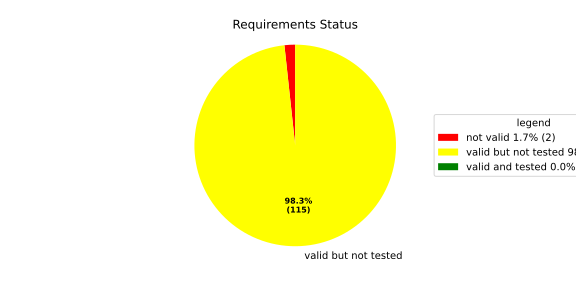
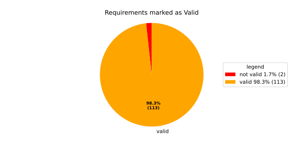
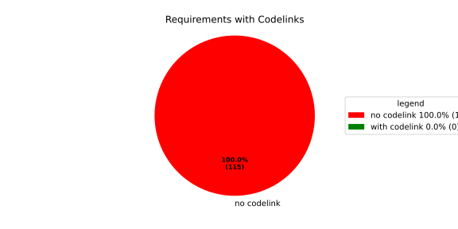

Verification Statistics#
Overview#

In Detail#


No needs passed the filters
Failed Tests
Hint: This table should be empty. Before a PR can be merged all tests have to be successful.
No needs passed the filters
Skipped / Disabled Tests
No needs passed the filters
All passed Tests#
No needs passed the filters
Details About Testcases#
No needs passed the filters
No needs passed the filters
Test Log Files#
tests-report/tests/integration/process_simple_rep_failure/process_simple_rep_failure/test.log
exec ${PAGER:-/usr/bin/less} "$0" || exit 1
Executing tests from //tests/integration/process_simple_rep_failure:process_simple_rep_failure
-----------------------------------------------------------------------------
============================= test session starts ==============================
platform linux -- Python 3.12.12, pytest-9.0.3, pluggy-1.5.0
rootdir: /home/runner/.bazel/sandbox/processwrapper-sandbox/813/execroot/_main/bazel-out/k8-fastbuild/bin/tests/integration/process_simple_rep_failure/process_simple_rep_failure.runfiles/score_itf+
configfile: pytest.ini
collected 1 item
../score_itf+::test_recovery_action_simple_rep_failure
-------------------------------- live log setup --------------------------------
[2026-06-20 08:23:29.670] [INFO] [score.itf.plugins.docker] Executing custom image bootstrap command: tests/utils/environments/x86_64-linux/x86_64-linux.sh
[2026-06-20 08:23:29.892] [DEBUG] [docker.utils.config] Trying paths: ['/home/runner/.docker/config.json', '/home/runner/.dockercfg']
[2026-06-20 08:23:29.892] [DEBUG] [docker.utils.config] Found file at path: /home/runner/.docker/config.json
[2026-06-20 08:23:29.892] [DEBUG] [docker.auth] Found 'auths' section
[2026-06-20 08:23:29.892] [DEBUG] [docker.auth] Found entry (registry='https://index.docker.io/v1/', username='githubactions')
[2026-06-20 08:23:29.905] [DEBUG] [urllib3.connectionpool] http://localhost:None "GET /version HTTP/1.1" 200 823
[2026-06-20 08:23:29.950] [DEBUG] [urllib3.connectionpool] http://localhost:None "POST /v1.48/containers/create HTTP/1.1" 201 88
[2026-06-20 08:23:29.953] [DEBUG] [urllib3.connectionpool] http://localhost:None "GET /v1.48/containers/84caaa06bb583c36f4794054668e57af95c12ed186dee7ec4af10361aa15d55a/json HTTP/1.1" 200 None
[2026-06-20 08:23:30.291] [DEBUG] [urllib3.connectionpool] http://localhost:None "POST /v1.48/containers/84caaa06bb583c36f4794054668e57af95c12ed186dee7ec4af10361aa15d55a/start HTTP/1.1" 204 0
[2026-06-20 08:23:30.292] [DEBUG] [docker.utils.config] Trying paths: ['/home/runner/.docker/config.json', '/home/runner/.dockercfg']
[2026-06-20 08:23:30.292] [DEBUG] [docker.utils.config] Found file at path: /home/runner/.docker/config.json
[2026-06-20 08:23:30.292] [DEBUG] [docker.auth] Found 'auths' section
[2026-06-20 08:23:30.293] [DEBUG] [docker.auth] Found entry (registry='https://index.docker.io/v1/', username='githubactions')
[2026-06-20 08:23:30.316] [DEBUG] [urllib3.connectionpool] http://localhost:None "GET /version HTTP/1.1" 200 823
[2026-06-20 08:23:30.608] [INFO] [tests.utils.testing_utils.setup_test] Test case setup finished
-------------------------------- live log call ---------------------------------
[2026-06-20 08:23:30.779] [INFO] [launch_manager] 2026/06/20 08:23:30.3810767 6135925 000 ECU1 LM LM log debug verbose 1 Launch Manager Started !!!!
[2026-06-20 08:23:30.780] [INFO] [launch_manager] 2026/06/20 08:23:30.3810768 6135928 000 ECU1 LM LM log debug verbose 1 Loading LCM Configurations...
[2026-06-20 08:23:30.780] [INFO] [launch_manager] 2026/06/20 08:23:30.3810768 6135928 000 ECU1 LM LM log debug verbose 1 ECUCFG_ENV_VAR_ROOTFOLDER set successfully
[2026-06-20 08:23:30.780] [INFO] [launch_manager] 2026/06/20 08:23:30.3810768 6135929 000 ECU1 LM LM log debug verbose 5 FlatBufferParser::getModeGroupPgName: MainPG ( IdentifierHash: 18079021346025578134 )
[2026-06-20 08:23:30.780] [INFO] [launch_manager] 2026/06/20 08:23:30.3810768 6135929 000 ECU1 LM LM log debug verbose 5 FlatBufferParser::getModeGroupPgStateName: MainPG/Startup ( IdentifierHash: 10504605499600661529 )
[2026-06-20 08:23:30.780] [INFO] [launch_manager] 2026/06/20 08:23:30.3810768 6135929 000 ECU1 LM LM log debug verbose 5 FlatBufferParser::getModeGroupPgStateName: MainPG/run_target_app_does_report_krunning_in_time ( IdentifierHash: 11934981641920773349 )
[2026-06-20 08:23:30.780] [INFO] [launch_manager] 2026/06/20 08:23:30.3810768 6135929 000 ECU1 LM LM log debug verbose 5 FlatBufferParser::getModeGroupPgStateName: MainPG/run_target_app_does_not_report_krunning_in_time ( IdentifierHash: 7672161913816744053 )
[2026-06-20 08:23:30.780] [INFO] [launch_manager] 2026/06/20 08:23:30.3810768 6135930 000 ECU1 LM LM log debug verbose 5 FlatBufferParser::getModeGroupPgStateName: MainPG/Off ( IdentifierHash: 15281793077830264047 )
[2026-06-20 08:23:30.780] [INFO] [launch_manager] 2026/06/20 08:23:30.3810768 6135930 000 ECU1 LM LM log debug verbose 5 FlatBufferParser::getModeGroupPgStateName: MainPG/fallback_run_target ( IdentifierHash: 4059409696722237352 )
[2026-06-20 08:23:30.782] [INFO] [launch_manager] 2026/06/20 08:23:30.3810768 6135931 000 ECU1 LM LM log debug verbose 4 parseProcessConfigurations: Process index: 0 executable_path_: /tmp/tests/process_simple_rep_failure/control_client_mock
[2026-06-20 08:23:30.782] [INFO] [launch_manager] 2026/06/20 08:23:30.3810768 6135931 000 ECU1 LM LM log debug verbose 3 Process control_client_mock is Reporting execution state
[2026-06-20 08:23:30.782] [INFO] [launch_manager] 2026/06/20 08:23:30.3810768 6135932 000 ECU1 LM LM log debug verbose 1 Process is STATE_MANAGEMENT function Cluster Affiliation
[2026-06-20 08:23:30.782] [INFO] [launch_manager] 2026/06/20 08:23:30.3810768 6135932 000 ECU1 LM LM log debug verbose 3 Process control_client_mock is Self terminating
[2026-06-20 08:23:30.782] [INFO] [launch_manager] 2026/06/20 08:23:30.3810768 6135932 000 ECU1 LM LM log debug verbose 4 ParseProcessProcessGroup: id:::pg_name_: MainPG , pg_state_name_: MainPG/Startup
[2026-06-20 08:23:30.782] [INFO] [launch_manager] 2026/06/20 08:23:30.3810768 6135932 000 ECU1 LM LM log debug verbose 4 ParseProcessProcessGroup: id:::pg_name_: MainPG , pg_state_name_: MainPG/run_target_app_does_report_krunning_in_time
[2026-06-20 08:23:30.782] [INFO] [launch_manager] 2026/06/20 08:23:30.3810768 6135933 000 ECU1 LM LM log debug verbose 4 ParseProcessProcessGroup: id:::pg_name_: MainPG , pg_state_name_: MainPG/run_target_app_does_not_report_krunning_in_time
[2026-06-20 08:23:30.785] [INFO] [launch_manager] 2026/06/20 08:23:30.3810768 6135933 000 ECU1 LM LM log debug verbose 4 ParseProcessProcessGroup: id:::pg_name_: MainPG , pg_state_name_: MainPG/fallback_run_target
[2026-06-20 08:23:30.785] [INFO] [launch_manager] 2026/06/20 08:23:30.3810768 6135934 000 ECU1 LM LM log debug verbose 4 parseProcessConfigurations: Process index: 1 executable_path_: /tmp/tests/process_simple_rep_failure/process_simple_reporting
[2026-06-20 08:23:30.785] [INFO] [launch_manager] 2026/06/20 08:23:30.3810768 6135934 000 ECU1 LM LM log debug verbose 3 Process component_does_report_krunning_in_time is Reporting execution state
[2026-06-20 08:23:30.785] [INFO] [launch_manager] 2026/06/20 08:23:30.3810768 6135934 000 ECU1 LM LM log debug verbose 1 Process is NOT associated with any function Cluster Affiliation
[2026-06-20 08:23:30.785] [INFO] [launch_manager] 2026/06/20 08:23:30.3810768 6135935 000 ECU1 LM LM log debug verbose 3 Process component_does_report_krunning_in_time is Self terminating
[2026-06-20 08:23:30.785] [INFO] [launch_manager] 2026/06/20 08:23:30.3810769 6135935 000 ECU1 LM LM log debug verbose 4 ParseProcessProcessGroup: id:::pg_name_: MainPG , pg_state_name_: MainPG/run_target_app_does_report_krunning_in_time
[2026-06-20 08:23:30.785] [INFO] [launch_manager] 2026/06/20 08:23:30.3810769 6135936 000 ECU1 LM LM log debug verbose 4 parseProcessConfigurations: Process index: 2 executable_path_: /tmp/tests/process_simple_rep_failure/process_simple_reporting
[2026-06-20 08:23:30.785] [INFO] [launch_manager] 2026/06/20 08:23:30.3810769 6135937 000 ECU1 LM LM log debug verbose 3 Process component_does_not_report_krunning_in_time is Reporting execution state
[2026-06-20 08:23:30.785] [INFO] [launch_manager] 2026/06/20 08:23:30.3810769 6135937 000 ECU1 LM LM log debug verbose 1 Process is NOT associated with any function Cluster Affiliation
[2026-06-20 08:23:30.786] [INFO] [launch_manager] 2026/06/20 08:23:30.3810769 6135937 000 ECU1 LM LM log debug verbose 3 Process component_does_not_report_krunning_in_time is Self terminating
[2026-06-20 08:23:30.786] [INFO] [launch_manager] 2026/06/20 08:23:30.3810769 6135938 000 ECU1 LM LM log debug verbose 4 ParseProcessProcessGroup: id:::pg_name_: MainPG , pg_state_name_: MainPG/run_target_app_does_not_report_krunning_in_time
[2026-06-20 08:23:30.786] [INFO] [launch_manager] 2026/06/20 08:23:30.3810769 6135938 000 ECU1 LM LM log debug verbose 4 parseProcessConfigurations: Process index: 3 executable_path_: /tmp/tests/process_simple_rep_failure/verification_process
[2026-06-20 08:23:30.786] [INFO] [launch_manager] 2026/06/20 08:23:30.3810769 6135938 000 ECU1 LM LM log debug verbose 3 Process verification_component is NOT Reporting execution state
[2026-06-20 08:23:30.786] [INFO] [launch_manager] 2026/06/20 08:23:30.3810769 6135938 000 ECU1 LM LM log debug verbose 1 Process is NOT associated with any function Cluster Affiliation
[2026-06-20 08:23:30.786] [INFO] [launch_manager] 2026/06/20 08:23:30.3810769 6135939 000 ECU1 LM LM log debug verbose 3 Process verification_component is Self terminating
[2026-06-20 08:23:30.786] [INFO] [launch_manager] 2026/06/20 08:23:30.3810769 6135939 000 ECU1 LM LM log debug verbose 4 ParseProcessProcessGroup: id:::pg_name_: MainPG , pg_state_name_: MainPG/fallback_run_target
[2026-06-20 08:23:30.786] [INFO] [launch_manager] 2026/06/20 08:23:30.3810769 6135939 000 ECU1 LM LM log debug verbose 3 Loading SWCL Nr. 0 Succeeded
[2026-06-20 08:23:30.786] [INFO] [launch_manager] 2026/06/20 08:23:30.3810769 6135939 000 ECU1 LM LM log debug verbose 2 1 process group(s)
[2026-06-20 08:23:30.786] [INFO] [launch_manager] 2026/06/20 08:23:30.3810769 6135939 000 ECU1 LM LM log debug verbose 3 Creating graph with 4 nodes
[2026-06-20 08:23:30.786] [INFO] [launch_manager] 2026/06/20 08:23:30.3810769 6135940 000 ECU1 LM LM log debug verbose 1 Process groups initialized successfully
[2026-06-20 08:23:30.786] [INFO] [launch_manager] 2026/06/20 08:23:30.3810769 6135940 000 ECU1 LM LM log debug verbose 1 Process Group initialization done
[2026-06-20 08:23:30.786] [INFO] [launch_manager] 2026/06/20 08:23:30.3810769 6135940 000 ECU1 LM LM log debug verbose 3 Creating Safe Process Map with 4 entries
[2026-06-20 08:23:30.786] [INFO] [launch_manager] 2026/06/20 08:23:30.3810769 6135940 000 ECU1 LM LM log debug verbose 2 Creating job queue with capacity 1024
[2026-06-20 08:23:30.786] [INFO] [launch_manager] 2026/06/20 08:23:30.3810769 6135941 000 ECU1 LM LM log debug verbose 1 Creating worker threads...
[2026-06-20 08:23:30.788] [INFO] [launch_manager] 2026/06/20 08:23:30.3810771 6135957 000 ECU1 LM LM log debug verbose 7 Process group index 0 (with name MainPG ) has 4 processes
[2026-06-20 08:23:30.788] [INFO] [launch_manager] 2026/06/20 08:23:30.3810771 6135958 000 ECU1 LM LM log debug verbose 2 Creating process node with id: 0
[2026-06-20 08:23:30.788] [INFO] [launch_manager] 2026/06/20 08:23:30.3810771 6135958 000 ECU1 LM LM log debug verbose 5 Process 0 has 0 start dependencies
[2026-06-20 08:23:30.788] [INFO] [launch_manager] 2026/06/20 08:23:30.3810771 6135958 000 ECU1 LM LM log debug verbose 2 Creating process node with id: 1
[2026-06-20 08:23:30.788] [INFO] [launch_manager] 2026/06/20 08:23:30.3810771 6135958 000 ECU1 LM LM log debug verbose 5 Process 1 has 0 start dependencies
[2026-06-20 08:23:30.788] [INFO] [launch_manager] 2026/06/20 08:23:30.3810771 6135958 000 ECU1 LM LM log debug verbose 2 Creating process node with id: 2
[2026-06-20 08:23:30.788] [INFO] [launch_manager] 2026/06/20 08:23:30.3810771 6135959 000 ECU1 LM LM log debug verbose 5 Process 2 has 0 start dependencies
[2026-06-20 08:23:30.788] [INFO] [launch_manager] 2026/06/20 08:23:30.3810771 6135959 000 ECU1 LM LM log debug verbose 2 Creating process node with id: 3
[2026-06-20 08:23:30.788] [INFO] [launch_manager] 2026/06/20 08:23:30.3810771 6135959 000 ECU1 LM LM log debug verbose 5 Process 3 has 0 start dependencies
[2026-06-20 08:23:30.788] [INFO] [launch_manager] 2026/06/20 08:23:30.3810771 6135959 000 ECU1 LM LM log debug verbose 3 Created 4 process nodes
[2026-06-20 08:23:30.788] [INFO] [launch_manager] 2026/06/20 08:23:30.3810771 6135959 000 ECU1 LM LM log debug verbose 2 Creating successor lists for process group MainPG
[2026-06-20 08:23:30.788] [INFO] [launch_manager] 2026/06/20 08:23:30.3810771 6135960 000 ECU1 LM LM log debug verbose 1 Graphs initialized
[2026-06-20 08:23:30.804] [INFO] [launch_manager] 2026/06/20 08:23:30.3810790 6136146 000 ECU1 LM Fcty log info verbose 2 Factory for FlatCfg MachineConfig: Loading of HM Machine Configuration succeeded.
[2026-06-20 08:23:30.804] [INFO] [launch_manager] 2026/06/20 08:23:30.3810790 6136147 000 ECU1 LM Fcty log debug verbose 3 Factory for FlatCfg MachineConfig: Alive Supervision buffer size: 100
[2026-06-20 08:23:30.804] [INFO] [launch_manager] 2026/06/20 08:23:30.3810790 6136147 000 ECU1 LM Fcty log debug verbose 3 Factory for FlatCfg MachineConfig: Monitor buffer size: 512
[2026-06-20 08:23:30.804] [INFO] [launch_manager] 2026/06/20 08:23:30.3810790 6136147 000 ECU1 LM Fcty log debug verbose 4 Factory for FlatCfg MachineConfig: Periodicity: 50000000 ns
[2026-06-20 08:23:30.804] [INFO] [launch_manager] 2026/06/20 08:23:30.3810790 6136147 000 ECU1 LM Fcty log debug verbose 3 Factory for FlatCfg MachineConfig: Configured watchdogs: 0
[2026-06-20 08:23:30.804] [INFO] [launch_manager] 2026/06/20 08:23:30.3810790 6136148 000 ECU1 LM Fcty log warn verbose 2 Factory for FlatCfg MachineConfig: No watchdog configured
[2026-06-20 08:23:30.805] [INFO] [launch_manager] 2026/06/20 08:23:30.3810790 6136148 000 ECU1 LM Fcty log debug verbose 2 Software Cluster Handler starts constructing workers: MainCluster
[2026-06-20 08:23:30.805] [INFO] [launch_manager] 2026/06/20 08:23:30.3810790 6136149 000 ECU1 LM Fcty log debug verbose 3 Factory for FlatCfg AR24-11: Successfully created Process States: control_client_mock
[2026-06-20 08:23:30.805] [INFO] [launch_manager] 2026/06/20 08:23:30.3810790 6136149 000 ECU1 LM Fcty log debug verbose 3 Factory for FlatCfg AR24-11: Number of constructed Process States: 1
[2026-06-20 08:23:30.805] [INFO] [launch_manager] 2026/06/20 08:23:30.3810790 6136150 000 ECU1 LM Fcty log debug verbose 3 Factory for FlatCfg AR24-11: Successfully created Monitor interface IPC with path: lifecycle_health_control_client_mock
[2026-06-20 08:23:30.805] [INFO] [launch_manager] 2026/06/20 08:23:30.3810790 6136151 000 ECU1 LM Fcty log debug verbose 3 Factory for FlatCfg AR24-11: Number of constructed Monitor interface IPCs: 1
[2026-06-20 08:23:30.805] [INFO] [launch_manager] 2026/06/20 08:23:30.3810790 6136151 000 ECU1 LM Fcty log debug verbose 3 Factory for FlatCfg AR24-11: Successfully created MonitorInterface: /lifecycle_health_control_client_mock
[2026-06-20 08:23:30.805] [INFO] [launch_manager] 2026/06/20 08:23:30.3810790 6136151 000 ECU1 LM Fcty log debug verbose 3 Factory for FlatCfg AR24-11: Number of constructed Monitor interfaces: 1
[2026-06-20 08:23:30.805] [INFO] [launch_manager] 2026/06/20 08:23:30.3810790 6136152 000 ECU1 LM Fcty log debug verbose 3 Factory for FlatCfg AR24-11: Successfully created supervision checkpoint: control_client_mock_checkpoint
[2026-06-20 08:23:30.805] [INFO] [launch_manager] 2026/06/20 08:23:30.3810790 6136152 000 ECU1 LM Fcty log debug verbose 3 Factory for FlatCfg AR24-11: Number of constructed supervision checkpoints: 1
[2026-06-20 08:23:30.805] [INFO] [launch_manager] 2026/06/20 08:23:30.3810790 6136152 000 ECU1 LM Fcty log debug verbose 3 Factory for FlatCfg AR24-11: Successfully created alive supervision worker object: control_client_mock_alive_supervision
[2026-06-20 08:23:30.805] [INFO] [launch_manager] 2026/06/20 08:23:30.3810790 6136152 000 ECU1 LM Fcty log debug verbose 3 Factory for FlatCfg AR24-11: Number of constructed alive supervisions: 1
[2026-06-20 08:23:30.806] [INFO] [launch_manager] 2026/06/20 08:23:30.3810790 6136153 000 ECU1 LM Fcty log info verbose 2 Phm Daemon: The (configured) periodicity in [ns] is set to: 50000000
[2026-06-20 08:23:30.806] [INFO] [launch_manager] 2026/06/20 08:23:30.3810790 6136153 000 ECU1 LM Fcty log debug verbose 2 Phm Daemon: The accuracy of the monotonic system clock in [ns] is: 1
[2026-06-20 08:23:30.806] [INFO] [launch_manager] 2026/06/20 08:23:30.3810790 6136153 000 ECU1 LM Fcty log debug verbose 3 HealthMonitor: Initialization took 0 ms
[2026-06-20 08:23:30.806] [INFO] [launch_manager] 2026/06/20 08:23:30.3810790 6136154 000 ECU1 LM LM log info verbose 1 LCM started successfully
[2026-06-20 08:23:30.806] [INFO] [launch_manager] 2026/06/20 08:23:30.3810790 6136154 000 ECU1 LM LM log debug verbose 3 clock() at run(): 38.864000 ms
[2026-06-20 08:23:30.806] [INFO] [launch_manager] 2026/06/20 08:23:30.3810790 6136155 000 ECU1 LM LM log debug verbose 1 =============STARTING MAINPG STARTUP STATE============
[2026-06-20 08:23:30.806] [INFO] [launch_manager] 2026/06/20 08:23:30.3810791 6136155 000 ECU1 LM LM log debug verbose 9 Graph::setState changes from kSuccess to kInTransition for PG 0 ( MainPG )
[2026-06-20 08:23:30.806] [INFO] [launch_manager] 2026/06/20 08:23:30.3810791 6136156 000 ECU1 LM LM log debug verbose 2 Stop Dependencies: 0
[2026-06-20 08:23:30.806] [INFO] [launch_manager] 2026/06/20 08:23:30.3810791 6136156 000 ECU1 LM LM log debug verbose 2 Stop Dependencies: 0
[2026-06-20 08:23:30.806] [INFO] [launch_manager] 2026/06/20 08:23:30.3810791 6136156 000 ECU1 LM LM log debug verbose 2 Stop Dependencies: 0
[2026-06-20 08:23:30.806] [INFO] [launch_manager] 2026/06/20 08:23:30.3810791 6136156 000 ECU1 LM LM log debug verbose 2 Stop Dependencies: 0
[2026-06-20 08:23:30.806] [INFO] [launch_manager] 2026/06/20 08:23:30.3810791 6136156 000 ECU1 LM LM log debug verbose 2 Start Dependencies: 0
[2026-06-20 08:23:30.806] [INFO] [launch_manager] 2026/06/20 08:23:30.3810791 6136156 000 ECU1 LM LM log debug verbose 2 Start Dependencies: 0
[2026-06-20 08:23:30.806] [INFO] [launch_manager] 2026/06/20 08:23:30.3810791 6136157 000 ECU1 LM LM log debug verbose 2 Start Dependencies: 0
[2026-06-20 08:23:30.806] [INFO] [launch_manager] 2026/06/20 08:23:30.3810791 6136157 000 ECU1 LM LM log debug verbose 2 Start Dependencies: 0
[2026-06-20 08:23:30.806] [INFO] [launch_manager] 2026/06/20 08:23:30.3810791 6136158 000 ECU1 LM LM log debug verbose 6 Starting process 0 ( control_client_mock ) from executable /tmp/tests/process_simple_rep_failure/control_client_mock
[2026-06-20 08:23:30.806] [INFO] [launch_manager] 2026/06/20 08:23:30.3810791 6136159 000 ECU1 LM LM log debug verbose 3 Initialize the control client for control_client_mock process
[2026-06-20 08:23:30.807] [INFO] [launch_manager] 2026/06/20 08:23:30.3810791 6136159 000 ECU1 LM LM log debug verbose 1 ControlClientChannel initialized
[2026-06-20 08:23:30.807] [INFO] [launch_manager] 2026/06/20 08:23:30.3810791 6136164 000 ECU1 LM LM log debug verbose 4 startProcess pid 68 received for process: control_client_mock
[2026-06-20 08:23:30.807] [INFO] [launch_manager] 2026/06/20 08:23:30.3810791 6136164 000 ECU1 LM LM log debug verbose 1 ControlClientChannel obtained from sync.
[2026-06-20 08:23:30.807] [INFO] [launch_manager] [==========] Running 1 test from 1 test suite.
[2026-06-20 08:23:30.807] [INFO] [launch_manager] [----------] Global test environment set-up.
[2026-06-20 08:23:30.807] [INFO] [launch_manager] [----------] 1 test from RecoveryActionSimpleRepFailure
[2026-06-20 08:23:30.807] [INFO] [launch_manager] [ RUN ] RecoveryActionSimpleRepFailure.ControlClientMock
[2026-06-20 08:23:30.807] [INFO] [launch_manager] [ STEP ] Report running from ControlClientMock
[2026-06-20 08:23:30.807] [INFO] [launch_manager] [ END STEP ] Report running from ControlClientMock
[2026-06-20 08:23:30.807] [INFO] [launch_manager] [ STEP ] Activate RunTarget run_target_app_does_report_krunning_in_time
[2026-06-20 08:23:30.807] [INFO] [launch_manager] 2026/06/20 08:23:30.3810798 6136228 000 ECU1 LM LM log debug verbose 8 2026/06/20 08:23:30.3810798 6136228 000 ECU1 LM LM log debug verbose 1 Got kRunning for pid 68 ( control_client_mock ) process 0 of group MainPG
[2026-06-20 08:23:30.807] [INFO] [launch_manager] Request sent. Waiting for acknowledgment...
[2026-06-20 08:23:30.807] [INFO] [launch_manager] 2026/06/20 08:23:30.3810798 6136228 000 ECU1 LM LM log debug verbose 7 startProcess for MainPG process 0 ( control_client_mock ) done
[2026-06-20 08:23:30.808] [INFO] [launch_manager] 2026/06/20 08:23:30.3810798 6136228 000 ECU1 LM LM log debug verbose 1 Control Client handler nudged
[2026-06-20 08:23:30.808] [INFO] [launch_manager] 2026/06/20 08:23:30.3810798 6136229 000 ECU1 LM LM log debug verbose 3 clock() at successful initial state transition: 40.199000 ms
[2026-06-20 08:23:30.808] [INFO] [launch_manager] 2026/06/20 08:23:30.3810798 6136229 000 ECU1 LM LM log debug verbose 9 Graph::setState changes from kInTransition to kSuccess for PG 0 ( MainPG )
[2026-06-20 08:23:30.808] [INFO] [launch_manager] 2026/06/20 08:23:30.3810798 6136229 000 ECU1 LM LM log info verbose 7 Completed the request for PG MainPG to State MainPG/Startup in 7 ms
[2026-06-20 08:23:30.808] [INFO] [launch_manager] 2026/06/20 08:23:30.3810798 6136229 000 ECU1 LM LM log debug verbose 1 Control Client handler nudged
[2026-06-20 08:23:30.808] [INFO] [launch_manager] 2026/06/20 08:23:30.3810799 6136240 000 ECU1 LM LM log debug verbose 8 ProcessGroupManager::ControlClientHandler: got request kSetStateRequest ( 16 ) re state MainPG/run_target_app_does_report_krunning_in_time of PG MainPG
[2026-06-20 08:23:30.808] [INFO] [launch_manager] 2026/06/20 08:23:30.3810799 6136240 000 ECU1 LM LM log debug verbose 6 Pending state for process group MainPG changed from to MainPG/run_target_app_does_report_krunning_in_time
[2026-06-20 08:23:30.808] [INFO] [launch_manager] 2026/06/20 08:23:30.3810799 6136241 000 ECU1 LM LM log debug verbose 1 Request acknowledged.
[2026-06-20 08:23:30.808] [INFO] [launch_manager] 2026/06/20 08:23:30.3810799 6136241 000 ECU1 LM LM log debug verbose 6 Pending state for process group MainPG changed from MainPG/run_target_app_does_report_krunning_in_time to
[2026-06-20 08:23:30.808] [INFO] [launch_manager] 2026/06/20 08:23:30.3810799 6136241 000 ECU1 LM LM log debug verbose 4 Start transition to MainPG/run_target_app_does_report_krunning_in_time for PG MainPG
[2026-06-20 08:23:30.808] [INFO] [launch_manager] 2026/06/20 08:23:30.3810799 6136241 000 ECU1 LM LM log debug verbose 9 Graph::setState changes from kSuccess to kInTransition for PG 0 ( MainPG )
[2026-06-20 08:23:30.808] [INFO] [launch_manager] 2026/06/20 08:23:30.3810799 6136241 000 ECU1 LM LM log debug verbose 2 Stop Dependencies: 0
[2026-06-20 08:23:30.808] [INFO] [launch_manager] 2026/06/20 08:23:30.3810799 6136242 000 ECU1 LM LM log debug verbose 2 Stop Dependencies: 0
[2026-06-20 08:23:30.808] [INFO] [launch_manager] 2026/06/20 08:23:30.3810799 6136242 000 ECU1 LM LM log debug verbose 2 Stop Dependencies: 0
[2026-06-20 08:23:30.808] [INFO] [launch_manager] 2026/06/20 08:23:30.3810799 6136242 000 ECU1 LM LM log debug verbose 2 Stop Dependencies: 0
[2026-06-20 08:23:30.808] [INFO] [launch_manager] 2026/06/20 08:23:30.3810799 6136242 000 ECU1 LM LM log debug verbose 2 Start Dependencies: 0
[2026-06-20 08:23:30.808] [INFO] [launch_manager] 2026/06/20 08:23:30.3810799 6136242 000 ECU1 LM LM log debug verbose 2 Start Dependencies: 0
[2026-06-20 08:23:30.808] [INFO] [launch_manager] 2026/06/20 08:23:30.3810799 6136242 000 ECU1 LM LM log debug verbose 2 Start Dependencies: 0
[2026-06-20 08:23:30.809] [INFO] [launch_manager] 2026/06/20 08:23:30.3810799 6136243 000 ECU1 LM LM log debug verbose 2 Start Dependencies: 0
[2026-06-20 08:23:30.809] [INFO] [launch_manager] 2026/06/20 08:23:30.3810799 6136243 000 ECU1 LM LM log debug verbose 1 Request acknowledged.
[2026-06-20 08:23:30.809] [INFO] [launch_manager] 2026/06/20 08:23:30.3810800 6136252 000 ECU1 LM LM log debug verbose 6 Starting process 1 ( component_does_report_krunning_in_time ) from executable /tmp/tests/process_simple_rep_failure/process_simple_reporting
[2026-06-20 08:23:30.809] [INFO] [launch_manager] 2026/06/20 08:23:30.3810801 6136257 000 ECU1 LM LM log debug verbose 4 startProcess pid 70 received for process: component_does_report_krunning_in_time
[2026-06-20 08:23:30.809] [INFO] [launch_manager] [==========] Running 1 test from 1 test suite.
[2026-06-20 08:23:30.809] [INFO] [launch_manager] [----------] Global test environment set-up.
[2026-06-20 08:23:30.809] [INFO] [launch_manager] [----------] 1 test from ProcessSimpleRepFailure
[2026-06-20 08:23:30.809] [INFO] [launch_manager] [ RUN ] ProcessSimpleRepFailure.ProcessSimpleReporting
[2026-06-20 08:23:30.809] [INFO] [launch_manager] [ STEP ] Check args
[2026-06-20 08:23:30.809] [INFO] [launch_manager] [ END STEP ] Check args
[2026-06-20 08:23:30.809] [INFO] [launch_manager] [ STEP ] Report running from ProcessSimpleReporting
[2026-06-20 08:23:30.841] [INFO] [launch_manager] 2026/06/20 08:23:30.3810840 6136655 000 ECU1 LM Sprv log debug verbose 6
[2026-06-20 08:23:30.841] [INFO] [launch_manager] Process with Id control_client_mock changed state PG MainPG/Startup PS 1
[2026-06-20 08:23:30.842] [INFO] [launch_manager] 2026/06/20 08:23:30.3810841 6136659 000 ECU1 LM Sprv log debug verbose 6
[2026-06-20 08:23:30.842] [INFO] [launch_manager] Process with Id control_client_mock changed state PG MainPG/Startup PS 2
[2026-06-20 08:23:30.842] [INFO] [launch_manager] 2026/06/20 08:23:30.3810841 6136661 000 ECU1 LM Sprv log debug verbose 6
[2026-06-20 08:23:30.842] [INFO] [launch_manager] Process with Id component_does_report_krunning_in_time changed state PG MainPG/run_target_app_does_report_krunning_in_time PS 1
[2026-06-20 08:23:30.842] [INFO] [launch_manager] 2026/06/20 08:23:30.3810841 6136662 000 ECU1 LM Sprv log info verbose 3
[2026-06-20 08:23:30.842] [INFO] [launch_manager] Alive Supervision ( control_client_mock_alive_supervision ) switched to OK.
[2026-06-20 08:23:30.888] [DEBUG] [tests.utils.testing_utils.run_until_file_deployed] Waiting for /tmp/tests/test_end
[2026-06-20 08:23:31.308] [INFO] [launch_manager] [ END STEP ] Report running from ProcessSimpleReporting
[2026-06-20 08:23:31.308] [INFO] [launch_manager] [ OK ] ProcessSimpleRepFailure.ProcessSimpleReporting (502 ms)
[2026-06-20 08:23:31.308] [INFO] [launch_manager] [----------] 1 test from ProcessSimpleRepFailure (502 ms total)
[2026-06-20 08:23:31.308] [INFO] [launch_manager] [----------] Global test environment tear-down
[2026-06-20 08:23:31.309] [INFO] [launch_manager] [==========] 1 test from 1 test suite ran. (502 ms total)
[2026-06-20 08:23:31.309] [INFO] [launch_manager] [ PASSED ] 1 test.
[2026-06-20 08:23:31.309] [INFO] [launch_manager] 2026/06/20 08:23:31.3811305 6141305 000 ECU1 LM LM log debug verbose 8 Got kRunning for pid 70 ( component_does_report_krunning_in_time ) process 1 of group MainPG
[2026-06-20 08:23:31.309] [INFO] [launch_manager] 2026/06/20 08:23:31.3811306 6141306 000 ECU1 LM LM log debug verbose 7 startProcess for MainPG process 1 ( component_does_report_krunning_in_time ) done
[2026-06-20 08:23:31.309] [INFO] [launch_manager] 2026/06/20 08:23:31.3811306 6141306 000 ECU1 LM LM log debug verbose 9 Graph::setState changes from kInTransition to kSuccess for PG 0 ( MainPG )
[2026-06-20 08:23:31.309] [INFO] [launch_manager] 2026/06/20 08:23:31.3811306 6141306 000 ECU1 LM LM log info verbose 7 Completed the request for PG MainPG to State MainPG/run_target_app_does_report_krunning_in_time in 506 ms
[2026-06-20 08:23:31.309] [INFO] [launch_manager] 2026/06/20 08:23:31.3811306 6141307 000 ECU1 LM LM log debug verbose 1 Control Client handler nudged
[2026-06-20 08:23:31.309] [INFO] [launch_manager] 2026/06/20 08:23:31.3811306 6141311 000 ECU1 LM LM log debug verbose 12 Child process 1 of MainPG pid 70 ( component_does_report_krunning_in_time ) for node True terminated with status 0
[2026-06-20 08:23:31.310] [INFO] [launch_manager] 2026/06/20 08:23:31.3811306 6141314 000 ECU1 LM LM log debug verbose 8 ProcessGroupManager::ControlClientHandler: Sending kSetStateSuccess ( 20 ) re state MainPG/run_target_app_does_report_krunning_in_time of PG MainPG
[2026-06-20 08:23:31.310] [INFO] [launch_manager] 2026/06/20 08:23:31.3811306 6141314 000 ECU1 LM LM log debug verbose 1 Response sent.
[2026-06-20 08:23:31.341] [INFO] [launch_manager] 2026/06/20 08:23:31.3811340 6141655 000 ECU1 LM Sprv log debug verbose 6 Process with Id component_does_report_krunning_in_time changed state PG MainPG/run_target_app_does_report_krunning_in_time PS 2
[2026-06-20 08:23:31.341] [INFO] [launch_manager] 2026/06/20 08:23:31.3811341 6141655 000 ECU1 LM Sprv log debug verbose 6 Process with Id component_does_report_krunning_in_time changed state PG MainPG/run_target_app_does_report_krunning_in_time PS 4
[2026-06-20 08:23:31.397] [INFO] [launch_manager] 2026/06/20 08:23:31.3811395 6142204 000 ECU1 LM LM log debug verbose 1 Response retrieved.
[2026-06-20 08:23:31.397] [INFO] [launch_manager] [ END STEP ] Activate RunTarget run_target_app_does_report_krunning_in_time
[2026-06-20 08:23:31.459] [DEBUG] [tests.utils.testing_utils.run_until_file_deployed] Waiting for /tmp/tests/test_end
[2026-06-20 08:23:32.029] [DEBUG] [tests.utils.testing_utils.run_until_file_deployed] Waiting for /tmp/tests/test_end
[2026-06-20 08:23:32.398] [INFO] [launch_manager] [ STEP ] Verify fallback run target has not been activated
[2026-06-20 08:23:32.399] [INFO] [launch_manager] [ END STEP ] Verify fallback run target has not been activated
[2026-06-20 08:23:32.399] [INFO] [launch_manager] [ STEP ] Activate RunTarget run_target_app_does_not_report_krunning_in_time
[2026-06-20 08:23:32.399] [INFO] [launch_manager] 2026/06/20 08:23:32.3812396 6152208 000 ECU1 LM LM log debug verbose 1
[2026-06-20 08:23:32.399] [INFO] [launch_manager] Request sent. Waiting for acknowledgment...
[2026-06-20 08:23:32.401] [INFO] [launch_manager] 2026/06/20 08:23:32.3812398 6152229 000 ECU1 LM LM log debug verbose 8 ProcessGroupManager::ControlClientHandler: got request kSetStateRequest ( 16 ) re state MainPG/run_target_app_does_not_report_krunning_in_time of PG MainPG
[2026-06-20 08:23:32.401] [INFO] [launch_manager] 2026/06/20 08:23:32.3812398 6152229 000 ECU1 LM LM log debug verbose 6 Pending state for process group MainPG changed from to MainPG/run_target_app_does_not_report_krunning_in_time
[2026-06-20 08:23:32.401] [INFO] [launch_manager] 2026/06/20 08:23:32.3812398 6152229 000 ECU1 LM LM log debug verbose 1 Request acknowledged.
[2026-06-20 08:23:32.401] [INFO] [launch_manager] 2026/06/20 08:23:32.3812398 6152230 000 ECU1 LM LM log debug verbose 6 Pending state for process group MainPG changed from MainPG/run_target_app_does_not_report_krunning_in_time to
[2026-06-20 08:23:32.403] [INFO] [launch_manager] 2026/06/20 08:23:32.3812398 6152230 000 ECU1 LM LM log debug verbose 4 Start transition to MainPG/run_target_app_does_not_report_krunning_in_time for PG MainPG
[2026-06-20 08:23:32.403] [INFO] [launch_manager] 2026/06/20 08:23:32.3812398 6152230 000 ECU1 LM LM log debug verbose 9 Graph::setState changes from kSuccess to kInTransition for PG 0 ( MainPG )
[2026-06-20 08:23:32.403] [INFO] [launch_manager] 2026/06/20 08:23:32.3812398 6152231 000 ECU1 LM LM log debug verbose 2 Stop Dependencies: 0
[2026-06-20 08:23:32.403] [INFO] [launch_manager] 2026/06/20 08:23:32.3812398 6152231 000 ECU1 LM LM log debug verbose 2 Stop Dependencies: 0
[2026-06-20 08:23:32.403] [INFO] [launch_manager] 2026/06/20 08:23:32.3812398 6152231 000 ECU1 LM LM log debug verbose 2 Stop Dependencies: 0
[2026-06-20 08:23:32.403] [INFO] [launch_manager] 2026/06/20 08:23:32.3812398 6152231 000 ECU1 LM LM log debug verbose 2 2026/06/20 08:23:32.3812398 6152231 000 ECU1 LM LM log debug verbose 1 Stop Dependencies: 0
[2026-06-20 08:23:32.403] [INFO] [launch_manager] Request acknowledged.
[2026-06-20 08:23:32.403] [INFO] [launch_manager] 2026/06/20 08:23:32.3812398 6152231 000 ECU1 LM LM log debug verbose 2 Start Dependencies: 0
[2026-06-20 08:23:32.404] [INFO] [launch_manager] 2026/06/20 08:23:32.3812398 6152232 000 ECU1 LM LM log debug verbose 2 Start Dependencies: 0
[2026-06-20 08:23:32.406] [INFO] [launch_manager] 2026/06/20 08:23:32.3812398 6152232 000 ECU1 LM LM log debug verbose 2 Start Dependencies: 0
[2026-06-20 08:23:32.406] [INFO] [launch_manager] 2026/06/20 08:23:32.3812398 6152232 000 ECU1 LM LM log debug verbose 2 Start Dependencies: 0
[2026-06-20 08:23:32.406] [INFO] [launch_manager] 2026/06/20 08:23:32.3812398 6152233 000 ECU1 LM LM log debug verbose 6 Starting process 2 ( component_does_not_report_krunning_in_time ) from executable /tmp/tests/process_simple_rep_failure/process_simple_reporting
[2026-06-20 08:23:32.406] [INFO] [launch_manager] 2026/06/20 08:23:32.3812399 6152239 000 ECU1 LM LM log debug verbose 4 startProcess pid 92 received for process: component_does_not_report_krunning_in_time
[2026-06-20 08:23:32.409] [INFO] [launch_manager] [==========] Running 1 test from 1 test suite.
[2026-06-20 08:23:32.410] [INFO] [launch_manager] [----------] Global test environment set-up.
[2026-06-20 08:23:32.410] [INFO] [launch_manager] [----------] 1 test from ProcessSimpleRepFailure
[2026-06-20 08:23:32.410] [INFO] [launch_manager] [ RUN ] ProcessSimpleRepFailure.ProcessSimpleReporting
[2026-06-20 08:23:32.410] [INFO] [launch_manager] [ STEP ] Check args
[2026-06-20 08:23:32.410] [INFO] [launch_manager] [ END STEP ] Check args
[2026-06-20 08:23:32.410] [INFO] [launch_manager] [ STEP ] Report running from ProcessSimpleReporting
[2026-06-20 08:23:32.444] [INFO] [launch_manager] 2026/06/20 08:23:32.3812440 6152655 000 ECU1 LM Sprv log debug verbose 6 Process with Id component_does_not_report_krunning_in_time changed state PG MainPG/run_target_app_does_not_report_krunning_in_time PS 1
[2026-06-20 08:23:32.606] [DEBUG] [tests.utils.testing_utils.run_until_file_deployed] Waiting for /tmp/tests/test_end
[2026-06-20 08:23:33.178] [DEBUG] [tests.utils.testing_utils.run_until_file_deployed] Waiting for /tmp/tests/test_end
[2026-06-20 08:23:33.441] [INFO] [launch_manager] 2026/06/20 08:23:33.3813441 6162661 000 ECU1 LM LM log error verbose 1 Semaphore timedWait or post failed: Unable to wait or post on semaphores within the specified timeout.
[2026-06-20 08:23:33.442] [INFO] [launch_manager] 2026/06/20 08:23:33.3813441 6162661 000 ECU1 LM LM log warn verbose 5 Got kRunning timeout for process 2 ( component_does_not_report_krunning_in_time )
[2026-06-20 08:23:33.442] [INFO] [launch_manager] 2026/06/20 08:23:33.3813441 6162661 000 ECU1 LM LM log debug verbose 5 terminating process 2 ( component_does_not_report_krunning_in_time )
[2026-06-20 08:23:33.442] [INFO] [launch_manager] 2026/06/20 08:23:33.3813441 6162662 000 ECU1 LM LM log debug verbose 9 Requesting termination of process 2 of MainPG pid 92 ( component_does_not_report_krunning_in_time )
[2026-06-20 08:23:33.442] [INFO] [launch_manager] 2026/06/20 08:23:33.3813441 6162662 000 ECU1 LM LM log debug verbose 2 Request termination received for 92
[2026-06-20 08:23:33.491] [INFO] [launch_manager] 2026/06/20 08:23:33.3813490 6163155 000 ECU1 LM Sprv log debug verbose 6 Process with Id component_does_not_report_krunning_in_time changed state PG MainPG/run_target_app_does_not_report_krunning_in_time PS 3
[2026-06-20 08:23:33.751] [DEBUG] [tests.utils.testing_utils.run_until_file_deployed] Waiting for /tmp/tests/test_end
[2026-06-20 08:23:34.350] [DEBUG] [tests.utils.testing_utils.run_until_file_deployed] Waiting for /tmp/tests/test_end
[2026-06-20 08:23:34.560] [INFO] [launch_manager] 2026/06/20 08:23:34.3814559 6173844 000 ECU1 LM LM log warn verbose 5 Process 2 ( component_does_not_report_krunning_in_time ) did not respond to SIGTERM, sending SIGKILL
[2026-06-20 08:23:34.560] [INFO] [launch_manager] 2026/06/20 08:23:34.3814559 6173844 000 ECU1 LM LM log debug verbose 2 Forced termination received for pid 92
[2026-06-20 08:23:34.560] [INFO] [launch_manager] 2026/06/20 08:23:34.3814560 6173848 000 ECU1 LM LM log debug verbose 12 Child process 2 of MainPG pid 92 ( component_does_not_report_krunning_in_time ) for node True terminated with status 9
[2026-06-20 08:23:34.561] [INFO] [launch_manager] 2026/06/20 08:23:34.3814560 6173849 000 ECU1 LM LM log warn verbose 7 unexpected termination of process 2 pid 92 ( component_does_not_report_krunning_in_time )
[2026-06-20 08:23:34.561] [INFO] [launch_manager] 2026/06/20 08:23:34.3814560 6173849 000 ECU1 LM LM log debug verbose 9 Graph::setState changes from kInTransition to kAborting for PG 0 ( MainPG )
[2026-06-20 08:23:34.564] [INFO] [launch_manager] 2026/06/20 08:23:34.3814562 6173869 000 ECU1 LM LM log debug verbose 7 terminateProcess for MainPG process 2 ( component_does_not_report_krunning_in_time ) done
[2026-06-20 08:23:34.564] [INFO] [launch_manager] 2026/06/20 08:23:34.3814562 6173870 000 ECU1 LM LM log debug verbose 7 startProcess for MainPG process 2 ( component_does_not_report_krunning_in_time ) done
[2026-06-20 08:23:34.564] [INFO] [launch_manager] 2026/06/20 08:23:34.3814562 6173871 000 ECU1 LM LM log debug verbose 9 Graph::setState changes from kAborting to kUndefinedState for PG 0 ( MainPG )
[2026-06-20 08:23:34.564] [INFO] [launch_manager] 2026/06/20 08:23:34.3814562 6173871 000 ECU1 LM LM log debug verbose 1 Control Client handler nudged
[2026-06-20 08:23:34.565] [INFO] [launch_manager] 2026/06/20 08:23:34.3814564 6173890 000 ECU1 LM LM log debug verbose 8 ProcessGroupManager::ControlClientHandler: Sending kFailedUnexpectedTerminationOnEnter ( 23 ) re state MainPG/run_target_app_does_not_report_krunning_in_time of PG MainPG
[2026-06-20 08:23:34.566] [INFO] [launch_manager] 2026/06/20 08:23:34.3814564 6173890 000 ECU1 LM LM log debug verbose 1 Response sent.
[2026-06-20 08:23:34.566] [INFO] [launch_manager] 2026/06/20 08:23:34.3814564 6173891 000 ECU1 LM LM log warn verbose 3 Problem discovered in PG MainPG Activating Recovery state.
[2026-06-20 08:23:34.567] [INFO] [launch_manager] 2026/06/20 08:23:34.3814564 6173891 000 ECU1 LM LM log debug verbose 9 Graph::setState changes from kUndefinedState to kInTransition for PG 0 ( MainPG )
[2026-06-20 08:23:34.567] [INFO] [launch_manager] 2026/06/20 08:23:34.3814564 6173891 000 ECU1 LM LM log debug verbose 2 Stop Dependencies: 0
[2026-06-20 08:23:34.567] [INFO] [launch_manager] 2026/06/20 08:23:34.3814564 6173891 000 ECU1 LM LM log debug verbose 2 Stop Dependencies: 0
[2026-06-20 08:23:34.567] [INFO] [launch_manager] 2026/06/20 08:23:34.3814564 6173892 000 ECU1 LM LM log debug verbose 2 Stop Dependencies: 0
[2026-06-20 08:23:34.567] [INFO] [launch_manager] 2026/06/20 08:23:34.3814564 6173892 000 ECU1 LM LM log debug verbose 2 Stop Dependencies: 0
[2026-06-20 08:23:34.567] [INFO] [launch_manager] 2026/06/20 08:23:34.3814564 6173892 000 ECU1 LM LM log debug verbose 2 Start Dependencies: 0
[2026-06-20 08:23:34.567] [INFO] [launch_manager] 2026/06/20 08:23:34.3814564 6173892 000 ECU1 LM LM log debug verbose 2 Start Dependencies: 0
[2026-06-20 08:23:34.567] [INFO] [launch_manager] 2026/06/20 08:23:34.3814564 6173892 000 ECU1 LM LM log debug verbose 2 Start Dependencies: 0
[2026-06-20 08:23:34.570] [INFO] [launch_manager] 2026/06/20 08:23:34.3814564 6173892 000 ECU1 LM LM log debug verbose 2 Start Dependencies: 0
[2026-06-20 08:23:34.570] [INFO] [launch_manager] 2026/06/20 08:23:34.3814564 6173893 000 ECU1 LM LM log debug verbose 6 Starting process 3 ( verification_component ) from executable /tmp/tests/process_simple_rep_failure/verification_process
[2026-06-20 08:23:34.570] [INFO] [launch_manager] 2026/06/20 08:23:34.3814565 6173900 000 ECU1 LM LM log debug verbose 4 startProcess pid 117 received for process: verification_component
[2026-06-20 08:23:34.570] [INFO] [launch_manager] 2026/06/20 08:23:34.3814565 6173900 000 ECU1 LM LM log debug verbose 8 Considered kRunning for Non Reporting Process pid 117 ( verification_component ) process 3 of group MainPG
[2026-06-20 08:23:34.571] [INFO] [launch_manager] 2026/06/20 08:23:34.3814565 6173901 000 ECU1 LM LM log debug verbose 7 startProcess for MainPG process 3 ( verification_component ) done
[2026-06-20 08:23:34.571] [INFO] [launch_manager] 2026/06/20 08:23:34.3814565 6173901 000 ECU1 LM LM log debug verbose 9 Graph::setState changes from kInTransition to kSuccess for PG 0 ( MainPG )
[2026-06-20 08:23:34.571] [INFO] [launch_manager] 2026/06/20 08:23:34.3814565 6173901 000 ECU1 LM LM log info verbose 7 Completed the request for PG MainPG to State MainPG/fallback_run_target in 1 ms
[2026-06-20 08:23:34.571] [INFO] [launch_manager] 2026/06/20 08:23:34.3814565 6173902 000 ECU1 LM LM log debug verbose 1 Control Client handler nudged
[2026-06-20 08:23:34.572] [INFO] [launch_manager] 2026/06/20 08:23:34.3814566 6173913 000 ECU1 LM LM log debug verbose 8 ProcessGroupManager::ControlClientHandler: Sending kSetStateSuccess ( 20 ) re state MainPG/fallback_run_target of PG MainPG
[2026-06-20 08:23:34.574] [INFO] [launch_manager] 2026/06/20 08:23:34.3814566 6173914 000 ECU1 LM LM log debug verbose 1 Failed to send response: response is not empty.
[2026-06-20 08:23:34.574] [INFO] [launch_manager] 2026/06/20 08:23:34.3814566 6173914 000 ECU1 LM LM log debug verbose 1 Control Client handler nudged
[2026-06-20 08:23:34.575] [INFO] [launch_manager] 2026/06/20 08:23:34.3814566 6173914 000 ECU1 LM LM log debug verbose 8 ProcessGroupManager::ControlClientHandler: Sending kSetStateSuccess ( 20 ) re state MainPG/fallback_run_target of PG MainPG
[2026-06-20 08:23:34.575] [INFO] [launch_manager] 2026/06/20 08:23:34.3814566 6173914 000 ECU1 LM LM log debug verbose 1 Failed to send response: response is not empty.
[2026-06-20 08:23:34.575] [INFO] [launch_manager] 2026/06/20 08:23:34.3814566 6173914 000 ECU1 LM LM log debug verbose 1 Control Client handler nudged
[2026-06-20 08:23:34.575] [INFO] [launch_manager] 2026/06/20 08:23:34.3814566 6173915 000 ECU1 LM LM log debug verbose 8 ProcessGroupManager::ControlClientHandler: Sending kSetStateSuccess ( 20 ) re state MainPG/fallback_run_target of PG MainPG
[2026-06-20 08:23:34.576] [INFO] [launch_manager] 2026/06/20 08:23:34.3814566 6173915 000 ECU1 LM LM log debug verbose 1 Failed to send response: response is not empty.
[2026-06-20 08:23:34.576] [INFO] [launch_manager] 2026/06/20 08:23:34.3814566 6173915 000 ECU1 LM LM log debug verbose 1 Control Client handler nudged
[2026-06-20 08:23:34.577] [INFO] [launch_manager] 2026/06/20 08:23:34.3814567 6173915 000 ECU1 LM LM log debug verbose 8 ProcessGroupManager::ControlClientHandler: Sending kSetStateSuccess ( 20 ) re state MainPG/fallback_run_target of PG MainPG
[2026-06-20 08:23:34.578] [INFO] [launch_manager] 2026/06/20 08:23:34.3814567 6173915 000 ECU1 LM LM log debug verbose 1 Failed to send response: response is not empty.
[2026-06-20 08:23:34.579] [INFO] [launch_manager] 2026/06/20 08:23:34.3814567 6173916 000 ECU1 LM LM log debug verbose 1 Control Client handler nudged
[2026-06-20 08:23:34.581] [INFO] [launch_manager] 2026/06/20 08:23:34.3814567 6173916 000 ECU1 LM LM log debug verbose 8 ProcessGroupManager::ControlClientHandler: Sending kSetStateSuccess ( 20 ) re state MainPG/fallback_run_target of PG MainPG
[2026-06-20 08:23:34.583] [INFO] [launch_manager] 2026/06/20 08:23:34.3814567 6173916 000 ECU1 LM LM log debug verbose 1 Failed to send response: response is not empty.
[2026-06-20 08:23:34.584] [INFO] [launch_manager] 2026/06/20 08:23:34.3814567 6173916 000 ECU1 LM LM log debug verbose 1 Control Client handler nudged
[2026-06-20 08:23:34.584] [INFO] [launch_manager] 2026/06/20 08:23:34.3814567 6173917 000 ECU1 LM LM log debug verbose 8 ProcessGroupManager::ControlClientHandler: Sending kSetStateSuccess ( 20 ) re state MainPG/fallback_run_target of PG MainPG
[2026-06-20 08:23:34.584] [INFO] [launch_manager] 2026/06/20 08:23:34.3814567 6173917 000 ECU1 LM LM log debug verbose 1 Failed to send response: response is not empty.
[2026-06-20 08:23:34.586] [INFO] [launch_manager] 2026/06/20 08:23:34.3814567 6173917 000 ECU1 LM LM log debug verbose 1 Control Client handler nudged
[2026-06-20 08:23:34.587] [INFO] [launch_manager] 2026/06/20 08:23:34.3814567 6173917 000 ECU1 LM LM log debug verbose 8 ProcessGroupManager::ControlClientHandler: Sending kSetStateSuccess ( 20 ) re state MainPG/fallback_run_target of PG MainPG
[2026-06-20 08:23:34.587] [INFO] [launch_manager] 2026/06/20 08:23:34.3814567 6173917 000 ECU1 LM LM log debug verbose 1 Failed to send response: response is not empty.
[2026-06-20 08:23:34.587] [INFO] [launch_manager] 2026/06/20 08:23:34.3814567 6173917 000 ECU1 LM LM log debug verbose 1 Control Client handler nudged
[2026-06-20 08:23:34.587] [INFO] [launch_manager] 2026/06/20 08:23:34.3814567 6173918 000 ECU1 LM LM log debug verbose 8 ProcessGroupManager::ControlClientHandler: Sending kSetStateSuccess ( 20 ) re state MainPG/fallback_run_target of PG MainPG
[2026-06-20 08:23:34.587] [INFO] [launch_manager] 2026/06/20 08:23:34.3814567 6173918 000 ECU1 LM LM log debug verbose 1 Failed to send response: response is not empty.
[2026-06-20 08:23:34.587] [INFO] [launch_manager] 2026/06/20 08:23:34.3814567 6173918 000 ECU1 LM LM log debug verbose 1 Control Client handler nudged
[2026-06-20 08:23:34.587] [INFO] [launch_manager] 2026/06/20 08:23:34.3814567 6173918 000 ECU1 LM LM log debug verbose 8 ProcessGroupManager::ControlClientHandler: Sending kSetStateSuccess ( 20 ) re state MainPG/fallback_run_target of PG MainPG
[2026-06-20 08:23:34.587] [INFO] [launch_manager] 2026/06/20 08:23:34.3814567 6173919 000 ECU1 LM LM log debug verbose 1 Failed to send response: response is not empty.
[2026-06-20 08:23:34.587] [INFO] [launch_manager] 2026/06/20 08:23:34.3814567 6173919 000 ECU1 LM LM log debug verbose 1 Control Client handler nudged
[2026-06-20 08:23:34.587] [INFO] [launch_manager] 2026/06/20 08:23:34.3814567 6173919 000 ECU1 LM LM log debug verbose 8 ProcessGroupManager::ControlClientHandler: Sending kSetStateSuccess ( 20 ) re state MainPG/fallback_run_target of PG MainPG
[2026-06-20 08:23:34.587] [INFO] [launch_manager] 2026/06/20 08:23:34.3814567 6173920 000 ECU1 LM LM log debug verbose 12 Child process 3 of MainPG pid 117 ( verification_component ) for node True terminated with status 0
[2026-06-20 08:23:34.587] [INFO] [launch_manager] 2026/06/20 08:23:34.3814567 6173921 000 ECU1 LM LM log debug verbose 1 Failed to send response: response is not empty.
[2026-06-20 08:23:34.588] [INFO] [launch_manager] 2026/06/20 08:23:34.3814567 6173921 000 ECU1 LM LM log debug verbose 1 Control Client handler nudged
[2026-06-20 08:23:34.588] [INFO] [launch_manager] 2026/06/20 08:23:34.3814567 6173921 000 ECU1 LM LM log debug verbose 8 ProcessGroupManager::ControlClientHandler: Sending kSetStateSuccess ( 20 ) re state MainPG/fallback_run_target of PG MainPG
[2026-06-20 08:23:34.588] [INFO] [launch_manager] 2026/06/20 08:23:34.3814567 6173921 000 ECU1 LM LM log debug verbose 1 Failed to send response: response is not empty.
[2026-06-20 08:23:34.588] [INFO] [launch_manager] 2026/06/20 08:23:34.3814567 6173922 000 ECU1 LM LM log debug verbose 1 Control Client handler nudged
[2026-06-20 08:23:34.588] [INFO] [launch_manager] 2026/06/20 08:23:34.3814567 6173922 000 ECU1 LM LM log debug verbose 8 ProcessGroupManager::ControlClientHandler: Sending kSetStateSuccess ( 20 ) re state MainPG/fallback_run_target of PG MainPG
[2026-06-20 08:23:34.588] [INFO] [launch_manager] 2026/06/20 08:23:34.3814567 6173922 000 ECU1 LM LM log debug verbose 1 Failed to send response: response is not empty.
[2026-06-20 08:23:34.588] [INFO] [launch_manager] 2026/06/20 08:23:34.3814567 6173922 000 ECU1 LM LM log debug verbose 1 Control Client handler nudged
[2026-06-20 08:23:34.588] [INFO] [launch_manager] 2026/06/20 08:23:34.3814567 6173923 000 ECU1 LM LM log debug verbose 8 ProcessGroupManager::ControlClientHandler: Sending kSetStateSuccess ( 20 ) re state MainPG/fallback_run_target of PG MainPG
[2026-06-20 08:23:34.588] [INFO] [launch_manager] 2026/06/20 08:23:34.3814567 6173923 000 ECU1 LM LM log debug verbose 1 Failed to send response: response is not empty.
[2026-06-20 08:23:34.588] [INFO] [launch_manager] 2026/06/20 08:23:34.3814567 6173923 000 ECU1 LM LM log debug verbose 1 Control Client handler nudged
[2026-06-20 08:23:34.588] [INFO] [launch_manager] 2026/06/20 08:23:34.3814567 6173923 000 ECU1 LM LM log debug verbose 8 ProcessGroupManager::ControlClientHandler: Sending kSetStateSuccess ( 20 ) re state MainPG/fallback_run_target of PG MainPG
[2026-06-20 08:23:34.588] [INFO] [launch_manager] 2026/06/20 08:23:34.3814567 6173923 000 ECU1 LM LM log debug verbose 1 Failed to send response: response is not empty.
[2026-06-20 08:23:34.588] [INFO] [launch_manager] 2026/06/20 08:23:34.3814567 6173924 000 ECU1 LM LM log debug verbose 1 Control Client handler nudged
[2026-06-20 08:23:34.588] [INFO] [launch_manager] 2026/06/20 08:23:34.3814567 6173924 000 ECU1 LM LM log debug verbose 8 ProcessGroupManager::ControlClientHandler: Sending kSetStateSuccess ( 20 ) re state MainPG/fallback_run_target of PG MainPG
[2026-06-20 08:23:34.588] [INFO] [launch_manager] 2026/06/20 08:23:34.3814567 6173924 000 ECU1 LM LM log debug verbose 1 Failed to send response: response is not empty.
[2026-06-20 08:23:34.588] [INFO] [launch_manager] 2026/06/20 08:23:34.3814567 6173924 000 ECU1 LM LM log debug verbose 1 Control Client handler nudged
[2026-06-20 08:23:34.589] [INFO] [launch_manager] 2026/06/20 08:23:34.3814567 6173924 000 ECU1 LM LM log debug verbose 8 ProcessGroupManager::ControlClientHandler: Sending kSetStateSuccess ( 20 ) re state MainPG/fallback_run_target of PG MainPG
[2026-06-20 08:23:34.589] [INFO] [launch_manager] 2026/06/20 08:23:34.3814567 6173925 000 ECU1 LM LM log debug verbose 1 Failed to send response: response is not empty.
[2026-06-20 08:23:34.589] [INFO] [launch_manager] 2026/06/20 08:23:34.3814567 6173925 000 ECU1 LM LM log debug verbose 1 Control Client handler nudged
[2026-06-20 08:23:34.589] [INFO] [launch_manager] 2026/06/20 08:23:34.3814567 6173925 000 ECU1 LM LM log debug verbose 8 ProcessGroupManager::ControlClientHandler: Sending kSetStateSuccess ( 20 ) re state MainPG/fallback_run_target of PG MainPG
[2026-06-20 08:23:34.589] [INFO] [launch_manager] 2026/06/20 08:23:34.3814568 6173925 000 ECU1 LM LM log debug verbose 1 Failed to send response: response is not empty.
[2026-06-20 08:23:34.589] [INFO] [launch_manager] 2026/06/20 08:23:34.3814568 6173925 000 ECU1 LM LM log debug verbose 1 Control Client handler nudged
[2026-06-20 08:23:34.589] [INFO] [launch_manager] 2026/06/20 08:23:34.3814568 6173926 000 ECU1 LM LM log debug verbose 8 ProcessGroupManager::ControlClientHandler: Sending kSetStateSuccess ( 20 ) re state MainPG/fallback_run_target of PG MainPG
[2026-06-20 08:23:34.589] [INFO] [launch_manager] 2026/06/20 08:23:34.3814568 6173926 000 ECU1 LM LM log debug verbose 1 Failed to send response: response is not empty.
[2026-06-20 08:23:34.597] [INFO] [launch_manager] 2026/06/20 08:23:34.3814568 6173926 000 ECU1 LM LM log debug verbose 1 Control Client handler nudged
[2026-06-20 08:23:34.597] [INFO] [launch_manager] 2026/06/20 08:23:34.3814568 6173926 000 ECU1 LM LM log debug verbose 8 ProcessGroupManager::ControlClientHandler: Sending kSetStateSuccess ( 20 ) re state MainPG/fallback_run_target of PG MainPG
[2026-06-20 08:23:34.598] [INFO] [launch_manager] 2026/06/20 08:23:34.3814568 6173926 000 ECU1 LM LM log debug verbose 1 Failed to send response: response is not empty.
[2026-06-20 08:23:34.598] [INFO] [launch_manager] 2026/06/20 08:23:34.3814568 6173927 000 ECU1 LM LM log debug verbose 1 Control Client handler nudged
[2026-06-20 08:23:34.598] [INFO] [launch_manager] 2026/06/20 08:23:34.3814568 6173927 000 ECU1 LM LM log debug verbose 8 ProcessGroupManager::ControlClientHandler: Sending kSetStateSuccess ( 20 ) re state MainPG/fallback_run_target of PG MainPG
[2026-06-20 08:23:34.598] [INFO] [launch_manager] 2026/06/20 08:23:34.3814568 6173927 000 ECU1 LM LM log debug verbose 1 Failed to send response: response is not empty.
[2026-06-20 08:23:34.598] [INFO] [launch_manager] 2026/06/20 08:23:34.3814568 6173927 000 ECU1 LM LM log debug verbose 1 Control Client handler nudged
[2026-06-20 08:23:34.598] [INFO] [launch_manager] 2026/06/20 08:23:34.3814568 6173927 000 ECU1 LM LM log debug verbose 8 ProcessGroupManager::ControlClientHandler: Sending kSetStateSuccess ( 20 ) re state MainPG/fallback_run_target of PG MainPG
[2026-06-20 08:23:34.599] [INFO] [launch_manager] 2026/06/20 08:23:34.3814568 6173928 000 ECU1 LM LM log debug verbose 1 Failed to send response: response is not empty.
[2026-06-20 08:23:34.599] [INFO] [launch_manager] 2026/06/20 08:23:34.3814568 6173928 000 ECU1 LM LM log debug verbose 1 Control Client handler nudged
[2026-06-20 08:23:34.599] [INFO] [launch_manager] 2026/06/20 08:23:34.3814568 6173928 000 ECU1 LM LM log debug verbose 8 ProcessGroupManager::ControlClientHandler: Sending kSetStateSuccess ( 20 ) re state MainPG/fallback_run_target of PG MainPG
[2026-06-20 08:23:34.599] [INFO] [launch_manager] 2026/06/20 08:23:34.3814568 6173928 000 ECU1 LM LM log debug verbose 1 Failed to send response: response is not empty.
[2026-06-20 08:23:34.599] [INFO] [launch_manager] 2026/06/20 08:23:34.3814568 6173928 000 ECU1 LM LM log debug verbose 1 Control Client handler nudged
[2026-06-20 08:23:34.600] [INFO] [launch_manager] 2026/06/20 08:23:34.3814568 6173929 000 ECU1 LM LM log debug verbose 8 ProcessGroupManager::ControlClientHandler: Sending kSetStateSuccess ( 20 ) re state MainPG/fallback_run_target of PG MainPG
[2026-06-20 08:23:34.601] [INFO] [launch_manager] 2026/06/20 08:23:34.3814568 6173929 000 ECU1 LM LM log debug verbose 1 Failed to send response: response is not empty.
[2026-06-20 08:23:34.602] [INFO] [launch_manager] 2026/06/20 08:23:34.3814568 6173929 000 ECU1 LM LM log debug verbose 1 Control Client handler nudged
[2026-06-20 08:23:34.604] [INFO] [launch_manager] 2026/06/20 08:23:34.3814568 6173929 000 ECU1 LM LM log debug verbose 8 ProcessGroupManager::ControlClientHandler: Sending kSetStateSuccess ( 20 ) re state MainPG/fallback_run_target of PG MainPG
[2026-06-20 08:23:34.604] [INFO] [launch_manager] 2026/06/20 08:23:34.3814568 6173929 000 ECU1 LM LM log debug verbose 1 Failed to send response: response is not empty.
[2026-06-20 08:23:34.604] [INFO] [launch_manager] 2026/06/20 08:23:34.3814568 6173930 000 ECU1 LM LM log debug verbose 1 Control Client handler nudged
[2026-06-20 08:23:34.604] [INFO] [launch_manager] 2026/06/20 08:23:34.3814568 6173930 000 ECU1 LM LM log debug verbose 8 ProcessGroupManager::ControlClientHandler: Sending kSetStateSuccess ( 20 ) re state MainPG/fallback_run_target of PG MainPG
[2026-06-20 08:23:34.604] [INFO] [launch_manager] 2026/06/20 08:23:34.3814568 6173930 000 ECU1 LM LM log debug verbose 1 Failed to send response: response is not empty.
[2026-06-20 08:23:34.604] [INFO] [launch_manager] 2026/06/20 08:23:34.3814568 6173931 000 ECU1 LM LM log debug verbose 1 Control Client handler nudged
[2026-06-20 08:23:34.604] [INFO] [launch_manager] 2026/06/20 08:23:34.3814568 6173931 000 ECU1 LM LM log debug verbose 8 ProcessGroupManager::ControlClientHandler: Sending kSetStateSuccess ( 20 ) re state MainPG/fallback_run_target of PG MainPG
[2026-06-20 08:23:34.605] [INFO] [launch_manager] 2026/06/20 08:23:34.3814568 6173931 000 ECU1 LM LM log debug verbose 1 Failed to send response: response is not empty.
[2026-06-20 08:23:34.605] [INFO] [launch_manager] 2026/06/20 08:23:34.3814568 6173931 000 ECU1 LM LM log debug verbose 1 Control Client handler nudged
[2026-06-20 08:23:34.605] [INFO] [launch_manager] 2026/06/20 08:23:34.3814568 6173931 000 ECU1 LM LM log debug verbose 8 ProcessGroupManager::ControlClientHandler: Sending kSetStateSuccess ( 20 ) re state MainPG/fallback_run_target of PG MainPG
[2026-06-20 08:23:34.605] [INFO] [launch_manager] 2026/06/20 08:23:34.3814568 6173932 000 ECU1 LM LM log debug verbose 1 Failed to send response: response is not empty.
[2026-06-20 08:23:34.605] [INFO] [launch_manager] 2026/06/20 08:23:34.3814568 6173932 000 ECU1 LM LM log debug verbose 1 Control Client handler nudged
[2026-06-20 08:23:34.605] [INFO] [launch_manager] 2026/06/20 08:23:34.3814568 6173932 000 ECU1 LM LM log debug verbose 8 ProcessGroupManager::ControlClientHandler: Sending kSetStateSuccess ( 20 ) re state MainPG/fallback_run_target of PG MainPG
[2026-06-20 08:23:34.605] [INFO] [launch_manager] 2026/06/20 08:23:34.3814568 6173932 000 ECU1 LM LM log debug verbose 1 Failed to send response: response is not empty.
[2026-06-20 08:23:34.607] [INFO] [launch_manager] 2026/06/20 08:23:34.3814568 6173932 000 ECU1 LM LM log debug verbose 1 Control Client handler nudged
[2026-06-20 08:23:34.607] [INFO] [launch_manager] 2026/06/20 08:23:34.3814568 6173933 000 ECU1 LM LM log debug verbose 8 ProcessGroupManager::ControlClientHandler: Sending kSetStateSuccess ( 20 ) re state MainPG/fallback_run_target of PG MainPG
[2026-06-20 08:23:34.607] [INFO] [launch_manager] 2026/06/20 08:23:34.3814568 6173933 000 ECU1 LM LM log debug verbose 1 Failed to send response: response is not empty.
[2026-06-20 08:23:34.607] [INFO] [launch_manager] 2026/06/20 08:23:34.3814568 6173933 000 ECU1 LM LM log debug verbose 1 Control Client handler nudged
[2026-06-20 08:23:34.607] [INFO] [launch_manager] 2026/06/20 08:23:34.3814568 6173933 000 ECU1 LM LM log debug verbose 8 ProcessGroupManager::ControlClientHandler: Sending kSetStateSuccess ( 20 ) re state MainPG/fallback_run_target of PG MainPG
[2026-06-20 08:23:34.607] [INFO] [launch_manager] 2026/06/20 08:23:34.3814568 6173933 000 ECU1 LM LM log debug verbose 1 Failed to send response: response is not empty.
[2026-06-20 08:23:34.607] [INFO] [launch_manager] 2026/06/20 08:23:34.3814568 6173934 000 ECU1 LM LM log debug verbose 1 Control Client handler nudged
[2026-06-20 08:23:34.607] [INFO] [launch_manager] 2026/06/20 08:23:34.3814568 6173934 000 ECU1 LM LM log debug verbose 8 ProcessGroupManager::ControlClientHandler: Sending kSetStateSuccess ( 20 ) re state MainPG/fallback_run_target of PG MainPG
[2026-06-20 08:23:34.608] [INFO] [launch_manager] 2026/06/20 08:23:34.3814568 6173934 000 ECU1 LM LM log debug verbose 1 Failed to send response: response is not empty.
[2026-06-20 08:23:34.608] [INFO] [launch_manager] 2026/06/20 08:23:34.3814568 6173934 000 ECU1 LM LM log debug verbose 1 Control Client handler nudged
[2026-06-20 08:23:34.608] [INFO] [launch_manager] 2026/06/20 08:23:34.3814568 6173934 000 ECU1 LM LM log debug verbose 8 ProcessGroupManager::ControlClientHandler: Sending kSetStateSuccess ( 20 ) re state MainPG/fallback_run_target of PG MainPG
[2026-06-20 08:23:34.608] [INFO] [launch_manager] 2026/06/20 08:23:34.3814568 6173935 000 ECU1 LM LM log debug verbose 1 Failed to send response: response is not empty.
[2026-06-20 08:23:34.608] [INFO] [launch_manager] 2026/06/20 08:23:34.3814568 6173935 000 ECU1 LM LM log debug verbose 1 Control Client handler nudged
[2026-06-20 08:23:34.608] [INFO] [launch_manager] 2026/06/20 08:23:34.3814568 6173935 000 ECU1 LM LM log debug verbose 8 ProcessGroupManager::ControlClientHandler: Sending kSetStateSuccess ( 20 ) re state MainPG/fallback_run_target of PG MainPG
[2026-06-20 08:23:34.608] [INFO] [launch_manager] 2026/06/20 08:23:34.3814568 6173935 000 ECU1 LM LM log debug verbose 1 Failed to send response: response is not empty.
[2026-06-20 08:23:34.608] [INFO] [launch_manager] 2026/06/20 08:23:34.3814569 6173935 000 ECU1 LM LM log debug verbose 1 Control Client handler nudged
[2026-06-20 08:23:34.608] [INFO] [launch_manager] 2026/06/20 08:23:34.3814569 6173936 000 ECU1 LM LM log debug verbose 8 ProcessGroupManager::ControlClientHandler: Sending kSetStateSuccess ( 20 ) re state MainPG/fallback_run_target of PG MainPG
[2026-06-20 08:23:34.608] [INFO] [launch_manager] 2026/06/20 08:23:34.3814569 6173936 000 ECU1 LM LM log debug verbose 1 Failed to send response: response is not empty.
[2026-06-20 08:23:34.608] [INFO] [launch_manager] 2026/06/20 08:23:34.3814569 6173936 000 ECU1 LM LM log debug verbose 1 Control Client handler nudged
[2026-06-20 08:23:34.608] [INFO] [launch_manager] 2026/06/20 08:23:34.3814569 6173936 000 ECU1 LM LM log debug verbose 8 ProcessGroupManager::ControlClientHandler: Sending kSetStateSuccess ( 20 ) re state MainPG/fallback_run_target of PG MainPG
[2026-06-20 08:23:34.608] [INFO] [launch_manager] 2026/06/20 08:23:34.3814569 6173936 000 ECU1 LM LM log debug verbose 1 Failed to send response: response is not empty.
[2026-06-20 08:23:34.608] [INFO] [launch_manager] 2026/06/20 08:23:34.3814569 6173937 000 ECU1 LM LM log debug verbose 1 Control Client handler nudged
[2026-06-20 08:23:34.608] [INFO] [launch_manager] 2026/06/20 08:23:34.3814569 6173937 000 ECU1 LM LM log debug verbose 8 ProcessGroupManager::ControlClientHandler: Sending kSetStateSuccess ( 20 ) re state MainPG/fallback_run_target of PG MainPG
[2026-06-20 08:23:34.608] [INFO] [launch_manager] 2026/06/20 08:23:34.3814569 6173937 000 ECU1 LM LM log debug verbose 1 Failed to send response: response is not empty.
[2026-06-20 08:23:34.608] [INFO] [launch_manager] 2026/06/20 08:23:34.3814569 6173937 000 ECU1 LM LM log debug verbose 1 Control Client handler nudged
[2026-06-20 08:23:34.608] [INFO] [launch_manager] 2026/06/20 08:23:34.3814569 6173937 000 ECU1 LM LM log debug verbose 8 ProcessGroupManager::ControlClientHandler: Sending kSetStateSuccess ( 20 ) re state MainPG/fallback_run_target of PG MainPG
[2026-06-20 08:23:34.608] [INFO] [launch_manager] 2026/06/20 08:23:34.3814569 6173938 000 ECU1 LM LM log debug verbose 1 Failed to send response: response is not empty.
[2026-06-20 08:23:34.609] [INFO] [launch_manager] 2026/06/20 08:23:34.3814569 6173938 000 ECU1 LM LM log debug verbose 1 Control Client handler nudged
[2026-06-20 08:23:34.609] [INFO] [launch_manager] 2026/06/20 08:23:34.3814569 6173938 000 ECU1 LM LM log debug verbose 8 ProcessGroupManager::ControlClientHandler: Sending kSetStateSuccess ( 20 ) re state MainPG/fallback_run_target of PG MainPG
[2026-06-20 08:23:34.609] [INFO] [launch_manager] 2026/06/20 08:23:34.3814569 6173938 000 ECU1 LM LM log debug verbose 1 Failed to send response: response is not empty.
[2026-06-20 08:23:34.609] [INFO] [launch_manager] 2026/06/20 08:23:34.3814569 6173938 000 ECU1 LM LM log debug verbose 1 Control Client handler nudged
[2026-06-20 08:23:34.609] [INFO] [launch_manager] 2026/06/20 08:23:34.3814569 6173939 000 ECU1 LM LM log debug verbose 8 ProcessGroupManager::ControlClientHandler: Sending kSetStateSuccess ( 20 ) re state MainPG/fallback_run_target of PG MainPG
[2026-06-20 08:23:34.609] [INFO] [launch_manager] 2026/06/20 08:23:34.3814569 6173939 000 ECU1 LM LM log debug verbose 1 Failed to send response: response is not empty.
[2026-06-20 08:23:34.609] [INFO] [launch_manager] 2026/06/20 08:23:34.3814569 6173939 000 ECU1 LM LM log debug verbose 1 Control Client handler nudged
[2026-06-20 08:23:34.609] [INFO] [launch_manager] 2026/06/20 08:23:34.3814569 6173939 000 ECU1 LM LM log debug verbose 8 ProcessGroupManager::ControlClientHandler: Sending kSetStateSuccess ( 20 ) re state MainPG/fallback_run_target of PG MainPG
[2026-06-20 08:23:34.609] [INFO] [launch_manager] 2026/06/20 08:23:34.3814569 6173940 000 ECU1 LM LM log debug verbose 1 Failed to send response: response is not empty.
[2026-06-20 08:23:34.609] [INFO] [launch_manager] 2026/06/20 08:23:34.3814569 6173941 000 ECU1 LM LM log debug verbose 1 Control Client handler nudged
[2026-06-20 08:23:34.609] [INFO] [launch_manager] 2026/06/20 08:23:34.3814569 6173941 000 ECU1 LM LM log debug verbose 8 ProcessGroupManager::ControlClientHandler: Sending kSetStateSuccess ( 20 ) re state MainPG/fallback_run_target of PG MainPG
[2026-06-20 08:23:34.609] [INFO] [launch_manager] 2026/06/20 08:23:34.3814569 6173941 000 ECU1 LM LM log debug verbose 1 Failed to send response: response is not empty.
[2026-06-20 08:23:34.609] [INFO] [launch_manager] 2026/06/20 08:23:34.3814569 6173941 000 ECU1 LM LM log debug verbose 1 Control Client handler nudged
[2026-06-20 08:23:34.609] [INFO] [launch_manager] 2026/06/20 08:23:34.3814569 6173942 000 ECU1 LM LM log debug verbose 8 ProcessGroupManager::ControlClientHandler: Sending kSetStateSuccess ( 20 ) re state MainPG/fallback_run_target of PG MainPG
[2026-06-20 08:23:34.609] [INFO] [launch_manager] 2026/06/20 08:23:34.3814569 6173942 000 ECU1 LM LM log debug verbose 1 Failed to send response: response is not empty.
[2026-06-20 08:23:34.610] [INFO] [launch_manager] 2026/06/20 08:23:34.3814569 6173942 000 ECU1 LM LM log debug verbose 1 Control Client handler nudged
[2026-06-20 08:23:34.610] [INFO] [launch_manager] 2026/06/20 08:23:34.3814569 6173942 000 ECU1 LM LM log debug verbose 8 ProcessGroupManager::ControlClientHandler: Sending kSetStateSuccess ( 20 ) re state MainPG/fallback_run_target of PG MainPG
[2026-06-20 08:23:34.610] [INFO] [launch_manager] 2026/06/20 08:23:34.3814569 6173943 000 ECU1 LM LM log debug verbose 1 Failed to send response: response is not empty.
[2026-06-20 08:23:34.610] [INFO] [launch_manager] 2026/06/20 08:23:34.3814569 6173943 000 ECU1 LM LM log debug verbose 1 Control Client handler nudged
[2026-06-20 08:23:34.610] [INFO] [launch_manager] 2026/06/20 08:23:34.3814569 6173943 000 ECU1 LM LM log debug verbose 8 ProcessGroupManager::ControlClientHandler: Sending kSetStateSuccess ( 20 ) re state MainPG/fallback_run_target of PG MainPG
[2026-06-20 08:23:34.610] [INFO] [launch_manager] 2026/06/20 08:23:34.3814569 6173943 000 ECU1 LM LM log debug verbose 1 Failed to send response: response is not empty.
[2026-06-20 08:23:34.610] [INFO] [launch_manager] 2026/06/20 08:23:34.3814569 6173943 000 ECU1 LM LM log debug verbose 1 Control Client handler nudged
[2026-06-20 08:23:34.615] [INFO] [launch_manager] 2026/06/20 08:23:34.3814569 6173944 000 ECU1 LM LM log debug verbose 8 ProcessGroupManager::ControlClientHandler: Sending kSetStateSuccess ( 20 ) re state MainPG/fallback_run_target of PG MainPG
[2026-06-20 08:23:34.615] [INFO] [launch_manager] 2026/06/20 08:23:34.3814569 6173944 000 ECU1 LM LM log debug verbose 1 Failed to send response: response is not empty.
[2026-06-20 08:23:34.615] [INFO] [launch_manager] 2026/06/20 08:23:34.3814569 6173944 000 ECU1 LM LM log debug verbose 1 Control Client handler nudged
[2026-06-20 08:23:34.615] [INFO] [launch_manager] 2026/06/20 08:23:34.3814569 6173944 000 ECU1 LM LM log debug verbose 8 ProcessGroupManager::ControlClientHandler: Sending kSetStateSuccess ( 20 ) re state MainPG/fallback_run_target of PG MainPG
[2026-06-20 08:23:34.615] [INFO] [launch_manager] 2026/06/20 08:23:34.3814569 6173944 000 ECU1 LM LM log debug verbose 1 Failed to send response: response is not empty.
[2026-06-20 08:23:34.615] [INFO] [launch_manager] 2026/06/20 08:23:34.3814569 6173945 000 ECU1 LM LM log debug verbose 1 Control Client handler nudged
[2026-06-20 08:23:34.615] [INFO] [launch_manager] 2026/06/20 08:23:34.3814569 6173945 000 ECU1 LM LM log debug verbose 8 ProcessGroupManager::ControlClientHandler: Sending kSetStateSuccess ( 20 ) re state MainPG/fallback_run_target of PG MainPG
[2026-06-20 08:23:34.615] [INFO] [launch_manager] 2026/06/20 08:23:34.3814569 6173945 000 ECU1 LM LM log debug verbose 1 Failed to send response: response is not empty.
[2026-06-20 08:23:34.616] [INFO] [launch_manager] 2026/06/20 08:23:34.3814569 6173945 000 ECU1 LM LM log debug verbose 1 Control Client handler nudged
[2026-06-20 08:23:34.616] [INFO] [launch_manager] 2026/06/20 08:23:34.3814570 6173945 000 ECU1 LM LM log debug verbose 8 ProcessGroupManager::ControlClientHandler: Sending kSetStateSuccess ( 20 ) re state MainPG/fallback_run_target of PG MainPG
[2026-06-20 08:23:34.616] [INFO] [launch_manager] 2026/06/20 08:23:34.3814570 6173946 000 ECU1 LM LM log debug verbose 1 Failed to send response: response is not empty.
[2026-06-20 08:23:34.616] [INFO] [launch_manager] 2026/06/20 08:23:34.3814570 6173946 000 ECU1 LM LM log debug verbose 1 Control Client handler nudged
[2026-06-20 08:23:34.616] [INFO] [launch_manager] 2026/06/20 08:23:34.3814570 6173946 000 ECU1 LM LM log debug verbose 8 ProcessGroupManager::ControlClientHandler: Sending kSetStateSuccess ( 20 ) re state MainPG/fallback_run_target of PG MainPG
[2026-06-20 08:23:34.616] [INFO] [launch_manager] 2026/06/20 08:23:34.3814570 6173946 000 ECU1 LM LM log debug verbose 1 Failed to send response: response is not empty.
[2026-06-20 08:23:34.616] [INFO] [launch_manager] 2026/06/20 08:23:34.3814570 6173946 000 ECU1 LM LM log debug verbose 1 Control Client handler nudged
[2026-06-20 08:23:34.616] [INFO] [launch_manager] 2026/06/20 08:23:34.3814570 6173947 000 ECU1 LM LM log debug verbose 8 ProcessGroupManager::ControlClientHandler: Sending kSetStateSuccess ( 20 ) re state MainPG/fallback_run_target of PG MainPG
[2026-06-20 08:23:34.616] [INFO] [launch_manager] 2026/06/20 08:23:34.3814570 6173947 000 ECU1 LM LM log debug verbose 1 Failed to send response: response is not empty.
[2026-06-20 08:23:34.616] [INFO] [launch_manager] 2026/06/20 08:23:34.3814570 6173947 000 ECU1 LM LM log debug verbose 1 Control Client handler nudged
[2026-06-20 08:23:34.616] [INFO] [launch_manager] 2026/06/20 08:23:34.3814570 6173947 000 ECU1 LM LM log debug verbose 8 ProcessGroupManager::ControlClientHandler: Sending kSetStateSuccess ( 20 ) re state MainPG/fallback_run_target of PG MainPG
[2026-06-20 08:23:34.616] [INFO] [launch_manager] 2026/06/20 08:23:34.3814570 6173947 000 ECU1 LM LM log debug verbose 1 Failed to send response: response is not empty.
[2026-06-20 08:23:34.616] [INFO] [launch_manager] 2026/06/20 08:23:34.3814570 6173948 000 ECU1 LM LM log debug verbose 1 Control Client handler nudged
[2026-06-20 08:23:34.616] [INFO] [launch_manager] 2026/06/20 08:23:34.3814570 6173948 000 ECU1 LM LM log debug verbose 8 ProcessGroupManager::ControlClientHandler: Sending kSetStateSuccess ( 20 ) re state MainPG/fallback_run_target of PG MainPG
[2026-06-20 08:23:34.616] [INFO] [launch_manager] 2026/06/20 08:23:34.3814570 6173948 000 ECU1 LM LM log debug verbose 1 Failed to send response: response is not empty.
[2026-06-20 08:23:34.616] [INFO] [launch_manager] 2026/06/20 08:23:34.3814570 6173948 000 ECU1 LM LM log debug verbose 1 Control Client handler nudged
[2026-06-20 08:23:34.616] [INFO] [launch_manager] 2026/06/20 08:23:34.3814570 6173948 000 ECU1 LM LM log debug verbose 8 ProcessGroupManager::ControlClientHandler: Sending kSetStateSuccess ( 20 ) re state MainPG/fallback_run_target of PG MainPG
[2026-06-20 08:23:34.616] [INFO] [launch_manager] 2026/06/20 08:23:34.3814570 6173949 000 ECU1 LM LM log debug verbose 1 Failed to send response: response is not empty.
[2026-06-20 08:23:34.616] [INFO] [launch_manager] 2026/06/20 08:23:34.3814570 6173949 000 ECU1 LM LM log debug verbose 1 Control Client handler nudged
[2026-06-20 08:23:34.617] [INFO] [launch_manager] 2026/06/20 08:23:34.3814570 6173949 000 ECU1 LM LM log debug verbose 8 ProcessGroupManager::ControlClientHandler: Sending kSetStateSuccess ( 20 ) re state MainPG/fallback_run_target of PG MainPG
[2026-06-20 08:23:34.617] [INFO] [launch_manager] 2026/06/20 08:23:34.3814570 6173949 000 ECU1 LM LM log debug verbose 1 Failed to send response: response is not empty.
[2026-06-20 08:23:34.617] [INFO] [launch_manager] 2026/06/20 08:23:34.3814570 6173949 000 ECU1 LM LM log debug verbose 1 Control Client handler nudged
[2026-06-20 08:23:34.617] [INFO] [launch_manager] 2026/06/20 08:23:34.3814570 6173950 000 ECU1 LM LM log debug verbose 8 ProcessGroupManager::ControlClientHandler: Sending kSetStateSuccess ( 20 ) re state MainPG/fallback_run_target of PG MainPG
[2026-06-20 08:23:34.617] [INFO] [launch_manager] 2026/06/20 08:23:34.3814570 6173950 000 ECU1 LM LM log debug verbose 1 Failed to send response: response is not empty.
[2026-06-20 08:23:34.617] [INFO] [launch_manager] 2026/06/20 08:23:34.3814570 6173950 000 ECU1 LM LM log debug verbose 1 Control Client handler nudged
[2026-06-20 08:23:34.617] [INFO] [launch_manager] 2026/06/20 08:23:34.3814570 6173951 000 ECU1 LM LM log debug verbose 8 ProcessGroupManager::ControlClientHandler: Sending kSetStateSuccess ( 20 ) re state MainPG/fallback_run_target of PG MainPG
[2026-06-20 08:23:34.617] [INFO] [launch_manager] 2026/06/20 08:23:34.3814570 6173951 000 ECU1 LM LM log debug verbose 1 Failed to send response: response is not empty.
[2026-06-20 08:23:34.617] [INFO] [launch_manager] 2026/06/20 08:23:34.3814570 6173951 000 ECU1 LM LM log debug verbose 1 Control Client handler nudged
[2026-06-20 08:23:34.617] [INFO] [launch_manager] 2026/06/20 08:23:34.3814570 6173951 000 ECU1 LM LM log debug verbose 8 ProcessGroupManager::ControlClientHandler: Sending kSetStateSuccess ( 20 ) re state MainPG/fallback_run_target of PG MainPG
[2026-06-20 08:23:34.617] [INFO] [launch_manager] 2026/06/20 08:23:34.3814570 6173951 000 ECU1 LM LM log debug verbose 1 Failed to send response: response is not empty.
[2026-06-20 08:23:34.617] [INFO] [launch_manager] 2026/06/20 08:23:34.3814570 6173951 000 ECU1 LM LM log debug verbose 1 Control Client handler nudged
[2026-06-20 08:23:34.617] [INFO] [launch_manager] 2026/06/20 08:23:34.3814570 6173952 000 ECU1 LM LM log debug verbose 8 ProcessGroupManager::ControlClientHandler: Sending kSetStateSuccess ( 20 ) re state MainPG/fallback_run_target of PG MainPG
[2026-06-20 08:23:34.617] [INFO] [launch_manager] 2026/06/20 08:23:34.3814570 6173952 000 ECU1 LM LM log debug verbose 1 Failed to send response: response is not empty.
[2026-06-20 08:23:34.617] [INFO] [launch_manager] 2026/06/20 08:23:34.3814570 6173952 000 ECU1 LM LM log debug verbose 1 Control Client handler nudged
[2026-06-20 08:23:34.617] [INFO] [launch_manager] 2026/06/20 08:23:34.3814570 6173952 000 ECU1 LM LM log debug verbose 8 ProcessGroupManager::ControlClientHandler: Sending kSetStateSuccess ( 20 ) re state MainPG/fallback_run_target of PG MainPG
[2026-06-20 08:23:34.617] [INFO] [launch_manager] 2026/06/20 08:23:34.3814570 6173952 000 ECU1 LM LM log debug verbose 1 Failed to send response: response is not empty.
[2026-06-20 08:23:34.617] [INFO] [launch_manager] 2026/06/20 08:23:34.3814570 6173953 000 ECU1 LM LM log debug verbose 1 Control Client handler nudged
[2026-06-20 08:23:34.618] [INFO] [launch_manager] 2026/06/20 08:23:34.3814570 6173953 000 ECU1 LM LM log debug verbose 8 ProcessGroupManager::ControlClientHandler: Sending kSetStateSuccess ( 20 ) re state MainPG/fallback_run_target of PG MainPG
[2026-06-20 08:23:34.618] [INFO] [launch_manager] 2026/06/20 08:23:34.3814570 6173953 000 ECU1 LM LM log debug verbose 1 Failed to send response: response is not empty.
[2026-06-20 08:23:34.618] [INFO] [launch_manager] 2026/06/20 08:23:34.3814570 6173953 000 ECU1 LM LM log debug verbose 1 Control Client handler nudged
[2026-06-20 08:23:34.618] [INFO] [launch_manager] 2026/06/20 08:23:34.3814570 6173953 000 ECU1 LM LM log debug verbose 8 ProcessGroupManager::ControlClientHandler: Sending kSetStateSuccess ( 20 ) re state MainPG/fallback_run_target of PG MainPG
[2026-06-20 08:23:34.618] [INFO] [launch_manager] 2026/06/20 08:23:34.3814570 6173954 000 ECU1 LM LM log debug verbose 1 Failed to send response: response is not empty.
[2026-06-20 08:23:34.618] [INFO] [launch_manager] 2026/06/20 08:23:34.3814570 6173954 000 ECU1 LM LM log debug verbose 1 Control Client handler nudged
[2026-06-20 08:23:34.618] [INFO] [launch_manager] 2026/06/20 08:23:34.3814570 6173954 000 ECU1 LM LM log debug verbose 8 ProcessGroupManager::ControlClientHandler: Sending kSetStateSuccess ( 20 ) re state MainPG/fallback_run_target of PG MainPG
[2026-06-20 08:23:34.620] [INFO] [launch_manager] 2026/06/20 08:23:34.3814570 6173954 000 ECU1 LM LM log debug verbose 1 Failed to send response: response is not empty.
[2026-06-20 08:23:34.620] [INFO] [launch_manager] 2026/06/20 08:23:34.3814570 6173954 000 ECU1 LM LM log debug verbose 1 Control Client handler nudged
[2026-06-20 08:23:34.620] [INFO] [launch_manager] 2026/06/20 08:23:34.3814570 6173955 000 ECU1 LM LM log debug verbose 8 ProcessGroupManager::ControlClientHandler: Sending kSetStateSuccess ( 20 ) re state MainPG/fallback_run_target of PG MainPG
[2026-06-20 08:23:34.621] [INFO] [launch_manager] 2026/06/20 08:23:34.3814570 6173955 000 ECU1 LM LM log debug verbose 1 Failed to send response: response is not empty.
[2026-06-20 08:23:34.621] [INFO] [launch_manager] 2026/06/20 08:23:34.3814570 6173955 000 ECU1 LM LM log debug verbose 1 Control Client handler nudged
[2026-06-20 08:23:34.621] [INFO] [launch_manager] 2026/06/20 08:23:34.3814571 6173955 000 ECU1 LM LM log debug verbose 8 ProcessGroupManager::ControlClientHandler: Sending kSetStateSuccess ( 20 ) re state MainPG/fallback_run_target of PG MainPG
[2026-06-20 08:23:34.621] [INFO] [launch_manager] 2026/06/20 08:23:34.3814571 6173956 000 ECU1 LM LM log debug verbose 1 Failed to send response: response is not empty.
[2026-06-20 08:23:34.621] [INFO] [launch_manager] 2026/06/20 08:23:34.3814571 6173956 000 ECU1 LM LM log debug verbose 1 Control Client handler nudged
[2026-06-20 08:23:34.621] [INFO] [launch_manager] 2026/06/20 08:23:34.3814571 6173956 000 ECU1 LM LM log debug verbose 8 ProcessGroupManager::ControlClientHandler: Sending kSetStateSuccess ( 20 ) re state MainPG/fallback_run_target of PG MainPG
[2026-06-20 08:23:34.621] [INFO] [launch_manager] 2026/06/20 08:23:34.3814571 6173956 000 ECU1 LM LM log debug verbose 1 Failed to send response: response is not empty.
[2026-06-20 08:23:34.621] [INFO] [launch_manager] 2026/06/20 08:23:34.3814571 6173956 000 ECU1 LM LM log debug verbose 1 Control Client handler nudged
[2026-06-20 08:23:34.621] [INFO] [launch_manager] 2026/06/20 08:23:34.3814571 6173957 000 ECU1 LM LM log debug verbose 8 ProcessGroupManager::ControlClientHandler: Sending kSetStateSuccess ( 20 ) re state MainPG/fallback_run_target of PG MainPG
[2026-06-20 08:23:34.621] [INFO] [launch_manager] 2026/06/20 08:23:34.3814571 6173957 000 ECU1 LM LM log debug verbose 1 Failed to send response: response is not empty.
[2026-06-20 08:23:34.621] [INFO] [launch_manager] 2026/06/20 08:23:34.3814571 6173957 000 ECU1 LM LM log debug verbose 1 Control Client handler nudged
[2026-06-20 08:23:34.621] [INFO] [launch_manager] 2026/06/20 08:23:34.3814571 6173957 000 ECU1 LM LM log debug verbose 8 ProcessGroupManager::ControlClientHandler: Sending kSetStateSuccess ( 20 ) re state MainPG/fallback_run_target of PG MainPG
[2026-06-20 08:23:34.621] [INFO] [launch_manager] 2026/06/20 08:23:34.3814571 6173957 000 ECU1 LM LM log debug verbose 1 Failed to send response: response is not empty.
[2026-06-20 08:23:34.621] [INFO] [launch_manager] 2026/06/20 08:23:34.3814571 6173958 000 ECU1 LM LM log debug verbose 1 Control Client handler nudged
[2026-06-20 08:23:34.621] [INFO] [launch_manager] 2026/06/20 08:23:34.3814571 6173958 000 ECU1 LM LM log debug verbose 8 ProcessGroupManager::ControlClientHandler: Sending kSetStateSuccess ( 20 ) re state MainPG/fallback_run_target of PG MainPG
[2026-06-20 08:23:34.621] [INFO] [launch_manager] 2026/06/20 08:23:34.3814571 6173958 000 ECU1 LM LM log debug verbose 1 Failed to send response: response is not empty.
[2026-06-20 08:23:34.622] [INFO] [launch_manager] 2026/06/20 08:23:34.3814571 6173958 000 ECU1 LM LM log debug verbose 1 Control Client handler nudged
[2026-06-20 08:23:34.622] [INFO] [launch_manager] 2026/06/20 08:23:34.3814571 6173959 000 ECU1 LM LM log debug verbose 8 ProcessGroupManager::ControlClientHandler: Sending kSetStateSuccess ( 20 ) re state MainPG/fallback_run_target of PG MainPG
[2026-06-20 08:23:34.622] [INFO] [launch_manager] 2026/06/20 08:23:34.3814571 6173959 000 ECU1 LM LM log debug verbose 1 Failed to send response: response is not empty.
[2026-06-20 08:23:34.622] [INFO] [launch_manager] 2026/06/20 08:23:34.3814571 6173959 000 ECU1 LM LM log debug verbose 1 Control Client handler nudged
[2026-06-20 08:23:34.622] [INFO] [launch_manager] 2026/06/20 08:23:34.3814571 6173959 000 ECU1 LM LM log debug verbose 8 ProcessGroupManager::ControlClientHandler: Sending kSetStateSuccess ( 20 ) re state MainPG/fallback_run_target of PG MainPG
[2026-06-20 08:23:34.622] [INFO] [launch_manager] 2026/06/20 08:23:34.3814571 6173959 000 ECU1 LM LM log debug verbose 1 Failed to send response: response is not empty.
[2026-06-20 08:23:34.622] [INFO] [launch_manager] 2026/06/20 08:23:34.3814571 6173960 000 ECU1 LM LM log debug verbose 1 Control Client handler nudged
[2026-06-20 08:23:34.622] [INFO] [launch_manager] 2026/06/20 08:23:34.3814571 6173961 000 ECU1 LM LM log debug verbose 8 ProcessGroupManager::ControlClientHandler: Sending kSetStateSuccess ( 20 ) re state MainPG/fallback_run_target of PG MainPG
[2026-06-20 08:23:34.622] [INFO] [launch_manager] 2026/06/20 08:23:34.3814571 6173961 000 ECU1 LM LM log debug verbose 1 Failed to send response: response is not empty.
[2026-06-20 08:23:34.622] [INFO] [launch_manager] 2026/06/20 08:23:34.3814571 6173961 000 ECU1 LM LM log debug verbose 1 Control Client handler nudged
[2026-06-20 08:23:34.622] [INFO] [launch_manager] 2026/06/20 08:23:34.3814571 6173961 000 ECU1 LM LM log debug verbose 8 ProcessGroupManager::ControlClientHandler: Sending kSetStateSuccess ( 20 ) re state MainPG/fallback_run_target of PG MainPG
[2026-06-20 08:23:34.622] [INFO] [launch_manager] 2026/06/20 08:23:34.3814571 6173962 000 ECU1 LM LM log debug verbose 1 Failed to send response: response is not empty.
[2026-06-20 08:23:34.622] [INFO] [launch_manager] 2026/06/20 08:23:34.3814571 6173962 000 ECU1 LM LM log debug verbose 1 Control Client handler nudged
[2026-06-20 08:23:34.622] [INFO] [launch_manager] 2026/06/20 08:23:34.3814571 6173962 000 ECU1 LM LM log debug verbose 8 ProcessGroupManager::ControlClientHandler: Sending kSetStateSuccess ( 20 ) re state MainPG/fallback_run_target of PG MainPG
[2026-06-20 08:23:34.622] [INFO] [launch_manager] 2026/06/20 08:23:34.3814571 6173962 000 ECU1 LM LM log debug verbose 1 Failed to send response: response is not empty.
[2026-06-20 08:23:34.623] [INFO] [launch_manager] 2026/06/20 08:23:34.3814571 6173962 000 ECU1 LM LM log debug verbose 1 Control Client handler nudged
[2026-06-20 08:23:34.623] [INFO] [launch_manager] 2026/06/20 08:23:34.3814571 6173963 000 ECU1 LM LM log debug verbose 8 ProcessGroupManager::ControlClientHandler: Sending kSetStateSuccess ( 20 ) re state MainPG/fallback_run_target of PG MainPG
[2026-06-20 08:23:34.623] [INFO] [launch_manager] 2026/06/20 08:23:34.3814571 6173963 000 ECU1 LM LM log debug verbose 1 Failed to send response: response is not empty.
[2026-06-20 08:23:34.623] [INFO] [launch_manager] 2026/06/20 08:23:34.3814571 6173963 000 ECU1 LM LM log debug verbose 1 Control Client handler nudged
[2026-06-20 08:23:34.623] [INFO] [launch_manager] 2026/06/20 08:23:34.3814571 6173963 000 ECU1 LM LM log debug verbose 8 ProcessGroupManager::ControlClientHandler: Sending kSetStateSuccess ( 20 ) re state MainPG/fallback_run_target of PG MainPG
[2026-06-20 08:23:34.623] [INFO] [launch_manager] 2026/06/20 08:23:34.3814571 6173964 000 ECU1 LM LM log debug verbose 1 Failed to send response: response is not empty.
[2026-06-20 08:23:34.623] [INFO] [launch_manager] 2026/06/20 08:23:34.3814571 6173964 000 ECU1 LM LM log debug verbose 1 Control Client handler nudged
[2026-06-20 08:23:34.623] [INFO] [launch_manager] 2026/06/20 08:23:34.3814571 6173964 000 ECU1 LM LM log debug verbose 8 ProcessGroupManager::ControlClientHandler: Sending kSetStateSuccess ( 20 ) re state MainPG/fallback_run_target of PG MainPG
[2026-06-20 08:23:34.623] [INFO] [launch_manager] 2026/06/20 08:23:34.3814571 6173964 000 ECU1 LM LM log debug verbose 1 Failed to send response: response is not empty.
[2026-06-20 08:23:34.630] [INFO] [launch_manager] 2026/06/20 08:23:34.3814571 6173964 000 ECU1 LM LM log debug verbose 1 Control Client handler nudged
[2026-06-20 08:23:34.630] [INFO] [launch_manager] 2026/06/20 08:23:34.3814571 6173965 000 ECU1 LM LM log debug verbose 8 ProcessGroupManager::ControlClientHandler: Sending kSetStateSuccess ( 20 ) re state MainPG/fallback_run_target of PG MainPG
[2026-06-20 08:23:34.630] [INFO] [launch_manager] 2026/06/20 08:23:34.3814571 6173965 000 ECU1 LM LM log debug verbose 1 Failed to send response: response is not empty.
[2026-06-20 08:23:34.630] [INFO] [launch_manager] 2026/06/20 08:23:34.3814571 6173965 000 ECU1 LM LM log debug verbose 1 Control Client handler nudged
[2026-06-20 08:23:34.630] [INFO] [launch_manager] 2026/06/20 08:23:34.3814572 6173965 000 ECU1 LM LM log debug verbose 8 ProcessGroupManager::ControlClientHandler: Sending kSetStateSuccess ( 20 ) re state MainPG/fallback_run_target of PG MainPG
[2026-06-20 08:23:34.630] [INFO] [launch_manager] 2026/06/20 08:23:34.3814572 6173965 000 ECU1 LM LM log debug verbose 1 Failed to send response: response is not empty.
[2026-06-20 08:23:34.630] [INFO] [launch_manager] 2026/06/20 08:23:34.3814572 6173966 000 ECU1 LM LM log debug verbose 1 Control Client handler nudged
[2026-06-20 08:23:34.631] [INFO] [launch_manager] 2026/06/20 08:23:34.3814572 6173966 000 ECU1 LM LM log debug verbose 8 ProcessGroupManager::ControlClientHandler: Sending kSetStateSuccess ( 20 ) re state MainPG/fallback_run_target of PG MainPG
[2026-06-20 08:23:34.631] [INFO] [launch_manager] 2026/06/20 08:23:34.3814572 6173966 000 ECU1 LM LM log debug verbose 1 Failed to send response: response is not empty.
[2026-06-20 08:23:34.631] [INFO] [launch_manager] 2026/06/20 08:23:34.3814572 6173966 000 ECU1 LM LM log debug verbose 1 Control Client handler nudged
[2026-06-20 08:23:34.631] [INFO] [launch_manager] 2026/06/20 08:23:34.3814572 6173967 000 ECU1 LM LM log debug verbose 8 ProcessGroupManager::ControlClientHandler: Sending kSetStateSuccess ( 20 ) re state MainPG/fallback_run_target of PG MainPG
[2026-06-20 08:23:34.631] [INFO] [launch_manager] 2026/06/20 08:23:34.3814572 6173967 000 ECU1 LM LM log debug verbose 1 Failed to send response: response is not empty.
[2026-06-20 08:23:34.631] [INFO] [launch_manager] 2026/06/20 08:23:34.3814572 6173967 000 ECU1 LM LM log debug verbose 1 Control Client handler nudged
[2026-06-20 08:23:34.631] [INFO] [launch_manager] 2026/06/20 08:23:34.3814572 6173967 000 ECU1 LM LM log debug verbose 8 ProcessGroupManager::ControlClientHandler: Sending kSetStateSuccess ( 20 ) re state MainPG/fallback_run_target of PG MainPG
[2026-06-20 08:23:34.631] [INFO] [launch_manager] 2026/06/20 08:23:34.3814572 6173967 000 ECU1 LM LM log debug verbose 1 Failed to send response: response is not empty.
[2026-06-20 08:23:34.631] [INFO] [launch_manager] 2026/06/20 08:23:34.3814572 6173968 000 ECU1 LM LM log debug verbose 1 Control Client handler nudged
[2026-06-20 08:23:34.631] [INFO] [launch_manager] 2026/06/20 08:23:34.3814572 6173968 000 ECU1 LM LM log debug verbose 8 ProcessGroupManager::ControlClientHandler: Sending kSetStateSuccess ( 20 ) re state MainPG/fallback_run_target of PG MainPG
[2026-06-20 08:23:34.631] [INFO] [launch_manager] 2026/06/20 08:23:34.3814572 6173968 000 ECU1 LM LM log debug verbose 1 Failed to send response: response is not empty.
[2026-06-20 08:23:34.631] [INFO] [launch_manager] 2026/06/20 08:23:34.3814572 6173968 000 ECU1 LM LM log debug verbose 1 Control Client handler nudged
[2026-06-20 08:23:34.631] [INFO] [launch_manager] 2026/06/20 08:23:34.3814572 6173968 000 ECU1 LM LM log debug verbose 8 ProcessGroupManager::ControlClientHandler: Sending kSetStateSuccess ( 20 ) re state MainPG/fallback_run_target of PG MainPG
[2026-06-20 08:23:34.631] [INFO] [launch_manager] 2026/06/20 08:23:34.3814572 6173969 000 ECU1 LM LM log debug verbose 1 Failed to send response: response is not empty.
[2026-06-20 08:23:34.631] [INFO] [launch_manager] 2026/06/20 08:23:34.3814572 6173969 000 ECU1 LM LM log debug verbose 1 Control Client handler nudged
[2026-06-20 08:23:34.631] [INFO] [launch_manager] 2026/06/20 08:23:34.3814572 6173969 000 ECU1 LM LM log debug verbose 8 ProcessGroupManager::ControlClientHandler: Sending kSetStateSuccess ( 20 ) re state MainPG/fallback_run_target of PG MainPG
[2026-06-20 08:23:34.631] [INFO] [launch_manager] 2026/06/20 08:23:34.3814572 6173969 000 ECU1 LM LM log debug verbose 1 Failed to send response: response is not empty.
[2026-06-20 08:23:34.632] [INFO] [launch_manager] 2026/06/20 08:23:34.3814572 6173969 000 ECU1 LM LM log debug verbose 1 Control Client handler nudged
[2026-06-20 08:23:34.632] [INFO] [launch_manager] 2026/06/20 08:23:34.3814572 6173971 000 ECU1 LM LM log debug verbose 8 ProcessGroupManager::ControlClientHandler: Sending kSetStateSuccess ( 20 ) re state MainPG/fallback_run_target of PG MainPG
[2026-06-20 08:23:34.632] [INFO] [launch_manager] 2026/06/20 08:23:34.3814572 6173971 000 ECU1 LM LM log debug verbose 1 Failed to send response: response is not empty.
[2026-06-20 08:23:34.632] [INFO] [launch_manager] 2026/06/20 08:23:34.3814572 6173971 000 ECU1 LM LM log debug verbose 1 Control Client handler nudged
[2026-06-20 08:23:34.632] [INFO] [launch_manager] 2026/06/20 08:23:34.3814572 6173972 000 ECU1 LM LM log debug verbose 8 ProcessGroupManager::ControlClientHandler: Sending kSetStateSuccess ( 20 ) re state MainPG/fallback_run_target of PG MainPG
[2026-06-20 08:23:34.632] [INFO] [launch_manager] 2026/06/20 08:23:34.3814572 6173972 000 ECU1 LM LM log debug verbose 1 Failed to send response: response is not empty.
[2026-06-20 08:23:34.636] [INFO] [launch_manager] 2026/06/20 08:23:34.3814572 6173972 000 ECU1 LM LM log debug verbose 1 Control Client handler nudged
[2026-06-20 08:23:34.636] [INFO] [launch_manager] 2026/06/20 08:23:34.3814572 6173972 000 ECU1 LM LM log debug verbose 8 ProcessGroupManager::ControlClientHandler: Sending kSetStateSuccess ( 20 ) re state MainPG/fallback_run_target of PG MainPG
[2026-06-20 08:23:34.636] [INFO] [launch_manager] 2026/06/20 08:23:34.3814572 6173972 000 ECU1 LM LM log debug verbose 1 Failed to send response: response is not empty.
[2026-06-20 08:23:34.636] [INFO] [launch_manager] 2026/06/20 08:23:34.3814572 6173973 000 ECU1 LM LM log debug verbose 1 Control Client handler nudged
[2026-06-20 08:23:34.636] [INFO] [launch_manager] 2026/06/20 08:23:34.3814572 6173973 000 ECU1 LM LM log debug verbose 8 ProcessGroupManager::ControlClientHandler: Sending kSetStateSuccess ( 20 ) re state MainPG/fallback_run_target of PG MainPG
[2026-06-20 08:23:34.636] [INFO] [launch_manager] 2026/06/20 08:23:34.3814572 6173973 000 ECU1 LM LM log debug verbose 1 Failed to send response: response is not empty.
[2026-06-20 08:23:34.636] [INFO] [launch_manager] 2026/06/20 08:23:34.3814572 6173973 000 ECU1 LM LM log debug verbose 1 Control Client handler nudged
[2026-06-20 08:23:34.636] [INFO] [launch_manager] 2026/06/20 08:23:34.3814572 6173973 000 ECU1 LM LM log debug verbose 8 ProcessGroupManager::ControlClientHandler: Sending kSetStateSuccess ( 20 ) re state MainPG/fallback_run_target of PG MainPG
[2026-06-20 08:23:34.637] [INFO] [launch_manager] 2026/06/20 08:23:34.3814572 6173974 000 ECU1 LM LM log debug verbose 1 Failed to send response: response is not empty.
[2026-06-20 08:23:34.637] [INFO] [launch_manager] 2026/06/20 08:23:34.3814572 6173974 000 ECU1 LM LM log debug verbose 1 Control Client handler nudged
[2026-06-20 08:23:34.637] [INFO] [launch_manager] 2026/06/20 08:23:34.3814572 6173974 000 ECU1 LM LM log debug verbose 8 ProcessGroupManager::ControlClientHandler: Sending kSetStateSuccess ( 20 ) re state MainPG/fallback_run_target of PG MainPG
[2026-06-20 08:23:34.637] [INFO] [launch_manager] 2026/06/20 08:23:34.3814572 6173974 000 ECU1 LM LM log debug verbose 1 Failed to send response: response is not empty.
[2026-06-20 08:23:34.637] [INFO] [launch_manager] 2026/06/20 08:23:34.3814572 6173974 000 ECU1 LM LM log debug verbose 1 Control Client handler nudged
[2026-06-20 08:23:34.641] [INFO] [launch_manager] 2026/06/20 08:23:34.3814572 6173975 000 ECU1 LM LM log debug verbose 8 ProcessGroupManager::ControlClientHandler: Sending kSetStateSuccess ( 20 ) re state MainPG/fallback_run_target of PG MainPG
[2026-06-20 08:23:34.641] [INFO] [launch_manager] 2026/06/20 08:23:34.3814572 6173975 000 ECU1 LM LM log debug verbose 1 Failed to send response: response is not empty.
[2026-06-20 08:23:34.641] [INFO] [launch_manager] 2026/06/20 08:23:34.3814572 6173975 000 ECU1 LM LM log debug verbose 1 Control Client handler nudged
[2026-06-20 08:23:34.641] [INFO] [launch_manager] 2026/06/20 08:23:34.3814573 6173975 000 ECU1 LM LM log debug verbose 8 ProcessGroupManager::ControlClientHandler: Sending kSetStateSuccess ( 20 ) re state MainPG/fallback_run_target of PG MainPG
[2026-06-20 08:23:34.641] [INFO] [launch_manager] 2026/06/20 08:23:34.3814573 6173975 000 ECU1 LM LM log debug verbose 1 Failed to send response: response is not empty.
[2026-06-20 08:23:34.641] [INFO] [launch_manager] 2026/06/20 08:23:34.3814573 6173976 000 ECU1 LM LM log debug verbose 1 Control Client handler nudged
[2026-06-20 08:23:34.641] [INFO] [launch_manager] 2026/06/20 08:23:34.3814573 6173976 000 ECU1 LM LM log debug verbose 8 ProcessGroupManager::ControlClientHandler: Sending kSetStateSuccess ( 20 ) re state MainPG/fallback_run_target of PG MainPG
[2026-06-20 08:23:34.641] [INFO] [launch_manager] 2026/06/20 08:23:34.3814573 6173976 000 ECU1 LM LM log debug verbose 1 Failed to send response: response is not empty.
[2026-06-20 08:23:34.642] [INFO] [launch_manager] 2026/06/20 08:23:34.3814573 6173976 000 ECU1 LM LM log debug verbose 1 Control Client handler nudged
[2026-06-20 08:23:34.642] [INFO] [launch_manager] 2026/06/20 08:23:34.3814573 6173976 000 ECU1 LM LM log debug verbose 8 ProcessGroupManager::ControlClientHandler: Sending kSetStateSuccess ( 20 ) re state MainPG/fallback_run_target of PG MainPG
[2026-06-20 08:23:34.642] [INFO] [launch_manager] 2026/06/20 08:23:34.3814573 6173977 000 ECU1 LM LM log debug verbose 1 Failed to send response: response is not empty.
[2026-06-20 08:23:34.642] [INFO] [launch_manager] 2026/06/20 08:23:34.3814573 6173977 000 ECU1 LM LM log debug verbose 1 Control Client handler nudged
[2026-06-20 08:23:34.642] [INFO] [launch_manager] 2026/06/20 08:23:34.3814573 6173977 000 ECU1 LM LM log debug verbose 8 ProcessGroupManager::ControlClientHandler: Sending kSetStateSuccess ( 20 ) re state MainPG/fallback_run_target of PG MainPG
[2026-06-20 08:23:34.642] [INFO] [launch_manager] 2026/06/20 08:23:34.3814573 6173977 000 ECU1 LM LM log debug verbose 1 Failed to send response: response is not empty.
[2026-06-20 08:23:34.642] [INFO] [launch_manager] 2026/06/20 08:23:34.3814573 6173977 000 ECU1 LM LM log debug verbose 1 Control Client handler nudged
[2026-06-20 08:23:34.642] [INFO] [launch_manager] 2026/06/20 08:23:34.3814573 6173978 000 ECU1 LM LM log debug verbose 8 ProcessGroupManager::ControlClientHandler: Sending kSetStateSuccess ( 20 ) re state MainPG/fallback_run_target of PG MainPG
[2026-06-20 08:23:34.642] [INFO] [launch_manager] 2026/06/20 08:23:34.3814573 6173978 000 ECU1 LM LM log debug verbose 1 Failed to send response: response is not empty.
[2026-06-20 08:23:34.642] [INFO] [launch_manager] 2026/06/20 08:23:34.3814573 6173978 000 ECU1 LM LM log debug verbose 1 Control Client handler nudged
[2026-06-20 08:23:34.642] [INFO] [launch_manager] 2026/06/20 08:23:34.3814573 6173978 000 ECU1 LM LM log debug verbose 8 ProcessGroupManager::ControlClientHandler: Sending kSetStateSuccess ( 20 ) re state MainPG/fallback_run_target of PG MainPG
[2026-06-20 08:23:34.642] [INFO] [launch_manager] 2026/06/20 08:23:34.3814573 6173978 000 ECU1 LM LM log debug verbose 1 Failed to send response: response is not empty.
[2026-06-20 08:23:34.642] [INFO] [launch_manager] 2026/06/20 08:23:34.3814573 6173979 000 ECU1 LM LM log debug verbose 1 Control Client handler nudged
[2026-06-20 08:23:34.642] [INFO] [launch_manager] 2026/06/20 08:23:34.3814573 6173979 000 ECU1 LM LM log debug verbose 8 ProcessGroupManager::ControlClientHandler: Sending kSetStateSuccess ( 20 ) re state MainPG/fallback_run_target of PG MainPG
[2026-06-20 08:23:34.642] [INFO] [launch_manager] 2026/06/20 08:23:34.3814573 6173979 000 ECU1 LM LM log debug verbose 1 Failed to send response: response is not empty.
[2026-06-20 08:23:34.642] [INFO] [launch_manager] 2026/06/20 08:23:34.3814573 6173979 000 ECU1 LM LM log debug verbose 1 Control Client handler nudged
[2026-06-20 08:23:34.642] [INFO] [launch_manager] 2026/06/20 08:23:34.3814573 6173979 000 ECU1 LM LM log debug verbose 8 ProcessGroupManager::ControlClientHandler: Sending kSetStateSuccess ( 20 ) re state MainPG/fallback_run_target of PG MainPG
[2026-06-20 08:23:34.642] [INFO] [launch_manager] 2026/06/20 08:23:34.3814573 6173980 000 ECU1 LM LM log debug verbose 1 Failed to send response: response is not empty.
[2026-06-20 08:23:34.642] [INFO] [launch_manager] 2026/06/20 08:23:34.3814573 6173980 000 ECU1 LM LM log debug verbose 1 Control Client handler nudged
[2026-06-20 08:23:34.643] [INFO] [launch_manager] 2026/06/20 08:23:34.3814573 6173980 000 ECU1 LM LM log debug verbose 8 ProcessGroupManager::ControlClientHandler: Sending kSetStateSuccess ( 20 ) re state MainPG/fallback_run_target of PG MainPG
[2026-06-20 08:23:34.643] [INFO] [launch_manager] 2026/06/20 08:23:34.3814573 6173980 000 ECU1 LM LM log debug verbose 1 Failed to send response: response is not empty.
[2026-06-20 08:23:34.643] [INFO] [launch_manager] 2026/06/20 08:23:34.3814573 6173981 000 ECU1 LM LM log debug verbose 1 Control Client handler nudged
[2026-06-20 08:23:34.643] [INFO] [launch_manager] 2026/06/20 08:23:34.3814573 6173981 000 ECU1 LM LM log debug verbose 8 ProcessGroupManager::ControlClientHandler: Sending kSetStateSuccess ( 20 ) re state MainPG/fallback_run_target of PG MainPG
[2026-06-20 08:23:34.643] [INFO] [launch_manager] 2026/06/20 08:23:34.3814573 6173981 000 ECU1 LM LM log debug verbose 1 Failed to send response: response is not empty.
[2026-06-20 08:23:34.643] [INFO] [launch_manager] 2026/06/20 08:23:34.3814573 6173981 000 ECU1 LM LM log debug verbose 1 Control Client handler nudged
[2026-06-20 08:23:34.643] [INFO] [launch_manager] 2026/06/20 08:23:34.3814573 6173981 000 ECU1 LM LM log debug verbose 8 ProcessGroupManager::ControlClientHandler: Sending kSetStateSuccess ( 20 ) re state MainPG/fallback_run_target of PG MainPG
[2026-06-20 08:23:34.643] [INFO] [launch_manager] 2026/06/20 08:23:34.3814573 6173982 000 ECU1 LM LM log debug verbose 1 Failed to send response: response is not empty.
[2026-06-20 08:23:34.646] [INFO] [launch_manager] 2026/06/20 08:23:34.3814573 6173982 000 ECU1 LM LM log debug verbose 1 Control Client handler nudged
[2026-06-20 08:23:34.646] [INFO] [launch_manager] 2026/06/20 08:23:34.3814573 6173982 000 ECU1 LM LM log debug verbose 8 ProcessGroupManager::ControlClientHandler: Sending kSetStateSuccess ( 20 ) re state MainPG/fallback_run_target of PG MainPG
[2026-06-20 08:23:34.646] [INFO] [launch_manager] 2026/06/20 08:23:34.3814573 6173982 000 ECU1 LM LM log debug verbose 1 Failed to send response: response is not empty.
[2026-06-20 08:23:34.646] [INFO] [launch_manager] 2026/06/20 08:23:34.3814573 6173982 000 ECU1 LM LM log debug verbose 1 Control Client handler nudged
[2026-06-20 08:23:34.646] [INFO] [launch_manager] 2026/06/20 08:23:34.3814573 6173983 000 ECU1 LM LM log debug verbose 8 ProcessGroupManager::ControlClientHandler: Sending kSetStateSuccess ( 20 ) re state MainPG/fallback_run_target of PG MainPG
[2026-06-20 08:23:34.646] [INFO] [launch_manager] 2026/06/20 08:23:34.3814573 6173983 000 ECU1 LM LM log debug verbose 1 Failed to send response: response is not empty.
[2026-06-20 08:23:34.646] [INFO] [launch_manager] 2026/06/20 08:23:34.3814573 6173983 000 ECU1 LM LM log debug verbose 1 Control Client handler nudged
[2026-06-20 08:23:34.646] [INFO] [launch_manager] 2026/06/20 08:23:34.3814573 6173983 000 ECU1 LM LM log debug verbose 8 ProcessGroupManager::ControlClientHandler: Sending kSetStateSuccess ( 20 ) re state MainPG/fallback_run_target of PG MainPG
[2026-06-20 08:23:34.647] [INFO] [launch_manager] 2026/06/20 08:23:34.3814573 6173984 000 ECU1 LM LM log debug verbose 1 Failed to send response: response is not empty.
[2026-06-20 08:23:34.647] [INFO] [launch_manager] 2026/06/20 08:23:34.3814573 6173984 000 ECU1 LM LM log debug verbose 1 Control Client handler nudged
[2026-06-20 08:23:34.647] [INFO] [launch_manager] 2026/06/20 08:23:34.3814573 6173984 000 ECU1 LM LM log debug verbose 8 ProcessGroupManager::ControlClientHandler: Sending kSetStateSuccess ( 20 ) re state MainPG/fallback_run_target of PG MainPG
[2026-06-20 08:23:34.647] [INFO] [launch_manager] 2026/06/20 08:23:34.3814573 6173984 000 ECU1 LM LM log debug verbose 1 Failed to send response: response is not empty.
[2026-06-20 08:23:34.647] [INFO] [launch_manager] 2026/06/20 08:23:34.3814573 6173984 000 ECU1 LM LM log debug verbose 1 Control Client handler nudged
[2026-06-20 08:23:34.647] [INFO] [launch_manager] 2026/06/20 08:23:34.3814573 6173985 000 ECU1 LM LM log debug verbose 8 ProcessGroupManager::ControlClientHandler: Sending kSetStateSuccess ( 20 ) re state MainPG/fallback_run_target of PG MainPG
[2026-06-20 08:23:34.647] [INFO] [launch_manager] 2026/06/20 08:23:34.3814573 6173985 000 ECU1 LM LM log debug verbose 1 Failed to send response: response is not empty.
[2026-06-20 08:23:34.650] [INFO] [launch_manager] 2026/06/20 08:23:34.3814573 6173985 000 ECU1 LM LM log debug verbose 1 Control Client handler nudged
[2026-06-20 08:23:34.650] [INFO] [launch_manager] 2026/06/20 08:23:34.3814573 6173985 000 ECU1 LM LM log debug verbose 8 ProcessGroupManager::ControlClientHandler: Sending kSetStateSuccess ( 20 ) re state MainPG/fallback_run_target of PG MainPG
[2026-06-20 08:23:34.650] [INFO] [launch_manager] 2026/06/20 08:23:34.3814574 6173985 000 ECU1 LM LM log debug verbose 1 Failed to send response: response is not empty.
[2026-06-20 08:23:34.650] [INFO] [launch_manager] 2026/06/20 08:23:34.3814574 6173986 000 ECU1 LM LM log debug verbose 1 Control Client handler nudged
[2026-06-20 08:23:34.650] [INFO] [launch_manager] 2026/06/20 08:23:34.3814574 6173986 000 ECU1 LM LM log debug verbose 8 ProcessGroupManager::ControlClientHandler: Sending kSetStateSuccess ( 20 ) re state MainPG/fallback_run_target of PG MainPG
[2026-06-20 08:23:34.650] [INFO] [launch_manager] 2026/06/20 08:23:34.3814574 6173986 000 ECU1 LM LM log debug verbose 1 Failed to send response: response is not empty.
[2026-06-20 08:23:34.650] [INFO] [launch_manager] 2026/06/20 08:23:34.3814574 6173986 000 ECU1 LM LM log debug verbose 1 Control Client handler nudged
[2026-06-20 08:23:34.651] [INFO] [launch_manager] 2026/06/20 08:23:34.3814574 6173986 000 ECU1 LM LM log debug verbose 8 ProcessGroupManager::ControlClientHandler: Sending kSetStateSuccess ( 20 ) re state MainPG/fallback_run_target of PG MainPG
[2026-06-20 08:23:34.651] [INFO] [launch_manager] 2026/06/20 08:23:34.3814574 6173987 000 ECU1 LM LM log debug verbose 1 Failed to send response: response is not empty.
[2026-06-20 08:23:34.651] [INFO] [launch_manager] 2026/06/20 08:23:34.3814574 6173987 000 ECU1 LM LM log debug verbose 1 Control Client handler nudged
[2026-06-20 08:23:34.651] [INFO] [launch_manager] 2026/06/20 08:23:34.3814574 6173987 000 ECU1 LM LM log debug verbose 8 ProcessGroupManager::ControlClientHandler: Sending kSetStateSuccess ( 20 ) re state MainPG/fallback_run_target of PG MainPG
[2026-06-20 08:23:34.651] [INFO] [launch_manager] 2026/06/20 08:23:34.3814574 6173987 000 ECU1 LM LM log debug verbose 1 Failed to send response: response is not empty.
[2026-06-20 08:23:34.651] [INFO] [launch_manager] 2026/06/20 08:23:34.3814574 6173987 000 ECU1 LM LM log debug verbose 1 Control Client handler nudged
[2026-06-20 08:23:34.651] [INFO] [launch_manager] 2026/06/20 08:23:34.3814574 6173988 000 ECU1 LM LM log debug verbose 8 ProcessGroupManager::ControlClientHandler: Sending kSetStateSuccess ( 20 ) re state MainPG/fallback_run_target of PG MainPG
[2026-06-20 08:23:34.651] [INFO] [launch_manager] 2026/06/20 08:23:34.3814574 6173988 000 ECU1 LM LM log debug verbose 1 Failed to send response: response is not empty.
[2026-06-20 08:23:34.651] [INFO] [launch_manager] 2026/06/20 08:23:34.3814574 6173988 000 ECU1 LM LM log debug verbose 1 Control Client handler nudged
[2026-06-20 08:23:34.651] [INFO] [launch_manager] 2026/06/20 08:23:34.3814574 6173988 000 ECU1 LM LM log debug verbose 8 ProcessGroupManager::ControlClientHandler: Sending kSetStateSuccess ( 20 ) re state MainPG/fallback_run_target of PG MainPG
[2026-06-20 08:23:34.651] [INFO] [launch_manager] 2026/06/20 08:23:34.3814574 6173988 000 ECU1 LM LM log debug verbose 1 Failed to send response: response is not empty.
[2026-06-20 08:23:34.651] [INFO] [launch_manager] 2026/06/20 08:23:34.3814574 6173989 000 ECU1 LM LM log debug verbose 1 Control Client handler nudged
[2026-06-20 08:23:34.651] [INFO] [launch_manager] 2026/06/20 08:23:34.3814574 6173989 000 ECU1 LM LM log debug verbose 8 ProcessGroupManager::ControlClientHandler: Sending kSetStateSuccess ( 20 ) re state MainPG/fallback_run_target of PG MainPG
[2026-06-20 08:23:34.651] [INFO] [launch_manager] 2026/06/20 08:23:34.3814574 6173989 000 ECU1 LM LM log debug verbose 1 Failed to send response: response is not empty.
[2026-06-20 08:23:34.651] [INFO] [launch_manager] 2026/06/20 08:23:34.3814574 6173989 000 ECU1 LM LM log debug verbose 1 Control Client handler nudged
[2026-06-20 08:23:34.651] [INFO] [launch_manager] 2026/06/20 08:23:34.3814574 6173990 000 ECU1 LM LM log debug verbose 8
[2026-06-20 08:23:34.651] [INFO] [launch_manager] ProcessGroupManager::ControlClientHandler: Sending kSetStateSuccess ( 20 ) re state MainPG/fallback_run_target of PG MainPG
[2026-06-20 08:23:34.651] [INFO] [launch_manager] 2026/06/20 08:23:34.3814574 6173992 000 ECU1 LM LM log debug verbose 1 Failed to send response: response is not empty.
[2026-06-20 08:23:34.651] [INFO] [launch_manager] 2026/06/20 08:23:34.3814574 6173993 000 ECU1 LM LM log debug verbose 1 Control Client handler nudged
[2026-06-20 08:23:34.652] [INFO] [launch_manager] 2026/06/20 08:23:34.3814574 6173993 000 ECU1 LM LM log debug verbose 8 ProcessGroupManager::ControlClientHandler: Sending kSetStateSuccess ( 20 ) re state MainPG/fallback_run_target of PG MainPG
[2026-06-20 08:23:34.652] [INFO] [launch_manager] 2026/06/20 08:23:34.3814574 6173994 000 ECU1 LM LM log debug verbose 1 Failed to send response: response is not empty.
[2026-06-20 08:23:34.652] [INFO] [launch_manager] 2026/06/20 08:23:34.3814574 6173994 000 ECU1 LM LM log debug verbose 1 Control Client handler nudged
[2026-06-20 08:23:34.652] [INFO] [launch_manager] 2026/06/20 08:23:34.3814574 6173995 000 ECU1 LM LM log debug verbose 8 ProcessGroupManager::ControlClientHandler: Sending kSetStateSuccess ( 20 ) re state MainPG/fallback_run_target of PG MainPG
[2026-06-20 08:23:34.652] [INFO] [launch_manager] 2026/06/20 08:23:34.3814575 6173996 000 ECU1 LM LM log debug verbose 1 Failed to send response: response is not empty.
[2026-06-20 08:23:34.652] [INFO] [launch_manager] 2026/06/20 08:23:34.3814575 6173996 000 ECU1 LM LM log debug verbose 1 Control Client handler nudged
[2026-06-20 08:23:34.652] [INFO] [launch_manager] 2026/06/20 08:23:34.3814575 6173997 000 ECU1 LM LM log debug verbose 8
[2026-06-20 08:23:34.652] [INFO] [launch_manager] ProcessGroupManager::ControlClientHandler: Sending kSetStateSuccess ( 20 ) re state MainPG/fallback_run_target of PG MainPG
[2026-06-20 08:23:34.652] [INFO] [launch_manager] 2026/06/20 08:23:34.3814575 6173998 000 ECU1 LM LM log debug verbose 1
[2026-06-20 08:23:34.652] [INFO] [launch_manager] Failed to send response: response is not empty.
[2026-06-20 08:23:34.652] [INFO] [launch_manager] 2026/06/20 08:23:34.3814575 6173999 000 ECU1 LM LM log debug verbose 1
[2026-06-20 08:23:34.652] [INFO] [launch_manager] Control Client handler nudged
[2026-06-20 08:23:34.652] [INFO] [launch_manager] 2026/06/20 08:23:34.3814575 6174001 000 ECU1 LM LM log debug verbose 8
[2026-06-20 08:23:34.653] [INFO] [launch_manager] ProcessGroupManager::ControlClientHandler: Sending kSetStateSuccess ( 20 ) re state MainPG/fallback_run_target of PG MainPG
[2026-06-20 08:23:34.653] [INFO] [launch_manager] 2026/06/20 08:23:34.3814575 6174002 000 ECU1 LM LM log debug verbose 1
[2026-06-20 08:23:34.653] [INFO] [launch_manager] Failed to send response: response is not empty.
[2026-06-20 08:23:34.653] [INFO] [launch_manager] 2026/06/20 08:23:34.3814575 6174002 000 ECU1 LM LM log debug verbose 1
[2026-06-20 08:23:34.653] [INFO] [launch_manager] Control Client handler nudged
[2026-06-20 08:23:34.653] [INFO] [launch_manager] 2026/06/20 08:23:34.3814575 6174003 000 ECU1 LM LM log debug verbose 8
[2026-06-20 08:23:34.659] [INFO] [launch_manager] ProcessGroupManager::ControlClientHandler: Sending kSetStateSuccess ( 20 ) re state MainPG/fallback_run_target of PG MainPG
[2026-06-20 08:23:34.659] [INFO] [launch_manager] 2026/06/20 08:23:34.3814575 6174004 000 ECU1 LM LM log debug verbose 1
[2026-06-20 08:23:34.659] [INFO] [launch_manager] Failed to send response: response is not empty.
[2026-06-20 08:23:34.659] [INFO] [launch_manager] 2026/06/20 08:23:34.3814576 6174005 000 ECU1 LM LM log debug verbose 1
[2026-06-20 08:23:34.659] [INFO] [launch_manager] Control Client handler nudged
[2026-06-20 08:23:34.660] [INFO] [launch_manager] 2026/06/20 08:23:34.3814576 6174006 000 ECU1 LM LM log debug verbose 8
[2026-06-20 08:23:34.660] [INFO] [launch_manager] ProcessGroupManager::ControlClientHandler: Sending kSetStateSuccess ( 20 ) re state MainPG/fallback_run_target of PG MainPG
[2026-06-20 08:23:34.660] [INFO] [launch_manager] 2026/06/20 08:23:34.3814576 6174007 000 ECU1 LM LM log debug verbose 1
[2026-06-20 08:23:34.660] [INFO] [launch_manager] Failed to send response: response is not empty.
[2026-06-20 08:23:34.660] [INFO] [launch_manager] 2026/06/20 08:23:34.3814576 6174008 000 ECU1 LM LM log debug verbose 1
[2026-06-20 08:23:34.660] [INFO] [launch_manager] Control Client handler nudged
[2026-06-20 08:23:34.660] [INFO] [launch_manager] 2026/06/20 08:23:34.3814576 6174009 000 ECU1 LM LM log debug verbose 8
[2026-06-20 08:23:34.660] [INFO] [launch_manager] ProcessGroupManager::ControlClientHandler: Sending kSetStateSuccess ( 20 ) re state MainPG/fallback_run_target of PG MainPG
[2026-06-20 08:23:34.660] [INFO] [launch_manager] 2026/06/20 08:23:34.3814576 6174010 000 ECU1 LM LM log debug verbose 1
[2026-06-20 08:23:34.660] [INFO] [launch_manager] Failed to send response: response is not empty.
[2026-06-20 08:23:34.660] [INFO] [launch_manager] 2026/06/20 08:23:34.3814576 6174011 000 ECU1 LM LM log debug verbose 1
[2026-06-20 08:23:34.660] [INFO] [launch_manager] Control Client handler nudged
[2026-06-20 08:23:34.660] [INFO] [launch_manager] 2026/06/20 08:23:34.3814576 6174012 000 ECU1 LM LM log debug verbose 8
[2026-06-20 08:23:34.660] [INFO] [launch_manager] ProcessGroupManager::ControlClientHandler: Sending kSetStateSuccess ( 20 ) re state MainPG/fallback_run_target of PG MainPG
[2026-06-20 08:23:34.661] [INFO] [launch_manager] 2026/06/20 08:23:34.3814576 6174013 000 ECU1 LM LM log debug verbose 1
[2026-06-20 08:23:34.661] [INFO] [launch_manager] Failed to send response: response is not empty.
[2026-06-20 08:23:34.661] [INFO] [launch_manager] 2026/06/20 08:23:34.3814576 6174014 000 ECU1 LM LM log debug verbose 1
[2026-06-20 08:23:34.661] [INFO] [launch_manager] Control Client handler nudged
[2026-06-20 08:23:34.661] [INFO] [launch_manager] 2026/06/20 08:23:34.3814577 6174015 000 ECU1 LM LM log debug verbose 8
[2026-06-20 08:23:34.661] [INFO] [launch_manager] ProcessGroupManager::ControlClientHandler: Sending kSetStateSuccess ( 20 ) re state MainPG/fallback_run_target of PG MainPG
[2026-06-20 08:23:34.661] [INFO] [launch_manager] 2026/06/20 08:23:34.3814577 6174016 000 ECU1 LM LM log debug verbose 1
[2026-06-20 08:23:34.661] [INFO] [launch_manager] Failed to send response: response is not empty.
[2026-06-20 08:23:34.661] [INFO] [launch_manager] 2026/06/20 08:23:34.3814577 6174017 000 ECU1 LM LM log debug verbose 1
[2026-06-20 08:23:34.661] [INFO] [launch_manager] Control Client handler nudged
[2026-06-20 08:23:34.661] [INFO] [launch_manager] 2026/06/20 08:23:34.3814577 6174018 000 ECU1 LM LM log debug verbose 8
[2026-06-20 08:23:34.661] [INFO] [launch_manager] ProcessGroupManager::ControlClientHandler: Sending kSetStateSuccess ( 20 ) re state MainPG/fallback_run_target of PG MainPG
[2026-06-20 08:23:34.661] [INFO] [launch_manager] 2026/06/20 08:23:34.3814577 6174020 000 ECU1 LM LM log debug verbose 1
[2026-06-20 08:23:34.662] [INFO] [launch_manager] Failed to send response: response is not empty.
[2026-06-20 08:23:34.662] [INFO] [launch_manager] 2026/06/20 08:23:34.3814577 6174021 000 ECU1 LM LM log debug verbose 1
[2026-06-20 08:23:34.662] [INFO] [launch_manager] Control Client handler nudged
[2026-06-20 08:23:34.662] [INFO] [launch_manager] 2026/06/20 08:23:34.3814577 6174022 000 ECU1 LM LM log debug verbose 8
[2026-06-20 08:23:34.662] [INFO] [launch_manager] ProcessGroupManager::ControlClientHandler: Sending kSetStateSuccess ( 20 ) re state MainPG/fallback_run_target of PG MainPG
[2026-06-20 08:23:34.669] [INFO] [launch_manager] 2026/06/20 08:23:34.3814577 6174024 000 ECU1 LM LM log debug verbose 1
[2026-06-20 08:23:34.669] [INFO] [launch_manager] Failed to send response: response is not empty.
[2026-06-20 08:23:34.670] [INFO] [launch_manager] 2026/06/20 08:23:34.3814577 6174025 000 ECU1 LM LM log debug verbose 1
[2026-06-20 08:23:34.670] [INFO] [launch_manager] Control Client handler nudged
[2026-06-20 08:23:34.670] [INFO] [launch_manager] 2026/06/20 08:23:34.3814578 6174027 000 ECU1 LM LM log debug verbose 8
[2026-06-20 08:23:34.670] [INFO] [launch_manager] ProcessGroupManager::ControlClientHandler: Sending kSetStateSuccess ( 20 ) re state MainPG/fallback_run_target of PG MainPG
[2026-06-20 08:23:34.670] [INFO] [launch_manager] 2026/06/20 08:23:34.3814578 6174028 000 ECU1 LM LM log debug verbose 1
[2026-06-20 08:23:34.670] [INFO] [launch_manager] Failed to send response: response is not empty.
[2026-06-20 08:23:34.670] [INFO] [launch_manager] 2026/06/20 08:23:34.3814578 6174029 000 ECU1 LM LM log debug verbose 1
[2026-06-20 08:23:34.671] [INFO] [launch_manager] Control Client handler nudged
[2026-06-20 08:23:34.671] [INFO] [launch_manager] 2026/06/20 08:23:34.3814578 6174031 000 ECU1 LM LM log debug verbose 8
[2026-06-20 08:23:34.671] [INFO] [launch_manager] ProcessGroupManager::ControlClientHandler: Sending kSetStateSuccess ( 20 ) re state MainPG/fallback_run_target of PG MainPG
[2026-06-20 08:23:34.671] [INFO] [launch_manager] 2026/06/20 08:23:34.3814578 6174032 000 ECU1 LM LM log debug verbose 1
[2026-06-20 08:23:34.672] [INFO] [launch_manager] Failed to send response: response is not empty.
[2026-06-20 08:23:34.672] [INFO] [launch_manager] 2026/06/20 08:23:34.3814578 6174033 000 ECU1 LM LM log debug verbose 1
[2026-06-20 08:23:34.672] [INFO] [launch_manager] Control Client handler nudged
[2026-06-20 08:23:34.672] [INFO] [launch_manager] 2026/06/20 08:23:34.3814578 6174035 000 ECU1 LM LM log debug verbose 8
[2026-06-20 08:23:34.672] [INFO] [launch_manager] ProcessGroupManager::ControlClientHandler: Sending kSetStateSuccess ( 20 ) re state MainPG/fallback_run_target of PG MainPG
[2026-06-20 08:23:34.673] [INFO] [launch_manager] 2026/06/20 08:23:34.3814579 6174036 000 ECU1 LM LM log debug verbose 1
[2026-06-20 08:23:34.673] [INFO] [launch_manager] Failed to send response: response is not empty.
[2026-06-20 08:23:34.673] [INFO] [launch_manager] 2026/06/20 08:23:34.3814579 6174037 000 ECU1 LM LM log debug verbose 1
[2026-06-20 08:23:34.673] [INFO] [launch_manager] Control Client handler nudged
[2026-06-20 08:23:34.673] [INFO] [launch_manager] 2026/06/20 08:23:34.3814579 6174038 000 ECU1 LM LM log debug verbose 8
[2026-06-20 08:23:34.675] [INFO] [launch_manager] ProcessGroupManager::ControlClientHandler: Sending kSetStateSuccess ( 20 ) re state MainPG/fallback_run_target of PG MainPG
[2026-06-20 08:23:34.675] [INFO] [launch_manager] 2026/06/20 08:23:34.3814579 6174039 000 ECU1 LM LM log debug verbose 1
[2026-06-20 08:23:34.675] [INFO] [launch_manager] Failed to send response: response is not empty.
[2026-06-20 08:23:34.675] [INFO] [launch_manager] 2026/06/20 08:23:34.3814579 6174041 000 ECU1 LM LM log debug verbose 1 Control Client handler nudged
[2026-06-20 08:23:34.675] [INFO] [launch_manager] 2026/06/20 08:23:34.3814579 6174042 000 ECU1 LM LM log debug verbose 8
[2026-06-20 08:23:34.676] [INFO] [launch_manager] ProcessGroupManager::ControlClientHandler: Sending kSetStateSuccess ( 20 ) re state MainPG/fallback_run_target of PG MainPG
[2026-06-20 08:23:34.676] [INFO] [launch_manager] 2026/06/20 08:23:34.3814579 6174043 000 ECU1 LM LM log debug verbose 1 Failed to send response: response is not empty.
[2026-06-20 08:23:34.676] [INFO] [launch_manager] 2026/06/20 08:23:34.3814579 6174044 000 ECU1 LM LM log debug verbose 1
[2026-06-20 08:23:34.676] [INFO] [launch_manager] Control Client handler nudged
[2026-06-20 08:23:34.676] [INFO] [launch_manager] 2026/06/20 08:23:34.3814579 6174045 000 ECU1 LM LM log debug verbose 8
[2026-06-20 08:23:34.676] [INFO] [launch_manager] ProcessGroupManager::ControlClientHandler: Sending kSetStateSuccess ( 20 ) re state MainPG/fallback_run_target of PG MainPG
[2026-06-20 08:23:34.676] [INFO] [launch_manager] 2026/06/20 08:23:34.3814580 6174046 000 ECU1 LM LM log debug verbose 1
[2026-06-20 08:23:34.679] [INFO] [launch_manager] Failed to send response: response is not empty.
[2026-06-20 08:23:34.679] [INFO] [launch_manager] 2026/06/20 08:23:34.3814580 6174047 000 ECU1 LM LM log debug verbose 1
[2026-06-20 08:23:34.679] [INFO] [launch_manager] Control Client handler nudged
[2026-06-20 08:23:34.679] [INFO] [launch_manager] 2026/06/20 08:23:34.3814580 6174049 000 ECU1 LM LM log debug verbose 8
[2026-06-20 08:23:34.679] [INFO] [launch_manager] ProcessGroupManager::ControlClientHandler: Sending kSetStateSuccess ( 20 ) re state MainPG/fallback_run_target of PG MainPG
[2026-06-20 08:23:34.680] [INFO] [launch_manager] 2026/06/20 08:23:34.3814580 6174050 000 ECU1 LM LM log debug verbose 1
[2026-06-20 08:23:34.680] [INFO] [launch_manager] Failed to send response: response is not empty.
[2026-06-20 08:23:34.680] [INFO] [launch_manager] 2026/06/20 08:23:34.3814580 6174051 000 ECU1 LM LM log debug verbose 1
[2026-06-20 08:23:34.680] [INFO] [launch_manager] Control Client handler nudged
[2026-06-20 08:23:34.680] [INFO] [launch_manager] 2026/06/20 08:23:34.3814580 6174052 000 ECU1 LM LM log debug verbose 8
[2026-06-20 08:23:34.680] [INFO] [launch_manager] ProcessGroupManager::ControlClientHandler: Sending kSetStateSuccess ( 20 ) re state MainPG/fallback_run_target of PG MainPG
[2026-06-20 08:23:34.680] [INFO] [launch_manager] 2026/06/20 08:23:34.3814580 6174053 000 ECU1 LM LM log debug verbose 1 Failed to send response: response is not empty.
[2026-06-20 08:23:34.680] [INFO] [launch_manager] 2026/06/20 08:23:34.3814580 6174054 000 ECU1 LM LM log debug verbose 1 Control Client handler nudged
[2026-06-20 08:23:34.680] [INFO] [launch_manager] 2026/06/20 08:23:34.3814580 6174055 000 ECU1 LM LM log debug verbose 8
[2026-06-20 08:23:34.680] [INFO] [launch_manager] ProcessGroupManager::ControlClientHandler: Sending kSetStateSuccess ( 20 ) re state MainPG/fallback_run_target of PG MainPG
[2026-06-20 08:23:34.680] [INFO] [launch_manager] 2026/06/20 08:23:34.3814581 6174056 000 ECU1 LM LM log debug verbose 1
[2026-06-20 08:23:34.681] [INFO] [launch_manager] Failed to send response: response is not empty.
[2026-06-20 08:23:34.681] [INFO] [launch_manager] 2026/06/20 08:23:34.3814581 6174057 000 ECU1 LM LM log debug verbose 1 Control Client handler nudged
[2026-06-20 08:23:34.681] [INFO] [launch_manager] 2026/06/20 08:23:34.3814581 6174058 000 ECU1 LM LM log debug verbose 8
[2026-06-20 08:23:34.681] [INFO] [launch_manager] ProcessGroupManager::ControlClientHandler: Sending kSetStateSuccess ( 20 ) re state MainPG/fallback_run_target of PG MainPG
[2026-06-20 08:23:34.681] [INFO] [launch_manager] 2026/06/20 08:23:34.3814581 6174059 000 ECU1 LM LM log debug verbose 1 Failed to send response: response is not empty.
[2026-06-20 08:23:34.681] [INFO] [launch_manager] 2026/06/20 08:23:34.3814581 6174060 000 ECU1 LM LM log debug verbose 1
[2026-06-20 08:23:34.683] [INFO] [launch_manager] Control Client handler nudged
[2026-06-20 08:23:34.683] [INFO] [launch_manager] 2026/06/20 08:23:34.3814581 6174062 000 ECU1 LM LM log debug verbose 8
[2026-06-20 08:23:34.683] [INFO] [launch_manager] ProcessGroupManager::ControlClientHandler: Sending kSetStateSuccess ( 20 ) re state MainPG/fallback_run_target of PG MainPG
[2026-06-20 08:23:34.683] [INFO] [launch_manager] 2026/06/20 08:23:34.3814581 6174063 000 ECU1 LM LM log debug verbose 1
[2026-06-20 08:23:34.683] [INFO] [launch_manager] Failed to send response: response is not empty.
[2026-06-20 08:23:34.683] [INFO] [launch_manager] 2026/06/20 08:23:34.3814581 6174064 000 ECU1 LM LM log debug verbose 1
[2026-06-20 08:23:34.683] [INFO] [launch_manager] Control Client handler nudged
[2026-06-20 08:23:34.683] [INFO] [launch_manager] 2026/06/20 08:23:34.3814582 6174066 000 ECU1 LM LM log debug verbose 8
[2026-06-20 08:23:34.683] [INFO] [launch_manager] ProcessGroupManager::ControlClientHandler: Sending kSetStateSuccess ( 20 ) re state MainPG/fallback_run_target of PG MainPG
[2026-06-20 08:23:34.683] [INFO] [launch_manager] 2026/06/20 08:23:34.3814582 6174067 000 ECU1 LM LM log debug verbose 1 Failed to send response: response is not empty.
[2026-06-20 08:23:34.683] [INFO] [launch_manager] 2026/06/20 08:23:34.3814582 6174068 000 ECU1 LM LM log debug verbose 1
[2026-06-20 08:23:34.683] [INFO] [launch_manager] Control Client handler nudged
[2026-06-20 08:23:34.684] [INFO] [launch_manager] 2026/06/20 08:23:34.3814582 6174070 000 ECU1 LM LM log debug verbose 8
[2026-06-20 08:23:34.684] [INFO] [launch_manager] ProcessGroupManager::ControlClientHandler: Sending kSetStateSuccess ( 20 ) re state MainPG/fallback_run_target of PG MainPG
[2026-06-20 08:23:34.684] [INFO] [launch_manager] 2026/06/20 08:23:34.3814582 6174071 000 ECU1 LM LM log debug verbose 1 Failed to send response: response is not empty.
[2026-06-20 08:23:34.684] [INFO] [launch_manager] 2026/06/20 08:23:34.3814582 6174072 000 ECU1 LM LM log debug verbose 1
[2026-06-20 08:23:34.684] [INFO] [launch_manager] Control Client handler nudged
[2026-06-20 08:23:34.684] [INFO] [launch_manager] 2026/06/20 08:23:34.3814582 6174073 000 ECU1 LM LM log debug verbose 8
[2026-06-20 08:23:34.684] [INFO] [launch_manager] ProcessGroupManager::ControlClientHandler: Sending kSetStateSuccess ( 20 ) re state MainPG/fallback_run_target of PG MainPG
[2026-06-20 08:23:34.684] [INFO] [launch_manager] 2026/06/20 08:23:34.3814582 6174074 000 ECU1 LM LM log debug verbose 1 Failed to send response: response is not empty.
[2026-06-20 08:23:34.684] [INFO] [launch_manager] 2026/06/20 08:23:34.3814583 6174075 000 ECU1 LM LM log debug verbose 1
[2026-06-20 08:23:34.684] [INFO] [launch_manager] Control Client handler nudged
[2026-06-20 08:23:34.684] [INFO] [launch_manager] 2026/06/20 08:23:34.3814583 6174077 000 ECU1 LM LM log debug verbose 8
[2026-06-20 08:23:34.684] [INFO] [launch_manager] ProcessGroupManager::ControlClientHandler: Sending kSetStateSuccess ( 20 ) re state MainPG/fallback_run_target of PG MainPG
[2026-06-20 08:23:34.684] [INFO] [launch_manager] 2026/06/20 08:23:34.3814583 6174078 000 ECU1 LM LM log debug verbose 1
[2026-06-20 08:23:34.684] [INFO] [launch_manager] Failed to send response: response is not empty.
[2026-06-20 08:23:34.684] [INFO] [launch_manager] 2026/06/20 08:23:34.3814583 6174078 000 ECU1 LM LM log debug verbose 1
[2026-06-20 08:23:34.685] [INFO] [launch_manager] Control Client handler nudged
[2026-06-20 08:23:34.685] [INFO] [launch_manager] 2026/06/20 08:23:34.3814583 6174080 000 ECU1 LM LM log debug verbose 8
[2026-06-20 08:23:34.685] [INFO] [launch_manager] ProcessGroupManager::ControlClientHandler: Sending kSetStateSuccess ( 20 ) re state MainPG/fallback_run_target of PG MainPG
[2026-06-20 08:23:34.685] [INFO] [launch_manager] 2026/06/20 08:23:34.3814583 6174081 000 ECU1 LM LM log debug verbose 1
[2026-06-20 08:23:34.685] [INFO] [launch_manager] Failed to send response: response is not empty.
[2026-06-20 08:23:34.685] [INFO] [launch_manager] 2026/06/20 08:23:34.3814583 6174082 000 ECU1 LM LM log debug verbose 1
[2026-06-20 08:23:34.685] [INFO] [launch_manager] Control Client handler nudged
[2026-06-20 08:23:34.694] [INFO] [launch_manager] 2026/06/20 08:23:34.3814583 6174083 000 ECU1 LM LM log debug verbose 8 ProcessGroupManager::ControlClientHandler: Sending kSetStateSuccess ( 20 ) re state MainPG/fallback_run_target of PG MainPG
[2026-06-20 08:23:34.694] [INFO] [launch_manager] 2026/06/20 08:23:34.3814583 6174084 000 ECU1 LM LM log debug verbose 1 Failed to send response: response is not empty.
[2026-06-20 08:23:34.694] [INFO] [launch_manager] 2026/06/20 08:23:34.3814584 6174086 000 ECU1 LM LM log debug verbose 1
[2026-06-20 08:23:34.694] [INFO] [launch_manager] Control Client handler nudged
[2026-06-20 08:23:34.695] [INFO] [launch_manager] 2026/06/20 08:23:34.3814584 6174088 000 ECU1 LM LM log debug verbose 8 ProcessGroupManager::ControlClientHandler: Sending kSetStateSuccess ( 20 ) re state MainPG/fallback_run_target of PG MainPG
[2026-06-20 08:23:34.695] [INFO] [launch_manager] 2026/06/20 08:23:34.3814584 6174088 000 ECU1 LM LM log debug verbose 1 Failed to send response: response is not empty.
[2026-06-20 08:23:34.695] [INFO] [launch_manager] 2026/06/20 08:23:34.3814584 6174088 000 ECU1 LM LM log debug verbose 1 Control Client handler nudged
[2026-06-20 08:23:34.695] [INFO] [launch_manager] 2026/06/20 08:23:34.3814584 6174088 000 ECU1 LM LM log debug verbose 8 ProcessGroupManager::ControlClientHandler: Sending kSetStateSuccess ( 20 ) re state MainPG/fallback_run_target of PG MainPG
[2026-06-20 08:23:34.695] [INFO] [launch_manager] 2026/06/20 08:23:34.3814584 6174088 000 ECU1 LM LM log debug verbose 1 Failed to send response: response is not empty.
[2026-06-20 08:23:34.695] [INFO] [launch_manager] 2026/06/20 08:23:34.3814584 6174089 000 ECU1 LM LM log debug verbose 1 Control Client handler nudged
[2026-06-20 08:23:34.695] [INFO] [launch_manager] 2026/06/20 08:23:34.3814584 6174089 000 ECU1 LM LM log debug verbose 8 ProcessGroupManager::ControlClientHandler: Sending kSetStateSuccess ( 20 ) re state MainPG/fallback_run_target of PG MainPG
[2026-06-20 08:23:34.695] [INFO] [launch_manager] 2026/06/20 08:23:34.3814584 6174089 000 ECU1 LM LM log debug verbose 1 Failed to send response: response is not empty.
[2026-06-20 08:23:34.695] [INFO] [launch_manager] 2026/06/20 08:23:34.3814584 6174089 000 ECU1 LM LM log debug verbose 1 Control Client handler nudged
[2026-06-20 08:23:34.695] [INFO] [launch_manager] 2026/06/20 08:23:34.3814584 6174090 000 ECU1 LM LM log debug verbose 8 ProcessGroupManager::ControlClientHandler: Sending kSetStateSuccess ( 20 ) re state MainPG/fallback_run_target of PG MainPG
[2026-06-20 08:23:34.695] [INFO] [launch_manager] 2026/06/20 08:23:34.3814584 6174090 000 ECU1 LM LM log debug verbose 1 Failed to send response: response is not empty.
[2026-06-20 08:23:34.695] [INFO] [launch_manager] 2026/06/20 08:23:34.3814584 6174090 000 ECU1 LM LM log debug verbose 1 Control Client handler nudged
[2026-06-20 08:23:34.695] [INFO] [launch_manager] 2026/06/20 08:23:34.3814584 6174090 000 ECU1 LM LM log debug verbose 8 ProcessGroupManager::ControlClientHandler: Sending kSetStateSuccess ( 20 ) re state MainPG/fallback_run_target of PG MainPG
[2026-06-20 08:23:34.695] [INFO] [launch_manager] 2026/06/20 08:23:34.3814584 6174091 000 ECU1 LM LM log debug verbose 1 Failed to send response: response is not empty.
[2026-06-20 08:23:34.695] [INFO] [launch_manager] 2026/06/20 08:23:34.3814584 6174091 000 ECU1 LM LM log debug verbose 1 Control Client handler nudged
[2026-06-20 08:23:34.696] [INFO] [launch_manager] 2026/06/20 08:23:34.3814584 6174091 000 ECU1 LM LM log debug verbose 8 ProcessGroupManager::ControlClientHandler: Sending kSetStateSuccess ( 20 ) re state MainPG/fallback_run_target of PG MainPG
[2026-06-20 08:23:34.696] [INFO] [launch_manager] 2026/06/20 08:23:34.3814584 6174091 000 ECU1 LM LM log debug verbose 1 Failed to send response: response is not empty.
[2026-06-20 08:23:34.696] [INFO] [launch_manager] 2026/06/20 08:23:34.3814584 6174091 000 ECU1 LM LM log debug verbose 1 Control Client handler nudged
[2026-06-20 08:23:34.696] [INFO] [launch_manager] 2026/06/20 08:23:34.3814584 6174092 000 ECU1 LM LM log debug verbose 8 ProcessGroupManager::ControlClientHandler: Sending kSetStateSuccess ( 20 ) re state MainPG/fallback_run_target of PG MainPG
[2026-06-20 08:23:34.696] [INFO] [launch_manager] 2026/06/20 08:23:34.3814584 6174092 000 ECU1 LM LM log debug verbose 1 Failed to send response: response is not empty.
[2026-06-20 08:23:34.696] [INFO] [launch_manager] 2026/06/20 08:23:34.3814584 6174092 000 ECU1 LM LM log debug verbose 1 Control Client handler nudged
[2026-06-20 08:23:34.696] [INFO] [launch_manager] 2026/06/20 08:23:34.3814584 6174092 000 ECU1 LM LM log debug verbose 8 ProcessGroupManager::ControlClientHandler: Sending kSetStateSuccess ( 20 ) re state MainPG/fallback_run_target of PG MainPG
[2026-06-20 08:23:34.696] [INFO] [launch_manager] 2026/06/20 08:23:34.3814584 6174092 000 ECU1 LM LM log debug verbose 1 Failed to send response: response is not empty.
[2026-06-20 08:23:34.696] [INFO] [launch_manager] 2026/06/20 08:23:34.3814584 6174093 000 ECU1 LM LM log debug verbose 1 Control Client handler nudged
[2026-06-20 08:23:34.696] [INFO] [launch_manager] 2026/06/20 08:23:34.3814584 6174093 000 ECU1 LM LM log debug verbose 8 ProcessGroupManager::ControlClientHandler: Sending kSetStateSuccess ( 20 ) re state MainPG/fallback_run_target of PG MainPG
[2026-06-20 08:23:34.696] [INFO] [launch_manager] 2026/06/20 08:23:34.3814584 6174093 000 ECU1 LM LM log debug verbose 1 Failed to send response: response is not empty.
[2026-06-20 08:23:34.696] [INFO] [launch_manager] 2026/06/20 08:23:34.3814584 6174093 000 ECU1 LM LM log debug verbose 1 Control Client handler nudged
[2026-06-20 08:23:34.696] [INFO] [launch_manager] 2026/06/20 08:23:34.3814584 6174093 000 ECU1 LM LM log debug verbose 8 ProcessGroupManager::ControlClientHandler: Sending kSetStateSuccess ( 20 ) re state MainPG/fallback_run_target of PG MainPG
[2026-06-20 08:23:34.696] [INFO] [launch_manager] 2026/06/20 08:23:34.3814584 6174094 000 ECU1 LM LM log debug verbose 1 Failed to send response: response is not empty.
[2026-06-20 08:23:34.696] [INFO] [launch_manager] 2026/06/20 08:23:34.3814584 6174094 000 ECU1 LM LM log debug verbose 1 Control Client handler nudged
[2026-06-20 08:23:34.696] [INFO] [launch_manager] 2026/06/20 08:23:34.3814584 6174094 000 ECU1 LM LM log debug verbose 8 ProcessGroupManager::ControlClientHandler: Sending kSetStateSuccess ( 20 ) re state MainPG/fallback_run_target of PG MainPG
[2026-06-20 08:23:34.696] [INFO] [launch_manager] 2026/06/20 08:23:34.3814584 6174094 000 ECU1 LM LM log debug verbose 1 Failed to send response: response is not empty.
[2026-06-20 08:23:34.697] [INFO] [launch_manager] 2026/06/20 08:23:34.3814584 6174094 000 ECU1 LM LM log debug verbose 1 Control Client handler nudged
[2026-06-20 08:23:34.697] [INFO] [launch_manager] 2026/06/20 08:23:34.3814584 6174095 000 ECU1 LM LM log debug verbose 8 ProcessGroupManager::ControlClientHandler: Sending kSetStateSuccess ( 20 ) re state MainPG/fallback_run_target of PG MainPG
[2026-06-20 08:23:34.697] [INFO] [launch_manager] 2026/06/20 08:23:34.3814584 6174095 000 ECU1 LM LM log debug verbose 1 Failed to send response: response is not empty.
[2026-06-20 08:23:34.697] [INFO] [launch_manager] 2026/06/20 08:23:34.3814584 6174095 000 ECU1 LM LM log debug verbose 1 Control Client handler nudged
[2026-06-20 08:23:34.697] [INFO] [launch_manager] 2026/06/20 08:23:34.3814585 6174095 000 ECU1 LM LM log debug verbose 8 ProcessGroupManager::ControlClientHandler: Sending kSetStateSuccess ( 20 ) re state MainPG/fallback_run_target of PG MainPG
[2026-06-20 08:23:34.697] [INFO] [launch_manager] 2026/06/20 08:23:34.3814585 6174095 000 ECU1 LM LM log debug verbose 1 Failed to send response: response is not empty.
[2026-06-20 08:23:34.697] [INFO] [launch_manager] 2026/06/20 08:23:34.3814585 6174096 000 ECU1 LM LM log debug verbose 1 Control Client handler nudged
[2026-06-20 08:23:34.697] [INFO] [launch_manager] 2026/06/20 08:23:34.3814585 6174096 000 ECU1 LM LM log debug verbose 8 ProcessGroupManager::ControlClientHandler: Sending kSetStateSuccess ( 20 ) re state MainPG/fallback_run_target of PG MainPG
[2026-06-20 08:23:34.706] [INFO] [launch_manager] 2026/06/20 08:23:34.3814585 6174096 000 ECU1 LM LM log debug verbose 1 Failed to send response: response is not empty.
[2026-06-20 08:23:34.706] [INFO] [launch_manager] 2026/06/20 08:23:34.3814585 6174096 000 ECU1 LM LM log debug verbose 1 Control Client handler nudged
[2026-06-20 08:23:34.706] [INFO] [launch_manager] 2026/06/20 08:23:34.3814585 6174097 000 ECU1 LM LM log debug verbose 8 ProcessGroupManager::ControlClientHandler: Sending kSetStateSuccess ( 20 ) re state MainPG/fallback_run_target of PG MainPG
[2026-06-20 08:23:34.706] [INFO] [launch_manager] 2026/06/20 08:23:34.3814585 6174097 000 ECU1 LM LM log debug verbose 1 Failed to send response: response is not empty.
[2026-06-20 08:23:34.706] [INFO] [launch_manager] 2026/06/20 08:23:34.3814585 6174097 000 ECU1 LM LM log debug verbose 1 Control Client handler nudged
[2026-06-20 08:23:34.706] [INFO] [launch_manager] 2026/06/20 08:23:34.3814585 6174097 000 ECU1 LM LM log debug verbose 8 ProcessGroupManager::ControlClientHandler: Sending kSetStateSuccess ( 20 ) re state MainPG/fallback_run_target of PG MainPG
[2026-06-20 08:23:34.707] [INFO] [launch_manager] 2026/06/20 08:23:34.3814585 6174097 000 ECU1 LM LM log debug verbose 1 Failed to send response: response is not empty.
[2026-06-20 08:23:34.707] [INFO] [launch_manager] 2026/06/20 08:23:34.3814585 6174097 000 ECU1 LM LM log debug verbose 1 Control Client handler nudged
[2026-06-20 08:23:34.707] [INFO] [launch_manager] 2026/06/20 08:23:34.3814585 6174098 000 ECU1 LM LM log debug verbose 8 ProcessGroupManager::ControlClientHandler: Sending kSetStateSuccess ( 20 ) re state MainPG/fallback_run_target of PG MainPG
[2026-06-20 08:23:34.707] [INFO] [launch_manager] 2026/06/20 08:23:34.3814585 6174098 000 ECU1 LM LM log debug verbose 1 Failed to send response: response is not empty.
[2026-06-20 08:23:34.707] [INFO] [launch_manager] 2026/06/20 08:23:34.3814585 6174098 000 ECU1 LM LM log debug verbose 1 Control Client handler nudged
[2026-06-20 08:23:34.707] [INFO] [launch_manager] 2026/06/20 08:23:34.3814585 6174098 000 ECU1 LM LM log debug verbose 8 ProcessGroupManager::ControlClientHandler: Sending kSetStateSuccess ( 20 ) re state MainPG/fallback_run_target of PG MainPG
[2026-06-20 08:23:34.707] [INFO] [launch_manager] 2026/06/20 08:23:34.3814585 6174099 000 ECU1 LM LM log debug verbose 1 Failed to send response: response is not empty.
[2026-06-20 08:23:34.707] [INFO] [launch_manager] 2026/06/20 08:23:34.3814585 6174099 000 ECU1 LM LM log debug verbose 1 Control Client handler nudged
[2026-06-20 08:23:34.707] [INFO] [launch_manager] 2026/06/20 08:23:34.3814585 6174099 000 ECU1 LM LM log debug verbose 8 ProcessGroupManager::ControlClientHandler: Sending kSetStateSuccess ( 20 ) re state MainPG/fallback_run_target of PG MainPG
[2026-06-20 08:23:34.707] [INFO] [launch_manager] 2026/06/20 08:23:34.3814585 6174099 000 ECU1 LM LM log debug verbose 1 Failed to send response: response is not empty.
[2026-06-20 08:23:34.707] [INFO] [launch_manager] 2026/06/20 08:23:34.3814585 6174099 000 ECU1 LM LM log debug verbose 1 Control Client handler nudged
[2026-06-20 08:23:34.707] [INFO] [launch_manager] 2026/06/20 08:23:34.3814585 6174101 000 ECU1 LM LM log debug verbose 8 ProcessGroupManager::ControlClientHandler: Sending kSetStateSuccess ( 20 ) re state MainPG/fallback_run_target of PG MainPG
[2026-06-20 08:23:34.707] [INFO] [launch_manager] 2026/06/20 08:23:34.3814585 6174102 000 ECU1 LM LM log debug verbose 1
[2026-06-20 08:23:34.707] [INFO] [launch_manager] Failed to send response: response is not empty.
[2026-06-20 08:23:34.708] [INFO] [launch_manager] 2026/06/20 08:23:34.3814585 6174103 000 ECU1 LM LM log debug verbose 1
[2026-06-20 08:23:34.708] [INFO] [launch_manager] Control Client handler nudged
[2026-06-20 08:23:34.708] [INFO] [launch_manager] 2026/06/20 08:23:34.3814585 6174104 000 ECU1 LM LM log debug verbose 8
[2026-06-20 08:23:34.708] [INFO] [launch_manager] ProcessGroupManager::ControlClientHandler: Sending kSetStateSuccess ( 20 ) re state MainPG/fallback_run_target of PG MainPG
[2026-06-20 08:23:34.708] [INFO] [launch_manager] 2026/06/20 08:23:34.3814586 6174105 000 ECU1 LM LM log debug verbose 1
[2026-06-20 08:23:34.708] [INFO] [launch_manager] Failed to send response: response is not empty.
[2026-06-20 08:23:34.708] [INFO] [launch_manager] 2026/06/20 08:23:34.3814586 6174107 000 ECU1 LM LM log debug verbose 1
[2026-06-20 08:23:34.708] [INFO] [launch_manager] Control Client handler nudged
[2026-06-20 08:23:34.708] [INFO] [launch_manager] 2026/06/20 08:23:34.3814586 6174108 000 ECU1 LM LM log debug verbose 8
[2026-06-20 08:23:34.708] [INFO] [launch_manager] ProcessGroupManager::ControlClientHandler: Sending kSetStateSuccess ( 20 ) re state MainPG/fallback_run_target of PG MainPG
[2026-06-20 08:23:34.708] [INFO] [launch_manager] 2026/06/20 08:23:34.3814586 6174109 000 ECU1 LM LM log debug verbose 1
[2026-06-20 08:23:34.708] [INFO] [launch_manager] Failed to send response: response is not empty.
[2026-06-20 08:23:34.708] [INFO] [launch_manager] 2026/06/20 08:23:34.3814586 6174110 000 ECU1 LM LM log debug verbose 1
[2026-06-20 08:23:34.708] [INFO] [launch_manager] Control Client handler nudged
[2026-06-20 08:23:34.709] [INFO] [launch_manager] 2026/06/20 08:23:34.3814586 6174112 000 ECU1 LM LM log debug verbose 8
[2026-06-20 08:23:34.709] [INFO] [launch_manager] ProcessGroupManager::ControlClientHandler: Sending kSetStateSuccess ( 20 ) re state MainPG/fallback_run_target of PG MainPG
[2026-06-20 08:23:34.709] [INFO] [launch_manager] 2026/06/20 08:23:34.3814586 6174113 000 ECU1 LM LM log debug verbose 1
[2026-06-20 08:23:34.709] [INFO] [launch_manager] Failed to send response: response is not empty.
[2026-06-20 08:23:34.709] [INFO] [launch_manager] 2026/06/20 08:23:34.3814586 6174114 000 ECU1 LM LM log debug verbose 1 Control Client handler nudged
[2026-06-20 08:23:34.709] [INFO] [launch_manager] 2026/06/20 08:23:34.3814586 6174115 000 ECU1 LM LM log debug verbose 8 ProcessGroupManager::ControlClientHandler: Sending kSetStateSuccess ( 20 ) re state MainPG/fallback_run_target of PG MainPG
[2026-06-20 08:23:34.709] [INFO] [launch_manager] 2026/06/20 08:23:34.3814586 6174115 000 ECU1 LM LM log debug verbose 1 Failed to send response: response is not empty.
[2026-06-20 08:23:34.715] [INFO] [launch_manager] 2026/06/20 08:23:34.3814587 6174115 000 ECU1 LM LM log debug verbose 1 Control Client handler nudged
[2026-06-20 08:23:34.715] [INFO] [launch_manager] 2026/06/20 08:23:34.3814587 6174116 000 ECU1 LM LM log debug verbose 8 ProcessGroupManager::ControlClientHandler: Sending kSetStateSuccess ( 20 ) re state MainPG/fallback_run_target of PG MainPG
[2026-06-20 08:23:34.715] [INFO] [launch_manager] 2026/06/20 08:23:34.3814587 6174116 000 ECU1 LM LM log debug verbose 1 Failed to send response: response is not empty.
[2026-06-20 08:23:34.715] [INFO] [launch_manager] 2026/06/20 08:23:34.3814587 6174117 000 ECU1 LM LM log debug verbose 1 Control Client handler nudged
[2026-06-20 08:23:34.716] [INFO] [launch_manager] 2026/06/20 08:23:34.3814587 6174118 000 ECU1 LM LM log debug verbose 8 ProcessGroupManager::ControlClientHandler: Sending kSetStateSuccess ( 20 ) re state MainPG/fallback_run_target of PG MainPG
[2026-06-20 08:23:34.716] [INFO] [launch_manager] 2026/06/20 08:23:34.3814587 6174118 000 ECU1 LM LM log debug verbose 1 Failed to send response: response is not empty.
[2026-06-20 08:23:34.716] [INFO] [launch_manager] 2026/06/20 08:23:34.3814587 6174118 000 ECU1 LM LM log debug verbose 1 Control Client handler nudged
[2026-06-20 08:23:34.716] [INFO] [launch_manager] 2026/06/20 08:23:34.3814587 6174118 000 ECU1 LM LM log debug verbose 8 ProcessGroupManager::ControlClientHandler: Sending kSetStateSuccess ( 20 ) re state MainPG/fallback_run_target of PG MainPG
[2026-06-20 08:23:34.716] [INFO] [launch_manager] 2026/06/20 08:23:34.3814587 6174118 000 ECU1 LM LM log debug verbose 1 Failed to send response: response is not empty.
[2026-06-20 08:23:34.716] [INFO] [launch_manager] 2026/06/20 08:23:34.3814587 6174119 000 ECU1 LM LM log debug verbose 1 Control Client handler nudged
[2026-06-20 08:23:34.716] [INFO] [launch_manager] 2026/06/20 08:23:34.3814587 6174119 000 ECU1 LM LM log debug verbose 8 ProcessGroupManager::ControlClientHandler: Sending kSetStateSuccess ( 20 ) re state MainPG/fallback_run_target of PG MainPG
[2026-06-20 08:23:34.716] [INFO] [launch_manager] 2026/06/20 08:23:34.3814587 6174119 000 ECU1 LM LM log debug verbose 1 Failed to send response: response is not empty.
[2026-06-20 08:23:34.716] [INFO] [launch_manager] 2026/06/20 08:23:34.3814587 6174119 000 ECU1 LM LM log debug verbose 1 Control Client handler nudged
[2026-06-20 08:23:34.716] [INFO] [launch_manager] 2026/06/20 08:23:34.3814587 6174119 000 ECU1 LM LM log debug verbose 8 ProcessGroupManager::ControlClientHandler: Sending kSetStateSuccess ( 20 ) re state MainPG/fallback_run_target of PG MainPG
[2026-06-20 08:23:34.716] [INFO] [launch_manager] 2026/06/20 08:23:34.3814587 6174120 000 ECU1 LM LM log debug verbose 1 Failed to send response: response is not empty.
[2026-06-20 08:23:34.716] [INFO] [launch_manager] 2026/06/20 08:23:34.3814587 6174120 000 ECU1 LM LM log debug verbose 1 Control Client handler nudged
[2026-06-20 08:23:34.716] [INFO] [launch_manager] 2026/06/20 08:23:34.3814587 6174120 000 ECU1 LM LM log debug verbose 8 ProcessGroupManager::ControlClientHandler: Sending kSetStateSuccess ( 20 ) re state MainPG/fallback_run_target of PG MainPG
[2026-06-20 08:23:34.716] [INFO] [launch_manager] 2026/06/20 08:23:34.3814587 6174120 000 ECU1 LM LM log debug verbose 1 Failed to send response: response is not empty.
[2026-06-20 08:23:34.716] [INFO] [launch_manager] 2026/06/20 08:23:34.3814587 6174121 000 ECU1 LM LM log debug verbose 1 Control Client handler nudged
[2026-06-20 08:23:34.716] [INFO] [launch_manager] 2026/06/20 08:23:34.3814587 6174121 000 ECU1 LM LM log debug verbose 8 ProcessGroupManager::ControlClientHandler: Sending kSetStateSuccess ( 20 ) re state MainPG/fallback_run_target of PG MainPG
[2026-06-20 08:23:34.716] [INFO] [launch_manager] 2026/06/20 08:23:34.3814587 6174121 000 ECU1 LM LM log debug verbose 1 Failed to send response: response is not empty.
[2026-06-20 08:23:34.716] [INFO] [launch_manager] 2026/06/20 08:23:34.3814587 6174121 000 ECU1 LM LM log debug verbose 1 Control Client handler nudged
[2026-06-20 08:23:34.717] [INFO] [launch_manager] 2026/06/20 08:23:34.3814587 6174121 000 ECU1 LM LM log debug verbose 8 ProcessGroupManager::ControlClientHandler: Sending kSetStateSuccess ( 20 ) re state MainPG/fallback_run_target of PG MainPG
[2026-06-20 08:23:34.717] [INFO] [launch_manager] 2026/06/20 08:23:34.3814587 6174122 000 ECU1 LM LM log debug verbose 1 Failed to send response: response is not empty.
[2026-06-20 08:23:34.717] [INFO] [launch_manager] 2026/06/20 08:23:34.3814587 6174122 000 ECU1 LM LM log debug verbose 1 Control Client handler nudged
[2026-06-20 08:23:34.717] [INFO] [launch_manager] 2026/06/20 08:23:34.3814587 6174122 000 ECU1 LM LM log debug verbose 8 ProcessGroupManager::ControlClientHandler: Sending kSetStateSuccess ( 20 ) re state MainPG/fallback_run_target of PG MainPG
[2026-06-20 08:23:34.717] [INFO] [launch_manager] 2026/06/20 08:23:34.3814587 6174122 000 ECU1 LM LM log debug verbose 1 Failed to send response: response is not empty.
[2026-06-20 08:23:34.717] [INFO] [launch_manager] 2026/06/20 08:23:34.3814587 6174122 000 ECU1 LM LM log debug verbose 1 Control Client handler nudged
[2026-06-20 08:23:34.717] [INFO] [launch_manager] 2026/06/20 08:23:34.3814587 6174123 000 ECU1 LM LM log debug verbose 8 ProcessGroupManager::ControlClientHandler: Sending kSetStateSuccess ( 20 ) re state MainPG/fallback_run_target of PG MainPG
[2026-06-20 08:23:34.717] [INFO] [launch_manager] 2026/06/20 08:23:34.3814587 6174123 000 ECU1 LM LM log debug verbose 1 Failed to send response: response is not empty.
[2026-06-20 08:23:34.717] [INFO] [launch_manager] 2026/06/20 08:23:34.3814587 6174123 000 ECU1 LM LM log debug verbose 1 Control Client handler nudged
[2026-06-20 08:23:34.717] [INFO] [launch_manager] 2026/06/20 08:23:34.3814587 6174123 000 ECU1 LM LM log debug verbose 8 ProcessGroupManager::ControlClientHandler: Sending kSetStateSuccess ( 20 ) re state MainPG/fallback_run_target of PG MainPG
[2026-06-20 08:23:34.717] [INFO] [launch_manager] 2026/06/20 08:23:34.3814587 6174123 000 ECU1 LM LM log debug verbose 1 Failed to send response: response is not empty.
[2026-06-20 08:23:34.717] [INFO] [launch_manager] 2026/06/20 08:23:34.3814587 6174124 000 ECU1 LM LM log debug verbose 1 Control Client handler nudged
[2026-06-20 08:23:34.717] [INFO] [launch_manager] 2026/06/20 08:23:34.3814587 6174124 000 ECU1 LM LM log debug verbose 8 ProcessGroupManager::ControlClientHandler: Sending kSetStateSuccess ( 20 ) re state MainPG/fallback_run_target of PG MainPG
[2026-06-20 08:23:34.717] [INFO] [launch_manager] 2026/06/20 08:23:34.3814587 6174124 000 ECU1 LM LM log debug verbose 1 Failed to send response: response is not empty.
[2026-06-20 08:23:34.717] [INFO] [launch_manager] 2026/06/20 08:23:34.3814587 6174124 000 ECU1 LM LM log debug verbose 1 Control Client handler nudged
[2026-06-20 08:23:34.717] [INFO] [launch_manager] 2026/06/20 08:23:34.3814587 6174124 000 ECU1 LM LM log debug verbose 8 ProcessGroupManager::ControlClientHandler: Sending kSetStateSuccess ( 20 ) re state MainPG/fallback_run_target of PG MainPG
[2026-06-20 08:23:34.717] [INFO] [launch_manager] 2026/06/20 08:23:34.3814587 6174125 000 ECU1 LM LM log debug verbose 1 Failed to send response: response is not empty.
[2026-06-20 08:23:34.717] [INFO] [launch_manager] 2026/06/20 08:23:34.3814587 6174125 000 ECU1 LM LM log debug verbose 1 Control Client handler nudged
[2026-06-20 08:23:34.717] [INFO] [launch_manager] 2026/06/20 08:23:34.3814587 6174125 000 ECU1 LM LM log debug verbose 8 ProcessGroupManager::ControlClientHandler: Sending kSetStateSuccess ( 20 ) re state MainPG/fallback_run_target of PG MainPG
[2026-06-20 08:23:34.717] [INFO] [launch_manager] 2026/06/20 08:23:34.3814587 6174125 000 ECU1 LM LM log debug verbose 1 Failed to send response: response is not empty.
[2026-06-20 08:23:34.717] [INFO] [launch_manager] 2026/06/20 08:23:34.3814588 6174125 000 ECU1 LM LM log debug verbose 1 Control Client handler nudged
[2026-06-20 08:23:34.718] [INFO] [launch_manager] 2026/06/20 08:23:34.3814588 6174126 000 ECU1 LM LM log debug verbose 8 ProcessGroupManager::ControlClientHandler: Sending kSetStateSuccess ( 20 ) re state MainPG/fallback_run_target of PG MainPG
[2026-06-20 08:23:34.718] [INFO] [launch_manager] 2026/06/20 08:23:34.3814588 6174126 000 ECU1 LM LM log debug verbose 1 Failed to send response: response is not empty.
[2026-06-20 08:23:34.718] [INFO] [launch_manager] 2026/06/20 08:23:34.3814588 6174126 000 ECU1 LM LM log debug verbose 1 Control Client handler nudged
[2026-06-20 08:23:34.718] [INFO] [launch_manager] 2026/06/20 08:23:34.3814588 6174126 000 ECU1 LM LM log debug verbose 8 ProcessGroupManager::ControlClientHandler: Sending kSetStateSuccess ( 20 ) re state MainPG/fallback_run_target of PG MainPG
[2026-06-20 08:23:34.718] [INFO] [launch_manager] 2026/06/20 08:23:34.3814588 6174126 000 ECU1 LM LM log debug verbose 1 Failed to send response: response is not empty.
[2026-06-20 08:23:34.718] [INFO] [launch_manager] 2026/06/20 08:23:34.3814588 6174126 000 ECU1 LM LM log debug verbose 1 Control Client handler nudged
[2026-06-20 08:23:34.718] [INFO] [launch_manager] 2026/06/20 08:23:34.3814588 6174127 000 ECU1 LM LM log debug verbose 8 ProcessGroupManager::ControlClientHandler: Sending kSetStateSuccess ( 20 ) re state MainPG/fallback_run_target of PG MainPG
[2026-06-20 08:23:34.718] [INFO] [launch_manager] 2026/06/20 08:23:34.3814588 6174127 000 ECU1 LM LM log debug verbose 1 Failed to send response: response is not empty.
[2026-06-20 08:23:34.718] [INFO] [launch_manager] 2026/06/20 08:23:34.3814588 6174127 000 ECU1 LM LM log debug verbose 1 Control Client handler nudged
[2026-06-20 08:23:34.723] [INFO] [launch_manager] 2026/06/20 08:23:34.3814588 6174127 000 ECU1 LM LM log debug verbose 8 ProcessGroupManager::ControlClientHandler: Sending kSetStateSuccess ( 20 ) re state MainPG/fallback_run_target of PG MainPG
[2026-06-20 08:23:34.723] [INFO] [launch_manager] 2026/06/20 08:23:34.3814588 6174127 000 ECU1 LM LM log debug verbose 1 Failed to send response: response is not empty.
[2026-06-20 08:23:34.723] [INFO] [launch_manager] 2026/06/20 08:23:34.3814588 6174128 000 ECU1 LM LM log debug verbose 1 Control Client handler nudged
[2026-06-20 08:23:34.723] [INFO] [launch_manager] 2026/06/20 08:23:34.3814588 6174128 000 ECU1 LM LM log debug verbose 8 ProcessGroupManager::ControlClientHandler: Sending kSetStateSuccess ( 20 ) re state MainPG/fallback_run_target of PG MainPG
[2026-06-20 08:23:34.723] [INFO] [launch_manager] 2026/06/20 08:23:34.3814588 6174128 000 ECU1 LM LM log debug verbose 1 Failed to send response: response is not empty.
[2026-06-20 08:23:34.723] [INFO] [launch_manager] 2026/06/20 08:23:34.3814588 6174128 000 ECU1 LM LM log debug verbose 1 Control Client handler nudged
[2026-06-20 08:23:34.723] [INFO] [launch_manager] 2026/06/20 08:23:34.3814588 6174128 000 ECU1 LM LM log debug verbose 8 ProcessGroupManager::ControlClientHandler: Sending kSetStateSuccess ( 20 ) re state MainPG/fallback_run_target of PG MainPG
[2026-06-20 08:23:34.724] [INFO] [launch_manager] 2026/06/20 08:23:34.3814588 6174129 000 ECU1 LM LM log debug verbose 1 Failed to send response: response is not empty.
[2026-06-20 08:23:34.724] [INFO] [launch_manager] 2026/06/20 08:23:34.3814588 6174129 000 ECU1 LM LM log debug verbose 1 Control Client handler nudged
[2026-06-20 08:23:34.724] [INFO] [launch_manager] 2026/06/20 08:23:34.3814588 6174129 000 ECU1 LM LM log debug verbose 8 ProcessGroupManager::ControlClientHandler: Sending kSetStateSuccess ( 20 ) re state MainPG/fallback_run_target of PG MainPG
[2026-06-20 08:23:34.724] [INFO] [launch_manager] 2026/06/20 08:23:34.3814588 6174129 000 ECU1 LM LM log debug verbose 1 Failed to send response: response is not empty.
[2026-06-20 08:23:34.724] [INFO] [launch_manager] 2026/06/20 08:23:34.3814588 6174129 000 ECU1 LM LM log debug verbose 1 Control Client handler nudged
[2026-06-20 08:23:34.724] [INFO] [launch_manager] 2026/06/20 08:23:34.3814588 6174130 000 ECU1 LM LM log debug verbose 8 ProcessGroupManager::ControlClientHandler: Sending kSetStateSuccess ( 20 ) re state MainPG/fallback_run_target of PG MainPG
[2026-06-20 08:23:34.724] [INFO] [launch_manager] 2026/06/20 08:23:34.3814588 6174130 000 ECU1 LM LM log debug verbose 1 Failed to send response: response is not empty.
[2026-06-20 08:23:34.724] [INFO] [launch_manager] 2026/06/20 08:23:34.3814588 6174130 000 ECU1 LM LM log debug verbose 1 Control Client handler nudged
[2026-06-20 08:23:34.724] [INFO] [launch_manager] 2026/06/20 08:23:34.3814588 6174130 000 ECU1 LM LM log debug verbose 8 ProcessGroupManager::ControlClientHandler: Sending kSetStateSuccess ( 20 ) re state MainPG/fallback_run_target of PG MainPG
[2026-06-20 08:23:34.724] [INFO] [launch_manager] 2026/06/20 08:23:34.3814588 6174131 000 ECU1 LM LM log debug verbose 1 Failed to send response: response is not empty.
[2026-06-20 08:23:34.724] [INFO] [launch_manager] 2026/06/20 08:23:34.3814588 6174131 000 ECU1 LM LM log debug verbose 1 Control Client handler nudged
[2026-06-20 08:23:34.724] [INFO] [launch_manager] 2026/06/20 08:23:34.3814588 6174131 000 ECU1 LM LM log debug verbose 8 ProcessGroupManager::ControlClientHandler: Sending kSetStateSuccess ( 20 ) re state MainPG/fallback_run_target of PG MainPG
[2026-06-20 08:23:34.724] [INFO] [launch_manager] 2026/06/20 08:23:34.3814588 6174131 000 ECU1 LM LM log debug verbose 1 Failed to send response: response is not empty.
[2026-06-20 08:23:34.724] [INFO] [launch_manager] 2026/06/20 08:23:34.3814588 6174131 000 ECU1 LM LM log debug verbose 1 Control Client handler nudged
[2026-06-20 08:23:34.724] [INFO] [launch_manager] 2026/06/20 08:23:34.3814588 6174132 000 ECU1 LM LM log debug verbose 8 ProcessGroupManager::ControlClientHandler: Sending kSetStateSuccess ( 20 ) re state MainPG/fallback_run_target of PG MainPG
[2026-06-20 08:23:34.724] [INFO] [launch_manager] 2026/06/20 08:23:34.3814588 6174132 000 ECU1 LM LM log debug verbose 1 Failed to send response: response is not empty.
[2026-06-20 08:23:34.724] [INFO] [launch_manager] 2026/06/20 08:23:34.3814588 6174132 000 ECU1 LM LM log debug verbose 1 Control Client handler nudged
[2026-06-20 08:23:34.725] [INFO] [launch_manager] 2026/06/20 08:23:34.3814588 6174132 000 ECU1 LM LM log debug verbose 8 ProcessGroupManager::ControlClientHandler: Sending kSetStateSuccess ( 20 ) re state MainPG/fallback_run_target of PG MainPG
[2026-06-20 08:23:34.725] [INFO] [launch_manager] 2026/06/20 08:23:34.3814588 6174132 000 ECU1 LM LM log debug verbose 1 Failed to send response: response is not empty.
[2026-06-20 08:23:34.725] [INFO] [launch_manager] 2026/06/20 08:23:34.3814588 6174133 000 ECU1 LM LM log debug verbose 1 Control Client handler nudged
[2026-06-20 08:23:34.725] [INFO] [launch_manager] 2026/06/20 08:23:34.3814588 6174133 000 ECU1 LM LM log debug verbose 8 ProcessGroupManager::ControlClientHandler: Sending kSetStateSuccess ( 20 ) re state MainPG/fallback_run_target of PG MainPG
[2026-06-20 08:23:34.725] [INFO] [launch_manager] 2026/06/20 08:23:34.3814588 6174133 000 ECU1 LM LM log debug verbose 1 Failed to send response: response is not empty.
[2026-06-20 08:23:34.725] [INFO] [launch_manager] 2026/06/20 08:23:34.3814588 6174133 000 ECU1 LM LM log debug verbose 1 Control Client handler nudged
[2026-06-20 08:23:34.725] [INFO] [launch_manager] 2026/06/20 08:23:34.3814588 6174133 000 ECU1 LM LM log debug verbose 8 ProcessGroupManager::ControlClientHandler: Sending kSetStateSuccess ( 20 ) re state MainPG/fallback_run_target of PG MainPG
[2026-06-20 08:23:34.725] [INFO] [launch_manager] 2026/06/20 08:23:34.3814588 6174134 000 ECU1 LM LM log debug verbose 1 Failed to send response: response is not empty.
[2026-06-20 08:23:34.725] [INFO] [launch_manager] 2026/06/20 08:23:34.3814588 6174134 000 ECU1 LM LM log debug verbose 1 Control Client handler nudged
[2026-06-20 08:23:34.725] [INFO] [launch_manager] 2026/06/20 08:23:34.3814588 6174134 000 ECU1 LM LM log debug verbose 8 ProcessGroupManager::ControlClientHandler: Sending kSetStateSuccess ( 20 ) re state MainPG/fallback_run_target of PG MainPG
[2026-06-20 08:23:34.725] [INFO] [launch_manager] 2026/06/20 08:23:34.3814588 6174134 000 ECU1 LM LM log debug verbose 1 Failed to send response: response is not empty.
[2026-06-20 08:23:34.725] [INFO] [launch_manager] 2026/06/20 08:23:34.3814588 6174134 000 ECU1 LM LM log debug verbose 1 Control Client handler nudged
[2026-06-20 08:23:34.725] [INFO] [launch_manager] 2026/06/20 08:23:34.3814588 6174135 000 ECU1 LM LM log debug verbose 8 ProcessGroupManager::ControlClientHandler: Sending kSetStateSuccess ( 20 ) re state MainPG/fallback_run_target of PG MainPG
[2026-06-20 08:23:34.725] [INFO] [launch_manager] 2026/06/20 08:23:34.3814588 6174135 000 ECU1 LM LM log debug verbose 1 Failed to send response: response is not empty.
[2026-06-20 08:23:34.725] [INFO] [launch_manager] 2026/06/20 08:23:34.3814588 6174135 000 ECU1 LM LM log debug verbose 1 Control Client handler nudged
[2026-06-20 08:23:34.725] [INFO] [launch_manager] 2026/06/20 08:23:34.3814589 6174135 000 ECU1 LM LM log debug verbose 8 ProcessGroupManager::ControlClientHandler: Sending kSetStateSuccess ( 20 ) re state MainPG/fallback_run_target of PG MainPG
[2026-06-20 08:23:34.725] [INFO] [launch_manager] 2026/06/20 08:23:34.3814589 6174136 000 ECU1 LM LM log debug verbose 1 Failed to send response: response is not empty.
[2026-06-20 08:23:34.725] [INFO] [launch_manager] 2026/06/20 08:23:34.3814589 6174136 000 ECU1 LM LM log debug verbose 1 Control Client handler nudged
[2026-06-20 08:23:34.726] [INFO] [launch_manager] 2026/06/20 08:23:34.3814589 6174136 000 ECU1 LM LM log debug verbose 8 ProcessGroupManager::ControlClientHandler: Sending kSetStateSuccess ( 20 ) re state MainPG/fallback_run_target of PG MainPG
[2026-06-20 08:23:34.726] [INFO] [launch_manager] 2026/06/20 08:23:34.3814589 6174136 000 ECU1 LM LM log debug verbose 1 Failed to send response: response is not empty.
[2026-06-20 08:23:34.726] [INFO] [launch_manager] 2026/06/20 08:23:34.3814589 6174136 000 ECU1 LM LM log debug verbose 1 Control Client handler nudged
[2026-06-20 08:23:34.726] [INFO] [launch_manager] 2026/06/20 08:23:34.3814589 6174137 000 ECU1 LM LM log debug verbose 8 ProcessGroupManager::ControlClientHandler: Sending kSetStateSuccess ( 20 ) re state MainPG/fallback_run_target of PG MainPG
[2026-06-20 08:23:34.726] [INFO] [launch_manager] 2026/06/20 08:23:34.3814589 6174137 000 ECU1 LM LM log debug verbose 1 Failed to send response: response is not empty.
[2026-06-20 08:23:34.726] [INFO] [launch_manager] 2026/06/20 08:23:34.3814589 6174137 000 ECU1 LM LM log debug verbose 1 Control Client handler nudged
[2026-06-20 08:23:34.726] [INFO] [launch_manager] 2026/06/20 08:23:34.3814589 6174137 000 ECU1 LM LM log debug verbose 8 ProcessGroupManager::ControlClientHandler: Sending kSetStateSuccess ( 20 ) re state MainPG/fallback_run_target of PG MainPG
[2026-06-20 08:23:34.731] [INFO] [launch_manager] 2026/06/20 08:23:34.3814589 6174137 000 ECU1 LM LM log debug verbose 1 Failed to send response: response is not empty.
[2026-06-20 08:23:34.731] [INFO] [launch_manager] 2026/06/20 08:23:34.3814589 6174138 000 ECU1 LM LM log debug verbose 1 Control Client handler nudged
[2026-06-20 08:23:34.732] [INFO] [launch_manager] 2026/06/20 08:23:34.3814589 6174138 000 ECU1 LM LM log debug verbose 8 ProcessGroupManager::ControlClientHandler: Sending kSetStateSuccess ( 20 ) re state MainPG/fallback_run_target of PG MainPG
[2026-06-20 08:23:34.732] [INFO] [launch_manager] 2026/06/20 08:23:34.3814589 6174138 000 ECU1 LM LM log debug verbose 1 Failed to send response: response is not empty.
[2026-06-20 08:23:34.732] [INFO] [launch_manager] 2026/06/20 08:23:34.3814589 6174138 000 ECU1 LM LM log debug verbose 1 Control Client handler nudged
[2026-06-20 08:23:34.732] [INFO] [launch_manager] 2026/06/20 08:23:34.3814589 6174138 000 ECU1 LM LM log debug verbose 8 ProcessGroupManager::ControlClientHandler: Sending kSetStateSuccess ( 20 ) re state MainPG/fallback_run_target of PG MainPG
[2026-06-20 08:23:34.732] [INFO] [launch_manager] 2026/06/20 08:23:34.3814589 6174139 000 ECU1 LM LM log debug verbose 1 Failed to send response: response is not empty.
[2026-06-20 08:23:34.732] [INFO] [launch_manager] 2026/06/20 08:23:34.3814589 6174139 000 ECU1 LM LM log debug verbose 1 Control Client handler nudged
[2026-06-20 08:23:34.732] [INFO] [launch_manager] 2026/06/20 08:23:34.3814589 6174139 000 ECU1 LM LM log debug verbose 8 ProcessGroupManager::ControlClientHandler: Sending kSetStateSuccess ( 20 ) re state MainPG/fallback_run_target of PG MainPG
[2026-06-20 08:23:34.732] [INFO] [launch_manager] 2026/06/20 08:23:34.3814589 6174139 000 ECU1 LM LM log debug verbose 1 Failed to send response: response is not empty.
[2026-06-20 08:23:34.732] [INFO] [launch_manager] 2026/06/20 08:23:34.3814589 6174139 000 ECU1 LM LM log debug verbose 1 Control Client handler nudged
[2026-06-20 08:23:34.732] [INFO] [launch_manager] 2026/06/20 08:23:34.3814589 6174141 000 ECU1 LM LM log debug verbose 8 ProcessGroupManager::ControlClientHandler: Sending kSetStateSuccess ( 20 ) re state MainPG/fallback_run_target of PG MainPG
[2026-06-20 08:23:34.732] [INFO] [launch_manager] 2026/06/20 08:23:34.3814589 6174142 000 ECU1 LM LM log debug verbose 1
[2026-06-20 08:23:34.732] [INFO] [launch_manager] Failed to send response: response is not empty.
[2026-06-20 08:23:34.732] [INFO] [launch_manager] 2026/06/20 08:23:34.3814589 6174143 000 ECU1 LM LM log debug verbose 1
[2026-06-20 08:23:34.732] [INFO] [launch_manager] Control Client handler nudged
[2026-06-20 08:23:34.732] [INFO] [launch_manager] 2026/06/20 08:23:34.3814589 6174145 000 ECU1 LM LM log debug verbose 8
[2026-06-20 08:23:34.733] [INFO] [launch_manager] ProcessGroupManager::ControlClientHandler: Sending kSetStateSuccess ( 20 ) re state MainPG/fallback_run_target of PG MainPG
[2026-06-20 08:23:34.733] [INFO] [launch_manager] 2026/06/20 08:23:34.3814590 6174146 000 ECU1 LM LM log debug verbose 1
[2026-06-20 08:23:34.733] [INFO] [launch_manager] Failed to send response: response is not empty.
[2026-06-20 08:23:34.733] [INFO] [launch_manager] 2026/06/20 08:23:34.3814590 6174147 000 ECU1 LM LM log debug verbose 1
[2026-06-20 08:23:34.733] [INFO] [launch_manager] Control Client handler nudged
[2026-06-20 08:23:34.733] [INFO] [launch_manager] 2026/06/20 08:23:34.3814590 6174149 000 ECU1 LM LM log debug verbose 8
[2026-06-20 08:23:34.733] [INFO] [launch_manager] ProcessGroupManager::ControlClientHandler: Sending kSetStateSuccess ( 20 ) re state MainPG/fallback_run_target of PG MainPG
[2026-06-20 08:23:34.733] [INFO] [launch_manager] 2026/06/20 08:23:34.3814590 6174150 000 ECU1 LM LM log debug verbose 1
[2026-06-20 08:23:34.733] [INFO] [launch_manager] Failed to send response: response is not empty.
[2026-06-20 08:23:34.733] [INFO] [launch_manager] 2026/06/20 08:23:34.3814590 6174151 000 ECU1 LM LM log debug verbose 1
[2026-06-20 08:23:34.733] [INFO] [launch_manager] Control Client handler nudged
[2026-06-20 08:23:34.733] [INFO] [launch_manager] 2026/06/20 08:23:34.3814590 6174152 000 ECU1 LM LM log debug verbose 8
[2026-06-20 08:23:34.733] [INFO] [launch_manager] ProcessGroupManager::ControlClientHandler: Sending kSetStateSuccess ( 20 ) re state MainPG/fallback_run_target of PG MainPG
[2026-06-20 08:23:34.734] [INFO] [launch_manager] 2026/06/20 08:23:34.3814590 6174154 000 ECU1 LM LM log debug verbose 1 Failed to send response: response is not empty.
[2026-06-20 08:23:34.734] [INFO] [launch_manager] 2026/06/20 08:23:34.3814591 6174155 000 ECU1 LM Sprv log debug verbose 6 Process with Id component_does_not_report_krunning_in_time changed state PG MainPG/run_target_app_does_not_report_krunning_in_time PS 4
[2026-06-20 08:23:34.734] [INFO] [launch_manager] 2026/06/20 08:23:34.3814591 6174157 000 ECU1 LM LM log debug verbose 1 Control Client handler nudged
[2026-06-20 08:23:34.734] [INFO] [launch_manager] 2026/06/20 08:23:34.3814591 6174159 000 ECU1 LM LM log debug verbose 8 ProcessGroupManager::ControlClientHandler: Sending kSetStateSuccess ( 20 ) re state MainPG/fallback_run_target of PG MainPG
[2026-06-20 08:23:34.740] [INFO] [launch_manager] 2026/06/20 08:23:34.3814591 6174160 000 ECU1 LM LM log debug verbose 1 Failed to send response: response is not empty.
[2026-06-20 08:23:34.740] [INFO] [launch_manager] 2026/06/20 08:23:34.3814591 6174161 000 ECU1 LM LM log debug verbose 1 Control Client handler nudged
[2026-06-20 08:23:34.740] [INFO] [launch_manager] 2026/06/20 08:23:34.3814591 6174163 000 ECU1 LM LM log debug verbose 8 ProcessGroupManager::ControlClientHandler: Sending kSetStateSuccess ( 20 ) re state MainPG/fallback_run_target of PG MainPG
[2026-06-20 08:23:34.740] [INFO] [launch_manager] 2026/06/20 08:23:34.3814591 6174164 000 ECU1 LM LM log debug verbose 1 Failed to send response: response is not empty.
[2026-06-20 08:23:34.740] [INFO] [launch_manager] 2026/06/20 08:23:34.3814591 6174165 000 ECU1 LM LM log debug verbose 1 Control Client handler nudged
[2026-06-20 08:23:34.740] [INFO] [launch_manager] 2026/06/20 08:23:34.3814592 6174167 000 ECU1 LM LM log debug verbose 8 ProcessGroupManager::ControlClientHandler: Sending kSetStateSuccess ( 20 ) re state MainPG/fallback_run_target of PG MainPG
[2026-06-20 08:23:34.741] [INFO] [launch_manager] 2026/06/20 08:23:34.3814592 6174168 000 ECU1 LM LM log debug verbose 1 Failed to send response: response is not empty.
[2026-06-20 08:23:34.741] [INFO] [launch_manager] 2026/06/20 08:23:34.3814592 6174169 000 ECU1 LM LM log debug verbose 1 Control Client handler nudged
[2026-06-20 08:23:34.741] [INFO] [launch_manager] 2026/06/20 08:23:34.3814592 6174170 000 ECU1 LM LM log debug verbose 8 ProcessGroupManager::ControlClientHandler: Sending kSetStateSuccess ( 20 ) re state MainPG/fallback_run_target of PG MainPG
[2026-06-20 08:23:34.741] [INFO] [launch_manager] 2026/06/20 08:23:34.3814592 6174171 000 ECU1 LM LM log debug verbose 1 Failed to send response: response is not empty.
[2026-06-20 08:23:34.741] [INFO] [launch_manager] 2026/06/20 08:23:34.3814592 6174172 000 ECU1 LM LM log debug verbose 1 Control Client handler nudged
[2026-06-20 08:23:34.741] [INFO] [launch_manager] 2026/06/20 08:23:34.3814592 6174174 000 ECU1 LM LM log debug verbose 8 ProcessGroupManager::ControlClientHandler: Sending kSetStateSuccess ( 20 ) re state MainPG/fallback_run_target of PG MainPG
[2026-06-20 08:23:34.741] [INFO] [launch_manager] 2026/06/20 08:23:34.3814592 6174175 000 ECU1 LM LM log debug verbose 1 Failed to send response: response is not empty.
[2026-06-20 08:23:34.741] [INFO] [launch_manager] 2026/06/20 08:23:34.3814593 6174176 000 ECU1 LM LM log debug verbose 1 Control Client handler nudged
[2026-06-20 08:23:34.741] [INFO] [launch_manager] 2026/06/20 08:23:34.3814593 6174178 000 ECU1 LM LM log debug verbose 8 ProcessGroupManager::ControlClientHandler: Sending kSetStateSuccess ( 20 ) re state MainPG/fallback_run_target of PG MainPG
[2026-06-20 08:23:34.741] [INFO] [launch_manager] 2026/06/20 08:23:34.3814593 6174179 000 ECU1 LM LM log debug verbose 1 Failed to send response: response is not empty.
[2026-06-20 08:23:34.741] [INFO] [launch_manager] 2026/06/20 08:23:34.3814593 6174180 000 ECU1 LM LM log debug verbose 1 Control Client handler nudged
[2026-06-20 08:23:34.741] [INFO] [launch_manager] 2026/06/20 08:23:34.3814593 6174181 000 ECU1 LM LM log debug verbose 8 ProcessGroupManager::ControlClientHandler: Sending kSetStateSuccess ( 20 ) re state MainPG/fallback_run_target of PG MainPG
[2026-06-20 08:23:34.741] [INFO] [launch_manager] 2026/06/20 08:23:34.3814593 6174182 000 ECU1 LM LM log debug verbose 1 Failed to send response: response is not empty.
[2026-06-20 08:23:34.741] [INFO] [launch_manager] 2026/06/20 08:23:34.3814593 6174182 000 ECU1 LM LM log debug verbose 1 Control Client handler nudged
[2026-06-20 08:23:34.741] [INFO] [launch_manager] 2026/06/20 08:23:34.3814593 6174183 000 ECU1 LM LM log debug verbose 8 ProcessGroupManager::ControlClientHandler: Sending kSetStateSuccess ( 20 ) re state MainPG/fallback_run_target of PG MainPG
[2026-06-20 08:23:34.741] [INFO] [launch_manager] 2026/06/20 08:23:34.3814593 6174183 000 ECU1 LM LM log debug verbose 1 Failed to send response: response is not empty.
[2026-06-20 08:23:34.741] [INFO] [launch_manager] 2026/06/20 08:23:34.3814593 6174183 000 ECU1 LM LM log debug verbose 1 Control Client handler nudged
[2026-06-20 08:23:34.742] [INFO] [launch_manager] 2026/06/20 08:23:34.3814593 6174183 000 ECU1 LM LM log debug verbose 8 ProcessGroupManager::ControlClientHandler: Sending kSetStateSuccess ( 20 ) re state MainPG/fallback_run_target of PG MainPG
[2026-06-20 08:23:34.742] [INFO] [launch_manager] 2026/06/20 08:23:34.3814593 6174183 000 ECU1 LM LM log debug verbose 1 Failed to send response: response is not empty.
[2026-06-20 08:23:34.742] [INFO] [launch_manager] 2026/06/20 08:23:34.3814593 6174183 000 ECU1 LM LM log debug verbose 1 Control Client handler nudged
[2026-06-20 08:23:34.742] [INFO] [launch_manager] 2026/06/20 08:23:34.3814593 6174184 000 ECU1 LM LM log debug verbose 8 ProcessGroupManager::ControlClientHandler: Sending kSetStateSuccess ( 20 ) re state MainPG/fallback_run_target of PG MainPG
[2026-06-20 08:23:34.742] [INFO] [launch_manager] 2026/06/20 08:23:34.3814593 6174184 000 ECU1 LM LM log debug verbose 1 Failed to send response: response is not empty.
[2026-06-20 08:23:34.742] [INFO] [launch_manager] 2026/06/20 08:23:34.3814593 6174184 000 ECU1 LM LM log debug verbose 1 Control Client handler nudged
[2026-06-20 08:23:34.742] [INFO] [launch_manager] 2026/06/20 08:23:34.3814593 6174184 000 ECU1 LM LM log debug verbose 8 ProcessGroupManager::ControlClientHandler: Sending kSetStateSuccess ( 20 ) re state MainPG/fallback_run_target of PG MainPG
[2026-06-20 08:23:34.742] [INFO] [launch_manager] 2026/06/20 08:23:34.3814593 6174185 000 ECU1 LM LM log debug verbose 1 Failed to send response: response is not empty.
[2026-06-20 08:23:34.742] [INFO] [launch_manager] 2026/06/20 08:23:34.3814593 6174185 000 ECU1 LM LM log debug verbose 1 Control Client handler nudged
[2026-06-20 08:23:34.742] [INFO] [launch_manager] 2026/06/20 08:23:34.3814593 6174185 000 ECU1 LM LM log debug verbose 8 ProcessGroupManager::ControlClientHandler: Sending kSetStateSuccess ( 20 ) re state MainPG/fallback_run_target of PG MainPG
[2026-06-20 08:23:34.742] [INFO] [launch_manager] 2026/06/20 08:23:34.3814593 6174185 000 ECU1 LM LM log debug verbose 1 Failed to send response: response is not empty.
[2026-06-20 08:23:34.742] [INFO] [launch_manager] 2026/06/20 08:23:34.3814594 6174185 000 ECU1 LM LM log debug verbose 1 Control Client handler nudged
[2026-06-20 08:23:34.742] [INFO] [launch_manager] 2026/06/20 08:23:34.3814594 6174186 000 ECU1 LM LM log debug verbose 8 ProcessGroupManager::ControlClientHandler: Sending kSetStateSuccess ( 20 ) re state MainPG/fallback_run_target of PG MainPG
[2026-06-20 08:23:34.742] [INFO] [launch_manager] 2026/06/20 08:23:34.3814594 6174186 000 ECU1 LM LM log debug verbose 1 Failed to send response: response is not empty.
[2026-06-20 08:23:34.742] [INFO] [launch_manager] 2026/06/20 08:23:34.3814594 6174186 000 ECU1 LM LM log debug verbose 1 Control Client handler nudged
[2026-06-20 08:23:34.742] [INFO] [launch_manager] 2026/06/20 08:23:34.3814594 6174186 000 ECU1 LM LM log debug verbose 8 ProcessGroupManager::ControlClientHandler: Sending kSetStateSuccess ( 20 ) re state MainPG/fallback_run_target of PG MainPG
[2026-06-20 08:23:34.742] [INFO] [launch_manager] 2026/06/20 08:23:34.3814594 6174186 000 ECU1 LM LM log debug verbose 1 Failed to send response: response is not empty.
[2026-06-20 08:23:34.743] [INFO] [launch_manager] 2026/06/20 08:23:34.3814594 6174187 000 ECU1 LM LM log debug verbose 1 Control Client handler nudged
[2026-06-20 08:23:34.743] [INFO] [launch_manager] 2026/06/20 08:23:34.3814594 6174187 000 ECU1 LM LM log debug verbose 8 ProcessGroupManager::ControlClientHandler: Sending kSetStateSuccess ( 20 ) re state MainPG/fallback_run_target of PG MainPG
[2026-06-20 08:23:34.743] [INFO] [launch_manager] 2026/06/20 08:23:34.3814594 6174187 000 ECU1 LM LM log debug verbose 1 Failed to send response: response is not empty.
[2026-06-20 08:23:34.743] [INFO] [launch_manager] 2026/06/20 08:23:34.3814594 6174187 000 ECU1 LM LM log debug verbose 1 Control Client handler nudged
[2026-06-20 08:23:34.743] [INFO] [launch_manager] 2026/06/20 08:23:34.3814594 6174187 000 ECU1 LM LM log debug verbose 8 ProcessGroupManager::ControlClientHandler: Sending kSetStateSuccess ( 20 ) re state MainPG/fallback_run_target of PG MainPG
[2026-06-20 08:23:34.743] [INFO] [launch_manager] 2026/06/20 08:23:34.3814594 6174188 000 ECU1 LM LM log debug verbose 1 Failed to send response: response is not empty.
[2026-06-20 08:23:34.743] [INFO] [launch_manager] 2026/06/20 08:23:34.3814594 6174188 000 ECU1 LM LM log debug verbose 1 Control Client handler nudged
[2026-06-20 08:23:34.749] [INFO] [launch_manager] 2026/06/20 08:23:34.3814594 6174188 000 ECU1 LM LM log debug verbose 8 ProcessGroupManager::ControlClientHandler: Sending kSetStateSuccess ( 20 ) re state MainPG/fallback_run_target of PG MainPG
[2026-06-20 08:23:34.749] [INFO] [launch_manager] 2026/06/20 08:23:34.3814594 6174188 000 ECU1 LM LM log debug verbose 1 Failed to send response: response is not empty.
[2026-06-20 08:23:34.749] [INFO] [launch_manager] 2026/06/20 08:23:34.3814594 6174188 000 ECU1 LM LM log debug verbose 1 Control Client handler nudged
[2026-06-20 08:23:34.749] [INFO] [launch_manager] 2026/06/20 08:23:34.3814594 6174189 000 ECU1 LM LM log debug verbose 8 ProcessGroupManager::ControlClientHandler: Sending kSetStateSuccess ( 20 ) re state MainPG/fallback_run_target of PG MainPG
[2026-06-20 08:23:34.749] [INFO] [launch_manager] 2026/06/20 08:23:34.3814594 6174189 000 ECU1 LM LM log debug verbose 1 Failed to send response: response is not empty.
[2026-06-20 08:23:34.749] [INFO] [launch_manager] 2026/06/20 08:23:34.3814594 6174189 000 ECU1 LM LM log debug verbose 1 Control Client handler nudged
[2026-06-20 08:23:34.749] [INFO] [launch_manager] 2026/06/20 08:23:34.3814594 6174189 000 ECU1 LM LM log debug verbose 8 ProcessGroupManager::ControlClientHandler: Sending kSetStateSuccess ( 20 ) re state MainPG/fallback_run_target of PG MainPG
[2026-06-20 08:23:34.750] [INFO] [launch_manager] 2026/06/20 08:23:34.3814594 6174189 000 ECU1 LM LM log debug verbose 1 Failed to send response: response is not empty.
[2026-06-20 08:23:34.750] [INFO] [launch_manager] 2026/06/20 08:23:34.3814594 6174190 000 ECU1 LM LM log debug verbose 1 Control Client handler nudged
[2026-06-20 08:23:34.750] [INFO] [launch_manager] 2026/06/20 08:23:34.3814594 6174190 000 ECU1 LM LM log debug verbose 8 ProcessGroupManager::ControlClientHandler: Sending kSetStateSuccess ( 20 ) re state MainPG/fallback_run_target of PG MainPG
[2026-06-20 08:23:34.750] [INFO] [launch_manager] 2026/06/20 08:23:34.3814594 6174190 000 ECU1 LM LM log debug verbose 1 Failed to send response: response is not empty.
[2026-06-20 08:23:34.750] [INFO] [launch_manager] 2026/06/20 08:23:34.3814594 6174190 000 ECU1 LM LM log debug verbose 1 Control Client handler nudged
[2026-06-20 08:23:34.750] [INFO] [launch_manager] 2026/06/20 08:23:34.3814594 6174191 000 ECU1 LM LM log debug verbose 8 ProcessGroupManager::ControlClientHandler: Sending kSetStateSuccess ( 20 ) re state MainPG/fallback_run_target of PG MainPG
[2026-06-20 08:23:34.750] [INFO] [launch_manager] 2026/06/20 08:23:34.3814594 6174191 000 ECU1 LM LM log debug verbose 1 Failed to send response: response is not empty.
[2026-06-20 08:23:34.750] [INFO] [launch_manager] 2026/06/20 08:23:34.3814594 6174191 000 ECU1 LM LM log debug verbose 1 Control Client handler nudged
[2026-06-20 08:23:34.750] [INFO] [launch_manager] 2026/06/20 08:23:34.3814594 6174191 000 ECU1 LM LM log debug verbose 8 ProcessGroupManager::ControlClientHandler: Sending kSetStateSuccess ( 20 ) re state MainPG/fallback_run_target of PG MainPG
[2026-06-20 08:23:34.750] [INFO] [launch_manager] 2026/06/20 08:23:34.3814594 6174192 000 ECU1 LM LM log debug verbose 1 Failed to send response: response is not empty.
[2026-06-20 08:23:34.750] [INFO] [launch_manager] 2026/06/20 08:23:34.3814594 6174192 000 ECU1 LM LM log debug verbose 1 Control Client handler nudged
[2026-06-20 08:23:34.750] [INFO] [launch_manager] 2026/06/20 08:23:34.3814594 6174192 000 ECU1 LM LM log debug verbose 8 ProcessGroupManager::ControlClientHandler: Sending kSetStateSuccess ( 20 ) re state MainPG/fallback_run_target of PG MainPG
[2026-06-20 08:23:34.750] [INFO] [launch_manager] 2026/06/20 08:23:34.3814594 6174192 000 ECU1 LM LM log debug verbose 1 Failed to send response: response is not empty.
[2026-06-20 08:23:34.750] [INFO] [launch_manager] 2026/06/20 08:23:34.3814594 6174192 000 ECU1 LM LM log debug verbose 1 Control Client handler nudged
[2026-06-20 08:23:34.750] [INFO] [launch_manager] 2026/06/20 08:23:34.3814594 6174193 000 ECU1 LM LM log debug verbose 8 ProcessGroupManager::ControlClientHandler: Sending kSetStateSuccess ( 20 ) re state MainPG/fallback_run_target of PG MainPG
[2026-06-20 08:23:34.750] [INFO] [launch_manager] 2026/06/20 08:23:34.3814594 6174193 000 ECU1 LM LM log debug verbose 1 Failed to send response: response is not empty.
[2026-06-20 08:23:34.750] [INFO] [launch_manager] 2026/06/20 08:23:34.3814594 6174193 000 ECU1 LM LM log debug verbose 1 Control Client handler nudged
[2026-06-20 08:23:34.751] [INFO] [launch_manager] 2026/06/20 08:23:34.3814594 6174193 000 ECU1 LM LM log debug verbose 8 ProcessGroupManager::ControlClientHandler: Sending kSetStateSuccess ( 20 ) re state MainPG/fallback_run_target of PG MainPG
[2026-06-20 08:23:34.751] [INFO] [launch_manager] 2026/06/20 08:23:34.3814594 6174193 000 ECU1 LM LM log debug verbose 1 Failed to send response: response is not empty.
[2026-06-20 08:23:34.751] [INFO] [launch_manager] 2026/06/20 08:23:34.3814594 6174194 000 ECU1 LM LM log debug verbose 1 Control Client handler nudged
[2026-06-20 08:23:34.751] [INFO] [launch_manager] 2026/06/20 08:23:34.3814594 6174194 000 ECU1 LM LM log debug verbose 8 ProcessGroupManager::ControlClientHandler: Sending kSetStateSuccess ( 20 ) re state MainPG/fallback_run_target of PG MainPG
[2026-06-20 08:23:34.751] [INFO] [launch_manager] 2026/06/20 08:23:34.3814594 6174194 000 ECU1 LM LM log debug verbose 1 Failed to send response: response is not empty.
[2026-06-20 08:23:34.751] [INFO] [launch_manager] 2026/06/20 08:23:34.3814594 6174194 000 ECU1 LM LM log debug verbose 1 Control Client handler nudged
[2026-06-20 08:23:34.751] [INFO] [launch_manager] 2026/06/20 08:23:34.3814594 6174195 000 ECU1 LM LM log debug verbose 8 ProcessGroupManager::ControlClientHandler: Sending kSetStateSuccess ( 20 ) re state MainPG/fallback_run_target of PG MainPG
[2026-06-20 08:23:34.751] [INFO] [launch_manager] 2026/06/20 08:23:34.3814594 6174195 000 ECU1 LM LM log debug verbose 1 Failed to send response: response is not empty.
[2026-06-20 08:23:34.751] [INFO] [launch_manager] 2026/06/20 08:23:34.3814594 6174195 000 ECU1 LM LM log debug verbose 1 Control Client handler nudged
[2026-06-20 08:23:34.751] [INFO] [launch_manager] 2026/06/20 08:23:34.3814594 6174195 000 ECU1 LM LM log debug verbose 8 ProcessGroupManager::ControlClientHandler: Sending kSetStateSuccess ( 20 ) re state MainPG/fallback_run_target of PG MainPG
[2026-06-20 08:23:34.751] [INFO] [launch_manager] 2026/06/20 08:23:34.3814595 6174195 000 ECU1 LM LM log debug verbose 1 Failed to send response: response is not empty.
[2026-06-20 08:23:34.751] [INFO] [launch_manager] 2026/06/20 08:23:34.3814595 6174196 000 ECU1 LM LM log debug verbose 1 Control Client handler nudged
[2026-06-20 08:23:34.751] [INFO] [launch_manager] 2026/06/20 08:23:34.3814595 6174196 000 ECU1 LM LM log debug verbose 8 ProcessGroupManager::ControlClientHandler: Sending kSetStateSuccess ( 20 ) re state MainPG/fallback_run_target of PG MainPG
[2026-06-20 08:23:34.751] [INFO] [launch_manager] 2026/06/20 08:23:34.3814595 6174196 000 ECU1 LM LM log debug verbose 1 Failed to send response: response is not empty.
[2026-06-20 08:23:34.751] [INFO] [launch_manager] 2026/06/20 08:23:34.3814595 6174196 000 ECU1 LM LM log debug verbose 1 Control Client handler nudged
[2026-06-20 08:23:34.751] [INFO] [launch_manager] 2026/06/20 08:23:34.3814595 6174196 000 ECU1 LM LM log debug verbose 8 ProcessGroupManager::ControlClientHandler: Sending kSetStateSuccess ( 20 ) re state MainPG/fallback_run_target of PG MainPG
[2026-06-20 08:23:34.752] [INFO] [launch_manager] 2026/06/20 08:23:34.3814595 6174197 000 ECU1 LM LM log debug verbose 1 Failed to send response: response is not empty.
[2026-06-20 08:23:34.752] [INFO] [launch_manager] 2026/06/20 08:23:34.3814595 6174197 000 ECU1 LM LM log debug verbose 1 Control Client handler nudged
[2026-06-20 08:23:34.752] [INFO] [launch_manager] 2026/06/20 08:23:34.3814595 6174197 000 ECU1 LM LM log debug verbose 8 ProcessGroupManager::ControlClientHandler: Sending kSetStateSuccess ( 20 ) re state MainPG/fallback_run_target of PG MainPG
[2026-06-20 08:23:34.752] [INFO] [launch_manager] 2026/06/20 08:23:34.3814595 6174197 000 ECU1 LM LM log debug verbose 1 Failed to send response: response is not empty.
[2026-06-20 08:23:34.752] [INFO] [launch_manager] 2026/06/20 08:23:34.3814595 6174197 000 ECU1 LM LM log debug verbose 1 Control Client handler nudged
[2026-06-20 08:23:34.752] [INFO] [launch_manager] 2026/06/20 08:23:34.3814595 6174198 000 ECU1 LM LM log debug verbose 8 ProcessGroupManager::ControlClientHandler: Sending kSetStateSuccess ( 20 ) re state MainPG/fallback_run_target of PG MainPG
[2026-06-20 08:23:34.752] [INFO] [launch_manager] 2026/06/20 08:23:34.3814595 6174198 000 ECU1 LM LM log debug verbose 1 Failed to send response: response is not empty.
[2026-06-20 08:23:34.752] [INFO] [launch_manager] 2026/06/20 08:23:34.3814595 6174198 000 ECU1 LM LM log debug verbose 1 Control Client handler nudged
[2026-06-20 08:23:34.758] [INFO] [launch_manager] 2026/06/20 08:23:34.3814595 6174198 000 ECU1 LM LM log debug verbose 8 ProcessGroupManager::ControlClientHandler: Sending kSetStateSuccess ( 20 ) re state MainPG/fallback_run_target of PG MainPG
[2026-06-20 08:23:34.758] [INFO] [launch_manager] 2026/06/20 08:23:34.3814595 6174198 000 ECU1 LM LM log debug verbose 1 Failed to send response: response is not empty.
[2026-06-20 08:23:34.758] [INFO] [launch_manager] 2026/06/20 08:23:34.3814595 6174199 000 ECU1 LM LM log debug verbose 1 Control Client handler nudged
[2026-06-20 08:23:34.758] [INFO] [launch_manager] 2026/06/20 08:23:34.3814595 6174199 000 ECU1 LM LM log debug verbose 8 ProcessGroupManager::ControlClientHandler: Sending kSetStateSuccess ( 20 ) re state MainPG/fallback_run_target of PG MainPG
[2026-06-20 08:23:34.758] [INFO] [launch_manager] 2026/06/20 08:23:34.3814595 6174199 000 ECU1 LM LM log debug verbose 1 Failed to send response: response is not empty.
[2026-06-20 08:23:34.758] [INFO] [launch_manager] 2026/06/20 08:23:34.3814595 6174199 000 ECU1 LM LM log debug verbose 1 Control Client handler nudged
[2026-06-20 08:23:34.759] [INFO] [launch_manager] 2026/06/20 08:23:34.3814595 6174200 000 ECU1 LM LM log debug verbose 8 ProcessGroupManager::ControlClientHandler: Sending kSetStateSuccess ( 20 ) re state MainPG/fallback_run_target of PG MainPG
[2026-06-20 08:23:34.759] [INFO] [launch_manager] 2026/06/20 08:23:34.3814595 6174200 000 ECU1 LM LM log debug verbose 1 Failed to send response: response is not empty.
[2026-06-20 08:23:34.759] [INFO] [launch_manager] 2026/06/20 08:23:34.3814595 6174200 000 ECU1 LM LM log debug verbose 1 Control Client handler nudged
[2026-06-20 08:23:34.759] [INFO] [launch_manager] 2026/06/20 08:23:34.3814595 6174200 000 ECU1 LM LM log debug verbose 8 ProcessGroupManager::ControlClientHandler: Sending kSetStateSuccess ( 20 ) re state MainPG/fallback_run_target of PG MainPG
[2026-06-20 08:23:34.759] [INFO] [launch_manager] 2026/06/20 08:23:34.3814595 6174201 000 ECU1 LM LM log debug verbose 1 Failed to send response: response is not empty.
[2026-06-20 08:23:34.759] [INFO] [launch_manager] 2026/06/20 08:23:34.3814595 6174201 000 ECU1 LM LM log debug verbose 1 Control Client handler nudged
[2026-06-20 08:23:34.759] [INFO] [launch_manager] 2026/06/20 08:23:34.3814595 6174201 000 ECU1 LM LM log debug verbose 8 ProcessGroupManager::ControlClientHandler: Sending kSetStateSuccess ( 20 ) re state MainPG/fallback_run_target of PG MainPG
[2026-06-20 08:23:34.760] [INFO] [launch_manager] 2026/06/20 08:23:34.3814595 6174201 000 ECU1 LM LM log debug verbose 1 Failed to send response: response is not empty.
[2026-06-20 08:23:34.760] [INFO] [launch_manager] 2026/06/20 08:23:34.3814595 6174201 000 ECU1 LM LM log debug verbose 1 Control Client handler nudged
[2026-06-20 08:23:34.760] [INFO] [launch_manager] 2026/06/20 08:23:34.3814595 6174202 000 ECU1 LM LM log debug verbose 8 ProcessGroupManager::ControlClientHandler: Sending kSetStateSuccess ( 20 ) re state MainPG/fallback_run_target of PG MainPG
[2026-06-20 08:23:34.760] [INFO] [launch_manager] 2026/06/20 08:23:34.3814595 6174202 000 ECU1 LM LM log debug verbose 1 Failed to send response: response is not empty.
[2026-06-20 08:23:34.760] [INFO] [launch_manager] 2026/06/20 08:23:34.3814595 6174202 000 ECU1 LM LM log debug verbose 1 Control Client handler nudged
[2026-06-20 08:23:34.760] [INFO] [launch_manager] 2026/06/20 08:23:34.3814595 6174202 000 ECU1 LM LM log debug verbose 8 ProcessGroupManager::ControlClientHandler: Sending kSetStateSuccess ( 20 ) re state MainPG/fallback_run_target of PG MainPG
[2026-06-20 08:23:34.760] [INFO] [launch_manager] 2026/06/20 08:23:34.3814595 6174203 000 ECU1 LM LM log debug verbose 1 Failed to send response: response is not empty.
[2026-06-20 08:23:34.761] [INFO] [launch_manager] 2026/06/20 08:23:34.3814595 6174203 000 ECU1 LM LM log debug verbose 1 Control Client handler nudged
[2026-06-20 08:23:34.761] [INFO] [launch_manager] 2026/06/20 08:23:34.3814595 6174203 000 ECU1 LM LM log debug verbose 8 ProcessGroupManager::ControlClientHandler: Sending kSetStateSuccess ( 20 ) re state MainPG/fallback_run_target of PG MainPG
[2026-06-20 08:23:34.761] [INFO] [launch_manager] 2026/06/20 08:23:34.3814595 6174203 000 ECU1 LM LM log debug verbose 1 Failed to send response: response is not empty.
[2026-06-20 08:23:34.761] [INFO] [launch_manager] 2026/06/20 08:23:34.3814595 6174203 000 ECU1 LM LM log debug verbose 1 Control Client handler nudged
[2026-06-20 08:23:34.761] [INFO] [launch_manager] 2026/06/20 08:23:34.3814595 6174203 000 ECU1 LM LM log debug verbose 8 ProcessGroupManager::ControlClientHandler: Sending kSetStateSuccess ( 20 ) re state MainPG/fallback_run_target of PG MainPG
[2026-06-20 08:23:34.761] [INFO] [launch_manager] 2026/06/20 08:23:34.3814595 6174204 000 ECU1 LM LM log debug verbose 1 Failed to send response: response is not empty.
[2026-06-20 08:23:34.761] [INFO] [launch_manager] 2026/06/20 08:23:34.3814595 6174204 000 ECU1 LM LM log debug verbose 1 Control Client handler nudged
[2026-06-20 08:23:34.761] [INFO] [launch_manager] 2026/06/20 08:23:34.3814595 6174204 000 ECU1 LM LM log debug verbose 8 ProcessGroupManager::ControlClientHandler: Sending kSetStateSuccess ( 20 ) re state MainPG/fallback_run_target of PG MainPG
[2026-06-20 08:23:34.761] [INFO] [launch_manager] 2026/06/20 08:23:34.3814595 6174204 000 ECU1 LM LM log debug verbose 1 Failed to send response: response is not empty.
[2026-06-20 08:23:34.761] [INFO] [launch_manager] 2026/06/20 08:23:34.3814595 6174204 000 ECU1 LM LM log debug verbose 1 Control Client handler nudged
[2026-06-20 08:23:34.761] [INFO] [launch_manager] 2026/06/20 08:23:34.3814595 6174205 000 ECU1 LM LM log debug verbose 8 ProcessGroupManager::ControlClientHandler: Sending kSetStateSuccess ( 20 ) re state MainPG/fallback_run_target of PG MainPG
[2026-06-20 08:23:34.761] [INFO] [launch_manager] 2026/06/20 08:23:34.3814595 6174205 000 ECU1 LM LM log debug verbose 1 Failed to send response: response is not empty.
[2026-06-20 08:23:34.761] [INFO] [launch_manager] 2026/06/20 08:23:34.3814595 6174205 000 ECU1 LM LM log debug verbose 1 Control Client handler nudged
[2026-06-20 08:23:34.761] [INFO] [launch_manager] 2026/06/20 08:23:34.3814595 6174205 000 ECU1 LM LM log debug verbose 8 ProcessGroupManager::ControlClientHandler: Sending kSetStateSuccess ( 20 ) re state MainPG/fallback_run_target of PG MainPG
[2026-06-20 08:23:34.761] [INFO] [launch_manager] 2026/06/20 08:23:34.3814596 6174205 000 ECU1 LM LM log debug verbose 1 Failed to send response: response is not empty.
[2026-06-20 08:23:34.762] [INFO] [launch_manager] 2026/06/20 08:23:34.3814596 6174205 000 ECU1 LM LM log debug verbose 1 Control Client handler nudged
[2026-06-20 08:23:34.762] [INFO] [launch_manager] 2026/06/20 08:23:34.3814596 6174206 000 ECU1 LM LM log debug verbose 8 ProcessGroupManager::ControlClientHandler: Sending kSetStateSuccess ( 20 ) re state MainPG/fallback_run_target of PG MainPG
[2026-06-20 08:23:34.762] [INFO] [launch_manager] 2026/06/20 08:23:34.3814596 6174206 000 ECU1 LM LM log debug verbose 1 Failed to send response: response is not empty.
[2026-06-20 08:23:34.762] [INFO] [launch_manager] 2026/06/20 08:23:34.3814596 6174206 000 ECU1 LM LM log debug verbose 1 Control Client handler nudged
[2026-06-20 08:23:34.762] [INFO] [launch_manager] 2026/06/20 08:23:34.3814596 6174206 000 ECU1 LM LM log debug verbose 8 ProcessGroupManager::ControlClientHandler: Sending kSetStateSuccess ( 20 ) re state MainPG/fallback_run_target of PG MainPG
[2026-06-20 08:23:34.762] [INFO] [launch_manager] 2026/06/20 08:23:34.3814596 6174206 000 ECU1 LM LM log debug verbose 1 Failed to send response: response is not empty.
[2026-06-20 08:23:34.762] [INFO] [launch_manager] 2026/06/20 08:23:34.3814596 6174207 000 ECU1 LM LM log debug verbose 1 Control Client handler nudged
[2026-06-20 08:23:34.767] [INFO] [launch_manager] 2026/06/20 08:23:34.3814596 6174207 000 ECU1 LM LM log debug verbose 8 ProcessGroupManager::ControlClientHandler: Sending kSetStateSuccess ( 20 ) re state MainPG/fallback_run_target of PG MainPG
[2026-06-20 08:23:34.767] [INFO] [launch_manager] 2026/06/20 08:23:34.3814596 6174207 000 ECU1 LM LM log debug verbose 1 Failed to send response: response is not empty.
[2026-06-20 08:23:34.767] [INFO] [launch_manager] 2026/06/20 08:23:34.3814596 6174207 000 ECU1 LM LM log debug verbose 1 Control Client handler nudged
[2026-06-20 08:23:34.767] [INFO] [launch_manager] 2026/06/20 08:23:34.3814596 6174207 000 ECU1 LM LM log debug verbose 8 ProcessGroupManager::ControlClientHandler: Sending kSetStateSuccess ( 20 ) re state MainPG/fallback_run_target of PG MainPG
[2026-06-20 08:23:34.767] [INFO] [launch_manager] 2026/06/20 08:23:34.3814596 6174208 000 ECU1 LM LM log debug verbose 1 Failed to send response: response is not empty.
[2026-06-20 08:23:34.767] [INFO] [launch_manager] 2026/06/20 08:23:34.3814596 6174208 000 ECU1 LM LM log debug verbose 1 Control Client handler nudged
[2026-06-20 08:23:34.767] [INFO] [launch_manager] 2026/06/20 08:23:34.3814596 6174208 000 ECU1 LM LM log debug verbose 8 ProcessGroupManager::ControlClientHandler: Sending kSetStateSuccess ( 20 ) re state MainPG/fallback_run_target of PG MainPG
[2026-06-20 08:23:34.768] [INFO] [launch_manager] 2026/06/20 08:23:34.3814596 6174208 000 ECU1 LM LM log debug verbose 1 Failed to send response: response is not empty.
[2026-06-20 08:23:34.768] [INFO] [launch_manager] 2026/06/20 08:23:34.3814596 6174208 000 ECU1 LM LM log debug verbose 1 Control Client handler nudged
[2026-06-20 08:23:34.768] [INFO] [launch_manager] 2026/06/20 08:23:34.3814596 6174208 000 ECU1 LM LM log debug verbose 8 ProcessGroupManager::ControlClientHandler: Sending kSetStateSuccess ( 20 ) re state MainPG/fallback_run_target of PG MainPG
[2026-06-20 08:23:34.768] [INFO] [launch_manager] 2026/06/20 08:23:34.3814596 6174209 000 ECU1 LM LM log debug verbose 1 Failed to send response: response is not empty.
[2026-06-20 08:23:34.768] [INFO] [launch_manager] 2026/06/20 08:23:34.3814596 6174209 000 ECU1 LM LM log debug verbose 1 Control Client handler nudged
[2026-06-20 08:23:34.768] [INFO] [launch_manager] 2026/06/20 08:23:34.3814596 6174209 000 ECU1 LM LM log debug verbose 8 ProcessGroupManager::ControlClientHandler: Sending kSetStateSuccess ( 20 ) re state MainPG/fallback_run_target of PG MainPG
[2026-06-20 08:23:34.768] [INFO] [launch_manager] 2026/06/20 08:23:34.3814596 6174209 000 ECU1 LM LM log debug verbose 1 Failed to send response: response is not empty.
[2026-06-20 08:23:34.768] [INFO] [launch_manager] 2026/06/20 08:23:34.3814596 6174209 000 ECU1 LM LM log debug verbose 1 Control Client handler nudged
[2026-06-20 08:23:34.768] [INFO] [launch_manager] 2026/06/20 08:23:34.3814596 6174211 000 ECU1 LM LM log debug verbose 8 ProcessGroupManager::ControlClientHandler: Sending kSetStateSuccess ( 20 ) re state MainPG/fallback_run_target of PG MainPG
[2026-06-20 08:23:34.768] [INFO] [launch_manager] 2026/06/20 08:23:34.3814596 6174211 000 ECU1 LM LM log debug verbose 1 Failed to send response: response is not empty.
[2026-06-20 08:23:34.768] [INFO] [launch_manager] 2026/06/20 08:23:34.3814596 6174211 000 ECU1 LM LM log debug verbose 1 Control Client handler nudged
[2026-06-20 08:23:34.768] [INFO] [launch_manager] 2026/06/20 08:23:34.3814596 6174212 000 ECU1 LM LM log debug verbose 8 ProcessGroupManager::ControlClientHandler: Sending kSetStateSuccess ( 20 ) re state MainPG/fallback_run_target of PG MainPG
[2026-06-20 08:23:34.768] [INFO] [launch_manager] 2026/06/20 08:23:34.3814596 6174212 000 ECU1 LM LM log debug verbose 1 Failed to send response: response is not empty.
[2026-06-20 08:23:34.768] [INFO] [launch_manager] 2026/06/20 08:23:34.3814596 6174212 000 ECU1 LM LM log debug verbose 1 Control Client handler nudged
[2026-06-20 08:23:34.768] [INFO] [launch_manager] 2026/06/20 08:23:34.3814596 6174212 000 ECU1 LM LM log debug verbose 8 ProcessGroupManager::ControlClientHandler: Sending kSetStateSuccess ( 20 ) re state MainPG/fallback_run_target of PG MainPG
[2026-06-20 08:23:34.768] [INFO] [launch_manager] 2026/06/20 08:23:34.3814596 6174213 000 ECU1 LM LM log debug verbose 1 Failed to send response: response is not empty.
[2026-06-20 08:23:34.769] [INFO] [launch_manager] 2026/06/20 08:23:34.3814596 6174213 000 ECU1 LM LM log debug verbose 1 Control Client handler nudged
[2026-06-20 08:23:34.769] [INFO] [launch_manager] 2026/06/20 08:23:34.3814596 6174213 000 ECU1 LM LM log debug verbose 8 ProcessGroupManager::ControlClientHandler: Sending kSetStateSuccess ( 20 ) re state MainPG/fallback_run_target of PG MainPG
[2026-06-20 08:23:34.769] [INFO] [launch_manager] 2026/06/20 08:23:34.3814596 6174213 000 ECU1 LM LM log debug verbose 1 Failed to send response: response is not empty.
[2026-06-20 08:23:34.769] [INFO] [launch_manager] 2026/06/20 08:23:34.3814596 6174213 000 ECU1 LM LM log debug verbose 1 Control Client handler nudged
[2026-06-20 08:23:34.769] [INFO] [launch_manager] 2026/06/20 08:23:34.3814596 6174213 000 ECU1 LM LM log debug verbose 8 ProcessGroupManager::ControlClientHandler: Sending kSetStateSuccess ( 20 ) re state MainPG/fallback_run_target of PG MainPG
[2026-06-20 08:23:34.769] [INFO] [launch_manager] 2026/06/20 08:23:34.3814596 6174214 000 ECU1 LM LM log debug verbose 1 Failed to send response: response is not empty.
[2026-06-20 08:23:34.769] [INFO] [launch_manager] 2026/06/20 08:23:34.3814596 6174214 000 ECU1 LM LM log debug verbose 1 Control Client handler nudged
[2026-06-20 08:23:34.769] [INFO] [launch_manager] 2026/06/20 08:23:34.3814596 6174214 000 ECU1 LM LM log debug verbose 8 ProcessGroupManager::ControlClientHandler: Sending kSetStateSuccess ( 20 ) re state MainPG/fallback_run_target of PG MainPG
[2026-06-20 08:23:34.769] [INFO] [launch_manager] 2026/06/20 08:23:34.3814596 6174214 000 ECU1 LM LM log debug verbose 1 Failed to send response: response is not empty.
[2026-06-20 08:23:34.769] [INFO] [launch_manager] 2026/06/20 08:23:34.3814596 6174214 000 ECU1 LM LM log debug verbose 1 Control Client handler nudged
[2026-06-20 08:23:34.769] [INFO] [launch_manager] 2026/06/20 08:23:34.3814596 6174215 000 ECU1 LM LM log debug verbose 8 ProcessGroupManager::ControlClientHandler: Sending kSetStateSuccess ( 20 ) re state MainPG/fallback_run_target of PG MainPG
[2026-06-20 08:23:34.769] [INFO] [launch_manager] 2026/06/20 08:23:34.3814596 6174215 000 ECU1 LM LM log debug verbose 1 Failed to send response: response is not empty.
[2026-06-20 08:23:34.769] [INFO] [launch_manager] 2026/06/20 08:23:34.3814596 6174215 000 ECU1 LM LM log debug verbose 1 Control Client handler nudged
[2026-06-20 08:23:34.769] [INFO] [launch_manager] 2026/06/20 08:23:34.3814596 6174215 000 ECU1 LM LM log debug verbose 8 ProcessGroupManager::ControlClientHandler: Sending kSetStateSuccess ( 20 ) re state MainPG/fallback_run_target of PG MainPG
[2026-06-20 08:23:34.769] [INFO] [launch_manager] 2026/06/20 08:23:34.3814597 6174215 000 ECU1 LM LM log debug verbose 1 Failed to send response: response is not empty.
[2026-06-20 08:23:34.769] [INFO] [launch_manager] 2026/06/20 08:23:34.3814597 6174215 000 ECU1 LM LM log debug verbose 1 Control Client handler nudged
[2026-06-20 08:23:34.770] [INFO] [launch_manager] 2026/06/20 08:23:34.3814597 6174216 000 ECU1 LM LM log debug verbose 8 ProcessGroupManager::ControlClientHandler: Sending kSetStateSuccess ( 20 ) re state MainPG/fallback_run_target of PG MainPG
[2026-06-20 08:23:34.770] [INFO] [launch_manager] 2026/06/20 08:23:34.3814597 6174216 000 ECU1 LM LM log debug verbose 1 Failed to send response: response is not empty.
[2026-06-20 08:23:34.770] [INFO] [launch_manager] 2026/06/20 08:23:34.3814597 6174216 000 ECU1 LM LM log debug verbose 1 Control Client handler nudged
[2026-06-20 08:23:34.770] [INFO] [launch_manager] 2026/06/20 08:23:34.3814597 6174216 000 ECU1 LM LM log debug verbose 8 ProcessGroupManager::ControlClientHandler: Sending kSetStateSuccess ( 20 ) re state MainPG/fallback_run_target of PG MainPG
[2026-06-20 08:23:34.776] [INFO] [launch_manager] 2026/06/20 08:23:34.3814597 6174216 000 ECU1 LM LM log debug verbose 1 Failed to send response: response is not empty.
[2026-06-20 08:23:34.776] [INFO] [launch_manager] 2026/06/20 08:23:34.3814597 6174217 000 ECU1 LM LM log debug verbose 1 Control Client handler nudged
[2026-06-20 08:23:34.776] [INFO] [launch_manager] 2026/06/20 08:23:34.3814597 6174217 000 ECU1 LM LM log debug verbose 8 ProcessGroupManager::ControlClientHandler: Sending kSetStateSuccess ( 20 ) re state MainPG/fallback_run_target of PG MainPG
[2026-06-20 08:23:34.776] [INFO] [launch_manager] 2026/06/20 08:23:34.3814597 6174217 000 ECU1 LM LM log debug verbose 1 Failed to send response: response is not empty.
[2026-06-20 08:23:34.776] [INFO] [launch_manager] 2026/06/20 08:23:34.3814597 6174217 000 ECU1 LM LM log debug verbose 1 Control Client handler nudged
[2026-06-20 08:23:34.776] [INFO] [launch_manager] 2026/06/20 08:23:34.3814597 6174217 000 ECU1 LM LM log debug verbose 8 ProcessGroupManager::ControlClientHandler: Sending kSetStateSuccess ( 20 ) re state MainPG/fallback_run_target of PG MainPG
[2026-06-20 08:23:34.776] [INFO] [launch_manager] 2026/06/20 08:23:34.3814597 6174218 000 ECU1 LM LM log debug verbose 1 Failed to send response: response is not empty.
[2026-06-20 08:23:34.777] [INFO] [launch_manager] 2026/06/20 08:23:34.3814597 6174218 000 ECU1 LM LM log debug verbose 1 Control Client handler nudged
[2026-06-20 08:23:34.777] [INFO] [launch_manager] 2026/06/20 08:23:34.3814597 6174218 000 ECU1 LM LM log debug verbose 8 ProcessGroupManager::ControlClientHandler: Sending kSetStateSuccess ( 20 ) re state MainPG/fallback_run_target of PG MainPG
[2026-06-20 08:23:34.777] [INFO] [launch_manager] 2026/06/20 08:23:34.3814597 6174218 000 ECU1 LM LM log debug verbose 1 Failed to send response: response is not empty.
[2026-06-20 08:23:34.777] [INFO] [launch_manager] 2026/06/20 08:23:34.3814597 6174218 000 ECU1 LM LM log debug verbose 1 Control Client handler nudged
[2026-06-20 08:23:34.777] [INFO] [launch_manager] 2026/06/20 08:23:34.3814597 6174218 000 ECU1 LM LM log debug verbose 8 ProcessGroupManager::ControlClientHandler: Sending kSetStateSuccess ( 20 ) re state MainPG/fallback_run_target of PG MainPG
[2026-06-20 08:23:34.777] [INFO] [launch_manager] 2026/06/20 08:23:34.3814597 6174219 000 ECU1 LM LM log debug verbose 1 Failed to send response: response is not empty.
[2026-06-20 08:23:34.777] [INFO] [launch_manager] 2026/06/20 08:23:34.3814597 6174219 000 ECU1 LM LM log debug verbose 1 Control Client handler nudged
[2026-06-20 08:23:34.777] [INFO] [launch_manager] 2026/06/20 08:23:34.3814597 6174219 000 ECU1 LM LM log debug verbose 8 ProcessGroupManager::ControlClientHandler: Sending kSetStateSuccess ( 20 ) re state MainPG/fallback_run_target of PG MainPG
[2026-06-20 08:23:34.777] [INFO] [launch_manager] 2026/06/20 08:23:34.3814597 6174219 000 ECU1 LM LM log debug verbose 1 Failed to send response: response is not empty.
[2026-06-20 08:23:34.777] [INFO] [launch_manager] 2026/06/20 08:23:34.3814597 6174219 000 ECU1 LM LM log debug verbose 1 Control Client handler nudged
[2026-06-20 08:23:34.777] [INFO] [launch_manager] 2026/06/20 08:23:34.3814597 6174221 000 ECU1 LM LM log debug verbose 8 ProcessGroupManager::ControlClientHandler: Sending kSetStateSuccess ( 20 ) re state MainPG/fallback_run_target of PG MainPG
[2026-06-20 08:23:34.777] [INFO] [launch_manager] 2026/06/20 08:23:34.3814597 6174223 000 ECU1 LM LM log debug verbose 1 Failed to send response: response is not empty.
[2026-06-20 08:23:34.777] [INFO] [launch_manager] 2026/06/20 08:23:34.3814597 6174224 000 ECU1 LM LM log debug verbose 1 Control Client handler nudged
[2026-06-20 08:23:34.777] [INFO] [launch_manager] 2026/06/20 08:23:34.3814598 6174226 000 ECU1 LM LM log debug verbose 8 ProcessGroupManager::ControlClientHandler: Sending kSetStateSuccess ( 20 ) re state MainPG/fallback_run_target of PG MainPG
[2026-06-20 08:23:34.777] [INFO] [launch_manager] 2026/06/20 08:23:34.3814598 6174227 000 ECU1 LM LM log debug verbose 1 Failed to send response: response is not empty.
[2026-06-20 08:23:34.777] [INFO] [launch_manager] 2026/06/20 08:23:34.3814598 6174228 000 ECU1 LM LM log debug verbose 1 Control Client handler nudged
[2026-06-20 08:23:34.777] [INFO] [launch_manager] 2026/06/20 08:23:34.3814598 6174229 000 ECU1 LM LM log debug verbose 8 ProcessGroupManager::ControlClientHandler: Sending kSetStateSuccess ( 20 ) re state MainPG/fallback_run_target of PG MainPG
[2026-06-20 08:23:34.778] [INFO] [launch_manager] 2026/06/20 08:23:34.3814598 6174230 000 ECU1 LM LM log debug verbose 1 Failed to send response: response is not empty.
[2026-06-20 08:23:34.778] [INFO] [launch_manager] 2026/06/20 08:23:34.3814598 6174231 000 ECU1 LM LM log debug verbose 1 Control Client handler nudged
[2026-06-20 08:23:34.778] [INFO] [launch_manager] 2026/06/20 08:23:34.3814598 6174232 000 ECU1 LM LM log debug verbose 8 ProcessGroupManager::ControlClientHandler: Sending kSetStateSuccess ( 20 ) re state MainPG/fallback_run_target of PG MainPG
[2026-06-20 08:23:34.778] [INFO] [launch_manager] 2026/06/20 08:23:34.3814598 6174233 000 ECU1 LM LM log debug verbose 1 Failed to send response: response is not empty.
[2026-06-20 08:23:34.778] [INFO] [launch_manager] 2026/06/20 08:23:34.3814598 6174234 000 ECU1 LM LM log debug verbose 1 Control Client handler nudged
[2026-06-20 08:23:34.778] [INFO] [launch_manager] 2026/06/20 08:23:34.3814598 6174235 000 ECU1 LM LM log debug verbose 8 ProcessGroupManager::ControlClientHandler: Sending kSetStateSuccess ( 20 ) re state MainPG/fallback_run_target of PG MainPG
[2026-06-20 08:23:34.778] [INFO] [launch_manager] 2026/06/20 08:23:34.3814599 6174236 000 ECU1 LM LM log debug verbose 1 Failed to send response: response is not empty.
[2026-06-20 08:23:34.778] [INFO] [launch_manager] 2026/06/20 08:23:34.3814599 6174237 000 ECU1 LM LM log debug verbose 1 Control Client handler nudged
[2026-06-20 08:23:34.778] [INFO] [launch_manager] 2026/06/20 08:23:34.3814599 6174238 000 ECU1 LM LM log debug verbose 8 ProcessGroupManager::ControlClientHandler: Sending kSetStateSuccess ( 20 ) re state MainPG/fallback_run_target of PG MainPG
[2026-06-20 08:23:34.778] [INFO] [launch_manager] 2026/06/20 08:23:34.3814599 6174240 000 ECU1 LM LM log debug verbose 1 Failed to send response: response is not empty.
[2026-06-20 08:23:34.778] [INFO] [launch_manager] 2026/06/20 08:23:34.3814599 6174241 000 ECU1 LM LM log debug verbose 1 Control Client handler nudged
[2026-06-20 08:23:34.778] [INFO] [launch_manager] 2026/06/20 08:23:34.3814599 6174243 000 ECU1 LM LM log debug verbose 8 ProcessGroupManager::ControlClientHandler: Sending kSetStateSuccess ( 20 ) re state MainPG/fallback_run_target of PG MainPG
[2026-06-20 08:23:34.778] [INFO] [launch_manager] 2026/06/20 08:23:34.3814599 6174243 000 ECU1 LM LM log debug verbose 1 Failed to send response: response is not empty.
[2026-06-20 08:23:34.778] [INFO] [launch_manager] 2026/06/20 08:23:34.3814599 6174245 000 ECU1 LM LM log debug verbose 1 Control Client handler nudged
[2026-06-20 08:23:34.778] [INFO] [launch_manager] 2026/06/20 08:23:34.3814600 6174246 000 ECU1 LM LM log debug verbose 8 ProcessGroupManager::ControlClientHandler: Sending kSetStateSuccess ( 20 ) re state MainPG/fallback_run_target of PG MainPG
[2026-06-20 08:23:34.778] [INFO] [launch_manager] 2026/06/20 08:23:34.3814600 6174247 000 ECU1 LM LM log debug verbose 1 Failed to send response: response is not empty.
[2026-06-20 08:23:34.778] [INFO] [launch_manager] 2026/06/20 08:23:34.3814600 6174248 000 ECU1 LM LM log debug verbose 1 Control Client handler nudged
[2026-06-20 08:23:34.779] [INFO] [launch_manager] 2026/06/20 08:23:34.3814600 6174250 000 ECU1 LM LM log debug verbose 8 ProcessGroupManager::ControlClientHandler: Sending kSetStateSuccess ( 20 ) re state MainPG/fallback_run_target of PG MainPG
[2026-06-20 08:23:34.779] [INFO] [launch_manager] 2026/06/20 08:23:34.3814600 6174251 000 ECU1 LM LM log debug verbose 1 Failed to send response: response is not empty.
[2026-06-20 08:23:34.779] [INFO] [launch_manager] 2026/06/20 08:23:34.3814600 6174252 000 ECU1 LM LM log debug verbose 1 Control Client handler nudged
[2026-06-20 08:23:34.779] [INFO] [launch_manager] 2026/06/20 08:23:34.3814600 6174253 000 ECU1 LM LM log debug verbose 8 ProcessGroupManager::ControlClientHandler: Sending kSetStateSuccess ( 20 ) re state MainPG/fallback_run_target of PG MainPG
[2026-06-20 08:23:34.779] [INFO] [launch_manager] 2026/06/20 08:23:34.3814600 6174254 000 ECU1 LM LM log debug verbose 1 Failed to send response: response is not empty.
[2026-06-20 08:23:34.779] [INFO] [launch_manager] 2026/06/20 08:23:34.3814601 6174255 000 ECU1 LM LM log debug verbose 1 Control Client handler nudged
[2026-06-20 08:23:34.779] [INFO] [launch_manager] 2026/06/20 08:23:34.3814601 6174257 000 ECU1 LM LM log debug verbose 8 ProcessGroupManager::ControlClientHandler: Sending kSetStateSuccess ( 20 ) re state MainPG/fallback_run_target of PG MainPG
[2026-06-20 08:23:34.785] [INFO] [launch_manager] 2026/06/20 08:23:34.3814601 6174258 000 ECU1 LM LM log debug verbose 1 Failed to send response: response is not empty.
[2026-06-20 08:23:34.785] [INFO] [launch_manager] 2026/06/20 08:23:34.3814601 6174259 000 ECU1 LM LM log debug verbose 1 Control Client handler nudged
[2026-06-20 08:23:34.785] [INFO] [launch_manager] 2026/06/20 08:23:34.3814601 6174261 000 ECU1 LM LM log debug verbose 8 ProcessGroupManager::ControlClientHandler: Sending kSetStateSuccess ( 20 ) re s
[2026-06-20 08:23:34.785] [INFO] [launch_manager] tate MainPG/fallback_run_target of PG MainPG
[2026-06-20 08:23:34.785] [INFO] [launch_manager] 2026/06/20 08:23:34.3814601 6174261 000 ECU1 LM LM log debug verbose 1 Failed to send response: response is not empty.
[2026-06-20 08:23:34.786] [INFO] [launch_manager] 2026/06/20 08:23:34.3814601 6174262 000 ECU1 LM LM log debug verbose 1 Control Client handler nudged
[2026-06-20 08:23:34.786] [INFO] [launch_manager] 2026/06/20 08:23:34.3814601 6174264 000 ECU1 LM LM log debug verbose 8 ProcessGroupManager::ControlClientHandler: Sending kSetStateSuccess ( 20 ) re state MainPG/fallback_run_target of PG MainPG
[2026-06-20 08:23:34.786] [INFO] [launch_manager] 2026/06/20 08:23:34.3814601 6174265 000 ECU1 LM LM log debug verbose 1 Failed to send response: response is not empty.
[2026-06-20 08:23:34.786] [INFO] [launch_manager] 2026/06/20 08:23:34.3814602 6174266 000 ECU1 LM LM log debug verbose 1 Control Client handler nudged
[2026-06-20 08:23:34.786] [INFO] [launch_manager] 2026/06/20 08:23:34.3814602 6174267 000 ECU1 LM LM log debug verbose 8 ProcessGroupManager::ControlClientHandler: Sending kSetStateSuccess ( 20 ) re state MainPG/fallback_run_target of PG MainPG
[2026-06-20 08:23:34.786] [INFO] [launch_manager] 2026/06/20 08:23:34.3814602 6174268 000 ECU1 LM LM log debug verbose 1 Failed to send response: response is not empty.
[2026-06-20 08:23:34.786] [INFO] [launch_manager] 2026/06/20 08:23:34.3814602 6174270 000 ECU1 LM LM log debug verbose 1 Control Client handler nudged
[2026-06-20 08:23:34.786] [INFO] [launch_manager] 2026/06/20 08:23:34.3814602 6174271 000 ECU1 LM LM log debug verbose 8 ProcessGroupManager::ControlClientHandler: Sending kSetStateSuccess ( 20 ) re state MainPG/fallback_run_target of PG MainPG
[2026-06-20 08:23:34.786] [INFO] [launch_manager] 2026/06/20 08:23:34.3814602 6174272 000 ECU1 LM LM log debug verbose 1 2026/06/20 08:23:34.3814602 6174272 000 ECU1 LM LM log debug verbose 1 Response retrieved.
[2026-06-20 08:23:34.786] [INFO] [launch_manager] [ END STEP ] Activate RunTarget run_target_app_does_not_report_krunning_in_time
[2026-06-20 08:23:34.786] [INFO] [launch_manager] Response sent.
[2026-06-20 08:23:34.786] [INFO] [launch_manager] 2026/06/20 08:23:34.3814702 6175274 000 ECU1 LM LM log debug verbose 1 Response retrieved.
[2026-06-20 08:23:34.926] [DEBUG] [tests.utils.testing_utils.run_until_file_deployed] Waiting for /tmp/tests/test_end
[2026-06-20 08:23:35.518] [DEBUG] [tests.utils.testing_utils.run_until_file_deployed] Waiting for /tmp/tests/test_end
[2026-06-20 08:23:35.607] [INFO] [launch_manager] [ STEP ] Verify fallback run target was activated
[2026-06-20 08:23:35.608] [INFO] [launch_manager] [ END STEP ] Verify fallback run target was activated
[2026-06-20 08:23:35.608] [INFO] [launch_manager] [ STEP ] Activate RunTarget Off
[2026-06-20 08:23:35.608] [INFO] [launch_manager] 2026/06/20 08:23:35.3815602 6184275 000 ECU1 LM LM log debug verbose 1 Request sent. Waiting for acknowledgment...
[2026-06-20 08:23:35.609] [INFO] [launch_manager] 2026/06/20 08:23:35.3815604 6184291 000 ECU1 LM LM log debug verbose 8 ProcessGroupManager::ControlClientHandler: got request kSetStateRequest ( 16 ) re state MainPG/Off of PG MainPG
[2026-06-20 08:23:35.609] [INFO] [launch_manager] 2026/06/20 08:23:35.3815604 6184292 000 ECU1 LM LM log debug verbose 6 Pending state for process group MainPG changed from to MainPG/Off
[2026-06-20 08:23:35.610] [INFO] [launch_manager] 2026/06/20 08:23:35.3815604 6184292 000 ECU1 LM LM log debug verbose 1 Request acknowledged.
[2026-06-20 08:23:35.610] [INFO] [launch_manager] 2026/06/20 08:23:35.3815604 6184292 000 ECU1 LM LM log debug verbose 6 Pending state for process group MainPG changed from MainPG/Off to
[2026-06-20 08:23:35.610] [INFO] [launch_manager] 2026/06/20 08:23:35.3815604 6184293 000 ECU1 LM LM log debug verbose 4 Start transition to MainPG/Off for PG MainPG
[2026-06-20 08:23:35.610] [INFO] [launch_manager] 2026/06/20 08:23:35.3815604 6184293 000 ECU1 LM LM log debug verbose 9 Graph::setState changes from kSuccess to kInTransition for PG 0 ( MainPG )
[2026-06-20 08:23:35.610] [INFO] [launch_manager] 2026/06/20 08:23:35.3815604 6184293 000 ECU1 LM LM log debug verbose 2 Stop Dependencies: 0
[2026-06-20 08:23:35.610] [INFO] [launch_manager] 2026/06/20 08:23:35.3815604 6184293 000 ECU1 LM LM log debug verbose 2 Stop Dependencies: 0
[2026-06-20 08:23:35.610] [INFO] [launch_manager] 2026/06/20 08:23:35.3815604 6184293 000 ECU1 LM LM log debug verbose 2 Stop Dependencies: 0
[2026-06-20 08:23:35.610] [INFO] [launch_manager] 2026/06/20 08:23:35.3815604 6184294 000 ECU1 LM LM log debug verbose 2 Stop Dependencies: 0
[2026-06-20 08:23:35.610] [INFO] [launch_manager] 2026/06/20 08:23:35.3815604 6184294 000 ECU1 LM LM log debug verbose 5 terminating process 0 ( control_client_mock )
[2026-06-20 08:23:35.610] [INFO] [launch_manager] 2026/06/20 08:23:35.3815604 6184295 000 ECU1 LM LM log debug verbose 9 Requesting termination of process 0 of MainPG pid 68 ( control_client_mock )
[2026-06-20 08:23:35.610] [INFO] [launch_manager] 2026/06/20 08:23:35.3815604 6184295 000 ECU1 LM LM log debug verbose 2 Request termination received for 68
[2026-06-20 08:23:35.610] [INFO] [launch_manager] 2026/06/20 08:23:35.3815605 6184297 000 ECU1 LM LM log debug verbose 1 Request acknowledged.
[2026-06-20 08:23:35.610] [INFO] [launch_manager] [ END STEP ] Activate RunTarget Off
[2026-06-20 08:23:35.611] [INFO] [launch_manager] [ OK ] RecoveryActionSimpleRepFailure.ControlClientMock (4812 ms)
[2026-06-20 08:23:35.611] [INFO] [launch_manager] [----------] 1 test from RecoveryActionSimpleRepFailure (4812 ms total)
[2026-06-20 08:23:35.611] [INFO] [launch_manager] [----------] Global test environment tear-down
[2026-06-20 08:23:35.611] [INFO] [launch_manager] [==========] 1 test from 1 test suite ran. (4812 ms total)
[2026-06-20 08:23:35.611] [INFO] [launch_manager] [ PASSED ] 1 test.
[2026-06-20 08:23:35.611] [INFO] [launch_manager] 2026/06/20 08:23:35.3815608 6184328 000 ECU1 LM LM log debug verbose 12 Child process 0 of MainPG pid 68 ( control_client_mock ) for node True terminated with status 0
[2026-06-20 08:23:35.626] [INFO] [launch_manager] 2026/06/20 08:23:35.3815609 6184337 000 ECU1 LM LM log debug verbose 5 Queuing jobs after regular termination of process wait 0 ( control_client_mock )
[2026-06-20 08:23:35.626] [INFO] [launch_manager] 2026/06/20 08:23:35.3815609 6184337 000 ECU1 LM LM log debug verbose 7 terminateProcess for MainPG process 0 ( control_client_mock ) done
[2026-06-20 08:23:35.626] [INFO] [launch_manager] 2026/06/20 08:23:35.3815609 6184338 000 ECU1 LM LM log debug verbose 2 Start Dependencies: 0
[2026-06-20 08:23:35.626] [INFO] [launch_manager] 2026/06/20 08:23:35.3815609 6184338 000 ECU1 LM LM log debug verbose 2 Start Dependencies: 0
[2026-06-20 08:23:35.627] [INFO] [launch_manager] 2026/06/20 08:23:35.3815609 6184338 000 ECU1 LM LM log debug verbose 2 Start Dependencies: 0
[2026-06-20 08:23:35.627] [INFO] [launch_manager] 2026/06/20 08:23:35.3815609 6184338 000 ECU1 LM LM log debug verbose 2 Start Dependencies: 0
[2026-06-20 08:23:35.627] [INFO] [launch_manager] 2026/06/20 08:23:35.3815609 6184339 000 ECU1 LM LM log debug verbose 9 Graph::setState changes from kInTransition to kSuccess for PG 0 ( MainPG )
[2026-06-20 08:23:35.627] [INFO] [launch_manager] 2026/06/20 08:23:35.3815609 6184339 000 ECU1 LM LM log info verbose 7 Completed the request for PG MainPG to State MainPG/Off in 4 ms
[2026-06-20 08:23:35.627] [INFO] [launch_manager] 2026/06/20 08:23:35.3815609 6184339 000 ECU1 LM LM log debug verbose 1 Control Client handler nudged
[2026-06-20 08:23:35.647] [INFO] [launch_manager] 2026/06/20 08:23:35.3815640 6184655 000 ECU1 LM Sprv log debug verbose 6 Process with Id control_client_mock changed state PG MainPG/Off PS 3
[2026-06-20 08:23:35.649] [INFO] [launch_manager] 2026/06/20 08:23:35.3815641 6184655 000 ECU1 LM Sprv log debug verbose 6 Process with Id control_client_mock changed state PG MainPG/Off PS 4
[2026-06-20 08:23:35.649] [INFO] [launch_manager] 2026/06/20 08:23:35.3815641 6184656 000 ECU1 LM Sprv log debug verbose 3 Alive Supervision ( control_client_mock_alive_supervision ) switched to DEACTIVATED.
[2026-06-20 08:23:36.314] [INFO] [launch_manager] 2026/06/20 08:23:36.3816309 6191342 000 ECU1 LM LM log debug verbose 1 Cancel all process group transitions
[2026-06-20 08:23:36.314] [INFO] [launch_manager] 2026/06/20 08:23:36.3816309 6191343 000 ECU1 LM LM log debug verbose 9 Graph::setState changes from kSuccess to kUndefinedState for PG 0 ( MainPG )
[2026-06-20 08:23:36.314] [INFO] [launch_manager] 2026/06/20 08:23:36.3816309 6191343 000 ECU1 LM LM log debug verbose 1 Wait for process group cancellations
[2026-06-20 08:23:36.314] [INFO] [launch_manager] 2026/06/20 08:23:36.3816309 6191343 000 ECU1 LM LM log debug verbose 1 Start transitioning process groups to Off state
[2026-06-20 08:23:36.315] [INFO] [launch_manager] 2026/06/20 08:23:36.3816309 6191343 000 ECU1 LM LM log debug verbose 9 Graph::setState changes from kUndefinedState to kInTransition for PG 0 ( MainPG )
[2026-06-20 08:23:36.315] [INFO] [launch_manager] 2026/06/20 08:23:36.3816309 6191343 000 ECU1 LM LM log debug verbose 2 Stop Dependencies: 0
[2026-06-20 08:23:36.315] [INFO] [launch_manager] 2026/06/20 08:23:36.3816309 6191344 000 ECU1 LM LM log debug verbose 2 Stop Dependencies: 0
[2026-06-20 08:23:36.315] [INFO] [launch_manager] 2026/06/20 08:23:36.3816309 6191344 000 ECU1 LM LM log debug verbose 2 Stop Dependencies: 0
[2026-06-20 08:23:36.315] [INFO] [launch_manager] 2026/06/20 08:23:36.3816309 6191344 000 ECU1 LM LM log debug verbose 2 Stop Dependencies: 0
[2026-06-20 08:23:36.315] [INFO] [launch_manager] 2026/06/20 08:23:36.3816309 6191344 000 ECU1 LM LM log debug verbose 2 Start Dependencies: 0
[2026-06-20 08:23:36.315] [INFO] [launch_manager] 2026/06/20 08:23:36.3816309 6191344 000 ECU1 LM LM log debug verbose 2 Start Dependencies: 0
[2026-06-20 08:23:36.315] [INFO] [launch_manager] 2026/06/20 08:23:36.3816309 6191345 000 ECU1 LM LM log debug verbose 2 Start Dependencies: 0
[2026-06-20 08:23:36.315] [INFO] [launch_manager] 2026/06/20 08:23:36.3816309 6191345 000 ECU1 LM LM log debug verbose 2 Start Dependencies: 0
[2026-06-20 08:23:36.315] [INFO] [launch_manager] 2026/06/20 08:23:36.3816309 6191345 000 ECU1 LM LM log debug verbose 9 Graph::setState changes from kInTransition to kSuccess for PG 0 ( MainPG )
[2026-06-20 08:23:36.315] [INFO] [launch_manager] 2026/06/20 08:23:36.3816310 6191345 000 ECU1 LM LM log info verbose 7 Completed the request for PG MainPG to State MainPG/Off in 0 ms
[2026-06-20 08:23:36.315] [INFO] [launch_manager] 2026/06/20 08:23:36.3816310 6191345 000 ECU1 LM LM log debug verbose 1 Control Client handler nudged
[2026-06-20 08:23:36.315] [INFO] [launch_manager] 2026/06/20 08:23:36.3816310 6191346 000 ECU1 LM LM log debug verbose 1 Wait for all process groups to complete the transition
[2026-06-20 08:23:36.412] [INFO] [launch_manager] 2026/06/20 08:23:36.3816409 6192338 000 ECU1 LM LM log debug verbose 1 LCM run successfully
[2026-06-20 08:23:36.441] [INFO] [launch_manager] 2026/06/20 08:23:36.3816440 6192655 000 ECU1 LM Fcty log info verbose 1 Phm Daemon: Received termination request - shutting down
[2026-06-20 08:23:36.443] [INFO] [launch_manager] 2026/06/20 08:23:36.3816442 6192672 000 ECU1 LM LM log debug verbose 1
[2026-06-20 08:23:36.444] [INFO] [launch_manager] Graph destroyed
[2026-06-20 08:23:36.445] [INFO] [launch_manager] 2026/06/20 08:23:36.3816442 6192674 000 ECU1 LM LM log info verbose 2 Launch Manager completed with exit code value: 0
PASSED [100%]
- generated xml file: /home/runner/.bazel/sandbox/processwrapper-sandbox/813/execroot/_main/bazel-out/k8-fastbuild/testlogs/tests/integration/process_simple_rep_failure/process_simple_rep_failure/test.xml -
============================== 1 passed in 7.47s ===============================
tests-report/tests/integration/process_complex_rep_failure/process_complex_rep_failure/test.log
exec ${PAGER:-/usr/bin/less} "$0" || exit 1
Executing tests from //tests/integration/process_complex_rep_failure:process_complex_rep_failure
-----------------------------------------------------------------------------
============================= test session starts ==============================
platform linux -- Python 3.12.12, pytest-9.0.3, pluggy-1.5.0
rootdir: /home/runner/.bazel/sandbox/processwrapper-sandbox/800/execroot/_main/bazel-out/k8-fastbuild/bin/tests/integration/process_complex_rep_failure/process_complex_rep_failure.runfiles/score_itf+
configfile: pytest.ini
collected 1 item
../score_itf+::test_recovery_action_complex_rep_failure
-------------------------------- live log setup --------------------------------
[2026-06-20 08:23:22.599] [INFO] [score.itf.plugins.docker] Executing custom image bootstrap command: tests/utils/environments/x86_64-linux/x86_64-linux.sh
[2026-06-20 08:23:23.098] [DEBUG] [docker.utils.config] Trying paths: ['/home/runner/.docker/config.json', '/home/runner/.dockercfg']
[2026-06-20 08:23:23.098] [DEBUG] [docker.utils.config] Found file at path: /home/runner/.docker/config.json
[2026-06-20 08:23:23.099] [DEBUG] [docker.auth] Found 'auths' section
[2026-06-20 08:23:23.101] [DEBUG] [docker.auth] Found entry (registry='https://index.docker.io/v1/', username='githubactions')
[2026-06-20 08:23:23.129] [DEBUG] [urllib3.connectionpool] http://localhost:None "GET /version HTTP/1.1" 200 823
[2026-06-20 08:23:23.199] [DEBUG] [urllib3.connectionpool] http://localhost:None "POST /v1.48/containers/create HTTP/1.1" 201 88
[2026-06-20 08:23:23.207] [DEBUG] [urllib3.connectionpool] http://localhost:None "GET /v1.48/containers/57bb85af80a7e9b447039a6314f8060df9a88060d49103e9dda4ae16b0a38b7f/json HTTP/1.1" 200 None
[2026-06-20 08:23:23.410] [DEBUG] [urllib3.connectionpool] http://localhost:None "POST /v1.48/containers/57bb85af80a7e9b447039a6314f8060df9a88060d49103e9dda4ae16b0a38b7f/start HTTP/1.1" 204 0
[2026-06-20 08:23:23.411] [DEBUG] [docker.utils.config] Trying paths: ['/home/runner/.docker/config.json', '/home/runner/.dockercfg']
[2026-06-20 08:23:23.411] [DEBUG] [docker.utils.config] Found file at path: /home/runner/.docker/config.json
[2026-06-20 08:23:23.411] [DEBUG] [docker.auth] Found 'auths' section
[2026-06-20 08:23:23.411] [DEBUG] [docker.auth] Found entry (registry='https://index.docker.io/v1/', username='githubactions')
[2026-06-20 08:23:23.423] [DEBUG] [urllib3.connectionpool] http://localhost:None "GET /version HTTP/1.1" 200 823
[2026-06-20 08:23:23.688] [INFO] [tests.utils.testing_utils.setup_test] Test case setup finished
-------------------------------- live log call ---------------------------------
[2026-06-20 08:23:23.880] [INFO] [launch_manager] 2026/06/20 08:23:23.3803877 6067017 000 ECU1 LM LM log debug verbose 1 Launch Manager Started !!!!
[2026-06-20 08:23:23.882] [INFO] [launch_manager] 2026/06/20 08:23:23.3803877 6067019 000 ECU1 LM LM log debug verbose 1 Loading LCM Configurations...
[2026-06-20 08:23:23.882] [INFO] [launch_manager] 2026/06/20 08:23:23.3803877 6067019 000 ECU1 LM LM log debug verbose 1 ECUCFG_ENV_VAR_ROOTFOLDER set successfully
[2026-06-20 08:23:23.882] [INFO] [launch_manager] 2026/06/20 08:23:23.3803877 6067020 000 ECU1 LM LM log debug verbose 5 FlatBufferParser::getModeGroupPgName: MainPG ( IdentifierHash: 18079021346025578134 )
[2026-06-20 08:23:23.882] [INFO] [launch_manager] 2026/06/20 08:23:23.3803877 6067021 000 ECU1 LM LM log debug verbose 5 FlatBufferParser::getModeGroupPgStateName: MainPG/Startup ( IdentifierHash: 10504605499600661529 )
[2026-06-20 08:23:23.882] [INFO] [launch_manager] 2026/06/20 08:23:23.3803877 6067021 000 ECU1 LM LM log debug verbose 5 FlatBufferParser::getModeGroupPgStateName: MainPG/run_target_app_does_report_krunning_in_time ( IdentifierHash: 11934981641920773349 )
[2026-06-20 08:23:23.882] [INFO] [launch_manager] 2026/06/20 08:23:23.3803877 6067021 000 ECU1 LM LM log debug verbose 5 FlatBufferParser::getModeGroupPgStateName: MainPG/run_target_app_does_not_report_krunning_in_time ( IdentifierHash: 7672161913816744053 )
[2026-06-20 08:23:23.882] [INFO] [launch_manager] 2026/06/20 08:23:23.3803877 6067021 000 ECU1 LM LM log debug verbose 5 FlatBufferParser::getModeGroupPgStateName: MainPG/Off ( IdentifierHash: 15281793077830264047 )
[2026-06-20 08:23:23.882] [INFO] [launch_manager] 2026/06/20 08:23:23.3803877 6067022 000 ECU1 LM LM log debug verbose 5 FlatBufferParser::getModeGroupPgStateName: MainPG/fallback_run_target ( IdentifierHash: 4059409696722237352 )
[2026-06-20 08:23:23.886] [INFO] [launch_manager] 2026/06/20 08:23:23.3803877 6067022 000 ECU1 LM LM log debug verbose 4 parseProcessConfigurations: Process index: 0 executable_path_: /tmp/tests/process_complex_rep_failure/control_client_mock
[2026-06-20 08:23:23.886] [INFO] [launch_manager] 2026/06/20 08:23:23.3803877 6067023 000 ECU1 LM LM log debug verbose 3 Process control_client_mock is Reporting execution state
[2026-06-20 08:23:23.886] [INFO] [launch_manager] 2026/06/20 08:23:23.3803877 6067023 000 ECU1 LM LM log debug verbose 1 Process is STATE_MANAGEMENT function Cluster Affiliation
[2026-06-20 08:23:23.886] [INFO] [launch_manager] 2026/06/20 08:23:23.3803877 6067023 000 ECU1 LM LM log debug verbose 3 Process control_client_mock is Self terminating
[2026-06-20 08:23:23.887] [INFO] [launch_manager] 2026/06/20 08:23:23.3803877 6067023 000 ECU1 LM LM log debug verbose 4 ParseProcessProcessGroup: id:::pg_name_: MainPG , pg_state_name_: MainPG/Startup
[2026-06-20 08:23:23.887] [INFO] [launch_manager] 2026/06/20 08:23:23.3803877 6067023 000 ECU1 LM LM log debug verbose 4 ParseProcessProcessGroup: id:::pg_name_: MainPG , pg_state_name_: MainPG/run_target_app_does_report_krunning_in_time
[2026-06-20 08:23:23.887] [INFO] [launch_manager] 2026/06/20 08:23:23.3803877 6067024 000 ECU1 LM LM log debug verbose 4 ParseProcessProcessGroup: id:::pg_name_: MainPG , pg_state_name_: MainPG/run_target_app_does_not_report_krunning_in_time
[2026-06-20 08:23:23.887] [INFO] [launch_manager] 2026/06/20 08:23:23.3803877 6067024 000 ECU1 LM LM log debug verbose 4 ParseProcessProcessGroup: id:::pg_name_: MainPG , pg_state_name_: MainPG/fallback_run_target
[2026-06-20 08:23:23.887] [INFO] [launch_manager] 2026/06/20 08:23:23.3803877 6067024 000 ECU1 LM LM log debug verbose 4 parseProcessConfigurations: Process index: 1 executable_path_: /tmp/tests/process_complex_rep_failure/complex_reporting_process
[2026-06-20 08:23:23.887] [INFO] [launch_manager] 2026/06/20 08:23:23.3803877 6067024 000 ECU1 LM LM log debug verbose 3 Process component_does_report_krunning_in_time is Reporting execution state
[2026-06-20 08:23:23.887] [INFO] [launch_manager] 2026/06/20 08:23:23.3803877 6067024 000 ECU1 LM LM log debug verbose 1 Process is NOT associated with any function Cluster Affiliation
[2026-06-20 08:23:23.887] [INFO] [launch_manager] 2026/06/20 08:23:23.3803877 6067025 000 ECU1 LM LM log debug verbose 3 Process component_does_report_krunning_in_time is Self terminating
[2026-06-20 08:23:23.887] [INFO] [launch_manager] 2026/06/20 08:23:23.3803877 6067025 000 ECU1 LM LM log debug verbose 4 ParseProcessProcessGroup: id:::pg_name_: MainPG , pg_state_name_: MainPG/run_target_app_does_report_krunning_in_time
[2026-06-20 08:23:23.887] [INFO] [launch_manager] 2026/06/20 08:23:23.3803877 6067025 000 ECU1 LM LM log debug verbose 4 parseProcessConfigurations: Process index: 2 executable_path_: /tmp/tests/process_complex_rep_failure/complex_reporting_process
[2026-06-20 08:23:23.894] [INFO] [launch_manager] 2026/06/20 08:23:23.3803878 6067025 000 ECU1 LM LM log debug verbose 3 Process component_does_not_report_krunning_in_time is Reporting execution state
[2026-06-20 08:23:23.894] [INFO] [launch_manager] 2026/06/20 08:23:23.3803878 6067025 000 ECU1 LM LM log debug verbose 1 Process is NOT associated with any function Cluster Affiliation
[2026-06-20 08:23:23.894] [INFO] [launch_manager] 2026/06/20 08:23:23.3803878 6067026 000 ECU1 LM LM log debug verbose 3 Process component_does_not_report_krunning_in_time is Self terminating
[2026-06-20 08:23:23.894] [INFO] [launch_manager] 2026/06/20 08:23:23.3803878 6067026 000 ECU1 LM LM log debug verbose 4 ParseProcessProcessGroup: id:::pg_name_: MainPG , pg_state_name_: MainPG/run_target_app_does_not_report_krunning_in_time
[2026-06-20 08:23:23.894] [INFO] [launch_manager] 2026/06/20 08:23:23.3803878 6067026 000 ECU1 LM LM log debug verbose 4 parseProcessConfigurations: Process index: 3 executable_path_: /tmp/tests/process_complex_rep_failure/verification_process
[2026-06-20 08:23:23.894] [INFO] [launch_manager] 2026/06/20 08:23:23.3803878 6067026 000 ECU1 LM LM log debug verbose 3 Process verification_component is NOT Reporting execution state
[2026-06-20 08:23:23.894] [INFO] [launch_manager] 2026/06/20 08:23:23.3803878 6067027 000 ECU1 LM LM log debug verbose 1 Process is NOT associated with any function Cluster Affiliation
[2026-06-20 08:23:23.894] [INFO] [launch_manager] 2026/06/20 08:23:23.3803878 6067027 000 ECU1 LM LM log debug verbose 3 Process verification_component is Self terminating
[2026-06-20 08:23:23.894] [INFO] [launch_manager] 2026/06/20 08:23:23.3803878 6067027 000 ECU1 LM LM log debug verbose 4 ParseProcessProcessGroup: id:::pg_name_: MainPG , pg_state_name_: MainPG/fallback_run_target
[2026-06-20 08:23:23.894] [INFO] [launch_manager] 2026/06/20 08:23:23.3803878 6067027 000 ECU1 LM LM log debug verbose 3 Loading SWCL Nr. 0 Succeeded
[2026-06-20 08:23:23.895] [INFO] [launch_manager] 2026/06/20 08:23:23.3803878 6067027 000 ECU1 LM LM log debug verbose 2 1 process group(s)
[2026-06-20 08:23:23.913] [INFO] [launch_manager] 2026/06/20 08:23:23.3803878 6067028 000 ECU1 LM LM log debug verbose 3 Creating graph with 4 nodes
[2026-06-20 08:23:23.913] [INFO] [launch_manager] 2026/06/20 08:23:23.3803878 6067028 000 ECU1 LM LM log debug verbose 1 Process groups initialized successfully
[2026-06-20 08:23:23.913] [INFO] [launch_manager] 2026/06/20 08:23:23.3803878 6067028 000 ECU1 LM LM log debug verbose 1 Process Group initialization done
[2026-06-20 08:23:23.913] [INFO] [launch_manager] 2026/06/20 08:23:23.3803878 6067028 000 ECU1 LM LM log debug verbose 3 Creating Safe Process Map with 4 entries
[2026-06-20 08:23:23.913] [INFO] [launch_manager] 2026/06/20 08:23:23.3803878 6067028 000 ECU1 LM LM log debug verbose 2 Creating job queue with capacity 1024
[2026-06-20 08:23:23.914] [INFO] [launch_manager] 2026/06/20 08:23:23.3803878 6067029 000 ECU1 LM LM log debug verbose 1 Creating worker threads...
[2026-06-20 08:23:23.914] [INFO] [launch_manager] 2026/06/20 08:23:23.3803879 6067044 000 ECU1 LM LM log debug verbose 7 Process group index 0 (with name MainPG ) has 4 processes
[2026-06-20 08:23:23.914] [INFO] [launch_manager] 2026/06/20 08:23:23.3803879 6067044 000 ECU1 LM LM log debug verbose 2 Creating process node with id: 0
[2026-06-20 08:23:23.914] [INFO] [launch_manager] 2026/06/20 08:23:23.3803879 6067045 000 ECU1 LM LM log debug verbose 5 Process 0 has 0 start dependencies
[2026-06-20 08:23:23.914] [INFO] [launch_manager] 2026/06/20 08:23:23.3803879 6067045 000 ECU1 LM LM log debug verbose 2 Creating process node with id: 1
[2026-06-20 08:23:23.914] [INFO] [launch_manager] 2026/06/20 08:23:23.3803879 6067045 000 ECU1 LM LM log debug verbose 5 Process 1 has 0 start dependencies
[2026-06-20 08:23:23.914] [INFO] [launch_manager] 2026/06/20 08:23:23.3803880 6067045 000 ECU1 LM LM log debug verbose 2 Creating process node with id: 2
[2026-06-20 08:23:23.914] [INFO] [launch_manager] 2026/06/20 08:23:23.3803880 6067046 000 ECU1 LM LM log debug verbose 5 Process 2 has 0 start dependencies
[2026-06-20 08:23:23.914] [INFO] [launch_manager] 2026/06/20 08:23:23.3803880 6067046 000 ECU1 LM LM log debug verbose 2 Creating process node with id: 3
[2026-06-20 08:23:23.914] [INFO] [launch_manager] 2026/06/20 08:23:23.3803880 6067046 000 ECU1 LM LM log debug verbose 5 Process 3 has 0 start dependencies
[2026-06-20 08:23:23.914] [INFO] [launch_manager] 2026/06/20 08:23:23.3803880 6067046 000 ECU1 LM LM log debug verbose 3 Created 4 process nodes
[2026-06-20 08:23:23.914] [INFO] [launch_manager] 2026/06/20 08:23:23.3803880 6067046 000 ECU1 LM LM log debug verbose 2 Creating successor lists for process group MainPG
[2026-06-20 08:23:23.914] [INFO] [launch_manager] 2026/06/20 08:23:23.3803880 6067047 000 ECU1 LM LM log debug verbose 1 Graphs initialized
[2026-06-20 08:23:23.915] [INFO] [launch_manager] 2026/06/20 08:23:23.3803880 6067049 000 ECU1 LM Fcty log info verbose 2 Factory for FlatCfg MachineConfig: Loading of HM Machine Configuration succeeded.
[2026-06-20 08:23:23.916] [INFO] [launch_manager] 2026/06/20 08:23:23.3803880 6067049 000 ECU1 LM Fcty log debug verbose 3 Factory for FlatCfg MachineConfig: Alive Supervision buffer size: 100
[2026-06-20 08:23:23.918] [INFO] [launch_manager] 2026/06/20 08:23:23.3803880 6067049 000 ECU1 LM Fcty log debug verbose 3 Factory for FlatCfg MachineConfig: Monitor buffer size: 512
[2026-06-20 08:23:23.918] [INFO] [launch_manager] 2026/06/20 08:23:23.3803880 6067049 000 ECU1 LM Fcty log debug verbose 4 Factory for FlatCfg MachineConfig: Periodicity: 50000000 ns
[2026-06-20 08:23:23.918] [INFO] [launch_manager] 2026/06/20 08:23:23.3803880 6067049 000 ECU1 LM Fcty log debug verbose 3 Factory for FlatCfg MachineConfig: Configured watchdogs: 0
[2026-06-20 08:23:23.918] [INFO] [launch_manager] 2026/06/20 08:23:23.3803880 6067051 000 ECU1 LM Fcty log warn verbose 2 Factory for FlatCfg MachineConfig: No watchdog configured
[2026-06-20 08:23:23.918] [INFO] [launch_manager] 2026/06/20 08:23:23.3803880 6067052 000 ECU1 LM Fcty log debug verbose 2 Software Cluster Handler starts constructing workers: MainCluster
[2026-06-20 08:23:23.919] [INFO] [launch_manager] 2026/06/20 08:23:23.3803880 6067052 000 ECU1 LM Fcty log debug verbose 3 Factory for FlatCfg AR24-11: Successfully created Process States: control_client_mock
[2026-06-20 08:23:23.919] [INFO] [launch_manager] 2026/06/20 08:23:23.3803880 6067052 000 ECU1 LM Fcty log debug verbose 3 Factory for FlatCfg AR24-11: Number of constructed Process States: 1
[2026-06-20 08:23:23.919] [INFO] [launch_manager] 2026/06/20 08:23:23.3803880 6067053 000 ECU1 LM Fcty log debug verbose 3 Factory for FlatCfg AR24-11: Successfully created Monitor interface IPC with path: lifecycle_health_control_client_mock
[2026-06-20 08:23:23.919] [INFO] [launch_manager] 2026/06/20 08:23:23.3803880 6067053 000 ECU1 LM Fcty log debug verbose 3 Factory for FlatCfg AR24-11: Number of constructed Monitor interface IPCs: 1
[2026-06-20 08:23:23.919] [INFO] [launch_manager] 2026/06/20 08:23:23.3803880 6067054 000 ECU1 LM Fcty log debug verbose 3 Factory for FlatCfg AR24-11: Successfully created MonitorInterface: /lifecycle_health_control_client_mock
[2026-06-20 08:23:23.922] [INFO] [launch_manager] 2026/06/20 08:23:23.3803880 6067054 000 ECU1 LM Fcty log debug verbose 3 Factory for FlatCfg AR24-11: Number of constructed Monitor interfaces: 1
[2026-06-20 08:23:23.922] [INFO] [launch_manager] 2026/06/20 08:23:23.3803880 6067054 000 ECU1 LM Fcty log debug verbose 3 Factory for FlatCfg AR24-11: Successfully created supervision checkpoint: control_client_mock_checkpoint
[2026-06-20 08:23:23.922] [INFO] [launch_manager] 2026/06/20 08:23:23.3803880 6067054 000 ECU1 LM Fcty log debug verbose 3 Factory for FlatCfg AR24-11: Number of constructed supervision checkpoints: 1
[2026-06-20 08:23:23.922] [INFO] [launch_manager] 2026/06/20 08:23:23.3803880 6067054 000 ECU1 LM Fcty log debug verbose 3 Factory for FlatCfg AR24-11: Successfully created alive supervision worker object: control_client_mock_alive_supervision
[2026-06-20 08:23:23.922] [INFO] [launch_manager] 2026/06/20 08:23:23.3803880 6067055 000 ECU1 LM Fcty log debug verbose 3 Factory for FlatCfg AR24-11: Number of constructed alive supervisions: 1
[2026-06-20 08:23:23.923] [INFO] [launch_manager] 2026/06/20 08:23:23.3803880 6067055 000 ECU1 LM Fcty log info verbose 2 Phm Daemon: The (configured) periodicity in [ns] is set to: 50000000
[2026-06-20 08:23:23.923] [INFO] [launch_manager] 2026/06/20 08:23:23.3803880 6067055 000 ECU1 LM Fcty log debug verbose 2 Phm Daemon: The accuracy of the monotonic system clock in [ns] is: 1
[2026-06-20 08:23:23.923] [INFO] [launch_manager] 2026/06/20 08:23:23.3803881 6067055 000 ECU1 LM Fcty log debug verbose 3 HealthMonitor: Initialization took 0 ms
[2026-06-20 08:23:23.923] [INFO] [launch_manager] 2026/06/20 08:23:23.3803881 6067056 000 ECU1 LM LM log info verbose 1 LCM started successfully
[2026-06-20 08:23:23.924] [INFO] [launch_manager] 2026/06/20 08:23:23.3803881 6067056 000 ECU1 LM LM log debug verbose 3 clock() at run(): 35.716000 ms
[2026-06-20 08:23:23.924] [INFO] [launch_manager] 2026/06/20 08:23:23.3803881 6067057 000 ECU1 LM LM log debug verbose 1 =============STARTING MAINPG STARTUP STATE============
[2026-06-20 08:23:23.924] [INFO] [launch_manager] 2026/06/20 08:23:23.3803881 6067057 000 ECU1 LM LM log debug verbose 9 Graph::setState changes from kSuccess to kInTransition for PG 0 ( MainPG )
[2026-06-20 08:23:23.924] [INFO] [launch_manager] 2026/06/20 08:23:23.3803881 6067058 000 ECU1 LM LM log debug verbose 2 Stop Dependencies: 0
[2026-06-20 08:23:23.924] [INFO] [launch_manager] 2026/06/20 08:23:23.3803881 6067058 000 ECU1 LM LM log debug verbose 2 Stop Dependencies: 0
[2026-06-20 08:23:23.924] [INFO] [launch_manager] 2026/06/20 08:23:23.3803881 6067058 000 ECU1 LM LM log debug verbose 2 Stop Dependencies: 0
[2026-06-20 08:23:23.924] [INFO] [launch_manager] 2026/06/20 08:23:23.3803881 6067058 000 ECU1 LM LM log debug verbose 2 Stop Dependencies: 0
[2026-06-20 08:23:23.924] [INFO] [launch_manager] 2026/06/20 08:23:23.3803881 6067058 000 ECU1 LM LM log debug verbose 2 Start Dependencies: 0
[2026-06-20 08:23:23.925] [INFO] [launch_manager] 2026/06/20 08:23:23.3803881 6067058 000 ECU1 LM LM log debug verbose 2 Start Dependencies: 0
[2026-06-20 08:23:23.925] [INFO] [launch_manager] 2026/06/20 08:23:23.3803881 6067059 000 ECU1 LM LM log debug verbose 2 Start Dependencies: 0
[2026-06-20 08:23:23.925] [INFO] [launch_manager] 2026/06/20 08:23:23.3803881 6067059 000 ECU1 LM LM log debug verbose 2 Start Dependencies: 0
[2026-06-20 08:23:23.925] [INFO] [launch_manager] 2026/06/20 08:23:23.3803881 6067059 000 ECU1 LM LM log debug verbose 6 Starting process 0 ( control_client_mock ) from executable /tmp/tests/process_complex_rep_failure/control_client_mock
[2026-06-20 08:23:23.925] [INFO] [launch_manager] 2026/06/20 08:23:23.3803881 6067060 000 ECU1 LM LM log debug verbose 3 Initialize the control client for control_client_mock process
[2026-06-20 08:23:23.925] [INFO] [launch_manager] 2026/06/20 08:23:23.3803881 6067061 000 ECU1 LM LM log debug verbose 1 ControlClientChannel initialized
[2026-06-20 08:23:23.925] [INFO] [launch_manager] 2026/06/20 08:23:23.3803881 6067065 000 ECU1 LM LM log debug verbose 4 startProcess pid 67 received for process: control_client_mock
[2026-06-20 08:23:23.928] [INFO] [launch_manager] 2026/06/20 08:23:23.3803881 6067065 000 ECU1 LM LM log debug verbose 1 ControlClientChannel obtained from sync.
[2026-06-20 08:23:23.928] [INFO] [launch_manager] [==========] Running 1 test from 1 test suite.
[2026-06-20 08:23:23.928] [INFO] [launch_manager] [----------] Global test environment set-up.
[2026-06-20 08:23:23.928] [INFO] [launch_manager] [----------] 1 test from RecoveryActionComplexRepFailure
[2026-06-20 08:23:23.928] [INFO] [launch_manager] [ RUN ] RecoveryActionComplexRepFailure.ControlClientMock
[2026-06-20 08:23:23.928] [INFO] [launch_manager] [ STEP ] Report running from ControlClientMock
[2026-06-20 08:23:23.929] [INFO] [launch_manager] [ END STEP ] Report running from ControlClientMock
[2026-06-20 08:23:23.929] [INFO] [launch_manager] [ STEP ] Activate RunTarget run_target_app_does_report_krunning_in_time
[2026-06-20 08:23:23.929] [INFO] [launch_manager] 2026/06/20 08:23:23.3803887 6067118 000 ECU1 LM LM log debug verbose 1 Request sent. Waiting for acknowledgment...
[2026-06-20 08:23:23.929] [INFO] [launch_manager] 2026/06/20 08:23:23.3803887 6067122 000 ECU1 LM LM log debug verbose 8 ProcessGroupManager::ControlClientHandler: got request kSetStateRequest ( 16 ) re state MainPG/run_target_app_does_report_krunning_in_time of PG MainPG
[2026-06-20 08:23:23.929] [INFO] [launch_manager] 2026/06/20 08:23:23.3803887 6067122 000 ECU1 LM LM log debug verbose 6 Pending state for process group MainPG changed from to MainPG/run_target_app_does_report_krunning_in_time
[2026-06-20 08:23:23.937] [INFO] [launch_manager] 2026/06/20 08:23:23.3803887 6067123 000 ECU1 LM LM log debug verbose 9 Graph::setState changes from kInTransition to kCancelled for PG 0 ( MainPG )
[2026-06-20 08:23:23.937] [INFO] [launch_manager] 2026/06/20 08:23:23.3803887 6067123 000 ECU1 LM LM log debug verbose 1 Control Client handler nudged
[2026-06-20 08:23:23.987] [INFO] [launch_manager] 2026/06/20 08:23:23.3803887 6067123 000 ECU1 LM LM log debug verbose 1 Request acknowledged.
[2026-06-20 08:23:23.987] [INFO] [launch_manager] 2026/06/20 08:23:23.3803887 6067123 000 ECU1 LM LM log debug verbose 1 Request acknowledged.
[2026-06-20 08:23:23.987] [INFO] [launch_manager] 2026/06/20 08:23:23.3803888 6067128 000 ECU1 LM LM log debug verbose 8 Got kRunning for pid 67 ( control_client_mock ) process 0 of group MainPG
[2026-06-20 08:23:23.987] [INFO] [launch_manager] 2026/06/20 08:23:23.3803888 6067128 000 ECU1 LM LM log debug verbose 7 startProcess for MainPG process 0 ( control_client_mock ) done
[2026-06-20 08:23:23.988] [INFO] [launch_manager] 2026/06/20 08:23:23.3803888 6067128 000 ECU1 LM LM log debug verbose 1 Control Client handler nudged
[2026-06-20 08:23:23.988] [INFO] [launch_manager] 2026/06/20 08:23:23.3803888 6067129 000 ECU1 LM LM log fatal verbose 3 clock() at failed initial state transition: 37.042000 ms
[2026-06-20 08:23:23.988] [INFO] [launch_manager] 2026/06/20 08:23:23.3803888 6067129 000 ECU1 LM LM log debug verbose 9 Graph::setState changes from kCancelled to kUndefinedState for PG 0 ( MainPG )
[2026-06-20 08:23:23.988] [INFO] [launch_manager] 2026/06/20 08:23:23.3803888 6067129 000 ECU1 LM LM log debug verbose 1 Control Client handler nudged
[2026-06-20 08:23:23.988] [INFO] [launch_manager] 2026/06/20 08:23:23.3803889 6067144 000 ECU1 LM LM log debug verbose 6 Pending state for process group MainPG changed from MainPG/run_target_app_does_report_krunning_in_time to
[2026-06-20 08:23:23.988] [INFO] [launch_manager] 2026/06/20 08:23:23.3803889 6067145 000 ECU1 LM LM log debug verbose 4 Start transition to MainPG/run_target_app_does_report_krunning_in_time for PG MainPG
[2026-06-20 08:23:23.988] [INFO] [launch_manager] 2026/06/20 08:23:23.3803889 6067145 000 ECU1 LM LM log debug verbose 9
[2026-06-20 08:23:23.988] [INFO] [launch_manager] Graph::setState changes from kUndefinedState to kInTransition for PG 0 ( MainPG )
[2026-06-20 08:23:23.988] [INFO] [launch_manager] 2026/06/20 08:23:23.3803890 6067145 000 ECU1 LM LM log debug verbose 2 Stop Dependencies: 0
[2026-06-20 08:23:23.988] [INFO] [launch_manager] 2026/06/20 08:23:23.3803890 6067146 000 ECU1 LM LM log debug verbose 2 Stop Dependencies: 0
[2026-06-20 08:23:23.989] [INFO] [launch_manager] 2026/06/20 08:23:23.3803890 6067146 000 ECU1 LM LM log debug verbose 2 Stop Dependencies: 0
[2026-06-20 08:23:23.992] [INFO] [launch_manager] 2026/06/20 08:23:23.3803890 6067146 000 ECU1 LM LM log debug verbose 2 Stop Dependencies: 0
[2026-06-20 08:23:23.996] [INFO] [launch_manager] 2026/06/20 08:23:23.3803890 6067146 000 ECU1 LM LM log debug verbose 2
[2026-06-20 08:23:24.005] [INFO] [launch_manager] Start Dependencies: 0
[2026-06-20 08:23:24.006] [INFO] [launch_manager] 2026/06/20 08:23:23.3803890 6067147 000 ECU1 LM LM log debug verbose 2 Start Dependencies: 0
[2026-06-20 08:23:24.006] [INFO] [launch_manager] 2026/06/20 08:23:23.3803890 6067147 000 ECU1 LM LM log debug verbose 2 Start Dependencies: 0
[2026-06-20 08:23:24.006] [INFO] [launch_manager] 2026/06/20 08:23:23.3803890 6067148 000 ECU1 LM LM log debug verbose 2 Start Dependencies: 0
[2026-06-20 08:23:24.006] [INFO] [launch_manager] 2026/06/20 08:23:23.3803890 6067149 000 ECU1 LM LM log debug verbose 6 Starting process 1 ( component_does_report_krunning_in_time ) from executable /tmp/tests/process_complex_rep_failure/complex_reporting_process
[2026-06-20 08:23:24.006] [INFO] [launch_manager] 2026/06/20 08:23:23.3803890 6067154 000 ECU1 LM LM log debug verbose 4 startProcess pid 69 received for process: component_does_report_krunning_in_time
[2026-06-20 08:23:24.006] [INFO] [launch_manager] [==========] Running 1 test from 1 test suite.
[2026-06-20 08:23:24.006] [INFO] [launch_manager] [----------] Global test environment set-up.
[2026-06-20 08:23:24.006] [INFO] [launch_manager] [----------] 1 test from ComplexReportingProcess
[2026-06-20 08:23:24.006] [INFO] [launch_manager] [ RUN ] ComplexReportingProcess.ReportsRunning
[2026-06-20 08:23:24.006] [INFO] [launch_manager] [ STEP ] Check args
[2026-06-20 08:23:24.006] [INFO] [launch_manager] [ END STEP ] Check args
[2026-06-20 08:23:24.006] [INFO] [launch_manager] [ STEP ] Report running from ProcessComplexReporting
[2026-06-20 08:23:24.006] [INFO] [launch_manager] 2026/06/20 08:23:23.3803982 6068066 000 ECU1 LM Sprv log debug verbose 6
[2026-06-20 08:23:24.007] [INFO] [launch_manager] Process with Id control_client_mock changed state PG MainPG/Startup PS 1
[2026-06-20 08:23:24.007] [INFO] [launch_manager] 2026/06/20 08:23:23.3803982 6068069 000 ECU1 LM Sprv log debug verbose 6
[2026-06-20 08:23:24.007] [INFO] [launch_manager] Process with Id control_client_mock changed state PG MainPG/Startup PS 2
[2026-06-20 08:23:24.007] [INFO] [launch_manager] 2026/06/20 08:23:23.3803982 6068071 000 ECU1 LM Sprv log debug verbose 6
[2026-06-20 08:23:24.007] [INFO] [launch_manager] Process with Id component_does_report_krunning_in_time changed state PG MainPG/run_target_app_does_report_krunning_in_time PS 1
[2026-06-20 08:23:24.007] [INFO] [launch_manager] 2026/06/20 08:23:23.3803982 6068073 000 ECU1 LM Sprv log info verbose 3
[2026-06-20 08:23:24.007] [INFO] [launch_manager] Alive Supervision ( control_client_mock_alive_supervision ) switched to OK.
[2026-06-20 08:23:24.007] [INFO] [launch_manager] 2026/06/20 08:23:23.3803986 6068115 000 ECU1 LM Fcty log debug verbose 3 Phm Daemon: Phm cycle took 5.922404 ms longer than the configured cycle time
[2026-06-20 08:23:24.032] [DEBUG] [tests.utils.testing_utils.run_until_file_deployed] Waiting for /tmp/tests/test_end
[2026-06-20 08:23:24.397] [INFO] [launch_manager] 2026/06/20 08:23:24.3804394 6072196 000 ECU1 LM DFLT log info verbose 1 Initializing LifeCycleManager
[2026-06-20 08:23:24.398] [INFO] [launch_manager] 2026/06/20 08:23:24.3804395 6072197 000 ECU1 LM DFLT log info verbose 1 LifeCycleManager started
[2026-06-20 08:23:24.398] [INFO] [launch_manager] 2026/06/20 08:23:24.3804395 6072198 000 ECU1 LM DFLT log info verbose 1 Signal handler started
[2026-06-20 08:23:24.398] [INFO] [launch_manager] 2026/06/20 08:23:24.3804397 6072221 000 ECU1 LM DFLT log info verbose 1 Running Application
[2026-06-20 08:23:24.398] [INFO] [launch_manager] 2026/06/20 08:23:24.3804397 6072221 000 ECU1 LM DFLT log info verbose 1 Reporting kRunning to Launch Manager
[2026-06-20 08:23:24.418] [INFO] [launch_manager] 2026/06/20 08:23:24.3804405 6072301 000 ECU1 LM DFLT log info verbose 1 Shutting down Application
[2026-06-20 08:23:24.418] [INFO] [launch_manager] 2026/06/20 08:23:24.3804405 6072301 000 ECU1 LM DFLT log info verbose 4 Application /tmp/tests/process_complex_rep_failure/complex_reporting_process run finished with 0
[2026-06-20 08:23:24.418] [INFO] [launch_manager] 2026/06/20 08:23:24.3804405 6072302 000 ECU1 LM DFLT log info verbose 1 Signal SIGTERM received, requesting to stop the app
[2026-06-20 08:23:24.419] [INFO] [launch_manager] [ END STEP ] Report running from ProcessComplexReporting
[2026-06-20 08:23:24.419] [INFO] [launch_manager] [ OK ] ComplexReportingProcess.ReportsRunning (511 ms)
[2026-06-20 08:23:24.419] [INFO] [launch_manager] [----------] 1 test from ComplexReportingProcess (511 ms total)
[2026-06-20 08:23:24.419] [INFO] [launch_manager] [----------] Global test environment tear-down
[2026-06-20 08:23:24.419] [INFO] [launch_manager] [==========] 1 test from 1 test suite ran. (511 ms total)
[2026-06-20 08:23:24.419] [INFO] [launch_manager] [ PASSED ] 1 test.
[2026-06-20 08:23:24.419] [INFO] [launch_manager] 2026/06/20 08:23:24.3804406 6072310 000 ECU1 LM LM log debug verbose 8 Got kRunning for pid 69 ( component_does_report_krunning_in_time ) process 1 of group MainPG
[2026-06-20 08:23:24.419] [INFO] [launch_manager] 2026/06/20 08:23:24.3804406 6072311 000 ECU1 LM LM log debug verbose 12 Child process 1 of MainPG pid 69 ( component_does_report_krunning_in_time ) for node True terminated with status 0
[2026-06-20 08:23:24.419] [INFO] [launch_manager] 2026/06/20 08:23:24.3804406 6072311 000 ECU1 LM LM log debug verbose 7 startProcess for MainPG process 1 ( component_does_report_krunning_in_time ) done
[2026-06-20 08:23:24.419] [INFO] [launch_manager] 2026/06/20 08:23:24.3804406 6072312 000 ECU1 LM LM log debug verbose 9 Graph::setState changes from kInTransition to kSuccess for PG 0 ( MainPG )
[2026-06-20 08:23:24.419] [INFO] [launch_manager] 2026/06/20 08:23:24.3804406 6072312 000 ECU1 LM LM log info verbose 7 Completed the request for PG MainPG to State MainPG/run_target_app_does_report_krunning_in_time in 518 ms
[2026-06-20 08:23:24.419] [INFO] [launch_manager] 2026/06/20 08:23:24.3804406 6072312 000 ECU1 LM LM log debug verbose 1 Control Client handler nudged
[2026-06-20 08:23:24.419] [INFO] [launch_manager] 2026/06/20 08:23:24.3804408 6072331 000 ECU1 LM LM log debug verbose 8 ProcessGroupManager::ControlClientHandler: Sending kSetStateSuccess ( 20 ) re state MainPG/run_target_app_does_report_krunning_in_time of PG MainPG
[2026-06-20 08:23:24.420] [INFO] [launch_manager] 2026/06/20 08:23:24.3804408 6072332 000 ECU1 LM LM log debug verbose 1 Response sent.
[2026-06-20 08:23:24.434] [INFO] [launch_manager] 2026/06/20 08:23:24.3804431 6072557 000 ECU1 LM Sprv log debug verbose 6 Process with Id component_does_report_krunning_in_time changed state PG MainPG/run_target_app_does_report_krunning_in_time PS 2
[2026-06-20 08:23:24.434] [INFO] [launch_manager] 2026/06/20 08:23:24.3804431 6072558 000 ECU1 LM Sprv log debug verbose 6 Process with Id component_does_report_krunning_in_time changed state PG MainPG/run_target_app_does_report_krunning_in_time PS 4
[2026-06-20 08:23:24.488] [INFO] [launch_manager] 2026/06/20 08:23:24.3804488 6073131 000 ECU1 LM LM log debug verbose 1 Response retrieved.
[2026-06-20 08:23:24.489] [INFO] [launch_manager] [ END STEP ] Activate RunTarget run_target_app_does_report_krunning_in_time
[2026-06-20 08:23:24.665] [DEBUG] [tests.utils.testing_utils.run_until_file_deployed] Waiting for /tmp/tests/test_end
[2026-06-20 08:23:25.253] [DEBUG] [tests.utils.testing_utils.run_until_file_deployed] Waiting for /tmp/tests/test_end
[2026-06-20 08:23:25.490] [INFO] [launch_manager] [ STEP ] Verify fallback run target has not been activated
[2026-06-20 08:23:25.490] [INFO] [launch_manager] [ END STEP ] Verify fallback run target has not been activated
[2026-06-20 08:23:25.490] [INFO] [launch_manager] [ STEP ] Activate RunTarget run_target_app_does_not_report_krunning_in_time
[2026-06-20 08:23:25.491] [INFO] [launch_manager] 2026/06/20 08:23:25.3805488 6083134 000 ECU1 LM LM log debug verbose 1 Request sent. Waiting for acknowledgment...
[2026-06-20 08:23:25.491] [INFO] [launch_manager] 2026/06/20 08:23:25.3805490 6083155 000 ECU1 LM LM log debug verbose 8 ProcessGroupManager::ControlClientHandler: got request kSetStateRequest ( 16 ) re state MainPG/run_target_app_does_not_report_krunning_in_time of PG MainPG
[2026-06-20 08:23:25.492] [INFO] [launch_manager] 2026/06/20 08:23:25.3805491 6083156 000 ECU1 LM LM log debug verbose 6 Pending state for process group MainPG changed from to MainPG/run_target_app_does_not_report_krunning_in_time
[2026-06-20 08:23:25.492] [INFO] [launch_manager] 2026/06/20 08:23:25.3805491 6083156 000 ECU1 LM LM log debug verbose 1 Request acknowledged.
[2026-06-20 08:23:25.494] [INFO] [launch_manager] 2026/06/20 08:23:25.3805491 6083156 000 ECU1 LM LM log debug verbose 6 Pending state for process group MainPG changed from MainPG/run_target_app_does_not_report_krunning_in_time to
[2026-06-20 08:23:25.495] [INFO] [launch_manager] 2026/06/20 08:23:25.3805491 6083156 000 ECU1 LM LM log debug verbose 4 Start transition to MainPG/run_target_app_does_not_report_krunning_in_time for PG MainPG
[2026-06-20 08:23:25.495] [INFO] [launch_manager] 2026/06/20 08:23:25.3805491 6083157 000 ECU1 LM LM log debug verbose 9 Graph::setState changes from kSuccess to kInTransition for PG 0 ( MainPG )
[2026-06-20 08:23:25.496] [INFO] [launch_manager] 2026/06/20 08:23:25.3805491 6083157 000 ECU1 LM LM log debug verbose 2 Stop Dependencies: 0
[2026-06-20 08:23:25.496] [INFO] [launch_manager] 2026/06/20 08:23:25.3805491 6083157 000 ECU1 LM LM log debug verbose 2 Stop Dependencies: 0
[2026-06-20 08:23:25.496] [INFO] [launch_manager] 2026/06/20 08:23:25.3805491 6083157 000 ECU1 LM LM log debug verbose 2 Stop Dependencies: 0
[2026-06-20 08:23:25.496] [INFO] [launch_manager] 2026/06/20 08:23:25.3805491 6083157 000 ECU1 LM LM log debug verbose 2 Stop Dependencies: 0
[2026-06-20 08:23:25.496] [INFO] [launch_manager] 2026/06/20 08:23:25.3805491 6083158 000 ECU1 LM LM log debug verbose 2 Start Dependencies: 0
[2026-06-20 08:23:25.496] [INFO] [launch_manager] 2026/06/20 08:23:25.3805491 6083158 000 ECU1 LM LM log debug verbose 2 Start Dependencies: 0
[2026-06-20 08:23:25.496] [INFO] [launch_manager] 2026/06/20 08:23:25.3805491 6083158 000 ECU1 LM LM log debug verbose 2 Start Dependencies: 0
[2026-06-20 08:23:25.496] [INFO] [launch_manager] 2026/06/20 08:23:25.3805491 6083158 000 ECU1 LM LM log debug verbose 2 Start Dependencies: 0
[2026-06-20 08:23:25.498] [INFO] [launch_manager] 2026/06/20 08:23:25.3805491 6083159 000 ECU1 LM LM log debug verbose 6 Starting process 2 ( component_does_not_report_krunning_in_time ) from executable /tmp/tests/process_complex_rep_failure/complex_reporting_process
[2026-06-20 08:23:25.498] [INFO] [launch_manager] 2026/06/20 08:23:25.3805491 6083161 000 ECU1 LM LM log debug verbose 1 Request acknowledged.
[2026-06-20 08:23:25.498] [INFO] [launch_manager] 2026/06/20 08:23:25.3805491 6083165 000 ECU1 LM LM log debug verbose 4 startProcess pid 89 received for process: component_does_not_report_krunning_in_time
[2026-06-20 08:23:25.498] [INFO] [launch_manager] [==========] Running 1 test from 1 test suite.
[2026-06-20 08:23:25.498] [INFO] [launch_manager] [----------] Global test environment set-up.
[2026-06-20 08:23:25.498] [INFO] [launch_manager] [----------] 1 test from ComplexReportingProcess
[2026-06-20 08:23:25.501] [INFO] [launch_manager] [ RUN ] ComplexReportingProcess.ReportsRunning
[2026-06-20 08:23:25.501] [INFO] [launch_manager] [ STEP ] Check args
[2026-06-20 08:23:25.501] [INFO] [launch_manager] [ END STEP ] Check args
[2026-06-20 08:23:25.501] [INFO] [launch_manager] [ STEP ] Report running from ProcessComplexReporting
[2026-06-20 08:23:25.537] [INFO] [launch_manager] 2026/06/20 08:23:25.3805537 6083618 000 ECU1 LM Sprv log debug verbose 6
[2026-06-20 08:23:25.537] [INFO] [launch_manager] Process with Id component_does_not_report_krunning_in_time changed state PG MainPG/run_target_app_does_not_report_krunning_in_time PS 1
[2026-06-20 08:23:25.823] [DEBUG] [tests.utils.testing_utils.run_until_file_deployed] Waiting for /tmp/tests/test_end
[2026-06-20 08:23:26.392] [DEBUG] [tests.utils.testing_utils.run_until_file_deployed] Waiting for /tmp/tests/test_end
[2026-06-20 08:23:26.576] [INFO] [launch_manager] 2026/06/20 08:23:26.3806575 6094005 000 ECU1 LM LM log error verbose 1 Semaphore timedWait or post failed: Unable to wait or post on semaphores within the specified timeout.
[2026-06-20 08:23:26.576] [INFO] [launch_manager] 2026/06/20 08:23:26.3806576 6094006 000 ECU1 LM LM log warn verbose 5 Got kRunning timeout for process 2 ( component_does_not_report_krunning_in_time )
[2026-06-20 08:23:26.576] [INFO] [launch_manager] 2026/06/20 08:23:26.3806576 6094006 000 ECU1 LM LM log debug verbose 5 terminating process 2 ( component_does_not_report_krunning_in_time )
[2026-06-20 08:23:26.576] [INFO] [launch_manager] 2026/06/20 08:23:26.3806576 6094006 000 ECU1 LM LM log debug verbose 9 Requesting termination of process 2 of MainPG pid 89 ( component_does_not_report_krunning_in_time )
[2026-06-20 08:23:26.576] [INFO] [launch_manager] 2026/06/20 08:23:26.3806576 6094007 000 ECU1 LM LM log debug verbose 2 Request termination received for 89
[2026-06-20 08:23:26.581] [INFO] [launch_manager] 2026/06/20 08:23:26.3806581 6094057 000 ECU1 LM Sprv log debug verbose 6
[2026-06-20 08:23:26.582] [INFO] [launch_manager] Process with Id component_does_not_report_krunning_in_time changed state PG MainPG/run_target_app_does_not_report_krunning_in_time PS 3
[2026-06-20 08:23:26.963] [DEBUG] [tests.utils.testing_utils.run_until_file_deployed] Waiting for /tmp/tests/test_end
[2026-06-20 08:23:27.009] [INFO] [launch_manager] 2026/06/20 08:23:27.3807008 6098327 000 ECU1 LM DFLT log info verbose 1 Initializing LifeCycleManager
[2026-06-20 08:23:27.009] [INFO] [launch_manager] 2026/06/20 08:23:27.3807008 6098329 000 ECU1 LM DFLT log info verbose 1 LifeCycleManager started
[2026-06-20 08:23:27.009] [INFO] [launch_manager] 2026/06/20 08:23:27.3807008 6098329 000 ECU1 LM DFLT log info verbose 1 Running Application
[2026-06-20 08:23:27.010] [INFO] [launch_manager] 2026/06/20 08:23:27.3807008 6098329 000 ECU1 LM DFLT log info verbose 1 Reporting kRunning to Launch Manager
[2026-06-20 08:23:27.010] [INFO] [launch_manager] 2026/06/20 08:23:27.3807008 6098331 000 ECU1 LM DFLT log info verbose 1
[2026-06-20 08:23:27.010] [INFO] [launch_manager] Signal handler started
[2026-06-20 08:23:27.532] [DEBUG] [tests.utils.testing_utils.run_until_file_deployed] Waiting for /tmp/tests/test_end
[2026-06-20 08:23:27.627] [INFO] [launch_manager] 2026/06/20 08:23:27.3807627 6104517 000 ECU1 LM LM log warn verbose 5 Process 2 ( component_does_not_report_krunning_in_time ) did not respond to SIGTERM, sending SIGKILL
[2026-06-20 08:23:27.629] [INFO] [launch_manager] 2026/06/20 08:23:27.3807627 6104517 000 ECU1 LM LM log debug verbose 2 Forced termination received for pid 89
[2026-06-20 08:23:27.629] [INFO] [launch_manager] 2026/06/20 08:23:27.3807627 6104523 000 ECU1 LM LM log debug verbose 12 Child process 2 of MainPG pid 89 ( component_does_not_report_krunning_in_time ) for node True terminated with status 9
[2026-06-20 08:23:27.629] [INFO] [launch_manager] 2026/06/20 08:23:27.3807627 6104523 000 ECU1 LM LM log warn verbose 7 unexpected termination of process 2 pid 89 ( component_does_not_report_krunning_in_time )
[2026-06-20 08:23:27.629] [INFO] [launch_manager] 2026/06/20 08:23:27.3807627 6104524 000 ECU1 LM LM log debug verbose 9 Graph::setState changes from kInTransition to kAborting for PG 0 ( MainPG )
[2026-06-20 08:23:27.630] [INFO] [launch_manager] 2026/06/20 08:23:27.3807629 6104539 000 ECU1 LM LM log debug verbose 7 terminateProcess for MainPG process 2 ( component_does_not_report_krunning_in_time ) done
[2026-06-20 08:23:27.630] [INFO] [launch_manager] 2026/06/20 08:23:27.3807629 6104540 000 ECU1 LM LM log debug verbose 7 startProcess for MainPG process 2 ( component_does_not_report_krunning_in_time ) done
[2026-06-20 08:23:27.630] [INFO] [launch_manager] 2026/06/20 08:23:27.3807629 6104540 000 ECU1 LM LM log debug verbose 9 Graph::setState changes from kAborting to kUndefinedState for PG 0 ( MainPG )
[2026-06-20 08:23:27.630] [INFO] [launch_manager] 2026/06/20 08:23:27.3807629 6104541 000 ECU1 LM LM log debug verbose 1 Control Client handler nudged
[2026-06-20 08:23:27.630] [INFO] [launch_manager] 2026/06/20 08:23:27.3807630 6104553 000 ECU1 LM LM log debug verbose 8
[2026-06-20 08:23:27.631] [INFO] [launch_manager] ProcessGroupManager::ControlClientHandler: Sending kFailedUnexpectedTerminationOnEnter ( 23 ) re state MainPG/run_target_app_does_not_report_krunning_in_time of PG MainPG
[2026-06-20 08:23:27.631] [INFO] [launch_manager] 2026/06/20 08:23:27.3807630 6104554 000 ECU1 LM LM log debug verbose 1 Response sent.
[2026-06-20 08:23:27.631] [INFO] [launch_manager] 2026/06/20 08:23:27.3807631 6104556 000 ECU1 LM LM log warn verbose 3 Problem discovered in PG MainPG Activating Recovery state.
[2026-06-20 08:23:27.631] [INFO] [launch_manager] 2026/06/20 08:23:27.3807631 6104557 000 ECU1 LM LM log debug verbose 9 Graph::setState changes from kUndefinedState to kInTransition for PG 0 ( MainPG )
[2026-06-20 08:23:27.633] [INFO] [launch_manager] 2026/06/20 08:23:27.3807631 6104559 000 ECU1 LM Sprv log debug verbose 6 Process with Id component_does_not_report_krunning_in_time changed state PG MainPG/run_target_app_does_not_report_krunning_in_time PS 4
[2026-06-20 08:23:27.633] [INFO] [launch_manager] 2026/06/20 08:23:27.3807631 6104560 000 ECU1 LM LM log debug verbose 2 Stop Dependencies: 0
[2026-06-20 08:23:27.634] [INFO] [launch_manager] 2026/06/20 08:23:27.3807631 6104560 000 ECU1 LM LM log debug verbose 2 Stop Dependencies: 0
[2026-06-20 08:23:27.634] [INFO] [launch_manager] 2026/06/20 08:23:27.3807631 6104560 000 ECU1 LM LM log debug verbose 2 Stop Dependencies: 0
[2026-06-20 08:23:27.634] [INFO] [launch_manager] 2026/06/20 08:23:27.3807631 6104560 000 ECU1 LM LM log debug verbose 2 Stop Dependencies: 0
[2026-06-20 08:23:27.634] [INFO] [launch_manager] 2026/06/20 08:23:27.3807631 6104560 000 ECU1 LM LM log debug verbose 2 Start Dependencies: 0
[2026-06-20 08:23:27.634] [INFO] [launch_manager] 2026/06/20 08:23:27.3807631 6104561 000 ECU1 LM LM log debug verbose 2 Start Dependencies: 0
[2026-06-20 08:23:27.634] [INFO] [launch_manager] 2026/06/20 08:23:27.3807631 6104561 000 ECU1 LM LM log debug verbose 2 Start Dependencies: 0
[2026-06-20 08:23:27.634] [INFO] [launch_manager] 2026/06/20 08:23:27.3807631 6104561 000 ECU1 LM LM log debug verbose 2 Start Dependencies: 0
[2026-06-20 08:23:27.634] [INFO] [launch_manager] 2026/06/20 08:23:27.3807631 6104562 000 ECU1 LM LM log debug verbose 6 Starting process 3 ( verification_component ) from executable /tmp/tests/process_complex_rep_failure/verification_process
[2026-06-20 08:23:27.640] [INFO] [launch_manager] 2026/06/20 08:23:27.3807632 6104568 000 ECU1 LM LM log debug verbose 4 startProcess pid 114 received for process: verification_component
[2026-06-20 08:23:27.640] [INFO] [launch_manager] 2026/06/20 08:23:27.3807633 6104580 000 ECU1 LM LM log debug verbose 8 Considered kRunning for Non Reporting Process pid 114 ( verification_component ) process 3 of group MainPG
[2026-06-20 08:23:27.640] [INFO] [launch_manager] 2026/06/20 08:23:27.3807633 6104580 000 ECU1 LM LM log debug verbose 7 startProcess for MainPG process 3 ( verification_component ) done
[2026-06-20 08:23:27.640] [INFO] [launch_manager] 2026/06/20 08:23:27.3807633 6104581 000 ECU1 LM LM log debug verbose 9 Graph::setState changes from kInTransition to kSuccess for PG 0 ( MainPG )
[2026-06-20 08:23:27.641] [INFO] [launch_manager] 2026/06/20 08:23:27.3807633 6104581 000 ECU1 LM LM log info verbose 7 Completed the request for PG MainPG to State MainPG/fallback_run_target in 2 ms
[2026-06-20 08:23:27.641] [INFO] [launch_manager] 2026/06/20 08:23:27.3807633 6104581 000 ECU1 LM LM log debug verbose 1 Control Client handler nudged
[2026-06-20 08:23:27.641] [INFO] [launch_manager] 2026/06/20 08:23:27.3807633 6104582 000 ECU1 LM LM log debug verbose 8
[2026-06-20 08:23:27.641] [INFO] [launch_manager] ProcessGroupManager::ControlClientHandler: Sending kSetStateSuccess ( 20 ) re state MainPG/fallback_run_target of PG MainPG
[2026-06-20 08:23:27.641] [INFO] [launch_manager] 2026/06/20 08:23:27.3807634 6104591 000 ECU1 LM LM log debug verbose 1
[2026-06-20 08:23:27.641] [INFO] [launch_manager] Failed to send response: response is not empty.
[2026-06-20 08:23:27.641] [INFO] [launch_manager] 2026/06/20 08:23:27.3807634 6104593 000 ECU1 LM LM log debug verbose 12
[2026-06-20 08:23:27.641] [INFO] [launch_manager] Child process 3 of MainPG pid 114 ( verification_component ) for node True terminated with status 0
[2026-06-20 08:23:27.641] [INFO] [launch_manager] 2026/06/20 08:23:27.3807634 6104595 000 ECU1 LM LM log debug verbose 1
[2026-06-20 08:23:27.641] [INFO] [launch_manager] Control Client handler nudged
[2026-06-20 08:23:27.642] [INFO] [launch_manager] 2026/06/20 08:23:27.3807635 6104597 000 ECU1 LM LM log debug verbose 8
[2026-06-20 08:23:27.642] [INFO] [launch_manager] ProcessGroupManager::ControlClientHandler: Sending kSetStateSuccess ( 20 ) re state MainPG/fallback_run_target of PG MainPG
[2026-06-20 08:23:27.642] [INFO] [launch_manager] 2026/06/20 08:23:27.3807635 6104599 000 ECU1 LM LM log debug verbose 1 Failed to send response: response is not empty.
[2026-06-20 08:23:27.642] [INFO] [launch_manager] 2026/06/20 08:23:27.3807635 6104599 000 ECU1 LM LM log debug verbose 1 Control Client handler nudged
[2026-06-20 08:23:27.642] [INFO] [launch_manager] 2026/06/20 08:23:27.3807635 6104599 000 ECU1 LM LM log debug verbose 8 ProcessGroupManager::ControlClientHandler: Sending kSetStateSuccess ( 20 ) re state MainPG/fallback_run_target of PG MainPG
[2026-06-20 08:23:27.642] [INFO] [launch_manager] 2026/06/20 08:23:27.3807635 6104599 000 ECU1 LM LM log debug verbose 1
[2026-06-20 08:23:27.642] [INFO] [launch_manager] Failed to send response: response is not empty.
[2026-06-20 08:23:27.642] [INFO] [launch_manager] 2026/06/20 08:23:27.3807635 6104601 000 ECU1 LM LM log debug verbose 1 Control Client handler nudged
[2026-06-20 08:23:27.642] [INFO] [launch_manager] 2026/06/20 08:23:27.3807635 6104601 000 ECU1 LM LM log debug verbose 8 ProcessGroupManager::ControlClientHandler: Sending kSetStateSuccess ( 20 ) re state MainPG/fallback_run_target of PG MainPG
[2026-06-20 08:23:27.642] [INFO] [launch_manager] 2026/06/20 08:23:27.3807635 6104602 000 ECU1 LM LM log debug verbose 1 Failed to send response: response is not empty.
[2026-06-20 08:23:27.642] [INFO] [launch_manager] 2026/06/20 08:23:27.3807635 6104602 000 ECU1 LM LM log debug verbose 1 Control Client handler nudged
[2026-06-20 08:23:27.642] [INFO] [launch_manager] 2026/06/20 08:23:27.3807635 6104602 000 ECU1 LM LM log debug verbose 8 ProcessGroupManager::ControlClientHandler: Sending kSetStateSuccess ( 20 ) re state MainPG/fallback_run_target of PG MainPG
[2026-06-20 08:23:27.642] [INFO] [launch_manager] 2026/06/20 08:23:27.3807635 6104602 000 ECU1 LM LM log debug verbose 1 Failed to send response: response is not empty.
[2026-06-20 08:23:27.643] [INFO] [launch_manager] 2026/06/20 08:23:27.3807635 6104602 000 ECU1 LM LM log debug verbose 1 Control Client handler nudged
[2026-06-20 08:23:27.643] [INFO] [launch_manager] 2026/06/20 08:23:27.3807635 6104603 000 ECU1 LM LM log debug verbose 8 ProcessGroupManager::ControlClientHandler: Sending kSetStateSuccess ( 20 ) re state MainPG/fallback_run_target of PG MainPG
[2026-06-20 08:23:27.643] [INFO] [launch_manager] 2026/06/20 08:23:27.3807635 6104603 000 ECU1 LM LM log debug verbose 1 Failed to send response: response is not empty.
[2026-06-20 08:23:27.643] [INFO] [launch_manager] 2026/06/20 08:23:27.3807635 6104603 000 ECU1 LM LM log debug verbose 1 Control Client handler nudged
[2026-06-20 08:23:27.643] [INFO] [launch_manager] 2026/06/20 08:23:27.3807635 6104603 000 ECU1 LM LM log debug verbose 8 ProcessGroupManager::ControlClientHandler: Sending kSetStateSuccess ( 20 ) re state MainPG/fallback_run_target of PG MainPG
[2026-06-20 08:23:27.643] [INFO] [launch_manager] 2026/06/20 08:23:27.3807635 6104603 000 ECU1 LM LM log debug verbose 1 Failed to send response: response is not empty.
[2026-06-20 08:23:27.643] [INFO] [launch_manager] 2026/06/20 08:23:27.3807635 6104604 000 ECU1 LM LM log debug verbose 1 Control Client handler nudged
[2026-06-20 08:23:27.643] [INFO] [launch_manager] 2026/06/20 08:23:27.3807635 6104604 000 ECU1 LM LM log debug verbose 8 ProcessGroupManager::ControlClientHandler: Sending kSetStateSuccess ( 20 ) re state MainPG/fallback_run_target of PG MainPG
[2026-06-20 08:23:27.643] [INFO] [launch_manager] 2026/06/20 08:23:27.3807635 6104604 000 ECU1 LM LM log debug verbose 1 Failed to send response: response is not empty.
[2026-06-20 08:23:27.643] [INFO] [launch_manager] 2026/06/20 08:23:27.3807635 6104604 000 ECU1 LM LM log debug verbose 1 Control Client handler nudged
[2026-06-20 08:23:27.643] [INFO] [launch_manager] 2026/06/20 08:23:27.3807635 6104604 000 ECU1 LM LM log debug verbose 8 ProcessGroupManager::ControlClientHandler: Sending kSetStateSuccess ( 20 ) re state MainPG/fallback_run_target of PG MainPG
[2026-06-20 08:23:27.643] [INFO] [launch_manager] 2026/06/20 08:23:27.3807635 6104605 000 ECU1 LM LM log debug verbose 1 Failed to send response: response is not empty.
[2026-06-20 08:23:27.643] [INFO] [launch_manager] 2026/06/20 08:23:27.3807635 6104605 000 ECU1 LM LM log debug verbose 1 Control Client handler nudged
[2026-06-20 08:23:27.643] [INFO] [launch_manager] 2026/06/20 08:23:27.3807635 6104605 000 ECU1 LM LM log debug verbose 8 ProcessGroupManager::ControlClientHandler: Sending kSetStateSuccess ( 20 ) re state MainPG/fallback_run_target of PG MainPG
[2026-06-20 08:23:27.643] [INFO] [launch_manager] 2026/06/20 08:23:27.3807635 6104605 000 ECU1 LM LM log debug verbose 1 Failed to send response: response is not empty.
[2026-06-20 08:23:27.643] [INFO] [launch_manager] 2026/06/20 08:23:27.3807636 6104605 000 ECU1 LM LM log debug verbose 1 Control Client handler nudged
[2026-06-20 08:23:27.643] [INFO] [launch_manager] 2026/06/20 08:23:27.3807636 6104606 000 ECU1 LM LM log debug verbose 8 ProcessGroupManager::ControlClientHandler: Sending kSetStateSuccess ( 20 ) re state MainPG/fallback_run_target of PG MainPG
[2026-06-20 08:23:27.643] [INFO] [launch_manager] 2026/06/20 08:23:27.3807636 6104606 000 ECU1 LM LM log debug verbose 1 Failed to send response: response is not empty.
[2026-06-20 08:23:27.643] [INFO] [launch_manager] 2026/06/20 08:23:27.3807636 6104606 000 ECU1 LM LM log debug verbose 1 Control Client handler nudged
[2026-06-20 08:23:27.643] [INFO] [launch_manager] 2026/06/20 08:23:27.3807636 6104606 000 ECU1 LM LM log debug verbose 8 ProcessGroupManager::ControlClientHandler: Sending kSetStateSuccess ( 20 ) re state MainPG/fallback_run_target of PG MainPG
[2026-06-20 08:23:27.644] [INFO] [launch_manager] 2026/06/20 08:23:27.3807636 6104606 000 ECU1 LM LM log debug verbose 1 Failed to send response: response is not empty.
[2026-06-20 08:23:27.644] [INFO] [launch_manager] 2026/06/20 08:23:27.3807636 6104606 000 ECU1 LM LM log debug verbose 1 Control Client handler nudged
[2026-06-20 08:23:27.644] [INFO] [launch_manager] 2026/06/20 08:23:27.3807636 6104607 000 ECU1 LM LM log debug verbose 8 ProcessGroupManager::ControlClientHandler: Sending kSetStateSuccess ( 20 ) re state MainPG/fallback_run_target of PG MainPG
[2026-06-20 08:23:27.644] [INFO] [launch_manager] 2026/06/20 08:23:27.3807636 6104607 000 ECU1 LM LM log debug verbose 1 Failed to send response: response is not empty.
[2026-06-20 08:23:27.644] [INFO] [launch_manager] 2026/06/20 08:23:27.3807636 6104607 000 ECU1 LM LM log debug verbose 1 Control Client handler nudged
[2026-06-20 08:23:27.644] [INFO] [launch_manager] 2026/06/20 08:23:27.3807636 6104607 000 ECU1 LM LM log debug verbose 8 ProcessGroupManager::ControlClientHandler: Sending kSetStateSuccess ( 20 ) re state MainPG/fallback_run_target of PG MainPG
[2026-06-20 08:23:27.644] [INFO] [launch_manager] 2026/06/20 08:23:27.3807636 6104607 000 ECU1 LM LM log debug verbose 1 Failed to send response: response is not empty.
[2026-06-20 08:23:27.644] [INFO] [launch_manager] 2026/06/20 08:23:27.3807636 6104608 000 ECU1 LM LM log debug verbose 1 Control Client handler nudged
[2026-06-20 08:23:27.644] [INFO] [launch_manager] 2026/06/20 08:23:27.3807636 6104608 000 ECU1 LM LM log debug verbose 8 ProcessGroupManager::ControlClientHandler: Sending kSetStateSuccess ( 20 ) re state MainPG/fallback_run_target of PG MainPG
[2026-06-20 08:23:27.648] [INFO] [launch_manager] 2026/06/20 08:23:27.3807636 6104608 000 ECU1 LM LM log debug verbose 1 Failed to send response: response is not empty.
[2026-06-20 08:23:27.648] [INFO] [launch_manager] 2026/06/20 08:23:27.3807636 6104608 000 ECU1 LM LM log debug verbose 1 Control Client handler nudged
[2026-06-20 08:23:27.648] [INFO] [launch_manager] 2026/06/20 08:23:27.3807636 6104609 000 ECU1 LM LM log debug verbose 8 ProcessGroupManager::ControlClientHandler: Sending kSetStateSuccess ( 20 ) re state MainPG/fallback_run_target of PG MainPG
[2026-06-20 08:23:27.648] [INFO] [launch_manager] 2026/06/20 08:23:27.3807636 6104609 000 ECU1 LM LM log debug verbose 1 Failed to send response: response is not empty.
[2026-06-20 08:23:27.648] [INFO] [launch_manager] 2026/06/20 08:23:27.3807636 6104609 000 ECU1 LM LM log debug verbose 1 Control Client handler nudged
[2026-06-20 08:23:27.648] [INFO] [launch_manager] 2026/06/20 08:23:27.3807636 6104609 000 ECU1 LM LM log debug verbose 8 ProcessGroupManager::ControlClientHandler: Sending kSetStateSuccess ( 20 ) re state MainPG/fallback_run_target of PG MainPG
[2026-06-20 08:23:27.648] [INFO] [launch_manager] 2026/06/20 08:23:27.3807636 6104609 000 ECU1 LM LM log debug verbose 1 Failed to send response: response is not empty.
[2026-06-20 08:23:27.648] [INFO] [launch_manager] 2026/06/20 08:23:27.3807636 6104610 000 ECU1 LM LM log debug verbose 1 Control Client handler nudged
[2026-06-20 08:23:27.648] [INFO] [launch_manager] 2026/06/20 08:23:27.3807636 6104610 000 ECU1 LM LM log debug verbose 8 ProcessGroupManager::ControlClientHandler: Sending kSetStateSuccess ( 20 ) re state MainPG/fallback_run_target of PG MainPG
[2026-06-20 08:23:27.648] [INFO] [launch_manager] 2026/06/20 08:23:27.3807636 6104610 000 ECU1 LM LM log debug verbose 1 Failed to send response: response is not empty.
[2026-06-20 08:23:27.649] [INFO] [launch_manager] 2026/06/20 08:23:27.3807636 6104610 000 ECU1 LM LM log debug verbose 1 Control Client handler nudged
[2026-06-20 08:23:27.649] [INFO] [launch_manager] 2026/06/20 08:23:27.3807636 6104611 000 ECU1 LM LM log debug verbose 8 ProcessGroupManager::ControlClientHandler: Sending kSetStateSuccess ( 20 ) re state MainPG/fallback_run_target of PG MainPG
[2026-06-20 08:23:27.649] [INFO] [launch_manager] 2026/06/20 08:23:27.3807636 6104611 000 ECU1 LM LM log debug verbose 1 Failed to send response: response is not empty.
[2026-06-20 08:23:27.649] [INFO] [launch_manager] 2026/06/20 08:23:27.3807636 6104611 000 ECU1 LM LM log debug verbose 1 Control Client handler nudged
[2026-06-20 08:23:27.649] [INFO] [launch_manager] 2026/06/20 08:23:27.3807636 6104611 000 ECU1 LM LM log debug verbose 8 ProcessGroupManager::ControlClientHandler: Sending kSetStateSuccess ( 20 ) re state MainPG/fallback_run_target of PG MainPG
[2026-06-20 08:23:27.649] [INFO] [launch_manager] 2026/06/20 08:23:27.3807636 6104611 000 ECU1 LM LM log debug verbose 1 Failed to send response: response is not empty.
[2026-06-20 08:23:27.649] [INFO] [launch_manager] 2026/06/20 08:23:27.3807636 6104612 000 ECU1 LM LM log debug verbose 1 Control Client handler nudged
[2026-06-20 08:23:27.649] [INFO] [launch_manager] 2026/06/20 08:23:27.3807636 6104612 000 ECU1 LM LM log debug verbose 8 ProcessGroupManager::ControlClientHandler: Sending kSetStateSuccess ( 20 ) re state MainPG/fallback_run_target of PG MainPG
[2026-06-20 08:23:27.649] [INFO] [launch_manager] 2026/06/20 08:23:27.3807636 6104612 000 ECU1 LM LM log debug verbose 1 Failed to send response: response is not empty.
[2026-06-20 08:23:27.653] [INFO] [launch_manager] 2026/06/20 08:23:27.3807636 6104612 000 ECU1 LM LM log debug verbose 1 Control Client handler nudged
[2026-06-20 08:23:27.653] [INFO] [launch_manager] 2026/06/20 08:23:27.3807636 6104612 000 ECU1 LM LM log debug verbose 8 ProcessGroupManager::ControlClientHandler: Sending kSetStateSuccess ( 20 ) re state MainPG/fallback_run_target of PG MainPG
[2026-06-20 08:23:27.653] [INFO] [launch_manager] 2026/06/20 08:23:27.3807636 6104613 000 ECU1 LM LM log debug verbose 1 Failed to send response: response is not empty.
[2026-06-20 08:23:27.653] [INFO] [launch_manager] 2026/06/20 08:23:27.3807636 6104613 000 ECU1 LM LM log debug verbose 1 Control Client handler nudged
[2026-06-20 08:23:27.653] [INFO] [launch_manager] 2026/06/20 08:23:27.3807636 6104613 000 ECU1 LM LM log debug verbose 8 ProcessGroupManager::ControlClientHandler: Sending kSetStateSuccess ( 20 ) re state MainPG/fallback_run_target of PG MainPG
[2026-06-20 08:23:27.653] [INFO] [launch_manager] 2026/06/20 08:23:27.3807636 6104613 000 ECU1 LM LM log debug verbose 1 Failed to send response: response is not empty.
[2026-06-20 08:23:27.653] [INFO] [launch_manager] 2026/06/20 08:23:27.3807636 6104613 000 ECU1 LM LM log debug verbose 1 Control Client handler nudged
[2026-06-20 08:23:27.653] [INFO] [launch_manager] 2026/06/20 08:23:27.3807636 6104614 000 ECU1 LM LM log debug verbose 8 ProcessGroupManager::ControlClientHandler: Sending kSetStateSuccess ( 20 ) re state MainPG/fallback_run_target of PG MainPG
[2026-06-20 08:23:27.653] [INFO] [launch_manager] 2026/06/20 08:23:27.3807636 6104614 000 ECU1 LM LM log debug verbose 1 Failed to send response: response is not empty.
[2026-06-20 08:23:27.653] [INFO] [launch_manager] 2026/06/20 08:23:27.3807636 6104614 000 ECU1 LM LM log debug verbose 1 Control Client handler nudged
[2026-06-20 08:23:27.653] [INFO] [launch_manager] 2026/06/20 08:23:27.3807636 6104614 000 ECU1 LM LM log debug verbose 8 ProcessGroupManager::ControlClientHandler: Sending kSetStateSuccess ( 20 ) re state MainPG/fallback_run_target of PG MainPG
[2026-06-20 08:23:27.653] [INFO] [launch_manager] 2026/06/20 08:23:27.3807636 6104614 000 ECU1 LM LM log debug verbose 1 Failed to send response: response is not empty.
[2026-06-20 08:23:27.653] [INFO] [launch_manager] 2026/06/20 08:23:27.3807636 6104614 000 ECU1 LM LM log debug verbose 1 Control Client handler nudged
[2026-06-20 08:23:27.653] [INFO] [launch_manager] 2026/06/20 08:23:27.3807636 6104615 000 ECU1 LM LM log debug verbose 8 ProcessGroupManager::ControlClientHandler: Sending kSetStateSuccess ( 20 ) re state MainPG/fallback_run_target of PG MainPG
[2026-06-20 08:23:27.653] [INFO] [launch_manager] 2026/06/20 08:23:27.3807636 6104615 000 ECU1 LM LM log debug verbose 1 Failed to send response: response is not empty.
[2026-06-20 08:23:27.653] [INFO] [launch_manager] 2026/06/20 08:23:27.3807636 6104615 000 ECU1 LM LM log debug verbose 1 Control Client handler nudged
[2026-06-20 08:23:27.653] [INFO] [launch_manager] 2026/06/20 08:23:27.3807637 6104615 000 ECU1 LM LM log debug verbose 8 ProcessGroupManager::ControlClientHandler: Sending kSetStateSuccess ( 20 ) re state MainPG/fallback_run_target of PG MainPG
[2026-06-20 08:23:27.653] [INFO] [launch_manager] 2026/06/20 08:23:27.3807637 6104615 000 ECU1 LM LM log debug verbose 1 Failed to send response: response is not empty.
[2026-06-20 08:23:27.653] [INFO] [launch_manager] 2026/06/20 08:23:27.3807637 6104616 000 ECU1 LM LM log debug verbose 1 Control Client handler nudged
[2026-06-20 08:23:27.654] [INFO] [launch_manager] 2026/06/20 08:23:27.3807637 6104616 000 ECU1 LM LM log debug verbose 8 ProcessGroupManager::ControlClientHandler: Sending kSetStateSuccess ( 20 ) re state MainPG/fallback_run_target of PG MainPG
[2026-06-20 08:23:27.654] [INFO] [launch_manager] 2026/06/20 08:23:27.3807637 6104616 000 ECU1 LM LM log debug verbose 1 Failed to send response: response is not empty.
[2026-06-20 08:23:27.654] [INFO] [launch_manager] 2026/06/20 08:23:27.3807637 6104616 000 ECU1 LM LM log debug verbose 1 Control Client handler nudged
[2026-06-20 08:23:27.654] [INFO] [launch_manager] 2026/06/20 08:23:27.3807637 6104616 000 ECU1 LM LM log debug verbose 8 ProcessGroupManager::ControlClientHandler: Sending kSetStateSuccess ( 20 ) re state MainPG/fallback_run_target of PG MainPG
[2026-06-20 08:23:27.654] [INFO] [launch_manager] 2026/06/20 08:23:27.3807637 6104617 000 ECU1 LM LM log debug verbose 1 Failed to send response: response is not empty.
[2026-06-20 08:23:27.654] [INFO] [launch_manager] 2026/06/20 08:23:27.3807637 6104617 000 ECU1 LM LM log debug verbose 1 Control Client handler nudged
[2026-06-20 08:23:27.654] [INFO] [launch_manager] 2026/06/20 08:23:27.3807637 6104617 000 ECU1 LM LM log debug verbose 8 ProcessGroupManager::ControlClientHandler: Sending kSetStateSuccess ( 20 ) re state MainPG/fallback_run_target of PG MainPG
[2026-06-20 08:23:27.654] [INFO] [launch_manager] 2026/06/20 08:23:27.3807637 6104617 000 ECU1 LM LM log debug verbose 1 Failed to send response: response is not empty.
[2026-06-20 08:23:27.658] [INFO] [launch_manager] 2026/06/20 08:23:27.3807637 6104617 000 ECU1 LM LM log debug verbose 1 Control Client handler nudged
[2026-06-20 08:23:27.658] [INFO] [launch_manager] 2026/06/20 08:23:27.3807637 6104618 000 ECU1 LM LM log debug verbose 8 ProcessGroupManager::ControlClientHandler: Sending kSetStateSuccess ( 20 ) re state MainPG/fallback_run_target of PG MainPG
[2026-06-20 08:23:27.658] [INFO] [launch_manager] 2026/06/20 08:23:27.3807637 6104618 000 ECU1 LM LM log debug verbose 1 Failed to send response: response is not empty.
[2026-06-20 08:23:27.658] [INFO] [launch_manager] 2026/06/20 08:23:27.3807637 6104618 000 ECU1 LM LM log debug verbose 1 Control Client handler nudged
[2026-06-20 08:23:27.658] [INFO] [launch_manager] 2026/06/20 08:23:27.3807637 6104618 000 ECU1 LM LM log debug verbose 8 ProcessGroupManager::ControlClientHandler: Sending kSetStateSuccess ( 20 ) re state MainPG/fallback_run_target of PG MainPG
[2026-06-20 08:23:27.658] [INFO] [launch_manager] 2026/06/20 08:23:27.3807637 6104619 000 ECU1 LM LM log debug verbose 1 Failed to send response: response is not empty.
[2026-06-20 08:23:27.659] [INFO] [launch_manager] 2026/06/20 08:23:27.3807637 6104619 000 ECU1 LM LM log debug verbose 1 Control Client handler nudged
[2026-06-20 08:23:27.659] [INFO] [launch_manager] 2026/06/20 08:23:27.3807637 6104619 000 ECU1 LM LM log debug verbose 8 ProcessGroupManager::ControlClientHandler: Sending kSetStateSuccess ( 20 ) re state MainPG/fallback_run_target of PG MainPG
[2026-06-20 08:23:27.659] [INFO] [launch_manager] 2026/06/20 08:23:27.3807637 6104619 000 ECU1 LM LM log debug verbose 1 Failed to send response: response is not empty.
[2026-06-20 08:23:27.659] [INFO] [launch_manager] 2026/06/20 08:23:27.3807637 6104619 000 ECU1 LM LM log debug verbose 1 Control Client handler nudged
[2026-06-20 08:23:27.659] [INFO] [launch_manager] 2026/06/20 08:23:27.3807637 6104621 000 ECU1 LM LM log debug verbose 8 ProcessGroupManager::ControlClientHandler: Sending kSetStateSuccess ( 20 ) re state MainPG/fallback_run_target of PG MainPG
[2026-06-20 08:23:27.659] [INFO] [launch_manager] 2026/06/20 08:23:27.3807637 6104622 000 ECU1 LM LM log debug verbose 1 Failed to send response: response is not empty.
[2026-06-20 08:23:27.659] [INFO] [launch_manager] 2026/06/20 08:23:27.3807637 6104622 000 ECU1 LM LM log debug verbose 1 Control Client handler nudged
[2026-06-20 08:23:27.659] [INFO] [launch_manager] 2026/06/20 08:23:27.3807637 6104622 000 ECU1 LM LM log debug verbose 8 ProcessGroupManager::ControlClientHandler: Sending kSetStateSuccess ( 20 ) re state MainPG/fallback_run_target of PG MainPG
[2026-06-20 08:23:27.659] [INFO] [launch_manager] 2026/06/20 08:23:27.3807637 6104622 000 ECU1 LM LM log debug verbose 1 Failed to send response: response is not empty.
[2026-06-20 08:23:27.659] [INFO] [launch_manager] 2026/06/20 08:23:27.3807637 6104622 000 ECU1 LM LM log debug verbose 1 Control Client handler nudged
[2026-06-20 08:23:27.659] [INFO] [launch_manager] 2026/06/20 08:23:27.3807637 6104623 000 ECU1 LM LM log debug verbose 8 ProcessGroupManager::ControlClientHandler: Sending kSetStateSuccess ( 20 ) re state MainPG/fallback_run_target of PG MainPG
[2026-06-20 08:23:27.659] [INFO] [launch_manager] 2026/06/20 08:23:27.3807637 6104623 000 ECU1 LM LM log debug verbose 1 Failed to send response: response is not empty.
[2026-06-20 08:23:27.659] [INFO] [launch_manager] 2026/06/20 08:23:27.3807637 6104623 000 ECU1 LM LM log debug verbose 1 Control Client handler nudged
[2026-06-20 08:23:27.659] [INFO] [launch_manager] 2026/06/20 08:23:27.3807637 6104623 000 ECU1 LM LM log debug verbose 8 ProcessGroupManager::ControlClientHandler: Sending kSetStateSuccess ( 20 ) re state MainPG/fallback_run_target of PG MainPG
[2026-06-20 08:23:27.659] [INFO] [launch_manager] 2026/06/20 08:23:27.3807637 6104623 000 ECU1 LM LM log debug verbose 1 Failed to send response: response is not empty.
[2026-06-20 08:23:27.659] [INFO] [launch_manager] 2026/06/20 08:23:27.3807637 6104624 000 ECU1 LM LM log debug verbose 1 Control Client handler nudged
[2026-06-20 08:23:27.659] [INFO] [launch_manager] 2026/06/20 08:23:27.3807637 6104624 000 ECU1 LM LM log debug verbose 8 ProcessGroupManager::ControlClientHandler: Sending kSetStateSuccess ( 20 ) re state MainPG/fallback_run_target of PG MainPG
[2026-06-20 08:23:27.660] [INFO] [launch_manager] 2026/06/20 08:23:27.3807637 6104624 000 ECU1 LM LM log debug verbose 1 Failed to send response: response is not empty.
[2026-06-20 08:23:27.660] [INFO] [launch_manager] 2026/06/20 08:23:27.3807637 6104624 000 ECU1 LM LM log debug verbose 1 Control Client handler nudged
[2026-06-20 08:23:27.660] [INFO] [launch_manager] 2026/06/20 08:23:27.3807637 6104624 000 ECU1 LM LM log debug verbose 8 ProcessGroupManager::ControlClientHandler: Sending kSetStateSuccess ( 20 ) re state MainPG/fallback_run_target of PG MainPG
[2026-06-20 08:23:27.660] [INFO] [launch_manager] 2026/06/20 08:23:27.3807637 6104625 000 ECU1 LM LM log debug verbose 1 Failed to send response: response is not empty.
[2026-06-20 08:23:27.660] [INFO] [launch_manager] 2026/06/20 08:23:27.3807637 6104625 000 ECU1 LM LM log debug verbose 1 Control Client handler nudged
[2026-06-20 08:23:27.660] [INFO] [launch_manager] 2026/06/20 08:23:27.3807637 6104625 000 ECU1 LM LM log debug verbose 8 ProcessGroupManager::ControlClientHandler: Sending kSetStateSuccess ( 20 ) re state MainPG/fallback_run_target of PG MainPG
[2026-06-20 08:23:27.660] [INFO] [launch_manager] 2026/06/20 08:23:27.3807637 6104625 000 ECU1 LM LM log debug verbose 1 Failed to send response: response is not empty.
[2026-06-20 08:23:27.660] [INFO] [launch_manager] 2026/06/20 08:23:27.3807638 6104625 000 ECU1 LM LM log debug verbose 1 Control Client handler nudged
[2026-06-20 08:23:27.660] [INFO] [launch_manager] 2026/06/20 08:23:27.3807638 6104626 000 ECU1 LM LM log debug verbose 8 ProcessGroupManager::ControlClientHandler: Sending kSetStateSuccess ( 20 ) re state MainPG/fallback_run_target of PG MainPG
[2026-06-20 08:23:27.660] [INFO] [launch_manager] 2026/06/20 08:23:27.3807638 6104626 000 ECU1 LM LM log debug verbose 1 Failed to send response: response is not empty.
[2026-06-20 08:23:27.660] [INFO] [launch_manager] 2026/06/20 08:23:27.3807638 6104626 000 ECU1 LM LM log debug verbose 1 Control Client handler nudged
[2026-06-20 08:23:27.660] [INFO] [launch_manager] 2026/06/20 08:23:27.3807638 6104626 000 ECU1 LM LM log debug verbose 8 ProcessGroupManager::ControlClientHandler: Sending kSetStateSuccess ( 20 ) re state MainPG/fallback_run_target of PG MainPG
[2026-06-20 08:23:27.660] [INFO] [launch_manager] 2026/06/20 08:23:27.3807638 6104626 000 ECU1 LM LM log debug verbose 1 Failed to send response: response is not empty.
[2026-06-20 08:23:27.660] [INFO] [launch_manager] 2026/06/20 08:23:27.3807638 6104627 000 ECU1 LM LM log debug verbose 1 Control Client handler nudged
[2026-06-20 08:23:27.660] [INFO] [launch_manager] 2026/06/20 08:23:27.3807638 6104627 000 ECU1 LM LM log debug verbose 8 ProcessGroupManager::ControlClientHandler: Sending kSetStateSuccess ( 20 ) re state MainPG/fallback_run_target of PG MainPG
[2026-06-20 08:23:27.660] [INFO] [launch_manager] 2026/06/20 08:23:27.3807638 6104627 000 ECU1 LM LM log debug verbose 1 Failed to send response: response is not empty.
[2026-06-20 08:23:27.660] [INFO] [launch_manager] 2026/06/20 08:23:27.3807638 6104627 000 ECU1 LM LM log debug verbose 1 Control Client handler nudged
[2026-06-20 08:23:27.660] [INFO] [launch_manager] 2026/06/20 08:23:27.3807638 6104627 000 ECU1 LM LM log debug verbose 8 ProcessGroupManager::ControlClientHandler: Sending kSetStateSuccess ( 20 ) re state MainPG/fallback_run_target of PG MainPG
[2026-06-20 08:23:27.660] [INFO] [launch_manager] 2026/06/20 08:23:27.3807638 6104628 000 ECU1 LM LM log debug verbose 1 Failed to send response: response is not empty.
[2026-06-20 08:23:27.660] [INFO] [launch_manager] 2026/06/20 08:23:27.3807638 6104628 000 ECU1 LM LM log debug verbose 1 Control Client handler nudged
[2026-06-20 08:23:27.661] [INFO] [launch_manager] 2026/06/20 08:23:27.3807638 6104628 000 ECU1 LM LM log debug verbose 8 ProcessGroupManager::ControlClientHandler: Sending kSetStateSuccess ( 20 ) re state MainPG/fallback_run_target of PG MainPG
[2026-06-20 08:23:27.661] [INFO] [launch_manager] 2026/06/20 08:23:27.3807638 6104628 000 ECU1 LM LM log debug verbose 1 Failed to send response: response is not empty.
[2026-06-20 08:23:27.661] [INFO] [launch_manager] 2026/06/20 08:23:27.3807638 6104628 000 ECU1 LM LM log debug verbose 1 Control Client handler nudged
[2026-06-20 08:23:27.661] [INFO] [launch_manager] 2026/06/20 08:23:27.3807638 6104629 000 ECU1 LM LM log debug verbose 8 ProcessGroupManager::ControlClientHandler: Sending kSetStateSuccess ( 20 ) re state MainPG/fallback_run_target of PG MainPG
[2026-06-20 08:23:27.661] [INFO] [launch_manager] 2026/06/20 08:23:27.3807638 6104629 000 ECU1 LM LM log debug verbose 1 Failed to send response: response is not empty.
[2026-06-20 08:23:27.661] [INFO] [launch_manager] 2026/06/20 08:23:27.3807638 6104629 000 ECU1 LM LM log debug verbose 1 Control Client handler nudged
[2026-06-20 08:23:27.661] [INFO] [launch_manager] 2026/06/20 08:23:27.3807638 6104629 000 ECU1 LM LM log debug verbose 8 ProcessGroupManager::ControlClientHandler: Sending kSetStateSuccess ( 20 ) re state MainPG/fallback_run_target of PG MainPG
[2026-06-20 08:23:27.661] [INFO] [launch_manager] 2026/06/20 08:23:27.3807638 6104629 000 ECU1 LM LM log debug verbose 1 Failed to send response: response is not empty.
[2026-06-20 08:23:27.668] [INFO] [launch_manager] 2026/06/20 08:23:27.3807638 6104630 000 ECU1 LM LM log debug verbose 1 Control Client handler nudged
[2026-06-20 08:23:27.668] [INFO] [launch_manager] 2026/06/20 08:23:27.3807638 6104630 000 ECU1 LM LM log debug verbose 8 ProcessGroupManager::ControlClientHandler: Sending kSetStateSuccess ( 20 ) re state MainPG/fallback_run_target of PG MainPG
[2026-06-20 08:23:27.668] [INFO] [launch_manager] 2026/06/20 08:23:27.3807638 6104630 000 ECU1 LM LM log debug verbose 1 Failed to send response: response is not empty.
[2026-06-20 08:23:27.668] [INFO] [launch_manager] 2026/06/20 08:23:27.3807638 6104630 000 ECU1 LM LM log debug verbose 1 Control Client handler nudged
[2026-06-20 08:23:27.668] [INFO] [launch_manager] 2026/06/20 08:23:27.3807638 6104631 000 ECU1 LM LM log debug verbose 8 ProcessGroupManager::ControlClientHandler: Sending kSetStateSuccess ( 20 ) re state MainPG/fallback_run_target of PG MainPG
[2026-06-20 08:23:27.668] [INFO] [launch_manager] 2026/06/20 08:23:27.3807638 6104631 000 ECU1 LM LM log debug verbose 1 Failed to send response: response is not empty.
[2026-06-20 08:23:27.668] [INFO] [launch_manager] 2026/06/20 08:23:27.3807638 6104631 000 ECU1 LM LM log debug verbose 1 Control Client handler nudged
[2026-06-20 08:23:27.668] [INFO] [launch_manager] 2026/06/20 08:23:27.3807638 6104631 000 ECU1 LM LM log debug verbose 8 ProcessGroupManager::ControlClientHandler: Sending kSetStateSuccess ( 20 ) re state MainPG/fallback_run_target of PG MainPG
[2026-06-20 08:23:27.668] [INFO] [launch_manager] 2026/06/20 08:23:27.3807638 6104631 000 ECU1 LM LM log debug verbose 1 Failed to send response: response is not empty.
[2026-06-20 08:23:27.668] [INFO] [launch_manager] 2026/06/20 08:23:27.3807638 6104632 000 ECU1 LM LM log debug verbose 1 Control Client handler nudged
[2026-06-20 08:23:27.668] [INFO] [launch_manager] 2026/06/20 08:23:27.3807638 6104632 000 ECU1 LM LM log debug verbose 8 ProcessGroupManager::ControlClientHandler: Sending kSetStateSuccess ( 20 ) re state MainPG/fallback_run_target of PG MainPG
[2026-06-20 08:23:27.668] [INFO] [launch_manager] 2026/06/20 08:23:27.3807638 6104632 000 ECU1 LM LM log debug verbose 1 Failed to send response: response is not empty.
[2026-06-20 08:23:27.669] [INFO] [launch_manager] 2026/06/20 08:23:27.3807638 6104632 000 ECU1 LM LM log debug verbose 1 Control Client handler nudged
[2026-06-20 08:23:27.669] [INFO] [launch_manager] 2026/06/20 08:23:27.3807638 6104632 000 ECU1 LM LM log debug verbose 8 ProcessGroupManager::ControlClientHandler: Sending kSetStateSuccess ( 20 ) re state MainPG/fallback_run_target of PG MainPG
[2026-06-20 08:23:27.669] [INFO] [launch_manager] 2026/06/20 08:23:27.3807638 6104633 000 ECU1 LM LM log debug verbose 1 Failed to send response: response is not empty.
[2026-06-20 08:23:27.669] [INFO] [launch_manager] 2026/06/20 08:23:27.3807638 6104633 000 ECU1 LM LM log debug verbose 1 Control Client handler nudged
[2026-06-20 08:23:27.669] [INFO] [launch_manager] 2026/06/20 08:23:27.3807638 6104633 000 ECU1 LM LM log debug verbose 8 ProcessGroupManager::ControlClientHandler: Sending kSetStateSuccess ( 20 ) re state MainPG/fallback_run_target of PG MainPG
[2026-06-20 08:23:27.669] [INFO] [launch_manager] 2026/06/20 08:23:27.3807638 6104633 000 ECU1 LM LM log debug verbose 1 Failed to send response: response is not empty.
[2026-06-20 08:23:27.669] [INFO] [launch_manager] 2026/06/20 08:23:27.3807638 6104633 000 ECU1 LM LM log debug verbose 1 Control Client handler nudged
[2026-06-20 08:23:27.669] [INFO] [launch_manager] 2026/06/20 08:23:27.3807638 6104634 000 ECU1 LM LM log debug verbose 8 ProcessGroupManager::ControlClientHandler: Sending kSetStateSuccess ( 20 ) re state MainPG/fallback_run_target of PG MainPG
[2026-06-20 08:23:27.669] [INFO] [launch_manager] 2026/06/20 08:23:27.3807638 6104634 000 ECU1 LM LM log debug verbose 1 Failed to send response: response is not empty.
[2026-06-20 08:23:27.669] [INFO] [launch_manager] 2026/06/20 08:23:27.3807638 6104634 000 ECU1 LM LM log debug verbose 1 Control Client handler nudged
[2026-06-20 08:23:27.669] [INFO] [launch_manager] 2026/06/20 08:23:27.3807638 6104634 000 ECU1 LM LM log debug verbose 8 ProcessGroupManager::ControlClientHandler: Sending kSetStateSuccess ( 20 ) re state MainPG/fallback_run_target of PG MainPG
[2026-06-20 08:23:27.669] [INFO] [launch_manager] 2026/06/20 08:23:27.3807638 6104635 000 ECU1 LM LM log debug verbose 1 Failed to send response: response is not empty.
[2026-06-20 08:23:27.669] [INFO] [launch_manager] 2026/06/20 08:23:27.3807638 6104635 000 ECU1 LM LM log debug verbose 1 Control Client handler nudged
[2026-06-20 08:23:27.669] [INFO] [launch_manager] 2026/06/20 08:23:27.3807638 6104635 000 ECU1 LM LM log debug verbose 8 ProcessGroupManager::ControlClientHandler: Sending kSetStateSuccess ( 20 ) re state MainPG/fallback_run_target of PG MainPG
[2026-06-20 08:23:27.669] [INFO] [launch_manager] 2026/06/20 08:23:27.3807638 6104635 000 ECU1 LM LM log debug verbose 1 Failed to send response: response is not empty.
[2026-06-20 08:23:27.669] [INFO] [launch_manager] 2026/06/20 08:23:27.3807639 6104635 000 ECU1 LM LM log debug verbose 1 Control Client handler nudged
[2026-06-20 08:23:27.669] [INFO] [launch_manager] 2026/06/20 08:23:27.3807639 6104636 000 ECU1 LM LM log debug verbose 8 ProcessGroupManager::ControlClientHandler: Sending kSetStateSuccess ( 20 ) re state MainPG/fallback_run_target of PG MainPG
[2026-06-20 08:23:27.669] [INFO] [launch_manager] 2026/06/20 08:23:27.3807639 6104636 000 ECU1 LM LM log debug verbose 1 Failed to send response: response is not empty.
[2026-06-20 08:23:27.669] [INFO] [launch_manager] 2026/06/20 08:23:27.3807639 6104636 000 ECU1 LM LM log debug verbose 1 Control Client handler nudged
[2026-06-20 08:23:27.670] [INFO] [launch_manager] 2026/06/20 08:23:27.3807639 6104636 000 ECU1 LM LM log debug verbose 8 ProcessGroupManager::ControlClientHandler: Sending kSetStateSuccess ( 20 ) re state MainPG/fallback_run_target of PG MainPG
[2026-06-20 08:23:27.670] [INFO] [launch_manager] 2026/06/20 08:23:27.3807639 6104636 000 ECU1 LM LM log debug verbose 1 Failed to send response: response is not empty.
[2026-06-20 08:23:27.670] [INFO] [launch_manager] 2026/06/20 08:23:27.3807639 6104637 000 ECU1 LM LM log debug verbose 1 Control Client handler nudged
[2026-06-20 08:23:27.670] [INFO] [launch_manager] 2026/06/20 08:23:27.3807639 6104637 000 ECU1 LM LM log debug verbose 8 ProcessGroupManager::ControlClientHandler: Sending kSetStateSuccess ( 20 ) re state MainPG/fallback_run_target of PG MainPG
[2026-06-20 08:23:27.670] [INFO] [launch_manager] 2026/06/20 08:23:27.3807639 6104637 000 ECU1 LM LM log debug verbose 1 Failed to send response: response is not empty.
[2026-06-20 08:23:27.670] [INFO] [launch_manager] 2026/06/20 08:23:27.3807639 6104637 000 ECU1 LM LM log debug verbose 1 Control Client handler nudged
[2026-06-20 08:23:27.670] [INFO] [launch_manager] 2026/06/20 08:23:27.3807639 6104637 000 ECU1 LM LM log debug verbose 8 ProcessGroupManager::ControlClientHandler: Sending kSetStateSuccess ( 20 ) re state MainPG/fallback_run_target of PG MainPG
[2026-06-20 08:23:27.670] [INFO] [launch_manager] 2026/06/20 08:23:27.3807639 6104638 000 ECU1 LM LM log debug verbose 1 Failed to send response: response is not empty.
[2026-06-20 08:23:27.679] [INFO] [launch_manager] 2026/06/20 08:23:27.3807639 6104638 000 ECU1 LM LM log debug verbose 1 Control Client handler nudged
[2026-06-20 08:23:27.679] [INFO] [launch_manager] 2026/06/20 08:23:27.3807639 6104638 000 ECU1 LM LM log debug verbose 8 ProcessGroupManager::ControlClientHandler: Sending kSetStateSuccess ( 20 ) re state MainPG/fallback_run_target of PG MainPG
[2026-06-20 08:23:27.680] [INFO] [launch_manager] 2026/06/20 08:23:27.3807639 6104638 000 ECU1 LM LM log debug verbose 1 Failed to send response: response is not empty.
[2026-06-20 08:23:27.680] [INFO] [launch_manager] 2026/06/20 08:23:27.3807639 6104638 000 ECU1 LM LM log debug verbose 1 Control Client handler nudged
[2026-06-20 08:23:27.680] [INFO] [launch_manager] 2026/06/20 08:23:27.3807639 6104639 000 ECU1 LM LM log debug verbose 8 ProcessGroupManager::ControlClientHandler: Sending kSetStateSuccess ( 20 ) re state MainPG/fallback_run_target of PG MainPG
[2026-06-20 08:23:27.680] [INFO] [launch_manager] 2026/06/20 08:23:27.3807639 6104639 000 ECU1 LM LM log debug verbose 1 Failed to send response: response is not empty.
[2026-06-20 08:23:27.680] [INFO] [launch_manager] 2026/06/20 08:23:27.3807639 6104639 000 ECU1 LM LM log debug verbose 1 Control Client handler nudged
[2026-06-20 08:23:27.680] [INFO] [launch_manager] 2026/06/20 08:23:27.3807639 6104639 000 ECU1 LM LM log debug verbose 8 ProcessGroupManager::ControlClientHandler: Sending kSetStateSuccess ( 20 ) re state MainPG/fallback_run_target of PG MainPG
[2026-06-20 08:23:27.680] [INFO] [launch_manager] 2026/06/20 08:23:27.3807639 6104639 000 ECU1 LM LM log debug verbose 1 Failed to send response: response is not empty.
[2026-06-20 08:23:27.680] [INFO] [launch_manager] 2026/06/20 08:23:27.3807639 6104640 000 ECU1 LM LM log debug verbose 1 Control Client handler nudged
[2026-06-20 08:23:27.680] [INFO] [launch_manager] 2026/06/20 08:23:27.3807639 6104640 000 ECU1 LM LM log debug verbose 8 ProcessGroupManager::ControlClientHandler: Sending kSetStateSuccess ( 20 ) re state MainPG/fallback_run_target of PG MainPG
[2026-06-20 08:23:27.680] [INFO] [launch_manager] 2026/06/20 08:23:27.3807639 6104640 000 ECU1 LM LM log debug verbose 1 Failed to send response: response is not empty.
[2026-06-20 08:23:27.680] [INFO] [launch_manager] 2026/06/20 08:23:27.3807639 6104640 000 ECU1 LM LM log debug verbose 1 Control Client handler nudged
[2026-06-20 08:23:27.680] [INFO] [launch_manager] 2026/06/20 08:23:27.3807639 6104641 000 ECU1 LM LM log debug verbose 8 ProcessGroupManager::ControlClientHandler: Sending kSetStateSuccess ( 20 ) re state MainPG/fallback_run_target of PG MainPG
[2026-06-20 08:23:27.680] [INFO] [launch_manager] 2026/06/20 08:23:27.3807639 6104641 000 ECU1 LM LM log debug verbose 1 Failed to send response: response is not empty.
[2026-06-20 08:23:27.680] [INFO] [launch_manager] 2026/06/20 08:23:27.3807639 6104641 000 ECU1 LM LM log debug verbose 1 Control Client handler nudged
[2026-06-20 08:23:27.680] [INFO] [launch_manager] 2026/06/20 08:23:27.3807639 6104641 000 ECU1 LM LM log debug verbose 8 ProcessGroupManager::ControlClientHandler: Sending kSetStateSuccess ( 20 ) re state MainPG/fallback_run_target of PG MainPG
[2026-06-20 08:23:27.680] [INFO] [launch_manager] 2026/06/20 08:23:27.3807639 6104642 000 ECU1 LM LM log debug verbose 1 Failed to send response: response is not empty.
[2026-06-20 08:23:27.680] [INFO] [launch_manager] 2026/06/20 08:23:27.3807639 6104642 000 ECU1 LM LM log debug verbose 1 Control Client handler nudged
[2026-06-20 08:23:27.680] [INFO] [launch_manager] 2026/06/20 08:23:27.3807639 6104642 000 ECU1 LM LM log debug verbose 8 ProcessGroupManager::ControlClientHandler: Sending kSetStateSuccess ( 20 ) re state MainPG/fallback_run_target of PG MainPG
[2026-06-20 08:23:27.680] [INFO] [launch_manager] 2026/06/20 08:23:27.3807639 6104642 000 ECU1 LM LM log debug verbose 1 Failed to send response: response is not empty.
[2026-06-20 08:23:27.681] [INFO] [launch_manager] 2026/06/20 08:23:27.3807639 6104642 000 ECU1 LM LM log debug verbose 1 Control Client handler nudged
[2026-06-20 08:23:27.685] [INFO] [launch_manager] 2026/06/20 08:23:27.3807639 6104643 000 ECU1 LM LM log debug verbose 8 ProcessGroupManager::ControlClientHandler: Sending kSetStateSuccess ( 20 ) re state MainPG/fallback_run_target of PG MainPG
[2026-06-20 08:23:27.685] [INFO] [launch_manager] 2026/06/20 08:23:27.3807639 6104643 000 ECU1 LM LM log debug verbose 1 Failed to send response: response is not empty.
[2026-06-20 08:23:27.685] [INFO] [launch_manager] 2026/06/20 08:23:27.3807639 6104643 000 ECU1 LM LM log debug verbose 1 Control Client handler nudged
[2026-06-20 08:23:27.685] [INFO] [launch_manager] 2026/06/20 08:23:27.3807639 6104643 000 ECU1 LM LM log debug verbose 8 ProcessGroupManager::ControlClientHandler: Sending kSetStateSuccess ( 20 ) re state MainPG/fallback_run_target of PG MainPG
[2026-06-20 08:23:27.685] [INFO] [launch_manager] 2026/06/20 08:23:27.3807639 6104643 000 ECU1 LM LM log debug verbose 1 Failed to send response: response is not empty.
[2026-06-20 08:23:27.685] [INFO] [launch_manager] 2026/06/20 08:23:27.3807639 6104644 000 ECU1 LM LM log debug verbose 1 Control Client handler nudged
[2026-06-20 08:23:27.685] [INFO] [launch_manager] 2026/06/20 08:23:27.3807639 6104644 000 ECU1 LM LM log debug verbose 8 ProcessGroupManager::ControlClientHandler: Sending kSetStateSuccess ( 20 ) re state MainPG/fallback_run_target of PG MainPG
[2026-06-20 08:23:27.686] [INFO] [launch_manager] 2026/06/20 08:23:27.3807639 6104644 000 ECU1 LM LM log debug verbose 1 Failed to send response: response is not empty.
[2026-06-20 08:23:27.686] [INFO] [launch_manager] 2026/06/20 08:23:27.3807639 6104644 000 ECU1 LM LM log debug verbose 1 Control Client handler nudged
[2026-06-20 08:23:27.686] [INFO] [launch_manager] 2026/06/20 08:23:27.3807639 6104645 000 ECU1 LM LM log debug verbose 8 ProcessGroupManager::ControlClientHandler: Sending kSetStateSuccess ( 20 ) re state MainPG/fallback_run_target of PG MainPG
[2026-06-20 08:23:27.686] [INFO] [launch_manager] 2026/06/20 08:23:27.3807639 6104645 000 ECU1 LM LM log debug verbose 1 Failed to send response: response is not empty.
[2026-06-20 08:23:27.686] [INFO] [launch_manager] 2026/06/20 08:23:27.3807639 6104645 000 ECU1 LM LM log debug verbose 1 Control Client handler nudged
[2026-06-20 08:23:27.686] [INFO] [launch_manager] 2026/06/20 08:23:27.3807639 6104645 000 ECU1 LM LM log debug verbose 8 ProcessGroupManager::ControlClientHandler: Sending kSetStateSuccess ( 20 ) re state MainPG/fallback_run_target of PG MainPG
[2026-06-20 08:23:27.686] [INFO] [launch_manager] 2026/06/20 08:23:27.3807640 6104645 000 ECU1 LM LM log debug verbose 1 Failed to send response: response is not empty.
[2026-06-20 08:23:27.686] [INFO] [launch_manager] 2026/06/20 08:23:27.3807640 6104646 000 ECU1 LM LM log debug verbose 1 Control Client handler nudged
[2026-06-20 08:23:27.686] [INFO] [launch_manager] 2026/06/20 08:23:27.3807640 6104646 000 ECU1 LM LM log debug verbose 8 ProcessGroupManager::ControlClientHandler: Sending kSetStateSuccess ( 20 ) re state MainPG/fallback_run_target of PG MainPG
[2026-06-20 08:23:27.689] [INFO] [launch_manager] 2026/06/20 08:23:27.3807640 6104646 000 ECU1 LM LM log debug verbose 1 Failed to send response: response is not empty.
[2026-06-20 08:23:27.689] [INFO] [launch_manager] 2026/06/20 08:23:27.3807640 6104646 000 ECU1 LM LM log debug verbose 1 Control Client handler nudged
[2026-06-20 08:23:27.689] [INFO] [launch_manager] 2026/06/20 08:23:27.3807640 6104647 000 ECU1 LM LM log debug verbose 8 ProcessGroupManager::ControlClientHandler: Sending kSetStateSuccess ( 20 ) re state MainPG/fallback_run_target of PG MainPG
[2026-06-20 08:23:27.689] [INFO] [launch_manager] 2026/06/20 08:23:27.3807640 6104647 000 ECU1 LM LM log debug verbose 1 Failed to send response: response is not empty.
[2026-06-20 08:23:27.690] [INFO] [launch_manager] 2026/06/20 08:23:27.3807640 6104647 000 ECU1 LM LM log debug verbose 1 Control Client handler nudged
[2026-06-20 08:23:27.690] [INFO] [launch_manager] 2026/06/20 08:23:27.3807640 6104647 000 ECU1 LM LM log debug verbose 8 ProcessGroupManager::ControlClientHandler: Sending kSetStateSuccess ( 20 ) re state MainPG/fallback_run_target of PG MainPG
[2026-06-20 08:23:27.690] [INFO] [launch_manager] 2026/06/20 08:23:27.3807640 6104647 000 ECU1 LM LM log debug verbose 1 Failed to send response: response is not empty.
[2026-06-20 08:23:27.690] [INFO] [launch_manager] 2026/06/20 08:23:27.3807640 6104648 000 ECU1 LM LM log debug verbose 1 Control Client handler nudged
[2026-06-20 08:23:27.690] [INFO] [launch_manager] 2026/06/20 08:23:27.3807640 6104648 000 ECU1 LM LM log debug verbose 8 ProcessGroupManager::ControlClientHandler: Sending kSetStateSuccess ( 20 ) re state MainPG/fallback_run_target of PG MainPG
[2026-06-20 08:23:27.690] [INFO] [launch_manager] 2026/06/20 08:23:27.3807640 6104648 000 ECU1 LM LM log debug verbose 1 Failed to send response: response is not empty.
[2026-06-20 08:23:27.690] [INFO] [launch_manager] 2026/06/20 08:23:27.3807640 6104648 000 ECU1 LM LM log debug verbose 1 Control Client handler nudged
[2026-06-20 08:23:27.690] [INFO] [launch_manager] 2026/06/20 08:23:27.3807640 6104648 000 ECU1 LM LM log debug verbose 8 ProcessGroupManager::ControlClientHandler: Sending kSetStateSuccess ( 20 ) re state MainPG/fallback_run_target of PG MainPG
[2026-06-20 08:23:27.690] [INFO] [launch_manager] 2026/06/20 08:23:27.3807640 6104649 000 ECU1 LM LM log debug verbose 1 Failed to send response: response is not empty.
[2026-06-20 08:23:27.690] [INFO] [launch_manager] 2026/06/20 08:23:27.3807640 6104649 000 ECU1 LM LM log debug verbose 1 Control Client handler nudged
[2026-06-20 08:23:27.690] [INFO] [launch_manager] 2026/06/20 08:23:27.3807640 6104649 000 ECU1 LM LM log debug verbose 8 ProcessGroupManager::ControlClientHandler: Sending kSetStateSuccess ( 20 ) re state MainPG/fallback_run_target of PG MainPG
[2026-06-20 08:23:27.690] [INFO] [launch_manager] 2026/06/20 08:23:27.3807640 6104649 000 ECU1 LM LM log debug verbose 1 Failed to send response: response is not empty.
[2026-06-20 08:23:27.690] [INFO] [launch_manager] 2026/06/20 08:23:27.3807640 6104649 000 ECU1 LM LM log debug verbose 1
[2026-06-20 08:23:27.690] [INFO] [launch_manager] Control Client handler nudged
[2026-06-20 08:23:27.690] [INFO] [launch_manager] 2026/06/20 08:23:27.3807644 6104691 000 ECU1 LM LM log debug verbose 8
[2026-06-20 08:23:27.691] [INFO] [launch_manager] ProcessGroupManager::ControlClientHandler: Sending kSetStateSuccess ( 20 ) re state MainPG/fallback_run_target of PG MainPG
[2026-06-20 08:23:27.691] [INFO] [launch_manager] 2026/06/20 08:23:27.3807644 6104693 000 ECU1 LM LM log debug verbose 1
[2026-06-20 08:23:27.691] [INFO] [launch_manager] Failed to send response: response is not empty.
[2026-06-20 08:23:27.691] [INFO] [launch_manager] 2026/06/20 08:23:27.3807644 6104695 000 ECU1 LM LM log debug verbose 1 Control Client handler nudged
[2026-06-20 08:23:27.691] [INFO] [launch_manager] 2026/06/20 08:23:27.3807644 6104695 000 ECU1 LM LM log debug verbose 8 ProcessGroupManager::ControlClientHandler: Sending kSetStateSuccess ( 20 ) re state MainPG/fallback_run_target of PG MainPG
[2026-06-20 08:23:27.691] [INFO] [launch_manager] 2026/06/20 08:23:27.3807645 6104695 000 ECU1 LM LM log debug verbose 1 Failed to send response: response is not empty.
[2026-06-20 08:23:27.691] [INFO] [launch_manager] 2026/06/20 08:23:27.3807645 6104696 000 ECU1 LM LM log debug verbose 1 Control Client handler nudged
[2026-06-20 08:23:27.694] [INFO] [launch_manager] 2026/06/20 08:23:27.3807645 6104696 000 ECU1 LM LM log debug verbose 8 ProcessGroupManager::ControlClientHandler: Sending kSetStateSuccess ( 20 ) re state MainPG/fallback_run_target of PG MainPG
[2026-06-20 08:23:27.694] [INFO] [launch_manager] 2026/06/20 08:23:27.3807645 6104696 000 ECU1 LM LM log debug verbose 1 Failed to send response: response is not empty.
[2026-06-20 08:23:27.694] [INFO] [launch_manager] 2026/06/20 08:23:27.3807645 6104696 000 ECU1 LM LM log debug verbose 1 Control Client handler nudged
[2026-06-20 08:23:27.694] [INFO] [launch_manager] 2026/06/20 08:23:27.3807645 6104696 000 ECU1 LM LM log debug verbose 8 ProcessGroupManager::ControlClientHandler: Sending kSetStateSuccess ( 20 ) re state MainPG/fallback_run_target of PG MainPG
[2026-06-20 08:23:27.694] [INFO] [launch_manager] 2026/06/20 08:23:27.3807645 6104697 000 ECU1 LM LM log debug verbose 1 Failed to send response: response is not empty.
[2026-06-20 08:23:27.694] [INFO] [launch_manager] 2026/06/20 08:23:27.3807645 6104697 000 ECU1 LM LM log debug verbose 1 Control Client handler nudged
[2026-06-20 08:23:27.695] [INFO] [launch_manager] 2026/06/20 08:23:27.3807645 6104697 000 ECU1 LM LM log debug verbose 8 ProcessGroupManager::ControlClientHandler: Sending kSetStateSuccess ( 20 ) re state MainPG/fallback_run_target of PG MainPG
[2026-06-20 08:23:27.695] [INFO] [launch_manager] 2026/06/20 08:23:27.3807645 6104697 000 ECU1 LM LM log debug verbose 1 Failed to send response: response is not empty.
[2026-06-20 08:23:27.695] [INFO] [launch_manager] 2026/06/20 08:23:27.3807645 6104697 000 ECU1 LM LM log debug verbose 1 Control Client handler nudged
[2026-06-20 08:23:27.695] [INFO] [launch_manager] 2026/06/20 08:23:27.3807645 6104698 000 ECU1 LM LM log debug verbose 8 ProcessGroupManager::ControlClientHandler: Sending kSetStateSuccess ( 20 ) re state MainPG/fallback_run_target of PG MainPG
[2026-06-20 08:23:27.695] [INFO] [launch_manager] 2026/06/20 08:23:27.3807645 6104698 000 ECU1 LM LM log debug verbose 1 Failed to send response: response is not empty.
[2026-06-20 08:23:27.695] [INFO] [launch_manager] 2026/06/20 08:23:27.3807645 6104698 000 ECU1 LM LM log debug verbose 1 Control Client handler nudged
[2026-06-20 08:23:27.695] [INFO] [launch_manager] 2026/06/20 08:23:27.3807645 6104698 000 ECU1 LM LM log debug verbose 8 ProcessGroupManager::ControlClientHandler: Sending kSetStateSuccess ( 20 ) re state MainPG/fallback_run_target of PG MainPG
[2026-06-20 08:23:27.695] [INFO] [launch_manager] 2026/06/20 08:23:27.3807645 6104698 000 ECU1 LM LM log debug verbose 1 Failed to send response: response is not empty.
[2026-06-20 08:23:27.695] [INFO] [launch_manager] 2026/06/20 08:23:27.3807645 6104699 000 ECU1 LM LM log debug verbose 1 Control Client handler nudged
[2026-06-20 08:23:27.695] [INFO] [launch_manager] 2026/06/20 08:23:27.3807645 6104699 000 ECU1 LM LM log debug verbose 8 ProcessGroupManager::ControlClientHandler: Sending kSetStateSuccess ( 20 ) re state MainPG/fallback_run_target of PG MainPG
[2026-06-20 08:23:27.695] [INFO] [launch_manager] 2026/06/20 08:23:27.3807645 6104699 000 ECU1 LM LM log debug verbose 1 Failed to send response: response is not empty.
[2026-06-20 08:23:27.695] [INFO] [launch_manager] 2026/06/20 08:23:27.3807645 6104699 000 ECU1 LM LM log debug verbose 1 Control Client handler nudged
[2026-06-20 08:23:27.695] [INFO] [launch_manager] 2026/06/20 08:23:27.3807645 6104699 000 ECU1 LM LM log debug verbose 8 ProcessGroupManager::ControlClientHandler: Sending kSetStateSuccess ( 20 ) re state MainPG/fallback_run_target of PG MainPG
[2026-06-20 08:23:27.695] [INFO] [launch_manager] 2026/06/20 08:23:27.3807645 6104700 000 ECU1 LM LM log debug verbose 1 Failed to send response: response is not empty.
[2026-06-20 08:23:27.695] [INFO] [launch_manager] 2026/06/20 08:23:27.3807645 6104700 000 ECU1 LM LM log debug verbose 1 Control Client handler nudged
[2026-06-20 08:23:27.695] [INFO] [launch_manager] 2026/06/20 08:23:27.3807645 6104700 000 ECU1 LM LM log debug verbose 8 ProcessGroupManager::ControlClientHandler: Sending kSetStateSuccess ( 20 ) re state MainPG/fallback_run_target of PG MainPG
[2026-06-20 08:23:27.695] [INFO] [launch_manager] 2026/06/20 08:23:27.3807645 6104700 000 ECU1 LM LM log debug verbose 1 Failed to send response: response is not empty.
[2026-06-20 08:23:27.695] [INFO] [launch_manager] 2026/06/20 08:23:27.3807645 6104701 000 ECU1 LM LM log debug verbose 1 Control Client handler nudged
[2026-06-20 08:23:27.696] [INFO] [launch_manager] 2026/06/20 08:23:27.3807645 6104701 000 ECU1 LM LM log debug verbose 8 ProcessGroupManager::ControlClientHandler: Sending kSetStateSuccess ( 20 ) re state MainPG/fallback_run_target of PG MainPG
[2026-06-20 08:23:27.696] [INFO] [launch_manager] 2026/06/20 08:23:27.3807645 6104701 000 ECU1 LM LM log debug verbose 1 Failed to send response: response is not empty.
[2026-06-20 08:23:27.696] [INFO] [launch_manager] 2026/06/20 08:23:27.3807645 6104701 000 ECU1 LM LM log debug verbose 1 Control Client handler nudged
[2026-06-20 08:23:27.696] [INFO] [launch_manager] 2026/06/20 08:23:27.3807645 6104701 000 ECU1 LM LM log debug verbose 8 ProcessGroupManager::ControlClientHandler: Sending kSetStateSuccess ( 20 ) re state MainPG/fallback_run_target of PG MainPG
[2026-06-20 08:23:27.696] [INFO] [launch_manager] 2026/06/20 08:23:27.3807645 6104702 000 ECU1 LM LM log debug verbose 1 Failed to send response: response is not empty.
[2026-06-20 08:23:27.696] [INFO] [launch_manager] 2026/06/20 08:23:27.3807645 6104702 000 ECU1 LM LM log debug verbose 1 Control Client handler nudged
[2026-06-20 08:23:27.696] [INFO] [launch_manager] 2026/06/20 08:23:27.3807645 6104702 000 ECU1 LM LM log debug verbose 8 ProcessGroupManager::ControlClientHandler: Sending kSetStateSuccess ( 20 ) re state MainPG/fallback_run_target of PG MainPG
[2026-06-20 08:23:27.696] [INFO] [launch_manager] 2026/06/20 08:23:27.3807645 6104702 000 ECU1 LM LM log debug verbose 1 Failed to send response: response is not empty.
[2026-06-20 08:23:27.696] [INFO] [launch_manager] 2026/06/20 08:23:27.3807645 6104702 000 ECU1 LM LM log debug verbose 1 Control Client handler nudged
[2026-06-20 08:23:27.696] [INFO] [launch_manager] 2026/06/20 08:23:27.3807645 6104703 000 ECU1 LM LM log debug verbose 8 ProcessGroupManager::ControlClientHandler: Sending kSetStateSuccess ( 20 ) re state MainPG/fallback_run_target of PG MainPG
[2026-06-20 08:23:27.696] [INFO] [launch_manager] 2026/06/20 08:23:27.3807645 6104703 000 ECU1 LM LM log debug verbose 1 Failed to send response: response is not empty.
[2026-06-20 08:23:27.696] [INFO] [launch_manager] 2026/06/20 08:23:27.3807645 6104703 000 ECU1 LM LM log debug verbose 1 Control Client handler nudged
[2026-06-20 08:23:27.696] [INFO] [launch_manager] 2026/06/20 08:23:27.3807645 6104703 000 ECU1 LM LM log debug verbose 8 ProcessGroupManager::ControlClientHandler: Sending kSetStateSuccess ( 20 ) re state MainPG/fallback_run_target of PG MainPG
[2026-06-20 08:23:27.696] [INFO] [launch_manager] 2026/06/20 08:23:27.3807645 6104704 000 ECU1 LM LM log debug verbose 1 Failed to send response: response is not empty.
[2026-06-20 08:23:27.696] [INFO] [launch_manager] 2026/06/20 08:23:27.3807645 6104704 000 ECU1 LM LM log debug verbose 1 Control Client handler nudged
[2026-06-20 08:23:27.696] [INFO] [launch_manager] 2026/06/20 08:23:27.3807645 6104704 000 ECU1 LM LM log debug verbose 8 ProcessGroupManager::ControlClientHandler: Sending kSetStateSuccess ( 20 ) re state MainPG/fallback_run_target of PG MainPG
[2026-06-20 08:23:27.696] [INFO] [launch_manager] 2026/06/20 08:23:27.3807645 6104704 000 ECU1 LM LM log debug verbose 1 Failed to send response: response is not empty.
[2026-06-20 08:23:27.696] [INFO] [launch_manager] 2026/06/20 08:23:27.3807645 6104704 000 ECU1 LM LM log debug verbose 1 Control Client handler nudged
[2026-06-20 08:23:27.696] [INFO] [launch_manager] 2026/06/20 08:23:27.3807645 6104705 000 ECU1 LM LM log debug verbose 8 ProcessGroupManager::ControlClientHandler: Sending kSetStateSuccess ( 20 ) re state MainPG/fallback_run_target of PG MainPG
[2026-06-20 08:23:27.697] [INFO] [launch_manager] 2026/06/20 08:23:27.3807645 6104705 000 ECU1 LM LM log debug verbose 1 Failed to send response: response is not empty.
[2026-06-20 08:23:27.697] [INFO] [launch_manager] 2026/06/20 08:23:27.3807645 6104705 000 ECU1 LM LM log debug verbose 1 Control Client handler nudged
[2026-06-20 08:23:27.697] [INFO] [launch_manager] 2026/06/20 08:23:27.3807646 6104705 000 ECU1 LM LM log debug verbose 8 ProcessGroupManager::ControlClientHandler: Sending kSetStateSuccess ( 20 ) re state MainPG/fallback_run_target of PG MainPG
[2026-06-20 08:23:27.697] [INFO] [launch_manager] 2026/06/20 08:23:27.3807646 6104705 000 ECU1 LM LM log debug verbose 1 Failed to send response: response is not empty.
[2026-06-20 08:23:27.697] [INFO] [launch_manager] 2026/06/20 08:23:27.3807646 6104706 000 ECU1 LM LM log debug verbose 1 Control Client handler nudged
[2026-06-20 08:23:27.697] [INFO] [launch_manager] 2026/06/20 08:23:27.3807646 6104706 000 ECU1 LM LM log debug verbose 8 ProcessGroupManager::ControlClientHandler: Sending kSetStateSuccess ( 20 ) re state MainPG/fallback_run_target of PG MainPG
[2026-06-20 08:23:27.697] [INFO] [launch_manager] 2026/06/20 08:23:27.3807646 6104706 000 ECU1 LM LM log debug verbose 1 Failed to send response: response is not empty.
[2026-06-20 08:23:27.697] [INFO] [launch_manager] 2026/06/20 08:23:27.3807646 6104706 000 ECU1 LM LM log debug verbose 1 Control Client handler nudged
[2026-06-20 08:23:27.697] [INFO] [launch_manager] 2026/06/20 08:23:27.3807646 6104706 000 ECU1 LM LM log debug verbose 8 ProcessGroupManager::ControlClientHandler: Sending kSetStateSuccess ( 20 ) re state MainPG/fallback_run_target of PG MainPG
[2026-06-20 08:23:27.699] [INFO] [launch_manager] 2026/06/20 08:23:27.3807646 6104707 000 ECU1 LM LM log debug verbose 1 Failed to send response: response is not empty.
[2026-06-20 08:23:27.699] [INFO] [launch_manager] 2026/06/20 08:23:27.3807646 6104707 000 ECU1 LM LM log debug verbose 1 Control Client handler nudged
[2026-06-20 08:23:27.699] [INFO] [launch_manager] 2026/06/20 08:23:27.3807646 6104707 000 ECU1 LM LM log debug verbose 8 ProcessGroupManager::ControlClientHandler: Sending kSetStateSuccess ( 20 ) re state MainPG/fallback_run_target of PG MainPG
[2026-06-20 08:23:27.699] [INFO] [launch_manager] 2026/06/20 08:23:27.3807646 6104707 000 ECU1 LM LM log debug verbose 1 Failed to send response: response is not empty.
[2026-06-20 08:23:27.699] [INFO] [launch_manager] 2026/06/20 08:23:27.3807646 6104707 000 ECU1 LM LM log debug verbose 1 Control Client handler nudged
[2026-06-20 08:23:27.699] [INFO] [launch_manager] 2026/06/20 08:23:27.3807646 6104708 000 ECU1 LM LM log debug verbose 8 ProcessGroupManager::ControlClientHandler: Sending kSetStateSuccess ( 20 ) re state MainPG/fallback_run_target of PG MainPG
[2026-06-20 08:23:27.699] [INFO] [launch_manager] 2026/06/20 08:23:27.3807646 6104708 000 ECU1 LM LM log debug verbose 1 Failed to send response: response is not empty.
[2026-06-20 08:23:27.700] [INFO] [launch_manager] 2026/06/20 08:23:27.3807646 6104708 000 ECU1 LM LM log debug verbose 1 Control Client handler nudged
[2026-06-20 08:23:27.700] [INFO] [launch_manager] 2026/06/20 08:23:27.3807646 6104708 000 ECU1 LM LM log debug verbose 8 ProcessGroupManager::ControlClientHandler: Sending kSetStateSuccess ( 20 ) re state MainPG/fallback_run_target of PG MainPG
[2026-06-20 08:23:27.700] [INFO] [launch_manager] 2026/06/20 08:23:27.3807646 6104708 000 ECU1 LM LM log debug verbose 1 Failed to send response: response is not empty.
[2026-06-20 08:23:27.700] [INFO] [launch_manager] 2026/06/20 08:23:27.3807646 6104709 000 ECU1 LM LM log debug verbose 1 Control Client handler nudged
[2026-06-20 08:23:27.700] [INFO] [launch_manager] 2026/06/20 08:23:27.3807646 6104709 000 ECU1 LM LM log debug verbose 8 ProcessGroupManager::ControlClientHandler: Sending kSetStateSuccess ( 20 ) re state MainPG/fallback_run_target of PG MainPG
[2026-06-20 08:23:27.700] [INFO] [launch_manager] 2026/06/20 08:23:27.3807646 6104709 000 ECU1 LM LM log debug verbose 1 Failed to send response: response is not empty.
[2026-06-20 08:23:27.700] [INFO] [launch_manager] 2026/06/20 08:23:27.3807646 6104709 000 ECU1 LM LM log debug verbose 1 Control Client handler nudged
[2026-06-20 08:23:27.700] [INFO] [launch_manager] 2026/06/20 08:23:27.3807646 6104709 000 ECU1 LM LM log debug verbose 8 ProcessGroupManager::ControlClientHandler: Sending kSetStateSuccess ( 20 ) re state MainPG/fallback_run_target of PG MainPG
[2026-06-20 08:23:27.700] [INFO] [launch_manager] 2026/06/20 08:23:27.3807646 6104710 000 ECU1 LM LM log debug verbose 1 Failed to send response: response is not empty.
[2026-06-20 08:23:27.700] [INFO] [launch_manager] 2026/06/20 08:23:27.3807646 6104710 000 ECU1 LM LM log debug verbose 1 Control Client handler nudged
[2026-06-20 08:23:27.700] [INFO] [launch_manager] 2026/06/20 08:23:27.3807646 6104710 000 ECU1 LM LM log debug verbose 8 ProcessGroupManager::ControlClientHandler: Sending kSetStateSuccess ( 20 ) re state MainPG/fallback_run_target of PG MainPG
[2026-06-20 08:23:27.700] [INFO] [launch_manager] 2026/06/20 08:23:27.3807646 6104711 000 ECU1 LM LM log debug verbose 1 Failed to send response: response is not empty.
[2026-06-20 08:23:27.700] [INFO] [launch_manager] 2026/06/20 08:23:27.3807646 6104711 000 ECU1 LM LM log debug verbose 1 Control Client handler nudged
[2026-06-20 08:23:27.700] [INFO] [launch_manager] 2026/06/20 08:23:27.3807646 6104711 000 ECU1 LM LM log debug verbose 8 ProcessGroupManager::ControlClientHandler: Sending kSetStateSuccess ( 20 ) re state MainPG/fallback_run_target of PG MainPG
[2026-06-20 08:23:27.701] [INFO] [launch_manager] 2026/06/20 08:23:27.3807646 6104711 000 ECU1 LM LM log debug verbose 1 Failed to send response: response is not empty.
[2026-06-20 08:23:27.701] [INFO] [launch_manager] 2026/06/20 08:23:27.3807646 6104712 000 ECU1 LM LM log debug verbose 1 Control Client handler nudged
[2026-06-20 08:23:27.701] [INFO] [launch_manager] 2026/06/20 08:23:27.3807646 6104712 000 ECU1 LM LM log debug verbose 8 ProcessGroupManager::ControlClientHandler: Sending kSetStateSuccess ( 20 ) re state MainPG/fallback_run_target of PG MainPG
[2026-06-20 08:23:27.701] [INFO] [launch_manager] 2026/06/20 08:23:27.3807646 6104712 000 ECU1 LM LM log debug verbose 1 Failed to send response: response is not empty.
[2026-06-20 08:23:27.701] [INFO] [launch_manager] 2026/06/20 08:23:27.3807646 6104712 000 ECU1 LM LM log debug verbose 1 Control Client handler nudged
[2026-06-20 08:23:27.701] [INFO] [launch_manager] 2026/06/20 08:23:27.3807646 6104712 000 ECU1 LM LM log debug verbose 8 ProcessGroupManager::ControlClientHandler: Sending kSetStateSuccess ( 20 ) re state MainPG/fallback_run_target of PG MainPG
[2026-06-20 08:23:27.701] [INFO] [launch_manager] 2026/06/20 08:23:27.3807646 6104713 000 ECU1 LM LM log debug verbose 1 Failed to send response: response is not empty.
[2026-06-20 08:23:27.702] [INFO] [launch_manager] 2026/06/20 08:23:27.3807646 6104713 000 ECU1 LM LM log debug verbose 1 Control Client handler nudged
[2026-06-20 08:23:27.702] [INFO] [launch_manager] 2026/06/20 08:23:27.3807646 6104713 000 ECU1 LM LM log debug verbose 8 ProcessGroupManager::ControlClientHandler: Sending kSetStateSuccess ( 20 ) re state MainPG/fallback_run_target of PG MainPG
[2026-06-20 08:23:27.703] [INFO] [launch_manager] 2026/06/20 08:23:27.3807646 6104713 000 ECU1 LM LM log debug verbose 1 Failed to send response: response is not empty.
[2026-06-20 08:23:27.703] [INFO] [launch_manager] 2026/06/20 08:23:27.3807646 6104713 000 ECU1 LM LM log debug verbose 1 Control Client handler nudged
[2026-06-20 08:23:27.703] [INFO] [launch_manager] 2026/06/20 08:23:27.3807646 6104714 000 ECU1 LM LM log debug verbose 8 ProcessGroupManager::ControlClientHandler: Sending kSetStateSuccess ( 20 ) re state MainPG/fallback_run_target of PG MainPG
[2026-06-20 08:23:27.703] [INFO] [launch_manager] 2026/06/20 08:23:27.3807646 6104714 000 ECU1 LM LM log debug verbose 1 Failed to send response: response is not empty.
[2026-06-20 08:23:27.703] [INFO] [launch_manager] 2026/06/20 08:23:27.3807646 6104714 000 ECU1 LM LM log debug verbose 1 Control Client handler nudged
[2026-06-20 08:23:27.703] [INFO] [launch_manager] 2026/06/20 08:23:27.3807646 6104714 000 ECU1 LM LM log debug verbose 8 ProcessGroupManager::ControlClientHandler: Sending kSetStateSuccess ( 20 ) re state MainPG/fallback_run_target of PG MainPG
[2026-06-20 08:23:27.704] [INFO] [launch_manager] 2026/06/20 08:23:27.3807646 6104714 000 ECU1 LM LM log debug verbose 1 Failed to send response: response is not empty.
[2026-06-20 08:23:27.704] [INFO] [launch_manager] 2026/06/20 08:23:27.3807646 6104715 000 ECU1 LM LM log debug verbose 1 Control Client handler nudged
[2026-06-20 08:23:27.704] [INFO] [launch_manager] 2026/06/20 08:23:27.3807646 6104715 000 ECU1 LM LM log debug verbose 8 ProcessGroupManager::ControlClientHandler: Sending kSetStateSuccess ( 20 ) re state MainPG/fallback_run_target of PG MainPG
[2026-06-20 08:23:27.704] [INFO] [launch_manager] 2026/06/20 08:23:27.3807646 6104715 000 ECU1 LM LM log debug verbose 1 Failed to send response: response is not empty.
[2026-06-20 08:23:27.704] [INFO] [launch_manager] 2026/06/20 08:23:27.3807646 6104715 000 ECU1 LM LM log debug verbose 1 Control Client handler nudged
[2026-06-20 08:23:27.704] [INFO] [launch_manager] 2026/06/20 08:23:27.3807647 6104715 000 ECU1 LM LM log debug verbose 8 ProcessGroupManager::ControlClientHandler: Sending kSetStateSuccess ( 20 ) re state MainPG/fallback_run_target of PG MainPG
[2026-06-20 08:23:27.704] [INFO] [launch_manager] 2026/06/20 08:23:27.3807647 6104716 000 ECU1 LM LM log debug verbose 1 Failed to send response: response is not empty.
[2026-06-20 08:23:27.704] [INFO] [launch_manager] 2026/06/20 08:23:27.3807647 6104716 000 ECU1 LM LM log debug verbose 1 Control Client handler nudged
[2026-06-20 08:23:27.704] [INFO] [launch_manager] 2026/06/20 08:23:27.3807647 6104716 000 ECU1 LM LM log debug verbose 8 ProcessGroupManager::ControlClientHandler: Sending kSetStateSuccess ( 20 ) re state MainPG/fallback_run_target of PG MainPG
[2026-06-20 08:23:27.704] [INFO] [launch_manager] 2026/06/20 08:23:27.3807647 6104716 000 ECU1 LM LM log debug verbose 1 Failed to send response: response is not empty.
[2026-06-20 08:23:27.704] [INFO] [launch_manager] 2026/06/20 08:23:27.3807647 6104716 000 ECU1 LM LM log debug verbose 1 Control Client handler nudged
[2026-06-20 08:23:27.704] [INFO] [launch_manager] 2026/06/20 08:23:27.3807647 6104717 000 ECU1 LM LM log debug verbose 8 ProcessGroupManager::ControlClientHandler: Sending kSetStateSuccess ( 20 ) re state MainPG/fallback_run_target of PG MainPG
[2026-06-20 08:23:27.704] [INFO] [launch_manager] 2026/06/20 08:23:27.3807647 6104717 000 ECU1 LM LM log debug verbose 1 Failed to send response: response is not empty.
[2026-06-20 08:23:27.704] [INFO] [launch_manager] 2026/06/20 08:23:27.3807647 6104717 000 ECU1 LM LM log debug verbose 1 Control Client handler nudged
[2026-06-20 08:23:27.704] [INFO] [launch_manager] 2026/06/20 08:23:27.3807647 6104717 000 ECU1 LM LM log debug verbose 8 ProcessGroupManager::ControlClientHandler: Sending kSetStateSuccess ( 20 ) re state MainPG/fallback_run_target of PG MainPG
[2026-06-20 08:23:27.704] [INFO] [launch_manager] 2026/06/20 08:23:27.3807647 6104717 000 ECU1 LM LM log debug verbose 1 Failed to send response: response is not empty.
[2026-06-20 08:23:27.704] [INFO] [launch_manager] 2026/06/20 08:23:27.3807647 6104718 000 ECU1 LM LM log debug verbose 1 Control Client handler nudged
[2026-06-20 08:23:27.704] [INFO] [launch_manager] 2026/06/20 08:23:27.3807647 6104718 000 ECU1 LM LM log debug verbose 8 ProcessGroupManager::ControlClientHandler: Sending kSetStateSuccess ( 20 ) re state MainPG/fallback_run_target of PG MainPG
[2026-06-20 08:23:27.704] [INFO] [launch_manager] 2026/06/20 08:23:27.3807647 6104718 000 ECU1 LM LM log debug verbose 1 Failed to send response: response is not empty.
[2026-06-20 08:23:27.705] [INFO] [launch_manager] 2026/06/20 08:23:27.3807647 6104718 000 ECU1 LM LM log debug verbose 1 Control Client handler nudged
[2026-06-20 08:23:27.705] [INFO] [launch_manager] 2026/06/20 08:23:27.3807647 6104719 000 ECU1 LM LM log debug verbose 8 ProcessGroupManager::ControlClientHandler: Sending kSetStateSuccess ( 20 ) re state MainPG/fallback_run_target of PG MainPG
[2026-06-20 08:23:27.705] [INFO] [launch_manager] 2026/06/20 08:23:27.3807647 6104719 000 ECU1 LM LM log debug verbose 1 Failed to send response: response is not empty.
[2026-06-20 08:23:27.705] [INFO] [launch_manager] 2026/06/20 08:23:27.3807647 6104719 000 ECU1 LM LM log debug verbose 1 Control Client handler nudged
[2026-06-20 08:23:27.705] [INFO] [launch_manager] 2026/06/20 08:23:27.3807647 6104719 000 ECU1 LM LM log debug verbose 8 ProcessGroupManager::ControlClientHandler: Sending kSetStateSuccess ( 20 ) re state MainPG/fallback_run_target of PG MainPG
[2026-06-20 08:23:27.705] [INFO] [launch_manager] 2026/06/20 08:23:27.3807647 6104719 000 ECU1 LM LM log debug verbose 1 Failed to send response: response is not empty.
[2026-06-20 08:23:27.705] [INFO] [launch_manager] 2026/06/20 08:23:27.3807647 6104721 000 ECU1 LM LM log debug verbose 1
[2026-06-20 08:23:27.705] [INFO] [launch_manager] Control Client handler nudged
[2026-06-20 08:23:27.705] [INFO] [launch_manager] 2026/06/20 08:23:27.3807647 6104723 000 ECU1 LM LM log debug verbose 8
[2026-06-20 08:23:27.705] [INFO] [launch_manager] ProcessGroupManager::ControlClientHandler: Sending kSetStateSuccess ( 20 ) re state MainPG/fallback_run_target of PG MainPG
[2026-06-20 08:23:27.705] [INFO] [launch_manager] 2026/06/20 08:23:27.3807647 6104725 000 ECU1 LM LM log debug verbose 1
[2026-06-20 08:23:27.705] [INFO] [launch_manager] Failed to send response: response is not empty.
[2026-06-20 08:23:27.705] [INFO] [launch_manager] 2026/06/20 08:23:27.3807648 6104726 000 ECU1 LM LM log debug verbose 1
[2026-06-20 08:23:27.705] [INFO] [launch_manager] Control Client handler nudged
[2026-06-20 08:23:27.705] [INFO] [launch_manager] 2026/06/20 08:23:27.3807649 6104740 000 ECU1 LM LM log debug verbose 8
[2026-06-20 08:23:27.706] [INFO] [launch_manager] ProcessGroupManager::ControlClientHandler: Sending kSetStateSuccess ( 20 ) re state MainPG/fallback_run_target of PG MainPG
[2026-06-20 08:23:27.706] [INFO] [launch_manager] 2026/06/20 08:23:27.3807649 6104742 000 ECU1 LM LM log debug verbose 1
[2026-06-20 08:23:27.706] [INFO] [launch_manager] Failed to send response: response is not empty.
[2026-06-20 08:23:27.706] [INFO] [launch_manager] 2026/06/20 08:23:27.3807649 6104744 000 ECU1 LM LM log debug verbose 1 Control Client handler nudged
[2026-06-20 08:23:27.706] [INFO] [launch_manager] 2026/06/20 08:23:27.3807649 6104744 000 ECU1 LM LM log debug verbose 8 ProcessGroupManager::ControlClientHandler: Sending kSetStateSuccess ( 20 ) re state MainPG/fallback_run_target of PG MainPG
[2026-06-20 08:23:27.706] [INFO] [launch_manager] 2026/06/20 08:23:27.3807649 6104744 000 ECU1 LM LM log debug verbose 1 Failed to send response: response is not empty.
[2026-06-20 08:23:27.706] [INFO] [launch_manager] 2026/06/20 08:23:27.3807649 6104744 000 ECU1 LM LM log debug verbose 1 Control Client handler nudged
[2026-06-20 08:23:27.706] [INFO] [launch_manager] 2026/06/20 08:23:27.3807649 6104745 000 ECU1 LM LM log debug verbose 8 ProcessGroupManager::ControlClientHandler: Sending kSetStateSuccess ( 20 ) re state MainPG/fallback_run_target of PG MainPG
[2026-06-20 08:23:27.706] [INFO] [launch_manager] 2026/06/20 08:23:27.3807649 6104745 000 ECU1 LM LM log debug verbose 1 Failed to send response: response is not empty.
[2026-06-20 08:23:27.706] [INFO] [launch_manager] 2026/06/20 08:23:27.3807649 6104745 000 ECU1 LM LM log debug verbose 1 Control Client handler nudged
[2026-06-20 08:23:27.706] [INFO] [launch_manager] 2026/06/20 08:23:27.3807650 6104745 000 ECU1 LM LM log debug verbose 8 ProcessGroupManager::ControlClientHandler: Sending kSetStateSuccess ( 20 ) re state MainPG/fallback_run_target of PG MainPG
[2026-06-20 08:23:27.706] [INFO] [launch_manager] 2026/06/20 08:23:27.3807650 6104746 000 ECU1 LM LM log debug verbose 1 Failed to send response: response is not empty.
[2026-06-20 08:23:27.706] [INFO] [launch_manager] 2026/06/20 08:23:27.3807650 6104746 000 ECU1 LM LM log debug verbose 1 Control Client handler nudged
[2026-06-20 08:23:27.706] [INFO] [launch_manager] 2026/06/20 08:23:27.3807650 6104746 000 ECU1 LM LM log debug verbose 8 ProcessGroupManager::ControlClientHandler: Sending kSetStateSuccess ( 20 ) re state MainPG/fallback_run_target of PG MainPG
[2026-06-20 08:23:27.706] [INFO] [launch_manager] 2026/06/20 08:23:27.3807650 6104746 000 ECU1 LM LM log debug verbose 1 Failed to send response: response is not empty.
[2026-06-20 08:23:27.706] [INFO] [launch_manager] 2026/06/20 08:23:27.3807650 6104746 000 ECU1 LM LM log debug verbose 1 Control Client handler nudged
[2026-06-20 08:23:27.707] [INFO] [launch_manager] 2026/06/20 08:23:27.3807650 6104747 000 ECU1 LM LM log debug verbose 8 ProcessGroupManager::ControlClientHandler: Sending kSetStateSuccess ( 20 ) re state MainPG/fallback_run_target of PG MainPG
[2026-06-20 08:23:27.707] [INFO] [launch_manager] 2026/06/20 08:23:27.3807650 6104747 000 ECU1 LM LM log debug verbose 1 Failed to send response: response is not empty.
[2026-06-20 08:23:27.707] [INFO] [launch_manager] 2026/06/20 08:23:27.3807650 6104747 000 ECU1 LM LM log debug verbose 1 Control Client handler nudged
[2026-06-20 08:23:27.707] [INFO] [launch_manager] 2026/06/20 08:23:27.3807650 6104747 000 ECU1 LM LM log debug verbose 8 ProcessGroupManager::ControlClientHandler: Sending kSetStateSuccess ( 20 ) re state MainPG/fallback_run_target of PG MainPG
[2026-06-20 08:23:27.707] [INFO] [launch_manager] 2026/06/20 08:23:27.3807650 6104747 000 ECU1 LM LM log debug verbose 1 Failed to send response: response is not empty.
[2026-06-20 08:23:27.707] [INFO] [launch_manager] 2026/06/20 08:23:27.3807650 6104748 000 ECU1 LM LM log debug verbose 1 Control Client handler nudged
[2026-06-20 08:23:27.707] [INFO] [launch_manager] 2026/06/20 08:23:27.3807650 6104748 000 ECU1 LM LM log debug verbose 8 ProcessGroupManager::ControlClientHandler: Sending kSetStateSuccess ( 20 ) re state MainPG/fallback_run_target of PG MainPG
[2026-06-20 08:23:27.707] [INFO] [launch_manager] 2026/06/20 08:23:27.3807650 6104748 000 ECU1 LM LM log debug verbose 1 Failed to send response: response is not empty.
[2026-06-20 08:23:27.707] [INFO] [launch_manager] 2026/06/20 08:23:27.3807650 6104748 000 ECU1 LM LM log debug verbose 1 Control Client handler nudged
[2026-06-20 08:23:27.707] [INFO] [launch_manager] 2026/06/20 08:23:27.3807650 6104748 000 ECU1 LM LM log debug verbose 8 ProcessGroupManager::ControlClientHandler: Sending kSetStateSuccess ( 20 ) re state MainPG/fallback_run_target of PG MainPG
[2026-06-20 08:23:27.707] [INFO] [launch_manager] 2026/06/20 08:23:27.3807650 6104748 000 ECU1 LM LM log debug verbose 1 Failed to send response: response is not empty.
[2026-06-20 08:23:27.707] [INFO] [launch_manager] 2026/06/20 08:23:27.3807650 6104749 000 ECU1 LM LM log debug verbose 1 Control Client handler nudged
[2026-06-20 08:23:27.707] [INFO] [launch_manager] 2026/06/20 08:23:27.3807650 6104749 000 ECU1 LM LM log debug verbose 8 ProcessGroupManager::ControlClientHandler: Sending kSetStateSuccess ( 20 ) re state MainPG/fallback_run_target of PG MainPG
[2026-06-20 08:23:27.707] [INFO] [launch_manager] 2026/06/20 08:23:27.3807650 6104749 000 ECU1 LM LM log debug verbose 1 Failed to send response: response is not empty.
[2026-06-20 08:23:27.707] [INFO] [launch_manager] 2026/06/20 08:23:27.3807650 6104749 000 ECU1 LM LM log debug verbose 1 Control Client handler nudged
[2026-06-20 08:23:27.707] [INFO] [launch_manager] 2026/06/20 08:23:27.3807650 6104749 000 ECU1 LM LM log debug verbose 8 ProcessGroupManager::ControlClientHandler: Sending kSetStateSuccess ( 20 ) re state MainPG/fallback_run_target of PG MainPG
[2026-06-20 08:23:27.707] [INFO] [launch_manager] 2026/06/20 08:23:27.3807650 6104750 000 ECU1 LM LM log debug verbose 1 Failed to send response: response is not empty.
[2026-06-20 08:23:27.707] [INFO] [launch_manager] 2026/06/20 08:23:27.3807650 6104750 000 ECU1 LM LM log debug verbose 1 Control Client handler nudged
[2026-06-20 08:23:27.707] [INFO] [launch_manager] 2026/06/20 08:23:27.3807650 6104750 000 ECU1 LM LM log debug verbose 8 ProcessGroupManager::ControlClientHandler: Sending kSetStateSuccess ( 20 ) re state MainPG/fallback_run_target of PG MainPG
[2026-06-20 08:23:27.707] [INFO] [launch_manager] 2026/06/20 08:23:27.3807650 6104750 000 ECU1 LM LM log debug verbose 1 Failed to send response: response is not empty.
[2026-06-20 08:23:27.708] [INFO] [launch_manager] 2026/06/20 08:23:27.3807650 6104751 000 ECU1 LM LM log debug verbose 1 Control Client handler nudged
[2026-06-20 08:23:27.708] [INFO] [launch_manager] 2026/06/20 08:23:27.3807650 6104751 000 ECU1 LM LM log debug verbose 8 ProcessGroupManager::ControlClientHandler: Sending kSetStateSuccess ( 20 ) re state MainPG/fallback_run_target of PG MainPG
[2026-06-20 08:23:27.708] [INFO] [launch_manager] 2026/06/20 08:23:27.3807650 6104751 000 ECU1 LM LM log debug verbose 1 Failed to send response: response is not empty.
[2026-06-20 08:23:27.708] [INFO] [launch_manager] 2026/06/20 08:23:27.3807650 6104751 000 ECU1 LM LM log debug verbose 1 Control Client handler nudged
[2026-06-20 08:23:27.708] [INFO] [launch_manager] 2026/06/20 08:23:27.3807650 6104751 000 ECU1 LM LM log debug verbose 8 ProcessGroupManager::ControlClientHandler: Sending kSetStateSuccess ( 20 ) re state MainPG/fallback_run_target of PG MainPG
[2026-06-20 08:23:27.708] [INFO] [launch_manager] 2026/06/20 08:23:27.3807650 6104752 000 ECU1 LM LM log debug verbose 1 Failed to send response: response is not empty.
[2026-06-20 08:23:27.708] [INFO] [launch_manager] 2026/06/20 08:23:27.3807650 6104752 000 ECU1 LM LM log debug verbose 1 Control Client handler nudged
[2026-06-20 08:23:27.708] [INFO] [launch_manager] 2026/06/20 08:23:27.3807650 6104752 000 ECU1 LM LM log debug verbose 8 ProcessGroupManager::ControlClientHandler: Sending kSetStateSuccess ( 20 ) re state MainPG/fallback_run_target of PG MainPG
[2026-06-20 08:23:27.708] [INFO] [launch_manager] 2026/06/20 08:23:27.3807650 6104752 000 ECU1 LM LM log debug verbose 1 Failed to send response: response is not empty.
[2026-06-20 08:23:27.708] [INFO] [launch_manager] 2026/06/20 08:23:27.3807650 6104752 000 ECU1 LM LM log debug verbose 1 Control Client handler nudged
[2026-06-20 08:23:27.708] [INFO] [launch_manager] 2026/06/20 08:23:27.3807650 6104753 000 ECU1 LM LM log debug verbose 8 ProcessGroupManager::ControlClientHandler: Sending kSetStateSuccess ( 20 ) re state MainPG/fallback_run_target of PG MainPG
[2026-06-20 08:23:27.708] [INFO] [launch_manager] 2026/06/20 08:23:27.3807650 6104753 000 ECU1 LM LM log debug verbose 1 Failed to send response: response is not empty.
[2026-06-20 08:23:27.708] [INFO] [launch_manager] 2026/06/20 08:23:27.3807650 6104753 000 ECU1 LM LM log debug verbose 1 Control Client handler nudged
[2026-06-20 08:23:27.708] [INFO] [launch_manager] 2026/06/20 08:23:27.3807650 6104753 000 ECU1 LM LM log debug verbose 8 ProcessGroupManager::ControlClientHandler: Sending kSetStateSuccess ( 20 ) re state MainPG/fallback_run_target of PG MainPG
[2026-06-20 08:23:27.708] [INFO] [launch_manager] 2026/06/20 08:23:27.3807650 6104754 000 ECU1 LM LM log debug verbose 1 Failed to send response: response is not empty.
[2026-06-20 08:23:27.708] [INFO] [launch_manager] 2026/06/20 08:23:27.3807650 6104754 000 ECU1 LM LM log debug verbose 1 Control Client handler nudged
[2026-06-20 08:23:27.708] [INFO] [launch_manager] 2026/06/20 08:23:27.3807650 6104754 000 ECU1 LM LM log debug verbose 8 ProcessGroupManager::ControlClientHandler: Sending kSetStateSuccess ( 20 ) re state MainPG/fallback_run_target of PG MainPG
[2026-06-20 08:23:27.708] [INFO] [launch_manager] 2026/06/20 08:23:27.3807650 6104754 000 ECU1 LM LM log debug verbose 1 Failed to send response: response is not empty.
[2026-06-20 08:23:27.708] [INFO] [launch_manager] 2026/06/20 08:23:27.3807650 6104754 000 ECU1 LM LM log debug verbose 1 Control Client handler nudged
[2026-06-20 08:23:27.708] [INFO] [launch_manager] 2026/06/20 08:23:27.3807650 6104755 000 ECU1 LM LM log debug verbose 8 ProcessGroupManager::ControlClientHandler: Sending kSetStateSuccess ( 20 ) re state MainPG/fallback_run_target of PG MainPG
[2026-06-20 08:23:27.709] [INFO] [launch_manager] 2026/06/20 08:23:27.3807650 6104755 000 ECU1 LM LM log debug verbose 1 Failed to send response: response is not empty.
[2026-06-20 08:23:27.709] [INFO] [launch_manager] 2026/06/20 08:23:27.3807650 6104755 000 ECU1 LM LM log debug verbose 1 Control Client handler nudged
[2026-06-20 08:23:27.709] [INFO] [launch_manager] 2026/06/20 08:23:27.3807651 6104755 000 ECU1 LM LM log debug verbose 8 ProcessGroupManager::ControlClientHandler: Sending kSetStateSuccess ( 20 ) re state MainPG/fallback_run_target of PG MainPG
[2026-06-20 08:23:27.709] [INFO] [launch_manager] 2026/06/20 08:23:27.3807651 6104755 000 ECU1 LM LM log debug verbose 1 Failed to send response: response is not empty.
[2026-06-20 08:23:27.709] [INFO] [launch_manager] 2026/06/20 08:23:27.3807651 6104756 000 ECU1 LM LM log debug verbose 1 Control Client handler nudged
[2026-06-20 08:23:27.709] [INFO] [launch_manager] 2026/06/20 08:23:27.3807651 6104756 000 ECU1 LM LM log debug verbose 8 ProcessGroupManager::ControlClientHandler: Sending kSetStateSuccess ( 20 ) re state MainPG/fallback_run_target of PG MainPG
[2026-06-20 08:23:27.709] [INFO] [launch_manager] 2026/06/20 08:23:27.3807651 6104756 000 ECU1 LM LM log debug verbose 1 Failed to send response: response is not empty.
[2026-06-20 08:23:27.709] [INFO] [launch_manager] 2026/06/20 08:23:27.3807651 6104756 000 ECU1 LM LM log debug verbose 1 Control Client handler nudged
[2026-06-20 08:23:27.709] [INFO] [launch_manager] 2026/06/20 08:23:27.3807651 6104757 000 ECU1 LM LM log debug verbose 8 ProcessGroupManager::ControlClientHandler: Sending kSetStateSuccess ( 20 ) re state MainPG/fallback_run_target of PG MainPG
[2026-06-20 08:23:27.709] [INFO] [launch_manager] 2026/06/20 08:23:27.3807651 6104757 000 ECU1 LM LM log debug verbose 1 Failed to send response: response is not empty.
[2026-06-20 08:23:27.709] [INFO] [launch_manager] 2026/06/20 08:23:27.3807651 6104757 000 ECU1 LM LM log debug verbose 1 Control Client handler nudged
[2026-06-20 08:23:27.709] [INFO] [launch_manager] 2026/06/20 08:23:27.3807651 6104757 000 ECU1 LM LM log debug verbose 8 ProcessGroupManager::ControlClientHandler: Sending kSetStateSuccess ( 20 ) re state MainPG/fallback_run_target of PG MainPG
[2026-06-20 08:23:27.709] [INFO] [launch_manager] 2026/06/20 08:23:27.3807651 6104757 000 ECU1 LM LM log debug verbose 1 Failed to send response: response is not empty.
[2026-06-20 08:23:27.709] [INFO] [launch_manager] 2026/06/20 08:23:27.3807651 6104758 000 ECU1 LM LM log debug verbose 1 Control Client handler nudged
[2026-06-20 08:23:27.709] [INFO] [launch_manager] 2026/06/20 08:23:27.3807651 6104758 000 ECU1 LM LM log debug verbose 8 ProcessGroupManager::ControlClientHandler: Sending kSetStateSuccess ( 20 ) re state MainPG/fallback_run_target of PG MainPG
[2026-06-20 08:23:27.710] [INFO] [launch_manager] 2026/06/20 08:23:27.3807651 6104758 000 ECU1 LM LM log debug verbose 1 Failed to send response: response is not empty.
[2026-06-20 08:23:27.710] [INFO] [launch_manager] 2026/06/20 08:23:27.3807651 6104758 000 ECU1 LM LM log debug verbose 1 Control Client handler nudged
[2026-06-20 08:23:27.710] [INFO] [launch_manager] 2026/06/20 08:23:27.3807651 6104758 000 ECU1 LM LM log debug verbose 8 ProcessGroupManager::ControlClientHandler: Sending kSetStateSuccess ( 20 ) re state MainPG/fallback_run_target of PG MainPG
[2026-06-20 08:23:27.710] [INFO] [launch_manager] 2026/06/20 08:23:27.3807651 6104759 000 ECU1 LM LM log debug verbose 1 Failed to send response: response is not empty.
[2026-06-20 08:23:27.710] [INFO] [launch_manager] 2026/06/20 08:23:27.3807651 6104759 000 ECU1 LM LM log debug verbose 1 Control Client handler nudged
[2026-06-20 08:23:27.710] [INFO] [launch_manager] 2026/06/20 08:23:27.3807651 6104759 000 ECU1 LM LM log debug verbose 8 ProcessGroupManager::ControlClientHandler: Sending kSetStateSuccess ( 20 ) re state MainPG/fallback_run_target of PG MainPG
[2026-06-20 08:23:27.710] [INFO] [launch_manager] 2026/06/20 08:23:27.3807651 6104759 000 ECU1 LM LM log debug verbose 1 Failed to send response: response is not empty.
[2026-06-20 08:23:27.710] [INFO] [launch_manager] 2026/06/20 08:23:27.3807651 6104759 000 ECU1 LM LM log debug verbose 1 Control Client handler nudged
[2026-06-20 08:23:27.710] [INFO] [launch_manager] 2026/06/20 08:23:27.3807651 6104760 000 ECU1 LM LM log debug verbose 8 ProcessGroupManager::ControlClientHandler: Sending kSetStateSuccess ( 20 ) re state MainPG/fallback_run_target of PG MainPG
[2026-06-20 08:23:27.710] [INFO] [launch_manager] 2026/06/20 08:23:27.3807651 6104760 000 ECU1 LM LM log debug verbose 1 Failed to send response: response is not empty.
[2026-06-20 08:23:27.710] [INFO] [launch_manager] 2026/06/20 08:23:27.3807651 6104760 000 ECU1 LM LM log debug verbose 1 Control Client handler nudged
[2026-06-20 08:23:27.710] [INFO] [launch_manager] 2026/06/20 08:23:27.3807651 6104761 000 ECU1 LM LM log debug verbose 8 ProcessGroupManager::ControlClientHandler: Sending kSetStateSuccess ( 20 ) re state MainPG/fallback_run_target of PG MainPG
[2026-06-20 08:23:27.710] [INFO] [launch_manager] 2026/06/20 08:23:27.3807651 6104761 000 ECU1 LM LM log debug verbose 1 Failed to send response: response is not empty.
[2026-06-20 08:23:27.710] [INFO] [launch_manager] 2026/06/20 08:23:27.3807651 6104761 000 ECU1 LM LM log debug verbose 1 Control Client handler nudged
[2026-06-20 08:23:27.710] [INFO] [launch_manager] 2026/06/20 08:23:27.3807651 6104761 000 ECU1 LM LM log debug verbose 8 ProcessGroupManager::ControlClientHandler: Sending kSetStateSuccess ( 20 ) re state MainPG/fallback_run_target of PG MainPG
[2026-06-20 08:23:27.711] [INFO] [launch_manager] 2026/06/20 08:23:27.3807651 6104761 000 ECU1 LM LM log debug verbose 1 Failed to send response: response is not empty.
[2026-06-20 08:23:27.711] [INFO] [launch_manager] 2026/06/20 08:23:27.3807651 6104762 000 ECU1 LM LM log debug verbose 1 Control Client handler nudged
[2026-06-20 08:23:27.711] [INFO] [launch_manager] 2026/06/20 08:23:27.3807651 6104762 000 ECU1 LM LM log debug verbose 8 ProcessGroupManager::ControlClientHandler: Sending kSetStateSuccess ( 20 ) re state MainPG/fallback_run_target of PG MainPG
[2026-06-20 08:23:27.711] [INFO] [launch_manager] 2026/06/20 08:23:27.3807651 6104762 000 ECU1 LM LM log debug verbose 1 Failed to send response: response is not empty.
[2026-06-20 08:23:27.711] [INFO] [launch_manager] 2026/06/20 08:23:27.3807651 6104762 000 ECU1 LM LM log debug verbose 1 Control Client handler nudged
[2026-06-20 08:23:27.711] [INFO] [launch_manager] 2026/06/20 08:23:27.3807651 6104763 000 ECU1 LM LM log debug verbose 8 ProcessGroupManager::ControlClientHandler: Sending kSetStateSuccess ( 20 ) re state MainPG/fallback_run_target of PG MainPG
[2026-06-20 08:23:27.711] [INFO] [launch_manager] 2026/06/20 08:23:27.3807651 6104763 000 ECU1 LM LM log debug verbose 1 Failed to send response: response is not empty.
[2026-06-20 08:23:27.711] [INFO] [launch_manager] 2026/06/20 08:23:27.3807651 6104763 000 ECU1 LM LM log debug verbose 1 Control Client handler nudged
[2026-06-20 08:23:27.711] [INFO] [launch_manager] 2026/06/20 08:23:27.3807651 6104763 000 ECU1 LM LM log debug verbose 8 ProcessGroupManager::ControlClientHandler: Sending kSetStateSuccess ( 20 ) re state MainPG/fallback_run_target of PG MainPG
[2026-06-20 08:23:27.711] [INFO] [launch_manager] 2026/06/20 08:23:27.3807651 6104764 000 ECU1 LM LM log debug verbose 1 Failed to send response: response is not empty.
[2026-06-20 08:23:27.711] [INFO] [launch_manager] 2026/06/20 08:23:27.3807651 6104764 000 ECU1 LM LM log debug verbose 1 Control Client handler nudged
[2026-06-20 08:23:27.711] [INFO] [launch_manager] 2026/06/20 08:23:27.3807651 6104764 000 ECU1 LM LM log debug verbose 8 ProcessGroupManager::ControlClientHandler: Sending kSetStateSuccess ( 20 ) re state MainPG/fallback_run_target of PG MainPG
[2026-06-20 08:23:27.711] [INFO] [launch_manager] 2026/06/20 08:23:27.3807651 6104764 000 ECU1 LM LM log debug verbose 1 Failed to send response: response is not empty.
[2026-06-20 08:23:27.711] [INFO] [launch_manager] 2026/06/20 08:23:27.3807651 6104764 000 ECU1 LM LM log debug verbose 1 Control Client handler nudged
[2026-06-20 08:23:27.711] [INFO] [launch_manager] 2026/06/20 08:23:27.3807651 6104765 000 ECU1 LM LM log debug verbose 8 ProcessGroupManager::ControlClientHandler: Sending kSetStateSuccess ( 20 ) re state MainPG/fallback_run_target of PG MainPG
[2026-06-20 08:23:27.711] [INFO] [launch_manager] 2026/06/20 08:23:27.3807651 6104765 000 ECU1 LM LM log debug verbose 1 Failed to send response: response is not empty.
[2026-06-20 08:23:27.711] [INFO] [launch_manager] 2026/06/20 08:23:27.3807651 6104765 000 ECU1 LM LM log debug verbose 1 Control Client handler nudged
[2026-06-20 08:23:27.711] [INFO] [launch_manager] 2026/06/20 08:23:27.3807652 6104765 000 ECU1 LM LM log debug verbose 8 ProcessGroupManager::ControlClientHandler: Sending kSetStateSuccess ( 20 ) re state MainPG/fallback_run_target of PG MainPG
[2026-06-20 08:23:27.712] [INFO] [launch_manager] 2026/06/20 08:23:27.3807652 6104766 000 ECU1 LM LM log debug verbose 1 Failed to send response: response is not empty.
[2026-06-20 08:23:27.712] [INFO] [launch_manager] 2026/06/20 08:23:27.3807652 6104766 000 ECU1 LM LM log debug verbose 1 Control Client handler nudged
[2026-06-20 08:23:27.712] [INFO] [launch_manager] 2026/06/20 08:23:27.3807652 6104766 000 ECU1 LM LM log debug verbose 8 ProcessGroupManager::ControlClientHandler: Sending kSetStateSuccess ( 20 ) re state MainPG/fallback_run_target of PG MainPG
[2026-06-20 08:23:27.712] [INFO] [launch_manager] 2026/06/20 08:23:27.3807652 6104766 000 ECU1 LM LM log debug verbose 1 Failed to send response: response is not empty.
[2026-06-20 08:23:27.712] [INFO] [launch_manager] 2026/06/20 08:23:27.3807652 6104766 000 ECU1 LM LM log debug verbose 1 Control Client handler nudged
[2026-06-20 08:23:27.712] [INFO] [launch_manager] 2026/06/20 08:23:27.3807652 6104767 000 ECU1 LM LM log debug verbose 8 ProcessGroupManager::ControlClientHandler: Sending kSetStateSuccess ( 20 ) re state MainPG/fallback_run_target of PG MainPG
[2026-06-20 08:23:27.712] [INFO] [launch_manager] 2026/06/20 08:23:27.3807652 6104767 000 ECU1 LM LM log debug verbose 1 Failed to send response: response is not empty.
[2026-06-20 08:23:27.712] [INFO] [launch_manager] 2026/06/20 08:23:27.3807652 6104767 000 ECU1 LM LM log debug verbose 1 Control Client handler nudged
[2026-06-20 08:23:27.712] [INFO] [launch_manager] 2026/06/20 08:23:27.3807652 6104767 000 ECU1 LM LM log debug verbose 8 ProcessGroupManager::ControlClientHandler: Sending kSetStateSuccess ( 20 ) re state MainPG/fallback_run_target of PG MainPG
[2026-06-20 08:23:27.712] [INFO] [launch_manager] 2026/06/20 08:23:27.3807652 6104768 000 ECU1 LM LM log debug verbose 1 Failed to send response: response is not empty.
[2026-06-20 08:23:27.712] [INFO] [launch_manager] 2026/06/20 08:23:27.3807652 6104768 000 ECU1 LM LM log debug verbose 1 Control Client handler nudged
[2026-06-20 08:23:27.712] [INFO] [launch_manager] 2026/06/20 08:23:27.3807652 6104768 000 ECU1 LM LM log debug verbose 8 ProcessGroupManager::ControlClientHandler: Sending kSetStateSuccess ( 20 ) re state MainPG/fallback_run_target of PG MainPG
[2026-06-20 08:23:27.712] [INFO] [launch_manager] 2026/06/20 08:23:27.3807652 6104768 000 ECU1 LM LM log debug verbose 1 Failed to send response: response is not empty.
[2026-06-20 08:23:27.712] [INFO] [launch_manager] 2026/06/20 08:23:27.3807652 6104768 000 ECU1 LM LM log debug verbose 1 Control Client handler nudged
[2026-06-20 08:23:27.712] [INFO] [launch_manager] 2026/06/20 08:23:27.3807652 6104769 000 ECU1 LM LM log debug verbose 8 ProcessGroupManager::ControlClientHandler: Sending kSetStateSuccess ( 20 ) re state MainPG/fallback_run_target of PG MainPG
[2026-06-20 08:23:27.712] [INFO] [launch_manager] 2026/06/20 08:23:27.3807652 6104769 000 ECU1 LM LM log debug verbose 1 Failed to send response: response is not empty.
[2026-06-20 08:23:27.712] [INFO] [launch_manager] 2026/06/20 08:23:27.3807652 6104769 000 ECU1 LM LM log debug verbose 1 Control Client handler nudged
[2026-06-20 08:23:27.712] [INFO] [launch_manager] 2026/06/20 08:23:27.3807652 6104769 000 ECU1 LM LM log debug verbose 8 ProcessGroupManager::ControlClientHandler: Sending kSetStateSuccess ( 20 ) re state MainPG/fallback_run_target of PG MainPG
[2026-06-20 08:23:27.712] [INFO] [launch_manager] 2026/06/20 08:23:27.3807652 6104769 000 ECU1 LM LM log debug verbose 1
[2026-06-20 08:23:27.713] [INFO] [launch_manager] Failed to send response: response is not empty.
[2026-06-20 08:23:27.713] [INFO] [launch_manager] 2026/06/20 08:23:27.3807652 6104772 000 ECU1 LM LM log debug verbose 1
[2026-06-20 08:23:27.713] [INFO] [launch_manager] Control Client handler nudged
[2026-06-20 08:23:27.713] [INFO] [launch_manager] 2026/06/20 08:23:27.3807654 6104790 000 ECU1 LM LM log debug verbose 8
[2026-06-20 08:23:27.713] [INFO] [launch_manager] ProcessGroupManager::ControlClientHandler: Sending kSetStateSuccess ( 20 ) re state MainPG/fallback_run_target of PG MainPG
[2026-06-20 08:23:27.713] [INFO] [launch_manager] 2026/06/20 08:23:27.3807654 6104792 000 ECU1 LM LM log debug verbose 1
[2026-06-20 08:23:27.713] [INFO] [launch_manager] Failed to send response: response is not empty.
[2026-06-20 08:23:27.713] [INFO] [launch_manager] 2026/06/20 08:23:27.3807654 6104793 000 ECU1 LM LM log debug verbose 1 Control Client handler nudged
[2026-06-20 08:23:27.713] [INFO] [launch_manager] 2026/06/20 08:23:27.3807654 6104794 000 ECU1 LM LM log debug verbose 8 ProcessGroupManager::ControlClientHandler: Sending kSetStateSuccess ( 20 ) re state MainPG/fallback_run_target of PG MainPG
[2026-06-20 08:23:27.713] [INFO] [launch_manager] 2026/06/20 08:23:27.3807654 6104794 000 ECU1 LM LM log debug verbose 1 Failed to send response: response is not empty.
[2026-06-20 08:23:27.713] [INFO] [launch_manager] 2026/06/20 08:23:27.3807654 6104794 000 ECU1 LM LM log debug verbose 1 Control Client handler nudged
[2026-06-20 08:23:27.713] [INFO] [launch_manager] 2026/06/20 08:23:27.3807654 6104794 000 ECU1 LM LM log debug verbose 8 ProcessGroupManager::ControlClientHandler: Sending kSetStateSuccess ( 20 ) re state MainPG/fallback_run_target of PG MainPG
[2026-06-20 08:23:27.713] [INFO] [launch_manager] 2026/06/20 08:23:27.3807654 6104795 000 ECU1 LM LM log debug verbose 1 Failed to send response: response is not empty.
[2026-06-20 08:23:27.714] [INFO] [launch_manager] 2026/06/20 08:23:27.3807654 6104795 000 ECU1 LM LM log debug verbose 1 Control Client handler nudged
[2026-06-20 08:23:27.714] [INFO] [launch_manager] 2026/06/20 08:23:27.3807654 6104795 000 ECU1 LM LM log debug verbose 8 ProcessGroupManager::ControlClientHandler: Sending kSetStateSuccess ( 20 ) re state MainPG/fallback_run_target of PG MainPG
[2026-06-20 08:23:27.714] [INFO] [launch_manager] 2026/06/20 08:23:27.3807655 6104795 000 ECU1 LM LM log debug verbose 1 Failed to send response: response is not empty.
[2026-06-20 08:23:27.714] [INFO] [launch_manager] 2026/06/20 08:23:27.3807655 6104795 000 ECU1 LM LM log debug verbose 1 Control Client handler nudged
[2026-06-20 08:23:27.714] [INFO] [launch_manager] 2026/06/20 08:23:27.3807655 6104796 000 ECU1 LM LM log debug verbose 8 ProcessGroupManager::ControlClientHandler: Sending kSetStateSuccess ( 20 ) re state MainPG/fallback_run_target of PG MainPG
[2026-06-20 08:23:27.714] [INFO] [launch_manager] 2026/06/20 08:23:27.3807655 6104796 000 ECU1 LM LM log debug verbose 1 Failed to send response: response is not empty.
[2026-06-20 08:23:27.714] [INFO] [launch_manager] 2026/06/20 08:23:27.3807655 6104796 000 ECU1 LM LM log debug verbose 1 Control Client handler nudged
[2026-06-20 08:23:27.714] [INFO] [launch_manager] 2026/06/20 08:23:27.3807655 6104796 000 ECU1 LM LM log debug verbose 8 ProcessGroupManager::ControlClientHandler: Sending kSetStateSuccess ( 20 ) re state MainPG/fallback_run_target of PG MainPG
[2026-06-20 08:23:27.714] [INFO] [launch_manager] 2026/06/20 08:23:27.3807655 6104797 000 ECU1 LM LM log debug verbose 1 Failed to send response: response is not empty.
[2026-06-20 08:23:27.714] [INFO] [launch_manager] 2026/06/20 08:23:27.3807655 6104797 000 ECU1 LM LM log debug verbose 1 Control Client handler nudged
[2026-06-20 08:23:27.714] [INFO] [launch_manager] 2026/06/20 08:23:27.3807655 6104797 000 ECU1 LM LM log debug verbose 8 ProcessGroupManager::ControlClientHandler: Sending kSetStateSuccess ( 20 ) re state MainPG/fallback_run_target of PG MainPG
[2026-06-20 08:23:27.714] [INFO] [launch_manager] 2026/06/20 08:23:27.3807655 6104797 000 ECU1 LM LM log debug verbose 1 Failed to send response: response is not empty.
[2026-06-20 08:23:27.714] [INFO] [launch_manager] 2026/06/20 08:23:27.3807655 6104797 000 ECU1 LM LM log debug verbose 1 Control Client handler nudged
[2026-06-20 08:23:27.714] [INFO] [launch_manager] 2026/06/20 08:23:27.3807655 6104798 000 ECU1 LM LM log debug verbose 8 ProcessGroupManager::ControlClientHandler: Sending kSetStateSuccess ( 20 ) re state MainPG/fallback_run_target of PG MainPG
[2026-06-20 08:23:27.714] [INFO] [launch_manager] 2026/06/20 08:23:27.3807655 6104798 000 ECU1 LM LM log debug verbose 1 Failed to send response: response is not empty.
[2026-06-20 08:23:27.714] [INFO] [launch_manager] 2026/06/20 08:23:27.3807655 6104798 000 ECU1 LM LM log debug verbose 1 Control Client handler nudged
[2026-06-20 08:23:27.714] [INFO] [launch_manager] 2026/06/20 08:23:27.3807655 6104798 000 ECU1 LM LM log debug verbose 8 ProcessGroupManager::ControlClientHandler: Sending kSetStateSuccess ( 20 ) re state MainPG/fallback_run_target of PG MainPG
[2026-06-20 08:23:27.714] [INFO] [launch_manager] 2026/06/20 08:23:27.3807655 6104798 000 ECU1 LM LM log debug verbose 1 Failed to send response: response is not empty.
[2026-06-20 08:23:27.715] [INFO] [launch_manager] 2026/06/20 08:23:27.3807655 6104799 000 ECU1 LM LM log debug verbose 1 Control Client handler nudged
[2026-06-20 08:23:27.715] [INFO] [launch_manager] 2026/06/20 08:23:27.3807655 6104799 000 ECU1 LM LM log debug verbose 8 ProcessGroupManager::ControlClientHandler: Sending kSetStateSuccess ( 20 ) re state MainPG/fallback_run_target of PG MainPG
[2026-06-20 08:23:27.715] [INFO] [launch_manager] 2026/06/20 08:23:27.3807655 6104799 000 ECU1 LM LM log debug verbose 1 Failed to send response: response is not empty.
[2026-06-20 08:23:27.715] [INFO] [launch_manager] 2026/06/20 08:23:27.3807655 6104799 000 ECU1 LM LM log debug verbose 1 Control Client handler nudged
[2026-06-20 08:23:27.715] [INFO] [launch_manager] 2026/06/20 08:23:27.3807655 6104799 000 ECU1 LM LM log debug verbose 8 ProcessGroupManager::ControlClientHandler: Sending kSetStateSuccess ( 20 ) re state MainPG/fallback_run_target of PG MainPG
[2026-06-20 08:23:27.715] [INFO] [launch_manager] 2026/06/20 08:23:27.3807655 6104800 000 ECU1 LM LM log debug verbose 1 Failed to send response: response is not empty.
[2026-06-20 08:23:27.715] [INFO] [launch_manager] 2026/06/20 08:23:27.3807655 6104800 000 ECU1 LM LM log debug verbose 1 Control Client handler nudged
[2026-06-20 08:23:27.715] [INFO] [launch_manager] 2026/06/20 08:23:27.3807655 6104800 000 ECU1 LM LM log debug verbose 8 ProcessGroupManager::ControlClientHandler: Sending kSetStateSuccess ( 20 ) re state MainPG/fallback_run_target of PG MainPG
[2026-06-20 08:23:27.715] [INFO] [launch_manager] 2026/06/20 08:23:27.3807655 6104800 000 ECU1 LM LM log debug verbose 1 Failed to send response: response is not empty.
[2026-06-20 08:23:27.715] [INFO] [launch_manager] 2026/06/20 08:23:27.3807655 6104801 000 ECU1 LM LM log debug verbose 1 Control Client handler nudged
[2026-06-20 08:23:27.715] [INFO] [launch_manager] 2026/06/20 08:23:27.3807655 6104801 000 ECU1 LM LM log debug verbose 8 ProcessGroupManager::ControlClientHandler: Sending kSetStateSuccess ( 20 ) re state MainPG/fallback_run_target of PG MainPG
[2026-06-20 08:23:27.715] [INFO] [launch_manager] 2026/06/20 08:23:27.3807655 6104801 000 ECU1 LM LM log debug verbose 1 Failed to send response: response is not empty.
[2026-06-20 08:23:27.715] [INFO] [launch_manager] 2026/06/20 08:23:27.3807655 6104801 000 ECU1 LM LM log debug verbose 1 Control Client handler nudged
[2026-06-20 08:23:27.715] [INFO] [launch_manager] 2026/06/20 08:23:27.3807655 6104802 000 ECU1 LM LM log debug verbose 8 ProcessGroupManager::ControlClientHandler: Sending kSetStateSuccess ( 20 ) re state MainPG/fallback_run_target of PG MainPG
[2026-06-20 08:23:27.715] [INFO] [launch_manager] 2026/06/20 08:23:27.3807655 6104802 000 ECU1 LM LM log debug verbose 1 Failed to send response: response is not empty.
[2026-06-20 08:23:27.715] [INFO] [launch_manager] 2026/06/20 08:23:27.3807655 6104802 000 ECU1 LM LM log debug verbose 1 Control Client handler nudged
[2026-06-20 08:23:27.715] [INFO] [launch_manager] 2026/06/20 08:23:27.3807655 6104802 000 ECU1 LM LM log debug verbose 8 ProcessGroupManager::ControlClientHandler: Sending kSetStateSuccess ( 20 ) re state MainPG/fallback_run_target of PG MainPG
[2026-06-20 08:23:27.715] [INFO] [launch_manager] 2026/06/20 08:23:27.3807655 6104802 000 ECU1 LM LM log debug verbose 1 Failed to send response: response is not empty.
[2026-06-20 08:23:27.716] [INFO] [launch_manager] 2026/06/20 08:23:27.3807655 6104803 000 ECU1 LM LM log debug verbose 1 Control Client handler nudged
[2026-06-20 08:23:27.716] [INFO] [launch_manager] 2026/06/20 08:23:27.3807655 6104803 000 ECU1 LM LM log debug verbose 8 ProcessGroupManager::ControlClientHandler: Sending kSetStateSuccess ( 20 ) re state MainPG/fallback_run_target of PG MainPG
[2026-06-20 08:23:27.716] [INFO] [launch_manager] 2026/06/20 08:23:27.3807655 6104803 000 ECU1 LM LM log debug verbose 1 Failed to send response: response is not empty.
[2026-06-20 08:23:27.716] [INFO] [launch_manager] 2026/06/20 08:23:27.3807655 6104803 000 ECU1 LM LM log debug verbose 1 Control Client handler nudged
[2026-06-20 08:23:27.716] [INFO] [launch_manager] 2026/06/20 08:23:27.3807655 6104803 000 ECU1 LM LM log debug verbose 8 ProcessGroupManager::ControlClientHandler: Sending kSetStateSuccess ( 20 ) re state MainPG/fallback_run_target of PG MainPG
[2026-06-20 08:23:27.716] [INFO] [launch_manager] 2026/06/20 08:23:27.3807655 6104804 000 ECU1 LM LM log debug verbose 1 Failed to send response: response is not empty.
[2026-06-20 08:23:27.716] [INFO] [launch_manager] 2026/06/20 08:23:27.3807655 6104804 000 ECU1 LM LM log debug verbose 1 Control Client handler nudged
[2026-06-20 08:23:27.716] [INFO] [launch_manager] 2026/06/20 08:23:27.3807655 6104804 000 ECU1 LM LM log debug verbose 8 ProcessGroupManager::ControlClientHandler: Sending kSetStateSuccess ( 20 ) re state MainPG/fallback_run_target of PG MainPG
[2026-06-20 08:23:27.716] [INFO] [launch_manager] 2026/06/20 08:23:27.3807655 6104804 000 ECU1 LM LM log debug verbose 1 Failed to send response: response is not empty.
[2026-06-20 08:23:27.716] [INFO] [launch_manager] 2026/06/20 08:23:27.3807655 6104804 000 ECU1 LM LM log debug verbose 1 Control Client handler nudged
[2026-06-20 08:23:27.716] [INFO] [launch_manager] 2026/06/20 08:23:27.3807655 6104805 000 ECU1 LM LM log debug verbose 8 ProcessGroupManager::ControlClientHandler: Sending kSetStateSuccess ( 20 ) re state MainPG/fallback_run_target of PG MainPG
[2026-06-20 08:23:27.716] [INFO] [launch_manager] 2026/06/20 08:23:27.3807655 6104805 000 ECU1 LM LM log debug verbose 1 Failed to send response: response is not empty.
[2026-06-20 08:23:27.716] [INFO] [launch_manager] 2026/06/20 08:23:27.3807655 6104805 000 ECU1 LM LM log debug verbose 1 Control Client handler nudged
[2026-06-20 08:23:27.716] [INFO] [launch_manager] 2026/06/20 08:23:27.3807656 6104805 000 ECU1 LM LM log debug verbose 8 ProcessGroupManager::ControlClientHandler: Sending kSetStateSuccess ( 20 ) re state MainPG/fallback_run_target of PG MainPG
[2026-06-20 08:23:27.716] [INFO] [launch_manager] 2026/06/20 08:23:27.3807656 6104805 000 ECU1 LM LM log debug verbose 1 Failed to send response: response is not empty.
[2026-06-20 08:23:27.716] [INFO] [launch_manager] 2026/06/20 08:23:27.3807656 6104806 000 ECU1 LM LM log debug verbose 1 Control Client handler nudged
[2026-06-20 08:23:27.716] [INFO] [launch_manager] 2026/06/20 08:23:27.3807656 6104806 000 ECU1 LM LM log debug verbose 8 ProcessGroupManager::ControlClientHandler: Sending kSetStateSuccess ( 20 ) re state MainPG/fallback_run_target of PG MainPG
[2026-06-20 08:23:27.716] [INFO] [launch_manager] 2026/06/20 08:23:27.3807656 6104806 000 ECU1 LM LM log debug verbose 1 Failed to send response: response is not empty.
[2026-06-20 08:23:27.716] [INFO] [launch_manager] 2026/06/20 08:23:27.3807656 6104806 000 ECU1 LM LM log debug verbose 1 Control Client handler nudged
[2026-06-20 08:23:27.717] [INFO] [launch_manager] 2026/06/20 08:23:27.3807656 6104807 000 ECU1 LM LM log debug verbose 8 ProcessGroupManager::ControlClientHandler: Sending kSetStateSuccess ( 20 ) re state MainPG/fallback_run_target of PG MainPG
[2026-06-20 08:23:27.717] [INFO] [launch_manager] 2026/06/20 08:23:27.3807656 6104807 000 ECU1 LM LM log debug verbose 1 Failed to send response: response is not empty.
[2026-06-20 08:23:27.717] [INFO] [launch_manager] 2026/06/20 08:23:27.3807656 6104807 000 ECU1 LM LM log debug verbose 1 Control Client handler nudged
[2026-06-20 08:23:27.717] [INFO] [launch_manager] 2026/06/20 08:23:27.3807656 6104807 000 ECU1 LM LM log debug verbose 8 ProcessGroupManager::ControlClientHandler: Sending kSetStateSuccess ( 20 ) re state MainPG/fallback_run_target of PG MainPG
[2026-06-20 08:23:27.717] [INFO] [launch_manager] 2026/06/20 08:23:27.3807656 6104807 000 ECU1 LM LM log debug verbose 1 Failed to send response: response is not empty.
[2026-06-20 08:23:27.717] [INFO] [launch_manager] 2026/06/20 08:23:27.3807656 6104807 000 ECU1 LM LM log debug verbose 1 Control Client handler nudged
[2026-06-20 08:23:27.717] [INFO] [launch_manager] 2026/06/20 08:23:27.3807656 6104808 000 ECU1 LM LM log debug verbose 8 ProcessGroupManager::ControlClientHandler: Sending kSetStateSuccess ( 20 ) re state MainPG/fallback_run_target of PG MainPG
[2026-06-20 08:23:27.717] [INFO] [launch_manager] 2026/06/20 08:23:27.3807656 6104808 000 ECU1 LM LM log debug verbose 1 Failed to send response: response is not empty.
[2026-06-20 08:23:27.717] [INFO] [launch_manager] 2026/06/20 08:23:27.3807656 6104808 000 ECU1 LM LM log debug verbose 1 Control Client handler nudged
[2026-06-20 08:23:27.717] [INFO] [launch_manager] 2026/06/20 08:23:27.3807656 6104808 000 ECU1 LM LM log debug verbose 8 ProcessGroupManager::ControlClientHandler: Sending kSetStateSuccess ( 20 ) re state MainPG/fallback_run_target of PG MainPG
[2026-06-20 08:23:27.717] [INFO] [launch_manager] 2026/06/20 08:23:27.3807656 6104809 000 ECU1 LM LM log debug verbose 1 Failed to send response: response is not empty.
[2026-06-20 08:23:27.717] [INFO] [launch_manager] 2026/06/20 08:23:27.3807656 6104809 000 ECU1 LM LM log debug verbose 1 Control Client handler nudged
[2026-06-20 08:23:27.717] [INFO] [launch_manager] 2026/06/20 08:23:27.3807656 6104809 000 ECU1 LM LM log debug verbose 8 ProcessGroupManager::ControlClientHandler: Sending kSetStateSuccess ( 20 ) re state MainPG/fallback_run_target of PG MainPG
[2026-06-20 08:23:27.717] [INFO] [launch_manager] 2026/06/20 08:23:27.3807656 6104809 000 ECU1 LM LM log debug verbose 1 Failed to send response: response is not empty.
[2026-06-20 08:23:27.717] [INFO] [launch_manager] 2026/06/20 08:23:27.3807656 6104809 000 ECU1 LM LM log debug verbose 1 Control Client handler nudged
[2026-06-20 08:23:27.717] [INFO] [launch_manager] 2026/06/20 08:23:27.3807656 6104810 000 ECU1 LM LM log debug verbose 8 ProcessGroupManager::ControlClientHandler: Sending kSetStateSuccess ( 20 ) re state MainPG/fallback_run_target of PG MainPG
[2026-06-20 08:23:27.717] [INFO] [launch_manager] 2026/06/20 08:23:27.3807656 6104810 000 ECU1 LM LM log debug verbose 1 Failed to send response: response is not empty.
[2026-06-20 08:23:27.717] [INFO] [launch_manager] 2026/06/20 08:23:27.3807656 6104810 000 ECU1 LM LM log debug verbose 1 Control Client handler nudged
[2026-06-20 08:23:27.718] [INFO] [launch_manager] 2026/06/20 08:23:27.3807656 6104810 000 ECU1 LM LM log debug verbose 8 ProcessGroupManager::ControlClientHandler: Sending kSetStateSuccess ( 20 ) re state MainPG/fallback_run_target of PG MainPG
[2026-06-20 08:23:27.718] [INFO] [launch_manager] 2026/06/20 08:23:27.3807656 6104811 000 ECU1 LM LM log debug verbose 1 Failed to send response: response is not empty.
[2026-06-20 08:23:27.718] [INFO] [launch_manager] 2026/06/20 08:23:27.3807656 6104811 000 ECU1 LM LM log debug verbose 1 Control Client handler nudged
[2026-06-20 08:23:27.718] [INFO] [launch_manager] 2026/06/20 08:23:27.3807656 6104811 000 ECU1 LM LM log debug verbose 8 ProcessGroupManager::ControlClientHandler: Sending kSetStateSuccess ( 20 ) re state MainPG/fallback_run_target of PG MainPG
[2026-06-20 08:23:27.718] [INFO] [launch_manager] 2026/06/20 08:23:27.3807656 6104811 000 ECU1 LM LM log debug verbose 1 Failed to send response: response is not empty.
[2026-06-20 08:23:27.718] [INFO] [launch_manager] 2026/06/20 08:23:27.3807656 6104811 000 ECU1 LM LM log debug verbose 1 Control Client handler nudged
[2026-06-20 08:23:27.718] [INFO] [launch_manager] 2026/06/20 08:23:27.3807656 6104812 000 ECU1 LM LM log debug verbose 8 ProcessGroupManager::ControlClientHandler: Sending kSetStateSuccess ( 20 ) re state MainPG/fallback_run_target of PG MainPG
[2026-06-20 08:23:27.718] [INFO] [launch_manager] 2026/06/20 08:23:27.3807656 6104812 000 ECU1 LM LM log debug verbose 1 Failed to send response: response is not empty.
[2026-06-20 08:23:27.718] [INFO] [launch_manager] 2026/06/20 08:23:27.3807656 6104812 000 ECU1 LM LM log debug verbose 1 Control Client handler nudged
[2026-06-20 08:23:27.718] [INFO] [launch_manager] 2026/06/20 08:23:27.3807656 6104812 000 ECU1 LM LM log debug verbose 8 ProcessGroupManager::ControlClientHandler: Sending kSetStateSuccess ( 20 ) re state MainPG/fallback_run_target of PG MainPG
[2026-06-20 08:23:27.718] [INFO] [launch_manager] 2026/06/20 08:23:27.3807656 6104813 000 ECU1 LM LM log debug verbose 1 Failed to send response: response is not empty.
[2026-06-20 08:23:27.718] [INFO] [launch_manager] 2026/06/20 08:23:27.3807656 6104813 000 ECU1 LM LM log debug verbose 1 Control Client handler nudged
[2026-06-20 08:23:27.718] [INFO] [launch_manager] 2026/06/20 08:23:27.3807656 6104813 000 ECU1 LM LM log debug verbose 8 ProcessGroupManager::ControlClientHandler: Sending kSetStateSuccess ( 20 ) re state MainPG/fallback_run_target of PG MainPG
[2026-06-20 08:23:27.718] [INFO] [launch_manager] 2026/06/20 08:23:27.3807656 6104813 000 ECU1 LM LM log debug verbose 1 Failed to send response: response is not empty.
[2026-06-20 08:23:27.718] [INFO] [launch_manager] 2026/06/20 08:23:27.3807656 6104813 000 ECU1 LM LM log debug verbose 1 Control Client handler nudged
[2026-06-20 08:23:27.718] [INFO] [launch_manager] 2026/06/20 08:23:27.3807656 6104814 000 ECU1 LM LM log debug verbose 8 ProcessGroupManager::ControlClientHandler: Sending kSetStateSuccess ( 20 ) re state MainPG/fallback_run_target of PG MainPG
[2026-06-20 08:23:27.718] [INFO] [launch_manager] 2026/06/20 08:23:27.3807656 6104814 000 ECU1 LM LM log debug verbose 1 Failed to send response: response is not empty.
[2026-06-20 08:23:27.718] [INFO] [launch_manager] 2026/06/20 08:23:27.3807656 6104814 000 ECU1 LM LM log debug verbose 1 Control Client handler nudged
[2026-06-20 08:23:27.718] [INFO] [launch_manager] 2026/06/20 08:23:27.3807656 6104814 000 ECU1 LM LM log debug verbose 8 ProcessGroupManager::ControlClientHandler: Sending kSetStateSuccess ( 20 ) re state MainPG/fallback_run_target of PG MainPG
[2026-06-20 08:23:27.719] [INFO] [launch_manager] 2026/06/20 08:23:27.3807656 6104814 000 ECU1 LM LM log debug verbose 1 Failed to send response: response is not empty.
[2026-06-20 08:23:27.719] [INFO] [launch_manager] 2026/06/20 08:23:27.3807656 6104815 000 ECU1 LM LM log debug verbose 1 Control Client handler nudged
[2026-06-20 08:23:27.719] [INFO] [launch_manager] 2026/06/20 08:23:27.3807656 6104815 000 ECU1 LM LM log debug verbose 8 ProcessGroupManager::ControlClientHandler: Sending kSetStateSuccess ( 20 ) re state MainPG/fallback_run_target of PG MainPG
[2026-06-20 08:23:27.719] [INFO] [launch_manager] 2026/06/20 08:23:27.3807656 6104815 000 ECU1 LM LM log debug verbose 1 Failed to send response: response is not empty.
[2026-06-20 08:23:27.719] [INFO] [launch_manager] 2026/06/20 08:23:27.3807656 6104815 000 ECU1 LM LM log debug verbose 1 Control Client handler nudged
[2026-06-20 08:23:27.719] [INFO] [launch_manager] 2026/06/20 08:23:27.3807657 6104815 000 ECU1 LM LM log debug verbose 8 ProcessGroupManager::ControlClientHandler: Sending kSetStateSuccess ( 20 ) re state MainPG/fallback_run_target of PG MainPG
[2026-06-20 08:23:27.719] [INFO] [launch_manager] 2026/06/20 08:23:27.3807657 6104816 000 ECU1 LM LM log debug verbose 1 Failed to send response: response is not empty.
[2026-06-20 08:23:27.719] [INFO] [launch_manager] 2026/06/20 08:23:27.3807657 6104816 000 ECU1 LM LM log debug verbose 1 Control Client handler nudged
[2026-06-20 08:23:27.719] [INFO] [launch_manager] 2026/06/20 08:23:27.3807657 6104816 000 ECU1 LM LM log debug verbose 8 ProcessGroupManager::ControlClientHandler: Sending kSetStateSuccess ( 20 ) re state MainPG/fallback_run_target of PG MainPG
[2026-06-20 08:23:27.719] [INFO] [launch_manager] 2026/06/20 08:23:27.3807657 6104816 000 ECU1 LM LM log debug verbose 1 Failed to send response: response is not empty.
[2026-06-20 08:23:27.719] [INFO] [launch_manager] 2026/06/20 08:23:27.3807657 6104816 000 ECU1 LM LM log debug verbose 1 Control Client handler nudged
[2026-06-20 08:23:27.719] [INFO] [launch_manager] 2026/06/20 08:23:27.3807657 6104817 000 ECU1 LM LM log debug verbose 8 ProcessGroupManager::ControlClientHandler: Sending kSetStateSuccess ( 20 ) re state MainPG/fallback_run_target of PG MainPG
[2026-06-20 08:23:27.719] [INFO] [launch_manager] 2026/06/20 08:23:27.3807657 6104817 000 ECU1 LM LM log debug verbose 1 Failed to send response: response is not empty.
[2026-06-20 08:23:27.719] [INFO] [launch_manager] 2026/06/20 08:23:27.3807657 6104817 000 ECU1 LM LM log debug verbose 1 Control Client handler nudged
[2026-06-20 08:23:27.719] [INFO] [launch_manager] 2026/06/20 08:23:27.3807657 6104817 000 ECU1 LM LM log debug verbose 8 ProcessGroupManager::ControlClientHandler: Sending kSetStateSuccess ( 20 ) re state MainPG/fallback_run_target of PG MainPG
[2026-06-20 08:23:27.719] [INFO] [launch_manager] 2026/06/20 08:23:27.3807657 6104818 000 ECU1 LM LM log debug verbose 1 Failed to send response: response is not empty.
[2026-06-20 08:23:27.719] [INFO] [launch_manager] 2026/06/20 08:23:27.3807657 6104818 000 ECU1 LM LM log debug verbose 1 Control Client handler nudged
[2026-06-20 08:23:27.719] [INFO] [launch_manager] 2026/06/20 08:23:27.3807657 6104818 000 ECU1 LM LM log debug verbose 8 ProcessGroupManager::ControlClientHandler: Sending kSetStateSuccess ( 20 ) re state MainPG/fallback_run_target of PG MainPG
[2026-06-20 08:23:27.719] [INFO] [launch_manager] 2026/06/20 08:23:27.3807657 6104818 000 ECU1 LM LM log debug verbose 1 Failed to send response: response is not empty.
[2026-06-20 08:23:27.719] [INFO] [launch_manager] 2026/06/20 08:23:27.3807657 6104818 000 ECU1 LM LM log debug verbose 1 Control Client handler nudged
[2026-06-20 08:23:27.720] [INFO] [launch_manager] 2026/06/20 08:23:27.3807657 6104819 000 ECU1 LM LM log debug verbose 8 ProcessGroupManager::ControlClientHandler: Sending kSetStateSuccess ( 20 ) re state MainPG/fallback_run_target of PG MainPG
[2026-06-20 08:23:27.720] [INFO] [launch_manager] 2026/06/20 08:23:27.3807657 6104819 000 ECU1 LM LM log debug verbose 1 Failed to send response: response is not empty.
[2026-06-20 08:23:27.720] [INFO] [launch_manager] 2026/06/20 08:23:27.3807657 6104819 000 ECU1 LM LM log debug verbose 1 Control Client handler nudged
[2026-06-20 08:23:27.720] [INFO] [launch_manager] 2026/06/20 08:23:27.3807657 6104819 000 ECU1 LM LM log debug verbose 8 ProcessGroupManager::ControlClientHandler: Sending kSetStateSuccess ( 20 ) re state MainPG/fallback_run_target of PG MainPG
[2026-06-20 08:23:27.720] [INFO] [launch_manager] 2026/06/20 08:23:27.3807657 6104819 000 ECU1 LM LM log debug verbose 1
[2026-06-20 08:23:27.720] [INFO] [launch_manager] Failed to send response: response is not empty.
[2026-06-20 08:23:27.720] [INFO] [launch_manager] 2026/06/20 08:23:27.3807657 6104822 000 ECU1 LM LM log debug verbose 1
[2026-06-20 08:23:27.720] [INFO] [launch_manager] Control Client handler nudged
[2026-06-20 08:23:27.720] [INFO] [launch_manager] 2026/06/20 08:23:27.3807657 6104825 000 ECU1 LM LM log debug verbose 8
[2026-06-20 08:23:27.720] [INFO] [launch_manager] ProcessGroupManager::ControlClientHandler: Sending kSetStateSuccess ( 20 ) re state MainPG/fallback_run_target of PG MainPG
[2026-06-20 08:23:27.720] [INFO] [launch_manager] 2026/06/20 08:23:27.3807658 6104826 000 ECU1 LM LM log debug verbose 1
[2026-06-20 08:23:27.720] [INFO] [launch_manager] Failed to send response: response is not empty.
[2026-06-20 08:23:27.720] [INFO] [launch_manager] 2026/06/20 08:23:27.3807658 6104828 000 ECU1 LM LM log debug verbose 1
[2026-06-20 08:23:27.720] [INFO] [launch_manager] Control Client handler nudged
[2026-06-20 08:23:27.721] [INFO] [launch_manager] 2026/06/20 08:23:27.3807658 6104830 000 ECU1 LM LM log debug verbose 8
[2026-06-20 08:23:27.721] [INFO] [launch_manager] ProcessGroupManager::ControlClientHandler: Sending kSetStateSuccess ( 20 ) re state MainPG/fallback_run_target of PG MainPG
[2026-06-20 08:23:27.721] [INFO] [launch_manager] 2026/06/20 08:23:27.3807658 6104860 000 ECU1 LM LM log debug verbose 1 Failed to send response: response is not empty.
[2026-06-20 08:23:27.721] [INFO] [launch_manager] 2026/06/20 08:23:27.3807661 6104860 000 ECU1 LM LM log debug verbose 1 Control Client handler nudged
[2026-06-20 08:23:27.721] [INFO] [launch_manager] 2026/06/20 08:23:27.3807661 6104861 000 ECU1 LM LM log debug verbose 8 ProcessGroupManager::ControlClientHandler: Sending kSetStateSuccess ( 20 ) re state MainPG/fallback_run_target of PG MainPG
[2026-06-20 08:23:27.721] [INFO] [launch_manager] 2026/06/20 08:23:27.3807661 6104861 000 ECU1 LM LM log debug verbose 1 Failed to send response: response is not empty.
[2026-06-20 08:23:27.721] [INFO] [launch_manager] 2026/06/20 08:23:27.3807661 6104861 000 ECU1 LM LM log debug verbose 1 Control Client handler nudged
[2026-06-20 08:23:27.721] [INFO] [launch_manager] 2026/06/20 08:23:27.3807661 6104861 000 ECU1 LM LM log debug verbose 8 ProcessGroupManager::ControlClientHandler: Sending kSetStateSuccess ( 20 ) re state MainPG/fallback_run_target of PG MainPG
[2026-06-20 08:23:27.721] [INFO] [launch_manager] 2026/06/20 08:23:27.3807661 6104861 000 ECU1 LM LM log debug verbose 1 Failed to send response: response is not empty.
[2026-06-20 08:23:27.721] [INFO] [launch_manager] 2026/06/20 08:23:27.3807661 6104861 000 ECU1 LM LM log debug verbose 1 Control Client handler nudged
[2026-06-20 08:23:27.721] [INFO] [launch_manager] 2026/06/20 08:23:27.3807661 6104862 000 ECU1 LM LM log debug verbose 8 ProcessGroupManager::ControlClientHandler: Sending kSetStateSuccess ( 20 ) re state MainPG/fallback_run_target of PG MainPG
[2026-06-20 08:23:27.721] [INFO] [launch_manager] 2026/06/20 08:23:27.3807661 6104862 000 ECU1 LM LM log debug verbose 1 Failed to send response: response is not empty.
[2026-06-20 08:23:27.721] [INFO] [launch_manager] 2026/06/20 08:23:27.3807661 6104862 000 ECU1 LM LM log debug verbose 1 Control Client handler nudged
[2026-06-20 08:23:27.721] [INFO] [launch_manager] 2026/06/20 08:23:27.3807661 6104862 000 ECU1 LM LM log debug verbose 8 ProcessGroupManager::ControlClientHandler: Sending kSetStateSuccess ( 20 ) re state MainPG/fallback_run_target of PG MainPG
[2026-06-20 08:23:27.721] [INFO] [launch_manager] 2026/06/20 08:23:27.3807661 6104863 000 ECU1 LM LM log debug verbose 1 Failed to send response: response is not empty.
[2026-06-20 08:23:27.721] [INFO] [launch_manager] 2026/06/20 08:23:27.3807661 6104863 000 ECU1 LM LM log debug verbose 1 Control Client handler nudged
[2026-06-20 08:23:27.722] [INFO] [launch_manager] 2026/06/20 08:23:27.3807661 6104863 000 ECU1 LM LM log debug verbose 8 ProcessGroupManager::ControlClientHandler: Sending kSetStateSuccess ( 20 ) re state MainPG/fallback_run_target of PG MainPG
[2026-06-20 08:23:27.722] [INFO] [launch_manager] 2026/06/20 08:23:27.3807661 6104863 000 ECU1 LM LM log debug verbose 1 Failed to send response: response is not empty.
[2026-06-20 08:23:27.722] [INFO] [launch_manager] 2026/06/20 08:23:27.3807661 6104863 000 ECU1 LM LM log debug verbose 1 Control Client handler nudged
[2026-06-20 08:23:27.722] [INFO] [launch_manager] 2026/06/20 08:23:27.3807661 6104864 000 ECU1 LM LM log debug verbose 8 ProcessGroupManager::ControlClientHandler: Sending kSetStateSuccess ( 20 ) re state MainPG/fallback_run_target of PG MainPG
[2026-06-20 08:23:27.722] [INFO] [launch_manager] 2026/06/20 08:23:27.3807661 6104864 000 ECU1 LM LM log debug verbose 1 Failed to send response: response is not empty.
[2026-06-20 08:23:27.722] [INFO] [launch_manager] 2026/06/20 08:23:27.3807661 6104864 000 ECU1 LM LM log debug verbose 1 Control Client handler nudged
[2026-06-20 08:23:27.722] [INFO] [launch_manager] 2026/06/20 08:23:27.3807661 6104864 000 ECU1 LM LM log debug verbose 8 ProcessGroupManager::ControlClientHandler: Sending kSetStateSuccess ( 20 ) re state MainPG/fallback_run_target of PG MainPG
[2026-06-20 08:23:27.722] [INFO] [launch_manager] 2026/06/20 08:23:27.3807661 6104864 000 ECU1 LM LM log debug verbose 1 Failed to send response: response is not empty.
[2026-06-20 08:23:27.722] [INFO] [launch_manager] 2026/06/20 08:23:27.3807661 6104865 000 ECU1 LM LM log debug verbose 1 Control Client handler nudged
[2026-06-20 08:23:27.722] [INFO] [launch_manager] 2026/06/20 08:23:27.3807661 6104865 000 ECU1 LM LM log debug verbose 8 ProcessGroupManager::ControlClientHandler: Sending kSetStateSuccess ( 20 ) re state MainPG/fallback_run_target of PG MainPG
[2026-06-20 08:23:27.722] [INFO] [launch_manager] 2026/06/20 08:23:27.3807661 6104865 000 ECU1 LM LM log debug verbose 1 Failed to send response: response is not empty.
[2026-06-20 08:23:27.722] [INFO] [launch_manager] 2026/06/20 08:23:27.3807662 6104865 000 ECU1 LM LM log debug verbose 1 Control Client handler nudged
[2026-06-20 08:23:27.722] [INFO] [launch_manager] 2026/06/20 08:23:27.3807662 6104866 000 ECU1 LM LM log debug verbose 8 ProcessGroupManager::ControlClientHandler: Sending kSetStateSuccess ( 20 ) re state MainPG/fallback_run_target of PG MainPG
[2026-06-20 08:23:27.722] [INFO] [launch_manager] 2026/06/20 08:23:27.3807662 6104866 000 ECU1 LM LM log debug verbose 1 Failed to send response: response is not empty.
[2026-06-20 08:23:27.722] [INFO] [launch_manager] 2026/06/20 08:23:27.3807662 6104866 000 ECU1 LM LM log debug verbose 1 Control Client handler nudged
[2026-06-20 08:23:27.722] [INFO] [launch_manager] 2026/06/20 08:23:27.3807662 6104866 000 ECU1 LM LM log debug verbose 8 ProcessGroupManager::ControlClientHandler: Sending kSetStateSuccess ( 20 ) re state MainPG/fallback_run_target of PG MainPG
[2026-06-20 08:23:27.722] [INFO] [launch_manager] 2026/06/20 08:23:27.3807662 6104866 000 ECU1 LM LM log debug verbose 1 Failed to send response: response is not empty.
[2026-06-20 08:23:27.722] [INFO] [launch_manager] 2026/06/20 08:23:27.3807662 6104866 000 ECU1 LM LM log debug verbose 1 Control Client handler nudged
[2026-06-20 08:23:27.722] [INFO] [launch_manager] 2026/06/20 08:23:27.3807662 6104867 000 ECU1 LM LM log debug verbose 8 ProcessGroupManager::ControlClientHandler: Sending kSetStateSuccess ( 20 ) re state MainPG/fallback_run_target of PG MainPG
[2026-06-20 08:23:27.723] [INFO] [launch_manager] 2026/06/20 08:23:27.3807662 6104867 000 ECU1 LM LM log debug verbose 1 Failed to send response: response is not empty.
[2026-06-20 08:23:27.723] [INFO] [launch_manager] 2026/06/20 08:23:27.3807662 6104867 000 ECU1 LM LM log debug verbose 1 Control Client handler nudged
[2026-06-20 08:23:27.723] [INFO] [launch_manager] 2026/06/20 08:23:27.3807662 6104867 000 ECU1 LM LM log debug verbose 8 ProcessGroupManager::ControlClientHandler: Sending kSetStateSuccess ( 20 ) re state MainPG/fallback_run_target of PG MainPG
[2026-06-20 08:23:27.723] [INFO] [launch_manager] 2026/06/20 08:23:27.3807662 6104868 000 ECU1 LM LM log debug verbose 1 Failed to send response: response is not empty.
[2026-06-20 08:23:27.723] [INFO] [launch_manager] 2026/06/20 08:23:27.3807662 6104868 000 ECU1 LM LM log debug verbose 1 Control Client handler nudged
[2026-06-20 08:23:27.723] [INFO] [launch_manager] 2026/06/20 08:23:27.3807662 6104868 000 ECU1 LM LM log debug verbose 8 ProcessGroupManager::ControlClientHandler: Sending kSetStateSuccess ( 20 ) re state MainPG/fallback_run_target of PG MainPG
[2026-06-20 08:23:27.723] [INFO] [launch_manager] 2026/06/20 08:23:27.3807662 6104868 000 ECU1 LM LM log debug verbose 1 Failed to send response: response is not empty.
[2026-06-20 08:23:27.723] [INFO] [launch_manager] 2026/06/20 08:23:27.3807662 6104868 000 ECU1 LM LM log debug verbose 1 Control Client handler nudged
[2026-06-20 08:23:27.723] [INFO] [launch_manager] 2026/06/20 08:23:27.3807662 6104869 000 ECU1 LM LM log debug verbose 8 ProcessGroupManager::ControlClientHandler: Sending kSetStateSuccess ( 20 ) re state MainPG/fallback_run_target of PG MainPG
[2026-06-20 08:23:27.723] [INFO] [launch_manager] 2026/06/20 08:23:27.3807662 6104869 000 ECU1 LM LM log debug verbose 1 Failed to send response: response is not empty.
[2026-06-20 08:23:27.723] [INFO] [launch_manager] 2026/06/20 08:23:27.3807662 6104869 000 ECU1 LM LM log debug verbose 1 Control Client handler nudged
[2026-06-20 08:23:27.723] [INFO] [launch_manager] 2026/06/20 08:23:27.3807662 6104869 000 ECU1 LM LM log debug verbose 8 ProcessGroupManager::ControlClientHandler: Sending kSetStateSuccess ( 20 ) re state MainPG/fallback_run_target of PG MainPG
[2026-06-20 08:23:27.723] [INFO] [launch_manager] 2026/06/20 08:23:27.3807662 6104869 000 ECU1 LM LM log debug verbose 1 Failed to send response: response is not empty.
[2026-06-20 08:23:27.723] [INFO] [launch_manager] 2026/06/20 08:23:27.3807662 6104870 000 ECU1 LM LM log debug verbose 1 Control Client handler nudged
[2026-06-20 08:23:27.723] [INFO] [launch_manager] 2026/06/20 08:23:27.3807662 6104870 000 ECU1 LM LM log debug verbose 8 ProcessGroupManager::ControlClientHandler: Sending kSetStateSuccess ( 20 ) re state MainPG/fallback_run_target of PG MainPG
[2026-06-20 08:23:27.723] [INFO] [launch_manager] 2026/06/20 08:23:27.3807662 6104870 000 ECU1 LM LM log debug verbose 1 Failed to send response: response is not empty.
[2026-06-20 08:23:27.723] [INFO] [launch_manager] 2026/06/20 08:23:27.3807662 6104870 000 ECU1 LM LM log debug verbose 1 Control Client handler nudged
[2026-06-20 08:23:27.723] [INFO] [launch_manager] 2026/06/20 08:23:27.3807662 6104871 000 ECU1 LM LM log debug verbose 8 ProcessGroupManager::ControlClientHandler: Sending kSetStateSuccess ( 20 ) re state MainPG/fallback_run_target of PG MainPG
[2026-06-20 08:23:27.723] [INFO] [launch_manager] 2026/06/20 08:23:27.3807662 6104871 000 ECU1 LM LM log debug verbose 1 Failed to send response: response is not empty.
[2026-06-20 08:23:27.724] [INFO] [launch_manager] 2026/06/20 08:23:27.3807662 6104871 000 ECU1 LM LM log debug verbose 1 Control Client handler nudged
[2026-06-20 08:23:27.724] [INFO] [launch_manager] 2026/06/20 08:23:27.3807662 6104871 000 ECU1 LM LM log debug verbose 8 ProcessGroupManager::ControlClientHandler: Sending kSetStateSuccess ( 20 ) re state MainPG/fallback_run_target of PG MainPG
[2026-06-20 08:23:27.724] [INFO] [launch_manager] 2026/06/20 08:23:27.3807662 6104872 000 ECU1 LM LM log debug verbose 1 Failed to send response: response is not empty.
[2026-06-20 08:23:27.724] [INFO] [launch_manager] 2026/06/20 08:23:27.3807662 6104872 000 ECU1 LM LM log debug verbose 1 Control Client handler nudged
[2026-06-20 08:23:27.724] [INFO] [launch_manager] 2026/06/20 08:23:27.3807662 6104872 000 ECU1 LM LM log debug verbose 8 ProcessGroupManager::ControlClientHandler: Sending kSetStateSuccess ( 20 ) re state MainPG/fallback_run_target of PG MainPG
[2026-06-20 08:23:27.724] [INFO] [launch_manager] 2026/06/20 08:23:27.3807662 6104872 000 ECU1 LM LM log debug verbose 1 Failed to send response: response is not empty.
[2026-06-20 08:23:27.724] [INFO] [launch_manager] 2026/06/20 08:23:27.3807662 6104872 000 ECU1 LM LM log debug verbose 1 Control Client handler nudged
[2026-06-20 08:23:27.724] [INFO] [launch_manager] 2026/06/20 08:23:27.3807662 6104873 000 ECU1 LM LM log debug verbose 8 ProcessGroupManager::ControlClientHandler: Sending kSetStateSuccess ( 20 ) re state MainPG/fallback_run_target of PG MainPG
[2026-06-20 08:23:27.724] [INFO] [launch_manager] 2026/06/20 08:23:27.3807662 6104873 000 ECU1 LM LM log debug verbose 1 Failed to send response: response is not empty.
[2026-06-20 08:23:27.724] [INFO] [launch_manager] 2026/06/20 08:23:27.3807662 6104873 000 ECU1 LM LM log debug verbose 1 Control Client handler nudged
[2026-06-20 08:23:27.724] [INFO] [launch_manager] 2026/06/20 08:23:27.3807662 6104873 000 ECU1 LM LM log debug verbose 8 ProcessGroupManager::ControlClientHandler: Sending kSetStateSuccess ( 20 ) re state MainPG/fallback_run_target of PG MainPG
[2026-06-20 08:23:27.724] [INFO] [launch_manager] 2026/06/20 08:23:27.3807662 6104873 000 ECU1 LM LM log debug verbose 1 Failed to send response: response is not empty.
[2026-06-20 08:23:27.724] [INFO] [launch_manager] 2026/06/20 08:23:27.3807662 6104874 000 ECU1 LM LM log debug verbose 1 Control Client handler nudged
[2026-06-20 08:23:27.724] [INFO] [launch_manager] 2026/06/20 08:23:27.3807662 6104874 000 ECU1 LM LM log debug verbose 8 ProcessGroupManager::ControlClientHandler: Sending kSetStateSuccess ( 20 ) re state MainPG/fallback_run_target of PG MainPG
[2026-06-20 08:23:27.724] [INFO] [launch_manager] 2026/06/20 08:23:27.3807662 6104874 000 ECU1 LM LM log debug verbose 1 Failed to send response: response is not empty.
[2026-06-20 08:23:27.724] [INFO] [launch_manager] 2026/06/20 08:23:27.3807662 6104874 000 ECU1 LM LM log debug verbose 1 Control Client handler nudged
[2026-06-20 08:23:27.724] [INFO] [launch_manager] 2026/06/20 08:23:27.3807662 6104874 000 ECU1 LM LM log debug verbose 8 ProcessGroupManager::ControlClientHandler: Sending kSetStateSuccess ( 20 ) re state MainPG/fallback_run_target of PG MainPG
[2026-06-20 08:23:27.724] [INFO] [launch_manager] 2026/06/20 08:23:27.3807662 6104875 000 ECU1 LM LM log debug verbose 1 Failed to send response: response is not empty.
[2026-06-20 08:23:27.724] [INFO] [launch_manager] 2026/06/20 08:23:27.3807662 6104875 000 ECU1 LM LM log debug verbose 1 Control Client handler nudged
[2026-06-20 08:23:27.725] [INFO] [launch_manager] 2026/06/20 08:23:27.3807662 6104875 000 ECU1 LM LM log debug verbose 8 ProcessGroupManager::ControlClientHandler: Sending kSetStateSuccess ( 20 ) re state MainPG/fallback_run_target of PG MainPG
[2026-06-20 08:23:27.725] [INFO] [launch_manager] 2026/06/20 08:23:27.3807662 6104875 000 ECU1 LM LM log debug verbose 1 Failed to send response: response is not empty.
[2026-06-20 08:23:27.725] [INFO] [launch_manager] 2026/06/20 08:23:27.3807663 6104875 000 ECU1 LM LM log debug verbose 1 Control Client handler nudged
[2026-06-20 08:23:27.725] [INFO] [launch_manager] 2026/06/20 08:23:27.3807663 6104876 000 ECU1 LM LM log debug verbose 8 ProcessGroupManager::ControlClientHandler: Sending kSetStateSuccess ( 20 ) re state MainPG/fallback_run_target of PG MainPG
[2026-06-20 08:23:27.725] [INFO] [launch_manager] 2026/06/20 08:23:27.3807663 6104876 000 ECU1 LM LM log debug verbose 1 Failed to send response: response is not empty.
[2026-06-20 08:23:27.725] [INFO] [launch_manager] 2026/06/20 08:23:27.3807663 6104876 000 ECU1 LM LM log debug verbose 1 Control Client handler nudged
[2026-06-20 08:23:27.725] [INFO] [launch_manager] 2026/06/20 08:23:27.3807663 6104876 000 ECU1 LM LM log debug verbose 8 ProcessGroupManager::ControlClientHandler: Sending kSetStateSuccess ( 20 ) re state MainPG/fallback_run_target of PG MainPG
[2026-06-20 08:23:27.725] [INFO] [launch_manager] 2026/06/20 08:23:27.3807663 6104876 000 ECU1 LM LM log debug verbose 1 Failed to send response: response is not empty.
[2026-06-20 08:23:27.725] [INFO] [launch_manager] 2026/06/20 08:23:27.3807663 6104877 000 ECU1 LM LM log debug verbose 1 Control Client handler nudged
[2026-06-20 08:23:27.725] [INFO] [launch_manager] 2026/06/20 08:23:27.3807663 6104877 000 ECU1 LM LM log debug verbose 8 ProcessGroupManager::ControlClientHandler: Sending kSetStateSuccess ( 20 ) re state MainPG/fallback_run_target of PG MainPG
[2026-06-20 08:23:27.725] [INFO] [launch_manager] 2026/06/20 08:23:27.3807663 6104877 000 ECU1 LM LM log debug verbose 1 Failed to send response: response is not empty.
[2026-06-20 08:23:27.725] [INFO] [launch_manager] 2026/06/20 08:23:27.3807663 6104877 000 ECU1 LM LM log debug verbose 1 Control Client handler nudged
[2026-06-20 08:23:27.725] [INFO] [launch_manager] 2026/06/20 08:23:27.3807663 6104878 000 ECU1 LM LM log debug verbose 8 ProcessGroupManager::ControlClientHandler: Sending kSetStateSuccess ( 20 ) re state MainPG/fallback_run_target of PG MainPG
[2026-06-20 08:23:27.725] [INFO] [launch_manager] 2026/06/20 08:23:27.3807663 6104878 000 ECU1 LM LM log debug verbose 1 Failed to send response: response is not empty.
[2026-06-20 08:23:27.725] [INFO] [launch_manager] 2026/06/20 08:23:27.3807663 6104878 000 ECU1 LM LM log debug verbose 1 Control Client handler nudged
[2026-06-20 08:23:27.725] [INFO] [launch_manager] 2026/06/20 08:23:27.3807663 6104878 000 ECU1 LM LM log debug verbose 8 ProcessGroupManager::ControlClientHandler: Sending kSetStateSuccess ( 20 ) re state MainPG/fallback_run_target of PG MainPG
[2026-06-20 08:23:27.725] [INFO] [launch_manager] 2026/06/20 08:23:27.3807663 6104878 000 ECU1 LM LM log debug verbose 1 Failed to send response: response is not empty.
[2026-06-20 08:23:27.725] [INFO] [launch_manager] 2026/06/20 08:23:27.3807663 6104879 000 ECU1 LM LM log debug verbose 1 Control Client handler nudged
[2026-06-20 08:23:27.726] [INFO] [launch_manager] 2026/06/20 08:23:27.3807663 6104879 000 ECU1 LM LM log debug verbose 8 ProcessGroupManager::ControlClientHandler: Sending kSetStateSuccess ( 20 ) re state MainPG/fallback_run_target of PG MainPG
[2026-06-20 08:23:27.726] [INFO] [launch_manager] 2026/06/20 08:23:27.3807663 6104879 000 ECU1 LM LM log debug verbose 1 Failed to send response: response is not empty.
[2026-06-20 08:23:27.726] [INFO] [launch_manager] 2026/06/20 08:23:27.3807663 6104879 000 ECU1 LM LM log debug verbose 1 Control Client handler nudged
[2026-06-20 08:23:27.726] [INFO] [launch_manager] 2026/06/20 08:23:27.3807663 6104881 000 ECU1 LM LM log debug verbose 8
[2026-06-20 08:23:27.726] [INFO] [launch_manager] ProcessGroupManager::ControlClientHandler: Sending kSetStateSuccess ( 20 ) re state MainPG/fallback_run_target of PG MainPG
[2026-06-20 08:23:27.726] [INFO] [launch_manager] 2026/06/20 08:23:27.3807663 6104883 000 ECU1 LM LM log debug verbose 1
[2026-06-20 08:23:27.726] [INFO] [launch_manager] Failed to send response: response is not empty.
[2026-06-20 08:23:27.726] [INFO] [launch_manager] 2026/06/20 08:23:27.3807663 6104884 000 ECU1 LM LM log debug verbose 1
[2026-06-20 08:23:27.726] [INFO] [launch_manager] Control Client handler nudged
[2026-06-20 08:23:27.726] [INFO] [launch_manager] 2026/06/20 08:23:27.3807664 6104886 000 ECU1 LM LM log debug verbose 8
[2026-06-20 08:23:27.726] [INFO] [launch_manager] ProcessGroupManager::ControlClientHandler: Sending kSetStateSuccess ( 20 ) re state MainPG/fallback_run_target of PG MainPG
[2026-06-20 08:23:27.726] [INFO] [launch_manager] 2026/06/20 08:23:27.3807664 6104888 000 ECU1 LM LM log debug verbose 1
[2026-06-20 08:23:27.726] [INFO] [launch_manager] Failed to send response: response is not empty.
[2026-06-20 08:23:27.727] [INFO] [launch_manager] 2026/06/20 08:23:27.3807664 6104889 000 ECU1 LM LM log debug verbose 1 Control Client handler nudged
[2026-06-20 08:23:27.727] [INFO] [launch_manager] 2026/06/20 08:23:27.3807664 6104890 000 ECU1 LM LM log debug verbose 8 ProcessGroupManager::ControlClientHandler: Sending kSetStateSuccess ( 20 ) re state MainPG/fallback_run_target of PG MainPG
[2026-06-20 08:23:27.727] [INFO] [launch_manager] 2026/06/20 08:23:27.3807664 6104890 000 ECU1 LM LM log debug verbose 1 Failed to send response: response is not empty.
[2026-06-20 08:23:27.727] [INFO] [launch_manager] 2026/06/20 08:23:27.3807664 6104890 000 ECU1 LM LM log debug verbose 1 Control Client handler nudged
[2026-06-20 08:23:27.727] [INFO] [launch_manager] 2026/06/20 08:23:27.3807664 6104891 000 ECU1 LM LM log debug verbose 8 ProcessGroupManager::ControlClientHandler: Sending kSetStateSuccess ( 20 ) re state MainPG/fallback_run_target of PG MainPG
[2026-06-20 08:23:27.727] [INFO] [launch_manager] 2026/06/20 08:23:27.3807664 6104891 000 ECU1 LM LM log debug verbose 1 Failed to send response: response is not empty.
[2026-06-20 08:23:27.727] [INFO] [launch_manager] 2026/06/20 08:23:27.3807664 6104891 000 ECU1 LM LM log debug verbose 1 Control Client handler nudged
[2026-06-20 08:23:27.727] [INFO] [launch_manager] 2026/06/20 08:23:27.3807664 6104891 000 ECU1 LM LM log debug verbose 8 ProcessGroupManager::ControlClientHandler: Sending kSetStateSuccess ( 20 ) re state MainPG/fallback_run_target of PG MainPG
[2026-06-20 08:23:27.727] [INFO] [launch_manager] 2026/06/20 08:23:27.3807664 6104891 000 ECU1 LM LM log debug verbose 1 Failed to send response: response is not empty.
[2026-06-20 08:23:27.727] [INFO] [launch_manager] 2026/06/20 08:23:27.3807664 6104892 000 ECU1 LM LM log debug verbose 1 Control Client handler nudged
[2026-06-20 08:23:27.727] [INFO] [launch_manager] 2026/06/20 08:23:27.3807664 6104892 000 ECU1 LM LM log debug verbose 8 ProcessGroupManager::ControlClientHandler: Sending kSetStateSuccess ( 20 ) re state MainPG/fallback_run_target of PG MainPG
[2026-06-20 08:23:27.727] [INFO] [launch_manager] 2026/06/20 08:23:27.3807664 6104892 000 ECU1 LM LM log debug verbose 1 Failed to send response: response is not empty.
[2026-06-20 08:23:27.727] [INFO] [launch_manager] 2026/06/20 08:23:27.3807664 6104892 000 ECU1 LM LM log debug verbose 1 Control Client handler nudged
[2026-06-20 08:23:27.727] [INFO] [launch_manager] 2026/06/20 08:23:27.3807664 6104892 000 ECU1 LM LM log debug verbose 8 ProcessGroupManager::ControlClientHandler: Sending kSetStateSuccess ( 20 ) re state MainPG/fallback_run_target of PG MainPG
[2026-06-20 08:23:27.727] [INFO] [launch_manager] 2026/06/20 08:23:27.3807664 6104893 000 ECU1 LM LM log debug verbose 1 Failed to send response: response is not empty.
[2026-06-20 08:23:27.727] [INFO] [launch_manager] 2026/06/20 08:23:27.3807664 6104893 000 ECU1 LM LM log debug verbose 1 Control Client handler nudged
[2026-06-20 08:23:27.728] [INFO] [launch_manager] 2026/06/20 08:23:27.3807664 6104893 000 ECU1 LM LM log debug verbose 8 ProcessGroupManager::ControlClientHandler: Sending kSetStateSuccess ( 20 ) re state MainPG/fallback_run_target of PG MainPG
[2026-06-20 08:23:27.728] [INFO] [launch_manager] 2026/06/20 08:23:27.3807664 6104893 000 ECU1 LM LM log debug verbose 1 Failed to send response: response is not empty.
[2026-06-20 08:23:27.728] [INFO] [launch_manager] 2026/06/20 08:23:27.3807664 6104893 000 ECU1 LM LM log debug verbose 1 Control Client handler nudged
[2026-06-20 08:23:27.728] [INFO] [launch_manager] 2026/06/20 08:23:27.3807664 6104894 000 ECU1 LM LM log debug verbose 8 ProcessGroupManager::ControlClientHandler: Sending kSetStateSuccess ( 20 ) re state MainPG/fallback_run_target of PG MainPG
[2026-06-20 08:23:27.728] [INFO] [launch_manager] 2026/06/20 08:23:27.3807664 6104894 000 ECU1 LM LM log debug verbose 1 Failed to send response: response is not empty.
[2026-06-20 08:23:27.728] [INFO] [launch_manager] 2026/06/20 08:23:27.3807664 6104894 000 ECU1 LM LM log debug verbose 1 Control Client handler nudged
[2026-06-20 08:23:27.728] [INFO] [launch_manager] 2026/06/20 08:23:27.3807664 6104894 000 ECU1 LM LM log debug verbose 8 ProcessGroupManager::ControlClientHandler: Sending kSetStateSuccess ( 20 ) re state MainPG/fallback_run_target of PG MainPG
[2026-06-20 08:23:27.728] [INFO] [launch_manager] 2026/06/20 08:23:27.3807664 6104895 000 ECU1 LM LM log debug verbose 1 Failed to send response: response is not empty.
[2026-06-20 08:23:27.728] [INFO] [launch_manager] 2026/06/20 08:23:27.3807664 6104895 000 ECU1 LM LM log debug verbose 1 Control Client handler nudged
[2026-06-20 08:23:27.728] [INFO] [launch_manager] 2026/06/20 08:23:27.3807664 6104895 000 ECU1 LM LM log debug verbose 8 ProcessGroupManager::ControlClientHandler: Sending kSetStateSuccess ( 20 ) re state MainPG/fallback_run_target of PG MainPG
[2026-06-20 08:23:27.728] [INFO] [launch_manager] 2026/06/20 08:23:27.3807665 6104895 000 ECU1 LM LM log debug verbose 1 Failed to send response: response is not empty.
[2026-06-20 08:23:27.728] [INFO] [launch_manager] 2026/06/20 08:23:27.3807665 6104895 000 ECU1 LM LM log debug verbose 1 Control Client handler nudged
[2026-06-20 08:23:27.728] [INFO] [launch_manager] 2026/06/20 08:23:27.3807665 6104896 000 ECU1 LM LM log debug verbose 8 ProcessGroupManager::ControlClientHandler: Sending kSetStateSuccess ( 20 ) re state MainPG/fallback_run_target of PG MainPG
[2026-06-20 08:23:27.728] [INFO] [launch_manager] 2026/06/20 08:23:27.3807665 6104896 000 ECU1 LM LM log debug verbose 1 Failed to send response: response is not empty.
[2026-06-20 08:23:27.728] [INFO] [launch_manager] 2026/06/20 08:23:27.3807665 6104896 000 ECU1 LM LM log debug verbose 1 Control Client handler nudged
[2026-06-20 08:23:27.728] [INFO] [launch_manager] 2026/06/20 08:23:27.3807665 6104896 000 ECU1 LM LM log debug verbose 8 ProcessGroupManager::ControlClientHandler: Sending kSetStateSuccess ( 20 ) re state MainPG/fallback_run_target of PG MainPG
[2026-06-20 08:23:27.728] [INFO] [launch_manager] 2026/06/20 08:23:27.3807665 6104896 000 ECU1 LM LM log debug verbose 1 Failed to send response: response is not empty.
[2026-06-20 08:23:27.729] [INFO] [launch_manager] 2026/06/20 08:23:27.3807665 6104897 000 ECU1 LM LM log debug verbose 1 Control Client handler nudged
[2026-06-20 08:23:27.729] [INFO] [launch_manager] 2026/06/20 08:23:27.3807665 6104897 000 ECU1 LM LM log debug verbose 8 ProcessGroupManager::ControlClientHandler: Sending kSetStateSuccess ( 20 ) re state MainPG/fallback_run_target of PG MainPG
[2026-06-20 08:23:27.729] [INFO] [launch_manager] 2026/06/20 08:23:27.3807665 6104897 000 ECU1 LM LM log debug verbose 1 Failed to send response: response is not empty.
[2026-06-20 08:23:27.729] [INFO] [launch_manager] 2026/06/20 08:23:27.3807665 6104897 000 ECU1 LM LM log debug verbose 1 Control Client handler nudged
[2026-06-20 08:23:27.729] [INFO] [launch_manager] 2026/06/20 08:23:27.3807665 6104898 000 ECU1 LM LM log debug verbose 8 ProcessGroupManager::ControlClientHandler: Sending kSetStateSuccess ( 20 ) re state MainPG/fallback_run_target of PG MainPG
[2026-06-20 08:23:27.729] [INFO] [launch_manager] 2026/06/20 08:23:27.3807665 6104898 000 ECU1 LM LM log debug verbose 1 Failed to send response: response is not empty.
[2026-06-20 08:23:27.729] [INFO] [launch_manager] 2026/06/20 08:23:27.3807665 6104898 000 ECU1 LM LM log debug verbose 1 Control Client handler nudged
[2026-06-20 08:23:27.729] [INFO] [launch_manager] 2026/06/20 08:23:27.3807665 6104898 000 ECU1 LM LM log debug verbose 8 ProcessGroupManager::ControlClientHandler: Sending kSetStateSuccess ( 20 ) re state MainPG/fallback_run_target of PG MainPG
[2026-06-20 08:23:27.729] [INFO] [launch_manager] 2026/06/20 08:23:27.3807665 6104898 000 ECU1 LM LM log debug verbose 1 Failed to send response: response is not empty.
[2026-06-20 08:23:27.729] [INFO] [launch_manager] 2026/06/20 08:23:27.3807665 6104899 000 ECU1 LM LM log debug verbose 1 Control Client handler nudged
[2026-06-20 08:23:27.729] [INFO] [launch_manager] 2026/06/20 08:23:27.3807665 6104899 000 ECU1 LM LM log debug verbose 8 ProcessGroupManager::ControlClientHandler: Sending kSetStateSuccess ( 20 ) re state MainPG/fallback_run_target of PG MainPG
[2026-06-20 08:23:27.729] [INFO] [launch_manager] 2026/06/20 08:23:27.3807665 6104899 000 ECU1 LM LM log debug verbose 1 Failed to send response: response is not empty.
[2026-06-20 08:23:27.729] [INFO] [launch_manager] 2026/06/20 08:23:27.3807665 6104899 000 ECU1 LM LM log debug verbose 1 Control Client handler nudged
[2026-06-20 08:23:27.729] [INFO] [launch_manager] 2026/06/20 08:23:27.3807665 6104899 000 ECU1 LM LM log debug verbose 8 ProcessGroupManager::ControlClientHandler: Sending kSetStateSuccess ( 20 ) re state MainPG/fallback_run_target of PG MainPG
[2026-06-20 08:23:27.729] [INFO] [launch_manager] 2026/06/20 08:23:27.3807665 6104900 000 ECU1 LM LM log debug verbose 1 Failed to send response: response is not empty.
[2026-06-20 08:23:27.729] [INFO] [launch_manager] 2026/06/20 08:23:27.3807665 6104900 000 ECU1 LM LM log debug verbose 1 Control Client handler nudged
[2026-06-20 08:23:27.729] [INFO] [launch_manager] 2026/06/20 08:23:27.3807665 6104900 000 ECU1 LM LM log debug verbose 8 ProcessGroupManager::ControlClientHandler: Sending kSetStateSuccess ( 20 ) re state MainPG/fallback_run_target of PG MainPG
[2026-06-20 08:23:27.730] [INFO] [launch_manager] 2026/06/20 08:23:27.3807665 6104900 000 ECU1 LM LM log debug verbose 1 Failed to send response: response is not empty.
[2026-06-20 08:23:27.730] [INFO] [launch_manager] 2026/06/20 08:23:27.3807665 6104901 000 ECU1 LM LM log debug verbose 1 Control Client handler nudged
[2026-06-20 08:23:27.730] [INFO] [launch_manager] 2026/06/20 08:23:27.3807665 6104901 000 ECU1 LM LM log debug verbose 8 ProcessGroupManager::ControlClientHandler: Sending kSetStateSuccess ( 20 ) re state MainPG/fallback_run_target of PG MainPG
[2026-06-20 08:23:27.730] [INFO] [launch_manager] 2026/06/20 08:23:27.3807665 6104901 000 ECU1 LM LM log debug verbose 1 Failed to send response: response is not empty.
[2026-06-20 08:23:27.730] [INFO] [launch_manager] 2026/06/20 08:23:27.3807665 6104901 000 ECU1 LM LM log debug verbose 1 Control Client handler nudged
[2026-06-20 08:23:27.730] [INFO] [launch_manager] 2026/06/20 08:23:27.3807665 6104901 000 ECU1 LM LM log debug verbose 8 ProcessGroupManager::ControlClientHandler: Sending kSetStateSuccess ( 20 ) re state MainPG/fallback_run_target of PG MainPG
[2026-06-20 08:23:27.730] [INFO] [launch_manager] 2026/06/20 08:23:27.3807665 6104902 000 ECU1 LM LM log debug verbose 1 Failed to send response: response is not empty.
[2026-06-20 08:23:27.730] [INFO] [launch_manager] 2026/06/20 08:23:27.3807665 6104902 000 ECU1 LM LM log debug verbose 1 Control Client handler nudged
[2026-06-20 08:23:27.730] [INFO] [launch_manager] 2026/06/20 08:23:27.3807665 6104902 000 ECU1 LM LM log debug verbose 8 ProcessGroupManager::ControlClientHandler: Sending kSetStateSuccess ( 20 ) re state MainPG/fallback_run_target of PG MainPG
[2026-06-20 08:23:27.730] [INFO] [launch_manager] 2026/06/20 08:23:27.3807665 6104902 000 ECU1 LM LM log debug verbose 1 Failed to send response: response is not empty.
[2026-06-20 08:23:27.730] [INFO] [launch_manager] 2026/06/20 08:23:27.3807665 6104902 000 ECU1 LM LM log debug verbose 1 Control Client handler nudged
[2026-06-20 08:23:27.730] [INFO] [launch_manager] 2026/06/20 08:23:27.3807665 6104903 000 ECU1 LM LM log debug verbose 8 ProcessGroupManager::ControlClientHandler: Sending kSetStateSuccess ( 20 ) re state MainPG/fallback_run_target of PG MainPG
[2026-06-20 08:23:27.730] [INFO] [launch_manager] 2026/06/20 08:23:27.3807665 6104903 000 ECU1 LM LM log debug verbose 1 Failed to send response: response is not empty.
[2026-06-20 08:23:27.730] [INFO] [launch_manager] 2026/06/20 08:23:27.3807665 6104903 000 ECU1 LM LM log debug verbose 1 Control Client handler nudged
[2026-06-20 08:23:27.730] [INFO] [launch_manager] 2026/06/20 08:23:27.3807665 6104903 000 ECU1 LM LM log debug verbose 8 ProcessGroupManager::ControlClientHandler: Sending kSetStateSuccess ( 20 ) re state MainPG/fallback_run_target of PG MainPG
[2026-06-20 08:23:27.730] [INFO] [launch_manager] 2026/06/20 08:23:27.3807665 6104903 000 ECU1 LM LM log debug verbose 1 Failed to send response: response is not empty.
[2026-06-20 08:23:27.730] [INFO] [launch_manager] 2026/06/20 08:23:27.3807665 6104904 000 ECU1 LM LM log debug verbose 1 Control Client handler nudged
[2026-06-20 08:23:27.731] [INFO] [launch_manager] 2026/06/20 08:23:27.3807665 6104904 000 ECU1 LM LM log debug verbose 8 ProcessGroupManager::ControlClientHandler: Sending kSetStateSuccess ( 20 ) re state MainPG/fallback_run_target of PG MainPG
[2026-06-20 08:23:27.731] [INFO] [launch_manager] 2026/06/20 08:23:27.3807665 6104904 000 ECU1 LM LM log debug verbose 1 Failed to send response: response is not empty.
[2026-06-20 08:23:27.731] [INFO] [launch_manager] 2026/06/20 08:23:27.3807665 6104904 000 ECU1 LM LM log debug verbose 1 Control Client handler nudged
[2026-06-20 08:23:27.731] [INFO] [launch_manager] 2026/06/20 08:23:27.3807665 6104904 000 ECU1 LM LM log debug verbose 8 ProcessGroupManager::ControlClientHandler: Sending kSetStateSuccess ( 20 ) re state MainPG/fallback_run_target of PG MainPG
[2026-06-20 08:23:27.731] [INFO] [launch_manager] 2026/06/20 08:23:27.3807665 6104905 000 ECU1 LM LM log debug verbose 1 Failed to send response: response is not empty.
[2026-06-20 08:23:27.731] [INFO] [launch_manager] 2026/06/20 08:23:27.3807665 6104905 000 ECU1 LM LM log debug verbose 1 Control Client handler nudged
[2026-06-20 08:23:27.731] [INFO] [launch_manager] 2026/06/20 08:23:27.3807665 6104905 000 ECU1 LM LM log debug verbose 8 ProcessGroupManager::ControlClientHandler: Sending kSetStateSuccess ( 20 ) re state MainPG/fallback_run_target of PG MainPG
[2026-06-20 08:23:27.731] [INFO] [launch_manager] 2026/06/20 08:23:27.3807665 6104905 000 ECU1 LM LM log debug verbose 1 Failed to send response: response is not empty.
[2026-06-20 08:23:27.731] [INFO] [launch_manager] 2026/06/20 08:23:27.3807666 6104905 000 ECU1 LM LM log debug verbose 1 Control Client handler nudged
[2026-06-20 08:23:27.731] [INFO] [launch_manager] 2026/06/20 08:23:27.3807666 6104906 000 ECU1 LM LM log debug verbose 8 ProcessGroupManager::ControlClientHandler: Sending kSetStateSuccess ( 20 ) re state MainPG/fallback_run_target of PG MainPG
[2026-06-20 08:23:27.731] [INFO] [launch_manager] 2026/06/20 08:23:27.3807666 6104906 000 ECU1 LM LM log debug verbose 1 Failed to send response: response is not empty.
[2026-06-20 08:23:27.731] [INFO] [launch_manager] 2026/06/20 08:23:27.3807666 6104906 000 ECU1 LM LM log debug verbose 1 Control Client handler nudged
[2026-06-20 08:23:27.731] [INFO] [launch_manager] 2026/06/20 08:23:27.3807666 6104906 000 ECU1 LM LM log debug verbose 8 ProcessGroupManager::ControlClientHandler: Sending kSetStateSuccess ( 20 ) re state MainPG/fallback_run_target of PG MainPG
[2026-06-20 08:23:27.731] [INFO] [launch_manager] 2026/06/20 08:23:27.3807666 6104906 000 ECU1 LM LM log debug verbose 1 Failed to send response: response is not empty.
[2026-06-20 08:23:27.731] [INFO] [launch_manager] 2026/06/20 08:23:27.3807666 6104907 000 ECU1 LM LM log debug verbose 1 Control Client handler nudged
[2026-06-20 08:23:27.731] [INFO] [launch_manager] 2026/06/20 08:23:27.3807666 6104907 000 ECU1 LM LM log debug verbose 8 ProcessGroupManager::ControlClientHandler: Sending kSetStateSuccess ( 20 ) re state MainPG/fallback_run_target of PG MainPG
[2026-06-20 08:23:27.731] [INFO] [launch_manager] 2026/06/20 08:23:27.3807666 6104907 000 ECU1 LM LM log debug verbose 1 Failed to send response: response is not empty.
[2026-06-20 08:23:27.731] [INFO] [launch_manager] 2026/06/20 08:23:27.3807666 6104907 000 ECU1 LM LM log debug verbose 1 Control Client handler nudged
[2026-06-20 08:23:27.732] [INFO] [launch_manager] 2026/06/20 08:23:27.3807666 6104907 000 ECU1 LM LM log debug verbose 8 ProcessGroupManager::ControlClientHandler: Sending kSetStateSuccess ( 20 ) re state MainPG/fallback_run_target of PG MainPG
[2026-06-20 08:23:27.732] [INFO] [launch_manager] 2026/06/20 08:23:27.3807666 6104907 000 ECU1 LM LM log debug verbose 1 Failed to send response: response is not empty.
[2026-06-20 08:23:27.732] [INFO] [launch_manager] 2026/06/20 08:23:27.3807666 6104908 000 ECU1 LM LM log debug verbose 1 Control Client handler nudged
[2026-06-20 08:23:27.732] [INFO] [launch_manager] 2026/06/20 08:23:27.3807666 6104908 000 ECU1 LM LM log debug verbose 8 ProcessGroupManager::ControlClientHandler: Sending kSetStateSuccess ( 20 ) re state MainPG/fallback_run_target of PG MainPG
[2026-06-20 08:23:27.732] [INFO] [launch_manager] 2026/06/20 08:23:27.3807666 6104908 000 ECU1 LM LM log debug verbose 1 Failed to send response: response is not empty.
[2026-06-20 08:23:27.732] [INFO] [launch_manager] 2026/06/20 08:23:27.3807666 6104908 000 ECU1 LM LM log debug verbose 1 Control Client handler nudged
[2026-06-20 08:23:27.732] [INFO] [launch_manager] 2026/06/20 08:23:27.3807666 6104908 000 ECU1 LM LM log debug verbose 8 ProcessGroupManager::ControlClientHandler: Sending kSetStateSuccess ( 20 ) re state MainPG/fallback_run_target of PG MainPG
[2026-06-20 08:23:27.732] [INFO] [launch_manager] 2026/06/20 08:23:27.3807666 6104909 000 ECU1 LM LM log debug verbose 1 Failed to send response: response is not empty.
[2026-06-20 08:23:27.732] [INFO] [launch_manager] 2026/06/20 08:23:27.3807666 6104909 000 ECU1 LM LM log debug verbose 1 Control Client handler nudged
[2026-06-20 08:23:27.732] [INFO] [launch_manager] 2026/06/20 08:23:27.3807666 6104909 000 ECU1 LM LM log debug verbose 8 ProcessGroupManager::ControlClientHandler: Sending kSetStateSuccess ( 20 ) re state MainPG/fallback_run_target of PG MainPG
[2026-06-20 08:23:27.732] [INFO] [launch_manager] 2026/06/20 08:23:27.3807666 6104909 000 ECU1 LM LM log debug verbose 1 Failed to send response: response is not empty.
[2026-06-20 08:23:27.732] [INFO] [launch_manager] 2026/06/20 08:23:27.3807666 6104909 000 ECU1 LM LM log debug verbose 1 Control Client handler nudged
[2026-06-20 08:23:27.732] [INFO] [launch_manager] 2026/06/20 08:23:27.3807666 6104911 000 ECU1 LM LM log debug verbose 8
[2026-06-20 08:23:27.732] [INFO] [launch_manager] ProcessGroupManager::ControlClientHandler: Sending kSetStateSuccess ( 20 ) re state MainPG/fallback_run_target of PG MainPG
[2026-06-20 08:23:27.732] [INFO] [launch_manager] 2026/06/20 08:23:27.3807666 6104913 000 ECU1 LM LM log debug verbose 1
[2026-06-20 08:23:27.732] [INFO] [launch_manager] Failed to send response: response is not empty.
[2026-06-20 08:23:27.733] [INFO] [launch_manager] 2026/06/20 08:23:27.3807666 6104914 000 ECU1 LM LM log debug verbose 1
[2026-06-20 08:23:27.733] [INFO] [launch_manager] Control Client handler nudged
[2026-06-20 08:23:27.733] [INFO] [launch_manager] 2026/06/20 08:23:27.3807667 6104916 000 ECU1 LM LM log debug verbose 8
[2026-06-20 08:23:27.733] [INFO] [launch_manager] ProcessGroupManager::ControlClientHandler: Sending kSetStateSuccess ( 20 ) re state MainPG/fallback_run_target of PG MainPG
[2026-06-20 08:23:27.733] [INFO] [launch_manager] 2026/06/20 08:23:27.3807667 6104917 000 ECU1 LM LM log debug verbose 1
[2026-06-20 08:23:27.733] [INFO] [launch_manager] Failed to send response: response is not empty.
[2026-06-20 08:23:27.733] [INFO] [launch_manager] 2026/06/20 08:23:27.3807667 6104919 000 ECU1 LM LM log debug verbose 1
[2026-06-20 08:23:27.733] [INFO] [launch_manager] Control Client handler nudged
[2026-06-20 08:23:27.733] [INFO] [launch_manager] 2026/06/20 08:23:27.3807667 6104921 000 ECU1 LM LM log debug verbose 8
[2026-06-20 08:23:27.733] [INFO] [launch_manager] ProcessGroupManager::ControlClientHandler: Sending kSetStateSuccess ( 20 ) re state MainPG/fallback_run_target of PG MainPG
[2026-06-20 08:23:27.733] [INFO] [launch_manager] 2026/06/20 08:23:27.3807667 6104922 000 ECU1 LM LM log debug verbose 1
[2026-06-20 08:23:27.733] [INFO] [launch_manager] Failed to send response: response is not empty.
[2026-06-20 08:23:27.733] [INFO] [launch_manager] 2026/06/20 08:23:27.3807667 6104924 000 ECU1 LM LM log debug verbose 1
[2026-06-20 08:23:27.734] [INFO] [launch_manager] Control Client handler nudged
[2026-06-20 08:23:27.734] [INFO] [launch_manager] 2026/06/20 08:23:27.3807668 6104926 000 ECU1 LM LM log debug verbose 8
[2026-06-20 08:23:27.734] [INFO] [launch_manager] ProcessGroupManager::ControlClientHandler: Sending kSetStateSuccess ( 20 ) re state MainPG/fallback_run_target of PG MainPG
[2026-06-20 08:23:27.734] [INFO] [launch_manager] 2026/06/20 08:23:27.3807668 6104927 000 ECU1 LM LM log debug verbose 1
[2026-06-20 08:23:27.734] [INFO] [launch_manager] Failed to send response: response is not empty.
[2026-06-20 08:23:27.734] [INFO] [launch_manager] 2026/06/20 08:23:27.3807670 6104952 000 ECU1 LM LM log debug verbose 1
[2026-06-20 08:23:27.734] [INFO] [launch_manager] Control Client handler nudged
[2026-06-20 08:23:27.734] [INFO] [launch_manager] 2026/06/20 08:23:27.3807670 6104953 000 ECU1 LM LM log debug verbose 8 ProcessGroupManager::ControlClientHandler: Sending kSetStateSuccess ( 20 ) re state MainPG/fallback_run_target of PG MainPG
[2026-06-20 08:23:27.734] [INFO] [launch_manager] 2026/06/20 08:23:27.3807670 6104954 000 ECU1 LM LM log debug verbose 1 Failed to send response: response is not empty.
[2026-06-20 08:23:27.734] [INFO] [launch_manager] 2026/06/20 08:23:27.3807670 6104954 000 ECU1 LM LM log debug verbose 1 Control Client handler nudged
[2026-06-20 08:23:27.734] [INFO] [launch_manager] 2026/06/20 08:23:27.3807670 6104954 000 ECU1 LM LM log debug verbose 8 ProcessGroupManager::ControlClientHandler: Sending kSetStateSuccess ( 20 ) re state MainPG/fallback_run_target of PG MainPG
[2026-06-20 08:23:27.734] [INFO] [launch_manager] 2026/06/20 08:23:27.3807670 6104954 000 ECU1 LM LM log debug verbose 1 Failed to send response: response is not empty.
[2026-06-20 08:23:27.734] [INFO] [launch_manager] 2026/06/20 08:23:27.3807670 6104954 000 ECU1 LM LM log debug verbose 1 Control Client handler nudged
[2026-06-20 08:23:27.734] [INFO] [launch_manager] 2026/06/20 08:23:27.3807670 6104955 000 ECU1 LM LM log debug verbose 8 ProcessGroupManager::ControlClientHandler: Sending kSetStateSuccess ( 20 ) re state MainPG/fallback_run_target of PG MainPG
[2026-06-20 08:23:27.734] [INFO] [launch_manager] 2026/06/20 08:23:27.3807670 6104955 000 ECU1 LM LM log debug verbose 1 Failed to send response: response is not empty.
[2026-06-20 08:23:27.735] [INFO] [launch_manager] 2026/06/20 08:23:27.3807670 6104955 000 ECU1 LM LM log debug verbose 1 Control Client handler nudged
[2026-06-20 08:23:27.735] [INFO] [launch_manager] 2026/06/20 08:23:27.3807670 6104955 000 ECU1 LM LM log debug verbose 8 ProcessGroupManager::ControlClientHandler: Sending kSetStateSuccess ( 20 ) re state MainPG/fallback_run_target of PG MainPG
[2026-06-20 08:23:27.735] [INFO] [launch_manager] 2026/06/20 08:23:27.3807671 6104955 000 ECU1 LM LM log debug verbose 1 Failed to send response: response is not empty.
[2026-06-20 08:23:27.735] [INFO] [launch_manager] 2026/06/20 08:23:27.3807671 6104956 000 ECU1 LM LM log debug verbose 1 Control Client handler nudged
[2026-06-20 08:23:27.735] [INFO] [launch_manager] 2026/06/20 08:23:27.3807671 6104956 000 ECU1 LM LM log debug verbose 8 ProcessGroupManager::ControlClientHandler: Sending kSetStateSuccess ( 20 ) re state MainPG/fallback_run_target of PG MainPG
[2026-06-20 08:23:27.735] [INFO] [launch_manager] 2026/06/20 08:23:27.3807671 6104956 000 ECU1 LM LM log debug verbose 1 Failed to send response: response is not empty.
[2026-06-20 08:23:27.735] [INFO] [launch_manager] 2026/06/20 08:23:27.3807671 6104956 000 ECU1 LM LM log debug verbose 1 Control Client handler nudged
[2026-06-20 08:23:27.735] [INFO] [launch_manager] 2026/06/20 08:23:27.3807671 6104956 000 ECU1 LM LM log debug verbose 8 ProcessGroupManager::ControlClientHandler: Sending kSetStateSuccess ( 20 ) re state MainPG/fallback_run_target of PG MainPG
[2026-06-20 08:23:27.735] [INFO] [launch_manager] 2026/06/20 08:23:27.3807671 6104956 000 ECU1 LM LM log debug verbose 1 Failed to send response: response is not empty.
[2026-06-20 08:23:27.735] [INFO] [launch_manager] 2026/06/20 08:23:27.3807671 6104957 000 ECU1 LM LM log debug verbose 1 Control Client handler nudged
[2026-06-20 08:23:27.735] [INFO] [launch_manager] 2026/06/20 08:23:27.3807671 6104957 000 ECU1 LM LM log debug verbose 8 ProcessGroupManager::ControlClientHandler: Sending kSetStateSuccess ( 20 ) re state MainPG/fallback_run_target of PG MainPG
[2026-06-20 08:23:27.735] [INFO] [launch_manager] 2026/06/20 08:23:27.3807671 6104957 000 ECU1 LM LM log debug verbose 1 Failed to send response: response is not empty.
[2026-06-20 08:23:27.735] [INFO] [launch_manager] 2026/06/20 08:23:27.3807671 6104957 000 ECU1 LM LM log debug verbose 1 Control Client handler nudged
[2026-06-20 08:23:27.735] [INFO] [launch_manager] 2026/06/20 08:23:27.3807671 6104958 000 ECU1 LM LM log debug verbose 8 ProcessGroupManager::ControlClientHandler: Sending kSetStateSuccess ( 20 ) re state MainPG/fallback_run_target of PG MainPG
[2026-06-20 08:23:27.735] [INFO] [launch_manager] 2026/06/20 08:23:27.3807671 6104958 000 ECU1 LM LM log debug verbose 1 Failed to send response: response is not empty.
[2026-06-20 08:23:27.735] [INFO] [launch_manager] 2026/06/20 08:23:27.3807671 6104958 000 ECU1 LM LM log debug verbose 1 Control Client handler nudged
[2026-06-20 08:23:27.735] [INFO] [launch_manager] 2026/06/20 08:23:27.3807671 6104958 000 ECU1 LM LM log debug verbose 8 ProcessGroupManager::ControlClientHandler: Sending kSetStateSuccess ( 20 ) re state MainPG/fallback_run_target of PG MainPG
[2026-06-20 08:23:27.735] [INFO] [launch_manager] 2026/06/20 08:23:27.3807671 6104958 000 ECU1 LM LM log debug verbose 1 Failed to send response: response is not empty.
[2026-06-20 08:23:27.735] [INFO] [launch_manager] 2026/06/20 08:23:27.3807671 6104959 000 ECU1 LM LM log debug verbose 1 Control Client handler nudged
[2026-06-20 08:23:27.736] [INFO] [launch_manager] 2026/06/20 08:23:27.3807671 6104959 000 ECU1 LM LM log debug verbose 8 ProcessGroupManager::ControlClientHandler: Sending kSetStateSuccess ( 20 ) re state MainPG/fallback_run_target of PG MainPG
[2026-06-20 08:23:27.736] [INFO] [launch_manager] 2026/06/20 08:23:27.3807671 6104959 000 ECU1 LM LM log debug verbose 1 Failed to send response: response is not empty.
[2026-06-20 08:23:27.736] [INFO] [launch_manager] 2026/06/20 08:23:27.3807671 6104959 000 ECU1 LM LM log debug verbose 1 Control Client handler nudged
[2026-06-20 08:23:27.736] [INFO] [launch_manager] 2026/06/20 08:23:27.3807671 6104960 000 ECU1 LM LM log debug verbose 8 ProcessGroupManager::ControlClientHandler: Sending kSetStateSuccess ( 20 ) re state MainPG/fallback_run_target of PG MainPG
[2026-06-20 08:23:27.736] [INFO] [launch_manager] 2026/06/20 08:23:27.3807671 6104960 000 ECU1 LM LM log debug verbose 1 Failed to send response: response is not empty.
[2026-06-20 08:23:27.736] [INFO] [launch_manager] 2026/06/20 08:23:27.3807671 6104960 000 ECU1 LM LM log debug verbose 1 Control Client handler nudged
[2026-06-20 08:23:27.736] [INFO] [launch_manager] 2026/06/20 08:23:27.3807671 6104960 000 ECU1 LM LM log debug verbose 8 ProcessGroupManager::ControlClientHandler: Sending kSetStateSuccess ( 20 ) re state MainPG/fallback_run_target of PG MainPG
[2026-06-20 08:23:27.736] [INFO] [launch_manager] 2026/06/20 08:23:27.3807671 6104961 000 ECU1 LM LM log debug verbose 1 Failed to send response: response is not empty.
[2026-06-20 08:23:27.736] [INFO] [launch_manager] 2026/06/20 08:23:27.3807671 6104961 000 ECU1 LM LM log debug verbose 1 Control Client handler nudged
[2026-06-20 08:23:27.736] [INFO] [launch_manager] 2026/06/20 08:23:27.3807671 6104961 000 ECU1 LM LM log debug verbose 8 ProcessGroupManager::ControlClientHandler: Sending kSetStateSuccess ( 20 ) re state MainPG/fallback_run_target of PG MainPG
[2026-06-20 08:23:27.736] [INFO] [launch_manager] 2026/06/20 08:23:27.3807671 6104961 000 ECU1 LM LM log debug verbose 1 Failed to send response: response is not empty.
[2026-06-20 08:23:27.736] [INFO] [launch_manager] 2026/06/20 08:23:27.3807671 6104961 000 ECU1 LM LM log debug verbose 1 Control Client handler nudged
[2026-06-20 08:23:27.736] [INFO] [launch_manager] 2026/06/20 08:23:27.3807671 6104962 000 ECU1 LM LM log debug verbose 8 ProcessGroupManager::ControlClientHandler: Sending kSetStateSuccess ( 20 ) re state MainPG/fallback_run_target of PG MainPG
[2026-06-20 08:23:27.736] [INFO] [launch_manager] 2026/06/20 08:23:27.3807671 6104962 000 ECU1 LM LM log debug verbose 1 Failed to send response: response is not empty.
[2026-06-20 08:23:27.736] [INFO] [launch_manager] 2026/06/20 08:23:27.3807671 6104962 000 ECU1 LM LM log debug verbose 1 Control Client handler nudged
[2026-06-20 08:23:27.736] [INFO] [launch_manager] 2026/06/20 08:23:27.3807671 6104962 000 ECU1 LM LM log debug verbose 8 ProcessGroupManager::ControlClientHandler: Sending kSetStateSuccess ( 20 ) re state MainPG/fallback_run_target of PG MainPG
[2026-06-20 08:23:27.736] [INFO] [launch_manager] 2026/06/20 08:23:27.3807671 6104962 000 ECU1 LM LM log debug verbose 1 Failed to send response: response is not empty.
[2026-06-20 08:23:27.736] [INFO] [launch_manager] 2026/06/20 08:23:27.3807671 6104962 000 ECU1 LM LM log debug verbose 1 Control Client handler nudged
[2026-06-20 08:23:27.736] [INFO] [launch_manager] 2026/06/20 08:23:27.3807671 6104963 000 ECU1 LM LM log debug verbose 8 ProcessGroupManager::ControlClientHandler: Sending kSetStateSuccess ( 20 ) re state MainPG/fallback_run_target of PG MainPG
[2026-06-20 08:23:27.737] [INFO] [launch_manager] 2026/06/20 08:23:27.3807671 6104963 000 ECU1 LM LM log debug verbose 1 Failed to send response: response is not empty.
[2026-06-20 08:23:27.737] [INFO] [launch_manager] 2026/06/20 08:23:27.3807671 6104963 000 ECU1 LM LM log debug verbose 1 Control Client handler nudged
[2026-06-20 08:23:27.737] [INFO] [launch_manager] 2026/06/20 08:23:27.3807671 6104963 000 ECU1 LM LM log debug verbose 8 ProcessGroupManager::ControlClientHandler: Sending kSetStateSuccess ( 20 ) re state MainPG/fallback_run_target of PG MainPG
[2026-06-20 08:23:27.737] [INFO] [launch_manager] 2026/06/20 08:23:27.3807671 6104963 000 ECU1 LM LM log debug verbose 1 Failed to send response: response is not empty.
[2026-06-20 08:23:27.737] [INFO] [launch_manager] 2026/06/20 08:23:27.3807671 6104964 000 ECU1 LM LM log debug verbose 1 Control Client handler nudged
[2026-06-20 08:23:27.737] [INFO] [launch_manager] 2026/06/20 08:23:27.3807671 6104964 000 ECU1 LM LM log debug verbose 8 ProcessGroupManager::ControlClientHandler: Sending kSetStateSuccess ( 20 ) re state MainPG/fallback_run_target of PG MainPG
[2026-06-20 08:23:27.737] [INFO] [launch_manager] 2026/06/20 08:23:27.3807671 6104964 000 ECU1 LM LM log debug verbose 1 Failed to send response: response is not empty.
[2026-06-20 08:23:27.737] [INFO] [launch_manager] 2026/06/20 08:23:27.3807671 6104964 000 ECU1 LM LM log debug verbose 1 Control Client handler nudged
[2026-06-20 08:23:27.737] [INFO] [launch_manager] 2026/06/20 08:23:27.3807671 6104964 000 ECU1 LM LM log debug verbose 8 ProcessGroupManager::ControlClientHandler: Sending kSetStateSuccess ( 20 ) re state MainPG/fallback_run_target of PG MainPG
[2026-06-20 08:23:27.737] [INFO] [launch_manager] 2026/06/20 08:23:27.3807671 6104965 000 ECU1 LM LM log debug verbose 1 Failed to send response: response is not empty.
[2026-06-20 08:23:27.737] [INFO] [launch_manager] 2026/06/20 08:23:27.3807671 6104965 000 ECU1 LM LM log debug verbose 1 Control Client handler nudged
[2026-06-20 08:23:27.737] [INFO] [launch_manager] 2026/06/20 08:23:27.3807671 6104965 000 ECU1 LM LM log debug verbose 8 ProcessGroupManager::ControlClientHandler: Sending kSetStateSuccess ( 20 ) re state MainPG/fallback_run_target of PG MainPG
[2026-06-20 08:23:27.737] [INFO] [launch_manager] 2026/06/20 08:23:27.3807671 6104965 000 ECU1 LM LM log debug verbose 1 Failed to send response: response is not empty.
[2026-06-20 08:23:27.737] [INFO] [launch_manager] 2026/06/20 08:23:27.3807672 6104965 000 ECU1 LM LM log debug verbose 1 Control Client handler nudged
[2026-06-20 08:23:27.737] [INFO] [launch_manager] 2026/06/20 08:23:27.3807672 6104966 000 ECU1 LM LM log debug verbose 8 ProcessGroupManager::ControlClientHandler: Sending kSetStateSuccess ( 20 ) re state MainPG/fallback_run_target of PG MainPG
[2026-06-20 08:23:27.737] [INFO] [launch_manager] 2026/06/20 08:23:27.3807672 6104966 000 ECU1 LM LM log debug verbose 1 Failed to send response: response is not empty.
[2026-06-20 08:23:27.737] [INFO] [launch_manager] 2026/06/20 08:23:27.3807672 6104966 000 ECU1 LM LM log debug verbose 1 Control Client handler nudged
[2026-06-20 08:23:27.737] [INFO] [launch_manager] 2026/06/20 08:23:27.3807672 6104966 000 ECU1 LM LM log debug verbose 8 ProcessGroupManager::ControlClientHandler: Sending kSetStateSuccess ( 20 ) re state MainPG/fallback_run_target of PG MainPG
[2026-06-20 08:23:27.737] [INFO] [launch_manager] 2026/06/20 08:23:27.3807672 6104966 000 ECU1 LM LM log debug verbose 1 Failed to send response: response is not empty.
[2026-06-20 08:23:27.738] [INFO] [launch_manager] 2026/06/20 08:23:27.3807672 6104967 000 ECU1 LM LM log debug verbose 1 Control Client handler nudged
[2026-06-20 08:23:27.738] [INFO] [launch_manager] 2026/06/20 08:23:27.3807672 6104967 000 ECU1 LM LM log debug verbose 8 ProcessGroupManager::ControlClientHandler: Sending kSetStateSuccess ( 20 ) re state MainPG/fallback_run_target of PG MainPG
[2026-06-20 08:23:27.738] [INFO] [launch_manager] 2026/06/20 08:23:27.3807672 6104967 000 ECU1 LM LM log debug verbose 1 Failed to send response: response is not empty.
[2026-06-20 08:23:27.738] [INFO] [launch_manager] 2026/06/20 08:23:27.3807672 6104967 000 ECU1 LM LM log debug verbose 1 Control Client handler nudged
[2026-06-20 08:23:27.738] [INFO] [launch_manager] 2026/06/20 08:23:27.3807672 6104967 000 ECU1 LM LM log debug verbose 8 ProcessGroupManager::ControlClientHandler: Sending kSetStateSuccess ( 20 ) re state MainPG/fallback_run_target of PG MainPG
[2026-06-20 08:23:27.738] [INFO] [launch_manager] 2026/06/20 08:23:27.3807672 6104968 000 ECU1 LM LM log debug verbose 1 Failed to send response: response is not empty.
[2026-06-20 08:23:27.738] [INFO] [launch_manager] 2026/06/20 08:23:27.3807672 6104968 000 ECU1 LM LM log debug verbose 1 Control Client handler nudged
[2026-06-20 08:23:27.738] [INFO] [launch_manager] 2026/06/20 08:23:27.3807672 6104968 000 ECU1 LM LM log debug verbose 8 ProcessGroupManager::ControlClientHandler: Sending kSetStateSuccess ( 20 ) re state MainPG/fallback_run_target of PG MainPG
[2026-06-20 08:23:27.738] [INFO] [launch_manager] 2026/06/20 08:23:27.3807672 6104968 000 ECU1 LM LM log debug verbose 1 Failed to send response: response is not empty.
[2026-06-20 08:23:27.738] [INFO] [launch_manager] 2026/06/20 08:23:27.3807672 6104968 000 ECU1 LM LM log debug verbose 1 Control Client handler nudged
[2026-06-20 08:23:27.738] [INFO] [launch_manager] 2026/06/20 08:23:27.3807672 6104969 000 ECU1 LM LM log debug verbose 8 ProcessGroupManager::ControlClientHandler: Sending kSetStateSuccess ( 20 ) re state MainPG/fallback_run_target of PG MainPG
[2026-06-20 08:23:27.738] [INFO] [launch_manager] 2026/06/20 08:23:27.3807672 6104969 000 ECU1 LM LM log debug verbose 1 Failed to send response: response is not empty.
[2026-06-20 08:23:27.738] [INFO] [launch_manager] 2026/06/20 08:23:27.3807672 6104969 000 ECU1 LM LM log debug verbose 1 Control Client handler nudged
[2026-06-20 08:23:27.738] [INFO] [launch_manager] 2026/06/20 08:23:27.3807672 6104969 000 ECU1 LM LM log debug verbose 8 ProcessGroupManager::ControlClientHandler: Sending kSetStateSuccess ( 20 ) re state MainPG/fallback_run_target of PG MainPG
[2026-06-20 08:23:27.738] [INFO] [launch_manager] 2026/06/20 08:23:27.3807672 6104969 000 ECU1 LM LM log debug verbose 1 Failed to send response: response is not empty.
[2026-06-20 08:23:27.738] [INFO] [launch_manager] 2026/06/20 08:23:27.3807672 6104971 000 ECU1 LM LM log debug verbose 1
[2026-06-20 08:23:27.738] [INFO] [launch_manager] Control Client handler nudged
[2026-06-20 08:23:27.739] [INFO] [launch_manager] 2026/06/20 08:23:27.3807672 6104973 000 ECU1 LM LM log debug verbose 8
[2026-06-20 08:23:27.739] [INFO] [launch_manager] ProcessGroupManager::ControlClientHandler: Sending kSetStateSuccess ( 20 ) re state MainPG/fallback_run_target of PG MainPG
[2026-06-20 08:23:27.739] [INFO] [launch_manager] 2026/06/20 08:23:27.3807672 6104975 000 ECU1 LM LM log debug verbose 1
[2026-06-20 08:23:27.739] [INFO] [launch_manager] Failed to send response: response is not empty.
[2026-06-20 08:23:27.739] [INFO] [launch_manager] 2026/06/20 08:23:27.3807673 6104977 000 ECU1 LM LM log debug verbose 1
[2026-06-20 08:23:27.739] [INFO] [launch_manager] Control Client handler nudged
[2026-06-20 08:23:27.739] [INFO] [launch_manager] 2026/06/20 08:23:27.3807673 6104978 000 ECU1 LM LM log debug verbose 8 ProcessGroupManager::ControlClientHandler: Sending kSetStateSuccess ( 20 ) re state MainPG/fallback_run_target of PG MainPG
[2026-06-20 08:23:27.739] [INFO] [launch_manager] 2026/06/20 08:23:27.3807673 6104979 000 ECU1 LM LM log debug verbose 1 Failed to send response: response is not empty.
[2026-06-20 08:23:27.739] [INFO] [launch_manager] 2026/06/20 08:23:27.3807673 6104979 000 ECU1 LM LM log debug verbose 1 Control Client handler nudged
[2026-06-20 08:23:27.739] [INFO] [launch_manager] 2026/06/20 08:23:27.3807673 6104979 000 ECU1 LM LM log debug verbose 8 ProcessGroupManager::ControlClientHandler: Sending kSetStateSuccess ( 20 ) re state MainPG/fallback_run_target of PG MainPG
[2026-06-20 08:23:27.739] [INFO] [launch_manager] 2026/06/20 08:23:27.3807673 6104979 000 ECU1 LM LM log debug verbose 1 Failed to send response: response is not empty.
[2026-06-20 08:23:27.739] [INFO] [launch_manager] 2026/06/20 08:23:27.3807673 6104979 000 ECU1 LM LM log debug verbose 1 Control Client handler nudged
[2026-06-20 08:23:27.739] [INFO] [launch_manager] 2026/06/20 08:23:27.3807673 6104980 000 ECU1 LM LM log debug verbose 8 ProcessGroupManager::ControlClientHandler: Sending kSetStateSuccess ( 20 ) re state MainPG/fallback_run_target of PG MainPG
[2026-06-20 08:23:27.740] [INFO] [launch_manager] 2026/06/20 08:23:27.3807673 6104980 000 ECU1 LM LM log debug verbose 1 Failed to send response: response is not empty.
[2026-06-20 08:23:27.740] [INFO] [launch_manager] 2026/06/20 08:23:27.3807673 6104980 000 ECU1 LM LM log debug verbose 1 Control Client handler nudged
[2026-06-20 08:23:27.740] [INFO] [launch_manager] 2026/06/20 08:23:27.3807673 6104981 000 ECU1 LM LM log debug verbose 8 ProcessGroupManager::ControlClientHandler: Sending kSetStateSuccess ( 20 ) re state MainPG/fallback_run_target of PG MainPG
[2026-06-20 08:23:27.740] [INFO] [launch_manager] 2026/06/20 08:23:27.3807673 6104981 000 ECU1 LM LM log debug verbose 1 Failed to send response: response is not empty.
[2026-06-20 08:23:27.740] [INFO] [launch_manager] 2026/06/20 08:23:27.3807673 6104981 000 ECU1 LM LM log debug verbose 1 Control Client handler nudged
[2026-06-20 08:23:27.740] [INFO] [launch_manager] 2026/06/20 08:23:27.3807673 6104981 000 ECU1 LM LM log debug verbose 8 ProcessGroupManager::ControlClientHandler: Sending kSetStateSuccess ( 20 ) re state MainPG/fallback_run_target of PG MainPG
[2026-06-20 08:23:27.740] [INFO] [launch_manager] 2026/06/20 08:23:27.3807673 6104981 000 ECU1 LM LM log debug verbose 1 Failed to send response: response is not empty.
[2026-06-20 08:23:27.740] [INFO] [launch_manager] 2026/06/20 08:23:27.3807673 6104982 000 ECU1 LM LM log debug verbose 1 Control Client handler nudged
[2026-06-20 08:23:27.740] [INFO] [launch_manager] 2026/06/20 08:23:27.3807673 6104982 000 ECU1 LM LM log debug verbose 8 ProcessGroupManager::ControlClientHandler: Sending kSetStateSuccess ( 20 ) re state MainPG/fallback_run_target of PG MainPG
[2026-06-20 08:23:27.740] [INFO] [launch_manager] 2026/06/20 08:23:27.3807673 6104982 000 ECU1 LM LM log debug verbose 1 Failed to send response: response is not empty.
[2026-06-20 08:23:27.740] [INFO] [launch_manager] 2026/06/20 08:23:27.3807673 6104982 000 ECU1 LM LM log debug verbose 1 Control Client handler nudged
[2026-06-20 08:23:27.740] [INFO] [launch_manager] 2026/06/20 08:23:27.3807673 6104982 000 ECU1 LM LM log debug verbose 8 ProcessGroupManager::ControlClientHandler: Sending kSetStateSuccess ( 20 ) re state MainPG/fallback_run_target of PG MainPG
[2026-06-20 08:23:27.740] [INFO] [launch_manager] 2026/06/20 08:23:27.3807673 6104983 000 ECU1 LM LM log debug verbose 1 Failed to send response: response is not empty.
[2026-06-20 08:23:27.740] [INFO] [launch_manager] 2026/06/20 08:23:27.3807673 6104983 000 ECU1 LM LM log debug verbose 1 Control Client handler nudged
[2026-06-20 08:23:27.740] [INFO] [launch_manager] 2026/06/20 08:23:27.3807673 6104983 000 ECU1 LM LM log debug verbose 8 ProcessGroupManager::ControlClientHandler: Sending kSetStateSuccess ( 20 ) re state MainPG/fallback_run_target of PG MainPG
[2026-06-20 08:23:27.740] [INFO] [launch_manager] 2026/06/20 08:23:27.3807673 6104983 000 ECU1 LM LM log debug verbose 1 Failed to send response: response is not empty.
[2026-06-20 08:23:27.740] [INFO] [launch_manager] 2026/06/20 08:23:27.3807673 6104983 000 ECU1 LM LM log debug verbose 1 Control Client handler nudged
[2026-06-20 08:23:27.740] [INFO] [launch_manager] 2026/06/20 08:23:27.3807673 6104984 000 ECU1 LM LM log debug verbose 8 ProcessGroupManager::ControlClientHandler: Sending kSetStateSuccess ( 20 ) re state MainPG/fallback_run_target of PG MainPG
[2026-06-20 08:23:27.740] [INFO] [launch_manager] 2026/06/20 08:23:27.3807673 6104984 000 ECU1 LM LM log debug verbose 1 Failed to send response: response is not empty.
[2026-06-20 08:23:27.740] [INFO] [launch_manager] 2026/06/20 08:23:27.3807673 6104984 000 ECU1 LM LM log debug verbose 1 Control Client handler nudged
[2026-06-20 08:23:27.741] [INFO] [launch_manager] 2026/06/20 08:23:27.3807673 6104984 000 ECU1 LM LM log debug verbose 8 ProcessGroupManager::ControlClientHandler: Sending kSetStateSuccess ( 20 ) re state MainPG/fallback_run_target of PG MainPG
[2026-06-20 08:23:27.741] [INFO] [launch_manager] 2026/06/20 08:23:27.3807673 6104985 000 ECU1 LM LM log debug verbose 1 Failed to send response: response is not empty.
[2026-06-20 08:23:27.741] [INFO] [launch_manager] 2026/06/20 08:23:27.3807673 6104985 000 ECU1 LM LM log debug verbose 1 Control Client handler nudged
[2026-06-20 08:23:27.741] [INFO] [launch_manager] 2026/06/20 08:23:27.3807673 6104985 000 ECU1 LM LM log debug verbose 8 ProcessGroupManager::ControlClientHandler: Sending kSetStateSuccess ( 20 ) re state MainPG/fallback_run_target of PG MainPG
[2026-06-20 08:23:27.741] [INFO] [launch_manager] 2026/06/20 08:23:27.3807673 6104985 000 ECU1 LM LM log debug verbose 1 Failed to send response: response is not empty.
[2026-06-20 08:23:27.741] [INFO] [launch_manager] 2026/06/20 08:23:27.3807674 6104985 000 ECU1 LM LM log debug verbose 1 Control Client handler nudged
[2026-06-20 08:23:27.741] [INFO] [launch_manager] 2026/06/20 08:23:27.3807674 6104986 000 ECU1 LM LM log debug verbose 8 ProcessGroupManager::ControlClientHandler: Sending kSetStateSuccess ( 20 ) re state MainPG/fallback_run_target of PG MainPG
[2026-06-20 08:23:27.741] [INFO] [launch_manager] 2026/06/20 08:23:27.3807674 6104986 000 ECU1 LM LM log debug verbose 1 Failed to send response: response is not empty.
[2026-06-20 08:23:27.741] [INFO] [launch_manager] 2026/06/20 08:23:27.3807674 6104986 000 ECU1 LM LM log debug verbose 1 Control Client handler nudged
[2026-06-20 08:23:27.741] [INFO] [launch_manager] 2026/06/20 08:23:27.3807674 6104986 000 ECU1 LM LM log debug verbose 8 ProcessGroupManager::ControlClientHandler: Sending kSetStateSuccess ( 20 ) re state MainPG/fallback_run_target of PG MainPG
[2026-06-20 08:23:27.741] [INFO] [launch_manager] 2026/06/20 08:23:27.3807674 6104986 000 ECU1 LM LM log debug verbose 1 Failed to send response: response is not empty.
[2026-06-20 08:23:27.741] [INFO] [launch_manager] 2026/06/20 08:23:27.3807674 6104987 000 ECU1 LM LM log debug verbose 1 Control Client handler nudged
[2026-06-20 08:23:27.741] [INFO] [launch_manager] 2026/06/20 08:23:27.3807674 6104987 000 ECU1 LM LM log debug verbose 8 ProcessGroupManager::ControlClientHandler: Sending kSetStateSuccess ( 20 ) re state MainPG/fallback_run_target of PG MainPG
[2026-06-20 08:23:27.741] [INFO] [launch_manager] 2026/06/20 08:23:27.3807674 6104987 000 ECU1 LM LM log debug verbose 1 Failed to send response: response is not empty.
[2026-06-20 08:23:27.741] [INFO] [launch_manager] 2026/06/20 08:23:27.3807674 6104987 000 ECU1 LM LM log debug verbose 1 Control Client handler nudged
[2026-06-20 08:23:27.741] [INFO] [launch_manager] 2026/06/20 08:23:27.3807674 6104987 000 ECU1 LM LM log debug verbose 8 ProcessGroupManager::ControlClientHandler: Sending kSetStateSuccess ( 20 ) re state MainPG/fallback_run_target of PG MainPG
[2026-06-20 08:23:27.741] [INFO] [launch_manager] 2026/06/20 08:23:27.3807674 6104988 000 ECU1 LM LM log debug verbose 1 Failed to send response: response is not empty.
[2026-06-20 08:23:27.741] [INFO] [launch_manager] 2026/06/20 08:23:27.3807674 6104988 000 ECU1 LM LM log debug verbose 1 Control Client handler nudged
[2026-06-20 08:23:27.741] [INFO] [launch_manager] 2026/06/20 08:23:27.3807674 6104988 000 ECU1 LM LM log debug verbose 8 ProcessGroupManager::ControlClientHandler: Sending kSetStateSuccess ( 20 ) re state MainPG/fallback_run_target of PG MainPG
[2026-06-20 08:23:27.742] [INFO] [launch_manager] 2026/06/20 08:23:27.3807674 6104988 000 ECU1 LM LM log debug verbose 1 Failed to send response: response is not empty.
[2026-06-20 08:23:27.742] [INFO] [launch_manager] 2026/06/20 08:23:27.3807674 6104988 000 ECU1 LM LM log debug verbose 1 Control Client handler nudged
[2026-06-20 08:23:27.742] [INFO] [launch_manager] 2026/06/20 08:23:27.3807674 6104989 000 ECU1 LM LM log debug verbose 8 ProcessGroupManager::ControlClientHandler: Sending kSetStateSuccess ( 20 ) re state MainPG/fallback_run_target of PG MainPG
[2026-06-20 08:23:27.742] [INFO] [launch_manager] 2026/06/20 08:23:27.3807674 6104989 000 ECU1 LM LM log debug verbose 1 Failed to send response: response is not empty.
[2026-06-20 08:23:27.742] [INFO] [launch_manager] 2026/06/20 08:23:27.3807674 6104989 000 ECU1 LM LM log debug verbose 1 Control Client handler nudged
[2026-06-20 08:23:27.742] [INFO] [launch_manager] 2026/06/20 08:23:27.3807674 6104989 000 ECU1 LM LM log debug verbose 8 ProcessGroupManager::ControlClientHandler: Sending kSetStateSuccess ( 20 ) re state MainPG/fallback_run_target of PG MainPG
[2026-06-20 08:23:27.742] [INFO] [launch_manager] 2026/06/20 08:23:27.3807674 6104989 000 ECU1 LM LM log debug verbose 1 Failed to send response: response is not empty.
[2026-06-20 08:23:27.742] [INFO] [launch_manager] 2026/06/20 08:23:27.3807674 6104990 000 ECU1 LM LM log debug verbose 1 Control Client handler nudged
[2026-06-20 08:23:27.742] [INFO] [launch_manager] 2026/06/20 08:23:27.3807674 6104990 000 ECU1 LM LM log debug verbose 8 ProcessGroupManager::ControlClientHandler: Sending kSetStateSuccess ( 20 ) re state MainPG/fallback_run_target of PG MainPG
[2026-06-20 08:23:27.742] [INFO] [launch_manager] 2026/06/20 08:23:27.3807674 6104990 000 ECU1 LM LM log debug verbose 1 Failed to send response: response is not empty.
[2026-06-20 08:23:27.742] [INFO] [launch_manager] 2026/06/20 08:23:27.3807674 6104990 000 ECU1 LM LM log debug verbose 1 Control Client handler nudged
[2026-06-20 08:23:27.742] [INFO] [launch_manager] 2026/06/20 08:23:27.3807674 6104991 000 ECU1 LM LM log debug verbose 8 ProcessGroupManager::ControlClientHandler: Sending kSetStateSuccess ( 20 ) re state MainPG/fallback_run_target of PG MainPG
[2026-06-20 08:23:27.742] [INFO] [launch_manager] 2026/06/20 08:23:27.3807674 6104991 000 ECU1 LM LM log debug verbose 1 Failed to send response: response is not empty.
[2026-06-20 08:23:27.742] [INFO] [launch_manager] 2026/06/20 08:23:27.3807674 6104991 000 ECU1 LM LM log debug verbose 1 Control Client handler nudged
[2026-06-20 08:23:27.742] [INFO] [launch_manager] 2026/06/20 08:23:27.3807674 6104991 000 ECU1 LM LM log debug verbose 8 ProcessGroupManager::ControlClientHandler: Sending kSetStateSuccess ( 20 ) re state MainPG/fallback_run_target of PG MainPG
[2026-06-20 08:23:27.742] [INFO] [launch_manager] 2026/06/20 08:23:27.3807674 6104991 000 ECU1 LM LM log debug verbose 1 Failed to send response: response is not empty.
[2026-06-20 08:23:27.742] [INFO] [launch_manager] 2026/06/20 08:23:27.3807674 6104992 000 ECU1 LM LM log debug verbose 1 Control Client handler nudged
[2026-06-20 08:23:27.742] [INFO] [launch_manager] 2026/06/20 08:23:27.3807674 6104992 000 ECU1 LM LM log debug verbose 8 ProcessGroupManager::ControlClientHandler: Sending kSetStateSuccess ( 20 ) re state MainPG/fallback_run_target of PG MainPG
[2026-06-20 08:23:27.742] [INFO] [launch_manager] 2026/06/20 08:23:27.3807674 6104992 000 ECU1 LM LM log debug verbose 1 Failed to send response: response is not empty.
[2026-06-20 08:23:27.742] [INFO] [launch_manager] 2026/06/20 08:23:27.3807674 6104992 000 ECU1 LM LM log debug verbose 1 Control Client handler nudged
[2026-06-20 08:23:27.742] [INFO] [launch_manager] 2026/06/20 08:23:27.3807674 6104992 000 ECU1 LM LM log debug verbose 8 ProcessGroupManager::ControlClientHandler: Sending kSetStateSuccess ( 20 ) re state MainPG/fallback_run_target of PG MainPG
[2026-06-20 08:23:27.743] [INFO] [launch_manager] 2026/06/20 08:23:27.3807674 6104993 000 ECU1 LM LM log debug verbose 1 Failed to send response: response is not empty.
[2026-06-20 08:23:27.743] [INFO] [launch_manager] 2026/06/20 08:23:27.3807674 6104993 000 ECU1 LM LM log debug verbose 1 Control Client handler nudged
[2026-06-20 08:23:27.743] [INFO] [launch_manager] 2026/06/20 08:23:27.3807674 6104993 000 ECU1 LM LM log debug verbose 8 ProcessGroupManager::ControlClientHandler: Sending kSetStateSuccess ( 20 ) re state MainPG/fallback_run_target of PG MainPG
[2026-06-20 08:23:27.743] [INFO] [launch_manager] 2026/06/20 08:23:27.3807674 6104993 000 ECU1 LM LM log debug verbose 1 Failed to send response: response is not empty.
[2026-06-20 08:23:27.743] [INFO] [launch_manager] 2026/06/20 08:23:27.3807674 6104993 000 ECU1 LM LM log debug verbose 1 Control Client handler nudged
[2026-06-20 08:23:27.743] [INFO] [launch_manager] 2026/06/20 08:23:27.3807674 6104994 000 ECU1 LM LM log debug verbose 8 ProcessGroupManager::ControlClientHandler: Sending kSetStateSuccess ( 20 ) re state MainPG/fallback_run_target of PG MainPG
[2026-06-20 08:23:27.743] [INFO] [launch_manager] 2026/06/20 08:23:27.3807674 6104994 000 ECU1 LM LM log debug verbose 1 Failed to send response: response is not empty.
[2026-06-20 08:23:27.743] [INFO] [launch_manager] 2026/06/20 08:23:27.3807674 6104994 000 ECU1 LM LM log debug verbose 1 Control Client handler nudged
[2026-06-20 08:23:27.743] [INFO] [launch_manager] 2026/06/20 08:23:27.3807674 6104994 000 ECU1 LM LM log debug verbose 8 ProcessGroupManager::ControlClientHandler: Sending kSetStateSuccess ( 20 ) re state MainPG/fallback_run_target of PG MainPG
[2026-06-20 08:23:27.743] [INFO] [launch_manager] 2026/06/20 08:23:27.3807674 6104994 000 ECU1 LM LM log debug verbose 1 Failed to send response: response is not empty.
[2026-06-20 08:23:27.743] [INFO] [launch_manager] 2026/06/20 08:23:27.3807674 6104995 000 ECU1 LM LM log debug verbose 1 Control Client handler nudged
[2026-06-20 08:23:27.743] [INFO] [launch_manager] 2026/06/20 08:23:27.3807674 6104995 000 ECU1 LM LM log debug verbose 8 ProcessGroupManager::ControlClientHandler: Sending kSetStateSuccess ( 20 ) re state MainPG/fallback_run_target of PG MainPG
[2026-06-20 08:23:27.743] [INFO] [launch_manager] 2026/06/20 08:23:27.3807674 6104995 000 ECU1 LM LM log debug verbose 1 Failed to send response: response is not empty.
[2026-06-20 08:23:27.743] [INFO] [launch_manager] 2026/06/20 08:23:27.3807675 6104995 000 ECU1 LM LM log debug verbose 1 Control Client handler nudged
[2026-06-20 08:23:27.743] [INFO] [launch_manager] 2026/06/20 08:23:27.3807675 6104996 000 ECU1 LM LM log debug verbose 8 ProcessGroupManager::ControlClientHandler: Sending kSetStateSuccess ( 20 ) re state MainPG/fallback_run_target of PG MainPG
[2026-06-20 08:23:27.743] [INFO] [launch_manager] 2026/06/20 08:23:27.3807675 6104996 000 ECU1 LM LM log debug verbose 1 Failed to send response: response is not empty.
[2026-06-20 08:23:27.743] [INFO] [launch_manager] 2026/06/20 08:23:27.3807675 6104996 000 ECU1 LM LM log debug verbose 1 Control Client handler nudged
[2026-06-20 08:23:27.743] [INFO] [launch_manager] 2026/06/20 08:23:27.3807675 6104996 000 ECU1 LM LM log debug verbose 8 ProcessGroupManager::ControlClientHandler: Sending kSetStateSuccess ( 20 ) re state MainPG/fallback_run_target of PG MainPG
[2026-06-20 08:23:27.744] [INFO] [launch_manager] 2026/06/20 08:23:27.3807675 6104996 000 ECU1 LM LM log debug verbose 1 Failed to send response: response is not empty.
[2026-06-20 08:23:27.744] [INFO] [launch_manager] 2026/06/20 08:23:27.3807675 6104997 000 ECU1 LM LM log debug verbose 1 Control Client handler nudged
[2026-06-20 08:23:27.744] [INFO] [launch_manager] 2026/06/20 08:23:27.3807675 6104997 000 ECU1 LM LM log debug verbose 8 ProcessGroupManager::ControlClientHandler: Sending kSetStateSuccess ( 20 ) re state MainPG/fallback_run_target of PG MainPG
[2026-06-20 08:23:27.744] [INFO] [launch_manager] 2026/06/20 08:23:27.3807675 6104997 000 ECU1 LM LM log debug verbose 1 Failed to send response: response is not empty.
[2026-06-20 08:23:27.744] [INFO] [launch_manager] 2026/06/20 08:23:27.3807675 6104997 000 ECU1 LM LM log debug verbose 1 Control Client handler nudged
[2026-06-20 08:23:27.744] [INFO] [launch_manager] 2026/06/20 08:23:27.3807675 6104997 000 ECU1 LM LM log debug verbose 8 ProcessGroupManager::ControlClientHandler: Sending kSetStateSuccess ( 20 ) re state MainPG/fallback_run_target of PG MainPG
[2026-06-20 08:23:27.744] [INFO] [launch_manager] 2026/06/20 08:23:27.3807675 6104998 000 ECU1 LM LM log debug verbose 1 Failed to send response: response is not empty.
[2026-06-20 08:23:27.744] [INFO] [launch_manager] 2026/06/20 08:23:27.3807675 6104998 000 ECU1 LM LM log debug verbose 1 Control Client handler nudged
[2026-06-20 08:23:27.744] [INFO] [launch_manager] 2026/06/20 08:23:27.3807675 6104998 000 ECU1 LM LM log debug verbose 8 ProcessGroupManager::ControlClientHandler: Sending kSetStateSuccess ( 20 ) re state MainPG/fallback_run_target of PG MainPG
[2026-06-20 08:23:27.744] [INFO] [launch_manager] 2026/06/20 08:23:27.3807675 6104998 000 ECU1 LM LM log debug verbose 1 Failed to send response: response is not empty.
[2026-06-20 08:23:27.744] [INFO] [launch_manager] 2026/06/20 08:23:27.3807675 6104998 000 ECU1 LM LM log debug verbose 1 Control Client handler nudged
[2026-06-20 08:23:27.744] [INFO] [launch_manager] 2026/06/20 08:23:27.3807675 6104999 000 ECU1 LM LM log debug verbose 8 ProcessGroupManager::ControlClientHandler: Sending kSetStateSuccess ( 20 ) re state MainPG/fallback_run_target of PG MainPG
[2026-06-20 08:23:27.744] [INFO] [launch_manager] 2026/06/20 08:23:27.3807675 6104999 000 ECU1 LM LM log debug verbose 1 Failed to send response: response is not empty.
[2026-06-20 08:23:27.744] [INFO] [launch_manager] 2026/06/20 08:23:27.3807675 6104999 000 ECU1 LM LM log debug verbose 1 Control Client handler nudged
[2026-06-20 08:23:27.744] [INFO] [launch_manager] 2026/06/20 08:23:27.3807675 6104999 000 ECU1 LM LM log debug verbose 8 ProcessGroupManager::ControlClientHandler: Sending kSetStateSuccess ( 20 ) re state MainPG/fallback_run_target of PG MainPG
[2026-06-20 08:23:27.744] [INFO] [launch_manager] 2026/06/20 08:23:27.3807675 6105001 000 ECU1 LM LM log debug verbose 1
[2026-06-20 08:23:27.744] [INFO] [launch_manager] Failed to send response: response is not empty.
[2026-06-20 08:23:27.745] [INFO] [launch_manager] 2026/06/20 08:23:27.3807675 6105003 000 ECU1 LM LM log debug verbose 1
[2026-06-20 08:23:27.745] [INFO] [launch_manager] Control Client handler nudged
[2026-06-20 08:23:27.745] [INFO] [launch_manager] 2026/06/20 08:23:27.3807675 6105004 000 ECU1 LM LM log debug verbose 8
[2026-06-20 08:23:27.745] [INFO] [launch_manager] ProcessGroupManager::ControlClientHandler: Sending kSetStateSuccess ( 20 ) re state MainPG/fallback_run_target of PG MainPG
[2026-06-20 08:23:27.745] [INFO] [launch_manager] 2026/06/20 08:23:27.3807676 6105006 000 ECU1 LM LM log debug verbose 1
[2026-06-20 08:23:27.745] [INFO] [launch_manager] Failed to send response: response is not empty.
[2026-06-20 08:23:27.745] [INFO] [launch_manager] 2026/06/20 08:23:27.3807676 6105008 000 ECU1 LM LM log debug verbose 1
[2026-06-20 08:23:27.745] [INFO] [launch_manager] Control Client handler nudged
[2026-06-20 08:23:27.745] [INFO] [launch_manager] 2026/06/20 08:23:27.3807676 6105010 000 ECU1 LM LM log debug verbose 8
[2026-06-20 08:23:27.745] [INFO] [launch_manager] ProcessGroupManager::ControlClientHandler: Sending kSetStateSuccess ( 20 ) re state MainPG/fallback_run_target of PG MainPG
[2026-06-20 08:23:27.745] [INFO] [launch_manager] 2026/06/20 08:23:27.3807676 6105011 000 ECU1 LM LM log debug verbose 1
[2026-06-20 08:23:27.745] [INFO] [launch_manager] Failed to send response: response is not empty.
[2026-06-20 08:23:27.745] [INFO] [launch_manager] 2026/06/20 08:23:27.3807676 6105013 000 ECU1 LM LM log debug verbose 1
[2026-06-20 08:23:27.746] [INFO] [launch_manager] Control Client handler nudged
[2026-06-20 08:23:27.746] [INFO] [launch_manager] 2026/06/20 08:23:27.3807676 6105015 000 ECU1 LM LM log debug verbose 8
[2026-06-20 08:23:27.746] [INFO] [launch_manager] ProcessGroupManager::ControlClientHandler: Sending kSetStateSuccess ( 20 ) re state MainPG/fallback_run_target of PG MainPG
[2026-06-20 08:23:27.746] [INFO] [launch_manager] 2026/06/20 08:23:27.3807677 6105016 000 ECU1 LM LM log debug verbose 1
[2026-06-20 08:23:27.746] [INFO] [launch_manager] Failed to send response: response is not empty.
[2026-06-20 08:23:27.746] [INFO] [launch_manager] 2026/06/20 08:23:27.3807677 6105018 000 ECU1 LM LM log debug verbose 1
[2026-06-20 08:23:27.746] [INFO] [launch_manager] Control Client handler nudged
[2026-06-20 08:23:27.746] [INFO] [launch_manager] 2026/06/20 08:23:27.3807677 6105021 000 ECU1 LM LM log debug verbose 8
[2026-06-20 08:23:27.746] [INFO] [launch_manager] ProcessGroupManager::ControlClientHandler: Sending kSetStateSuccess ( 20 ) re state MainPG/fallback_run_target of PG MainPG
[2026-06-20 08:23:27.746] [INFO] [launch_manager] 2026/06/20 08:23:27.3807677 6105022 000 ECU1 LM LM log debug verbose 1
[2026-06-20 08:23:27.746] [INFO] [launch_manager] Failed to send response: response is not empty.
[2026-06-20 08:23:27.746] [INFO] [launch_manager] 2026/06/20 08:23:27.3807677 6105024 000 ECU1 LM LM log debug verbose 1
[2026-06-20 08:23:27.746] [INFO] [launch_manager] Control Client handler nudged
[2026-06-20 08:23:27.746] [INFO] [launch_manager] 2026/06/20 08:23:27.3807678 6105025 000 ECU1 LM LM log debug verbose 8
[2026-06-20 08:23:27.747] [INFO] [launch_manager] ProcessGroupManager::ControlClientHandler: Sending kSetStateSuccess ( 20 ) re state MainPG/fallback_run_target of PG MainPG
[2026-06-20 08:23:27.747] [INFO] [launch_manager] 2026/06/20 08:23:27.3807678 6105027 000 ECU1 LM LM log debug verbose 1
[2026-06-20 08:23:27.747] [INFO] [launch_manager] Failed to send response: response is not empty.
[2026-06-20 08:23:27.747] [INFO] [launch_manager] 2026/06/20 08:23:27.3807678 6105029 000 ECU1 LM LM log debug verbose 1
[2026-06-20 08:23:27.747] [INFO] [launch_manager] Control Client handler nudged
[2026-06-20 08:23:27.747] [INFO] [launch_manager] 2026/06/20 08:23:27.3807678 6105031 000 ECU1 LM LM log debug verbose 8
[2026-06-20 08:23:27.747] [INFO] [launch_manager] ProcessGroupManager::ControlClientHandler: Sending kSetStateSuccess ( 20 ) re state MainPG/fallback_run_target of PG MainPG
[2026-06-20 08:23:27.747] [INFO] [launch_manager] 2026/06/20 08:23:27.3807678 6105032 000 ECU1 LM LM log debug verbose 1
[2026-06-20 08:23:27.747] [INFO] [launch_manager] Failed to send response: response is not empty.
[2026-06-20 08:23:27.747] [INFO] [launch_manager] 2026/06/20 08:23:27.3807678 6105034 000 ECU1 LM LM log debug verbose 1
[2026-06-20 08:23:27.747] [INFO] [launch_manager] Control Client handler nudged
[2026-06-20 08:23:27.747] [INFO] [launch_manager] 2026/06/20 08:23:27.3807679 6105036 000 ECU1 LM LM log debug verbose 8
[2026-06-20 08:23:27.747] [INFO] [launch_manager] ProcessGroupManager::ControlClientHandler: Sending kSetStateSuccess ( 20 ) re state MainPG/fallback_run_target of PG MainPG
[2026-06-20 08:23:27.748] [INFO] [launch_manager] 2026/06/20 08:23:27.3807679 6105038 000 ECU1 LM LM log debug verbose 1
[2026-06-20 08:23:27.748] [INFO] [launch_manager] Failed to send response: response is not empty.
[2026-06-20 08:23:27.748] [INFO] [launch_manager] 2026/06/20 08:23:27.3807679 6105040 000 ECU1 LM LM log debug verbose 1
[2026-06-20 08:23:27.748] [INFO] [launch_manager] Control Client handler nudged
[2026-06-20 08:23:27.748] [INFO] [launch_manager] 2026/06/20 08:23:27.3807679 6105043 000 ECU1 LM LM log debug verbose 8
[2026-06-20 08:23:27.748] [INFO] [launch_manager] ProcessGroupManager::ControlClientHandler: Sending kSetStateSuccess ( 20 ) re state MainPG/fallback_run_target of PG MainPG
[2026-06-20 08:23:27.748] [INFO] [launch_manager] 2026/06/20 08:23:27.3807681 6105057 000 ECU1 LM LM log debug verbose 1 Failed to send response: response is not empty.
[2026-06-20 08:23:27.748] [INFO] [launch_manager] 2026/06/20 08:23:27.3807681 6105057 000 ECU1 LM LM log debug verbose 1 Control Client handler nudged
[2026-06-20 08:23:27.748] [INFO] [launch_manager] 2026/06/20 08:23:27.3807681 6105057 000 ECU1 LM LM log debug verbose 8 ProcessGroupManager::ControlClientHandler: Sending kSetStateSuccess ( 20 ) re state MainPG/fallback_run_target of PG MainPG
[2026-06-20 08:23:27.748] [INFO] [launch_manager] 2026/06/20 08:23:27.3807681 6105057 000 ECU1 LM LM log debug verbose 1 Failed to send response: response is not empty.
[2026-06-20 08:23:27.748] [INFO] [launch_manager] 2026/06/20 08:23:27.3807681 6105057 000 ECU1 LM LM log debug verbose 1 Control Client handler nudged
[2026-06-20 08:23:27.748] [INFO] [launch_manager] 2026/06/20 08:23:27.3807681 6105058 000 ECU1 LM LM log debug verbose 8 ProcessGroupManager::ControlClientHandler: Sending kSetStateSuccess ( 20 ) re state MainPG/fallback_run_target of PG MainPG
[2026-06-20 08:23:27.748] [INFO] [launch_manager] 2026/06/20 08:23:27.3807681 6105058 000 ECU1 LM LM log debug verbose 1 Failed to send response: response is not empty.
[2026-06-20 08:23:27.748] [INFO] [launch_manager] 2026/06/20 08:23:27.3807681 6105058 000 ECU1 LM LM log debug verbose 1 Control Client handler nudged
[2026-06-20 08:23:27.748] [INFO] [launch_manager] 2026/06/20 08:23:27.3807681 6105058 000 ECU1 LM LM log debug verbose 8 ProcessGroupManager::ControlClientHandler: Sending kSetStateSuccess ( 20 ) re state MainPG/fallback_run_target of PG MainPG
[2026-06-20 08:23:27.748] [INFO] [launch_manager] 2026/06/20 08:23:27.3807681 6105059 000 ECU1 LM LM log debug verbose 1 Failed to send response: response is not empty.
[2026-06-20 08:23:27.748] [INFO] [launch_manager] 2026/06/20 08:23:27.3807681 6105059 000 ECU1 LM LM log debug verbose 1 Control Client handler nudged
[2026-06-20 08:23:27.749] [INFO] [launch_manager] 2026/06/20 08:23:27.3807681 6105059 000 ECU1 LM LM log debug verbose 8 ProcessGroupManager::ControlClientHandler: Sending kSetStateSuccess ( 20 ) re state MainPG/fallback_run_target of PG MainPG
[2026-06-20 08:23:27.749] [INFO] [launch_manager] 2026/06/20 08:23:27.3807681 6105059 000 ECU1 LM LM log debug verbose 1 Failed to send response: response is not empty.
[2026-06-20 08:23:27.749] [INFO] [launch_manager] 2026/06/20 08:23:27.3807681 6105059 000 ECU1 LM LM log debug verbose 1 Control Client handler nudged
[2026-06-20 08:23:27.749] [INFO] [launch_manager] 2026/06/20 08:23:27.3807681 6105060 000 ECU1 LM LM log debug verbose 8 ProcessGroupManager::ControlClientHandler: Sending kSetStateSuccess ( 20 ) re state MainPG/fallback_run_target of PG MainPG
[2026-06-20 08:23:27.749] [INFO] [launch_manager] 2026/06/20 08:23:27.3807681 6105060 000 ECU1 LM LM log debug verbose 1 Failed to send response: response is not empty.
[2026-06-20 08:23:27.749] [INFO] [launch_manager] 2026/06/20 08:23:27.3807681 6105060 000 ECU1 LM LM log debug verbose 1 Control Client handler nudged
[2026-06-20 08:23:27.749] [INFO] [launch_manager] 2026/06/20 08:23:27.3807681 6105060 000 ECU1 LM LM log debug verbose 8 ProcessGroupManager::ControlClientHandler: Sending kSetStateSuccess ( 20 ) re state MainPG/fallback_run_target of PG MainPG
[2026-06-20 08:23:27.749] [INFO] [launch_manager] 2026/06/20 08:23:27.3807681 6105061 000 ECU1 LM LM log debug verbose 1 Failed to send response: response is not empty.
[2026-06-20 08:23:27.749] [INFO] [launch_manager] 2026/06/20 08:23:27.3807681 6105061 000 ECU1 LM LM log debug verbose 1 Control Client handler nudged
[2026-06-20 08:23:27.749] [INFO] [launch_manager] 2026/06/20 08:23:27.3807681 6105061 000 ECU1 LM LM log debug verbose 8 ProcessGroupManager::ControlClientHandler: Sending kSetStateSuccess ( 20 ) re state MainPG/fallback_run_target of PG MainPG
[2026-06-20 08:23:27.749] [INFO] [launch_manager] 2026/06/20 08:23:27.3807681 6105061 000 ECU1 LM LM log debug verbose 1 Failed to send response: response is not empty.
[2026-06-20 08:23:27.749] [INFO] [launch_manager] 2026/06/20 08:23:27.3807681 6105061 000 ECU1 LM LM log debug verbose 1 Control Client handler nudged
[2026-06-20 08:23:27.749] [INFO] [launch_manager] 2026/06/20 08:23:27.3807681 6105062 000 ECU1 LM LM log debug verbose 8 ProcessGroupManager::ControlClientHandler: Sending kSetStateSuccess ( 20 ) re state MainPG/fallback_run_target of PG MainPG
[2026-06-20 08:23:27.749] [INFO] [launch_manager] 2026/06/20 08:23:27.3807681 6105062 000 ECU1 LM LM log debug verbose 1 Failed to send response: response is not empty.
[2026-06-20 08:23:27.749] [INFO] [launch_manager] 2026/06/20 08:23:27.3807681 6105062 000 ECU1 LM LM log debug verbose 1 Control Client handler nudged
[2026-06-20 08:23:27.749] [INFO] [launch_manager] 2026/06/20 08:23:27.3807681 6105062 000 ECU1 LM LM log debug verbose 8 ProcessGroupManager::ControlClientHandler: Sending kSetStateSuccess ( 20 ) re state MainPG/fallback_run_target of PG MainPG
[2026-06-20 08:23:27.749] [INFO] [launch_manager] 2026/06/20 08:23:27.3807681 6105063 000 ECU1 LM LM log debug verbose 1 Failed to send response: response is not empty.
[2026-06-20 08:23:27.749] [INFO] [launch_manager] 2026/06/20 08:23:27.3807681 6105063 000 ECU1 LM LM log debug verbose 1 Control Client handler nudged
[2026-06-20 08:23:27.750] [INFO] [launch_manager] 2026/06/20 08:23:27.3807681 6105063 000 ECU1 LM LM log debug verbose 8 ProcessGroupManager::ControlClientHandler: Sending kSetStateSuccess ( 20 ) re state MainPG/fallback_run_target of PG MainPG
[2026-06-20 08:23:27.750] [INFO] [launch_manager] 2026/06/20 08:23:27.3807681 6105063 000 ECU1 LM LM log debug verbose 1 Failed to send response: response is not empty.
[2026-06-20 08:23:27.750] [INFO] [launch_manager] 2026/06/20 08:23:27.3807681 6105063 000 ECU1 LM LM log debug verbose 1 Control Client handler nudged
[2026-06-20 08:23:27.750] [INFO] [launch_manager] 2026/06/20 08:23:27.3807681 6105064 000 ECU1 LM LM log debug verbose 8 ProcessGroupManager::ControlClientHandler: Sending kSetStateSuccess ( 20 ) re state MainPG/fallback_run_target of PG MainPG
[2026-06-20 08:23:27.750] [INFO] [launch_manager] 2026/06/20 08:23:27.3807681 6105064 000 ECU1 LM LM log debug verbose 1 Failed to send response: response is not empty.
[2026-06-20 08:23:27.750] [INFO] [launch_manager] 2026/06/20 08:23:27.3807681 6105064 000 ECU1 LM LM log debug verbose 1 Control Client handler nudged
[2026-06-20 08:23:27.750] [INFO] [launch_manager] 2026/06/20 08:23:27.3807681 6105064 000 ECU1 LM LM log debug verbose 8 ProcessGroupManager::ControlClientHandler: Sending kSetStateSuccess ( 20 ) re state MainPG/fallback_run_target of PG MainPG
[2026-06-20 08:23:27.750] [INFO] [launch_manager] 2026/06/20 08:23:27.3807681 6105064 000 ECU1 LM LM log debug verbose 1 Failed to send response: response is not empty.
[2026-06-20 08:23:27.750] [INFO] [launch_manager] 2026/06/20 08:23:27.3807681 6105065 000 ECU1 LM LM log debug verbose 1 Control Client handler nudged
[2026-06-20 08:23:27.750] [INFO] [launch_manager] 2026/06/20 08:23:27.3807681 6105065 000 ECU1 LM LM log debug verbose 8 ProcessGroupManager::ControlClientHandler: Sending kSetStateSuccess ( 20 ) re state MainPG/fallback_run_target of PG MainPG
[2026-06-20 08:23:27.750] [INFO] [launch_manager] 2026/06/20 08:23:27.3807681 6105065 000 ECU1 LM LM log debug verbose 1 Failed to send response: response is not empty.
[2026-06-20 08:23:27.750] [INFO] [launch_manager] 2026/06/20 08:23:27.3807681 6105065 000 ECU1 LM LM log debug verbose 1 Control Client handler nudged
[2026-06-20 08:23:27.750] [INFO] [launch_manager] 2026/06/20 08:23:27.3807682 6105065 000 ECU1 LM LM log debug verbose 8 ProcessGroupManager::ControlClientHandler: Sending kSetStateSuccess ( 20 ) re state MainPG/fallback_run_target of PG MainPG
[2026-06-20 08:23:27.750] [INFO] [launch_manager] 2026/06/20 08:23:27.3807682 6105066 000 ECU1 LM LM log debug verbose 1 Failed to send response: response is not empty.
[2026-06-20 08:23:27.750] [INFO] [launch_manager] 2026/06/20 08:23:27.3807682 6105066 000 ECU1 LM LM log debug verbose 1 Control Client handler nudged
[2026-06-20 08:23:27.750] [INFO] [launch_manager] 2026/06/20 08:23:27.3807682 6105066 000 ECU1 LM LM log debug verbose 8 ProcessGroupManager::ControlClientHandler: Sending kSetStateSuccess ( 20 ) re state MainPG/fallback_run_target of PG MainPG
[2026-06-20 08:23:27.750] [INFO] [launch_manager] 2026/06/20 08:23:27.3807682 6105066 000 ECU1 LM LM log debug verbose 1 Failed to send response: response is not empty.
[2026-06-20 08:23:27.750] [INFO] [launch_manager] 2026/06/20 08:23:27.3807682 6105066 000 ECU1 LM LM log debug verbose 1 Control Client handler nudged
[2026-06-20 08:23:27.750] [INFO] [launch_manager] 2026/06/20 08:23:27.3807682 6105067 000 ECU1 LM LM log debug verbose 8 ProcessGroupManager::ControlClientHandler: Sending kSetStateSuccess ( 20 ) re state MainPG/fallback_run_target of PG MainPG
[2026-06-20 08:23:27.750] [INFO] [launch_manager] 2026/06/20 08:23:27.3807682 6105067 000 ECU1 LM LM log debug verbose 1 Failed to send response: response is not empty.
[2026-06-20 08:23:27.751] [INFO] [launch_manager] 2026/06/20 08:23:27.3807682 6105067 000 ECU1 LM LM log debug verbose 1 Control Client handler nudged
[2026-06-20 08:23:27.751] [INFO] [launch_manager] 2026/06/20 08:23:27.3807682 6105067 000 ECU1 LM LM log debug verbose 8 ProcessGroupManager::ControlClientHandler: Sending kSetStateSuccess ( 20 ) re state MainPG/fallback_run_target of PG MainPG
[2026-06-20 08:23:27.751] [INFO] [launch_manager] 2026/06/20 08:23:27.3807682 6105067 000 ECU1 LM LM log debug verbose 1 Failed to send response: response is not empty.
[2026-06-20 08:23:27.751] [INFO] [launch_manager] 2026/06/20 08:23:27.3807682 6105068 000 ECU1 LM LM log debug verbose 1 Control Client handler nudged
[2026-06-20 08:23:27.751] [INFO] [launch_manager] 2026/06/20 08:23:27.3807682 6105068 000 ECU1 LM LM log debug verbose 8 ProcessGroupManager::ControlClientHandler: Sending kSetStateSuccess ( 20 ) re state MainPG/fallback_run_target of PG MainPG
[2026-06-20 08:23:27.751] [INFO] [launch_manager] 2026/06/20 08:23:27.3807682 6105068 000 ECU1 LM LM log debug verbose 1 Failed to send response: response is not empty.
[2026-06-20 08:23:27.751] [INFO] [launch_manager] 2026/06/20 08:23:27.3807682 6105068 000 ECU1 LM LM log debug verbose 1 Control Client handler nudged
[2026-06-20 08:23:27.751] [INFO] [launch_manager] 2026/06/20 08:23:27.3807682 6105068 000 ECU1 LM LM log debug verbose 8 ProcessGroupManager::ControlClientHandler: Sending kSetStateSuccess ( 20 ) re state MainPG/fallback_run_target of PG MainPG
[2026-06-20 08:23:27.751] [INFO] [launch_manager] 2026/06/20 08:23:27.3807682 6105069 000 ECU1 LM LM log debug verbose 1 Failed to send response: response is not empty.
[2026-06-20 08:23:27.751] [INFO] [launch_manager] 2026/06/20 08:23:27.3807682 6105069 000 ECU1 LM LM log debug verbose 1 Control Client handler nudged
[2026-06-20 08:23:27.751] [INFO] [launch_manager] 2026/06/20 08:23:27.3807682 6105069 000 ECU1 LM LM log debug verbose 8 ProcessGroupManager::ControlClientHandler: Sending kSetStateSuccess ( 20 ) re state MainPG/fallback_run_target of PG MainPG
[2026-06-20 08:23:27.751] [INFO] [launch_manager] 2026/06/20 08:23:27.3807682 6105069 000 ECU1 LM LM log debug verbose 1 Failed to send response: response is not empty.
[2026-06-20 08:23:27.751] [INFO] [launch_manager] 2026/06/20 08:23:27.3807682 6105069 000 ECU1 LM LM log debug verbose 1 Control Client handler nudged
[2026-06-20 08:23:27.751] [INFO] [launch_manager] 2026/06/20 08:23:27.3807682 6105072 000 ECU1 LM LM log debug verbose 8
[2026-06-20 08:23:27.752] [INFO] [launch_manager] ProcessGroupManager::ControlClientHandler: Sending kSetStateSuccess ( 20 ) re state MainPG/fallback_run_target of PG MainPG
[2026-06-20 08:23:27.752] [INFO] [launch_manager] 2026/06/20 08:23:27.3807682 6105073 000 ECU1 LM LM log debug verbose 1 Failed to send response: response is not empty.
[2026-06-20 08:23:27.752] [INFO] [launch_manager] 2026/06/20 08:23:27.3807682 6105074 000 ECU1 LM LM log debug verbose 1 Control Client handler nudged
[2026-06-20 08:23:27.752] [INFO] [launch_manager] 2026/06/20 08:23:27.3807682 6105075 000 ECU1 LM LM log debug verbose 8 ProcessGroupManager::ControlClientHandler: Sending kSetStateSuccess ( 20 ) re state MainPG/fallback_run_target of PG MainPG
[2026-06-20 08:23:27.752] [INFO] [launch_manager] 2026/06/20 08:23:27.3807682 6105075 000 ECU1 LM LM log debug verbose 1 Failed to send response: response is not empty.
[2026-06-20 08:23:27.752] [INFO] [launch_manager] 2026/06/20 08:23:27.3807682 6105075 000 ECU1 LM LM log debug verbose 1 Control Client handler nudged
[2026-06-20 08:23:27.752] [INFO] [launch_manager] 2026/06/20 08:23:27.3807682 6105075 000 ECU1 LM LM log debug verbose 8 ProcessGroupManager::ControlClientHandler: Sending kSetStateSuccess ( 20 ) re state MainPG/fallback_run_target of PG MainPG
[2026-06-20 08:23:27.752] [INFO] [launch_manager] 2026/06/20 08:23:27.3807683 6105075 000 ECU1 LM LM log debug verbose 1 Failed to send response: response is not empty.
[2026-06-20 08:23:27.752] [INFO] [launch_manager] 2026/06/20 08:23:27.3807683 6105076 000 ECU1 LM LM log debug verbose 1 Control Client handler nudged
[2026-06-20 08:23:27.752] [INFO] [launch_manager] 2026/06/20 08:23:27.3807683 6105076 000 ECU1 LM LM log debug verbose 8 ProcessGroupManager::ControlClientHandler: Sending kSetStateSuccess ( 20 ) re state MainPG/fallback_run_target of PG MainPG
[2026-06-20 08:23:27.752] [INFO] [launch_manager] 2026/06/20 08:23:27.3807683 6105076 000 ECU1 LM LM log debug verbose 1 Failed to send response: response is not empty.
[2026-06-20 08:23:27.752] [INFO] [launch_manager] 2026/06/20 08:23:27.3807683 6105076 000 ECU1 LM LM log debug verbose 1 Control Client handler nudged
[2026-06-20 08:23:27.752] [INFO] [launch_manager] 2026/06/20 08:23:27.3807683 6105076 000 ECU1 LM LM log debug verbose 8 ProcessGroupManager::ControlClientHandler: Sending kSetStateSuccess ( 20 ) re state MainPG/fallback_run_target of PG MainPG
[2026-06-20 08:23:27.752] [INFO] [launch_manager] 2026/06/20 08:23:27.3807683 6105077 000 ECU1 LM LM log debug verbose 1 Failed to send response: response is not empty.
[2026-06-20 08:23:27.752] [INFO] [launch_manager] 2026/06/20 08:23:27.3807683 6105077 000 ECU1 LM LM log debug verbose 1 Control Client handler nudged
[2026-06-20 08:23:27.752] [INFO] [launch_manager] 2026/06/20 08:23:27.3807683 6105077 000 ECU1 LM LM log debug verbose 8 ProcessGroupManager::ControlClientHandler: Sending kSetStateSuccess ( 20 ) re state MainPG/fallback_run_target of PG MainPG
[2026-06-20 08:23:27.752] [INFO] [launch_manager] 2026/06/20 08:23:27.3807683 6105077 000 ECU1 LM LM log debug verbose 1 Failed to send response: response is not empty.
[2026-06-20 08:23:27.753] [INFO] [launch_manager] 2026/06/20 08:23:27.3807683 6105077 000 ECU1 LM LM log debug verbose 1 Control Client handler nudged
[2026-06-20 08:23:27.753] [INFO] [launch_manager] 2026/06/20 08:23:27.3807683 6105078 000 ECU1 LM LM log debug verbose 8 ProcessGroupManager::ControlClientHandler: Sending kSetStateSuccess ( 20 ) re state MainPG/fallback_run_target of PG MainPG
[2026-06-20 08:23:27.753] [INFO] [launch_manager] 2026/06/20 08:23:27.3807683 6105078 000 ECU1 LM LM log debug verbose 1 Failed to send response: response is not empty.
[2026-06-20 08:23:27.753] [INFO] [launch_manager] 2026/06/20 08:23:27.3807683 6105078 000 ECU1 LM LM log debug verbose 1 Control Client handler nudged
[2026-06-20 08:23:27.753] [INFO] [launch_manager] 2026/06/20 08:23:27.3807683 6105078 000 ECU1 LM LM log debug verbose 8 ProcessGroupManager::ControlClientHandler: Sending kSetStateSuccess ( 20 ) re state MainPG/fallback_run_target of PG MainPG
[2026-06-20 08:23:27.753] [INFO] [launch_manager] 2026/06/20 08:23:27.3807683 6105078 000 ECU1 LM LM log debug verbose 1 Failed to send response: response is not empty.
[2026-06-20 08:23:27.753] [INFO] [launch_manager] 2026/06/20 08:23:27.3807683 6105079 000 ECU1 LM LM log debug verbose 1 Control Client handler nudged
[2026-06-20 08:23:27.753] [INFO] [launch_manager] 2026/06/20 08:23:27.3807683 6105079 000 ECU1 LM LM log debug verbose 8 ProcessGroupManager::ControlClientHandler: Sending kSetStateSuccess ( 20 ) re state MainPG/fallback_run_target of PG MainPG
[2026-06-20 08:23:27.753] [INFO] [launch_manager] 2026/06/20 08:23:27.3807683 6105079 000 ECU1 LM LM log debug verbose 1 Failed to send response: response is not empty.
[2026-06-20 08:23:27.753] [INFO] [launch_manager] 2026/06/20 08:23:27.3807683 6105079 000 ECU1 LM LM log debug verbose 1 Control Client handler nudged
[2026-06-20 08:23:27.753] [INFO] [launch_manager] 2026/06/20 08:23:27.3807683 6105079 000 ECU1 LM LM log debug verbose 8 ProcessGroupManager::ControlClientHandler: Sending kSetStateSuccess ( 20 ) re state MainPG/fallback_run_target of PG MainPG
[2026-06-20 08:23:27.753] [INFO] [launch_manager] 2026/06/20 08:23:27.3807683 6105080 000 ECU1 LM LM log debug verbose 1 Failed to send response: response is not empty.
[2026-06-20 08:23:27.753] [INFO] [launch_manager] 2026/06/20 08:23:27.3807683 6105080 000 ECU1 LM LM log debug verbose 1 Control Client handler nudged
[2026-06-20 08:23:27.753] [INFO] [launch_manager] 2026/06/20 08:23:27.3807683 6105080 000 ECU1 LM LM log debug verbose 8 ProcessGroupManager::ControlClientHandler: Sending kSetStateSuccess ( 20 ) re state MainPG/fallback_run_target of PG MainPG
[2026-06-20 08:23:27.753] [INFO] [launch_manager] 2026/06/20 08:23:27.3807683 6105080 000 ECU1 LM LM log debug verbose 1 Failed to send response: response is not empty.
[2026-06-20 08:23:27.753] [INFO] [launch_manager] 2026/06/20 08:23:27.3807683 6105081 000 ECU1 LM LM log debug verbose 1 Control Client handler nudged
[2026-06-20 08:23:27.753] [INFO] [launch_manager] 2026/06/20 08:23:27.3807683 6105081 000 ECU1 LM LM log debug verbose 8 ProcessGroupManager::ControlClientHandler: Sending kSetStateSuccess ( 20 ) re state MainPG/fallback_run_target of PG MainPG
[2026-06-20 08:23:27.753] [INFO] [launch_manager] 2026/06/20 08:23:27.3807683 6105081 000 ECU1 LM LM log debug verbose 1 Failed to send response: response is not empty.
[2026-06-20 08:23:27.753] [INFO] [launch_manager] 2026/06/20 08:23:27.3807683 6105081 000 ECU1 LM LM log debug verbose 1 Control Client handler nudged
[2026-06-20 08:23:27.753] [INFO] [launch_manager] 2026/06/20 08:23:27.3807683 6105082 000 ECU1 LM LM log debug verbose 8 ProcessGroupManager::ControlClientHandler: Sending kSetStateSuccess ( 20 ) re state MainPG/fallback_run_target of PG MainPG
[2026-06-20 08:23:27.754] [INFO] [launch_manager] 2026/06/20 08:23:27.3807683 6105082 000 ECU1 LM LM log debug verbose 1 Failed to send response: response is not empty.
[2026-06-20 08:23:27.754] [INFO] [launch_manager] 2026/06/20 08:23:27.3807683 6105082 000 ECU1 LM LM log debug verbose 1 Control Client handler nudged
[2026-06-20 08:23:27.754] [INFO] [launch_manager] 2026/06/20 08:23:27.3807683 6105082 000 ECU1 LM LM log debug verbose 8 ProcessGroupManager::ControlClientHandler: Sending kSetStateSuccess ( 20 ) re state MainPG/fallback_run_target of PG MainPG
[2026-06-20 08:23:27.754] [INFO] [launch_manager] 2026/06/20 08:23:27.3807683 6105082 000 ECU1 LM LM log debug verbose 1 Failed to send response: response is not empty.
[2026-06-20 08:23:27.754] [INFO] [launch_manager] 2026/06/20 08:23:27.3807683 6105083 000 ECU1 LM LM log debug verbose 1 Control Client handler nudged
[2026-06-20 08:23:27.754] [INFO] [launch_manager] 2026/06/20 08:23:27.3807683 6105083 000 ECU1 LM LM log debug verbose 8 ProcessGroupManager::ControlClientHandler: Sending kSetStateSuccess ( 20 ) re state MainPG/fallback_run_target of PG MainPG
[2026-06-20 08:23:27.754] [INFO] [launch_manager] 2026/06/20 08:23:27.3807683 6105083 000 ECU1 LM LM log debug verbose 1 Failed to send response: response is not empty.
[2026-06-20 08:23:27.754] [INFO] [launch_manager] 2026/06/20 08:23:27.3807683 6105083 000 ECU1 LM LM log debug verbose 1 Control Client handler nudged
[2026-06-20 08:23:27.754] [INFO] [launch_manager] 2026/06/20 08:23:27.3807683 6105083 000 ECU1 LM LM log debug verbose 8 ProcessGroupManager::ControlClientHandler: Sending kSetStateSuccess ( 20 ) re state MainPG/fallback_run_target of PG MainPG
[2026-06-20 08:23:27.754] [INFO] [launch_manager] 2026/06/20 08:23:27.3807683 6105084 000 ECU1 LM LM log debug verbose 1 Failed to send response: response is not empty.
[2026-06-20 08:23:27.754] [INFO] [launch_manager] 2026/06/20 08:23:27.3807683 6105084 000 ECU1 LM LM log debug verbose 1 Control Client handler nudged
[2026-06-20 08:23:27.754] [INFO] [launch_manager] 2026/06/20 08:23:27.3807683 6105084 000 ECU1 LM LM log debug verbose 8 ProcessGroupManager::ControlClientHandler: Sending kSetStateSuccess ( 20 ) re state MainPG/fallback_run_target of PG MainPG
[2026-06-20 08:23:27.754] [INFO] [launch_manager] 2026/06/20 08:23:27.3807683 6105084 000 ECU1 LM LM log debug verbose 1 Failed to send response: response is not empty.
[2026-06-20 08:23:27.754] [INFO] [launch_manager] 2026/06/20 08:23:27.3807683 6105084 000 ECU1 LM LM log debug verbose 1 Control Client handler nudged
[2026-06-20 08:23:27.754] [INFO] [launch_manager] 2026/06/20 08:23:27.3807683 6105085 000 ECU1 LM LM log debug verbose 8 ProcessGroupManager::ControlClientHandler: Sending kSetStateSuccess ( 20 ) re state MainPG/fallback_run_target of PG MainPG
[2026-06-20 08:23:27.754] [INFO] [launch_manager] 2026/06/20 08:23:27.3807683 6105085 000 ECU1 LM LM log debug verbose 1 Failed to send response: response is not empty.
[2026-06-20 08:23:27.754] [INFO] [launch_manager] 2026/06/20 08:23:27.3807683 6105085 000 ECU1 LM LM log debug verbose 1 Control Client handler nudged
[2026-06-20 08:23:27.754] [INFO] [launch_manager] 2026/06/20 08:23:27.3807684 6105085 000 ECU1 LM LM log debug verbose 8 ProcessGroupManager::ControlClientHandler: Sending kSetStateSuccess ( 20 ) re state MainPG/fallback_run_target of PG MainPG
[2026-06-20 08:23:27.755] [INFO] [launch_manager] 2026/06/20 08:23:27.3807684 6105086 000 ECU1 LM LM log debug verbose 1 Failed to send response: response is not empty.
[2026-06-20 08:23:27.755] [INFO] [launch_manager] 2026/06/20 08:23:27.3807684 6105086 000 ECU1 LM LM log debug verbose 1 Control Client handler nudged
[2026-06-20 08:23:27.755] [INFO] [launch_manager] 2026/06/20 08:23:27.3807684 6105086 000 ECU1 LM LM log debug verbose 8 ProcessGroupManager::ControlClientHandler: Sending kSetStateSuccess ( 20 ) re state MainPG/fallback_run_target of PG MainPG
[2026-06-20 08:23:27.755] [INFO] [launch_manager] 2026/06/20 08:23:27.3807684 6105086 000 ECU1 LM LM log debug verbose 1 Failed to send response: response is not empty.
[2026-06-20 08:23:27.755] [INFO] [launch_manager] 2026/06/20 08:23:27.3807684 6105086 000 ECU1 LM LM log debug verbose 1 Control Client handler nudged
[2026-06-20 08:23:27.755] [INFO] [launch_manager] 2026/06/20 08:23:27.3807684 6105087 000 ECU1 LM LM log debug verbose 8 ProcessGroupManager::ControlClientHandler: Sending kSetStateSuccess ( 20 ) re state MainPG/fallback_run_target of PG MainPG
[2026-06-20 08:23:27.755] [INFO] [launch_manager] 2026/06/20 08:23:27.3807684 6105087 000 ECU1 LM LM log debug verbose 1 Failed to send response: response is not empty.
[2026-06-20 08:23:27.755] [INFO] [launch_manager] 2026/06/20 08:23:27.3807684 6105087 000 ECU1 LM LM log debug verbose 1 Control Client handler nudged
[2026-06-20 08:23:27.755] [INFO] [launch_manager] 2026/06/20 08:23:27.3807684 6105087 000 ECU1 LM LM log debug verbose 8 ProcessGroupManager::ControlClientHandler: Sending kSetStateSuccess ( 20 ) re state MainPG/fallback_run_target of PG MainPG
[2026-06-20 08:23:27.755] [INFO] [launch_manager] 2026/06/20 08:23:27.3807684 6105087 000 ECU1 LM LM log debug verbose 1 Failed to send response: response is not empty.
[2026-06-20 08:23:27.755] [INFO] [launch_manager] 2026/06/20 08:23:27.3807684 6105087 000 ECU1 LM LM log debug verbose 1 Control Client handler nudged
[2026-06-20 08:23:27.755] [INFO] [launch_manager] 2026/06/20 08:23:27.3807684 6105088 000 ECU1 LM LM log debug verbose 8 ProcessGroupManager::ControlClientHandler: Sending kSetStateSuccess ( 20 ) re state MainPG/fallback_run_target of PG MainPG
[2026-06-20 08:23:27.755] [INFO] [launch_manager] 2026/06/20 08:23:27.3807684 6105088 000 ECU1 LM LM log debug verbose 1 Failed to send response: response is not empty.
[2026-06-20 08:23:27.755] [INFO] [launch_manager] 2026/06/20 08:23:27.3807684 6105088 000 ECU1 LM LM log debug verbose 1 Control Client handler nudged
[2026-06-20 08:23:27.755] [INFO] [launch_manager] 2026/06/20 08:23:27.3807684 6105088 000 ECU1 LM LM log debug verbose 8 ProcessGroupManager::ControlClientHandler: Sending kSetStateSuccess ( 20 ) re state MainPG/fallback_run_target of PG MainPG
[2026-06-20 08:23:27.755] [INFO] [launch_manager] 2026/06/20 08:23:27.3807684 6105088 000 ECU1 LM LM log debug verbose 1 Failed to send response: response is not empty.
[2026-06-20 08:23:27.755] [INFO] [launch_manager] 2026/06/20 08:23:27.3807684 6105089 000 ECU1 LM LM log debug verbose 1 Control Client handler nudged
[2026-06-20 08:23:27.755] [INFO] [launch_manager] 2026/06/20 08:23:27.3807684 6105089 000 ECU1 LM LM log debug verbose 8 ProcessGroupManager::ControlClientHandler: Sending kSetStateSuccess ( 20 ) re state MainPG/fallback_run_target of PG MainPG
[2026-06-20 08:23:27.756] [INFO] [launch_manager] 2026/06/20 08:23:27.3807684 6105089 000 ECU1 LM LM log debug verbose 1 Failed to send response: response is not empty.
[2026-06-20 08:23:27.756] [INFO] [launch_manager] 2026/06/20 08:23:27.3807684 6105089 000 ECU1 LM LM log debug verbose 1 Control Client handler nudged
[2026-06-20 08:23:27.756] [INFO] [launch_manager] 2026/06/20 08:23:27.3807684 6105089 000 ECU1 LM LM log debug verbose 8 ProcessGroupManager::ControlClientHandler: Sending kSetStateSuccess ( 20 ) re state MainPG/fallback_run_target of PG MainPG
[2026-06-20 08:23:27.756] [INFO] [launch_manager] 2026/06/20 08:23:27.3807684 6105090 000 ECU1 LM LM log debug verbose 1 Failed to send response: response is not empty.
[2026-06-20 08:23:27.756] [INFO] [launch_manager] 2026/06/20 08:23:27.3807684 6105090 000 ECU1 LM LM log debug verbose 1 Control Client handler nudged
[2026-06-20 08:23:27.756] [INFO] [launch_manager] 2026/06/20 08:23:27.3807684 6105090 000 ECU1 LM LM log debug verbose 8 ProcessGroupManager::ControlClientHandler: Sending kSetStateSuccess ( 20 ) re state MainPG/fallback_run_target of PG MainPG
[2026-06-20 08:23:27.756] [INFO] [launch_manager] 2026/06/20 08:23:27.3807684 6105090 000 ECU1 LM LM log debug verbose 1 Failed to send response: response is not empty.
[2026-06-20 08:23:27.756] [INFO] [launch_manager] 2026/06/20 08:23:27.3807684 6105091 000 ECU1 LM LM log debug verbose 1 Control Client handler nudged
[2026-06-20 08:23:27.756] [INFO] [launch_manager] 2026/06/20 08:23:27.3807684 6105091 000 ECU1 LM LM log debug verbose 8 ProcessGroupManager::ControlClientHandler: Sending kSetStateSuccess ( 20 ) re state MainPG/fallback_run_target of PG MainPG
[2026-06-20 08:23:27.756] [INFO] [launch_manager] 2026/06/20 08:23:27.3807684 6105091 000 ECU1 LM LM log debug verbose 1 Failed to send response: response is not empty.
[2026-06-20 08:23:27.756] [INFO] [launch_manager] 2026/06/20 08:23:27.3807684 6105091 000 ECU1 LM LM log debug verbose 1 Control Client handler nudged
[2026-06-20 08:23:27.756] [INFO] [launch_manager] 2026/06/20 08:23:27.3807684 6105091 000 ECU1 LM LM log debug verbose 8 ProcessGroupManager::ControlClientHandler: Sending kSetStateSuccess ( 20 ) re state MainPG/fallback_run_target of PG MainPG
[2026-06-20 08:23:27.756] [INFO] [launch_manager] 2026/06/20 08:23:27.3807684 6105092 000 ECU1 LM LM log debug verbose 1 Failed to send response: response is not empty.
[2026-06-20 08:23:27.756] [INFO] [launch_manager] 2026/06/20 08:23:27.3807684 6105092 000 ECU1 LM LM log debug verbose 1 Control Client handler nudged
[2026-06-20 08:23:27.756] [INFO] [launch_manager] 2026/06/20 08:23:27.3807684 6105092 000 ECU1 LM LM log debug verbose 8 ProcessGroupManager::ControlClientHandler: Sending kSetStateSuccess ( 20 ) re state MainPG/fallback_run_target of PG MainPG
[2026-06-20 08:23:27.756] [INFO] [launch_manager] 2026/06/20 08:23:27.3807684 6105092 000 ECU1 LM LM log debug verbose 1 Failed to send response: response is not empty.
[2026-06-20 08:23:27.756] [INFO] [launch_manager] 2026/06/20 08:23:27.3807684 6105092 000 ECU1 LM LM log debug verbose 1 Control Client handler nudged
[2026-06-20 08:23:27.756] [INFO] [launch_manager] 2026/06/20 08:23:27.3807684 6105093 000 ECU1 LM LM log debug verbose 8 ProcessGroupManager::ControlClientHandler: Sending kSetStateSuccess ( 20 ) re state MainPG/fallback_run_target of PG MainPG
[2026-06-20 08:23:27.756] [INFO] [launch_manager] 2026/06/20 08:23:27.3807684 6105093 000 ECU1 LM LM log debug verbose 1 Failed to send response: response is not empty.
[2026-06-20 08:23:27.757] [INFO] [launch_manager] 2026/06/20 08:23:27.3807684 6105093 000 ECU1 LM LM log debug verbose 1 Control Client handler nudged
[2026-06-20 08:23:27.757] [INFO] [launch_manager] 2026/06/20 08:23:27.3807684 6105093 000 ECU1 LM LM log debug verbose 8 ProcessGroupManager::ControlClientHandler: Sending kSetStateSuccess ( 20 ) re state MainPG/fallback_run_target of PG MainPG
[2026-06-20 08:23:27.757] [INFO] [launch_manager] 2026/06/20 08:23:27.3807684 6105093 000 ECU1 LM LM log debug verbose 1 Failed to send response: response is not empty.
[2026-06-20 08:23:27.757] [INFO] [launch_manager] 2026/06/20 08:23:27.3807684 6105094 000 ECU1 LM LM log debug verbose 1 Control Client handler nudged
[2026-06-20 08:23:27.757] [INFO] [launch_manager] 2026/06/20 08:23:27.3807684 6105094 000 ECU1 LM LM log debug verbose 8 ProcessGroupManager::ControlClientHandler: Sending kSetStateSuccess ( 20 ) re state MainPG/fallback_run_target of PG MainPG
[2026-06-20 08:23:27.757] [INFO] [launch_manager] 2026/06/20 08:23:27.3807684 6105094 000 ECU1 LM LM log debug verbose 1 Failed to send response: response is not empty.
[2026-06-20 08:23:27.757] [INFO] [launch_manager] 2026/06/20 08:23:27.3807684 6105094 000 ECU1 LM LM log debug verbose 1 Control Client handler nudged
[2026-06-20 08:23:27.757] [INFO] [launch_manager] 2026/06/20 08:23:27.3807684 6105094 000 ECU1 LM LM log debug verbose 8 ProcessGroupManager::ControlClientHandler: Sending kSetStateSuccess ( 20 ) re state MainPG/fallback_run_target of PG MainPG
[2026-06-20 08:23:27.757] [INFO] [launch_manager] 2026/06/20 08:23:27.3807684 6105095 000 ECU1 LM LM log debug verbose 1 Failed to send response: response is not empty.
[2026-06-20 08:23:27.757] [INFO] [launch_manager] 2026/06/20 08:23:27.3807684 6105095 000 ECU1 LM LM log debug verbose 1 Control Client handler nudged
[2026-06-20 08:23:27.757] [INFO] [launch_manager] 2026/06/20 08:23:27.3807684 6105095 000 ECU1 LM LM log debug verbose 8 ProcessGroupManager::ControlClientHandler: Sending kSetStateSuccess ( 20 ) re state MainPG/fallback_run_target of PG MainPG
[2026-06-20 08:23:27.757] [INFO] [launch_manager] 2026/06/20 08:23:27.3807684 6105095 000 ECU1 LM LM log debug verbose 1 Failed to send response: response is not empty.
[2026-06-20 08:23:27.757] [INFO] [launch_manager] 2026/06/20 08:23:27.3807685 6105095 000 ECU1 LM LM log debug verbose 1 Control Client handler nudged
[2026-06-20 08:23:27.757] [INFO] [launch_manager] 2026/06/20 08:23:27.3807685 6105096 000 ECU1 LM LM log debug verbose 8 ProcessGroupManager::ControlClientHandler: Sending kSetStateSuccess ( 20 ) re state MainPG/fallback_run_target of PG MainPG
[2026-06-20 08:23:27.757] [INFO] [launch_manager] 2026/06/20 08:23:27.3807685 6105096 000 ECU1 LM LM log debug verbose 1 Failed to send response: response is not empty.
[2026-06-20 08:23:27.757] [INFO] [launch_manager] 2026/06/20 08:23:27.3807685 6105096 000 ECU1 LM LM log debug verbose 1 Control Client handler nudged
[2026-06-20 08:23:27.757] [INFO] [launch_manager] 2026/06/20 08:23:27.3807685 6105096 000 ECU1 LM LM log debug verbose 8 ProcessGroupManager::ControlClientHandler: Sending kSetStateSuccess ( 20 ) re state MainPG/fallback_run_target of PG MainPG
[2026-06-20 08:23:27.757] [INFO] [launch_manager] 2026/06/20 08:23:27.3807685 6105096 000 ECU1 LM LM log debug verbose 1 Failed to send response: response is not empty.
[2026-06-20 08:23:27.757] [INFO] [launch_manager] 2026/06/20 08:23:27.3807685 6105096 000 ECU1 LM LM log debug verbose 1 Control Client handler nudged
[2026-06-20 08:23:27.758] [INFO] [launch_manager] 2026/06/20 08:23:27.3807685 6105097 000 ECU1 LM LM log debug verbose 8 ProcessGroupManager::ControlClientHandler: Sending kSetStateSuccess ( 20 ) re state MainPG/fallback_run_target of PG MainPG
[2026-06-20 08:23:27.758] [INFO] [launch_manager] 2026/06/20 08:23:27.3807685 6105097 000 ECU1 LM LM log debug verbose 1 Failed to send response: response is not empty.
[2026-06-20 08:23:27.758] [INFO] [launch_manager] 2026/06/20 08:23:27.3807685 6105097 000 ECU1 LM LM log debug verbose 1 Control Client handler nudged
[2026-06-20 08:23:27.758] [INFO] [launch_manager] 2026/06/20 08:23:27.3807685 6105097 000 ECU1 LM LM log debug verbose 8 ProcessGroupManager::ControlClientHandler: Sending kSetStateSuccess ( 20 ) re state MainPG/fallback_run_target of PG MainPG
[2026-06-20 08:23:27.758] [INFO] [launch_manager] 2026/06/20 08:23:27.3807685 6105098 000 ECU1 LM LM log debug verbose 1 Failed to send response: response is not empty.
[2026-06-20 08:23:27.758] [INFO] [launch_manager] 2026/06/20 08:23:27.3807685 6105098 000 ECU1 LM LM log debug verbose 1 Control Client handler nudged
[2026-06-20 08:23:27.758] [INFO] [launch_manager] 2026/06/20 08:23:27.3807685 6105098 000 ECU1 LM LM log debug verbose 8 ProcessGroupManager::ControlClientHandler: Sending kSetStateSuccess ( 20 ) re state MainPG/fallback_run_target of PG MainPG
[2026-06-20 08:23:27.758] [INFO] [launch_manager] 2026/06/20 08:23:27.3807685 6105098 000 ECU1 LM LM log debug verbose 1 Failed to send response: response is not empty.
[2026-06-20 08:23:27.758] [INFO] [launch_manager] 2026/06/20 08:23:27.3807685 6105098 000 ECU1 LM LM log debug verbose 1 Control Client handler nudged
[2026-06-20 08:23:27.758] [INFO] [launch_manager] 2026/06/20 08:23:27.3807685 6105099 000 ECU1 LM LM log debug verbose 8 ProcessGroupManager::ControlClientHandler: Sending kSetStateSuccess ( 20 ) re state MainPG/fallback_run_target of PG MainPG
[2026-06-20 08:23:27.758] [INFO] [launch_manager] 2026/06/20 08:23:27.3807685 6105099 000 ECU1 LM LM log debug verbose 1 Failed to send response: response is not empty.
[2026-06-20 08:23:27.758] [INFO] [launch_manager] 2026/06/20 08:23:27.3807685 6105099 000 ECU1 LM LM log debug verbose 1 Control Client handler nudged
[2026-06-20 08:23:27.758] [INFO] [launch_manager] 2026/06/20 08:23:27.3807685 6105099 000 ECU1 LM LM log debug verbose 8 ProcessGroupManager::ControlClientHandler: Sending kSetStateSuccess ( 20 ) re state MainPG/fallback_run_target of PG MainPG
[2026-06-20 08:23:27.758] [INFO] [launch_manager] 2026/06/20 08:23:27.3807685 6105099 000 ECU1 LM LM log debug verbose 1 Failed to send response: response is not empty.
[2026-06-20 08:23:27.758] [INFO] [launch_manager] 2026/06/20 08:23:27.3807685 6105099 000 ECU1 LM LM log debug verbose 1 Control Client handler nudged
[2026-06-20 08:23:27.758] [INFO] [launch_manager] 2026/06/20 08:23:27.3807686 6105110 000 ECU1 LM LM log debug verbose 8 ProcessGroupManager::ControlClientHandler: Sending kSetStateSuccess ( 20 ) re state MainPG/fallback_run_target of PG MainPG
[2026-06-20 08:23:27.758] [INFO] [launch_manager] 2026/06/20 08:23:27.3807686 6105112 000 ECU1 LM LM log debug verbose 1 Failed to send response: response is not empty.
[2026-06-20 08:23:27.758] [INFO] [launch_manager] 2026/06/20 08:23:27.3807686 6105113 000 ECU1 LM LM log debug verbose 1 Control Client handler nudged
[2026-06-20 08:23:27.759] [INFO] [launch_manager] 2026/06/20 08:23:27.3807686 6105114 000 ECU1 LM LM log debug verbose 8 ProcessGroupManager::ControlClientHandler: Sending kSetStateSuccess ( 20 ) re state MainPG/fallback_run_target of PG MainPG
[2026-06-20 08:23:27.759] [INFO] [launch_manager] 2026/06/20 08:23:27.3807686 6105115 000 ECU1 LM LM log debug verbose 1 Failed to send response: response is not empty.
[2026-06-20 08:23:27.759] [INFO] [launch_manager] 2026/06/20 08:23:27.3807687 6105116 000 ECU1 LM LM log debug verbose 1 Control Client handler nudged
[2026-06-20 08:23:27.759] [INFO] [launch_manager] 2026/06/20 08:23:27.3807687 6105116 000 ECU1 LM LM log debug verbose 8 ProcessGroupManager::ControlClientHandler: Sending kSetStateSuccess ( 20 ) re state MainPG/fallback_run_target of PG MainPG
[2026-06-20 08:23:27.759] [INFO] [launch_manager] 2026/06/20 08:23:27.3807687 6105116 000 ECU1 LM LM log debug verbose 1 Failed to send response: response is not empty.
[2026-06-20 08:23:27.759] [INFO] [launch_manager] 2026/06/20 08:23:27.3807687 6105117 000 ECU1 LM LM log debug verbose 1 Control Client handler nudged
[2026-06-20 08:23:27.759] [INFO] [launch_manager] 2026/06/20 08:23:27.3807687 6105117 000 ECU1 LM LM log debug verbose 8 ProcessGroupManager::ControlClientHandler: Sending kSetStateSuccess ( 20 ) re state MainPG/fallback_run_target of PG MainPG
[2026-06-20 08:23:27.759] [INFO] [launch_manager] 2026/06/20 08:23:27.3807687 6105117 000 ECU1 LM LM log debug verbose 1 Failed to send response: response is not empty.
[2026-06-20 08:23:27.759] [INFO] [launch_manager] 2026/06/20 08:23:27.3807687 6105117 000 ECU1 LM LM log debug verbose 1 Control Client handler nudged
[2026-06-20 08:23:27.759] [INFO] [launch_manager] 2026/06/20 08:23:27.3807687 6105118 000 ECU1 LM LM log debug verbose 8 ProcessGroupManager::ControlClientHandler: Sending kSetStateSuccess ( 20 ) re state MainPG/fallback_run_target of PG MainPG
[2026-06-20 08:23:27.759] [INFO] [launch_manager] 2026/06/20 08:23:27.3807687 6105118 000 ECU1 LM LM log debug verbose 1 Failed to send response: response is not empty.
[2026-06-20 08:23:27.759] [INFO] [launch_manager] 2026/06/20 08:23:27.3807687 6105118 000 ECU1 LM LM log debug verbose 1 Control Client handler nudged
[2026-06-20 08:23:27.759] [INFO] [launch_manager] 2026/06/20 08:23:27.3807687 6105118 000 ECU1 LM LM log debug verbose 8 ProcessGroupManager::ControlClientHandler: Sending kSetStateSuccess ( 20 ) re state MainPG/fallback_run_target of PG MainPG
[2026-06-20 08:23:27.759] [INFO] [launch_manager] 2026/06/20 08:23:27.3807687 6105118 000 ECU1 LM LM log debug verbose 1 Failed to send response: response is not empty.
[2026-06-20 08:23:27.759] [INFO] [launch_manager] 2026/06/20 08:23:27.3807687 6105119 000 ECU1 LM LM log debug verbose 1 Control Client handler nudged
[2026-06-20 08:23:27.759] [INFO] [launch_manager] 2026/06/20 08:23:27.3807687 6105119 000 ECU1 LM LM log debug verbose 8 ProcessGroupManager::ControlClientHandler: Sending kSetStateSuccess ( 20 ) re state MainPG/fallback_run_target of PG MainPG
[2026-06-20 08:23:27.759] [INFO] [launch_manager] 2026/06/20 08:23:27.3807687 6105119 000 ECU1 LM LM log debug verbose 1 Failed to send response: response is not empty.
[2026-06-20 08:23:27.759] [INFO] [launch_manager] 2026/06/20 08:23:27.3807687 6105119 000 ECU1 LM LM log debug verbose 1 Control Client handler nudged
[2026-06-20 08:23:27.759] [INFO] [launch_manager] 2026/06/20 08:23:27.3807687 6105119 000 ECU1 LM LM log debug verbose 8 ProcessGroupManager::ControlClientHandler: Sending kSetStateSuccess ( 20 ) re state MainPG/fallback_run_target of PG MainPG
[2026-06-20 08:23:27.760] [INFO] [launch_manager] 2026/06/20 08:23:27.3807687 6105120 000 ECU1 LM LM log debug verbose 1 Failed to send response: response is not empty.
[2026-06-20 08:23:27.760] [INFO] [launch_manager] 2026/06/20 08:23:27.3807687 6105120 000 ECU1 LM LM log debug verbose 1 Control Client handler nudged
[2026-06-20 08:23:27.760] [INFO] [launch_manager] 2026/06/20 08:23:27.3807687 6105120 000 ECU1 LM LM log debug verbose 8 ProcessGroupManager::ControlClientHandler: Sending kSetStateSuccess ( 20 ) re state MainPG/fallback_run_target of PG MainPG
[2026-06-20 08:23:27.760] [INFO] [launch_manager] 2026/06/20 08:23:27.3807687 6105121 000 ECU1 LM LM log debug verbose 1 Failed to send response: response is not empty.
[2026-06-20 08:23:27.760] [INFO] [launch_manager] 2026/06/20 08:23:27.3807687 6105121 000 ECU1 LM LM log debug verbose 1 Control Client handler nudged
[2026-06-20 08:23:27.760] [INFO] [launch_manager] 2026/06/20 08:23:27.3807687 6105121 000 ECU1 LM LM log debug verbose 8 ProcessGroupManager::ControlClientHandler: Sending kSetStateSuccess ( 20 ) re state MainPG/fallback_run_target of PG MainPG
[2026-06-20 08:23:27.760] [INFO] [launch_manager] 2026/06/20 08:23:27.3807687 6105121 000 ECU1 LM LM log debug verbose 1 Failed to send response: response is not empty.
[2026-06-20 08:23:27.760] [INFO] [launch_manager] 2026/06/20 08:23:27.3807687 6105121 000 ECU1 LM LM log debug verbose 1 Control Client handler nudged
[2026-06-20 08:23:27.760] [INFO] [launch_manager] 2026/06/20 08:23:27.3807687 6105122 000 ECU1 LM LM log debug verbose 8 ProcessGroupManager::ControlClientHandler: Sending kSetStateSuccess ( 20 ) re state MainPG/fallback_run_target of PG MainPG
[2026-06-20 08:23:27.760] [INFO] [launch_manager] 2026/06/20 08:23:27.3807687 6105122 000 ECU1 LM LM log debug verbose 1 Failed to send response: response is not empty.
[2026-06-20 08:23:27.760] [INFO] [launch_manager] 2026/06/20 08:23:27.3807687 6105122 000 ECU1 LM LM log debug verbose 1 Control Client handler nudged
[2026-06-20 08:23:27.760] [INFO] [launch_manager] 2026/06/20 08:23:27.3807687 6105122 000 ECU1 LM LM log debug verbose 8 ProcessGroupManager::ControlClientHandler: Sending kSetStateSuccess ( 20 ) re state MainPG/fallback_run_target of PG MainPG
[2026-06-20 08:23:27.760] [INFO] [launch_manager] 2026/06/20 08:23:27.3807687 6105122 000 ECU1 LM LM log debug verbose 1 Failed to send response: response is not empty.
[2026-06-20 08:23:27.760] [INFO] [launch_manager] 2026/06/20 08:23:27.3807687 6105123 000 ECU1 LM LM log debug verbose 1 Control Client handler nudged
[2026-06-20 08:23:27.760] [INFO] [launch_manager] 2026/06/20 08:23:27.3807687 6105123 000 ECU1 LM LM log debug verbose 8 ProcessGroupManager::ControlClientHandler: Sending kSetStateSuccess ( 20 ) re state MainPG/fallback_run_target of PG MainPG
[2026-06-20 08:23:27.760] [INFO] [launch_manager] 2026/06/20 08:23:27.3807687 6105123 000 ECU1 LM LM log debug verbose 1 Failed to send response: response is not empty.
[2026-06-20 08:23:27.760] [INFO] [launch_manager] 2026/06/20 08:23:27.3807687 6105123 000 ECU1 LM LM log debug verbose 1 Control Client handler nudged
[2026-06-20 08:23:27.760] [INFO] [launch_manager] 2026/06/20 08:23:27.3807687 6105123 000 ECU1 LM LM log debug verbose 8 ProcessGroupManager::ControlClientHandler: Sending kSetStateSuccess ( 20 ) re state MainPG/fallback_run_target of PG MainPG
[2026-06-20 08:23:27.760] [INFO] [launch_manager] 2026/06/20 08:23:27.3807687 6105124 000 ECU1 LM LM log debug verbose 1 Failed to send response: response is not empty.
[2026-06-20 08:23:27.760] [INFO] [launch_manager] 2026/06/20 08:23:27.3807687 6105124 000 ECU1 LM LM log debug verbose 1 Control Client handler nudged
[2026-06-20 08:23:27.761] [INFO] [launch_manager] 2026/06/20 08:23:27.3807687 6105124 000 ECU1 LM LM log debug verbose 8 ProcessGroupManager::ControlClientHandler: Sending kSetStateSuccess ( 20 ) re state MainPG/fallback_run_target of PG MainPG
[2026-06-20 08:23:27.761] [INFO] [launch_manager] 2026/06/20 08:23:27.3807687 6105124 000 ECU1 LM LM log debug verbose 1 Failed to send response: response is not empty.
[2026-06-20 08:23:27.761] [INFO] [launch_manager] 2026/06/20 08:23:27.3807687 6105124 000 ECU1 LM LM log debug verbose 1 Control Client handler nudged
[2026-06-20 08:23:27.761] [INFO] [launch_manager] 2026/06/20 08:23:27.3807687 6105125 000 ECU1 LM LM log debug verbose 8 ProcessGroupManager::ControlClientHandler: Sending kSetStateSuccess ( 20 ) re state MainPG/fallback_run_target of PG MainPG
[2026-06-20 08:23:27.761] [INFO] [launch_manager] 2026/06/20 08:23:27.3807687 6105125 000 ECU1 LM LM log debug verbose 1 Failed to send response: response is not empty.
[2026-06-20 08:23:27.761] [INFO] [launch_manager] 2026/06/20 08:23:27.3807687 6105125 000 ECU1 LM LM log debug verbose 1 Control Client handler nudged
[2026-06-20 08:23:27.761] [INFO] [launch_manager] 2026/06/20 08:23:27.3807688 6105125 000 ECU1 LM LM log debug verbose 8 ProcessGroupManager::ControlClientHandler: Sending kSetStateSuccess ( 20 ) re state MainPG/fallback_run_target of PG MainPG
[2026-06-20 08:23:27.761] [INFO] [launch_manager] 2026/06/20 08:23:27.3807688 6105126 000 ECU1 LM LM log debug verbose 1 Failed to send response: response is not empty.
[2026-06-20 08:23:27.761] [INFO] [launch_manager] 2026/06/20 08:23:27.3807688 6105126 000 ECU1 LM LM log debug verbose 1 Control Client handler nudged
[2026-06-20 08:23:27.761] [INFO] [launch_manager] 2026/06/20 08:23:27.3807688 6105126 000 ECU1 LM LM log debug verbose 8 ProcessGroupManager::ControlClientHandler: Sending kSetStateSuccess ( 20 ) re state MainPG/fallback_run_target of PG MainPG
[2026-06-20 08:23:27.761] [INFO] [launch_manager] 2026/06/20 08:23:27.3807688 6105126 000 ECU1 LM LM log debug verbose 1 Failed to send response: response is not empty.
[2026-06-20 08:23:27.761] [INFO] [launch_manager] 2026/06/20 08:23:27.3807688 6105126 000 ECU1 LM LM log debug verbose 1 Control Client handler nudged
[2026-06-20 08:23:27.761] [INFO] [launch_manager] 2026/06/20 08:23:27.3807688 6105127 000 ECU1 LM LM log debug verbose 8 ProcessGroupManager::ControlClientHandler: Sending kSetStateSuccess ( 20 ) re state MainPG/fallback_run_target of PG MainPG
[2026-06-20 08:23:27.761] [INFO] [launch_manager] 2026/06/20 08:23:27.3807688 6105127 000 ECU1 LM LM log debug verbose 1 Failed to send response: response is not empty.
[2026-06-20 08:23:27.761] [INFO] [launch_manager] 2026/06/20 08:23:27.3807688 6105127 000 ECU1 LM LM log debug verbose 1 Control Client handler nudged
[2026-06-20 08:23:27.761] [INFO] [launch_manager] 2026/06/20 08:23:27.3807688 6105127 000 ECU1 LM LM log debug verbose 8 ProcessGroupManager::ControlClientHandler: Sending kSetStateSuccess ( 20 ) re state MainPG/fallback_run_target of PG MainPG
[2026-06-20 08:23:27.761] [INFO] [launch_manager] 2026/06/20 08:23:27.3807688 6105128 000 ECU1 LM LM log debug verbose 1 Failed to send response: response is not empty.
[2026-06-20 08:23:27.761] [INFO] [launch_manager] 2026/06/20 08:23:27.3807688 6105128 000 ECU1 LM LM log debug verbose 1 Control Client handler nudged
[2026-06-20 08:23:27.761] [INFO] [launch_manager] 2026/06/20 08:23:27.3807688 6105128 000 ECU1 LM LM log debug verbose 8 ProcessGroupManager::ControlClientHandler: Sending kSetStateSuccess ( 20 ) re state MainPG/fallback_run_target of PG MainPG
[2026-06-20 08:23:27.761] [INFO] [launch_manager] 2026/06/20 08:23:27.3807688 6105128 000 ECU1 LM LM log debug verbose 1 Failed to send response: response is not empty.
[2026-06-20 08:23:27.762] [INFO] [launch_manager] 2026/06/20 08:23:27.3807688 6105128 000 ECU1 LM LM log debug verbose 1 Control Client handler nudged
[2026-06-20 08:23:27.762] [INFO] [launch_manager] 2026/06/20 08:23:27.3807688 6105129 000 ECU1 LM LM log debug verbose 8 ProcessGroupManager::ControlClientHandler: Sending kSetStateSuccess ( 20 ) re state MainPG/fallback_run_target of PG MainPG
[2026-06-20 08:23:27.762] [INFO] [launch_manager] 2026/06/20 08:23:27.3807688 6105129 000 ECU1 LM LM log debug verbose 1 Failed to send response: response is not empty.
[2026-06-20 08:23:27.762] [INFO] [launch_manager] 2026/06/20 08:23:27.3807688 6105129 000 ECU1 LM LM log debug verbose 1 Control Client handler nudged
[2026-06-20 08:23:27.762] [INFO] [launch_manager] 2026/06/20 08:23:27.3807688 6105129 000 ECU1 LM LM log debug verbose 8 ProcessGroupManager::ControlClientHandler: Sending kSetStateSuccess ( 20 ) re state MainPG/fallback_run_target of PG MainPG
[2026-06-20 08:23:27.762] [INFO] [launch_manager] 2026/06/20 08:23:27.3807688 6105130 000 ECU1 LM LM log debug verbose 1 Failed to send response: response is not empty.
[2026-06-20 08:23:27.762] [INFO] [launch_manager] 2026/06/20 08:23:27.3807688 6105130 000 ECU1 LM LM log debug verbose 1 Control Client handler nudged
[2026-06-20 08:23:27.762] [INFO] [launch_manager] 2026/06/20 08:23:27.3807688 6105130 000 ECU1 LM LM log debug verbose 8 ProcessGroupManager::ControlClientHandler: Sending kSetStateSuccess ( 20 ) re state MainPG/fallback_run_target of PG MainPG
[2026-06-20 08:23:27.762] [INFO] [launch_manager] 2026/06/20 08:23:27.3807688 6105130 000 ECU1 LM LM log debug verbose 1 Failed to send response: response is not empty.
[2026-06-20 08:23:27.762] [INFO] [launch_manager] 2026/06/20 08:23:27.3807688 6105131 000 ECU1 LM LM log debug verbose 1 Control Client handler nudged
[2026-06-20 08:23:27.762] [INFO] [launch_manager] 2026/06/20 08:23:27.3807688 6105131 000 ECU1 LM LM log debug verbose 8 ProcessGroupManager::ControlClientHandler: Sending kSetStateSuccess ( 20 ) re state MainPG/fallback_run_target of PG MainPG
[2026-06-20 08:23:27.762] [INFO] [launch_manager] 2026/06/20 08:23:27.3807688 6105131 000 ECU1 LM LM log debug verbose 1 Failed to send response: response is not empty.
[2026-06-20 08:23:27.762] [INFO] [launch_manager] 2026/06/20 08:23:27.3807688 6105131 000 ECU1 LM LM log debug verbose 1 Control Client handler nudged
[2026-06-20 08:23:27.762] [INFO] [launch_manager] 2026/06/20 08:23:27.3807688 6105131 000 ECU1 LM LM log debug verbose 8 ProcessGroupManager::ControlClientHandler: Sending kSetStateSuccess ( 20 ) re state MainPG/fallback_run_target of PG MainPG
[2026-06-20 08:23:27.762] [INFO] [launch_manager] 2026/06/20 08:23:27.3807688 6105132 000 ECU1 LM LM log debug verbose 1 Failed to send response: response is not empty.
[2026-06-20 08:23:27.762] [INFO] [launch_manager] 2026/06/20 08:23:27.3807688 6105132 000 ECU1 LM LM log debug verbose 1 Control Client handler nudged
[2026-06-20 08:23:27.762] [INFO] [launch_manager] 2026/06/20 08:23:27.3807688 6105132 000 ECU1 LM LM log debug verbose 8 ProcessGroupManager::ControlClientHandler: Sending kSetStateSuccess ( 20 ) re state MainPG/fallback_run_target of PG MainPG
[2026-06-20 08:23:27.762] [INFO] [launch_manager] 2026/06/20 08:23:27.3807688 6105132 000 ECU1 LM LM log debug verbose 1 Failed to send response: response is not empty.
[2026-06-20 08:23:27.762] [INFO] [launch_manager] 2026/06/20 08:23:27.3807688 6105132 000 ECU1 LM LM log debug verbose 1 Control Client handler nudged
[2026-06-20 08:23:27.763] [INFO] [launch_manager] 2026/06/20 08:23:27.3807688 6105133 000 ECU1 LM LM log debug verbose 8 ProcessGroupManager::ControlClientHandler: Sending kSetStateSuccess ( 20 ) re state MainPG/fallback_run_target of PG MainPG
[2026-06-20 08:23:27.763] [INFO] [launch_manager] 2026/06/20 08:23:27.3807688 6105133 000 ECU1 LM LM log debug verbose 1 Failed to send response: response is not empty.
[2026-06-20 08:23:27.763] [INFO] [launch_manager] 2026/06/20 08:23:27.3807688 6105133 000 ECU1 LM LM log debug verbose 1 Control Client handler nudged
[2026-06-20 08:23:27.763] [INFO] [launch_manager] 2026/06/20 08:23:27.3807688 6105133 000 ECU1 LM LM log debug verbose 8 ProcessGroupManager::ControlClientHandler: Sending kSetStateSuccess ( 20 ) re state MainPG/fallback_run_target of PG MainPG
[2026-06-20 08:23:27.763] [INFO] [launch_manager] 2026/06/20 08:23:27.3807688 6105134 000 ECU1 LM LM log debug verbose 1 Failed to send response: response is not empty.
[2026-06-20 08:23:27.763] [INFO] [launch_manager] 2026/06/20 08:23:27.3807688 6105134 000 ECU1 LM LM log debug verbose 1 Control Client handler nudged
[2026-06-20 08:23:27.763] [INFO] [launch_manager] 2026/06/20 08:23:27.3807688 6105134 000 ECU1 LM LM log debug verbose 8 ProcessGroupManager::ControlClientHandler: Sending kSetStateSuccess ( 20 ) re state MainPG/fallback_run_target of PG MainPG
[2026-06-20 08:23:27.763] [INFO] [launch_manager] 2026/06/20 08:23:27.3807688 6105134 000 ECU1 LM LM log debug verbose 1 Failed to send response: response is not empty.
[2026-06-20 08:23:27.763] [INFO] [launch_manager] 2026/06/20 08:23:27.3807688 6105134 000 ECU1 LM LM log debug verbose 1 Control Client handler nudged
[2026-06-20 08:23:27.763] [INFO] [launch_manager] 2026/06/20 08:23:27.3807688 6105135 000 ECU1 LM LM log debug verbose 8 ProcessGroupManager::ControlClientHandler: Sending kSetStateSuccess ( 20 ) re state MainPG/fallback_run_target of PG MainPG
[2026-06-20 08:23:27.763] [INFO] [launch_manager] 2026/06/20 08:23:27.3807688 6105135 000 ECU1 LM LM log debug verbose 1 Failed to send response: response is not empty.
[2026-06-20 08:23:27.763] [INFO] [launch_manager] 2026/06/20 08:23:27.3807688 6105135 000 ECU1 LM LM log debug verbose 1 Control Client handler nudged
[2026-06-20 08:23:27.763] [INFO] [launch_manager] 2026/06/20 08:23:27.3807689 6105135 000 ECU1 LM LM log debug verbose 8 ProcessGroupManager::ControlClientHandler: Sending kSetStateSuccess ( 20 ) re state MainPG/fallback_run_target of PG MainPG
[2026-06-20 08:23:27.763] [INFO] [launch_manager] 2026/06/20 08:23:27.3807689 6105135 000 ECU1 LM LM log debug verbose 1 Failed to send response: response is not empty.
[2026-06-20 08:23:27.763] [INFO] [launch_manager] 2026/06/20 08:23:27.3807689 6105136 000 ECU1 LM LM log debug verbose 1 Control Client handler nudged
[2026-06-20 08:23:27.763] [INFO] [launch_manager] 2026/06/20 08:23:27.3807689 6105136 000 ECU1 LM LM log debug verbose 8 ProcessGroupManager::ControlClientHandler: Sending kSetStateSuccess ( 20 ) re state MainPG/fallback_run_target of PG MainPG
[2026-06-20 08:23:27.763] [INFO] [launch_manager] 2026/06/20 08:23:27.3807689 6105136 000 ECU1 LM LM log debug verbose 1 Failed to send response: response is not empty.
[2026-06-20 08:23:27.763] [INFO] [launch_manager] 2026/06/20 08:23:27.3807689 6105136 000 ECU1 LM LM log debug verbose 1 Control Client handler nudged
[2026-06-20 08:23:27.763] [INFO] [launch_manager] 2026/06/20 08:23:27.3807689 6105136 000 ECU1 LM LM log debug verbose 8 ProcessGroupManager::ControlClientHandler: Sending kSetStateSuccess ( 20 ) re state MainPG/fallback_run_target of PG MainPG
[2026-06-20 08:23:27.764] [INFO] [launch_manager] 2026/06/20 08:23:27.3807689 6105137 000 ECU1 LM LM log debug verbose 1 Failed to send response: response is not empty.
[2026-06-20 08:23:27.764] [INFO] [launch_manager] 2026/06/20 08:23:27.3807689 6105137 000 ECU1 LM LM log debug verbose 1 Control Client handler nudged
[2026-06-20 08:23:27.764] [INFO] [launch_manager] 2026/06/20 08:23:27.3807689 6105137 000 ECU1 LM LM log debug verbose 8 ProcessGroupManager::ControlClientHandler: Sending kSetStateSuccess ( 20 ) re state MainPG/fallback_run_target of PG MainPG
[2026-06-20 08:23:27.764] [INFO] [launch_manager] 2026/06/20 08:23:27.3807689 6105137 000 ECU1 LM LM log debug verbose 1 Failed to send response: response is not empty.
[2026-06-20 08:23:27.764] [INFO] [launch_manager] 2026/06/20 08:23:27.3807689 6105137 000 ECU1 LM LM log debug verbose 1 Control Client handler nudged
[2026-06-20 08:23:27.764] [INFO] [launch_manager] 2026/06/20 08:23:27.3807689 6105138 000 ECU1 LM LM log debug verbose 8 ProcessGroupManager::ControlClientHandler: Sending kSetStateSuccess ( 20 ) re state MainPG/fallback_run_target of PG MainPG
[2026-06-20 08:23:27.764] [INFO] [launch_manager] 2026/06/20 08:23:27.3807689 6105138 000 ECU1 LM LM log debug verbose 1 Failed to send response: response is not empty.
[2026-06-20 08:23:27.764] [INFO] [launch_manager] 2026/06/20 08:23:27.3807689 6105138 000 ECU1 LM LM log debug verbose 1 Control Client handler nudged
[2026-06-20 08:23:27.764] [INFO] [launch_manager] 2026/06/20 08:23:27.3807689 6105138 000 ECU1 LM LM log debug verbose 8 ProcessGroupManager::ControlClientHandler: Sending kSetStateSuccess ( 20 ) re state MainPG/fallback_run_target of PG MainPG
[2026-06-20 08:23:27.764] [INFO] [launch_manager] 2026/06/20 08:23:27.3807689 6105138 000
[2026-06-20 08:23:27.764] [INFO] [launch_manager] ECU1 LM LM log debug verbose 1 Failed to send response: response is not empty.
[2026-06-20 08:23:27.764] [INFO] [launch_manager] 2026/06/20 08:23:27.3807689 6105139 000 ECU1 LM LM log debug verbose 1 Control Client handler nudged
[2026-06-20 08:23:27.764] [INFO] [launch_manager] 2026/06/20 08:23:27.3807689 6105139 000 ECU1 LM LM log debug verbose 8 ProcessGroupManager::ControlClientHandler: Sending kSetStateSuccess ( 20 ) re state MainPG/fallback_run_target of PG MainPG
[2026-06-20 08:23:27.764] [INFO] [launch_manager] 2026/06/20 08:23:27.3807689 6105139 000 ECU1 LM LM log debug verbose 1 Failed to send response: response is not empty.
[2026-06-20 08:23:27.764] [INFO] [launch_manager] 2026/06/20 08:23:27.3807689 6105139 000 ECU1 LM LM log debug verbose 1 Control Client handler nudged
[2026-06-20 08:23:27.765] [INFO] [launch_manager] 2026/06/20 08:23:27.3807689 6105162 000 ECU1 LM LM log debug verbose 8 ProcessGroupManager::ControlClientHandler: Sending kSetStateSuccess ( 20 ) re state MainPG/fallback_run_target of PG MainPG
[2026-06-20 08:23:27.765] [INFO] [launch_manager] 2026/06/20 08:23:27.3807691 6105162 000 ECU1 LM LM log debug verbose 1 Failed to send response: response is not empty.
[2026-06-20 08:23:27.765] [INFO] [launch_manager] 2026/06/20 08:23:27.3807691 6105163 000 ECU1 LM LM log debug verbose 1 Control Client handler nudged
[2026-06-20 08:23:27.765] [INFO] [launch_manager] 2026/06/20 08:23:27.3807691 6105163 000 ECU1 LM LM log debug verbose 8 ProcessGroupManager::ControlClientHandler: Sending kSetStateSuccess ( 20 ) re state MainPG/fallback_run_target of PG MainPG
[2026-06-20 08:23:27.765] [INFO] [launch_manager] 2026/06/20 08:23:27.3807691 6105163 000 ECU1 LM LM log debug verbose 1 Failed to send response: response is not empty.
[2026-06-20 08:23:27.765] [INFO] [launch_manager] 2026/06/20 08:23:27.3807691 6105163 000 ECU1 LM LM log debug verbose 1 Control Client handler nudged
[2026-06-20 08:23:27.765] [INFO] [launch_manager] 2026/06/20 08:23:27.3807691 6105164 000 ECU1 LM LM log debug verbose 8 ProcessGroupManager::ControlClientHandler: Sending kSetStateSuccess ( 20 ) re state MainPG/fallback_run_target of PG MainPG
[2026-06-20 08:23:27.765] [INFO] [launch_manager] 2026/06/20 08:23:27.3807691 6105164 000 ECU1 LM LM log debug verbose 1 Failed to send response: response is not empty.
[2026-06-20 08:23:27.765] [INFO] [launch_manager] 2026/06/20 08:23:27.3807691 6105164 000 ECU1 LM LM log debug verbose 1 Control Client handler nudged
[2026-06-20 08:23:27.765] [INFO] [launch_manager] 2026/06/20 08:23:27.3807691 6105164 000 ECU1 LM LM log debug verbose 8 ProcessGroupManager::ControlClientHandler: Sending kSetStateSuccess ( 20 ) re state MainPG/fallback_run_target of PG MainPG
[2026-06-20 08:23:27.765] [INFO] [launch_manager] 2026/06/20 08:23:27.3807691 6105164 000 ECU1 LM LM log debug verbose 1 Failed to send response: response is not empty.
[2026-06-20 08:23:27.765] [INFO] [launch_manager] 2026/06/20 08:23:27.3807691 6105164 000 ECU1 LM LM log debug verbose 1 Control Client handler nudged
[2026-06-20 08:23:27.765] [INFO] [launch_manager] 2026/06/20 08:23:27.3807691 6105165 000 ECU1 LM LM log debug verbose 8 ProcessGroupManager::ControlClientHandler: Sending kSetStateSuccess ( 20 ) re state MainPG/fallback_run_target of PG MainPG
[2026-06-20 08:23:27.765] [INFO] [launch_manager] 2026/06/20 08:23:27.3807691 6105165 000 ECU1 LM LM log debug verbose 1 Failed to send response: response is not empty.
[2026-06-20 08:23:27.765] [INFO] [launch_manager] 2026/06/20 08:23:27.3807691 6105165 000 ECU1 LM LM log debug verbose 1 Control Client handler nudged
[2026-06-20 08:23:27.765] [INFO] [launch_manager] 2026/06/20 08:23:27.3807692 6105165 000 ECU1 LM LM log debug verbose 8 ProcessGroupManager::ControlClientHandler: Sending kSetStateSuccess ( 20 ) re state MainPG/fallback_run_target of PG MainPG
[2026-06-20 08:23:27.765] [INFO] [launch_manager] 2026/06/20 08:23:27.3807692 6105165 000 ECU1 LM LM log debug verbose 1 Failed to send response: response is not empty.
[2026-06-20 08:23:27.765] [INFO] [launch_manager] 2026/06/20 08:23:27.3807692 6105166 000 ECU1 LM LM log debug verbose 1 Control Client handler nudged
[2026-06-20 08:23:27.765] [INFO] [launch_manager] 2026/06/20 08:23:27.3807692 6105166 000 ECU1 LM LM log debug verbose 8 ProcessGroupManager::ControlClientHandler: Sending kSetStateSuccess ( 20 ) re state MainPG/fallback_run_target of PG MainPG
[2026-06-20 08:23:27.765] [INFO] [launch_manager] 2026/06/20 08:23:27.3807692 6105166 000 ECU1 LM LM log debug verbose 1 Failed to send response: response is not empty.
[2026-06-20 08:23:27.766] [INFO] [launch_manager] 2026/06/20 08:23:27.3807692 6105166 000 ECU1 LM LM log debug verbose 1 Control Client handler nudged
[2026-06-20 08:23:27.766] [INFO] [launch_manager] 2026/06/20 08:23:27.3807692 6105167 000 ECU1 LM LM log debug verbose 8 ProcessGroupManager::ControlClientHandler: Sending kSetStateSuccess ( 20 ) re state MainPG/fallback_run_target of PG MainPG
[2026-06-20 08:23:27.766] [INFO] [launch_manager] 2026/06/20 08:23:27.3807692 6105167 000 ECU1 LM LM log debug verbose 1 Failed to send response: response is not empty.
[2026-06-20 08:23:27.766] [INFO] [launch_manager] 2026/06/20 08:23:27.3807692 6105167 000 ECU1 LM LM log debug verbose 1 Control Client handler nudged
[2026-06-20 08:23:27.766] [INFO] [launch_manager] 2026/06/20 08:23:27.3807692 6105167 000 ECU1 LM LM log debug verbose 8 ProcessGroupManager::ControlClientHandler: Sending kSetStateSuccess ( 20 ) re state MainPG/fallback_run_target of PG MainPG
[2026-06-20 08:23:27.766] [INFO] [launch_manager] 2026/06/20 08:23:27.3807692 6105167 000 ECU1 LM LM log debug verbose 1 Failed to send response: response is not empty.
[2026-06-20 08:23:27.766] [INFO] [launch_manager] 2026/06/20 08:23:27.3807692 6105167 000 ECU1 LM LM log debug verbose 1 Control Client handler nudged
[2026-06-20 08:23:27.766] [INFO] [launch_manager] 2026/06/20 08:23:27.3807692 6105168 000 ECU1 LM LM log debug verbose 8 ProcessGroupManager::ControlClientHandler: Sending kSetStateSuccess ( 20 ) re state MainPG/fallback_run_target of PG MainPG
[2026-06-20 08:23:27.766] [INFO] [launch_manager] 2026/06/20 08:23:27.3807692 6105168 000 ECU1 LM LM log debug verbose 1 Failed to send response: response is not empty.
[2026-06-20 08:23:27.766] [INFO] [launch_manager] 2026/06/20 08:23:27.3807692 6105168 000 ECU1 LM LM log debug verbose 1 Control Client handler nudged
[2026-06-20 08:23:27.766] [INFO] [launch_manager] 2026/06/20 08:23:27.3807692 6105168 000 ECU1 LM LM log debug verbose 8 ProcessGroupManager::ControlClientHandler: Sending kSetStateSuccess ( 20 ) re state MainPG/fallback_run_target of PG MainPG
[2026-06-20 08:23:27.766] [INFO] [launch_manager] 2026/06/20 08:23:27.3807692 6105169 000 ECU1 LM LM log debug verbose 1 Failed to send response: response is not empty.
[2026-06-20 08:23:27.766] [INFO] [launch_manager] 2026/06/20 08:23:27.3807692 6105169 000 ECU1 LM LM log debug verbose 1 Control Client handler nudged
[2026-06-20 08:23:27.766] [INFO] [launch_manager] 2026/06/20 08:23:27.3807692 6105169 000 ECU1 LM LM log debug verbose 8 ProcessGroupManager::ControlClientHandler: Sending kSetStateSuccess ( 20 ) re state MainPG/fallback_run_target of PG MainPG
[2026-06-20 08:23:27.766] [INFO] [launch_manager] 2026/06/20 08:23:27.3807692 6105169 000 ECU1 LM LM log debug verbose 1 Failed to send response: response is not empty.
[2026-06-20 08:23:27.766] [INFO] [launch_manager] 2026/06/20 08:23:27.3807692 6105169 000 ECU1 LM LM log debug verbose 1 Control Client handler nudged
[2026-06-20 08:23:27.766] [INFO] [launch_manager] 2026/06/20 08:23:27.3807692 6105170 000 ECU1 LM LM log debug verbose 8 ProcessGroupManager::ControlClientHandler: Sending kSetStateSuccess ( 20 ) re state MainPG/fallback_run_target of PG MainPG
[2026-06-20 08:23:27.766] [INFO] [launch_manager] 2026/06/20 08:23:27.3807692 6105170 000 ECU1 LM LM log debug verbose 1 Failed to send response: response is not empty.
[2026-06-20 08:23:27.766] [INFO] [launch_manager] 2026/06/20 08:23:27.3807692 6105170 000 ECU1 LM LM log debug verbose 1 Control Client handler nudged
[2026-06-20 08:23:27.766] [INFO] [launch_manager] 2026/06/20 08:23:27.3807692 6105170 000 ECU1 LM LM log debug verbose 8 ProcessGroupManager::ControlClientHandler: Sending kSetStateSuccess ( 20 ) re state MainPG/fallback_run_target of PG MainPG
[2026-06-20 08:23:27.767] [INFO] [launch_manager] 2026/06/20 08:23:27.3807692 6105171 000 ECU1 LM LM log debug verbose 1 Failed to send response: response is not empty.
[2026-06-20 08:23:27.767] [INFO] [launch_manager] 2026/06/20 08:23:27.3807692 6105171 000 ECU1 LM LM log debug verbose 1 Control Client handler nudged
[2026-06-20 08:23:27.767] [INFO] [launch_manager] 2026/06/20 08:23:27.3807692 6105171 000 ECU1 LM LM log debug verbose 8 ProcessGroupManager::ControlClientHandler: Sending kSetStateSuccess ( 20 ) re state MainPG/fallback_run_target of PG MainPG
[2026-06-20 08:23:27.767] [INFO] [launch_manager] 2026/06/20 08:23:27.3807692 6105171 000 ECU1 LM LM log debug verbose 1 Failed to send response: response is not empty.
[2026-06-20 08:23:27.767] [INFO] [launch_manager] 2026/06/20 08:23:27.3807692 6105171 000 ECU1 LM LM log debug verbose 1 Control Client handler nudged
[2026-06-20 08:23:27.767] [INFO] [launch_manager] 2026/06/20 08:23:27.3807692 6105172 000 ECU1 LM LM log debug verbose 8 ProcessGroupManager::ControlClientHandler: Sending kSetStateSuccess ( 20 ) re state MainPG/fallback_run_target of PG MainPG
[2026-06-20 08:23:27.767] [INFO] [launch_manager] 2026/06/20 08:23:27.3807692 6105172 000 ECU1 LM LM log debug verbose 1 Failed to send response: response is not empty.
[2026-06-20 08:23:27.767] [INFO] [launch_manager] 2026/06/20 08:23:27.3807692 6105172 000 ECU1 LM LM log debug verbose 1 Control Client handler nudged
[2026-06-20 08:23:27.767] [INFO] [launch_manager] 2026/06/20 08:23:27.3807692 6105172 000 ECU1 LM LM log debug verbose 8 ProcessGroupManager::ControlClientHandler: Sending kSetStateSuccess ( 20 ) re state MainPG/fallback_run_target of PG MainPG
[2026-06-20 08:23:27.767] [INFO] [launch_manager] 2026/06/20 08:23:27.3807692 6105173 000 ECU1 LM LM log debug verbose 1 Failed to send response: response is not empty.
[2026-06-20 08:23:27.767] [INFO] [launch_manager] 2026/06/20 08:23:27.3807692 6105173 000 ECU1 LM LM log debug verbose 1 Control Client handler nudged
[2026-06-20 08:23:27.767] [INFO] [launch_manager] 2026/06/20 08:23:27.3807692 6105173 000 ECU1 LM LM log debug verbose 8 ProcessGroupManager::ControlClientHandler: Sending kSetStateSuccess ( 20 ) re state MainPG/fallback_run_target of PG MainPG
[2026-06-20 08:23:27.767] [INFO] [launch_manager] 2026/06/20 08:23:27.3807692 6105173 000 ECU1 LM LM log debug verbose 1 Failed to send response: response is not empty.
[2026-06-20 08:23:27.767] [INFO] [launch_manager] 2026/06/20 08:23:27.3807692 6105173 000 ECU1 LM LM log debug verbose 1 Control Client handler nudged
[2026-06-20 08:23:27.767] [INFO] [launch_manager] 2026/06/20 08:23:27.3807692 6105174 000 ECU1 LM LM log debug verbose 8 ProcessGroupManager::ControlClientHandler: Sending kSetStateSuccess ( 20 ) re state MainPG/fallback_run_target of PG MainPG
[2026-06-20 08:23:27.767] [INFO] [launch_manager] 2026/06/20 08:23:27.3807692 6105174 000 ECU1 LM LM log debug verbose 1 Failed to send response: response is not empty.
[2026-06-20 08:23:27.767] [INFO] [launch_manager] 2026/06/20 08:23:27.3807692 6105174 000 ECU1 LM LM log debug verbose 1 Control Client handler nudged
[2026-06-20 08:23:27.767] [INFO] [launch_manager] 2026/06/20 08:23:27.3807692 6105174 000 ECU1 LM LM log debug verbose 8 ProcessGroupManager::ControlClientHandler: Sending kSetStateSuccess ( 20 ) re state MainPG/fallback_run_target of PG MainPG
[2026-06-20 08:23:27.767] [INFO] [launch_manager] 2026/06/20 08:23:27.3807692 6105174 000 ECU1 LM LM log debug verbose 1 Failed to send response: response is not empty.
[2026-06-20 08:23:27.768] [INFO] [launch_manager] 2026/06/20 08:23:27.3807692 6105175 000 ECU1 LM LM log debug verbose 1 Control Client handler nudged
[2026-06-20 08:23:27.768] [INFO] [launch_manager] 2026/06/20 08:23:27.3807692 6105175 000 ECU1 LM LM log debug verbose 8 ProcessGroupManager::ControlClientHandler: Sending kSetStateSuccess ( 20 ) re state MainPG/fallback_run_target of PG MainPG
[2026-06-20 08:23:27.768] [INFO] [launch_manager] 2026/06/20 08:23:27.3807692 6105175 000 ECU1 LM LM log debug verbose 1 Failed to send response: response is not empty.
[2026-06-20 08:23:27.768] [INFO] [launch_manager] 2026/06/20 08:23:27.3807693 6105175 000 ECU1 LM LM log debug verbose 1 Control Client handler nudged
[2026-06-20 08:23:27.768] [INFO] [launch_manager] 2026/06/20 08:23:27.3807693 6105176 000 ECU1 LM LM log debug verbose 8 ProcessGroupManager::ControlClientHandler: Sending kSetStateSuccess ( 20 ) re state MainPG/fallback_run_target of PG MainPG
[2026-06-20 08:23:27.768] [INFO] [launch_manager] 2026/06/20 08:23:27.3807693 6105176 000 ECU1 LM LM log debug verbose 1 Failed to send response: response is not empty.
[2026-06-20 08:23:27.768] [INFO] [launch_manager] 2026/06/20 08:23:27.3807693 6105176 000 ECU1 LM LM log debug verbose 1 Control Client handler nudged
[2026-06-20 08:23:27.768] [INFO] [launch_manager] 2026/06/20 08:23:27.3807693 6105176 000 ECU1 LM LM log debug verbose 8 ProcessGroupManager::ControlClientHandler: Sending kSetStateSuccess ( 20 ) re state MainPG/fallback_run_target of PG MainPG
[2026-06-20 08:23:27.768] [INFO] [launch_manager] 2026/06/20 08:23:27.3807693 6105176 000 ECU1 LM LM log debug verbose 1 Failed to send response: response is not empty.
[2026-06-20 08:23:27.768] [INFO] [launch_manager] 2026/06/20 08:23:27.3807693 6105177 000 ECU1 LM LM log debug verbose 1 Control Client handler nudged
[2026-06-20 08:23:27.768] [INFO] [launch_manager] 2026/06/20 08:23:27.3807693 6105177 000 ECU1 LM LM log debug verbose 8 ProcessGroupManager::ControlClientHandler: Sending kSetStateSuccess ( 20 ) re state MainPG/fallback_run_target of PG MainPG
[2026-06-20 08:23:27.768] [INFO] [launch_manager] 2026/06/20 08:23:27.3807693 6105177 000 ECU1 LM LM log debug verbose 1 Failed to send response: response is not empty.
[2026-06-20 08:23:27.768] [INFO] [launch_manager] 2026/06/20 08:23:27.3807693 6105177 000 ECU1 LM LM log debug verbose 1 Control Client handler nudged
[2026-06-20 08:23:27.768] [INFO] [launch_manager] 2026/06/20 08:23:27.3807693 6105177 000 ECU1 LM LM log debug verbose 8 ProcessGroupManager::ControlClientHandler: Sending kSetStateSuccess ( 20 ) re state MainPG/fallback_run_target of PG MainPG
[2026-06-20 08:23:27.768] [INFO] [launch_manager] 2026/06/20 08:23:27.3807693 6105178 000 ECU1 LM LM log debug verbose 1 Failed to send response: response is not empty.
[2026-06-20 08:23:27.768] [INFO] [launch_manager] 2026/06/20 08:23:27.3807693 6105178 000 ECU1 LM LM log debug verbose 1 Control Client handler nudged
[2026-06-20 08:23:27.768] [INFO] [launch_manager] 2026/06/20 08:23:27.3807693 6105178 000 ECU1 LM LM log debug verbose 8 ProcessGroupManager::ControlClientHandler: Sending kSetStateSuccess ( 20 ) re state MainPG/fallback_run_target of PG MainPG
[2026-06-20 08:23:27.768] [INFO] [launch_manager] 2026/06/20 08:23:27.3807693 6105178 000 ECU1 LM LM log debug verbose 1 Failed to send response: response is not empty.
[2026-06-20 08:23:27.768] [INFO] [launch_manager] 2026/06/20 08:23:27.3807693 6105178 000 ECU1 LM LM log debug verbose 1 Control Client handler nudged
[2026-06-20 08:23:27.768] [INFO] [launch_manager] 2026/06/20 08:23:27.3807693 6105179 000 ECU1 LM LM log debug verbose 8 ProcessGroupManager::ControlClientHandler: Sending kSetStateSuccess ( 20 ) re state MainPG/fallback_run_target of PG MainPG
[2026-06-20 08:23:27.769] [INFO] [launch_manager] 2026/06/20 08:23:27.3807693 6105179 000 ECU1 LM LM log debug verbose 1 Failed to send response: response is not empty.
[2026-06-20 08:23:27.769] [INFO] [launch_manager] 2026/06/20 08:23:27.3807693 6105179 000 ECU1 LM LM log debug verbose 1 Control Client handler nudged
[2026-06-20 08:23:27.769] [INFO] [launch_manager] 2026/06/20 08:23:27.3807693 6105179 000 ECU1 LM LM log debug verbose 8 ProcessGroupManager::ControlClientHandler: Sending kSetStateSuccess ( 20 ) re state MainPG/fallback_run_target of PG MainPG
[2026-06-20 08:23:27.769] [INFO] [launch_manager] 2026/06/20 08:23:27.3807693 6105180 000 ECU1 LM LM log debug verbose 1 Failed to send response: response is not empty.
[2026-06-20 08:23:27.769] [INFO] [launch_manager] 2026/06/20 08:23:27.3807693 6105180 000 ECU1 LM LM log debug verbose 1 Control Client handler nudged
[2026-06-20 08:23:27.769] [INFO] [launch_manager] 2026/06/20 08:23:27.3807693 6105180 000 ECU1 LM LM log debug verbose 8 ProcessGroupManager::ControlClientHandler: Sending kSetStateSuccess ( 20 ) re state MainPG/fallback_run_target of PG MainPG
[2026-06-20 08:23:27.769] [INFO] [launch_manager] 2026/06/20 08:23:27.3807693 6105180 000 ECU1 LM LM log debug verbose 1 Failed to send response: response is not empty.
[2026-06-20 08:23:27.769] [INFO] [launch_manager] 2026/06/20 08:23:27.3807693 6105181 000 ECU1 LM LM log debug verbose 1 Control Client handler nudged
[2026-06-20 08:23:27.769] [INFO] [launch_manager] 2026/06/20 08:23:27.3807693 6105181 000 ECU1 LM LM log debug verbose 8 ProcessGroupManager::ControlClientHandler: Sending kSetStateSuccess ( 20 ) re state MainPG/fallback_run_target of PG MainPG
[2026-06-20 08:23:27.769] [INFO] [launch_manager] 2026/06/20 08:23:27.3807693 6105181 000 ECU1 LM LM log debug verbose 1 Failed to send response: response is not empty.
[2026-06-20 08:23:27.769] [INFO] [launch_manager] 2026/06/20 08:23:27.3807693 6105181 000 ECU1 LM LM log debug verbose 1 Control Client handler nudged
[2026-06-20 08:23:27.769] [INFO] [launch_manager] 2026/06/20 08:23:27.3807693 6105182 000 ECU1 LM LM log debug verbose 8 ProcessGroupManager::ControlClientHandler: Sending kSetStateSuccess ( 20 ) re state MainPG/fallback_run_target of PG MainPG
[2026-06-20 08:23:27.769] [INFO] [launch_manager] 2026/06/20 08:23:27.3807693 6105182 000 ECU1 LM LM log debug verbose 1 Failed to send response: response is not empty.
[2026-06-20 08:23:27.769] [INFO] [launch_manager] 2026/06/20 08:23:27.3807693 6105182 000 ECU1 LM LM log debug verbose 1 Control Client handler nudged
[2026-06-20 08:23:27.769] [INFO] [launch_manager] 2026/06/20 08:23:27.3807693 6105182 000 ECU1 LM LM log debug verbose 8 ProcessGroupManager::ControlClientHandler: Sending kSetStateSuccess ( 20 ) re state MainPG/fallback_run_target of PG MainPG
[2026-06-20 08:23:27.769] [INFO] [launch_manager] 2026/06/20 08:23:27.3807693 6105182 000 ECU1 LM LM log debug verbose 1 Failed to send response: response is not empty.
[2026-06-20 08:23:27.769] [INFO] [launch_manager] 2026/06/20 08:23:27.3807693 6105183 000 ECU1 LM LM log debug verbose 1 Control Client handler nudged
[2026-06-20 08:23:27.769] [INFO] [launch_manager] 2026/06/20 08:23:27.3807693 6105183 000 ECU1 LM LM log debug verbose 8 ProcessGroupManager::ControlClientHandler: Sending kSetStateSuccess ( 20 ) re state MainPG/fallback_run_target of PG MainPG
[2026-06-20 08:23:27.769] [INFO] [launch_manager] 2026/06/20 08:23:27.3807693 6105183 000 ECU1 LM LM log debug verbose 1 Failed to send response: response is not empty.
[2026-06-20 08:23:27.770] [INFO] [launch_manager] 2026/06/20 08:23:27.3807693 6105183 000 ECU1 LM LM log debug verbose 1 Control Client handler nudged
[2026-06-20 08:23:27.770] [INFO] [launch_manager] 2026/06/20 08:23:27.3807693 6105183 000 ECU1 LM LM log debug verbose 8 ProcessGroupManager::ControlClientHandler: Sending kSetStateSuccess ( 20 ) re state MainPG/fallback_run_target of PG MainPG
[2026-06-20 08:23:27.770] [INFO] [launch_manager] 2026/06/20 08:23:27.3807693 6105184 000 ECU1 LM LM log debug verbose 1 Failed to send response: response is not empty.
[2026-06-20 08:23:27.770] [INFO] [launch_manager] 2026/06/20 08:23:27.3807693 6105184 000 ECU1 LM LM log debug verbose 1 Control Client handler nudged
[2026-06-20 08:23:27.770] [INFO] [launch_manager] 2026/06/20 08:23:27.3807693 6105184 000 ECU1 LM LM log debug verbose 8 ProcessGroupManager::ControlClientHandler: Sending kSetStateSuccess ( 20 ) re state MainPG/fallback_run_target of PG MainPG
[2026-06-20 08:23:27.770] [INFO] [launch_manager] 2026/06/20 08:23:27.3807693 6105184 000 ECU1 LM LM log debug verbose 1 Failed to send response: response is not empty.
[2026-06-20 08:23:27.770] [INFO] [launch_manager] 2026/06/20 08:23:27.3807693 6105185 000 ECU1 LM LM log debug verbose 1 Control Client handler nudged
[2026-06-20 08:23:27.770] [INFO] [launch_manager] 2026/06/20 08:23:27.3807693 6105185 000 ECU1 LM LM log debug verbose 8 ProcessGroupManager::ControlClientHandler: Sending kSetStateSuccess ( 20 ) re state MainPG/fallback_run_target of PG MainPG
[2026-06-20 08:23:27.770] [INFO] [launch_manager] 2026/06/20 08:23:27.3807693 6105185 000 ECU1 LM LM log debug verbose 1 Failed to send response: response is not empty.
[2026-06-20 08:23:27.770] [INFO] [launch_manager] 2026/06/20 08:23:27.3807694 6105185 000 ECU1 LM LM log debug verbose 1 Control Client handler nudged
[2026-06-20 08:23:27.770] [INFO] [launch_manager] 2026/06/20 08:23:27.3807694 6105186 000 ECU1 LM LM log debug verbose 8 ProcessGroupManager::ControlClientHandler: Sending kSetStateSuccess ( 20 ) re state MainPG/fallback_run_target of PG MainPG
[2026-06-20 08:23:27.770] [INFO] [launch_manager] 2026/06/20 08:23:27.3807694 6105186 000 ECU1 LM LM log debug verbose 1 Failed to send response: response is not empty.
[2026-06-20 08:23:27.770] [INFO] [launch_manager] 2026/06/20 08:23:27.3807694 6105186 000 ECU1 LM LM log debug verbose 1 Control Client handler nudged
[2026-06-20 08:23:27.770] [INFO] [launch_manager] 2026/06/20 08:23:27.3807694 6105186 000 ECU1 LM LM log debug verbose 8 ProcessGroupManager::ControlClientHandler: Sending kSetStateSuccess ( 20 ) re state MainPG/fallback_run_target of PG MainPG
[2026-06-20 08:23:27.770] [INFO] [launch_manager] 2026/06/20 08:23:27.3807694 6105186 000 ECU1 LM LM log debug verbose 1 Failed to send response: response is not empty.
[2026-06-20 08:23:27.770] [INFO] [launch_manager] 2026/06/20 08:23:27.3807694 6105187 000 ECU1 LM LM log debug verbose 1 Control Client handler nudged
[2026-06-20 08:23:27.770] [INFO] [launch_manager] 2026/06/20 08:23:27.3807694 6105187 000 ECU1 LM LM log debug verbose 8 ProcessGroupManager::ControlClientHandler: Sending kSetStateSuccess ( 20 ) re state MainPG/fallback_run_target of PG MainPG
[2026-06-20 08:23:27.770] [INFO] [launch_manager] 2026/06/20 08:23:27.3807694 6105187 000 ECU1 LM LM log debug verbose 1 Failed to send response: response is not empty.
[2026-06-20 08:23:27.770] [INFO] [launch_manager] 2026/06/20 08:23:27.3807694 6105187 000 ECU1 LM LM log debug verbose 1 Control Client handler nudged
[2026-06-20 08:23:27.770] [INFO] [launch_manager] 2026/06/20 08:23:27.3807694 6105188 000 ECU1 LM LM log debug verbose 8 ProcessGroupManager::ControlClientHandler: Sending kSetStateSuccess ( 20 ) re state MainPG/fallback_run_target of PG MainPG
[2026-06-20 08:23:27.771] [INFO] [launch_manager] 2026/06/20 08:23:27.3807694 6105188 000 ECU1 LM LM log debug verbose 1 Failed to send response: response is not empty.
[2026-06-20 08:23:27.771] [INFO] [launch_manager] 2026/06/20 08:23:27.3807694 6105188 000 ECU1 LM LM log debug verbose 1 Control Client handler nudged
[2026-06-20 08:23:27.771] [INFO] [launch_manager] 2026/06/20 08:23:27.3807694 6105188 000 ECU1 LM LM log debug verbose 8 ProcessGroupManager::ControlClientHandler: Sending kSetStateSuccess ( 20 ) re state MainPG/fallback_run_target of PG MainPG
[2026-06-20 08:23:27.771] [INFO] [launch_manager] 2026/06/20 08:23:27.3807694 6105188 000 ECU1 LM LM log debug verbose 1 Failed to send response: response is not empty.
[2026-06-20 08:23:27.771] [INFO] [launch_manager] 2026/06/20 08:23:27.3807694 6105189 000 ECU1 LM LM log debug verbose 1 Control Client handler nudged
[2026-06-20 08:23:27.771] [INFO] [launch_manager] 2026/06/20 08:23:27.3807694 6105189 000 ECU1 LM LM log debug verbose 8 ProcessGroupManager::ControlClientHandler: Sending kSetStateSuccess ( 20 ) re state MainPG/fallback_run_target of PG MainPG
[2026-06-20 08:23:27.771] [INFO] [launch_manager] 2026/06/20 08:23:27.3807694 6105189 000 ECU1 LM LM log debug verbose 1 Failed to send response: response is not empty.
[2026-06-20 08:23:27.771] [INFO] [launch_manager] 2026/06/20 08:23:27.3807694 6105189 000 ECU1 LM LM log debug verbose 1 Control Client handler nudged
[2026-06-20 08:23:27.771] [INFO] [launch_manager] 2026/06/20 08:23:27.3807694 6105189 000 ECU1 LM LM log debug verbose 8 ProcessGroupManager::ControlClientHandler: Sending kSetStateSuccess ( 20 ) re state MainPG/fallback_run_target of PG MainPG
[2026-06-20 08:23:27.771] [INFO] [launch_manager] 2026/06/20 08:23:27.3807697 6105221 000 ECU1 LM LM log debug verbose 1 Failed to send response: response is not empty.
[2026-06-20 08:23:27.771] [INFO] [launch_manager] 2026/06/20 08:23:27.3807697 6105222 000 ECU1 LM LM log debug verbose 1 Control Client handler nudged
[2026-06-20 08:23:27.771] [INFO] [launch_manager] 2026/06/20 08:23:27.3807697 6105223 000 ECU1 LM LM log debug verbose 8 ProcessGroupManager::ControlClientHandler: Sending kSetStateSuccess ( 20 ) re state MainPG/fallback_run_target of PG MainPG
[2026-06-20 08:23:27.771] [INFO] [launch_manager] 2026/06/20 08:23:27.3807697 6105223 000 ECU1 LM LM log debug verbose 1 Failed to send response: response is not empty.
[2026-06-20 08:23:27.771] [INFO] [launch_manager] 2026/06/20 08:23:27.3807697 6105223 000 ECU1 LM LM log debug verbose 1 Control Client handler nudged
[2026-06-20 08:23:27.771] [INFO] [launch_manager] 2026/06/20 08:23:27.3807697 6105224 000 ECU1 LM LM log debug verbose 8 ProcessGroupManager::ControlClientHandler: Sending kSetStateSuccess ( 20 ) re state MainPG/fallback_run_target of PG MainPG
[2026-06-20 08:23:27.771] [INFO] [launch_manager] 2026/06/20 08:23:27.3807697 6105224 000 ECU1 LM LM log debug verbose 1 Failed to send response: response is not empty.
[2026-06-20 08:23:27.771] [INFO] [launch_manager] 2026/06/20 08:23:27.3807697 6105224 000 ECU1 LM LM log debug verbose 1 Control Client handler nudged
[2026-06-20 08:23:27.771] [INFO] [launch_manager] 2026/06/20 08:23:27.3807697 6105224 000 ECU1 LM LM log debug verbose 8 ProcessGroupManager::ControlClientHandler: Sending kSetStateSuccess ( 20 ) re state MainPG/fallback_run_target of PG MainPG
[2026-06-20 08:23:27.771] [INFO] [launch_manager] 2026/06/20 08:23:27.3807697 6105225 000 ECU1 LM LM log debug verbose 1 Failed to send response: response is not empty.
[2026-06-20 08:23:27.772] [INFO] [launch_manager] 2026/06/20 08:23:27.3807697 6105225 000 ECU1 LM LM log debug verbose 1 Control Client handler nudged
[2026-06-20 08:23:27.772] [INFO] [launch_manager] 2026/06/20 08:23:27.3807697 6105225 000 ECU1 LM LM log debug verbose 8 ProcessGroupManager::ControlClientHandler: Sending kSetStateSuccess ( 20 ) re state MainPG/fallback_run_target of PG MainPG
[2026-06-20 08:23:27.772] [INFO] [launch_manager] 2026/06/20 08:23:27.3807697 6105225 000 ECU1 LM LM log debug verbose 1 Failed to send response: response is not empty.
[2026-06-20 08:23:27.772] [INFO] [launch_manager] 2026/06/20 08:23:27.3807698 6105225 000 ECU1 LM LM log debug verbose 1 Control Client handler nudged
[2026-06-20 08:23:27.772] [INFO] [launch_manager] 2026/06/20 08:23:27.3807698 6105226 000 ECU1 LM LM log debug verbose 8 ProcessGroupManager::ControlClientHandler: Sending kSetStateSuccess ( 20 ) re state MainPG/fallback_run_target of PG MainPG
[2026-06-20 08:23:27.772] [INFO] [launch_manager] 2026/06/20 08:23:27.3807698 6105226 000 ECU1 LM LM log debug verbose 1 Failed to send response: response is not empty.
[2026-06-20 08:23:27.772] [INFO] [launch_manager] 2026/06/20 08:23:27.3807698 6105226 000 ECU1 LM LM log debug verbose 1 Control Client handler nudged
[2026-06-20 08:23:27.772] [INFO] [launch_manager] 2026/06/20 08:23:27.3807698 6105226 000 ECU1 LM LM log debug verbose 8 ProcessGroupManager::ControlClientHandler: Sending kSetStateSuccess ( 20 ) re state MainPG/fallback_run_target of PG MainPG
[2026-06-20 08:23:27.772] [INFO] [launch_manager] 2026/06/20 08:23:27.3807698 6105226 000 ECU1 LM LM log debug verbose 1 Failed to send response: response is not empty.
[2026-06-20 08:23:27.772] [INFO] [launch_manager] 2026/06/20 08:23:27.3807698 6105227 000 ECU1 LM LM log debug verbose 1 Control Client handler nudged
[2026-06-20 08:23:27.772] [INFO] [launch_manager] 2026/06/20 08:23:27.3807698 6105227 000 ECU1 LM LM log debug verbose 8 ProcessGroupManager::ControlClientHandler: Sending kSetStateSuccess ( 20 ) re state MainPG/fallback_run_target of PG MainPG
[2026-06-20 08:23:27.772] [INFO] [launch_manager] 2026/06/20 08:23:27.3807698 6105227 000 ECU1 LM LM log debug verbose 1 Failed to send response: response is not empty.
[2026-06-20 08:23:27.772] [INFO] [launch_manager] 2026/06/20 08:23:27.3807698 6105227 000 ECU1 LM LM log debug verbose 1 Control Client handler nudged
[2026-06-20 08:23:27.772] [INFO] [launch_manager] 2026/06/20 08:23:27.3807698 6105227 000 ECU1 LM LM log debug verbose 8 ProcessGroupManager::ControlClientHandler: Sending kSetStateSuccess ( 20 ) re state MainPG/fallback_run_target of PG MainPG
[2026-06-20 08:23:27.772] [INFO] [launch_manager] 2026/06/20 08:23:27.3807698 6105228 000 ECU1 LM LM log debug verbose 1 Failed to send response: response is not empty.
[2026-06-20 08:23:27.772] [INFO] [launch_manager] 2026/06/20 08:23:27.3807698 6105228 000 ECU1 LM LM log debug verbose 1 Control Client handler nudged
[2026-06-20 08:23:27.772] [INFO] [launch_manager] 2026/06/20 08:23:27.3807698 6105228 000 ECU1 LM LM log debug verbose 8 ProcessGroupManager::ControlClientHandler: Sending kSetStateSuccess ( 20 ) re state MainPG/fallback_run_target of PG MainPG
[2026-06-20 08:23:27.772] [INFO] [launch_manager] 2026/06/20 08:23:27.3807698 6105228 000 ECU1 LM LM log debug verbose 1 Failed to send response: response is not empty.
[2026-06-20 08:23:27.772] [INFO] [launch_manager] 2026/06/20 08:23:27.3807698 6105228 000 ECU1 LM LM log debug verbose 1 Control Client handler nudged
[2026-06-20 08:23:27.772] [INFO] [launch_manager] 2026/06/20 08:23:27.3807698 6105229 000 ECU1 LM LM log debug verbose 8 ProcessGroupManager::ControlClientHandler: Sending kSetStateSuccess ( 20 ) re state MainPG/fallback_run_target of PG MainPG
[2026-06-20 08:23:27.773] [INFO] [launch_manager] 2026/06/20 08:23:27.3807698 6105229 000 ECU1 LM LM log debug verbose 1 Failed to send response: response is not empty.
[2026-06-20 08:23:27.773] [INFO] [launch_manager] 2026/06/20 08:23:27.3807698 6105229 000 ECU1 LM LM log debug verbose 1 Control Client handler nudged
[2026-06-20 08:23:27.773] [INFO] [launch_manager] 2026/06/20 08:23:27.3807698 6105229 000 ECU1 LM LM log debug verbose 8 ProcessGroupManager::ControlClientHandler: Sending kSetStateSuccess ( 20 ) re state MainPG/fallback_run_target of PG MainPG
[2026-06-20 08:23:27.773] [INFO] [launch_manager] 2026/06/20 08:23:27.3807698 6105229 000 ECU1 LM LM log debug verbose 1 Failed to send response: response is not empty.
[2026-06-20 08:23:27.773] [INFO] [launch_manager] 2026/06/20 08:23:27.3807698 6105230 000 ECU1 LM LM log debug verbose 1 Control Client handler nudged
[2026-06-20 08:23:27.773] [INFO] [launch_manager] 2026/06/20 08:23:27.3807698 6105230 000 ECU1 LM LM log debug verbose 8 ProcessGroupManager::ControlClientHandler: Sending kSetStateSuccess ( 20 ) re state MainPG/fallback_run_target of PG MainPG
[2026-06-20 08:23:27.773] [INFO] [launch_manager] 2026/06/20 08:23:27.3807698 6105230 000 ECU1 LM LM log debug verbose 1 Failed to send response: response is not empty.
[2026-06-20 08:23:27.773] [INFO] [launch_manager] 2026/06/20 08:23:27.3807698 6105230 000 ECU1 LM LM log debug verbose 1 Control Client handler nudged
[2026-06-20 08:23:27.773] [INFO] [launch_manager] 2026/06/20 08:23:27.3807698 6105231 000 ECU1 LM LM log debug verbose 8 ProcessGroupManager::ControlClientHandler: Sending kSetStateSuccess ( 20 ) re state MainPG/fallback_run_target of PG MainPG
[2026-06-20 08:23:27.773] [INFO] [launch_manager] 2026/06/20 08:23:27.3807698 6105231 000 ECU1 LM LM log debug verbose 1 Failed to send response: response is not empty.
[2026-06-20 08:23:27.773] [INFO] [launch_manager] 2026/06/20 08:23:27.3807698 6105231 000 ECU1 LM LM log debug verbose 1 Control Client handler nudged
[2026-06-20 08:23:27.773] [INFO] [launch_manager] 2026/06/20 08:23:27.3807698 6105231 000 ECU1 LM LM log debug verbose 8 ProcessGroupManager::ControlClientHandler: Sending kSetStateSuccess ( 20 ) re state MainPG/fallback_run_target of PG MainPG
[2026-06-20 08:23:27.773] [INFO] [launch_manager] 2026/06/20 08:23:27.3807698 6105232 000 ECU1 LM LM log debug verbose 1 Failed to send response: response is not empty.
[2026-06-20 08:23:27.773] [INFO] [launch_manager] 2026/06/20 08:23:27.3807698 6105232 000 ECU1 LM LM log debug verbose 1 Control Client handler nudged
[2026-06-20 08:23:27.773] [INFO] [launch_manager] 2026/06/20 08:23:27.3807698 6105232 000 ECU1 LM LM log debug verbose 8 ProcessGroupManager::ControlClientHandler: Sending kSetStateSuccess ( 20 ) re state MainPG/fallback_run_target of PG MainPG
[2026-06-20 08:23:27.773] [INFO] [launch_manager] 2026/06/20 08:23:27.3807698 6105232 000 ECU1 LM LM log debug verbose 1 Failed to send response: response is not empty.
[2026-06-20 08:23:27.773] [INFO] [launch_manager] 2026/06/20 08:23:27.3807698 6105232 000 ECU1 LM LM log debug verbose 1 Control Client handler nudged
[2026-06-20 08:23:27.773] [INFO] [launch_manager] 2026/06/20 08:23:27.3807698 6105233 000 ECU1 LM LM log debug verbose 8 ProcessGroupManager::ControlClientHandler: Sending kSetStateSuccess ( 20 ) re state MainPG/fallback_run_target of PG MainPG
[2026-06-20 08:23:27.773] [INFO] [launch_manager] 2026/06/20 08:23:27.3807698 6105233 000 ECU1 LM LM log debug verbose 1 Failed to send response: response is not empty.
[2026-06-20 08:23:27.773] [INFO] [launch_manager] 2026/06/20 08:23:27.3807698 6105233 000 ECU1 LM LM log debug verbose 1 Control Client handler nudged
[2026-06-20 08:23:27.774] [INFO] [launch_manager] 2026/06/20 08:23:27.3807698 6105233 000 ECU1 LM LM log debug verbose 8 ProcessGroupManager::ControlClientHandler: Sending kSetStateSuccess ( 20 ) re state MainPG/fallback_run_target of PG MainPG
[2026-06-20 08:23:27.774] [INFO] [launch_manager] 2026/06/20 08:23:27.3807698 6105233 000 ECU1 LM LM log debug verbose 1 Failed to send response: response is not empty.
[2026-06-20 08:23:27.774] [INFO] [launch_manager] 2026/06/20 08:23:27.3807698 6105234 000 ECU1 LM LM log debug verbose 1 Control Client handler nudged
[2026-06-20 08:23:27.774] [INFO] [launch_manager] 2026/06/20 08:23:27.3807698 6105234 000 ECU1 LM LM log debug verbose 8 ProcessGroupManager::ControlClientHandler: Sending kSetStateSuccess ( 20 ) re state MainPG/fallback_run_target of PG MainPG
[2026-06-20 08:23:27.774] [INFO] [launch_manager] 2026/06/20 08:23:27.3807698 6105234 000 ECU1 LM LM log debug verbose 1 Failed to send response: response is not empty.
[2026-06-20 08:23:27.774] [INFO] [launch_manager] 2026/06/20 08:23:27.3807698 6105234 000 ECU1 LM LM log debug verbose 1 Control Client handler nudged
[2026-06-20 08:23:27.774] [INFO] [launch_manager] 2026/06/20 08:23:27.3807698 6105234 000 ECU1 LM LM log debug verbose 8 ProcessGroupManager::ControlClientHandler: Sending kSetStateSuccess ( 20 ) re state MainPG/fallback_run_target of PG MainPG
[2026-06-20 08:23:27.774] [INFO] [launch_manager] 2026/06/20 08:23:27.3807698 6105235 000 ECU1 LM LM log debug verbose 1 Failed to send response: response is not empty.
[2026-06-20 08:23:27.774] [INFO] [launch_manager] 2026/06/20 08:23:27.3807698 6105235 000 ECU1 LM LM log debug verbose 1 Control Client handler nudged
[2026-06-20 08:23:27.774] [INFO] [launch_manager] 2026/06/20 08:23:27.3807698 6105235 000 ECU1 LM LM log debug verbose 8 ProcessGroupManager::ControlClientHandler: Sending kSetStateSuccess ( 20 ) re state MainPG/fallback_run_target of PG MainPG
[2026-06-20 08:23:27.774] [INFO] [launch_manager] 2026/06/20 08:23:27.3807698 6105235 000 ECU1 LM LM log debug verbose 1 Failed to send response: response is not empty.
[2026-06-20 08:23:27.774] [INFO] [launch_manager] 2026/06/20 08:23:27.3807699 6105235 000 ECU1 LM LM log debug verbose 1 Control Client handler nudged
[2026-06-20 08:23:27.774] [INFO] [launch_manager] 2026/06/20 08:23:27.3807699 6105236 000 ECU1 LM LM log debug verbose 8 ProcessGroupManager::ControlClientHandler: Sending kSetStateSuccess ( 20 ) re state MainPG/fallback_run_target of PG MainPG
[2026-06-20 08:23:27.774] [INFO] [launch_manager] 2026/06/20 08:23:27.3807699 6105236 000 ECU1 LM LM log debug verbose 1 Failed to send response: response is not empty.
[2026-06-20 08:23:27.774] [INFO] [launch_manager] 2026/06/20 08:23:27.3807699 6105236 000 ECU1 LM LM log debug verbose 1 Control Client handler nudged
[2026-06-20 08:23:27.774] [INFO] [launch_manager] 2026/06/20 08:23:27.3807699 6105236 000 ECU1 LM LM log debug verbose 8 ProcessGroupManager::ControlClientHandler: Sending kSetStateSuccess ( 20 ) re state MainPG/fallback_run_target of PG MainPG
[2026-06-20 08:23:27.774] [INFO] [launch_manager] 2026/06/20 08:23:27.3807699 6105236 000 ECU1 LM LM log debug verbose 1 Failed to send response: response is not empty.
[2026-06-20 08:23:27.774] [INFO] [launch_manager] 2026/06/20 08:23:27.3807699 6105236 000 ECU1 LM LM log debug verbose 1 Control Client handler nudged
[2026-06-20 08:23:27.774] [INFO] [launch_manager] 2026/06/20 08:23:27.3807699 6105237 000 ECU1 LM LM log debug verbose 8 ProcessGroupManager::ControlClientHandler: Sending kSetStateSuccess ( 20 ) re state MainPG/fallback_run_target of PG MainPG
[2026-06-20 08:23:27.775] [INFO] [launch_manager] 2026/06/20 08:23:27.3807699 6105237 000 ECU1 LM LM log debug verbose 1 Failed to send response: response is not empty.
[2026-06-20 08:23:27.775] [INFO] [launch_manager] 2026/06/20 08:23:27.3807699 6105237 000 ECU1 LM LM log debug verbose 1 Control Client handler nudged
[2026-06-20 08:23:27.775] [INFO] [launch_manager] 2026/06/20 08:23:27.3807699 6105237 000 ECU1 LM LM log debug verbose 8 ProcessGroupManager::ControlClientHandler: Sending kSetStateSuccess ( 20 ) re state MainPG/fallback_run_target of PG MainPG
[2026-06-20 08:23:27.775] [INFO] [launch_manager] 2026/06/20 08:23:27.3807699 6105237 000 ECU1 LM LM log debug verbose 1 Failed to send response: response is not empty.
[2026-06-20 08:23:27.775] [INFO] [launch_manager] 2026/06/20 08:23:27.3807699 6105238 000 ECU1 LM LM log debug verbose 1 Control Client handler nudged
[2026-06-20 08:23:27.775] [INFO] [launch_manager] 2026/06/20 08:23:27.3807699 6105238 000 ECU1 LM LM log debug verbose 8 ProcessGroupManager::ControlClientHandler: Sending kSetStateSuccess ( 20 ) re state MainPG/fallback_run_target of PG MainPG
[2026-06-20 08:23:27.775] [INFO] [launch_manager] 2026/06/20 08:23:27.3807699 6105238 000 ECU1 LM LM log debug verbose 1 Failed to send response: response is not empty.
[2026-06-20 08:23:27.775] [INFO] [launch_manager] 2026/06/20 08:23:27.3807699 6105238 000 ECU1 LM LM log debug verbose 1 Control Client handler nudged
[2026-06-20 08:23:27.775] [INFO] [launch_manager] 2026/06/20 08:23:27.3807699 6105238 000 ECU1 LM LM log debug verbose 8 ProcessGroupManager::ControlClientHandler: Sending kSetStateSuccess ( 20 ) re state MainPG/fallback_run_target of PG MainPG
[2026-06-20 08:23:27.775] [INFO] [launch_manager] 2026/06/20 08:23:27.3807699 6105239 000 ECU1 LM LM log debug verbose 1 Failed to send response: response is not empty.
[2026-06-20 08:23:27.775] [INFO] [launch_manager] 2026/06/20 08:23:27.3807699 6105239 000 ECU1 LM LM log debug verbose 1 Control Client handler nudged
[2026-06-20 08:23:27.775] [INFO] [launch_manager] 2026/06/20 08:23:27.3807699 6105239 000 ECU1 LM LM log debug verbose 8 ProcessGroupManager::ControlClientHandler: Sending kSetStateSuccess ( 20 ) re state MainPG/fallback_run_target of PG MainPG
[2026-06-20 08:23:27.775] [INFO] [launch_manager] 2026/06/20 08:23:27.3807699 6105239 000 ECU1 LM LM log debug verbose 1 Failed to send response: response is not empty.
[2026-06-20 08:23:27.775] [INFO] [launch_manager] 2026/06/20 08:23:27.3807699 6105239 000 ECU1 LM LM log debug verbose 1 Control Client handler nudged
[2026-06-20 08:23:27.775] [INFO] [launch_manager] 2026/06/20 08:23:27.3807699 6105241 000 ECU1 LM LM log debug verbose 8 ProcessGroupManager::ControlClientHandler: Sending kSetStateSuccess ( 20 ) re state MainPG/fallback_run_target of PG MainPG
[2026-06-20 08:23:27.775] [INFO] [launch_manager] 2026/06/20 08:23:27.3807699 6105241 000 ECU1 LM LM log debug verbose 1 Failed to send response: response is not empty.
[2026-06-20 08:23:27.775] [INFO] [launch_manager] 2026/06/20 08:23:27.3807699 6105241 000 ECU1 LM LM log debug verbose 1 Control Client handler nudged
[2026-06-20 08:23:27.775] [INFO] [launch_manager] 2026/06/20 08:23:27.3807699 6105242 000 ECU1 LM LM log debug verbose 8 ProcessGroupManager::ControlClientHandler: Sending kSetStateSuccess ( 20 ) re state MainPG/fallback_run_target of PG MainPG
[2026-06-20 08:23:27.775] [INFO] [launch_manager] 2026/06/20 08:23:27.3807699 6105242 000 ECU1 LM LM log debug verbose 1 Failed to send response: response is not empty.
[2026-06-20 08:23:27.776] [INFO] [launch_manager] 2026/06/20 08:23:27.3807699 6105242 000 ECU1 LM LM log debug verbose 1 Control Client handler nudged
[2026-06-20 08:23:27.776] [INFO] [launch_manager] 2026/06/20 08:23:27.3807699 6105242 000 ECU1 LM LM log debug verbose 8 ProcessGroupManager::ControlClientHandler: Sending kSetStateSuccess ( 20 ) re state MainPG/fallback_run_target of PG MainPG
[2026-06-20 08:23:27.776] [INFO] [launch_manager] 2026/06/20 08:23:27.3807699 6105243 000 ECU1 LM LM log debug verbose 1 Failed to send response: response is not empty.
[2026-06-20 08:23:27.776] [INFO] [launch_manager] 2026/06/20 08:23:27.3807699 6105243 000 ECU1 LM LM log debug verbose 1 Control Client handler nudged
[2026-06-20 08:23:27.776] [INFO] [launch_manager] 2026/06/20 08:23:27.3807699 6105243 000 ECU1 LM LM log debug verbose 8 ProcessGroupManager::ControlClientHandler: Sending kSetStateSuccess ( 20 ) re state MainPG/fallback_run_target of PG MainPG
[2026-06-20 08:23:27.776] [INFO] [launch_manager] 2026/06/20 08:23:27.3807699 6105243 000 ECU1 LM LM log debug verbose 1 Failed to send response: response is not empty.
[2026-06-20 08:23:27.776] [INFO] [launch_manager] 2026/06/20 08:23:27.3807699 6105243 000 ECU1 LM LM log debug verbose 1 Control Client handler nudged
[2026-06-20 08:23:27.776] [INFO] [launch_manager] 2026/06/20 08:23:27.3807699 6105244 000 ECU1 LM LM log debug verbose 8 ProcessGroupManager::ControlClientHandler: Sending kSetStateSuccess ( 20 ) re state MainPG/fallback_run_target of PG MainPG
[2026-06-20 08:23:27.776] [INFO] [launch_manager] 2026/06/20 08:23:27.3807699 6105244 000 ECU1 LM LM log debug verbose 1 Failed to send response: response is not empty.
[2026-06-20 08:23:27.776] [INFO] [launch_manager] 2026/06/20 08:23:27.3807699 6105244 000 ECU1 LM LM log debug verbose 1 Control Client handler nudged
[2026-06-20 08:23:27.776] [INFO] [launch_manager] 2026/06/20 08:23:27.3807699 6105244 000 ECU1 LM LM log debug verbose 8 ProcessGroupManager::ControlClientHandler: Sending kSetStateSuccess ( 20 ) re state MainPG/fallback_run_target of PG MainPG
[2026-06-20 08:23:27.776] [INFO] [launch_manager] 2026/06/20 08:23:27.3807699 6105245 000 ECU1 LM LM log debug verbose 1 Failed to send response: response is not empty.
[2026-06-20 08:23:27.776] [INFO] [launch_manager] 2026/06/20 08:23:27.3807699 6105245 000 ECU1 LM LM log debug verbose 1 Control Client handler nudged
[2026-06-20 08:23:27.776] [INFO] [launch_manager] 2026/06/20 08:23:27.3807699 6105245 000 ECU1 LM LM log debug verbose 8 ProcessGroupManager::ControlClientHandler: Sending kSetStateSuccess ( 20 ) re state MainPG/fallback_run_target of PG MainPG
[2026-06-20 08:23:27.776] [INFO] [launch_manager] 2026/06/20 08:23:27.3807700 6105245 000 ECU1 LM LM log debug verbose 1 Failed to send response: response is not empty.
[2026-06-20 08:23:27.776] [INFO] [launch_manager] 2026/06/20 08:23:27.3807700 6105245 000 ECU1 LM LM log debug verbose 1 Control Clie
[2026-06-20 08:23:27.776] [INFO] [launch_manager] nt handler nudged
[2026-06-20 08:23:27.777] [INFO] [launch_manager] 2026/06/20 08:23:27.3807700 6105246 000 ECU1 LM LM log debug verbose 8 ProcessGroupManager::ControlClientHandler: Sending kSetStateSuccess ( 20 ) re state MainPG/fallback_run_target of PG MainPG
[2026-06-20 08:23:27.777] [INFO] [launch_manager] 2026/06/20 08:23:27.3807700 6105246 000 ECU1 LM LM log debug verbose 1 Failed to send response: response is not empty.
[2026-06-20 08:23:27.777] [INFO] [launch_manager] 2026/06/20 08:23:27.3807700 6105246 000 ECU1 LM LM log debug verbose 1 Control Client handler nudged
[2026-06-20 08:23:27.777] [INFO] [launch_manager] 2026/06/20 08:23:27.3807700 6105246 000 ECU1 LM LM log debug verbose 8 ProcessGroupManager::ControlClientHandler: Sending kSetStateSuccess ( 20 ) re state MainPG/fallback_run_target of PG MainPG
[2026-06-20 08:23:27.777] [INFO] [launch_manager] 2026/06/20 08:23:27.3807700 6105247 000 ECU1 LM LM log debug verbose 1 Failed to send response: response is not empty.
[2026-06-20 08:23:27.777] [INFO] [launch_manager] 2026/06/20 08:23:27.3807700 6105247 000 ECU1 LM LM log debug verbose 1 Control Client handler nudged
[2026-06-20 08:23:27.777] [INFO] [launch_manager] 2026/06/20 08:23:27.3807700 6105247 000 ECU1 LM LM log debug verbose 8 ProcessGroupManager::ControlClientHandler: Sending kSetStateSuccess ( 20 ) re state MainPG/fallback_run_target of PG MainPG
[2026-06-20 08:23:27.777] [INFO] [launch_manager] 2026/06/20 08:23:27.3807700 6105247 000 ECU1 LM LM log debug verbose 1 Failed to send response: response is not empty.
[2026-06-20 08:23:27.777] [INFO] [launch_manager] 2026/06/20 08:23:27.3807700 6105247 000 ECU1 LM LM log debug verbose 1 Control Client handler nudged
[2026-06-20 08:23:27.777] [INFO] [launch_manager] 2026/06/20 08:23:27.3807700 6105248 000 ECU1 LM LM log debug verbose 8 ProcessGroupManager::ControlClientHandler: Sending kSetStateSuccess ( 20 ) re state MainPG/fallback_run_target of PG MainPG
[2026-06-20 08:23:27.777] [INFO] [launch_manager] 2026/06/20 08:23:27.3807700 6105248 000 ECU1 LM LM log debug verbose 1 Failed to send response: response is not empty.
[2026-06-20 08:23:27.777] [INFO] [launch_manager] 2026/06/20 08:23:27.3807700 6105248 000 ECU1 LM LM log debug verbose 1 Control Client handler nudged
[2026-06-20 08:23:27.777] [INFO] [launch_manager] 2026/06/20 08:23:27.3807700 6105248 000 ECU1 LM LM log debug verbose 8 ProcessGroupManager::ControlClientHandler: Sending kSetStateSuccess ( 20 ) re state MainPG/fallback_run_target of PG MainPG
[2026-06-20 08:23:27.777] [INFO] [launch_manager] 2026/06/20 08:23:27.3807700 6105249 000 ECU1 LM LM log debug verbose 1 Failed to send response: response is not empty.
[2026-06-20 08:23:27.777] [INFO] [launch_manager] 2026/06/20 08:23:27.3807700 6105249 000 ECU1 LM LM log debug verbose 1 Control Client handler nudged
[2026-06-20 08:23:27.777] [INFO] [launch_manager] 2026/06/20 08:23:27.3807700 6105249 000 ECU1 LM LM log debug verbose 8 ProcessGroupManager::ControlClientHandler: Sending kSetStateSuccess ( 20 ) re state MainPG/fallback_run_target of PG MainPG
[2026-06-20 08:23:27.777] [INFO] [launch_manager] 2026/06/20 08:23:27.3807700 6105249 000 ECU1 LM LM log debug verbose 1 Failed to send response: response is not empty.
[2026-06-20 08:23:27.777] [INFO] [launch_manager] 2026/06/20 08:23:27.3807700 6105249 000 ECU1 LM LM log debug verbose 1 Control Client handler nudged
[2026-06-20 08:23:27.778] [INFO] [launch_manager] 2026/06/20 08:23:27.3807700 6105251 000 ECU1 LM LM log debug verbose 8 ProcessGroupManager::ControlClientHandler: Sending kSetStateSuccess ( 20 ) re state MainPG/fallback_run_target of PG MainPG
[2026-06-20 08:23:27.778] [INFO] [launch_manager] 2026/06/20 08:23:27.3807700 6105252 000 ECU1 LM LM log debug verbose 1 Failed to send response: response is not empty.
[2026-06-20 08:23:27.778] [INFO] [launch_manager] 2026/06/20 08:23:27.3807700 6105254 000 ECU1 LM LM log debug verbose 1 Control Client handler nudged
[2026-06-20 08:23:27.778] [INFO] [launch_manager] 2026/06/20 08:23:27.3807700 6105255 000 ECU1 LM LM log debug verbose 8 ProcessGroupManager::ControlClientHandler: Sending kSetStateSuccess ( 20 ) re state MainPG/fallback_run_target of PG MainPG
[2026-06-20 08:23:27.778] [INFO] [launch_manager] 2026/06/20 08:23:27.3807701 6105256 000 ECU1 LM LM log debug verbose 1 Failed to send response: response is not empty.
[2026-06-20 08:23:27.778] [INFO] [launch_manager] 2026/06/20 08:23:27.3807701 6105258 000 ECU1 LM LM log debug verbose 1 Control Client handler nudged
[2026-06-20 08:23:27.778] [INFO] [launch_manager] 2026/06/20 08:23:27.3807701 6105259 000 ECU1 LM LM log debug verbose 8 ProcessGroupManager::ControlClientHandler: Sending kSetStateSuccess ( 20 ) re state MainPG/fallback_run_target of PG MainPG
[2026-06-20 08:23:27.778] [INFO] [launch_manager] 2026/06/20 08:23:27.3807701 6105261 000 ECU1 LM LM log debug verbose 1 Failed to send response: response is not empty.
[2026-06-20 08:23:27.778] [INFO] [launch_manager] 2026/06/20 08:23:27.3807701 6105262 000 ECU1 LM LM log debug verbose 1 Control Client handler nudged
[2026-06-20 08:23:27.778] [INFO] [launch_manager] 2026/06/20 08:23:27.3807701 6105263 000 ECU1 LM LM log debug verbose 8 ProcessGroupManager::ControlClientHandler: Sending kSetStateSuccess ( 20 ) re state MainPG/fallback_run_target of PG MainPG
[2026-06-20 08:23:27.778] [INFO] [launch_manager] 2026/06/20 08:23:27.3807701 6105265 000 ECU1 LM LM log debug verbose 1 Failed to send response: response is not empty.
[2026-06-20 08:23:27.778] [INFO] [launch_manager] 2026/06/20 08:23:27.3807702 6105266 000 ECU1 LM LM log debug verbose 1 Control Client handler nudged
[2026-06-20 08:23:27.778] [INFO] [launch_manager] 2026/06/20 08:23:27.3807702 6105267 000 ECU1 LM LM log debug verbose 8 ProcessGroupManager::ControlClientHandler: Sending kSetStateSuccess ( 20 ) re state MainPG/fallback_run_target of PG MainPG
[2026-06-20 08:23:27.778] [INFO] [launch_manager] 2026/06/20 08:23:27.3807702 6105268 000 ECU1 LM LM log debug verbose 1 Failed to send response: response is not empty.
[2026-06-20 08:23:27.778] [INFO] [launch_manager] 2026/06/20 08:23:27.3807702 6105269 000 ECU1 LM LM log debug verbose 1 Control Client handler nudged
[2026-06-20 08:23:27.778] [INFO] [launch_manager] 2026/06/20 08:23:27.3807702 6105271 000 ECU1 LM LM log debug verbose 8 ProcessGroupManager::ControlClientHandler: Sending kSetStateSuccess ( 20 ) re state MainPG/fallback_run_target of PG MainPG
[2026-06-20 08:23:27.778] [INFO] [launch_manager] 2026/06/20 08:23:27.3807702 6105271 000 ECU1 LM LM log debug verbose 1 Failed to send response: response is not empty.
[2026-06-20 08:23:27.778] [INFO] [launch_manager] 2026/06/20 08:23:27.3807702 6105271 000 ECU1 LM LM log debug verbose 1 Control Client handler nudged
[2026-06-20 08:23:27.779] [INFO] [launch_manager] 2026/06/20 08:23:27.3807702 6105272 000 ECU1 LM LM log debug verbose 8 ProcessGroupManager::ControlClientHandler: Sending kSetStateSuccess ( 20 ) re state MainPG/fallback_run_target of PG MainPG
[2026-06-20 08:23:27.779] [INFO] [launch_manager] 2026/06/20 08:23:27.3807702 6105272 000 ECU1 LM LM log debug verbose 1 Failed to send response: response is not empty.
[2026-06-20 08:23:27.779] [INFO] [launch_manager] 2026/06/20 08:23:27.3807702 6105272 000 ECU1 LM LM log debug verbose 1 Control Client handler nudged
[2026-06-20 08:23:27.779] [INFO] [launch_manager] 2026/06/20 08:23:27.3807702 6105272 000 ECU1 LM LM log debug verbose 8 ProcessGroupManager::ControlClientHandler: Sending kSetStateSuccess ( 20 ) re state MainPG/fallback_run_target of PG MainPG
[2026-06-20 08:23:27.779] [INFO] [launch_manager] 2026/06/20 08:23:27.3807702 6105272 000 ECU1 LM LM log debug verbose 1 Failed to send response: response is not empty.
[2026-06-20 08:23:27.779] [INFO] [launch_manager] 2026/06/20 08:23:27.3807702 6105272 000 ECU1 LM LM log debug verbose 1 Control Client handler nudged
[2026-06-20 08:23:27.779] [INFO] [launch_manager] 2026/06/20 08:23:27.3807702 6105273 000 ECU1 LM LM log debug verbose 8 ProcessGroupManager::ControlClientHandler: Sending kSetStateSuccess ( 20 ) re state MainPG/fallback_run_target of PG MainPG
[2026-06-20 08:23:27.779] [INFO] [launch_manager] 2026/06/20 08:23:27.3807702 6105273 000 ECU1 LM LM log debug verbose 1 Failed to send response: response is not empty.
[2026-06-20 08:23:27.779] [INFO] [launch_manager] 2026/06/20 08:23:27.3807702 6105273 000 ECU1 LM LM log debug verbose 1 Control Client handler nudged
[2026-06-20 08:23:27.779] [INFO] [launch_manager] 2026/06/20 08:23:27.3807702 6105273 000 ECU1 LM LM log debug verbose 8 ProcessGroupManager::ControlClientHandler: Sending kSetStateSuccess ( 20 ) re state MainPG/fallback_run_target of PG MainPG
[2026-06-20 08:23:27.779] [INFO] [launch_manager] 2026/06/20 08:23:27.3807702 6105273 000 ECU1 LM LM log debug verbose 1 Failed to send response: response is not empty.
[2026-06-20 08:23:27.779] [INFO] [launch_manager] 2026/06/20 08:23:27.3807702 6105274 000 ECU1 LM LM log debug verbose 1 Control Client handler nudged
[2026-06-20 08:23:27.779] [INFO] [launch_manager] 2026/06/20 08:23:27.3807702 6105274 000 ECU1 LM LM log debug verbose 8 ProcessGroupManager::ControlClientHandler: Sending kSetStateSuccess ( 20 ) re state MainPG/fallback_run_target of PG MainPG
[2026-06-20 08:23:27.779] [INFO] [launch_manager] 2026/06/20 08:23:27.3807702 6105274 000 ECU1 LM LM log debug verbose 1 Failed to send response: response is not empty.
[2026-06-20 08:23:27.779] [INFO] [launch_manager] 2026/06/20 08:23:27.3807702 6105274 000 ECU1 LM LM log debug verbose 1 Control Client handler nudged
[2026-06-20 08:23:27.779] [INFO] [launch_manager] 2026/06/20 08:23:27.3807702 6105274 000 ECU1 LM LM log debug verbose 8 ProcessGroupManager::ControlClientHandler: Sending kSetStateSuccess ( 20 ) re state MainPG/fallback_run_target of PG MainPG
[2026-06-20 08:23:27.779] [INFO] [launch_manager] 2026/06/20 08:23:27.3807702 6105275 000 ECU1 LM LM log debug verbose 1 Failed to send response: response is not empty.
[2026-06-20 08:23:27.779] [INFO] [launch_manager] 2026/06/20 08:23:27.3807702 6105275 000 ECU1 LM LM log debug verbose 1 Control Client handler nudged
[2026-06-20 08:23:27.780] [INFO] [launch_manager] 2026/06/20 08:23:27.3807702 6105275 000 ECU1 LM LM log debug verbose 8 ProcessGroupManager::ControlClientHandler: Sending kSetStateSuccess ( 20 ) re state MainPG/fallback_run_target of PG MainPG
[2026-06-20 08:23:27.780] [INFO] [launch_manager] 2026/06/20 08:23:27.3807702 6105275 000 ECU1 LM LM log debug verbose 1 Failed to send response: response is not empty.
[2026-06-20 08:23:27.780] [INFO] [launch_manager] 2026/06/20 08:23:27.3807703 6105275 000 ECU1 LM LM log debug verbose 1 Control Client handler nudged
[2026-06-20 08:23:27.780] [INFO] [launch_manager] 2026/06/20 08:23:27.3807703 6105276 000 ECU1 LM LM log debug verbose 8 ProcessGroupManager::ControlClientHandler: Sending kSetStateSuccess ( 20 ) re state MainPG/fallback_run_target of PG MainPG
[2026-06-20 08:23:27.780] [INFO] [launch_manager] 2026/06/20 08:23:27.3807703 6105276 000 ECU1 LM LM log debug verbose 1 Failed to send response: response is not empty.
[2026-06-20 08:23:27.780] [INFO] [launch_manager] 2026/06/20 08:23:27.3807703 6105276 000 ECU1 LM LM log debug verbose 1 Control Client handler nudged
[2026-06-20 08:23:27.780] [INFO] [launch_manager] 2026/06/20 08:23:27.3807703 6105276 000 ECU1 LM LM log debug verbose 8 ProcessGroupManager::ControlClientHandler: Sending kSetStateSuccess ( 20 ) re state MainPG/fallback_run_target of PG MainPG
[2026-06-20 08:23:27.780] [INFO] [launch_manager] 2026/06/20 08:23:27.3807703 6105276 000 ECU1 LM LM log debug verbose 1 Failed to send response: response is not empty.
[2026-06-20 08:23:27.780] [INFO] [launch_manager] 2026/06/20 08:23:27.3807703 6105277 000 ECU1 LM LM log debug verbose 1 Control Client handler nudged
[2026-06-20 08:23:27.780] [INFO] [launch_manager] 2026/06/20 08:23:27.3807703 6105277 000 ECU1 LM LM log debug verbose 8 ProcessGroupManager::ControlClientHandler: Sending kSetStateSuccess ( 20 ) re state MainPG/fallback_run_target of PG MainPG
[2026-06-20 08:23:27.780] [INFO] [launch_manager] 2026/06/20 08:23:27.3807703 6105277 000 ECU1 LM LM log debug verbose 1 Failed to send response: response is not empty.
[2026-06-20 08:23:27.780] [INFO] [launch_manager] 2026/06/20 08:23:27.3807703 6105277 000 ECU1 LM LM log debug verbose 1 Control Client handler nudged
[2026-06-20 08:23:27.780] [INFO] [launch_manager] 2026/06/20 08:23:27.3807703 6105277 000 ECU1 LM LM log debug verbose 8 ProcessGroupManager::ControlClientHandler: Sending kSetStateSuccess ( 20 ) re state MainPG/fallback_run_target of PG MainPG
[2026-06-20 08:23:27.780] [INFO] [launch_manager] 2026/06/20 08:23:27.3807703 6105278 000 ECU1 LM LM log debug verbose 1 Failed to send response: response is not empty.
[2026-06-20 08:23:27.780] [INFO] [launch_manager] 2026/06/20 08:23:27.3807703 6105278 000 ECU1 LM LM log debug verbose 1 Control Client handler nudged
[2026-06-20 08:23:27.780] [INFO] [launch_manager] 2026/06/20 08:23:27.3807703 6105278 000 ECU1 LM LM log debug verbose 8 ProcessGroupManager::ControlClientHandler: Sending kSetStateSuccess ( 20 ) re state MainPG/fallback_run_target of PG MainPG
[2026-06-20 08:23:27.780] [INFO] [launch_manager] 2026/06/20 08:23:27.3807703 6105278 000 ECU1 LM LM log debug verbose 1 Failed to send response: response is not empty.
[2026-06-20 08:23:27.780] [INFO] [launch_manager] 2026/06/20 08:23:27.3807703 6105278 000 ECU1 LM LM log debug verbose 1 Control Client handler nudged
[2026-06-20 08:23:27.780] [INFO] [launch_manager] 2026/06/20 08:23:27.3807703 6105279 000 ECU1 LM LM log debug verbose 8 ProcessGroupManager::ControlClientHandler: Sending kSetStateSuccess ( 20 ) re state MainPG/fallback_run_target of PG MainPG
[2026-06-20 08:23:27.781] [INFO] [launch_manager] 2026/06/20 08:23:27.3807703 6105279 000 ECU1 LM LM log debug verbose 1 Failed to send response: response is not empty.
[2026-06-20 08:23:27.781] [INFO] [launch_manager] 2026/06/20 08:23:27.3807703 6105279 000 ECU1 LM LM log debug verbose 1 Control Client handler nudged
[2026-06-20 08:23:27.781] [INFO] [launch_manager] 2026/06/20 08:23:27.3807703 6105279 000 ECU1 LM LM log debug verbose 8 ProcessGroupManager::ControlClientHandler: Sending kSetStateSuccess ( 20 ) re state MainPG/fallback_run_target of PG MainPG
[2026-06-20 08:23:27.781] [INFO] [launch_manager] 2026/06/20 08:23:27.3807703 6105279 000 ECU1 LM LM log debug verbose 1 Failed to send response: response is not empty.
[2026-06-20 08:23:27.781] [INFO] [launch_manager] 2026/06/20 08:23:27.3807703 6105280 000 ECU1 LM LM log debug verbose 1 Response retrieved.
[2026-06-20 08:23:27.781] [INFO] [launch_manager] 2026/06/20 08:23:27.3807703 6105281 000 ECU1 LM LM log debug verbose 1 Control Client handler nudged
[2026-06-20 08:23:27.781] [INFO] [launch_manager] 2026/06/20 08:23:27.3807703 6105281 000 ECU1 LM LM log debug verbose 8 ProcessGroupManager::ControlClientHandler: Sending kSetStateSuccess ( 20 ) re state MainPG/fallback_run_target of PG MainPG
[2026-06-20 08:23:27.781] [INFO] [launch_manager] 2026/06/20 08:23:27.3807703 6105281 000 ECU1 LM LM log debug verbose 1 Response sent.
[2026-06-20 08:23:27.781] [INFO] [launch_manager] [ END STEP ] Activate RunTarget run_target_app_does_not_report_krunning_in_time
[2026-06-20 08:23:27.803] [INFO] [launch_manager] 2026/06/20 08:23:27.3807803 6106282 000 ECU1 LM LM log debug verbose 1 Response retrieved.
[2026-06-20 08:23:28.100] [DEBUG] [tests.utils.testing_utils.run_until_file_deployed] Waiting for /tmp/tests/test_end
[2026-06-20 08:23:28.672] [DEBUG] [tests.utils.testing_utils.run_until_file_deployed] Waiting for /tmp/tests/test_end
[2026-06-20 08:23:28.704] [INFO] [launch_manager] [ STEP ] Verify fallback run target was activated
[2026-06-20 08:23:28.704] [INFO] [launch_manager] [ END STEP ] Verify fallback run target was activated
[2026-06-20 08:23:28.704] [INFO] [launch_manager] [ STEP ] Activate RunTarget Off
[2026-06-20 08:23:28.704] [INFO] [launch_manager] 2026/06/20 08:23:28.3808704 6115289 000 ECU1 LM LM log debug verbose 1 Request sent. Waiting for acknowledgment...
[2026-06-20 08:23:28.708] [INFO] [launch_manager] 2026/06/20 08:23:28.3808706 6115306 000 ECU1 LM LM log debug verbose 8 ProcessGroupManager::ControlClientHandler: got request kSetStateRequest ( 16 ) re state MainPG/Off of PG MainPG
[2026-06-20 08:23:28.708] [INFO] [launch_manager] 2026/06/20 08:23:28.3808706 6115306 000 ECU1 LM LM log debug verbose 6 Pending state for process group MainPG changed from to MainPG/Off
[2026-06-20 08:23:28.708] [INFO] [launch_manager] 2026/06/20 08:23:28.3808706 6115307 000 ECU1 LM LM log debug verbose 1 Request acknowledged.
[2026-06-20 08:23:28.708] [INFO] [launch_manager] 2026/06/20 08:23:28.3808706 6115307 000 ECU1 LM LM log debug verbose 6 Pending state for process group MainPG changed from MainPG/Off to
[2026-06-20 08:23:28.708] [INFO] [launch_manager] 2026/06/20 08:23:28.3808706 6115307 000 ECU1 LM LM log debug verbose 4 Start transition to MainPG/Off for PG MainPG
[2026-06-20 08:23:28.709] [INFO] [launch_manager] 2026/06/20 08:23:28.3808706 6115307 000 ECU1 LM LM log debug verbose 9 Graph::setState changes from kSuccess to kInTransition for PG 0 ( MainPG )
[2026-06-20 08:23:28.709] [INFO] [launch_manager] 2026/06/20 08:23:28.3808706 6115308 000 ECU1 LM LM log debug verbose 2 Stop Dependencies: 0
[2026-06-20 08:23:28.709] [INFO] [launch_manager] 2026/06/20 08:23:28.3808706 6115308 000 ECU1 LM LM log debug verbose 2 Stop Dependencies: 0
[2026-06-20 08:23:28.709] [INFO] [launch_manager] 2026/06/20 08:23:28.3808706 6115308 000 ECU1 LM LM log debug verbose 2 Stop Dependencies: 0
[2026-06-20 08:23:28.709] [INFO] [launch_manager] 2026/06/20 08:23:28.3808706 6115308 000 ECU1 LM LM log debug verbose 2 Stop Dependencies: 0
[2026-06-20 08:23:28.709] [INFO] [launch_manager] 2026/06/20 08:23:28.3808706 6115310 000 ECU1 LM LM log debug verbose 5 terminating process 0 ( control_client_mock )
[2026-06-20 08:23:28.709] [INFO] [launch_manager] 2026/06/20 08:23:28.3808706 6115311 000 ECU1 LM LM log debug verbose 9 Requesting termination of process 0 of MainPG pid 67 ( control_client_mock )
[2026-06-20 08:23:28.709] [INFO] [launch_manager] 2026/06/20 08:23:28.3808706 6115311 000 ECU1 LM LM log debug verbose 2 Request termination received for 67
[2026-06-20 08:23:28.709] [INFO] [launch_manager] 2026/06/20 08:23:28.3808706 6115311 000 ECU1 LM LM log debug verbose 1 Request acknowledged.
[2026-06-20 08:23:28.709] [INFO] [launch_manager] [ END STEP ] Activate RunTarget Off
[2026-06-20 08:23:28.736] [INFO] [launch_manager] 2026/06/20 08:23:28.3808731 6115557 000 ECU1 LM Sprv log debug verbose 6 Process with Id control_client_mock changed state PG MainPG/Off PS 3
[2026-06-20 08:23:28.736] [INFO] [launch_manager] 2026/06/20 08:23:28.3808731 6115558 000 ECU1 LM Sprv log debug verbose 3
[2026-06-20 08:23:28.736] [INFO] [launch_manager] Alive Supervision ( control_client_mock_alive_supervision ) switched to DEACTIVATED.
[2026-06-20 08:23:28.805] [INFO] [launch_manager] [ OK ] RecoveryActionComplexRepFailure.ControlClientMock (4921 ms)
[2026-06-20 08:23:28.806] [INFO] [launch_manager] [----------] 1 test from RecoveryActionComplexRepFailure (4921 ms total)
[2026-06-20 08:23:28.806] [INFO] [launch_manager] [----------] Global test environment tear-down
[2026-06-20 08:23:28.806] [INFO] [launch_manager] [==========] 1 test from 1 test suite ran. (4921 ms total)
[2026-06-20 08:23:28.806] [INFO] [launch_manager] [ PASSED ] 1 test.
[2026-06-20 08:23:28.806] [INFO] [launch_manager] 2026/06/20 08:23:28.3808806 6116306 000 ECU1 LM LM log debug verbose 12 Child process 0 of MainPG pid 67 ( control_client_mock ) for node True terminated with status 0
[2026-06-20 08:23:28.807] [INFO] [launch_manager] 2026/06/20 08:23:28.3808807 6116317 000 ECU1 LM LM log debug verbose 5 Queuing jobs after regular termination of process wait 0 ( control_client_mock )
[2026-06-20 08:23:28.808] [INFO] [launch_manager] 2026/06/20 08:23:28.3808807 6116318 000 ECU1 LM LM log debug verbose 7
[2026-06-20 08:23:28.808] [INFO] [launch_manager] terminateProcess for MainPG process 0 ( control_client_mock ) done
[2026-06-20 08:23:28.808] [INFO] [launch_manager] 2026/06/20 08:23:28.3808807 6116320 000 ECU1 LM LM log debug verbose 2
[2026-06-20 08:23:28.809] [INFO] [launch_manager] Start Dependencies: 0
[2026-06-20 08:23:28.809] [INFO] [launch_manager] 2026/06/20 08:23:28.3808807 6116321 000 ECU1 LM LM log debug verbose 2
[2026-06-20 08:23:28.809] [INFO] [launch_manager] Start Dependencies: 0
[2026-06-20 08:23:28.809] [INFO] [launch_manager] 2026/06/20 08:23:28.3808807 6116322 000 ECU1 LM LM log debug verbose 2
[2026-06-20 08:23:28.809] [INFO] [launch_manager] Start Dependencies: 0
[2026-06-20 08:23:28.809] [INFO] [launch_manager] 2026/06/20 08:23:28.3808807 6116323 000 ECU1 LM LM log debug verbose 2
[2026-06-20 08:23:28.809] [INFO] [launch_manager] Start Dependencies: 0
[2026-06-20 08:23:28.810] [INFO] [launch_manager] 2026/06/20 08:23:28.3808807 6116324 000 ECU1 LM LM log debug verbose 9
[2026-06-20 08:23:28.810] [INFO] [launch_manager] Graph::setState changes from kInTransition to kSuccess for PG 0 ( MainPG )
[2026-06-20 08:23:28.810] [INFO] [launch_manager] 2026/06/20 08:23:28.3808807 6116325 000 ECU1 LM LM log info verbose 7
[2026-06-20 08:23:28.810] [INFO] [launch_manager] Completed the request for PG MainPG to State MainPG/Off in 101 ms
[2026-06-20 08:23:28.810] [INFO] [launch_manager] 2026/06/20 08:23:28.3808808 6116325 000 ECU1 LM LM log debug verbose 1
[2026-06-20 08:23:28.810] [INFO] [launch_manager] Control Client handler nudged
[2026-06-20 08:23:28.831] [INFO] [launch_manager] 2026/06/20 08:23:28.3808831 6116557 000 ECU1 LM Sprv log debug verbose 6 Process with Id control_client_mock changed state PG MainPG/Off PS 4
[2026-06-20 08:23:29.360] [INFO] [launch_manager] 2026/06/20 08:23:29.3809360 6121847 000 ECU1 LM LM log debug verbose 1 Cancel all process group transitions
[2026-06-20 08:23:29.361] [INFO] [launch_manager] 2026/06/20 08:23:29.3809360 6121848 000 ECU1 LM LM log debug verbose 9 Graph::setState changes from kSuccess to kUndefinedState for PG 0 ( MainPG )
[2026-06-20 08:23:29.361] [INFO] [launch_manager] 2026/06/20 08:23:29.3809360 6121848 000 ECU1 LM LM log debug verbose 1 Wait for process group cancellations
[2026-06-20 08:23:29.361] [INFO] [launch_manager] 2026/06/20 08:23:29.3809360 6121848 000 ECU1 LM LM log debug verbose 1 Start transitioning process groups to Off state
[2026-06-20 08:23:29.361] [INFO] [launch_manager] 2026/06/20 08:23:29.3809360 6121848 000 ECU1 LM LM log debug verbose 9 Graph::setState changes from kUndefinedState to kInTransition for PG 0 ( MainPG )
[2026-06-20 08:23:29.361] [INFO] [launch_manager] 2026/06/20 08:23:29.3809360 6121848 000 ECU1 LM LM log debug verbose 2 Stop Dependencies: 0
[2026-06-20 08:23:29.361] [INFO] [launch_manager] 2026/06/20 08:23:29.3809360 6121849 000 ECU1 LM LM log debug verbose 2 Stop Dependencies: 0
[2026-06-20 08:23:29.361] [INFO] [launch_manager] 2026/06/20 08:23:29.3809360 6121849 000 ECU1 LM LM log debug verbose 2 Stop Dependencies: 0
[2026-06-20 08:23:29.361] [INFO] [launch_manager] 2026/06/20 08:23:29.3809360 6121849 000 ECU1 LM LM log debug verbose 2 Stop Dependencies: 0
[2026-06-20 08:23:29.361] [INFO] [launch_manager] 2026/06/20 08:23:29.3809360 6121849 000 ECU1 LM LM log debug verbose 2 Start Dependencies: 0
[2026-06-20 08:23:29.361] [INFO] [launch_manager] 2026/06/20 08:23:29.3809360 6121849 000 ECU1 LM LM log debug verbose 2 Start Dependencies: 0
[2026-06-20 08:23:29.361] [INFO] [launch_manager] 2026/06/20 08:23:29.3809360 6121849 000 ECU1 LM LM log debug verbose 2 Start Dependencies: 0
[2026-06-20 08:23:29.361] [INFO] [launch_manager] 2026/06/20 08:23:29.3809360 6121850 000 ECU1 LM LM log debug verbose 2 Start Dependencies: 0
[2026-06-20 08:23:29.361] [INFO] [launch_manager] 2026/06/20 08:23:29.3809360 6121850 000 ECU1 LM LM log debug verbose 9 Graph::setState changes from kInTransition to kSuccess for PG 0 ( MainPG )
[2026-06-20 08:23:29.361] [INFO] [launch_manager] 2026/06/20 08:23:29.3809360 6121850 000 ECU1 LM LM log info verbose 7 Completed the request for PG MainPG to State MainPG/Off in 0 ms
[2026-06-20 08:23:29.361] [INFO] [launch_manager] 2026/06/20 08:23:29.3809360 6121850 000 ECU1 LM LM log debug verbose 1 Control Client handler nudged
[2026-06-20 08:23:29.362] [INFO] [launch_manager] 2026/06/20 08:23:29.3809360 6121851 000 ECU1 LM LM log debug verbose 1 Wait for all process groups to complete the transition
[2026-06-20 08:23:29.408] [INFO] [launch_manager] 2026/06/20 08:23:29.3809407 6122325 000 ECU1 LM LM log debug verbose 1 LCM run successfully
[2026-06-20 08:23:29.431] [INFO] [launch_manager] 2026/06/20 08:23:29.3809431 6122557 000 ECU1 LM Fcty log info verbose 1 Phm Daemon: Received termination request - shutting down
[2026-06-20 08:23:29.437] [INFO] [launch_manager] 2026/06/20 08:23:29.3809433 6122576 000 ECU1 LM LM log debug verbose 1 Graph destroyed
[2026-06-20 08:23:29.437] [INFO] [launch_manager] 2026/06/20 08:23:29.3809433 6122576 000 ECU1 LM LM log info verbose 2 Launch Manager completed with exit code value: 0
PASSED [100%]
- generated xml file: /home/runner/.bazel/sandbox/processwrapper-sandbox/800/execroot/_main/bazel-out/k8-fastbuild/testlogs/tests/integration/process_complex_rep_failure/process_complex_rep_failure/test.xml -
============================== 1 passed in 7.82s ===============================
tests-report/tests/integration/switch_run_target/switch_run_target/test.log
exec ${PAGER:-/usr/bin/less} "$0" || exit 1
Executing tests from //tests/integration/switch_run_target:switch_run_target
-----------------------------------------------------------------------------
============================= test session starts ==============================
platform linux -- Python 3.12.12, pytest-9.0.3, pluggy-1.5.0
rootdir: /home/runner/.bazel/sandbox/processwrapper-sandbox/815/execroot/_main/bazel-out/k8-fastbuild/bin/tests/integration/switch_run_target/switch_run_target.runfiles/score_itf+
configfile: pytest.ini
collected 1 item
../score_itf+::test_switch_run_target
-------------------------------- live log setup --------------------------------
[2026-06-20 08:23:33.063] [INFO] [score.itf.plugins.docker] Executing custom image bootstrap command: tests/utils/environments/x86_64-linux/x86_64-linux.sh
[2026-06-20 08:23:33.454] [DEBUG] [docker.utils.config] Trying paths: ['/home/runner/.docker/config.json', '/home/runner/.dockercfg']
[2026-06-20 08:23:33.455] [DEBUG] [docker.utils.config] Found file at path: /home/runner/.docker/config.json
[2026-06-20 08:23:33.455] [DEBUG] [docker.auth] Found 'auths' section
[2026-06-20 08:23:33.455] [DEBUG] [docker.auth] Found entry (registry='https://index.docker.io/v1/', username='githubactions')
[2026-06-20 08:23:33.474] [DEBUG] [urllib3.connectionpool] http://localhost:None "GET /version HTTP/1.1" 200 823
[2026-06-20 08:23:33.543] [DEBUG] [urllib3.connectionpool] http://localhost:None "POST /v1.48/containers/create HTTP/1.1" 201 88
[2026-06-20 08:23:33.545] [DEBUG] [urllib3.connectionpool] http://localhost:None "GET /v1.48/containers/fde4af5610db4249101c8665ce8a7fca9993579e28054d3b806fcc472e59721c/json HTTP/1.1" 200 None
[2026-06-20 08:23:33.741] [DEBUG] [urllib3.connectionpool] http://localhost:None "POST /v1.48/containers/fde4af5610db4249101c8665ce8a7fca9993579e28054d3b806fcc472e59721c/start HTTP/1.1" 204 0
[2026-06-20 08:23:33.745] [DEBUG] [docker.utils.config] Trying paths: ['/home/runner/.docker/config.json', '/home/runner/.dockercfg']
[2026-06-20 08:23:33.746] [DEBUG] [docker.utils.config] Found file at path: /home/runner/.docker/config.json
[2026-06-20 08:23:33.747] [DEBUG] [docker.auth] Found 'auths' section
[2026-06-20 08:23:33.747] [DEBUG] [docker.auth] Found entry (registry='https://index.docker.io/v1/', username='githubactions')
[2026-06-20 08:23:33.759] [DEBUG] [urllib3.connectionpool] http://localhost:None "GET /version HTTP/1.1" 200 823
[2026-06-20 08:23:34.188] [INFO] [tests.utils.testing_utils.setup_test] Test case setup finished
-------------------------------- live log call ---------------------------------
[2026-06-20 08:23:34.360] [INFO] [launch_manager] 2026/06/20 08:23:34.3814343 6171680 000 ECU1 LM LM log debug verbose 1
[2026-06-20 08:23:34.360] [INFO] [launch_manager] Launch Manager Started !!!!
[2026-06-20 08:23:34.361] [INFO] [launch_manager] 2026/06/20 08:23:34.3814343 6171684 000 ECU1 LM LM log debug verbose 1 Loading LCM Configurations...
[2026-06-20 08:23:34.361] [INFO] [launch_manager] 2026/06/20 08:23:34.3814343 6171685 000 ECU1 LM LM log debug verbose 1 ECUCFG_ENV_VAR_ROOTFOLDER set successfully
[2026-06-20 08:23:34.361] [INFO] [launch_manager] 2026/06/20 08:23:34.3814344 6171685 000 ECU1 LM LM log debug verbose 5 FlatBufferParser::getModeGroupPgName: MainPG ( IdentifierHash: 18079021346025578134 )
[2026-06-20 08:23:34.361] [INFO] [launch_manager] 2026/06/20 08:23:34.3814344 6171686 000 ECU1 LM LM log debug verbose 5 FlatBufferParser::getModeGroupPgStateName: MainPG/Startup ( IdentifierHash: 10504605499600661529 )
[2026-06-20 08:23:34.361] [INFO] [launch_manager] 2026/06/20 08:23:34.3814344 6171686 000 ECU1 LM LM log debug verbose 5 FlatBufferParser::getModeGroupPgStateName: MainPG/run_target_a ( IdentifierHash: 4535707649935996147 )
[2026-06-20 08:23:34.361] [INFO] [launch_manager] 2026/06/20 08:23:34.3814344 6171686 000 ECU1 LM LM log debug verbose 5 FlatBufferParser::getModeGroupPgStateName: MainPG/run_target_c ( IdentifierHash: 6199163020077258462 )
[2026-06-20 08:23:34.361] [INFO] [launch_manager] 2026/06/20 08:23:34.3814344 6171686 000 ECU1 LM LM log debug verbose 5 FlatBufferParser::getModeGroupPgStateName: MainPG/Off ( IdentifierHash: 15281793077830264047 )
[2026-06-20 08:23:34.361] [INFO] [launch_manager] 2026/06/20 08:23:34.3814344 6171687 000 ECU1 LM LM log debug verbose 5 FlatBufferParser::getModeGroupPgStateName: MainPG/fallback_run_target ( IdentifierHash: 4059409696722237352 )
[2026-06-20 08:23:34.361] [INFO] [launch_manager] 2026/06/20 08:23:34.3814344 6171687 000 ECU1 LM LM log debug verbose 4 parseProcessConfigurations: Process index: 0 executable_path_: /tmp/tests/switch_run_target/control_client_mock
[2026-06-20 08:23:34.361] [INFO] [launch_manager] 2026/06/20 08:23:34.3814344 6171688 000 ECU1 LM LM log debug verbose 3 Process component_initial is Reporting execution state
[2026-06-20 08:23:34.361] [INFO] [launch_manager] 2026/06/20 08:23:34.3814344 6171688 000 ECU1 LM LM log debug verbose 1 Process is STATE_MANAGEMENT function Cluster Affiliation
[2026-06-20 08:23:34.361] [INFO] [launch_manager] 2026/06/20 08:23:34.3814344 6171688 000 ECU1 LM LM log debug verbose 3 Process component_initial is NOT Self terminating
[2026-06-20 08:23:34.361] [INFO] [launch_manager] 2026/06/20 08:23:34.3814344 6171688 000 ECU1 LM LM log debug verbose 4 ParseProcessProcessGroup: id:::pg_name_: MainPG , pg_state_name_: MainPG/Startup
[2026-06-20 08:23:34.361] [INFO] [launch_manager] 2026/06/20 08:23:34.3814344 6171689 000 ECU1 LM LM log debug verbose 4 ParseProcessProcessGroup: id:::pg_name_: MainPG , pg_state_name_: MainPG/run_target_a
[2026-06-20 08:23:34.362] [INFO] [launch_manager] 2026/06/20 08:23:34.3814344 6171689 000 ECU1 LM LM log debug verbose 4 parseProcessConfigurations: Process index: 1 executable_path_: /tmp/tests/switch_run_target/component_a
[2026-06-20 08:23:34.362] [INFO] [launch_manager] 2026/06/20 08:23:34.3814344 6171689 000 ECU1 LM LM log debug verbose 3 Process component_a is Reporting execution state
[2026-06-20 08:23:34.362] [INFO] [launch_manager] 2026/06/20 08:23:34.3814344 6171689 000 ECU1 LM LM log debug verbose 1 Process is NOT associated with any function Cluster Affiliation
[2026-06-20 08:23:34.362] [INFO] [launch_manager] 2026/06/20 08:23:34.3814344 6171690 000 ECU1 LM LM log debug verbose 3 Process component_a is NOT Self terminating
[2026-06-20 08:23:34.362] [INFO] [launch_manager] 2026/06/20 08:23:34.3814344 6171690 000 ECU1 LM LM log debug verbose 4 ParseProcessExecutionDependency: target process path: component_b ID: component_b
[2026-06-20 08:23:34.362] [INFO] [launch_manager] 2026/06/20 08:23:34.3814344 6171690 000 ECU1 LM LM log debug verbose 4 ParseProcessProcessGroup: id:::pg_name_: MainPG , pg_state_name_: MainPG/run_target_a
[2026-06-20 08:23:34.362] [INFO] [launch_manager] 2026/06/20 08:23:34.3814344 6171691 000 ECU1 LM LM log debug verbose 4 parseProcessConfigurations: Process index: 2 executable_path_: /tmp/tests/switch_run_target/component_b
[2026-06-20 08:23:34.364] [INFO] [launch_manager] 2026/06/20 08:23:34.3814344 6171691 000 ECU1 LM LM log debug verbose 3 Process component_b is Reporting execution state
[2026-06-20 08:23:34.364] [INFO] [launch_manager] 2026/06/20 08:23:34.3814344 6171691 000 ECU1 LM LM log debug verbose 1 Process is NOT associated with any function Cluster Affiliation
[2026-06-20 08:23:34.369] [INFO] [launch_manager] 2026/06/20 08:23:34.3814344 6171691 000 ECU1 LM LM log debug verbose 3 Process component_b is NOT Self terminating
[2026-06-20 08:23:34.369] [INFO] [launch_manager] 2026/06/20 08:23:34.3814344 6171692 000 ECU1 LM LM log debug verbose 4 ParseProcessProcessGroup: id:::pg_name_: MainPG , pg_state_name_: MainPG/run_target_a
[2026-06-20 08:23:34.369] [INFO] [launch_manager] 2026/06/20 08:23:34.3814344 6171692 000 ECU1 LM LM log debug verbose 4 parseProcessConfigurations: Process index: 3 executable_path_: /tmp/tests/switch_run_target/reporting_process
[2026-06-20 08:23:34.369] [INFO] [launch_manager] 2026/06/20 08:23:34.3814344 6171692 000 ECU1 LM LM log debug verbose 3 Process component_e is Reporting execution state
[2026-06-20 08:23:34.369] [INFO] [launch_manager] 2026/06/20 08:23:34.3814344 6171693 000 ECU1 LM LM log debug verbose 1 Process is NOT associated with any function Cluster Affiliation
[2026-06-20 08:23:34.369] [INFO] [launch_manager] 2026/06/20 08:23:34.3814344 6171693 000 ECU1 LM LM log debug verbose 3 Process component_e is NOT Self terminating
[2026-06-20 08:23:34.370] [INFO] [launch_manager] 2026/06/20 08:23:34.3814344 6171693 000 ECU1 LM LM log debug verbose 4 parseProcessConfigurations: Process index: 4 executable_path_: /tmp/tests/switch_run_target/component_d
[2026-06-20 08:23:34.370] [INFO] [launch_manager] 2026/06/20 08:23:34.3814344 6171694 000 ECU1 LM LM log debug verbose 3 Process component_d is Reporting execution state
[2026-06-20 08:23:34.370] [INFO] [launch_manager] 2026/06/20 08:23:34.3814344 6171694 000 ECU1 LM LM log debug verbose 1 Process is NOT associated with any function Cluster Affiliation
[2026-06-20 08:23:34.370] [INFO] [launch_manager] 2026/06/20 08:23:34.3814344 6171694 000 ECU1 LM LM log debug verbose 3 Process component_d is NOT Self terminating
[2026-06-20 08:23:34.370] [INFO] [launch_manager] 2026/06/20 08:23:34.3814344 6171694 000 ECU1 LM LM log debug verbose 4 ParseProcessProcessGroup: id:::pg_name_: MainPG , pg_state_name_: MainPG/run_target_a
[2026-06-20 08:23:34.370] [INFO] [launch_manager] 2026/06/20 08:23:34.3814344 6171694 000 ECU1 LM LM log debug verbose 4 ParseProcessProcessGroup: id:::pg_name_: MainPG , pg_state_name_: MainPG/run_target_c
[2026-06-20 08:23:34.370] [INFO] [launch_manager] 2026/06/20 08:23:34.3814344 6171695 000 ECU1 LM LM log debug verbose 3 Loading SWCL Nr. 0 Succeeded
[2026-06-20 08:23:34.370] [INFO] [launch_manager] 2026/06/20 08:23:34.3814344 6171695 000 ECU1 LM LM log debug verbose 2 1 process group(s)
[2026-06-20 08:23:34.370] [INFO] [launch_manager] 2026/06/20 08:23:34.3814344 6171695 000 ECU1 LM LM log debug verbose 3 Creating graph with 4 nodes
[2026-06-20 08:23:34.370] [INFO] [launch_manager] 2026/06/20 08:23:34.3814345 6171695 000 ECU1 LM LM log debug verbose 1 Process groups initialized successfully
[2026-06-20 08:23:34.370] [INFO] [launch_manager] 2026/06/20 08:23:34.3814345 6171695 000 ECU1 LM LM log debug verbose 1 Process Group initialization done
[2026-06-20 08:23:34.370] [INFO] [launch_manager] 2026/06/20 08:23:34.3814345 6171696 000 ECU1 LM LM log debug verbose 3 Creating Safe Process Map with 4 entries
[2026-06-20 08:23:34.370] [INFO] [launch_manager] 2026/06/20 08:23:34.3814345 6171696 000 ECU1 LM LM log debug verbose 2 Creating job queue with capacity 1024
[2026-06-20 08:23:34.370] [INFO] [launch_manager] 2026/06/20 08:23:34.3814345 6171696 000 ECU1 LM LM log debug verbose 1 Creating worker threads...
[2026-06-20 08:23:34.375] [INFO] [launch_manager] 2026/06/20 08:23:34.3814346 6171710 000 ECU1 LM LM log debug verbose 7 Process group index 0 (with name MainPG ) has 4 processes
[2026-06-20 08:23:34.375] [INFO] [launch_manager] 2026/06/20 08:23:34.3814346 6171711 000 ECU1 LM LM log debug verbose 2 Creating process node with id: 0
[2026-06-20 08:23:34.375] [INFO] [launch_manager] 2026/06/20 08:23:34.3814346 6171711 000 ECU1 LM LM log debug verbose 5 Process 0 has 0 start dependencies
[2026-06-20 08:23:34.375] [INFO] [launch_manager] 2026/06/20 08:23:34.3814346 6171711 000 ECU1 LM LM log debug verbose 2 Creating process node with id: 1
[2026-06-20 08:23:34.375] [INFO] [launch_manager] 2026/06/20 08:23:34.3814346 6171711 000 ECU1 LM LM log debug verbose 5 Process 1 has 1 start dependencies
[2026-06-20 08:23:34.375] [INFO] [launch_manager] 2026/06/20 08:23:34.3814346 6171712 000 ECU1 LM LM log debug verbose 2 Creating process node with id: 2
[2026-06-20 08:23:34.375] [INFO] [launch_manager] 2026/06/20 08:23:34.3814346 6171712 000 ECU1 LM LM log debug verbose 5 Process 2 has 0 start dependencies
[2026-06-20 08:23:34.375] [INFO] [launch_manager] 2026/06/20 08:23:34.3814346 6171712 000 ECU1 LM LM log debug verbose 2 Creating process node with id: 3
[2026-06-20 08:23:34.375] [INFO] [launch_manager] 2026/06/20 08:23:34.3814346 6171712 000 ECU1 LM LM log debug verbose 5 Process 3 has 0 start dependencies
[2026-06-20 08:23:34.375] [INFO] [launch_manager] 2026/06/20 08:23:34.3814346 6171712 000 ECU1 LM LM log debug verbose 3 Created 4 process nodes
[2026-06-20 08:23:34.375] [INFO] [launch_manager] 2026/06/20 08:23:34.3814346 6171713 000 ECU1 LM LM log debug verbose 2 Creating successor lists for process group MainPG
[2026-06-20 08:23:34.375] [INFO] [launch_manager] 2026/06/20 08:23:34.3814346 6171713 000 ECU1 LM LM log debug verbose 4 Adding kRunning successor for process 2 : 1
[2026-06-20 08:23:34.375] [INFO] [launch_manager] 2026/06/20 08:23:34.3814346 6171713 000 ECU1 LM LM log debug verbose 4 Added successor node dependency: 2 -> 1
[2026-06-20 08:23:34.375] [INFO] [launch_manager] 2026/06/20 08:23:34.3814346 6171713 000 ECU1 LM LM log debug verbose 1 Graphs initialized
[2026-06-20 08:23:34.376] [INFO] [launch_manager] 2026/06/20 08:23:34.3814346 6171715 000 ECU1 LM Fcty log info verbose 2 Factory for FlatCfg MachineConfig: Loading of HM Machine Configuration succeeded.
[2026-06-20 08:23:34.376] [INFO] [launch_manager] 2026/06/20 08:23:34.3814346 6171715 000 ECU1 LM Fcty log debug verbose 3 Factory for FlatCfg MachineConfig: Alive Supervision buffer size: 100
[2026-06-20 08:23:34.376] [INFO] [launch_manager] 2026/06/20 08:23:34.3814347 6171715 000 ECU1 LM Fcty log debug verbose 3 Factory for FlatCfg MachineConfig: Monitor buffer size: 512
[2026-06-20 08:23:34.376] [INFO] [launch_manager] 2026/06/20 08:23:34.3814347 6171716 000 ECU1 LM Fcty log debug verbose 4 Factory for FlatCfg MachineConfig: Periodicity: 50000000 ns
[2026-06-20 08:23:34.376] [INFO] [launch_manager] 2026/06/20 08:23:34.3814347 6171716 000 ECU1 LM Fcty log debug verbose 3 Factory for FlatCfg MachineConfig: Configured watchdogs: 0
[2026-06-20 08:23:34.376] [INFO] [launch_manager] 2026/06/20 08:23:34.3814347 6171716 000 ECU1 LM Fcty log warn verbose 2 Factory for FlatCfg MachineConfig: No watchdog configured
[2026-06-20 08:23:34.376] [INFO] [launch_manager] 2026/06/20 08:23:34.3814347 6171717 000 ECU1 LM Fcty log debug verbose 2 Software Cluster Handler starts constructing workers: MainCluster
[2026-06-20 08:23:34.378] [INFO] [launch_manager] 2026/06/20 08:23:34.3814347 6171717 000 ECU1 LM Fcty log debug verbose 3 Factory for FlatCfg AR24-11: Successfully created Process States: component_initial
[2026-06-20 08:23:34.381] [INFO] [launch_manager] 2026/06/20 08:23:34.3814347 6171717 000 ECU1 LM Fcty log debug verbose 3
[2026-06-20 08:23:34.381] [INFO] [launch_manager] Factory for FlatCfg AR24-11: Number of constructed Process States: 1
[2026-06-20 08:23:34.381] [INFO] [launch_manager] 2026/06/20 08:23:34.3814347 6171718 000 ECU1 LM Fcty log debug verbose 3 Factory for FlatCfg AR24-11: Successfully created Monitor interface IPC with path: lifecycle_health_component_initial
[2026-06-20 08:23:34.381] [INFO] [launch_manager] 2026/06/20 08:23:34.3814347 6171718 000 ECU1 LM Fcty log debug verbose 3 Factory for FlatCfg AR24-11: Number of constructed Monitor interface IPCs: 1
[2026-06-20 08:23:34.381] [INFO] [launch_manager] 2026/06/20 08:23:34.3814347 6171719 000 ECU1 LM Fcty log debug verbose 3 Factory for FlatCfg AR24-11: Successfully created MonitorInterface: /lifecycle_health_component_initial
[2026-06-20 08:23:34.381] [INFO] [launch_manager] 2026/06/20 08:23:34.3814347 6171719 000 ECU1 LM Fcty log debug verbose 3 Factory for FlatCfg AR24-11: Number of constructed Monitor interfaces: 1
[2026-06-20 08:23:34.381] [INFO] [launch_manager] 2026/06/20 08:23:34.3814347 6171719 000 ECU1 LM Fcty log debug verbose 3 Factory for FlatCfg AR24-11: Successfully created supervision checkpoint: component_initial_checkpoint
[2026-06-20 08:23:34.382] [INFO] [launch_manager] 2026/06/20 08:23:34.3814347 6171719 000 ECU1 LM Fcty log debug verbose 3 Factory for FlatCfg AR24-11: Number of constructed supervision checkpoints: 1
[2026-06-20 08:23:34.382] [INFO] [launch_manager] 2026/06/20 08:23:34.3814347 6171719 000 ECU1 LM Fcty log debug verbose 3 Factory for FlatCfg AR24-11: Successfully created alive supervision worker object: component_initial_alive_supervision
[2026-06-20 08:23:34.382] [INFO] [launch_manager] 2026/06/20 08:23:34.3814347 6171720 000 ECU1 LM Fcty log debug verbose 3 Factory for FlatCfg AR24-11: Number of constructed alive supervisions: 1
[2026-06-20 08:23:34.382] [INFO] [launch_manager] 2026/06/20 08:23:34.3814347 6171720 000 ECU1 LM Fcty log info verbose 2 Phm Daemon: The (configured) periodicity in [ns] is set to: 50000000
[2026-06-20 08:23:34.382] [INFO] [launch_manager] 2026/06/20 08:23:34.3814347 6171721 000 ECU1 LM Fcty log debug verbose 2 Phm Daemon: The accuracy of the monotonic system clock in [ns] is: 1
[2026-06-20 08:23:34.382] [INFO] [launch_manager] 2026/06/20 08:23:34.3814347 6171721 000 ECU1 LM Fcty log debug verbose 3 HealthMonitor: Initialization took 0 ms
[2026-06-20 08:23:34.382] [INFO] [launch_manager] 2026/06/20 08:23:34.3814347 6171721 000 ECU1 LM LM log info verbose 1 LCM started successfully
[2026-06-20 08:23:34.382] [INFO] [launch_manager] 2026/06/20 08:23:34.3814347 6171721 000 ECU1 LM LM log debug verbose 3 clock() at run(): 40.349000 ms
[2026-06-20 08:23:34.382] [INFO] [launch_manager] 2026/06/20 08:23:34.3814347 6171722 000 ECU1 LM LM log debug verbose 1 =============STARTING MAINPG STARTUP STATE============
[2026-06-20 08:23:34.382] [INFO] [launch_manager] 2026/06/20 08:23:34.3814347 6171723 000 ECU1 LM LM log debug verbose 9 Graph::setState changes from kSuccess to kInTransition for PG 0 ( MainPG )
[2026-06-20 08:23:34.382] [INFO] [launch_manager] 2026/06/20 08:23:34.3814347 6171723 000 ECU1 LM LM log debug verbose 2 Stop Dependencies: 0
[2026-06-20 08:23:34.382] [INFO] [launch_manager] 2026/06/20 08:23:34.3814347 6171723 000 ECU1 LM LM log debug verbose 2 Stop Dependencies: 0
[2026-06-20 08:23:34.382] [INFO] [launch_manager] 2026/06/20 08:23:34.3814347 6171723 000 ECU1 LM LM log debug verbose 2 Stop Dependencies: 0
[2026-06-20 08:23:34.382] [INFO] [launch_manager] 2026/06/20 08:23:34.3814347 6171723 000 ECU1 LM LM log debug verbose 2 Stop Dependencies: 0
[2026-06-20 08:23:34.382] [INFO] [launch_manager] 2026/06/20 08:23:34.3814347 6171724 000 ECU1 LM LM log debug verbose 2 Start Dependencies: 0
[2026-06-20 08:23:34.382] [INFO] [launch_manager] 2026/06/20 08:23:34.3814347 6171724 000 ECU1 LM LM log debug verbose 2 Start Dependencies: 1
[2026-06-20 08:23:34.382] [INFO] [launch_manager] 2026/06/20 08:23:34.3814347 6171724 000 ECU1 LM LM log debug verbose 2 Start Dependencies: 0
[2026-06-20 08:23:34.382] [INFO] [launch_manager] 2026/06/20 08:23:34.3814347 6171724 000 ECU1 LM LM log debug verbose 2 Start Dependencies: 0
[2026-06-20 08:23:34.382] [INFO] [launch_manager] 2026/06/20 08:23:34.3814347 6171725 000 ECU1 LM LM log debug verbose 6 Starting process 0 ( component_initial ) from executable /tmp/tests/switch_run_target/control_client_mock
[2026-06-20 08:23:34.383] [INFO] [launch_manager] 2026/06/20 08:23:34.3814348 6171727 000 ECU1 LM LM log debug verbose 3
[2026-06-20 08:23:34.383] [INFO] [launch_manager] Initialize the control client for component_initial process
[2026-06-20 08:23:34.383] [INFO] [launch_manager] 2026/06/20 08:23:34.3814348 6171728 000 ECU1 LM LM log debug verbose 1 ControlClientChannel initialized
[2026-06-20 08:23:34.385] [INFO] [launch_manager] 2026/06/20 08:23:34.3814348 6171733 000 ECU1 LM LM log debug verbose 4
[2026-06-20 08:23:34.385] [INFO] [launch_manager] [==========] Running 1 test from 1 test suite.
[2026-06-20 08:23:34.385] [INFO] [launch_manager] startProcess pid 72 received for process: component_initial
[2026-06-20 08:23:34.385] [INFO] [launch_manager] 2026/06/20 08:23:34.3814358 6171831 000 ECU1 LM LM log debug verbose 1 ControlClientChannel obtained from sync.
[2026-06-20 08:23:34.385] [INFO] [launch_manager] [----------] Global test environment set-up.
[2026-06-20 08:23:34.385] [INFO] [launch_manager] [----------] 1 test from SwitchRunTarget
[2026-06-20 08:23:34.385] [INFO] [launch_manager] [ RUN ] SwitchRunTarget.ControlClientMock
[2026-06-20 08:23:34.386] [INFO] [launch_manager] [ STEP ] Report running
[2026-06-20 08:23:34.386] [INFO] [launch_manager] [ END STEP ] Report running
[2026-06-20 08:23:34.386] [INFO] [launch_manager] [ STEP ] Activate run target A
[2026-06-20 08:23:34.386] [INFO] [launch_manager] 2026/06/20 08:23:34.3814365 6171899 000 ECU1 LM LM log debug verbose 1
[2026-06-20 08:23:34.394] [INFO] [launch_manager] Request sent. Waiting for acknowledgment...
[2026-06-20 08:23:34.394] [INFO] [launch_manager] 2026/06/20 08:23:34.3814367 6171921 000 ECU1 LM LM log debug verbose 8
[2026-06-20 08:23:34.394] [INFO] [launch_manager] Got kRunning for pid 72 ( component_initial ) process 0 of group MainPG
[2026-06-20 08:23:34.394] [INFO] [launch_manager] 2026/06/20 08:23:34.3814367 6171922 000 ECU1 LM LM log debug verbose 7 startProcess for MainPG process 0 ( component_initial ) done
[2026-06-20 08:23:34.395] [INFO] [launch_manager] 2026/06/20 08:23:34.3814367 6171923 000 ECU1 LM LM log debug verbose 1
[2026-06-20 08:23:34.395] [INFO] [launch_manager] Control Client handler nudged
[2026-06-20 08:23:34.395] [INFO] [launch_manager] 2026/06/20 08:23:34.3814367 6171924 000 ECU1 LM LM log debug verbose 3
[2026-06-20 08:23:34.395] [INFO] [launch_manager] clock() at successful initial state transition: 41.929000 ms
[2026-06-20 08:23:34.395] [INFO] [launch_manager] 2026/06/20 08:23:34.3814368 6171931 000 ECU1 LM LM log debug verbose 9
[2026-06-20 08:23:34.395] [INFO] [launch_manager] Graph::setState changes from kInTransition to kSuccess for PG 0 ( MainPG )
[2026-06-20 08:23:34.395] [INFO] [launch_manager] 2026/06/20 08:23:34.3814368 6171931 000 ECU1 LM LM log info verbose 7 Completed the request for PG MainPG to State MainPG/Startup in 20 ms
[2026-06-20 08:23:34.395] [INFO] [launch_manager] 2026/06/20 08:23:34.3814368 6171932 000 ECU1 LM LM log debug verbose 1
[2026-06-20 08:23:34.396] [INFO] [launch_manager] Control Client handler nudged
[2026-06-20 08:23:34.396] [INFO] [launch_manager] 2026/06/20 08:23:34.3814368 6171933 000 ECU1 LM LM log debug verbose 8 ProcessGroupManager::ControlClientHandler: got request kSetStateRequest ( 16 ) re state MainPG/run_target_a of PG MainPG
[2026-06-20 08:23:34.396] [INFO] [launch_manager] 2026/06/20 08:23:34.3814368 6171934 000 ECU1 LM LM log debug verbose 6 Pending state for process group MainPG changed from to MainPG/run_target_a
[2026-06-20 08:23:34.396] [INFO] [launch_manager] 2026/06/20 08:23:34.3814368 6171934 000 ECU1 LM LM log debug verbose 1 Request acknowledged.
[2026-06-20 08:23:34.396] [INFO] [launch_manager] 2026/06/20 08:23:34.3814368 6171934 000 ECU1 LM LM log debug verbose 1 2026/06/20 08:23:34.3814368 6171934 000 ECU1 LM LM log debug verbose 6 Pending state for process group MainPG changed from MainPG/run_target_a to
[2026-06-20 08:23:34.396] [INFO] [launch_manager] Request acknowledged.
[2026-06-20 08:23:34.396] [INFO] [launch_manager] 2026/06/20 08:23:34.3814368 6171934 000 ECU1 LM LM log debug verbose 4 Start transition to MainPG/run_target_a for PG MainPG
[2026-06-20 08:23:34.396] [INFO] [launch_manager] 2026/06/20 08:23:34.3814368 6171935 000 ECU1 LM LM log debug verbose 9 Graph::setState changes from kSuccess to kInTransition for PG 0 ( MainPG )
[2026-06-20 08:23:34.396] [INFO] [launch_manager] 2026/06/20 08:23:34.3814368 6171935 000 ECU1 LM LM log debug verbose 2 Stop Dependencies: 0
[2026-06-20 08:23:34.396] [INFO] [launch_manager] 2026/06/20 08:23:34.3814368 6171935 000 ECU1 LM LM log debug verbose 2 Stop Dependencies: 0
[2026-06-20 08:23:34.396] [INFO] [launch_manager] 2026/06/20 08:23:34.3814369 6171935 000 ECU1 LM LM log debug verbose 2 Stop Dependencies: 0
[2026-06-20 08:23:34.396] [INFO] [launch_manager] 2026/06/20 08:23:34.3814369 6171935 000 ECU1 LM LM log debug verbose 2 Stop Dependencies: 0
[2026-06-20 08:23:34.396] [INFO] [launch_manager] 2026/06/20 08:23:34.3814369 6171936 000 ECU1 LM LM log debug verbose 2 Start Dependencies: 0
[2026-06-20 08:23:34.396] [INFO] [launch_manager] 2026/06/20 08:23:34.3814369 6171936 000 ECU1 LM LM log debug verbose 2 Start Dependencies: 1
[2026-06-20 08:23:34.396] [INFO] [launch_manager] 2026/06/20 08:23:34.3814369 6171936 000 ECU1 LM LM log debug verbose 2 Start Dependencies: 0
[2026-06-20 08:23:34.397] [INFO] [launch_manager] 2026/06/20 08:23:34.3814369 6171936 000 ECU1 LM LM log debug verbose 2 Start Dependencies: 0
[2026-06-20 08:23:34.408] [INFO] [launch_manager] 2026/06/20 08:23:34.3814369 6171937 000 ECU1 LM LM log debug verbose 6 Starting process 2 ( component_b ) from executable /tmp/tests/switch_run_target/component_b
[2026-06-20 08:23:34.408] [INFO] [launch_manager] 2026/06/20 08:23:34.3814369 6171944 000 ECU1 LM LM log debug verbose 4 startProcess pid 74 received for process: component_b
[2026-06-20 08:23:34.408] [INFO] [launch_manager] 2026/06/20 08:23:34.3814369 6171945 000 ECU1 LM LM log debug verbose 6 Starting process 3 ( component_d ) from executable /tmp/tests/switch_run_target/component_d
[2026-06-20 08:23:34.408] [INFO] [launch_manager] 2026/06/20 08:23:34.3814370 6171951 000 ECU1 LM LM log debug verbose 4 startProcess pid 75 received for process: component_d
[2026-06-20 08:23:34.409] [INFO] [launch_manager] [==========] Running 1 test from 1 test suite.
[2026-06-20 08:23:34.409] [INFO] [launch_manager] [----------] Global test environment set-up.
[2026-06-20 08:23:34.409] [INFO] [launch_manager] [----------] 1 test from ComponentB
[2026-06-20 08:23:34.409] [INFO] [launch_manager] [ RUN ] ComponentB.RunAndVerify
[2026-06-20 08:23:34.409] [INFO] [launch_manager] [ STEP ] Verify startup order
[2026-06-20 08:23:34.409] [INFO] [launch_manager] [ END STEP ] Verify startup order
[2026-06-20 08:23:34.409] [INFO] [launch_manager] [ STEP ] Report running
[2026-06-20 08:23:34.409] [INFO] [launch_manager] [==========] Running 1 test from 1 test suite.
[2026-06-20 08:23:34.409] [INFO] [launch_manager] [----------] Global test environment set-up.
[2026-06-20 08:23:34.409] [INFO] [launch_manager] [----------] 1 test from ComponentD
[2026-06-20 08:23:34.409] [INFO] [launch_manager] [ RUN ] ComponentD.RunAndVerify
[2026-06-20 08:23:34.409] [INFO] [launch_manager] [ STEP ] Report running
[2026-06-20 08:23:34.409] [INFO] [launch_manager] [ END STEP ] Report running
[2026-06-20 08:23:34.410] [INFO] [launch_manager] [ END STEP ] Report running
[2026-06-20 08:23:34.410] [INFO] [launch_manager] 2026/06/20 08:23:34.3814374 6171993 000 ECU1 LM LM log debug verbose 8 Got kRunning for pid 75 ( component_d ) process 3 of group MainPG
[2026-06-20 08:23:34.410] [INFO] [launch_manager] 2026/06/20 08:23:34.3814374 6171994 000 ECU1 LM LM log debug verbose 7 startProcess for MainPG process 3 ( component_d ) done
[2026-06-20 08:23:34.412] [INFO] [launch_manager] 2026/06/20 08:23:34.3814377 6172016 000 ECU1 LM LM log debug verbose 8 Got kRunning for pid 74 ( component_b ) process 2 of group MainPG
[2026-06-20 08:23:34.412] [INFO] [launch_manager] 2026/06/20 08:23:34.3814377 6172017 000 ECU1 LM LM log debug verbose 7 startProcess for MainPG process 2 ( component_b ) done
[2026-06-20 08:23:34.412] [INFO] [launch_manager] 2026/06/20 08:23:34.3814377 6172017 000 ECU1 LM LM log debug verbose 6 Starting process 1 ( component_a ) from executable /tmp/tests/switch_run_target/component_a
[2026-06-20 08:23:34.412] [INFO] [launch_manager] 2026/06/20 08:23:34.3814377 6172023 000 ECU1 LM LM log debug verbose 4 startProcess pid 76 received for process: component_a
[2026-06-20 08:23:34.415] [INFO] [launch_manager] [==========] Running 1 test from 1 test suite.
[2026-06-20 08:23:34.415] [INFO] [launch_manager] [----------] Global test environment set-up.
[2026-06-20 08:23:34.415] [INFO] [launch_manager] [----------] 1 test from ComponentA
[2026-06-20 08:23:34.415] [INFO] [launch_manager] [ RUN ] ComponentA.RunAndVerify
[2026-06-20 08:23:34.415] [INFO] [launch_manager] [ STEP ] Report running
[2026-06-20 08:23:34.415] [INFO] [launch_manager] [ END STEP ] Report running
[2026-06-20 08:23:34.415] [INFO] [launch_manager] [ STEP ] Verify startup order
[2026-06-20 08:23:34.416] [INFO] [launch_manager] [ END STEP ] Verify startup order
[2026-06-20 08:23:34.416] [INFO] [launch_manager] 2026/06/20 08:23:34.3814390 6172149 000 ECU1 LM LM log debug verbose 8 Got kRunning for pid 76 ( component_a ) process 1 of group MainPG
[2026-06-20 08:23:34.417] [INFO] [launch_manager] 2026/06/20 08:23:34.3814390 6172150 000 ECU1 LM LM log debug verbose 7 startProcess for MainPG process 1 ( component_a ) done
[2026-06-20 08:23:34.419] [INFO] [launch_manager] 2026/06/20 08:23:34.3814390 6172150 000 ECU1 LM LM log debug verbose 9 Graph::setState changes from kInTransition to kSuccess for PG 0 ( MainPG )
[2026-06-20 08:23:34.419] [INFO] [launch_manager] 2026/06/20 08:23:34.3814390 6172151 000 ECU1 LM LM log info verbose 7 Completed the request for PG MainPG to State MainPG/run_target_a in 21 ms
[2026-06-20 08:23:34.421] [INFO] [launch_manager] 2026/06/20 08:23:34.3814390 6172151 000 ECU1 LM LM log debug verbose 1 Control Client handler nudged
[2026-06-20 08:23:34.421] [INFO] [launch_manager] 2026/06/20 08:23:34.3814391 6172164 000 ECU1 LM LM log debug verbose 8 ProcessGroupManager::ControlClientHandler: Sending kSetStateSuccess ( 20 ) re state MainPG/run_target_a of PG MainPG
[2026-06-20 08:23:34.421] [INFO] [launch_manager] 2026/06/20 08:23:34.3814391 6172164 000 ECU1 LM LM log debug verbose 1 Response sent.
[2026-06-20 08:23:34.424] [INFO] [launch_manager] 2026/06/20 08:23:34.3814397 6172222 000 ECU1 LM Sprv log debug verbose 6 Process with Id component_initial changed state PG MainPG/Startup PS 1
[2026-06-20 08:23:34.424] [INFO] [launch_manager] 2026/06/20 08:23:34.3814397 6172222 000 ECU1 LM Sprv log debug verbose 6 Process with Id component_initial changed state PG MainPG/Startup PS 2
[2026-06-20 08:23:34.424] [INFO] [launch_manager] 2026/06/20 08:23:34.3814397 6172223 000 ECU1 LM Sprv log debug verbose 6 Process with Id component_b changed state PG MainPG/run_target_a PS 1
[2026-06-20 08:23:34.424] [INFO] [launch_manager] 2026/06/20 08:23:34.3814397 6172223 000 ECU1 LM Sprv log debug verbose 6 Process with Id component_d changed state PG MainPG/run_target_a PS 1
[2026-06-20 08:23:34.424] [INFO] [launch_manager] 2026/06/20 08:23:34.3814397 6172223 000 ECU1 LM Sprv log debug verbose 6 Process with Id component_d changed state PG MainPG/run_target_a PS 2
[2026-06-20 08:23:34.424] [INFO] [launch_manager] 2026/06/20 08:23:34.3814397 6172223 000 ECU1 LM Sprv log debug verbose 6 Process with Id component_b changed state PG MainPG/run_target_a PS 2
[2026-06-20 08:23:34.424] [INFO] [launch_manager] 2026/06/20 08:23:34.3814397 6172224 000 ECU1 LM Sprv log debug verbose 6 Process with Id component_a changed state PG MainPG/run_target_a PS 1
[2026-06-20 08:23:34.424] [INFO] [launch_manager] 2026/06/20 08:23:34.3814397 6172224 000 ECU1 LM Sprv log debug verbose 6 Process with Id component_a changed state PG MainPG/run_target_a PS 2
[2026-06-20 08:23:34.425] [INFO] [launch_manager] 2026/06/20 08:23:34.3814397 6172224 000 ECU1 LM Sprv log info verbose 3 Alive Supervision ( component_initial_alive_supervision ) switched to OK.
[2026-06-20 08:23:34.448] [DEBUG] [tests.utils.testing_utils.run_until_file_deployed] Waiting for /tmp/tests/test_end
[2026-06-20 08:23:34.465] [INFO] [launch_manager] 2026/06/20 08:23:34.3814462 6172872 000 ECU1 LM LM log debug verbose 1 Response retrieved.
[2026-06-20 08:23:34.465] [INFO] [launch_manager] [ END STEP ] Activate run target A
[2026-06-20 08:23:34.465] [INFO] [launch_manager] [ STEP ] Verify running processes
[2026-06-20 08:23:34.465] [INFO] [launch_manager] [ END STEP ] Verify running processes
[2026-06-20 08:23:34.465] [INFO] [launch_manager] [ STEP ] Activate RunTarget Startup
[2026-06-20 08:23:34.466] [INFO] [launch_manager] 2026/06/20 08:23:34.3814462 6172874 000 ECU1 LM LM log debug verbose 1 Request sent. Waiting for acknowledgment...
[2026-06-20 08:23:34.468] [INFO] [launch_manager] 2026/06/20 08:23:34.3814464 6172895 000 ECU1 LM LM log debug verbose 8 ProcessGroupManager::ControlClientHandler: got request kSetStateRequest ( 16 ) re state MainPG/Startup of PG MainPG
[2026-06-20 08:23:34.468] [INFO] [launch_manager] 2026/06/20 08:23:34.3814464 6172895 000 ECU1 LM LM log debug verbose 6 Pending state for process group MainPG changed from to MainPG/Startup
[2026-06-20 08:23:34.468] [INFO] [launch_manager] 2026/06/20 08:23:34.3814465 6172895 000 ECU1 LM LM log debug verbose 1 Request acknowledged.
[2026-06-20 08:23:34.468] [INFO] [launch_manager] 2026/06/20 08:23:34.3814465 6172896 000 ECU1 LM LM log debug verbose 1 2026/06/20 08:23:34.3814465 6172896 000 ECU1 LM LM log debug verbose 6 Pending state for process group MainPG changed from MainPG/Startup to
[2026-06-20 08:23:34.468] [INFO] [launch_manager] Request acknowledged.
[2026-06-20 08:23:34.468] [INFO] [launch_manager] 2026/06/20 08:23:34.3814465 6172896 000 ECU1 LM LM log debug verbose 4 Start transition to MainPG/Startup for PG MainPG
[2026-06-20 08:23:34.468] [INFO] [launch_manager] 2026/06/20 08:23:34.3814465 6172896 000 ECU1 LM LM log debug verbose 9 Graph::setState changes from kSuccess to kInTransition for PG 0 ( MainPG )
[2026-06-20 08:23:34.468] [INFO] [launch_manager] 2026/06/20 08:23:34.3814465 6172896 000 ECU1 LM LM log debug verbose 2 Stop Dependencies: 0
[2026-06-20 08:23:34.469] [INFO] [launch_manager] 2026/06/20 08:23:34.3814465 6172897 000 ECU1 LM LM log debug verbose 2 Stop Dependencies: 0
[2026-06-20 08:23:34.469] [INFO] [launch_manager] 2026/06/20 08:23:34.3814465 6172897 000 ECU1 LM LM log debug verbose 2 Stop Dependencies: 1
[2026-06-20 08:23:34.469] [INFO] [launch_manager] 2026/06/20 08:23:34.3814465 6172897 000 ECU1 LM LM log debug verbose 2 Stop Dependencies: 0
[2026-06-20 08:23:34.470] [INFO] [launch_manager] 2026/06/20 08:23:34.3814465 6172898 000 ECU1 LM LM log debug verbose 5 terminating process 3 ( component_d )
[2026-06-20 08:23:34.472] [INFO] [launch_manager] 2026/06/20 08:23:34.3814465 6172899 000 ECU1 LM LM log debug verbose 9
[2026-06-20 08:23:34.475] [INFO] [launch_manager] Requesting termination of process 3 of MainPG pid 75 ( component_d )
[2026-06-20 08:23:34.479] [INFO] [launch_manager] 2026/06/20 08:23:34.3814465 6172900 000 ECU1 LM LM log debug verbose 2 Request termination received for 75
[2026-06-20 08:23:34.479] [INFO] [launch_manager] 2026/06/20 08:23:34.3814465 6172901 000 ECU1 LM LM log debug verbose 5
[2026-06-20 08:23:34.479] [INFO] [launch_manager] terminating process 1 ( component_a )
[2026-06-20 08:23:34.479] [INFO] [launch_manager] 2026/06/20 08:23:34.3814465 6172902 000 ECU1 LM LM log debug verbose 9
[2026-06-20 08:23:34.480] [INFO] [launch_manager] Requesting termination of process 1 of MainPG pid 76 ( component_a )
[2026-06-20 08:23:34.480] [INFO] [launch_manager] 2026/06/20 08:23:34.3814465 6172903 000 ECU1 LM LM log debug verbose 2 Request termination received for 76
[2026-06-20 08:23:34.480] [INFO] [launch_manager] [ STEP ] Verify termination order
[2026-06-20 08:23:34.480] [INFO] [launch_manager] [ END STEP ] Verify termination order
[2026-06-20 08:23:34.480] [INFO] [launch_manager] [ OK ] ComponentD.RunAndVerify (93 ms)
[2026-06-20 08:23:34.480] [INFO] [launch_manager] [----------] 1 test from ComponentD (95 ms total)
[2026-06-20 08:23:34.481] [INFO] [launch_manager] [----------] Global test environment tear-down
[2026-06-20 08:23:34.481] [INFO] [launch_manager] [ OK ] ComponentA.RunAndVerify (81 ms)
[2026-06-20 08:23:34.481] [INFO] [launch_manager] [----------] 1 test from ComponentA (81 ms total)
[2026-06-20 08:23:34.482] [INFO] [launch_manager] [----------] Global test environment tear-down
[2026-06-20 08:23:34.482] [INFO] [launch_manager] [==========] 1 test from 1 test suite ran. (81 ms total)
[2026-06-20 08:23:34.482] [INFO] [launch_manager] [ PASSED ] 1 test.
[2026-06-20 08:23:34.482] [INFO] [launch_manager] [==========] 1 test from 1 test suite ran. (95 ms total)
[2026-06-20 08:23:34.482] [INFO] [launch_manager] [ PASSED ] 1 test.
[2026-06-20 08:23:34.482] [INFO] [launch_manager] 2026/06/20 08:23:34.3814469 6172938 000 ECU1 LM LM log debug verbose 12 Child process 1 of MainPG pid 76 ( component_a ) for node True terminated with status 0
[2026-06-20 08:23:34.482] [INFO] [launch_manager] 2026/06/20 08:23:34.3814469 6172940 000 ECU1 LM LM log debug verbose 12 Child process 3 of MainPG pid 75 ( component_d ) for node True terminated with status 0
[2026-06-20 08:23:34.482] [INFO] [launch_manager] 2026/06/20 08:23:34.3814469 6172943 000 ECU1 LM LM log debug verbose 5 Queuing jobs after regular termination of process wait 3 ( component_d )
[2026-06-20 08:23:34.482] [INFO] [launch_manager] 2026/06/20 08:23:34.3814469 6172944 000 ECU1 LM LM log debug verbose 7
[2026-06-20 08:23:34.482] [INFO] [launch_manager] terminateProcess for MainPG process 3 ( component_d ) done
[2026-06-20 08:23:34.483] [INFO] [launch_manager] 2026/06/20 08:23:34.3814469 6172945 000 ECU1 LM LM log debug verbose 5
[2026-06-20 08:23:34.483] [INFO] [launch_manager] Queuing jobs after regular termination of process wait 1 ( component_a )
[2026-06-20 08:23:34.483] [INFO] [launch_manager] 2026/06/20 08:23:34.3814470 6172946 000 ECU1 LM LM log debug verbose 7
[2026-06-20 08:23:34.483] [INFO] [launch_manager] terminateProcess for MainPG process 1 ( component_a ) done
[2026-06-20 08:23:34.489] [INFO] [launch_manager] 2026/06/20 08:23:34.3814470 6172947 000 ECU1 LM LM log debug verbose 5 terminating process 2 ( component_b )
[2026-06-20 08:23:34.490] [INFO] [launch_manager] 2026/06/20 08:23:34.3814470 6172948 000 ECU1 LM LM log debug verbose 9
[2026-06-20 08:23:34.490] [INFO] [launch_manager] Requesting termination of process 2 of MainPG pid 74 ( component_b )
[2026-06-20 08:23:34.490] [INFO] [launch_manager] 2026/06/20 08:23:34.3814470 6172949 000 ECU1 LM LM log debug verbose 2 Request termination received for 74
[2026-06-20 08:23:34.490] [INFO] [launch_manager] [ STEP ] Verify termination order
[2026-06-20 08:23:34.492] [INFO] [launch_manager] [ END STEP ] Verify termination order
[2026-06-20 08:23:34.492] [INFO] [launch_manager] [ OK ] ComponentB.RunAndVerify (98 ms)
[2026-06-20 08:23:34.492] [INFO] [launch_manager] [----------] 1 test from ComponentB (98 ms total)
[2026-06-20 08:23:34.492] [INFO] [launch_manager] [----------] Global test environment tear-down
[2026-06-20 08:23:34.492] [INFO] [launch_manager] [==========] 1 test from 1 test suite ran. (98 ms total)
[2026-06-20 08:23:34.492] [INFO] [launch_manager] [ PASSED ] 1 test.
[2026-06-20 08:23:34.494] [INFO] [launch_manager] 2026/06/20 08:23:34.3814471 6172959 000 ECU1 LM LM log debug verbose 12 Child process 2 of MainPG pid 74 ( component_b ) for node True terminated with status 0
[2026-06-20 08:23:34.494] [INFO] [launch_manager] 2026/06/20 08:23:34.3814472 6172970 000 ECU1 LM LM log debug verbose 5 Queuing jobs after regular termination of process wait 2 ( component_b )
[2026-06-20 08:23:34.494] [INFO] [launch_manager] 2026/06/20 08:23:34.3814472 6172971 000 ECU1 LM LM log debug verbose 7 terminateProcess for MainPG process 2 ( component_b ) done
[2026-06-20 08:23:34.494] [INFO] [launch_manager] 2026/06/20 08:23:34.3814472 6172972 000 ECU1 LM LM log debug verbose 2
[2026-06-20 08:23:34.496] [INFO] [launch_manager] Start Dependencies: 0
[2026-06-20 08:23:34.496] [INFO] [launch_manager] 2026/06/20 08:23:34.3814472 6172972 000 ECU1 LM LM log debug verbose 2 Start Dependencies: 1
[2026-06-20 08:23:34.497] [INFO] [launch_manager] 2026/06/20 08:23:34.3814472 6172973 000 ECU1 LM LM log debug verbose 2
[2026-06-20 08:23:34.497] [INFO] [launch_manager] Start Dependencies: 0
[2026-06-20 08:23:34.497] [INFO] [launch_manager] 2026/06/20 08:23:34.3814472 6172974 000 ECU1 LM LM log debug verbose 2
[2026-06-20 08:23:34.499] [INFO] [launch_manager] Start Dependencies: 0
[2026-06-20 08:23:34.499] [INFO] [launch_manager] 2026/06/20 08:23:34.3814472 6172974 000 ECU1 LM LM log debug verbose 9
[2026-06-20 08:23:34.499] [INFO] [launch_manager] Graph::setState changes from kInTransition to kSuccess for PG 0 ( MainPG )
[2026-06-20 08:23:34.499] [INFO] [launch_manager] 2026/06/20 08:23:34.3814472 6172975 000 ECU1 LM LM log info verbose 7
[2026-06-20 08:23:34.499] [INFO] [launch_manager] Completed the request for PG MainPG to State MainPG/Startup in 7 ms
[2026-06-20 08:23:34.500] [INFO] [launch_manager] 2026/06/20 08:23:34.3814473 6172976 000 ECU1 LM LM log debug verbose 1 Control Client handler nudged
[2026-06-20 08:23:34.500] [INFO] [launch_manager] 2026/06/20 08:23:34.3814473 6172982 000 ECU1 LM LM log debug verbose 8 ProcessGroupManager::ControlClientHandler: Sending kSetStateSuccess ( 20 ) re state MainPG/Startup of PG MainPG
[2026-06-20 08:23:34.500] [INFO] [launch_manager] 2026/06/20 08:23:34.3814473 6172983 000 ECU1 LM LM log debug verbose 1
[2026-06-20 08:23:34.500] [INFO] [launch_manager] Response sent.
[2026-06-20 08:23:34.500] [INFO] [launch_manager] 2026/06/20 08:23:34.3814497 6173222 000 ECU1 LM Sprv log debug verbose 6 Process with Id component_d changed state PG MainPG/Startup PS 3
[2026-06-20 08:23:34.500] [INFO] [launch_manager] 2026/06/20 08:23:34.3814497 6173223 000 ECU1 LM Sprv log debug verbose 6 Process with Id component_a changed state PG MainPG/Startup PS 3
[2026-06-20 08:23:34.500] [INFO] [launch_manager] 2026/06/20 08:23:34.3814497 6173223 000 ECU1 LM Sprv log debug verbose 6 Process with Id component_a changed state PG MainPG/Startup PS 4
[2026-06-20 08:23:34.500] [INFO] [launch_manager] 2026/06/20 08:23:34.3814497 6173224 000 ECU1 LM Sprv log debug verbose 6 Process with Id component_d changed state PG MainPG/Startup PS 4
[2026-06-20 08:23:34.504] [INFO] [launch_manager] 2026/06/20 08:23:34.3814497 6173224 000 ECU1 LM Sprv log debug verbose 6 Process with Id component_b changed state PG MainPG/Startup PS 3
[2026-06-20 08:23:34.504] [INFO] [launch_manager] 2026/06/20 08:23:34.3814497 6173224 000 ECU1 LM Sprv log debug verbose 6
[2026-06-20 08:23:34.504] [INFO] [launch_manager] Process with Id component_b changed state PG MainPG/Startup PS 4
[2026-06-20 08:23:34.570] [INFO] [launch_manager] 2026/06/20 08:23:34.3814562 6173874 000 ECU1 LM LM log debug verbose 1 Response retrieved.
[2026-06-20 08:23:34.570] [INFO] [launch_manager] [ END STEP ] Activate RunTarget Startup
[2026-06-20 08:23:34.570] [INFO] [launch_manager] [ STEP ] Activate RunTarget Off
[2026-06-20 08:23:34.570] [INFO] [launch_manager] 2026/06/20 08:23:34.3814563 6173875 000 ECU1 LM LM log debug verbose 1 Request sent. Waiting for acknowledgment...
[2026-06-20 08:23:34.571] [INFO] [launch_manager] 2026/06/20 08:23:34.3814565 6173903 000 ECU1 LM LM log debug verbose 8 ProcessGroupManager::ControlClientHandler: got request kSetStateRequest ( 16 ) re state MainPG/Off of PG MainPG
[2026-06-20 08:23:34.571] [INFO] [launch_manager] 2026/06/20 08:23:34.3814565 6173903 000 ECU1 LM LM log debug verbose 6
[2026-06-20 08:23:34.571] [INFO] [launch_manager] Pending state for process group MainPG changed from to MainPG/Off
[2026-06-20 08:23:34.571] [INFO] [launch_manager] 2026/06/20 08:23:34.3814565 6173904 000 ECU1 LM LM log debug verbose 1
[2026-06-20 08:23:34.571] [INFO] [launch_manager] Request acknowledged.
[2026-06-20 08:23:34.571] [INFO] [launch_manager] 2026/06/20 08:23:34.3814565 6173905 000 ECU1 LM LM log debug verbose 6
[2026-06-20 08:23:34.571] [INFO] [launch_manager] Pending state for process group MainPG changed from MainPG/Off to
[2026-06-20 08:23:34.571] [INFO] [launch_manager] 2026/06/20 08:23:34.3814566 6173906 000 ECU1 LM LM log debug verbose 4
[2026-06-20 08:23:34.571] [INFO] [launch_manager] Start transition to MainPG/Off for PG MainPG
[2026-06-20 08:23:34.571] [INFO] [launch_manager] 2026/06/20 08:23:34.3814566 6173907 000 ECU1 LM LM log debug verbose 9 Graph::setState changes from kSuccess to kInTransition for PG 0 ( MainPG )
[2026-06-20 08:23:34.572] [INFO] [launch_manager] 2026/06/20 08:23:34.3814566 6173908 000 ECU1 LM LM log debug verbose 2
[2026-06-20 08:23:34.572] [INFO] [launch_manager] Stop Dependencies: 0
[2026-06-20 08:23:34.572] [INFO] [launch_manager] 2026/06/20 08:23:34.3814566 6173909 000 ECU1 LM LM log debug verbose 2 Stop Dependencies: 0
[2026-06-20 08:23:34.572] [INFO] [launch_manager] 2026/06/20 08:23:34.3814566 6173910 000 ECU1 LM LM log debug verbose 2
[2026-06-20 08:23:34.572] [INFO] [launch_manager] Stop Dependencies: 0
[2026-06-20 08:23:34.572] [INFO] [launch_manager] 2026/06/20 08:23:34.3814566 6173911 000 ECU1 LM LM log debug verbose 2
[2026-06-20 08:23:34.572] [INFO] [launch_manager] Stop Dependencies: 0
[2026-06-20 08:23:34.572] [INFO] [launch_manager] 2026/06/20 08:23:34.3814566 6173912 000 ECU1 LM LM log debug verbose 1
[2026-06-20 08:23:34.572] [INFO] [launch_manager] Request acknowledged.
[2026-06-20 08:23:34.572] [INFO] [launch_manager] [ END STEP ] Activate RunTarget Off
[2026-06-20 08:23:34.580] [INFO] [launch_manager] 2026/06/20 08:23:34.3814566 6173913 000 ECU1 LM LM log debug verbose 5 terminating process 0 ( component_initial )
[2026-06-20 08:23:34.580] [INFO] [launch_manager] 2026/06/20 08:23:34.3814566 6173914 000 ECU1 LM LM log debug verbose 9 Requesting termination of process 0 of MainPG pid 72 ( component_initial )
[2026-06-20 08:23:34.580] [INFO] [launch_manager] 2026/06/20 08:23:34.3814566 6173914 000 ECU1 LM LM log debug verbose 2 Request termination received for 72
[2026-06-20 08:23:34.597] [INFO] [launch_manager] 2026/06/20 08:23:34.3814597 6174222 000 ECU1 LM Sprv log debug verbose 6 Process with Id component_initial changed state PG MainPG/Off PS 3
[2026-06-20 08:23:34.598] [INFO] [launch_manager] 2026/06/20 08:23:34.3814597 6174222 000 ECU1 LM Sprv log debug verbose 3 Alive Supervision ( component_initial_alive_supervision ) switched to DEACTIVATED.
[2026-06-20 08:23:34.664] [INFO] [launch_manager] [ OK ] SwitchRunTarget.ControlClientMock (304 ms)
[2026-06-20 08:23:34.664] [INFO] [launch_manager] [----------] 1 test from SwitchRunTarget (304 ms total)
[2026-06-20 08:23:34.664] [INFO] [launch_manager] [----------] Global test environment tear-down
[2026-06-20 08:23:34.664] [INFO] [launch_manager] [==========] 1 test from 1 test suite ran. (311 ms total)
[2026-06-20 08:23:34.665] [INFO] [launch_manager] [ PASSED ] 1 test.
[2026-06-20 08:23:34.665] [INFO] [launch_manager] 2026/06/20 08:23:34.3814664 6174891 000 ECU1 LM LM log debug verbose 12 Child process 0 of MainPG pid 72 ( component_initial ) for node True terminated with status 0
[2026-06-20 08:23:34.670] [INFO] [launch_manager] 2026/06/20 08:23:34.3814666 6174909 000 ECU1 LM LM log debug verbose 5 Queuing jobs after regular termination of process wait 0 ( component_initial )
[2026-06-20 08:23:34.670] [INFO] [launch_manager] 2026/06/20 08:23:34.3814666 6174909 000 ECU1 LM LM log debug verbose 7 terminateProcess for MainPG process 0 ( component_initial ) done
[2026-06-20 08:23:34.670] [INFO] [launch_manager] 2026/06/20 08:23:34.3814666 6174909 000 ECU1 LM LM log debug verbose 2 Start Dependencies: 0
[2026-06-20 08:23:34.671] [INFO] [launch_manager] 2026/06/20 08:23:34.3814666 6174910 000 ECU1 LM LM log debug verbose 2 Start Dependencies: 1
[2026-06-20 08:23:34.671] [INFO] [launch_manager] 2026/06/20 08:23:34.3814666 6174910 000 ECU1 LM LM log debug verbose 2 Start Dependencies: 0
[2026-06-20 08:23:34.671] [INFO] [launch_manager] 2026/06/20 08:23:34.3814666 6174910 000 ECU1 LM LM log debug verbose 2 Start Dependencies: 0
[2026-06-20 08:23:34.671] [INFO] [launch_manager] 2026/06/20 08:23:34.3814666 6174910 000 ECU1 LM LM log debug verbose 9
[2026-06-20 08:23:34.671] [INFO] [launch_manager] Graph::setState changes from kInTransition to kSuccess for PG 0 ( MainPG )
[2026-06-20 08:23:34.671] [INFO] [launch_manager] 2026/06/20 08:23:34.3814666 6174911 000 ECU1 LM LM log info verbose 7 Completed the request for PG MainPG to State MainPG/Off in 100 ms
[2026-06-20 08:23:34.671] [INFO] [launch_manager] 2026/06/20 08:23:34.3814666 6174911 000 ECU1 LM LM log debug verbose 1 Control Client handler nudged
[2026-06-20 08:23:34.700] [INFO] [launch_manager] 2026/06/20 08:23:34.3814697 6175222 000 ECU1 LM Sprv log debug verbose 6 Process with Id component_initial changed state PG MainPG/Off PS 4
[2026-06-20 08:23:35.088] [INFO] [launch_manager] 2026/06/20 08:23:35.3815088 6179127 000 ECU1 LM LM log debug verbose 1 Cancel all process group transitions
[2026-06-20 08:23:35.089] [INFO] [launch_manager] 2026/06/20 08:23:35.3815088 6179128 000 ECU1 LM LM log debug verbose 9 Graph::setState changes from kSuccess to kUndefinedState for PG 0 ( MainPG )
[2026-06-20 08:23:35.089] [INFO] [launch_manager] 2026/06/20 08:23:35.3815088 6179128 000 ECU1 LM LM log debug verbose 1 Wait for process group cancellations
[2026-06-20 08:23:35.089] [INFO] [launch_manager] 2026/06/20 08:23:35.3815088 6179128 000 ECU1 LM LM log debug verbose 1 Start transitioning process groups to Off state
[2026-06-20 08:23:35.089] [INFO] [launch_manager] 2026/06/20 08:23:35.3815088 6179128 000 ECU1 LM LM log debug verbose 9 Graph::setState changes from kUndefinedState to kInTransition for PG 0 ( MainPG )
[2026-06-20 08:23:35.089] [INFO] [launch_manager] 2026/06/20 08:23:35.3815088 6179129 000 ECU1 LM LM log debug verbose 2 Stop Dependencies: 0
[2026-06-20 08:23:35.091] [INFO] [launch_manager] 2026/06/20 08:23:35.3815088 6179129 000 ECU1 LM LM log debug verbose 2 Stop Dependencies: 0
[2026-06-20 08:23:35.091] [INFO] [launch_manager] 2026/06/20 08:23:35.3815088 6179129 000 ECU1 LM LM log debug verbose 2 Stop Dependencies: 0
[2026-06-20 08:23:35.091] [INFO] [launch_manager] 2026/06/20 08:23:35.3815088 6179129 000 ECU1 LM LM log debug verbose 2 Stop Dependencies: 0
[2026-06-20 08:23:35.091] [INFO] [launch_manager] 2026/06/20 08:23:35.3815088 6179129 000 ECU1 LM LM log debug verbose 2 Start Dependencies: 0
[2026-06-20 08:23:35.091] [INFO] [launch_manager] 2026/06/20 08:23:35.3815088 6179130 000 ECU1 LM LM log debug verbose 2 Start Dependencies: 1
[2026-06-20 08:23:35.091] [INFO] [launch_manager] 2026/06/20 08:23:35.3815088 6179130 000 ECU1 LM LM log debug verbose 2 Start Dependencies: 0
[2026-06-20 08:23:35.091] [INFO] [launch_manager] 2026/06/20 08:23:35.3815088 6179130 000 ECU1 LM LM log debug verbose 2 Start Dependencies: 0
[2026-06-20 08:23:35.091] [INFO] [launch_manager] 2026/06/20 08:23:35.3815088 6179131 000 ECU1 LM LM log debug verbose 9 Graph::setState changes from kInTransition to kSuccess for PG 0 ( MainPG )
[2026-06-20 08:23:35.092] [INFO] [launch_manager] 2026/06/20 08:23:35.3815088 6179131 000 ECU1 LM LM log info verbose 7 Completed the request for PG MainPG to State MainPG/Off in 0 ms
[2026-06-20 08:23:35.093] [INFO] [launch_manager] 2026/06/20 08:23:35.3815088 6179131 000 ECU1 LM LM log debug verbose 1 Control Client handler nudged
[2026-06-20 08:23:35.093] [INFO] [launch_manager] 2026/06/20 08:23:35.3815088 6179131 000 ECU1 LM LM log debug verbose 1 Wait for all process groups to complete the transition
[2026-06-20 08:23:35.166] [INFO] [launch_manager] 2026/06/20 08:23:35.3815165 6179897 000 ECU1 LM LM log debug verbose 1
[2026-06-20 08:23:35.168] [INFO] [launch_manager] LCM run successfully
[2026-06-20 08:23:35.198] [INFO] [launch_manager] 2026/06/20 08:23:35.3815197 6180222 000 ECU1 LM Fcty log info verbose 1 Phm Daemon: Received termination request - shutting down
[2026-06-20 08:23:35.201] [INFO] [launch_manager] 2026/06/20 08:23:35.3815199 6180239 000 ECU1 LM LM log debug verbose 1 Graph destroyed
[2026-06-20 08:23:35.201] [INFO] [launch_manager] 2026/06/20 08:23:35.3815199 6180239 000 ECU1 LM LM log info verbose 2 Launch Manager completed with exit code value: 0
PASSED [100%]
- generated xml file: /home/runner/.bazel/sandbox/processwrapper-sandbox/815/execroot/_main/bazel-out/k8-fastbuild/testlogs/tests/integration/switch_run_target/switch_run_target/test.xml -
============================== 1 passed in 3.27s ===============================
tests-report/tests/integration/complex_monitoring/complex_monitoring/test.log
exec ${PAGER:-/usr/bin/less} "$0" || exit 1
Executing tests from //tests/integration/complex_monitoring:complex_monitoring
-----------------------------------------------------------------------------
============================= test session starts ==============================
platform linux -- Python 3.12.12, pytest-9.0.3, pluggy-1.5.0
rootdir: /home/runner/.bazel/sandbox/processwrapper-sandbox/936/execroot/_main/bazel-out/k8-fastbuild/bin/tests/integration/complex_monitoring/complex_monitoring.runfiles/score_itf+
configfile: pytest.ini
collected 1 item
../score_itf+::test_complex_monitoring
-------------------------------- live log setup --------------------------------
[2026-06-20 08:24:45.355] [INFO] [score.itf.plugins.docker] Executing custom image bootstrap command: tests/utils/environments/x86_64-linux/x86_64-linux.sh
[2026-06-20 08:24:45.475] [DEBUG] [docker.utils.config] Trying paths: ['/home/runner/.docker/config.json', '/home/runner/.dockercfg']
[2026-06-20 08:24:45.475] [DEBUG] [docker.utils.config] Found file at path: /home/runner/.docker/config.json
[2026-06-20 08:24:45.476] [DEBUG] [docker.auth] Found 'auths' section
[2026-06-20 08:24:45.476] [DEBUG] [docker.auth] Found entry (registry='https://index.docker.io/v1/', username='githubactions')
[2026-06-20 08:24:45.483] [DEBUG] [urllib3.connectionpool] http://localhost:None "GET /version HTTP/1.1" 200 823
[2026-06-20 08:24:46.157] [DEBUG] [urllib3.connectionpool] http://localhost:None "POST /v1.48/containers/create HTTP/1.1" 201 88
[2026-06-20 08:24:46.160] [DEBUG] [urllib3.connectionpool] http://localhost:None "GET /v1.48/containers/27cd8895f32b00640f24a56ddba7ed5b42502c7f86afd1729c5206faa0eee098/json HTTP/1.1" 200 None
[2026-06-20 08:24:46.279] [DEBUG] [urllib3.connectionpool] http://localhost:None "POST /v1.48/containers/27cd8895f32b00640f24a56ddba7ed5b42502c7f86afd1729c5206faa0eee098/start HTTP/1.1" 204 0
[2026-06-20 08:24:46.279] [DEBUG] [docker.utils.config] Trying paths: ['/home/runner/.docker/config.json', '/home/runner/.dockercfg']
[2026-06-20 08:24:46.279] [DEBUG] [docker.utils.config] Found file at path: /home/runner/.docker/config.json
[2026-06-20 08:24:46.280] [DEBUG] [docker.auth] Found 'auths' section
[2026-06-20 08:24:46.280] [DEBUG] [docker.auth] Found entry (registry='https://index.docker.io/v1/', username='githubactions')
[2026-06-20 08:24:46.286] [DEBUG] [urllib3.connectionpool] http://localhost:None "GET /version HTTP/1.1" 200 823
[2026-06-20 08:24:46.456] [INFO] [tests.utils.testing_utils.setup_test] Test case setup finished
-------------------------------- live log call ---------------------------------
[2026-06-20 08:24:46.553] [INFO] [launch_manager] 2026/06/20 08:24:46.3886544 6893695 000 ECU1 LM LM log debug verbose 1 Launch Manager Started !!!!
[2026-06-20 08:24:46.553] [INFO] [launch_manager] 2026/06/20 08:24:46.3886545 6893698 000 ECU1 LM LM log debug verbose 1 Loading LCM Configurations...
[2026-06-20 08:24:46.553] [INFO] [launch_manager] 2026/06/20 08:24:46.3886545 6893698 000 ECU1 LM LM log debug verbose 1 ECUCFG_ENV_VAR_ROOTFOLDER set successfully
[2026-06-20 08:24:46.553] [INFO] [launch_manager] 2026/06/20 08:24:46.3886545 6893699 000 ECU1 LM LM log debug verbose 5 FlatBufferParser::getModeGroupPgName: MainPG ( IdentifierHash: 18079021346025578134 )
[2026-06-20 08:24:46.553] [INFO] [launch_manager] 2026/06/20 08:24:46.3886545 6893701 000 ECU1 LM LM log debug verbose 5 FlatBufferParser::getModeGroupPgStateName: MainPG/Startup ( IdentifierHash: 10504605499600661529 )
[2026-06-20 08:24:46.553] [INFO] [launch_manager] 2026/06/20 08:24:46.3886545 6893701 000 ECU1 LM LM log debug verbose 5
[2026-06-20 08:24:46.553] [INFO] [launch_manager] FlatBufferParser::getModeGroupPgStateName: MainPG/run_target_complex_monitoring ( IdentifierHash: 581828208140588256 )
[2026-06-20 08:24:46.553] [INFO] [launch_manager] 2026/06/20 08:24:46.3886545 6893702 000 ECU1 LM LM log debug verbose 5 FlatBufferParser::getModeGroupPgStateName: MainPG/Off ( IdentifierHash: 15281793077830264047 )
[2026-06-20 08:24:46.553] [INFO] [launch_manager] 2026/06/20 08:24:46.3886545 6893702 000 ECU1 LM LM log debug verbose 5 FlatBufferParser::getModeGroupPgStateName: MainPG/fallback_run_target ( IdentifierHash: 4059409696722237352 )
[2026-06-20 08:24:46.553] [INFO] [launch_manager] 2026/06/20 08:24:46.3886545 6893703 000 ECU1 LM LM log debug verbose 4 parseProcessConfigurations: Process index: 0 executable_path_: /tmp/tests/complex_monitoring/control_client_mock
[2026-06-20 08:24:46.554] [INFO] [launch_manager] 2026/06/20 08:24:46.3886545 6893703 000 ECU1 LM LM log debug verbose 3 Process control_client_mock is Reporting execution state
[2026-06-20 08:24:46.554] [INFO] [launch_manager] 2026/06/20 08:24:46.3886545 6893703 000 ECU1 LM LM log debug verbose 1 Process is STATE_MANAGEMENT function Cluster Affiliation
[2026-06-20 08:24:46.554] [INFO] [launch_manager] 2026/06/20 08:24:46.3886545 6893704 000 ECU1 LM LM log debug verbose 3 Process control_client_mock is NOT Self terminating
[2026-06-20 08:24:46.554] [INFO] [launch_manager] 2026/06/20 08:24:46.3886545 6893704 000 ECU1 LM LM log debug verbose 4 ParseProcessProcessGroup: id:::pg_name_: MainPG , pg_state_name_: MainPG/Startup
[2026-06-20 08:24:46.554] [INFO] [launch_manager] 2026/06/20 08:24:46.3886545 6893704 000 ECU1 LM LM log debug verbose 4
[2026-06-20 08:24:46.554] [INFO] [launch_manager] ParseProcessProcessGroup: id:::pg_name_: MainPG , pg_state_name_: MainPG/run_target_complex_monitoring
[2026-06-20 08:24:46.555] [INFO] [launch_manager] 2026/06/20 08:24:46.3886545 6893705 000 ECU1 LM LM log debug verbose 4
[2026-06-20 08:24:46.555] [INFO] [launch_manager] ParseProcessProcessGroup: id:::pg_name_: MainPG , pg_state_name_: MainPG/fallback_run_target
[2026-06-20 08:24:46.555] [INFO] [launch_manager] 2026/06/20 08:24:46.3886546 6893706 000 ECU1 LM LM log debug verbose 4
[2026-06-20 08:24:46.555] [INFO] [launch_manager] parseProcessConfigurations: Process index: 1 executable_path_: /tmp/tests/complex_monitoring/component_complex_monitoring
[2026-06-20 08:24:46.555] [INFO] [launch_manager] 2026/06/20 08:24:46.3886546 6893707 000 ECU1 LM LM log debug verbose 3 Process component_complex_monitoring is Reporting execution state
[2026-06-20 08:24:46.555] [INFO] [launch_manager] 2026/06/20 08:24:46.3886546 6893707 000 ECU1 LM LM log debug verbose 1 Process is NOT associated with any function Cluster Affiliation
[2026-06-20 08:24:46.555] [INFO] [launch_manager] 2026/06/20 08:24:46.3886546 6893707 000 ECU1 LM LM log debug verbose 3 Process component_complex_monitoring is NOT Self terminating
[2026-06-20 08:24:46.556] [INFO] [launch_manager] 2026/06/20 08:24:46.3886546 6893708 000 ECU1 LM LM log debug verbose 4 ParseProcessProcessGroup: id:::pg_name_: MainPG , pg_state_name_: MainPG/run_target_complex_monitoring
[2026-06-20 08:24:46.556] [INFO] [launch_manager] 2026/06/20 08:24:46.3886546 6893709 000 ECU1 LM LM log debug verbose 4
[2026-06-20 08:24:46.556] [INFO] [launch_manager] parseProcessConfigurations: Process index: 2 executable_path_: /tmp/tests/complex_monitoring/verification_process
[2026-06-20 08:24:46.556] [INFO] [launch_manager] 2026/06/20 08:24:46.3886546 6893709 000 ECU1 LM LM log debug verbose 3 Process verification_component is NOT Reporting execution state
[2026-06-20 08:24:46.556] [INFO] [launch_manager] 2026/06/20 08:24:46.3886546 6893710 000 ECU1 LM LM log debug verbose 1 Process is NOT associated with any function Cluster Affiliation
[2026-06-20 08:24:46.556] [INFO] [launch_manager] 2026/06/20 08:24:46.3886546 6893710 000 ECU1 LM LM log debug verbose 3
[2026-06-20 08:24:46.556] [INFO] [launch_manager] Process verification_component is Self terminating
[2026-06-20 08:24:46.556] [INFO] [launch_manager] 2026/06/20 08:24:46.3886546 6893711 000 ECU1 LM LM log debug verbose 4
[2026-06-20 08:24:46.556] [INFO] [launch_manager] ParseProcessProcessGroup: id:::pg_name_: MainPG , pg_state_name_: MainPG/fallback_run_target
[2026-06-20 08:24:46.556] [INFO] [launch_manager] 2026/06/20 08:24:46.3886546 6893712 000 ECU1 LM LM log debug verbose 3 Loading SWCL Nr. 0 Succeeded
[2026-06-20 08:24:46.556] [INFO] [launch_manager] 2026/06/20 08:24:46.3886546 6893712 000 ECU1 LM LM log debug verbose 2 1 process group(s)
[2026-06-20 08:24:46.556] [INFO] [launch_manager] 2026/06/20 08:24:46.3886546 6893712 000 ECU1 LM LM log debug verbose 3 Creating graph with 3 nodes
[2026-06-20 08:24:46.556] [INFO] [launch_manager] 2026/06/20 08:24:46.3886546 6893713 000 ECU1 LM LM log debug verbose 1 Process groups initialized successfully
[2026-06-20 08:24:46.557] [INFO] [launch_manager] 2026/06/20 08:24:46.3886546 6893713 000 ECU1 LM LM log debug verbose 1 Process Group initialization done
[2026-06-20 08:24:46.557] [INFO] [launch_manager] 2026/06/20 08:24:46.3886546 6893713 000 ECU1 LM LM log debug verbose 3 Creating Safe Process Map with 3 entries
[2026-06-20 08:24:46.557] [INFO] [launch_manager] 2026/06/20 08:24:46.3886546 6893713 000 ECU1 LM LM log debug verbose 2
[2026-06-20 08:24:46.557] [INFO] [launch_manager] Creating job queue with capacity 1024
[2026-06-20 08:24:46.557] [INFO] [launch_manager] 2026/06/20 08:24:46.3886546 6893714 000 ECU1 LM LM log debug verbose 1 Creating worker threads...
[2026-06-20 08:24:46.557] [INFO] [launch_manager] 2026/06/20 08:24:46.3886548 6893726 000 ECU1 LM LM log debug verbose 7
[2026-06-20 08:24:46.557] [INFO] [launch_manager] Process group index 0 (with name MainPG ) has 3 processes
[2026-06-20 08:24:46.557] [INFO] [launch_manager] 2026/06/20 08:24:46.3886548 6893728 000 ECU1 LM LM log debug verbose 2
[2026-06-20 08:24:46.557] [INFO] [launch_manager] Creating process node with id: 0
[2026-06-20 08:24:46.557] [INFO] [launch_manager] 2026/06/20 08:24:46.3886548 6893730 000 ECU1 LM LM log debug verbose 5
[2026-06-20 08:24:46.557] [INFO] [launch_manager] Process 0 has 0 start dependencies
[2026-06-20 08:24:46.557] [INFO] [launch_manager] 2026/06/20 08:24:46.3886548 6893732 000 ECU1 LM LM log debug verbose 2
[2026-06-20 08:24:46.558] [INFO] [launch_manager] Creating process node with id: 1
[2026-06-20 08:24:46.558] [INFO] [launch_manager] 2026/06/20 08:24:46.3886548 6893733 000 ECU1 LM LM log debug verbose 5
[2026-06-20 08:24:46.558] [INFO] [launch_manager] Process 1 has 0 start dependencies
[2026-06-20 08:24:46.558] [INFO] [launch_manager] 2026/06/20 08:24:46.3886548 6893734 000 ECU1 LM LM log debug verbose 2
[2026-06-20 08:24:46.558] [INFO] [launch_manager] Creating process node with id: 2
[2026-06-20 08:24:46.558] [INFO] [launch_manager] 2026/06/20 08:24:46.3886549 6893736 000 ECU1 LM LM log debug verbose 5
[2026-06-20 08:24:46.558] [INFO] [launch_manager] Process 2 has 0 start dependencies
[2026-06-20 08:24:46.558] [INFO] [launch_manager] 2026/06/20 08:24:46.3886549 6893737 000 ECU1 LM LM log debug verbose 3
[2026-06-20 08:24:46.558] [INFO] [launch_manager] Created 3 process nodes
[2026-06-20 08:24:46.558] [INFO] [launch_manager] 2026/06/20 08:24:46.3886549 6893739 000 ECU1 LM LM log debug verbose 2
[2026-06-20 08:24:46.558] [INFO] [launch_manager] Creating successor lists for process group MainPG
[2026-06-20 08:24:46.558] [INFO] [launch_manager] 2026/06/20 08:24:46.3886549 6893741 000 ECU1 LM LM log debug verbose 1
[2026-06-20 08:24:46.559] [INFO] [launch_manager] Graphs initialized
[2026-06-20 08:24:46.559] [INFO] [launch_manager] 2026/06/20 08:24:46.3886549 6893744 000 ECU1 LM Fcty log info verbose 2 Factory for FlatCfg MachineConfig: Loading of HM Machine Configuration succeeded.
[2026-06-20 08:24:46.559] [INFO] [launch_manager] 2026/06/20 08:24:46.3886549 6893744 000 ECU1 LM Fcty log debug verbose 3 Factory for FlatCfg MachineConfig: Alive Supervision buffer size: 100
[2026-06-20 08:24:46.559] [INFO] [launch_manager] 2026/06/20 08:24:46.3886549 6893744 000 ECU1 LM Fcty log debug verbose 3 Factory for FlatCfg MachineConfig: Monitor buffer size: 512
[2026-06-20 08:24:46.559] [INFO] [launch_manager] 2026/06/20 08:24:46.3886549 6893745 000 ECU1 LM Fcty log debug verbose 4 Factory for FlatCfg MachineConfig: Periodicity: 50000000 ns
[2026-06-20 08:24:46.559] [INFO] [launch_manager] 2026/06/20 08:24:46.3886549 6893745 000 ECU1 LM Fcty log debug verbose 3 Factory for FlatCfg MachineConfig: Configured watchdogs: 0
[2026-06-20 08:24:46.559] [INFO] [launch_manager] 2026/06/20 08:24:46.3886549 6893745 000 ECU1 LM Fcty log warn verbose 2 Factory for FlatCfg MachineConfig: No watchdog configured
[2026-06-20 08:24:46.559] [INFO] [launch_manager] 2026/06/20 08:24:46.3886550 6893746 000 ECU1 LM Fcty log debug verbose 2 Software Cluster Handler starts constructing workers: MainCluster
[2026-06-20 08:24:46.559] [INFO] [launch_manager] 2026/06/20 08:24:46.3886550 6893746 000 ECU1 LM Fcty log debug verbose 3 Factory for FlatCfg AR24-11: Successfully created Process States: control_client_mock
[2026-06-20 08:24:46.559] [INFO] [launch_manager] 2026/06/20 08:24:46.3886550 6893746 000 ECU1 LM Fcty log debug verbose 3 Factory for FlatCfg AR24-11: Successfully created Process States: component_complex_monitoring
[2026-06-20 08:24:46.559] [INFO] [launch_manager] 2026/06/20 08:24:46.3886550 6893746 000 ECU1 LM Fcty log debug verbose 3 Factory for FlatCfg AR24-11: Number of constructed Process States: 2
[2026-06-20 08:24:46.559] [INFO] [launch_manager] 2026/06/20 08:24:46.3886550 6893747 000 ECU1 LM Fcty log debug verbose 3 Factory for FlatCfg AR24-11: Successfully created Monitor interface IPC with path: lifecycle_health_control_client_mock
[2026-06-20 08:24:46.559] [INFO] [launch_manager] 2026/06/20 08:24:46.3886550 6893748 000 ECU1 LM Fcty log debug verbose 3 Factory for FlatCfg AR24-11: Successfully created Monitor interface IPC with path: lifecycle_health_component_complex_monitoring
[2026-06-20 08:24:46.559] [INFO] [launch_manager] 2026/06/20 08:24:46.3886550 6893749 000 ECU1 LM Fcty log debug verbose 3 Factory for FlatCfg AR24-11: Number of constructed Monitor interface IPCs: 2
[2026-06-20 08:24:46.559] [INFO] [launch_manager] 2026/06/20 08:24:46.3886550 6893749 000 ECU1 LM Fcty log debug verbose 3 Factory for FlatCfg AR24-11: Successfully created MonitorInterface: /lifecycle_health_control_client_mock
[2026-06-20 08:24:46.559] [INFO] [launch_manager] 2026/06/20 08:24:46.3886550 6893749 000 ECU1 LM Fcty log debug verbose 3 Factory for FlatCfg AR24-11: Successfully created MonitorInterface: /lifecycle_health_component_complex_monitoring
[2026-06-20 08:24:46.560] [INFO] [launch_manager] 2026/06/20 08:24:46.3886550 6893749 000 ECU1 LM Fcty log debug verbose 3 Factory for FlatCfg AR24-11: Number of constructed Monitor interfaces: 2
[2026-06-20 08:24:46.560] [INFO] [launch_manager] 2026/06/20 08:24:46.3886550 6893749 000 ECU1 LM Fcty log debug verbose 3 Factory for FlatCfg AR24-11: Successfully created supervision checkpoint: control_client_mock_checkpoint
[2026-06-20 08:24:46.560] [INFO] [launch_manager] 2026/06/20 08:24:46.3886550 6893750 000 ECU1 LM Fcty log debug verbose 3 Factory for FlatCfg AR24-11: Successfully created supervision checkpoint: component_complex_monitoring_checkpoint
[2026-06-20 08:24:46.560] [INFO] [launch_manager] 2026/06/20 08:24:46.3886550 6893750 000 ECU1 LM Fcty log debug verbose 3 Factory for FlatCfg AR24-11: Number of constructed supervision checkpoints: 2
[2026-06-20 08:24:46.560] [INFO] [launch_manager] 2026/06/20 08:24:46.3886550 6893750 000 ECU1 LM Fcty log debug verbose 3 Factory for FlatCfg AR24-11: Successfully created alive supervision worker object: control_client_mock_alive_supervision
[2026-06-20 08:24:46.560] [INFO] [launch_manager] 2026/06/20 08:24:46.3886550 6893751 000 ECU1 LM Fcty log debug verbose 3 Factory for FlatCfg AR24-11: Successfully created alive supervision worker object: component_complex_monitoring_alive_supervision
[2026-06-20 08:24:46.560] [INFO] [launch_manager] 2026/06/20 08:24:46.3886550 6893751 000 ECU1 LM Fcty log debug verbose 3
[2026-06-20 08:24:46.560] [INFO] [launch_manager] Factory for FlatCfg AR24-11: Number of constructed alive supervisions: 2
[2026-06-20 08:24:46.560] [INFO] [launch_manager] 2026/06/20 08:24:46.3886550 6893751 000 ECU1 LM Fcty log info verbose 2 Phm Daemon: The (configured) periodicity in [ns] is set to: 50000000
[2026-06-20 08:24:46.560] [INFO] [launch_manager] 2026/06/20 08:24:46.3886550 6893751 000 ECU1 LM Fcty log debug verbose 2 Phm Daemon: The accuracy of the monotonic system clock in [ns] is: 1
[2026-06-20 08:24:46.560] [INFO] [launch_manager] 2026/06/20 08:24:46.3886550 6893751 000 ECU1 LM Fcty log debug verbose 3
[2026-06-20 08:24:46.560] [INFO] [launch_manager] HealthMonitor: Initialization took 0 ms
[2026-06-20 08:24:46.561] [INFO] [launch_manager] 2026/06/20 08:24:46.3886550 6893752 000 ECU1 LM LM log info verbose 1 LCM started successfully
[2026-06-20 08:24:46.561] [INFO] [launch_manager] 2026/06/20 08:24:46.3886550 6893752 000 ECU1 LM LM log debug verbose 3 clock() at run(): 32.092000 ms
[2026-06-20 08:24:46.561] [INFO] [launch_manager] 2026/06/20 08:24:46.3886550 6893753 000 ECU1 LM LM log debug verbose 1 =============STARTING MAINPG STARTUP STATE============
[2026-06-20 08:24:46.561] [INFO] [launch_manager] 2026/06/20 08:24:46.3886550 6893753 000 ECU1 LM LM log debug verbose 9 Graph::setState changes from kSuccess to kInTransition for PG 0 ( MainPG )
[2026-06-20 08:24:46.561] [INFO] [launch_manager] 2026/06/20 08:24:46.3886550 6893754 000 ECU1 LM LM log debug verbose 2 Stop Dependencies: 0
[2026-06-20 08:24:46.561] [INFO] [launch_manager] 2026/06/20 08:24:46.3886550 6893754 000 ECU1 LM LM log debug verbose 2 Stop Dependencies: 0
[2026-06-20 08:24:46.561] [INFO] [launch_manager] 2026/06/20 08:24:46.3886550 6893754 000 ECU1 LM LM log debug verbose 2 Stop Dependencies: 0
[2026-06-20 08:24:46.561] [INFO] [launch_manager] 2026/06/20 08:24:46.3886550 6893754 000 ECU1 LM LM log debug verbose 2 Start Dependencies: 0
[2026-06-20 08:24:46.561] [INFO] [launch_manager] 2026/06/20 08:24:46.3886550 6893754 000 ECU1 LM LM log debug verbose 2 Start Dependencies: 0
[2026-06-20 08:24:46.561] [INFO] [launch_manager] 2026/06/20 08:24:46.3886550 6893754 000 ECU1 LM LM log debug verbose 2 Start Dependencies: 0
[2026-06-20 08:24:46.561] [INFO] [launch_manager] 2026/06/20 08:24:46.3886551 6893756 000 ECU1 LM LM log debug verbose 6
[2026-06-20 08:24:46.562] [INFO] [launch_manager] Starting process 0 ( control_client_mock ) from executable /tmp/tests/complex_monitoring/control_client_mock
[2026-06-20 08:24:46.562] [INFO] [launch_manager] 2026/06/20 08:24:46.3886551 6893759 000 ECU1 LM LM log debug verbose 3 Initialize the control client for control_client_mock process
[2026-06-20 08:24:46.562] [INFO] [launch_manager] 2026/06/20 08:24:46.3886551 6893760 000 ECU1 LM LM log debug verbose 1 ControlClientChannel initialized
[2026-06-20 08:24:46.562] [INFO] [launch_manager] 2026/06/20 08:24:46.3886551 6893765 000 ECU1 LM LM log debug verbose 4 startProcess pid 68 received for process: control_client_mock
[2026-06-20 08:24:46.562] [INFO] [launch_manager] 2026/06/20 08:24:46.3886551 6893765 000 ECU1 LM LM log debug verbose 1 ControlClientChannel obtained from sync.
[2026-06-20 08:24:46.562] [INFO] [launch_manager] [==========] Running 1 test from 1 test suite.
[2026-06-20 08:24:46.562] [INFO] [launch_manager] [----------] Global test environment set-up.
[2026-06-20 08:24:46.562] [INFO] [launch_manager] [----------] 1 test from ComplexMonitoring
[2026-06-20 08:24:46.562] [INFO] [launch_manager] [ RUN ] ComplexMonitoring.ControlClientMock
[2026-06-20 08:24:46.562] [INFO] [launch_manager] [ STEP ] Report running
[2026-06-20 08:24:46.563] [INFO] [launch_manager] [ END STEP ] Report running
[2026-06-20 08:24:46.563] [INFO] [launch_manager] [ STEP ] Launch monitored process
[2026-06-20 08:24:46.564] [INFO] [launch_manager] 2026/06/20 08:24:46.3886564 6893893 000 ECU1 LM LM log debug verbose 1
[2026-06-20 08:24:46.565] [INFO] [launch_manager] 2026/06/20 08:24:46.3886564 6893894 000 ECU1 LM LM log debug verbose 8 Got kRunning for pid 68 ( control_client_mock ) process 0 of group MainPG
[2026-06-20 08:24:46.565] [INFO] [launch_manager] 2026/06/20 08:24:46.3886564 6893895 000 ECU1 LM LM log debug verbose 7 startProcess for MainPG process 0 ( control_client_mock ) done
[2026-06-20 08:24:46.565] [INFO] [launch_manager] 2026/06/20 08:24:46.3886564 6893895 000 ECU1 LM LM log debug verbose 1 Control Client handler nudged
[2026-06-20 08:24:46.565] [INFO] [launch_manager] 2026/06/20 08:24:46.3886564 6893895 000 ECU1 LM LM log debug verbose 3 clock() at successful initial state transition: 33.397000 ms
[2026-06-20 08:24:46.565] [INFO] [launch_manager] 2026/06/20 08:24:46.3886565 6893895 000 ECU1 LM LM log debug verbose 9 Graph::setState changes from kInTransition to kSuccess for PG 0 ( MainPG )
[2026-06-20 08:24:46.565] [INFO] [launch_manager] 2026/06/20 08:24:46.3886565 6893896 000 ECU1 LM LM log info verbose 7 Completed the request for PG MainPG to State MainPG/Startup in 14 ms
[2026-06-20 08:24:46.565] [INFO] [launch_manager] 2026/06/20 08:24:46.3886565 6893896 000 ECU1 LM LM log debug verbose 1 Control Client handler nudged
[2026-06-20 08:24:46.565] [INFO] [launch_manager] Request sent. Waiting for acknowledgment...
[2026-06-20 08:24:46.566] [INFO] [launch_manager] 2026/06/20 08:24:46.3886566 6893912 000 ECU1 LM LM log debug verbose 8
[2026-06-20 08:24:46.567] [INFO] [launch_manager] ProcessGroupManager::ControlClientHandler: got request kSetStateRequest ( 16 ) re state MainPG/run_target_complex_monitoring of PG MainPG
[2026-06-20 08:24:46.567] [INFO] [launch_manager] 2026/06/20 08:24:46.3886567 6893917 000 ECU1 LM LM log debug verbose 6
[2026-06-20 08:24:46.567] [INFO] [launch_manager] Pending state for process group MainPG changed from to MainPG/run_target_complex_monitoring
[2026-06-20 08:24:46.567] [INFO] [launch_manager] 2026/06/20 08:24:46.3886567 6893922 000 ECU1 LM LM log debug verbose 1
[2026-06-20 08:24:46.568] [INFO] [launch_manager] 2026/06/20 08:24:46.3886567 6893925 000 ECU1 LM LM log debug verbose 1
[2026-06-20 08:24:46.568] [INFO] [launch_manager] Request acknowledged.
[2026-06-20 08:24:46.568] [INFO] [launch_manager] Request acknowledged.
[2026-06-20 08:24:46.569] [INFO] [launch_manager] 2026/06/20 08:24:46.3886568 6893934 000 ECU1 LM LM log debug verbose 6
[2026-06-20 08:24:46.569] [INFO] [launch_manager] Pending state for process group MainPG changed from MainPG/run_target_complex_monitoring to
[2026-06-20 08:24:46.569] [INFO] [launch_manager] 2026/06/20 08:24:46.3886569 6893940 000 ECU1 LM LM log debug verbose 4
[2026-06-20 08:24:46.569] [INFO] [launch_manager] Start transition to MainPG/run_target_complex_monitoring for PG MainPG
[2026-06-20 08:24:46.570] [INFO] [launch_manager] 2026/06/20 08:24:46.3886570 6893945 000 ECU1 LM LM log debug verbose 9
[2026-06-20 08:24:46.570] [INFO] [launch_manager] Graph::setState changes from kSuccess to kInTransition for PG 0 ( MainPG )
[2026-06-20 08:24:46.570] [INFO] [launch_manager] 2026/06/20 08:24:46.3886570 6893951 000 ECU1 LM LM log debug verbose 2
[2026-06-20 08:24:46.570] [INFO] [launch_manager] Stop Dependencies: 0
[2026-06-20 08:24:46.571] [INFO] [launch_manager] 2026/06/20 08:24:46.3886571 6893956 000 ECU1 LM LM log debug verbose 2
[2026-06-20 08:24:46.571] [INFO] [launch_manager] Stop Dependencies: 0
[2026-06-20 08:24:46.571] [INFO] [launch_manager] 2026/06/20 08:24:46.3886571 6893961 000 ECU1 LM LM log debug verbose 2
[2026-06-20 08:24:46.573] [INFO] [launch_manager] Stop Dependencies: 0
[2026-06-20 08:24:46.573] [INFO] [launch_manager] 2026/06/20 08:24:46.3886573 6893978 000 ECU1 LM LM log debug verbose 2
[2026-06-20 08:24:46.573] [INFO] [launch_manager] Start Dependencies: 0
[2026-06-20 08:24:46.574] [INFO] [launch_manager] 2026/06/20 08:24:46.3886573 6893984 000 ECU1 LM LM log debug verbose 2
[2026-06-20 08:24:46.574] [INFO] [launch_manager] Start Dependencies: 0
[2026-06-20 08:24:46.574] [INFO] [launch_manager] 2026/06/20 08:24:46.3886574 6893990 000 ECU1 LM LM log debug verbose 2
[2026-06-20 08:24:46.574] [INFO] [launch_manager] Start Dependencies: 0
[2026-06-20 08:24:46.575] [INFO] [launch_manager] 2026/06/20 08:24:46.3886575 6893997 000 ECU1 LM LM log debug verbose 6 Starting process 1 ( component_complex_monitoring ) from executable /tmp/tests/complex_monitoring/component_complex_monitoring
[2026-06-20 08:24:46.577] [INFO] [launch_manager] 2026/06/20 08:24:46.3886575 6894004 000 ECU1 LM LM log debug verbose 4 startProcess pid 77 received for process: component_complex_monitoring
[2026-06-20 08:24:46.578] [INFO] [launch_manager] [==========] Running 1 test from 1 test suite.
[2026-06-20 08:24:46.578] [INFO] [launch_manager] [----------] Global test environment set-up.
[2026-06-20 08:24:46.578] [INFO] [launch_manager] [----------] 1 test from ComplexMonitoring
[2026-06-20 08:24:46.578] [INFO] [launch_manager] [ RUN ] ComplexMonitoring.ComponentComplexMonitoring
[2026-06-20 08:24:46.579] [INFO] [launch_manager] [2026/06/20 08:24:46.5792065][77][HMON][DEBUG] ScoreSupervisorAPIClient: Creating with IDENTIFIER=component_complex_monitoring
[2026-06-20 08:24:46.580] [INFO] [launch_manager] [ STEP ] Report running
[2026-06-20 08:24:46.580] [INFO] [launch_manager] [2026/06/20 08:24:46.5804000][77][HMON][INFO] Monitoring thread started.
[2026-06-20 08:24:46.582] [INFO] [launch_manager] [ END STEP ] Report running
[2026-06-20 08:24:46.583] [INFO] [launch_manager] [ STEP ] Send heartbeats for 1 second
[2026-06-20 08:24:46.584] [INFO] [launch_manager] 2026/06/20 08:24:46.3886584 6894087 000 ECU1 LM LM log debug verbose 8 Got kRunning for pid 77 ( component_complex_monitoring ) process 1 of group MainPG
[2026-06-20 08:24:46.584] [INFO] [launch_manager] 2026/06/20 08:24:46.3886584 6894088 000 ECU1 LM LM log debug verbose 7 startProcess for MainPG process 1 ( component_complex_monitoring ) done
[2026-06-20 08:24:46.584] [INFO] [launch_manager] 2026/06/20 08:24:46.3886584 6894088 000 ECU1 LM LM log debug verbose 9 Graph::setState changes from kInTransition to kSuccess for PG 0 ( MainPG )
[2026-06-20 08:24:46.584] [INFO] [launch_manager] 2026/06/20 08:24:46.3886584 6894089 000 ECU1 LM LM log info verbose 7 Completed the request for PG MainPG to State MainPG/run_target_complex_monitoring in 16 ms
[2026-06-20 08:24:46.584] [INFO] [launch_manager] 2026/06/20 08:24:46.3886584 6894089 000 ECU1 LM LM log debug verbose 1 Control Client handler nudged
[2026-06-20 08:24:46.584] [INFO] [launch_manager] 2026/06/20 08:24:46.3886584 6894094 000 ECU1 LM LM log debug verbose 8 ProcessGroupManager::ControlClientHandler: Sending kSetStateSuccess ( 20 ) re state MainPG/run_target_complex_monitoring of PG MainPG
[2026-06-20 08:24:46.585] [INFO] [launch_manager] 2026/06/20 08:24:46.3886584 6894094 000 ECU1 LM LM log debug verbose 1 Response sent.
[2026-06-20 08:24:46.601] [INFO] [launch_manager] 2026/06/20 08:24:46.3886600 6894253 000 ECU1 LM Sprv log debug verbose 6 Process with Id control_client_mock changed state PG MainPG/Startup PS 1
[2026-06-20 08:24:46.601] [INFO] [launch_manager] 2026/06/20 08:24:46.3886600 6894253 000 ECU1 LM Sprv log debug verbose 6 Process with Id control_client_mock changed state PG MainPG/Startup PS 2
[2026-06-20 08:24:46.601] [INFO] [launch_manager] 2026/06/20 08:24:46.3886600 6894254 000 ECU1 LM Sprv log debug verbose 6 Process with Id component_complex_monitoring changed state PG MainPG/run_target_complex_monitoring PS 1
[2026-06-20 08:24:46.601] [INFO] [launch_manager] 2026/06/20 08:24:46.3886600 6894254 000 ECU1 LM Sprv log debug verbose 6 Process with Id component_complex_monitoring changed state PG MainPG/run_target_complex_monitoring PS 2
[2026-06-20 08:24:46.601] [INFO] [launch_manager] 2026/06/20 08:24:46.3886600 6894254 000 ECU1 LM Sprv log info verbose 3 Alive Supervision ( control_client_mock_alive_supervision ) switched to OK.
[2026-06-20 08:24:46.601] [INFO] [launch_manager] 2026/06/20 08:24:46.3886600 6894255 000 ECU1 LM Sprv log info verbose 3 Alive Supervision ( component_complex_monitoring_alive_supervision ) switched to OK.
[2026-06-20 08:24:46.606] [DEBUG] [tests.utils.testing_utils.run_until_file_deployed] Waiting for /tmp/tests/test_end
[2026-06-20 08:24:46.661] [INFO] [launch_manager] 2026/06/20 08:24:46.3886661 6894861 000 ECU1 LM LM log debug verbose 1 Response retrieved.
[2026-06-20 08:24:46.662] [INFO] [launch_manager] [ END STEP ] Launch monitored process
[2026-06-20 08:24:47.150] [DEBUG] [tests.utils.testing_utils.run_until_file_deployed] Waiting for /tmp/tests/test_end
[2026-06-20 08:24:47.634] [INFO] [launch_manager] [ END STEP ] Send heartbeats for 1 second
[2026-06-20 08:24:47.682] [INFO] [launch_manager] [2026/06/20 08:24:47.6824681][77][HMON][INFO] Monitoring thread exiting.
[2026-06-20 08:24:47.683] [INFO] [launch_manager] [ OK ] ComplexMonitoring.ComponentComplexMonitoring (1103 ms)
[2026-06-20 08:24:47.683] [INFO] [launch_manager] [----------] 1 test from ComplexMonitoring (1103 ms total)
[2026-06-20 08:24:47.683] [INFO] [launch_manager] [----------] Global test environment tear-down
[2026-06-20 08:24:47.683] [INFO] [launch_manager] [==========] 1 test from 1 test suite ran. (1104 ms total)
[2026-06-20 08:24:47.683] [INFO] [launch_manager] [ PASSED ] 1 test.
[2026-06-20 08:24:47.696] [DEBUG] [tests.utils.testing_utils.run_until_file_deployed] Waiting for /tmp/tests/test_end
[2026-06-20 08:24:47.801] [INFO] [launch_manager] 2026/06/20 08:24:47.3887800 6906254 000 ECU1 LM Sprv log warn verbose 13 Alive Supervision ( component_complex_monitoring_alive_supervision ) switched to EXPIRED , due to 0 reported alive indication(s) (expected >= 1 ). Failed supervision cycles: 0 / 0
[2026-06-20 08:24:47.801] [INFO] [launch_manager] 2026/06/20 08:24:47.3887800 6906254 000 ECU1 LM Sprv log debug verbose 3 Recovery request enqueued successfully for alive supervision component_complex_monitoring_alive_supervision failure
[2026-06-20 08:24:47.827] [INFO] [launch_manager] 2026/06/20 08:24:47.3887827 6906517 000 ECU1 LM LM log debug verbose 4 recoveryActionHandler: Processing recovery request for PG component_complex_monitoring to state MainPG/fallback_run_target
[2026-06-20 08:24:47.827] [INFO] [launch_manager] 2026/06/20 08:24:47.3887827 6906517 000 ECU1 LM LM log debug verbose 6 Pending state for process group MainPG changed from to MainPG/fallback_run_target
[2026-06-20 08:24:47.931] [INFO] [launch_manager] 2026/06/20 08:24:47.3887930 6907553 000 ECU1 LM LM log debug verbose 6 Pending state for process group MainPG changed from MainPG/fallback_run_target to
[2026-06-20 08:24:47.931] [INFO] [launch_manager] 2026/06/20 08:24:47.3887930 6907554 000 ECU1 LM LM log debug verbose 4 Start transition to MainPG/fallback_run_target for PG MainPG
[2026-06-20 08:24:47.931] [INFO] [launch_manager] 2026/06/20 08:24:47.3887930 6907554 000 ECU1 LM LM log debug verbose 9 Graph::setState changes from kSuccess to kInTransition for PG 0 ( MainPG )
[2026-06-20 08:24:47.931] [INFO] [launch_manager] 2026/06/20 08:24:47.3887930 6907554 000 ECU1 LM LM log debug verbose 2 Stop Dependencies: 0
[2026-06-20 08:24:47.932] [INFO] [launch_manager] 2026/06/20 08:24:47.3887930 6907554 000 ECU1 LM LM log debug verbose 2 Stop Dependencies: 0
[2026-06-20 08:24:47.932] [INFO] [launch_manager] 2026/06/20 08:24:47.3887930 6907555 000 ECU1 LM LM log debug verbose 2 Stop Dependencies: 0
[2026-06-20 08:24:47.932] [INFO] [launch_manager] 2026/06/20 08:24:47.3887931 6907556 000 ECU1 LM LM log debug verbose 5 terminating process 1 ( component_complex_monitoring )
[2026-06-20 08:24:47.932] [INFO] [launch_manager] 2026/06/20 08:24:47.3887931 6907558 000 ECU1 LM LM log debug verbose 9 Requesting termination of process 1 of MainPG pid 77 ( component_complex_monitoring )
[2026-06-20 08:24:47.932] [INFO] [launch_manager] 2026/06/20 08:24:47.3887931 6907558 000 ECU1 LM LM log debug verbose 2 Request termination received for 77
[2026-06-20 08:24:47.954] [INFO] [launch_manager] 2026/06/20 08:24:47.3887951 6907760 000 ECU1 LM Sprv log debug verbose 6 Process with Id component_complex_monitoring changed state PG MainPG/fallback_run_target PS 3
[2026-06-20 08:24:47.954] [INFO] [launch_manager] 2026/06/20 08:24:47.3887951 6907761 000 ECU1 LM Sprv log debug verbose 3
[2026-06-20 08:24:47.954] [INFO] [launch_manager] Alive Supervision ( component_complex_monitoring_alive_supervision ) switched to DEACTIVATED.
[2026-06-20 08:24:48.141] [INFO] [launch_manager] 2026/06/20 08:24:48.3888141 6909657 000 ECU1 LM LM log warn verbose 5 Process 1 ( component_complex_monitoring ) did not respond to SIGTERM, sending SIGKILL
[2026-06-20 08:24:48.142] [INFO] [launch_manager] 2026/06/20 08:24:48.3888141 6909657 000 ECU1 LM LM log debug verbose 2 Forced termination received for pid 77
[2026-06-20 08:24:48.142] [INFO] [launch_manager] 2026/06/20 08:24:48.3888141 6909663 000 ECU1 LM LM log debug verbose 12
[2026-06-20 08:24:48.142] [INFO] [launch_manager] Child process 1 of MainPG pid 77 ( component_complex_monitoring ) for node True terminated with status 9
[2026-06-20 08:24:48.143] [INFO] [launch_manager] 2026/06/20 08:24:48.3888143 6909679 000 ECU1 LM LM log debug verbose 7
[2026-06-20 08:24:48.144] [INFO] [launch_manager] terminateProcess for MainPG process 1 ( component_complex_monitoring ) done
[2026-06-20 08:24:48.144] [INFO] [launch_manager] 2026/06/20 08:24:48.3888143 6909680 000 ECU1 LM LM log debug verbose 2
[2026-06-20 08:24:48.144] [INFO] [launch_manager] Start Dependencies: 0
[2026-06-20 08:24:48.144] [INFO] [launch_manager] 2026/06/20 08:24:48.3888143 6909681 000 ECU1 LM LM log debug verbose 2
[2026-06-20 08:24:48.144] [INFO] [launch_manager] Start Dependencies: 0
[2026-06-20 08:24:48.144] [INFO] [launch_manager] 2026/06/20 08:24:48.3888143 6909682 000 ECU1 LM LM log debug verbose 2
[2026-06-20 08:24:48.144] [INFO] [launch_manager] Start Dependencies: 0
[2026-06-20 08:24:48.145] [INFO] [launch_manager] 2026/06/20 08:24:48.3888143 6909684 000 ECU1 LM LM log debug verbose 6
[2026-06-20 08:24:48.145] [INFO] [launch_manager] Starting process 2 ( verification_component ) from executable /tmp/tests/complex_monitoring/verification_process
[2026-06-20 08:24:48.145] [INFO] [launch_manager] 2026/06/20 08:24:48.3888145 6909700 000 ECU1 LM LM log debug verbose 4
[2026-06-20 08:24:48.146] [INFO] [launch_manager] startProcess pid 91 received for process: verification_component
[2026-06-20 08:24:48.147] [INFO] [launch_manager] 2026/06/20 08:24:48.3888145 6909702 000 ECU1 LM LM log debug verbose 8
[2026-06-20 08:24:48.147] [INFO] [launch_manager] Considered kRunning for Non Reporting Process pid 91 ( verification_component ) process 2 of group MainPG
[2026-06-20 08:24:48.148] [INFO] [launch_manager] 2026/06/20 08:24:48.3888145 6909703 000 ECU1 LM LM log debug verbose 7 startProcess for MainPG process 2 ( verification_component ) done
[2026-06-20 08:24:48.148] [INFO] [launch_manager] 2026/06/20 08:24:48.3888145 6909703 000 ECU1 LM LM log debug verbose 9 Graph::setState changes from kInTransition to kSuccess for PG 0 ( MainPG )
[2026-06-20 08:24:48.148] [INFO] [launch_manager] 2026/06/20 08:24:48.3888145 6909703 000 ECU1 LM LM log info verbose 7 Completed the request for PG MainPG to State MainPG/fallback_run_target in 318 ms
[2026-06-20 08:24:48.148] [INFO] [launch_manager] 2026/06/20 08:24:48.3888145 6909703 000 ECU1 LM LM log debug verbose 1 Control Client handler nudged
[2026-06-20 08:24:48.148] [INFO] [launch_manager] 2026/06/20 08:24:48.3888147 6909720 000 ECU1 LM LM log debug verbose 12 Child process 2 of MainPG pid 91 ( verification_component ) for node True terminated with status 0
[2026-06-20 08:24:48.148] [INFO] [launch_manager] 2026/06/20 08:24:48.3888147 6909722 000 ECU1 LM LM log debug verbose 8
[2026-06-20 08:24:48.148] [INFO] [launch_manager] ProcessGroupManager::ControlClientHandler: Sending kSetStateSuccess ( 20 ) re state MainPG/fallback_run_target of PG MainPG
[2026-06-20 08:24:48.148] [INFO] [launch_manager] 2026/06/20 08:24:48.3888147 6909723 000 ECU1 LM LM log debug verbose 1 Response sent.
[2026-06-20 08:24:48.151] [INFO] [launch_manager] 2026/06/20 08:24:48.3888150 6909753 000 ECU1 LM Sprv log debug verbose 6
[2026-06-20 08:24:48.151] [INFO] [launch_manager] Process with Id component_complex_monitoring changed state PG MainPG/fallback_run_target PS 4
[2026-06-20 08:24:48.164] [INFO] [launch_manager] 2026/06/20 08:24:48.3888162 6909874 000 ECU1 LM LM log debug verbose 1 Response retrieved.
[2026-06-20 08:24:48.246] [DEBUG] [tests.utils.testing_utils.run_until_file_deployed] Waiting for /tmp/tests/test_end
[2026-06-20 08:24:48.662] [INFO] [launch_manager] [ STEP ] Verify state changed to fallback run target
[2026-06-20 08:24:48.662] [INFO] [launch_manager] [ END STEP ] Verify state changed to fallback run target
[2026-06-20 08:24:48.662] [INFO] [launch_manager] [ STEP ] Activate Off run target
[2026-06-20 08:24:48.662] [INFO] [launch_manager] 2026/06/20 08:24:48.3888661 6914865 000 ECU1 LM LM log debug verbose 1 Request sent. Waiting for acknowledgment...
[2026-06-20 08:24:48.662] [INFO] [launch_manager] 2026/06/20 08:24:48.3888662 6914867 000 ECU1 LM LM log debug verbose 8 ProcessGroupManager::ControlClientHandler: got request kSetStateRequest ( 16 ) re state MainPG/Off of PG MainPG
[2026-06-20 08:24:48.662] [INFO] [launch_manager] 2026/06/20 08:24:48.3888662 6914868 000 ECU1 LM LM log debug verbose 6 Pending state for process group MainPG changed from to MainPG/Off
[2026-06-20 08:24:48.662] [INFO] [launch_manager] 2026/06/20 08:24:48.3888662 6914868 000 ECU1 LM LM log debug verbose 1 Request acknowledged.
[2026-06-20 08:24:48.662] [INFO] [launch_manager] 2026/06/20 08:24:48.3888662 6914868 000 ECU1 LM LM log debug verbose 6 Pending state for process group MainPG changed from MainPG/Off to
[2026-06-20 08:24:48.662] [INFO] [launch_manager] 2026/06/20 08:24:48.3888662 6914868 000 ECU1 LM LM log debug verbose 4 Start transition to MainPG/Off for PG MainPG
[2026-06-20 08:24:48.662] [INFO] [launch_manager] 2026/06/20 08:24:48.3888662 6914869 000 ECU1 LM LM log debug verbose 9 Graph::setState changes from kSuccess to kInTransition for PG 0 ( MainPG )
[2026-06-20 08:24:48.662] [INFO] [launch_manager] 2026/06/20 08:24:48.3888662 6914869 000 ECU1 LM LM log debug verbose 2 Stop Dependencies: 0
[2026-06-20 08:24:48.663] [INFO] [launch_manager] 2026/06/20 08:24:48.3888662 6914869 000 ECU1 LM LM log debug verbose 2 Stop Dependencies: 0
[2026-06-20 08:24:48.663] [INFO] [launch_manager] 2026/06/20 08:24:48.3888662 6914869 000 ECU1 LM LM log debug verbose 2 Stop Dependencies: 0
[2026-06-20 08:24:48.663] [INFO] [launch_manager] 2026/06/20 08:24:48.3888662 6914871 000 ECU1 LM LM log debug verbose 5 terminating process 0 ( control_client_mock )
[2026-06-20 08:24:48.663] [INFO] [launch_manager] 2026/06/20 08:24:48.3888662 6914871 000 ECU1 LM LM log debug verbose 9 Requesting termination of process 0 of MainPG pid 68 ( control_client_mock )
[2026-06-20 08:24:48.663] [INFO] [launch_manager] 2026/06/20 08:24:48.3888662 6914872 000 ECU1 LM LM log debug verbose 2 Request termination received for 68
[2026-06-20 08:24:48.663] [INFO] [launch_manager] 2026/06/20 08:24:48.3888663 6914878 000 ECU1 LM LM log debug verbose 1 Request acknowledged.
[2026-06-20 08:24:48.663] [INFO] [launch_manager] [ END STEP ] Activate Off run target
[2026-06-20 08:24:48.664] [INFO] [launch_manager] [ OK ] ComplexMonitoring.ControlClientMock (2109 ms)
[2026-06-20 08:24:48.664] [INFO] [launch_manager] [----------] 1 test from ComplexMonitoring (2109 ms total)
[2026-06-20 08:24:48.664] [INFO] [launch_manager] [----------] Global test environment tear-down
[2026-06-20 08:24:48.664] [INFO] [launch_manager] [==========] 1 test from 1 test suite ran. (2109 ms total)
[2026-06-20 08:24:48.664] [INFO] [launch_manager] [ PASSED ] 1 test.
[2026-06-20 08:24:48.664] [INFO] [launch_manager] 2026/06/20 08:24:48.3888664 6914893 000 ECU1 LM LM log debug verbose 12 Child process 0 of MainPG pid 68 ( control_client_mock ) for node True terminated with status 0
[2026-06-20 08:24:48.667] [INFO] [launch_manager] 2026/06/20 08:24:48.3888666 6914914 000 ECU1 LM LM log debug verbose 5 Queuing jobs after regular termination of process wait 0 ( control_client_mock )
[2026-06-20 08:24:48.667] [INFO] [launch_manager] 2026/06/20 08:24:48.3888666 6914914 000 ECU1 LM LM log debug verbose 7 terminateProcess for MainPG process 0 ( control_client_mock ) done
[2026-06-20 08:24:48.667] [INFO] [launch_manager] 2026/06/20 08:24:48.3888666 6914914 000 ECU1 LM LM log debug verbose 2 Start Dependencies: 0
[2026-06-20 08:24:48.667] [INFO] [launch_manager] 2026/06/20 08:24:48.3888666 6914915 000 ECU1 LM LM log debug verbose 2 Start Dependencies: 0
[2026-06-20 08:24:48.667] [INFO] [launch_manager] 2026/06/20 08:24:48.3888666 6914915 000 ECU1 LM LM log debug verbose 2 Start Dependencies: 0
[2026-06-20 08:24:48.667] [INFO] [launch_manager] 2026/06/20 08:24:48.3888666 6914915 000 ECU1 LM LM log debug verbose 9 Graph::setState changes from kInTransition to kSuccess for PG 0 ( MainPG )
[2026-06-20 08:24:48.667] [INFO] [launch_manager] 2026/06/20 08:24:48.3888667 6914915 000 ECU1 LM LM log info verbose 7 Completed the request for PG MainPG to State MainPG/Off in 4 ms
[2026-06-20 08:24:48.667] [INFO] [launch_manager] 2026/06/20 08:24:48.3888667 6914916 000 ECU1 LM LM log debug verbose 1 Control Client handler nudged
[2026-06-20 08:24:48.700] [INFO] [launch_manager] 2026/06/20 08:24:48.3888700 6915253 000 ECU1 LM Sprv log debug verbose 6 Process with Id control_client_mock changed state PG MainPG/Off PS 3
[2026-06-20 08:24:48.701] [INFO] [launch_manager] 2026/06/20 08:24:48.3888700 6915253 000 ECU1 LM Sprv log debug verbose 6 Process with Id control_client_mock changed state PG MainPG/Off PS 4
[2026-06-20 08:24:48.701] [INFO] [launch_manager] 2026/06/20 08:24:48.3888700 6915253 000 ECU1 LM Sprv log debug verbose 3 Alive Supervision ( control_client_mock_alive_supervision ) switched to DEACTIVATED.
[2026-06-20 08:24:48.877] [INFO] [launch_manager] 2026/06/20 08:24:48.3888876 6917014 000 ECU1 LM LM log debug verbose 1 Cancel all process group transitions
[2026-06-20 08:24:48.877] [INFO] [launch_manager] 2026/06/20 08:24:48.3888876 6917015 000 ECU1 LM LM log debug verbose 9 Graph::setState changes from kSuccess to kUndefinedState for PG 0 ( MainPG )
[2026-06-20 08:24:48.877] [INFO] [launch_manager] 2026/06/20 08:24:48.3888876 6917015 000 ECU1 LM LM log debug verbose 1 Wait for process group cancellations
[2026-06-20 08:24:48.877] [INFO] [launch_manager] 2026/06/20 08:24:48.3888876 6917015 000 ECU1 LM LM log debug verbose 1 Start transitioning process groups to Off state
[2026-06-20 08:24:48.877] [INFO] [launch_manager] 2026/06/20 08:24:48.3888877 6917015 000 ECU1 LM LM log debug verbose 9 Graph::setState changes from kUndefinedState to kInTransition for PG 0 ( MainPG )
[2026-06-20 08:24:48.877] [INFO] [launch_manager] 2026/06/20 08:24:48.3888877 6917016 000 ECU1 LM LM log debug verbose 2 Stop Dependencies: 0
[2026-06-20 08:24:48.877] [INFO] [launch_manager] 2026/06/20 08:24:48.3888877 6917016 000 ECU1 LM LM log debug verbose 2 Stop Dependencies: 0
[2026-06-20 08:24:48.877] [INFO] [launch_manager] 2026/06/20 08:24:48.3888877 6917016 000 ECU1 LM LM log debug verbose 2 Stop Dependencies: 0
[2026-06-20 08:24:48.877] [INFO] [launch_manager] 2026/06/20 08:24:48.3888877 6917016 000 ECU1 LM LM log debug verbose 2 Start Dependencies: 0
[2026-06-20 08:24:48.877] [INFO] [launch_manager] 2026/06/20 08:24:48.3888877 6917016 000 ECU1 LM LM log debug verbose 2 Start Dependencies: 0
[2026-06-20 08:24:48.877] [INFO] [launch_manager] 2026/06/20 08:24:48.3888877 6917017 000 ECU1 LM LM log debug verbose 2 Start Dependencies: 0
[2026-06-20 08:24:48.877] [INFO] [launch_manager] 2026/06/20 08:24:48.3888877 6917017 000 ECU1 LM LM log debug verbose 9 Graph::setState changes from kInTransition to kSuccess for PG 0 ( MainPG )
[2026-06-20 08:24:48.877] [INFO] [launch_manager] 2026/06/20 08:24:48.3888877 6917017 000 ECU1 LM LM log info verbose 7 Completed the request for PG MainPG to State MainPG/Off in 0 ms
[2026-06-20 08:24:48.877] [INFO] [launch_manager] 2026/06/20 08:24:48.3888877 6917017 000 ECU1 LM LM log debug verbose 1 Control Client handler nudged
[2026-06-20 08:24:48.877] [INFO] [launch_manager] 2026/06/20 08:24:48.3888877 6917017 000 ECU1 LM LM log debug verbose 1 Wait for all process groups to complete the transition
[2026-06-20 08:24:48.965] [INFO] [launch_manager] 2026/06/20 08:24:48.3888965 6917897 000 ECU1 LM LM log debug verbose 1 LCM run successfully
[2026-06-20 08:24:49.000] [INFO] [launch_manager] 2026/06/20 08:24:49.3889000 6918253 000 ECU1 LM Fcty log info verbose 1 Phm Daemon: Received termination request - shutting down
[2026-06-20 08:24:49.002] [INFO] [launch_manager] 2026/06/20 08:24:49.3889002 6918266 000 ECU1 LM LM log debug verbose 1 Graph destroyed
[2026-06-20 08:24:49.002] [INFO] [launch_manager] 2026/06/20 08:24:49.3889002 6918267 000 ECU1 LM LM log info verbose 2 Launch Manager completed with exit code value: 0
PASSED [100%]
- generated xml file: /home/runner/.bazel/sandbox/processwrapper-sandbox/936/execroot/_main/bazel-out/k8-fastbuild/testlogs/tests/integration/complex_monitoring/complex_monitoring/test.xml -
============================== 1 passed in 4.25s ===============================
tests-report/tests/integration/process_crash_monitoring/process_crash_monitoring/test.log
exec ${PAGER:-/usr/bin/less} "$0" || exit 1
Executing tests from //tests/integration/process_crash_monitoring:process_crash_monitoring
-----------------------------------------------------------------------------
============================= test session starts ==============================
platform linux -- Python 3.12.12, pytest-9.0.3, pluggy-1.5.0
rootdir: /home/runner/.bazel/sandbox/processwrapper-sandbox/817/execroot/_main/bazel-out/k8-fastbuild/bin/tests/integration/process_crash_monitoring/process_crash_monitoring.runfiles/score_itf+
configfile: pytest.ini
collected 1 item
../score_itf+::test_process_crash_monitoring
-------------------------------- live log setup --------------------------------
[2026-06-20 08:23:38.720] [INFO] [score.itf.plugins.docker] Executing custom image bootstrap command: tests/utils/environments/x86_64-linux/x86_64-linux.sh
[2026-06-20 08:23:38.964] [DEBUG] [docker.utils.config] Trying paths: ['/home/runner/.docker/config.json', '/home/runner/.dockercfg']
[2026-06-20 08:23:38.964] [DEBUG] [docker.utils.config] Found file at path: /home/runner/.docker/config.json
[2026-06-20 08:23:38.964] [DEBUG] [docker.auth] Found 'auths' section
[2026-06-20 08:23:38.964] [DEBUG] [docker.auth] Found entry (registry='https://index.docker.io/v1/', username='githubactions')
[2026-06-20 08:23:38.980] [DEBUG] [urllib3.connectionpool] http://localhost:None "GET /version HTTP/1.1" 200 823
[2026-06-20 08:23:39.026] [DEBUG] [urllib3.connectionpool] http://localhost:None "POST /v1.48/containers/create HTTP/1.1" 201 88
[2026-06-20 08:23:39.029] [DEBUG] [urllib3.connectionpool] http://localhost:None "GET /v1.48/containers/0255a3e47c989442ad43b1bfc2c27a3e174151e193749851d0a9dd34c0b592d0/json HTTP/1.1" 200 None
[2026-06-20 08:23:39.183] [DEBUG] [urllib3.connectionpool] http://localhost:None "POST /v1.48/containers/0255a3e47c989442ad43b1bfc2c27a3e174151e193749851d0a9dd34c0b592d0/start HTTP/1.1" 204 0
[2026-06-20 08:23:39.185] [DEBUG] [docker.utils.config] Trying paths: ['/home/runner/.docker/config.json', '/home/runner/.dockercfg']
[2026-06-20 08:23:39.185] [DEBUG] [docker.utils.config] Found file at path: /home/runner/.docker/config.json
[2026-06-20 08:23:39.185] [DEBUG] [docker.auth] Found 'auths' section
[2026-06-20 08:23:39.185] [DEBUG] [docker.auth] Found entry (registry='https://index.docker.io/v1/', username='githubactions')
[2026-06-20 08:23:39.193] [DEBUG] [urllib3.connectionpool] http://localhost:None "GET /version HTTP/1.1" 200 823
[2026-06-20 08:23:39.382] [INFO] [tests.utils.testing_utils.setup_test] Test case setup finished
-------------------------------- live log call ---------------------------------
[2026-06-20 08:23:39.508] [INFO] [launch_manager] 2026/06/20 08:23:39.3819507 6223330 000 ECU1 LM LM log debug verbose 1
[2026-06-20 08:23:39.509] [INFO] [launch_manager] Launch Manager Started !!!!
[2026-06-20 08:23:39.510] [INFO] [launch_manager] 2026/06/20 08:23:39.3819508 6223335 000 ECU1 LM LM log debug verbose 1
[2026-06-20 08:23:39.511] [INFO] [launch_manager] Loading LCM Configurations...
[2026-06-20 08:23:39.512] [INFO] [launch_manager] 2026/06/20 08:23:39.3819509 6223336 000 ECU1 LM LM log debug verbose 1
[2026-06-20 08:23:39.512] [INFO] [launch_manager] ECUCFG_ENV_VAR_ROOTFOLDER set successfully
[2026-06-20 08:23:39.512] [INFO] [launch_manager] 2026/06/20 08:23:39.3819509 6223337 000 ECU1 LM LM log debug verbose 5
[2026-06-20 08:23:39.512] [INFO] [launch_manager] FlatBufferParser::getModeGroupPgName: MainPG ( IdentifierHash: 18079021346025578134 )
[2026-06-20 08:23:39.513] [INFO] [launch_manager] 2026/06/20 08:23:39.3819509 6223338 000 ECU1 LM LM log debug verbose 5 FlatBufferParser::getModeGroupPgStateName: MainPG/Startup ( IdentifierHash: 10504605499600661529 )
[2026-06-20 08:23:39.513] [INFO] [launch_manager] 2026/06/20 08:23:39.3819509 6223339 000 ECU1 LM LM log debug verbose 5
[2026-06-20 08:23:39.513] [INFO] [launch_manager] FlatBufferParser::getModeGroupPgStateName: MainPG/run_target_crashing_app_on_runtime ( IdentifierHash: 2790219684262892047 )
[2026-06-20 08:23:39.513] [INFO] [launch_manager] 2026/06/20 08:23:39.3819509 6223340 000 ECU1 LM LM log debug verbose 5
[2026-06-20 08:23:39.513] [INFO] [launch_manager] FlatBufferParser::getModeGroupPgStateName: MainPG/Off ( IdentifierHash: 15281793077830264047 )
[2026-06-20 08:23:39.513] [INFO] [launch_manager] 2026/06/20 08:23:39.3819509 6223341 000 ECU1 LM LM log debug verbose 5
[2026-06-20 08:23:39.513] [INFO] [launch_manager] FlatBufferParser::getModeGroupPgStateName: MainPG/fallback_run_target ( IdentifierHash: 4059409696722237352 )
[2026-06-20 08:23:39.513] [INFO] [launch_manager] 2026/06/20 08:23:39.3819509 6223343 000 ECU1 LM LM log debug verbose 4
[2026-06-20 08:23:39.513] [INFO] [launch_manager] parseProcessConfigurations: Process index: 0 executable_path_: /tmp/tests/process_crash_monitoring/control_client_mock
[2026-06-20 08:23:39.513] [INFO] [launch_manager] 2026/06/20 08:23:39.3819509 6223344 000 ECU1 LM LM log debug verbose 3
[2026-06-20 08:23:39.513] [INFO] [launch_manager] Process control_client_mock is Reporting execution state
[2026-06-20 08:23:39.513] [INFO] [launch_manager] 2026/06/20 08:23:39.3819509 6223344 000 ECU1 LM LM log debug verbose 1
[2026-06-20 08:23:39.514] [INFO] [launch_manager] Process is STATE_MANAGEMENT function Cluster Affiliation
[2026-06-20 08:23:39.514] [INFO] [launch_manager] 2026/06/20 08:23:39.3819509 6223345 000 ECU1 LM LM log debug verbose 3 Process control_client_mock is NOT Self terminating
[2026-06-20 08:23:39.514] [INFO] [launch_manager] 2026/06/20 08:23:39.3819510 6223346 000 ECU1 LM LM log debug verbose 4
[2026-06-20 08:23:39.514] [INFO] [launch_manager] ParseProcessProcessGroup: id:::pg_name_: MainPG , pg_state_name_: MainPG/Startup
[2026-06-20 08:23:39.514] [INFO] [launch_manager] 2026/06/20 08:23:39.3819510 6223347 000 ECU1 LM LM log debug verbose 4
[2026-06-20 08:23:39.514] [INFO] [launch_manager] ParseProcessProcessGroup: id:::pg_name_: MainPG , pg_state_name_: MainPG/run_target_crashing_app_on_runtime
[2026-06-20 08:23:39.514] [INFO] [launch_manager] 2026/06/20 08:23:39.3819510 6223348 000 ECU1 LM LM log debug verbose 4
[2026-06-20 08:23:39.514] [INFO] [launch_manager] ParseProcessProcessGroup: id:::pg_name_: MainPG , pg_state_name_: MainPG/fallback_run_target
[2026-06-20 08:23:39.514] [INFO] [launch_manager] 2026/06/20 08:23:39.3819510 6223349 000 ECU1 LM LM log debug verbose 4
[2026-06-20 08:23:39.514] [INFO] [launch_manager] parseProcessConfigurations: Process index: 1 executable_path_: /tmp/tests/process_crash_monitoring/process_crashing_on_runtime
[2026-06-20 08:23:39.514] [INFO] [launch_manager] 2026/06/20 08:23:39.3819510 6223350 000 ECU1 LM LM log debug verbose 3 Process component_crashing_on_runtime is Reporting execution state
[2026-06-20 08:23:39.515] [INFO] [launch_manager] 2026/06/20 08:23:39.3819510 6223351 000 ECU1 LM LM log debug verbose 1
[2026-06-20 08:23:39.515] [INFO] [launch_manager] Process is NOT associated with any function Cluster Affiliation
[2026-06-20 08:23:39.515] [INFO] [launch_manager] 2026/06/20 08:23:39.3819510 6223352 000 ECU1 LM LM log debug verbose 3 Process component_crashing_on_runtime is NOT Self terminating
[2026-06-20 08:23:39.515] [INFO] [launch_manager] 2026/06/20 08:23:39.3819510 6223353 000 ECU1 LM LM log debug verbose 4
[2026-06-20 08:23:39.515] [INFO] [launch_manager] ParseProcessProcessGroup: id:::pg_name_: MainPG , pg_state_name_: MainPG/run_target_crashing_app_on_runtime
[2026-06-20 08:23:39.515] [INFO] [launch_manager] 2026/06/20 08:23:39.3819510 6223354 000 ECU1 LM LM log debug verbose 4
[2026-06-20 08:23:39.515] [INFO] [launch_manager] parseProcessConfigurations: Process index: 2 executable_path_: /tmp/tests/process_crash_monitoring/verification_process
[2026-06-20 08:23:39.515] [INFO] [launch_manager] 2026/06/20 08:23:39.3819510 6223355 000 ECU1 LM LM log debug verbose 3
[2026-06-20 08:23:39.515] [INFO] [launch_manager] Process verification_component is NOT Reporting execution state
[2026-06-20 08:23:39.515] [INFO] [launch_manager] 2026/06/20 08:23:39.3819511 6223356 000 ECU1 LM LM log debug verbose 1 Process is NOT associated with any function Cluster Affiliation
[2026-06-20 08:23:39.516] [INFO] [launch_manager] 2026/06/20 08:23:39.3819511 6223357 000 ECU1 LM LM log debug verbose 3 Process verification_component is Self terminating
[2026-06-20 08:23:39.516] [INFO] [launch_manager] 2026/06/20 08:23:39.3819511 6223358 000 ECU1 LM LM log debug verbose 4
[2026-06-20 08:23:39.516] [INFO] [launch_manager] ParseProcessProcessGroup: id:::pg_name_: MainPG , pg_state_name_: MainPG/fallback_run_target
[2026-06-20 08:23:39.516] [INFO] [launch_manager] 2026/06/20 08:23:39.3819511 6223359 000 ECU1 LM LM log debug verbose 3 Loading SWCL Nr. 0 Succeeded
[2026-06-20 08:23:39.516] [INFO] [launch_manager] 2026/06/20 08:23:39.3819511 6223362 000 ECU1 LM LM log debug verbose 2
[2026-06-20 08:23:39.516] [INFO] [launch_manager] 1 process group(s)
[2026-06-20 08:23:39.516] [INFO] [launch_manager] 2026/06/20 08:23:39.3819511 6223363 000 ECU1 LM LM log debug verbose 3
[2026-06-20 08:23:39.516] [INFO] [launch_manager] Creating graph with 3 nodes
[2026-06-20 08:23:39.516] [INFO] [launch_manager] 2026/06/20 08:23:39.3819511 6223365 000 ECU1 LM LM log debug verbose 1
[2026-06-20 08:23:39.516] [INFO] [launch_manager] Process groups initialized successfully
[2026-06-20 08:23:39.516] [INFO] [launch_manager] 2026/06/20 08:23:39.3819512 6223366 000 ECU1 LM LM log debug verbose 1
[2026-06-20 08:23:39.516] [INFO] [launch_manager] Process Group initialization done
[2026-06-20 08:23:39.516] [INFO] [launch_manager] 2026/06/20 08:23:39.3819512 6223368 000 ECU1 LM LM log debug verbose 3
[2026-06-20 08:23:39.517] [INFO] [launch_manager] Creating Safe Process Map with 3 entries
[2026-06-20 08:23:39.517] [INFO] [launch_manager] 2026/06/20 08:23:39.3819512 6223369 000 ECU1 LM LM log debug verbose 2
[2026-06-20 08:23:39.517] [INFO] [launch_manager] Creating job queue with capacity 1024
[2026-06-20 08:23:39.517] [INFO] [launch_manager] 2026/06/20 08:23:39.3819512 6223371 000 ECU1 LM LM log debug verbose 1
[2026-06-20 08:23:39.517] [INFO] [launch_manager] Creating worker threads...
[2026-06-20 08:23:39.517] [INFO] [launch_manager] 2026/06/20 08:23:39.3819514 6223387 000 ECU1 LM LM log debug verbose 7
[2026-06-20 08:23:39.517] [INFO] [launch_manager] Process group index 0 (with name MainPG ) has 3 processes
[2026-06-20 08:23:39.517] [INFO] [launch_manager] 2026/06/20 08:23:39.3819514 6223388 000 ECU1 LM LM log debug verbose 2
[2026-06-20 08:23:39.517] [INFO] [launch_manager] Creating process node with id: 0
[2026-06-20 08:23:39.518] [INFO] [launch_manager] 2026/06/20 08:23:39.3819514 6223391 000 ECU1 LM LM log debug verbose 5
[2026-06-20 08:23:39.518] [INFO] [launch_manager] Process 0 has 0 start dependencies
[2026-06-20 08:23:39.518] [INFO] [launch_manager] 2026/06/20 08:23:39.3819514 6223392 000 ECU1 LM LM log debug verbose 2
[2026-06-20 08:23:39.518] [INFO] [launch_manager] Creating process node with id: 1
[2026-06-20 08:23:39.518] [INFO] [launch_manager] 2026/06/20 08:23:39.3819514 6223394 000 ECU1 LM LM log debug verbose 5
[2026-06-20 08:23:39.519] [INFO] [launch_manager] Process 1 has 0 start dependencies
[2026-06-20 08:23:39.519] [INFO] [launch_manager] 2026/06/20 08:23:39.3819514 6223395 000 ECU1 LM LM log debug verbose 2
[2026-06-20 08:23:39.520] [INFO] [launch_manager] Creating process node with id: 2
[2026-06-20 08:23:39.520] [INFO] [launch_manager] 2026/06/20 08:23:39.3819515 6223396 000 ECU1 LM LM log debug verbose 5
[2026-06-20 08:23:39.520] [INFO] [launch_manager] Process 2 has 0 start dependencies
[2026-06-20 08:23:39.521] [INFO] [launch_manager] 2026/06/20 08:23:39.3819515 6223397 000 ECU1 LM LM log debug verbose 3
[2026-06-20 08:23:39.521] [INFO] [launch_manager] Created 3 process nodes
[2026-06-20 08:23:39.521] [INFO] [launch_manager] 2026/06/20 08:23:39.3819515 6223398 000 ECU1 LM LM log debug verbose 2
[2026-06-20 08:23:39.521] [INFO] [launch_manager] Creating successor lists for process group MainPG
[2026-06-20 08:23:39.521] [INFO] [launch_manager] 2026/06/20 08:23:39.3819515 6223399 000 ECU1 LM LM log debug verbose 1
[2026-06-20 08:23:39.521] [INFO] [launch_manager] Graphs initialized
[2026-06-20 08:23:39.521] [INFO] [launch_manager] 2026/06/20 08:23:39.3819515 6223403 000 ECU1 LM Fcty log info verbose 2
[2026-06-20 08:23:39.521] [INFO] [launch_manager] Factory for FlatCfg MachineConfig: Loading of HM Machine Configuration succeeded.
[2026-06-20 08:23:39.521] [INFO] [launch_manager] 2026/06/20 08:23:39.3819515 6223405 000 ECU1 LM Fcty log debug verbose 3
[2026-06-20 08:23:39.522] [INFO] [launch_manager] Factory for FlatCfg MachineConfig: Alive Supervision buffer size: 100
[2026-06-20 08:23:39.523] [INFO] [launch_manager] 2026/06/20 08:23:39.3819516 6223406 000 ECU1 LM Fcty log debug verbose 3
[2026-06-20 08:23:39.523] [INFO] [launch_manager] Factory for FlatCfg MachineConfig: Monitor buffer size: 512
[2026-06-20 08:23:39.523] [INFO] [launch_manager] 2026/06/20 08:23:39.3819516 6223407 000 ECU1 LM Fcty log debug verbose 4
[2026-06-20 08:23:39.523] [INFO] [launch_manager] Factory for FlatCfg MachineConfig: Periodicity: 50000000 ns
[2026-06-20 08:23:39.524] [INFO] [launch_manager] 2026/06/20 08:23:39.3819516 6223408 000 ECU1 LM Fcty log debug verbose 3 Factory for FlatCfg MachineConfig: Configured watchdogs: 0
[2026-06-20 08:23:39.524] [INFO] [launch_manager] 2026/06/20 08:23:39.3819516 6223409 000 ECU1 LM Fcty log warn verbose 2 Factory for FlatCfg MachineConfig: No watchdog configured
[2026-06-20 08:23:39.524] [INFO] [launch_manager] 2026/06/20 08:23:39.3819516 6223411 000 ECU1 LM Fcty log debug verbose 2 Software Cluster Handler starts constructing workers: MainCluster
[2026-06-20 08:23:39.524] [INFO] [launch_manager] 2026/06/20 08:23:39.3819516 6223411 000 ECU1 LM Fcty log debug verbose 3 Factory for FlatCfg AR24-11: Successfully created Process States: control_client_mock
[2026-06-20 08:23:39.524] [INFO] [launch_manager] 2026/06/20 08:23:39.3819517 6223424 000 ECU1 LM Fcty log debug verbose 3
[2026-06-20 08:23:39.524] [INFO] [launch_manager] Factory for FlatCfg AR24-11: Number of constructed Process States: 1
[2026-06-20 08:23:39.524] [INFO] [launch_manager] 2026/06/20 08:23:39.3819518 6223427 000 ECU1 LM Fcty log debug verbose 3
[2026-06-20 08:23:39.524] [INFO] [launch_manager] Factory for FlatCfg AR24-11: Successfully created Monitor interface IPC with path: lifecycle_health_control_client_mock
[2026-06-20 08:23:39.524] [INFO] [launch_manager] 2026/06/20 08:23:39.3819518 6223427 000 ECU1 LM Fcty log debug verbose 3
[2026-06-20 08:23:39.524] [INFO] [launch_manager] Factory for FlatCfg AR24-11: Number of constructed Monitor interface IPCs: 1
[2026-06-20 08:23:39.524] [INFO] [launch_manager] 2026/06/20 08:23:39.3819518 6223429 000 ECU1 LM Fcty log debug verbose 3
[2026-06-20 08:23:39.524] [INFO] [launch_manager] Factory for FlatCfg AR24-11: Successfully created MonitorInterface: /lifecycle_health_control_client_mock
[2026-06-20 08:23:39.524] [INFO] [launch_manager] 2026/06/20 08:23:39.3819518 6223430 000 ECU1 LM Fcty log debug verbose 3
[2026-06-20 08:23:39.525] [INFO] [launch_manager] Factory for FlatCfg AR24-11: Number of constructed Monitor interfaces: 1
[2026-06-20 08:23:39.525] [INFO] [launch_manager] 2026/06/20 08:23:39.3819518 6223432 000 ECU1 LM Fcty log debug verbose 3
[2026-06-20 08:23:39.525] [INFO] [launch_manager] Factory for FlatCfg AR24-11: Successfully created supervision checkpoint: control_client_mock_checkpoint
[2026-06-20 08:23:39.525] [INFO] [launch_manager] 2026/06/20 08:23:39.3819518 6223433 000 ECU1 LM Fcty log debug verbose 3
[2026-06-20 08:23:39.526] [INFO] [launch_manager] Factory for FlatCfg AR24-11: Number of constructed supervision checkpoints: 1
[2026-06-20 08:23:39.526] [INFO] [launch_manager] 2026/06/20 08:23:39.3819518 6223434 000 ECU1 LM Fcty log debug verbose 3
[2026-06-20 08:23:39.526] [INFO] [launch_manager] Factory for FlatCfg AR24-11: Successfully created alive supervision worker object: control_client_mock_alive_supervision
[2026-06-20 08:23:39.526] [INFO] [launch_manager] 2026/06/20 08:23:39.3819518 6223435 000 ECU1 LM Fcty log debug verbose 3
[2026-06-20 08:23:39.527] [INFO] [launch_manager] Factory for FlatCfg AR24-11: Number of constructed alive supervisions: 1
[2026-06-20 08:23:39.527] [INFO] [launch_manager] 2026/06/20 08:23:39.3819519 6223436 000 ECU1 LM Fcty log info verbose 2
[2026-06-20 08:23:39.527] [INFO] [launch_manager] Phm Daemon: The (configured) periodicity in [ns] is set to: 50000000
[2026-06-20 08:23:39.527] [INFO] [launch_manager] 2026/06/20 08:23:39.3819519 6223437 000 ECU1 LM Fcty log debug verbose 2
[2026-06-20 08:23:39.527] [INFO] [launch_manager] Phm Daemon: The accuracy of the monotonic system clock in [ns] is: 1
[2026-06-20 08:23:39.527] [INFO] [launch_manager] 2026/06/20 08:23:39.3819519 6223438 000 ECU1 LM Fcty log debug verbose 3
[2026-06-20 08:23:39.527] [INFO] [launch_manager] HealthMonitor: Initialization took 3 ms
[2026-06-20 08:23:39.527] [INFO] [launch_manager] 2026/06/20 08:23:39.3819519 6223440 000 ECU1 LM LM log info verbose 1
[2026-06-20 08:23:39.527] [INFO] [launch_manager] LCM started successfully
[2026-06-20 08:23:39.527] [INFO] [launch_manager] 2026/06/20 08:23:39.3819519 6223442 000 ECU1 LM LM log debug verbose 3
[2026-06-20 08:23:39.528] [INFO] [launch_manager] clock() at run(): 38.255000 ms
[2026-06-20 08:23:39.528] [INFO] [launch_manager] 2026/06/20 08:23:39.3819519 6223444 000 ECU1 LM LM log debug verbose 1
[2026-06-20 08:23:39.528] [INFO] [launch_manager] =============STARTING MAINPG STARTUP STATE============
[2026-06-20 08:23:39.528] [INFO] [launch_manager] 2026/06/20 08:23:39.3819520 6223445 000 ECU1 LM LM log debug verbose 9
[2026-06-20 08:23:39.528] [INFO] [launch_manager] Graph::setState changes from kSuccess to kInTransition for PG 0 ( MainPG )
[2026-06-20 08:23:39.528] [INFO] [launch_manager] 2026/06/20 08:23:39.3819520 6223446 000 ECU1 LM LM log debug verbose 2
[2026-06-20 08:23:39.528] [INFO] [launch_manager] Stop Dependencies: 0
[2026-06-20 08:23:39.528] [INFO] [launch_manager] 2026/06/20 08:23:39.3819520 6223447 000 ECU1 LM LM log debug verbose 2
[2026-06-20 08:23:39.528] [INFO] [launch_manager] Stop Dependencies: 0
[2026-06-20 08:23:39.528] [INFO] [launch_manager] 2026/06/20 08:23:39.3819520 6223449 000 ECU1 LM LM log debug verbose 2
[2026-06-20 08:23:39.528] [INFO] [launch_manager] Stop Dependencies: 0
[2026-06-20 08:23:39.528] [INFO] [launch_manager] 2026/06/20 08:23:39.3819520 6223450 000 ECU1 LM LM log debug verbose 2
[2026-06-20 08:23:39.529] [INFO] [launch_manager] Start Dependencies: 0
[2026-06-20 08:23:39.529] [INFO] [launch_manager] 2026/06/20 08:23:39.3819520 6223452 000 ECU1 LM LM log debug verbose 2
[2026-06-20 08:23:39.529] [INFO] [launch_manager] Start Dependencies: 0
[2026-06-20 08:23:39.529] [INFO] [launch_manager] 2026/06/20 08:23:39.3819520 6223453 000 ECU1 LM LM log debug verbose 2
[2026-06-20 08:23:39.529] [INFO] [launch_manager] Start Dependencies: 0
[2026-06-20 08:23:39.529] [INFO] [launch_manager] 2026/06/20 08:23:39.3819520 6223455 000 ECU1 LM LM log debug verbose 6
[2026-06-20 08:23:39.529] [INFO] [launch_manager] Starting process 0 ( control_client_mock ) from executable /tmp/tests/process_crash_monitoring/control_client_mock
[2026-06-20 08:23:39.529] [INFO] [launch_manager] 2026/06/20 08:23:39.3819521 6223464 000 ECU1 LM LM log debug verbose 3
[2026-06-20 08:23:39.529] [INFO] [launch_manager] Initialize the control client for control_client_mock process
[2026-06-20 08:23:39.529] [INFO] [launch_manager] 2026/06/20 08:23:39.3819522 6223465 000 ECU1 LM LM log debug verbose 1
[2026-06-20 08:23:39.529] [INFO] [launch_manager] ControlClientChannel initialized
[2026-06-20 08:23:39.529] [INFO] [launch_manager] 2026/06/20 08:23:39.3819522 6223472 000 ECU1 LM LM log debug verbose 4
[2026-06-20 08:23:39.530] [INFO] [launch_manager] startProcess pid 73 received for process: control_client_mock
[2026-06-20 08:23:39.530] [INFO] [launch_manager] 2026/06/20 08:23:39.3819523 6223483 000 ECU1 LM LM log debug verbose 1
[2026-06-20 08:23:39.530] [INFO] [launch_manager] ControlClientChannel obtained from sync.
[2026-06-20 08:23:39.530] [INFO] [launch_manager] [==========] Running 1 test from 1 test suite.
[2026-06-20 08:23:39.530] [INFO] [launch_manager] [----------] Global test environment set-up.
[2026-06-20 08:23:39.530] [INFO] [launch_manager] [----------] 1 test from ProcessCrashMonitoring
[2026-06-20 08:23:39.530] [INFO] [launch_manager] [ RUN ] ProcessCrashMonitoring.ControlClientMock
[2026-06-20 08:23:39.530] [INFO] [launch_manager] [ STEP ] Report running
[2026-06-20 08:23:39.531] [INFO] [launch_manager] [ END STEP ] Report running
[2026-06-20 08:23:39.531] [INFO] [launch_manager] [ STEP ] Start crashing process
[2026-06-20 08:23:39.531] [INFO] [launch_manager] 2026/06/20 08:23:39.3819529 6223538 000 ECU1 LM LM log debug verbose 1
[2026-06-20 08:23:39.531] [INFO] [launch_manager] Request sent. Waiting for acknowledgment...
[2026-06-20 08:23:39.532] [INFO] [launch_manager] 2026/06/20 08:23:39.3819530 6223548 000 ECU1 LM LM log debug verbose 8
[2026-06-20 08:23:39.532] [INFO] [launch_manager] Got kRunning for pid 73 ( control_client_mock ) process 0 of group MainPG
[2026-06-20 08:23:39.532] [INFO] [launch_manager] 2026/06/20 08:23:39.3819530 6223550 000 ECU1 LM LM log debug verbose 8
[2026-06-20 08:23:39.532] [INFO] [launch_manager] ProcessGroupManager::ControlClientHandler: got request kSetStateRequest ( 16 ) re state MainPG/run_target_crashing_app_on_runtime of PG MainPG
[2026-06-20 08:23:39.532] [INFO] [launch_manager] 2026/06/20 08:23:39.3819530 6223551 000 ECU1 LM LM log debug verbose 6
[2026-06-20 08:23:39.532] [INFO] [launch_manager] Pending state for process group MainPG changed from to MainPG/run_target_crashing_app_on_runtime
[2026-06-20 08:23:39.533] [INFO] [launch_manager] 2026/06/20 08:23:39.3819530 6223556 000 ECU1 LM LM log debug verbose 7 startProcess for MainPG process 0 ( control_client_mock ) done
[2026-06-20 08:23:39.533] [INFO] [launch_manager] 2026/06/20 08:23:39.3819531 6223557 000 ECU1 LM LM log debug verbose 9
[2026-06-20 08:23:39.533] [INFO] [launch_manager] Graph::setState changes from kInTransition to kCancelled for PG 0 ( MainPG )
[2026-06-20 08:23:39.534] [INFO] [launch_manager] 2026/06/20 08:23:39.3819531 6223557 000 ECU1 LM LM log debug verbose 1
[2026-06-20 08:23:39.534] [INFO] [launch_manager] Control Client handler nudged
[2026-06-20 08:23:39.534] [INFO] [launch_manager] 2026/06/20 08:23:39.3819531 6223558 000 ECU1 LM LM log debug verbose 1
[2026-06-20 08:23:39.534] [INFO] [launch_manager] Control Client handler nudged
[2026-06-20 08:23:39.534] [INFO] [launch_manager] 2026/06/20 08:23:39.3819531 6223559 000 ECU1 LM LM log fatal verbose 3
[2026-06-20 08:23:39.534] [INFO] [launch_manager] 2026/06/20 08:23:39.3819531 6223560 000 ECU1 LM LM log debug verbose 1
[2026-06-20 08:23:39.534] [INFO] [launch_manager] Request acknowledged.
[2026-06-20 08:23:39.534] [INFO] [launch_manager] clock() at failed initial state transition: 40.029000 ms
[2026-06-20 08:23:39.535] [INFO] [launch_manager] 2026/06/20 08:23:39.3819531 6223562 000 ECU1 LM LM log debug verbose 1
[2026-06-20 08:23:39.535] [INFO] [launch_manager] Request acknowledged.
[2026-06-20 08:23:39.535] [INFO] [launch_manager] 2026/06/20 08:23:39.3819531 6223563 000 ECU1 LM LM log debug verbose 9 Graph::setState changes from kCancelled to kUndefinedState for PG 0 ( MainPG )
[2026-06-20 08:23:39.535] [INFO] [launch_manager] 2026/06/20 08:23:39.3819531 6223564 000 ECU1 LM LM log debug verbose 1
[2026-06-20 08:23:39.535] [INFO] [launch_manager] Control Client handler nudged
[2026-06-20 08:23:39.535] [INFO] [launch_manager] 2026/06/20 08:23:39.3819531 6223565 000 ECU1 LM LM log debug verbose 6
[2026-06-20 08:23:39.535] [INFO] [launch_manager] Pending state for process group MainPG changed from MainPG/run_target_crashing_app_on_runtime to
[2026-06-20 08:23:39.536] [INFO] [launch_manager] 2026/06/20 08:23:39.3819532 6223565 000 ECU1 LM LM log debug verbose 4
[2026-06-20 08:23:39.536] [INFO] [launch_manager] Start transition to MainPG/run_target_crashing_app_on_runtime for PG MainPG
[2026-06-20 08:23:39.536] [INFO] [launch_manager] 2026/06/20 08:23:39.3819532 6223566 000 ECU1 LM LM log debug verbose 9
[2026-06-20 08:23:39.536] [INFO] [launch_manager] Graph::setState changes from kUndefinedState to kInTransition for PG 0 ( MainPG )
[2026-06-20 08:23:39.537] [INFO] [launch_manager] 2026/06/20 08:23:39.3819532 6223567 000 ECU1 LM LM log debug verbose 2 Stop Dependencies: 0
[2026-06-20 08:23:39.537] [INFO] [launch_manager] 2026/06/20 08:23:39.3819532 6223568 000 ECU1 LM LM log debug verbose 2
[2026-06-20 08:23:39.537] [INFO] [launch_manager] Stop Dependencies: 0
[2026-06-20 08:23:39.537] [INFO] [launch_manager] 2026/06/20 08:23:39.3819532 6223569 000 ECU1 LM LM log debug verbose 2
[2026-06-20 08:23:39.537] [INFO] [launch_manager] Stop Dependencies: 0
[2026-06-20 08:23:39.537] [INFO] [launch_manager] 2026/06/20 08:23:39.3819532 6223569 000 ECU1 LM LM log debug verbose 2 Start Dependencies: 0
[2026-06-20 08:23:39.538] [INFO] [launch_manager] 2026/06/20 08:23:39.3819532 6223570 000 ECU1 LM LM log debug verbose 2
[2026-06-20 08:23:39.538] [INFO] [launch_manager] Start Dependencies: 0
[2026-06-20 08:23:39.538] [INFO] [launch_manager] 2026/06/20 08:23:39.3819532 6223571 000 ECU1 LM LM log debug verbose 2 Start Dependencies: 0
[2026-06-20 08:23:39.538] [INFO] [launch_manager] 2026/06/20 08:23:39.3819532 6223576 000 ECU1 LM LM log debug verbose 6
[2026-06-20 08:23:39.538] [INFO] [launch_manager] Starting process 1 ( component_crashing_on_runtime ) from executable /tmp/tests/process_crash_monitoring/process_crashing_on_runtime
[2026-06-20 08:23:39.538] [INFO] [launch_manager] 2026/06/20 08:23:39.3819534 6223586 000 ECU1 LM LM log debug verbose 4
[2026-06-20 08:23:39.538] [INFO] [launch_manager] startProcess pid 75 received for process: component_crashing_on_runtime
[2026-06-20 08:23:39.538] [INFO] [launch_manager] [==========] Running 1 test from 1 test suite.
[2026-06-20 08:23:39.538] [INFO] [launch_manager] [----------] Global test environment set-up.
[2026-06-20 08:23:39.539] [INFO] [launch_manager] [----------] 1 test from ProcessCrashMonitoring
[2026-06-20 08:23:39.539] [INFO] [launch_manager] [ RUN ] ProcessCrashMonitoring.CrashingProcess
[2026-06-20 08:23:39.539] [INFO] [launch_manager] [ STEP ] Report running
[2026-06-20 08:23:39.539] [INFO] [launch_manager] [ END STEP ] Report running
[2026-06-20 08:23:39.539] [INFO] [launch_manager] [ OK ] ProcessCrashMonitoring.CrashingProcess (2 ms)
[2026-06-20 08:23:39.539] [INFO] [launch_manager] [----------] 1 test from ProcessCrashMonitoring (2 ms total)
[2026-06-20 08:23:39.539] [INFO] [launch_manager] [----------] Global test environment tear-down
[2026-06-20 08:23:39.539] [INFO] [launch_manager] [==========] 1 test from 1 test suite ran. (2 ms total)
[2026-06-20 08:23:39.539] [INFO] [launch_manager] [ PASSED ] 1 test.
[2026-06-20 08:23:39.540] [INFO] [launch_manager] 2026/06/20 08:23:39.3819539 6223643 000 ECU1 LM LM log debug verbose 8
[2026-06-20 08:23:39.540] [INFO] [launch_manager] Got kRunning for pid 75 ( component_crashing_on_runtime ) process 1 of group MainPG
[2026-06-20 08:23:39.540] [INFO] [launch_manager] 2026/06/20 08:23:39.3819540 6223651 000 ECU1 LM LM log debug verbose 7
[2026-06-20 08:23:39.540] [INFO] [launch_manager] startProcess for MainPG process 1 ( component_crashing_on_runtime ) done
[2026-06-20 08:23:39.541] [INFO] [launch_manager] 2026/06/20 08:23:39.3819541 6223656 000 ECU1 LM LM log debug verbose 9
[2026-06-20 08:23:39.541] [INFO] [launch_manager] Graph::setState changes from kInTransition to kSuccess for PG 0 ( MainPG )
[2026-06-20 08:23:39.541] [INFO] [launch_manager] 2026/06/20 08:23:39.3819541 6223661 000 ECU1 LM LM log info verbose 7
[2026-06-20 08:23:39.541] [INFO] [launch_manager] Completed the request for PG MainPG to State MainPG/run_target_crashing_app_on_runtime in 10 ms
[2026-06-20 08:23:39.542] [INFO] [launch_manager] 2026/06/20 08:23:39.3819542 6223665 000 ECU1 LM LM log debug verbose 1
[2026-06-20 08:23:39.542] [INFO] [launch_manager] Control Client handler nudged
[2026-06-20 08:23:39.543] [INFO] [launch_manager] 2026/06/20 08:23:39.3819543 6223676 000 ECU1 LM LM log debug verbose 8 ProcessGroupManager::ControlClientHandler: Sending kSetStateSuccess ( 20 ) re state MainPG/run_target_crashing_app_on_runtime of PG MainPG
[2026-06-20 08:23:39.543] [INFO] [launch_manager] 2026/06/20 08:23:39.3819543 6223676 000 ECU1 LM LM log debug verbose 1 Response sent.
[2026-06-20 08:23:39.571] [INFO] [launch_manager] 2026/06/20 08:23:39.3819569 6223942 000 ECU1 LM Sprv log debug verbose 6 Process with Id control_client_mock changed state PG MainPG/Startup PS 1
[2026-06-20 08:23:39.572] [INFO] [launch_manager] 2026/06/20 08:23:39.3819569 6223942 000 ECU1 LM Sprv log debug verbose 6 Process with Id control_client_mock changed state PG MainPG/Startup PS 2
[2026-06-20 08:23:39.572] [INFO] [launch_manager] 2026/06/20 08:23:39.3819569 6223942 000 ECU1 LM Sprv log debug verbose 6 Process with Id component_crashing_on_runtime changed state PG MainPG/run_target_crashing_app_on_runtime PS 1
[2026-06-20 08:23:39.572] [INFO] [launch_manager] 2026/06/20 08:23:39.3819569 6223943 000 ECU1 LM Sprv log debug verbose 6 Process with Id component_crashing_on_runtime changed state PG MainPG/run_target_crashing_app_on_runtime PS 2
[2026-06-20 08:23:39.572] [INFO] [launch_manager] 2026/06/20 08:23:39.3819569 6223943 000 ECU1 LM Sprv log info verbose 3 Alive Supervision ( control_client_mock_alive_supervision ) switched to OK.
[2026-06-20 08:23:39.617] [DEBUG] [tests.utils.testing_utils.run_until_file_deployed] Waiting for /tmp/tests/test_end
[2026-06-20 08:23:39.626] [INFO] [launch_manager] 2026/06/20 08:23:39.3819626 6224512 000 ECU1 LM LM log debug verbose 1 Response retrieved.
[2026-06-20 08:23:39.627] [INFO] [launch_manager] [ END STEP ] Start crashing process
[2026-06-20 08:23:40.166] [DEBUG] [tests.utils.testing_utils.run_until_file_deployed] Waiting for /tmp/tests/test_end
[2026-06-20 08:23:40.538] [INFO] [launch_manager] Process crashing...
[2026-06-20 08:23:40.635] [INFO] [launch_manager] 2026/06/20 08:23:40.3820634 6234595 000 ECU1 LM LM log debug verbose 12 Child process 1 of MainPG pid 75 ( component_crashing_on_runtime ) for node True terminated with status 134
[2026-06-20 08:23:40.635] [INFO] [launch_manager] 2026/06/20 08:23:40.3820635 6234596 000 ECU1 LM LM log warn verbose 7 unexpected termination of process 1 pid 75 ( component_crashing_on_runtime )
[2026-06-20 08:23:40.635] [INFO] [launch_manager] 2026/06/20 08:23:40.3820635 6234596 000 ECU1 LM LM log debug verbose 9 Graph::setState changes from kSuccess to kUndefinedState for PG 0 ( MainPG )
[2026-06-20 08:23:40.672] [INFO] [launch_manager] 2026/06/20 08:23:40.3820669 6234942 000 ECU1 LM Sprv log debug verbose 6 Process with Id component_crashing_on_runtime changed state PG MainPG/run_target_crashing_app_on_runtime PS 4
[2026-06-20 08:23:40.707] [INFO] [launch_manager] 2026/06/20 08:23:40.3820706 6235311 000 ECU1 LM LM log warn verbose 3 Problem discovered in PG MainPG Activating Recovery state.
[2026-06-20 08:23:40.708] [INFO] [launch_manager] 2026/06/20 08:23:40.3820706 6235312 000 ECU1 LM LM log debug verbose 9 Graph::setState changes from kUndefinedState to kInTransition for PG 0 ( MainPG )
[2026-06-20 08:23:40.708] [INFO] [launch_manager] 2026/06/20 08:23:40.3820706 6235312 000 ECU1 LM LM log debug verbose 2 Stop Dependencies: 0
[2026-06-20 08:23:40.708] [INFO] [launch_manager] 2026/06/20 08:23:40.3820706 6235312 000 ECU1 LM LM log debug verbose 2 Stop Dependencies: 0
[2026-06-20 08:23:40.708] [INFO] [launch_manager] 2026/06/20 08:23:40.3820706 6235312 000 ECU1 LM LM log debug verbose 2 Stop Dependencies: 0
[2026-06-20 08:23:40.708] [INFO] [launch_manager] 2026/06/20 08:23:40.3820706 6235313 000 ECU1 LM LM log debug verbose 2 Start Dependencies: 0
[2026-06-20 08:23:40.708] [INFO] [launch_manager] 2026/06/20 08:23:40.3820706 6235313 000 ECU1 LM LM log debug verbose 2 Start Dependencies: 0
[2026-06-20 08:23:40.708] [INFO] [launch_manager] 2026/06/20 08:23:40.3820706 6235313 000 ECU1 LM LM log debug verbose 2 Start Dependencies: 0
[2026-06-20 08:23:40.708] [INFO] [launch_manager] 2026/06/20 08:23:40.3820706 6235314 000 ECU1 LM LM log debug verbose 6 Starting process 2 ( verification_component ) from executable /tmp/tests/process_crash_monitoring/verification_process
[2026-06-20 08:23:40.708] [INFO] [launch_manager] 2026/06/20 08:23:40.3820707 6235319 000 ECU1 LM LM log debug verbose 4 startProcess pid 82 received for process: verification_component
[2026-06-20 08:23:40.708] [INFO] [launch_manager] 2026/06/20 08:23:40.3820707 6235319 000 ECU1 LM LM log debug verbose 8 Considered kRunning for Non Reporting Process pid 82 ( verification_component ) process 2 of group MainPG
[2026-06-20 08:23:40.708] [INFO] [launch_manager] 2026/06/20 08:23:40.3820707 6235319 000 ECU1 LM LM log debug verbose 7 startProcess for MainPG process 2 ( verification_component ) done
[2026-06-20 08:23:40.708] [INFO] [launch_manager] 2026/06/20 08:23:40.3820707 6235321 000 ECU1 LM LM log debug verbose 9 Graph::setState changes from kInTransition to kSuccess for PG 0 ( MainPG )
[2026-06-20 08:23:40.708] [INFO] [launch_manager] 2026/06/20 08:23:40.3820707 6235321 000 ECU1 LM LM log info verbose 7 Completed the request for PG MainPG to State MainPG/fallback_run_target in 0 ms
[2026-06-20 08:23:40.708] [INFO] [launch_manager] 2026/06/20 08:23:40.3820707 6235321 000 ECU1 LM LM log debug verbose 1 Control Client handler nudged
[2026-06-20 08:23:40.709] [INFO] [launch_manager] 2026/06/20 08:23:40.3820709 6235341 000 ECU1 LM LM log debug verbose 8 ProcessGroupManager::ControlClientHandler: Sending kSetStateSuccess ( 20 ) re state MainPG/fallback_run_target of PG MainPG
[2026-06-20 08:23:40.709] [INFO] [launch_manager] 2026/06/20 08:23:40.3820709 6235342 000 ECU1 LM LM log debug verbose 1 Response sent.
[2026-06-20 08:23:40.710] [INFO] [launch_manager] 2026/06/20 08:23:40.3820710 6235351 000 ECU1 LM LM log debug verbose 12 Child process 2 of MainPG pid 82 ( verification_component ) for node True terminated with status 0
[2026-06-20 08:23:40.728] [INFO] [launch_manager] 2026/06/20 08:23:40.3820727 6235523 000 ECU1 LM LM log debug verbose 1 Response retrieved.
[2026-06-20 08:23:40.753] [DEBUG] [tests.utils.testing_utils.run_until_file_deployed] Waiting for /tmp/tests/test_end
[2026-06-20 08:23:41.356] [DEBUG] [tests.utils.testing_utils.run_until_file_deployed] Waiting for /tmp/tests/test_end
[2026-06-20 08:23:41.643] [INFO] [launch_manager] [ STEP ] Verify state changed to fallback run target
[2026-06-20 08:23:41.643] [INFO] [launch_manager] [ END STEP ] Verify state changed to fallback run target
[2026-06-20 08:23:41.643] [INFO] [launch_manager] [ STEP ] Activate RunTarget Off
[2026-06-20 08:23:41.644] [INFO] [launch_manager] 2026/06/20 08:23:41.3821627 6244518 000 ECU1 LM LM log debug verbose 1
[2026-06-20 08:23:41.644] [INFO] [launch_manager] Request sent. Waiting for acknowledgment...
[2026-06-20 08:23:41.644] [INFO] [launch_manager] 2026/06/20 08:23:41.3821628 6244534 000 ECU1 LM LM log debug verbose 8 ProcessGroupManager::ControlClientHandler: got request kSetStateRequest ( 16 ) re state MainPG/Off of PG MainPG
[2026-06-20 08:23:41.644] [INFO] [launch_manager] 2026/06/20 08:23:41.3821628 6244534 000 ECU1 LM LM log debug verbose 6 Pending state for process group MainPG changed from to MainPG/Off
[2026-06-20 08:23:41.644] [INFO] [launch_manager] 2026/06/20 08:23:41.3821628 6244535 000 ECU1 LM LM log debug verbose 1 Request acknowledged.
[2026-06-20 08:23:41.651] [INFO] [launch_manager] 2026/06/20 08:23:41.3821628 6244535 000 ECU1 LM LM log debug verbose 6 Pending state for process group MainPG changed from MainPG/Off to
[2026-06-20 08:23:41.655] [INFO] [launch_manager] 2026/06/20 08:23:41.3821628 6244535 000 ECU1 LM LM log debug verbose 4 Start transition to MainPG/Off for PG MainPG
[2026-06-20 08:23:41.655] [INFO] [launch_manager] 2026/06/20 08:23:41.3821629 6244535 000 ECU1 LM LM log debug verbose 9 Graph::setState changes from kSuccess to kInTransition for PG 0 ( MainPG )
[2026-06-20 08:23:41.655] [INFO] [launch_manager] 2026/06/20 08:23:41.3821629 6244536 000 ECU1 LM LM log debug verbose 2 Stop Dependencies: 0
[2026-06-20 08:23:41.655] [INFO] [launch_manager] 2026/06/20 08:23:41.3821629 6244536 000 ECU1 LM LM log debug verbose 2 Stop Dependencies: 0
[2026-06-20 08:23:41.655] [INFO] [launch_manager] 2026/06/20 08:23:41.3821629 6244536 000 ECU1 LM LM log debug verbose 2 Stop Dependencies: 0
[2026-06-20 08:23:41.655] [INFO] [launch_manager] 2026/06/20 08:23:41.3821629 6244539 000 ECU1 LM LM log debug verbose 5 terminating process 0 ( control_client_mock )
[2026-06-20 08:23:41.656] [INFO] [launch_manager] 2026/06/20 08:23:41.3821629 6244540 000 ECU1 LM LM log debug verbose 9 Requesting termination of process 0 of MainPG pid 73 ( control_client_mock )
[2026-06-20 08:23:41.656] [INFO] [launch_manager] 2026/06/20 08:23:41.3821629 6244540 000 ECU1 LM LM log debug verbose 2 Request termination received for 73
[2026-06-20 08:23:41.656] [INFO] [launch_manager] 2026/06/20 08:23:41.3821630 6244545 000 ECU1 LM LM log debug verbose 1 Request acknowledged.
[2026-06-20 08:23:41.656] [INFO] [launch_manager] [ END STEP ] Activate RunTarget Off
[2026-06-20 08:23:41.681] [INFO] [launch_manager] 2026/06/20 08:23:41.3821669 6244942 000 ECU1 LM Sprv log debug verbose 6 Process with Id control_client_mock changed state PG MainPG/Off PS 3
[2026-06-20 08:23:41.681] [INFO] [launch_manager] 2026/06/20 08:23:41.3821669 6244942 000 ECU1 LM Sprv log debug verbose 3 Alive Supervision ( control_client_mock_alive_supervision ) switched to DEACTIVATED.
[2026-06-20 08:23:41.735] [INFO] [launch_manager] [ OK ] ProcessCrashMonitoring.ControlClientMock (2203 ms)
[2026-06-20 08:23:41.735] [INFO] [launch_manager] [----------] 1 test from ProcessCrashMonitoring (2203 ms total)
[2026-06-20 08:23:41.735] [INFO] [launch_manager] [----------] Global test environment tear-down
[2026-06-20 08:23:41.736] [INFO] [launch_manager] [==========] 1 test from 1 test suite ran. (2204 ms total)
[2026-06-20 08:23:41.736] [INFO] [launch_manager] [ PASSED ] 1 test.
[2026-06-20 08:23:41.736] [INFO] [launch_manager] 2026/06/20 08:23:41.3821730 6245548 000 ECU1 LM LM log debug verbose 12 Child process 0 of MainPG pid 73 ( control_client_mock ) for node True terminated with status 0
[2026-06-20 08:23:41.736] [INFO] [launch_manager] 2026/06/20 08:23:41.3821730 6245552 000 ECU1 LM LM log debug verbose 5 Queuing jobs after regular termination of process wait 0 ( control_client_mock )
[2026-06-20 08:23:41.736] [INFO] [launch_manager] 2026/06/20 08:23:41.3821730 6245553 000 ECU1 LM LM log debug verbose 7 terminateProcess for MainPG process 0 ( control_client_mock ) done
[2026-06-20 08:23:41.736] [INFO] [launch_manager] 2026/06/20 08:23:41.3821730 6245553 000 ECU1 LM LM log debug verbose 2 Start Dependencies: 0
[2026-06-20 08:23:41.736] [INFO] [launch_manager] 2026/06/20 08:23:41.3821730 6245553 000 ECU1 LM LM log debug verbose 2 Start Dependencies: 0
[2026-06-20 08:23:41.736] [INFO] [launch_manager] 2026/06/20 08:23:41.3821730 6245553 000 ECU1 LM LM log debug verbose 2 Start Dependencies: 0
[2026-06-20 08:23:41.736] [INFO] [launch_manager] 2026/06/20 08:23:41.3821730 6245554 000 ECU1 LM LM log debug verbose 9 Graph::setState changes from kInTransition to kSuccess for PG 0 ( MainPG )
[2026-06-20 08:23:41.736] [INFO] [launch_manager] 2026/06/20 08:23:41.3821730 6245554 000 ECU1 LM LM log info verbose 7 Completed the request for PG MainPG to State MainPG/Off in 101 ms
[2026-06-20 08:23:41.736] [INFO] [launch_manager] 2026/06/20 08:23:41.3821730 6245554 000 ECU1 LM LM log debug verbose 1 Control Client handler nudged
[2026-06-20 08:23:41.777] [INFO] [launch_manager] 2026/06/20 08:23:41.3821769 6245942 000 ECU1 LM Sprv log debug verbose 6 Process with Id control_client_mock changed state PG MainPG/Off PS 4
[2026-06-20 08:23:42.059] [INFO] [launch_manager] 2026/06/20 08:23:42.3822045 6248704 000 ECU1 LM LM log debug verbose 1 Cancel all process group transitions
[2026-06-20 08:23:42.059] [INFO] [launch_manager] 2026/06/20 08:23:42.3822045 6248705 000 ECU1 LM LM log debug verbose 9 Graph::setState changes from kSuccess to kUndefinedState for PG 0 ( MainPG )
[2026-06-20 08:23:42.059] [INFO] [launch_manager] 2026/06/20 08:23:42.3822045 6248705 000 ECU1 LM LM log debug verbose 1 Wait for process group cancellations
[2026-06-20 08:23:42.059] [INFO] [launch_manager] 2026/06/20 08:23:42.3822046 6248705 000 ECU1 LM LM log debug verbose 1 Start transitioning process groups to Off state
[2026-06-20 08:23:42.059] [INFO] [launch_manager] 2026/06/20 08:23:42.3822046 6248706 000 ECU1 LM LM log debug verbose 9 Graph::setState changes from kUndefinedState to kInTransition for PG 0 ( MainPG )
[2026-06-20 08:23:42.060] [INFO] [launch_manager] 2026/06/20 08:23:42.3822046 6248706 000 ECU1 LM LM log debug verbose 2 Stop Dependencies: 0
[2026-06-20 08:23:42.060] [INFO] [launch_manager] 2026/06/20 08:23:42.3822046 6248706 000 ECU1 LM LM log debug verbose 2 Stop Dependencies: 0
[2026-06-20 08:23:42.060] [INFO] [launch_manager] 2026/06/20 08:23:42.3822046 6248706 000 ECU1 LM LM log debug verbose 2 Stop Dependencies: 0
[2026-06-20 08:23:42.060] [INFO] [launch_manager] 2026/06/20 08:23:42.3822046 6248706 000 ECU1 LM LM log debug verbose 2 Start Dependencies: 0
[2026-06-20 08:23:42.060] [INFO] [launch_manager] 2026/06/20 08:23:42.3822046 6248706 000 ECU1 LM LM log debug verbose 2 Start Dependencies: 0
[2026-06-20 08:23:42.060] [INFO] [launch_manager] 2026/06/20 08:23:42.3822046 6248707 000 ECU1 LM LM log debug verbose 2 Start Dependencies: 0
[2026-06-20 08:23:42.060] [INFO] [launch_manager] 2026/06/20 08:23:42.3822046 6248707 000 ECU1 LM LM log debug verbose 9 Graph::setState changes from kInTransition to kSuccess for PG 0 ( MainPG )
[2026-06-20 08:23:42.060] [INFO] [launch_manager] 2026/06/20 08:23:42.3822046 6248707 000 ECU1 LM LM log info verbose 7 Completed the request for PG MainPG to State MainPG/Off in 0 ms
[2026-06-20 08:23:42.060] [INFO] [launch_manager] 2026/06/20 08:23:42.3822046 6248707 000 ECU1 LM LM log debug verbose 1 Control Client handler nudged
[2026-06-20 08:23:42.060] [INFO] [launch_manager] 2026/06/20 08:23:42.3822046 6248708 000 ECU1 LM LM log debug verbose 1 Wait for all process groups to complete the transition
[2026-06-20 08:23:42.134] [INFO] [launch_manager] 2026/06/20 08:23:42.3822131 6249563 000 ECU1 LM LM log debug verbose 1
[2026-06-20 08:23:42.134] [INFO] [launch_manager] LCM run successfully
[2026-06-20 08:23:42.175] [INFO] [launch_manager] 2026/06/20 08:23:42.3822169 6249942 000 ECU1 LM Fcty log info verbose 1 Phm Daemon: Received termination request - shutting down
[2026-06-20 08:23:42.176] [INFO] [launch_manager] 2026/06/20 08:23:42.3822173 6249977 000 ECU1 LM LM log debug verbose 1 Graph destroyed
[2026-06-20 08:23:42.176] [INFO] [launch_manager] 2026/06/20 08:23:42.3822173 6249978 000 ECU1 LM LM log info verbose 2 Launch Manager completed with exit code value: 0
PASSED [100%]
- generated xml file: /home/runner/.bazel/sandbox/processwrapper-sandbox/817/execroot/_main/bazel-out/k8-fastbuild/testlogs/tests/integration/process_crash_monitoring/process_crash_monitoring/test.xml -
============================== 1 passed in 4.39s ===============================
tests-report/tests/integration/incorrect_config_non_reporting/incorrect_config_non_reporting/test.log
exec ${PAGER:-/usr/bin/less} "$0" || exit 1
Executing tests from //tests/integration/incorrect_config_non_reporting:incorrect_config_non_reporting
-----------------------------------------------------------------------------
============================= test session starts ==============================
platform linux -- Python 3.12.12, pytest-9.0.3, pluggy-1.5.0
rootdir: /home/runner/.bazel/sandbox/processwrapper-sandbox/816/execroot/_main/bazel-out/k8-fastbuild/bin/tests/integration/incorrect_config_non_reporting/incorrect_config_non_reporting.runfiles/score_itf+
configfile: pytest.ini
collected 1 item
../score_itf+::test_incorrect_config_non_reporting
-------------------------------- live log setup --------------------------------
[2026-06-20 08:23:35.171] [INFO] [score.itf.plugins.docker] Executing custom image bootstrap command: tests/utils/environments/x86_64-linux/x86_64-linux.sh
[2026-06-20 08:23:35.609] [DEBUG] [docker.utils.config] Trying paths: ['/home/runner/.docker/config.json', '/home/runner/.dockercfg']
[2026-06-20 08:23:35.609] [DEBUG] [docker.utils.config] Found file at path: /home/runner/.docker/config.json
[2026-06-20 08:23:35.610] [DEBUG] [docker.auth] Found 'auths' section
[2026-06-20 08:23:35.610] [DEBUG] [docker.auth] Found entry (registry='https://index.docker.io/v1/', username='githubactions')
[2026-06-20 08:23:35.629] [DEBUG] [urllib3.connectionpool] http://localhost:None "GET /version HTTP/1.1" 200 823
[2026-06-20 08:23:35.673] [DEBUG] [urllib3.connectionpool] http://localhost:None "POST /v1.48/containers/create HTTP/1.1" 201 88
[2026-06-20 08:23:35.678] [DEBUG] [urllib3.connectionpool] http://localhost:None "GET /v1.48/containers/0c89d26c8bfb785408d373e1b8fbd4a0250607ab62b9bf2744e979c2189a57ef/json HTTP/1.1" 200 None
[2026-06-20 08:23:35.850] [DEBUG] [urllib3.connectionpool] http://localhost:None "POST /v1.48/containers/0c89d26c8bfb785408d373e1b8fbd4a0250607ab62b9bf2744e979c2189a57ef/start HTTP/1.1" 204 0
[2026-06-20 08:23:35.851] [DEBUG] [docker.utils.config] Trying paths: ['/home/runner/.docker/config.json', '/home/runner/.dockercfg']
[2026-06-20 08:23:35.852] [DEBUG] [docker.utils.config] Found file at path: /home/runner/.docker/config.json
[2026-06-20 08:23:35.852] [DEBUG] [docker.auth] Found 'auths' section
[2026-06-20 08:23:35.852] [DEBUG] [docker.auth] Found entry (registry='https://index.docker.io/v1/', username='githubactions')
[2026-06-20 08:23:35.863] [DEBUG] [urllib3.connectionpool] http://localhost:None "GET /version HTTP/1.1" 200 823
[2026-06-20 08:23:36.106] [INFO] [tests.utils.testing_utils.setup_test] Test case setup finished
-------------------------------- live log call ---------------------------------
[2026-06-20 08:23:36.280] [INFO] [launch_manager] 2026/06/20 08:23:36.3816260 6190855 000 ECU1 LM LM log debug verbose 1
[2026-06-20 08:23:36.280] [INFO] [launch_manager] Launch Manager Started !!!!
[2026-06-20 08:23:36.280] [INFO] [launch_manager] 2026/06/20 08:23:36.3816261 6190859 000 ECU1 LM LM log debug verbose 1
[2026-06-20 08:23:36.280] [INFO] [launch_manager] Loading LCM Configurations...
[2026-06-20 08:23:36.280] [INFO] [launch_manager] 2026/06/20 08:23:36.3816261 6190862 000 ECU1 LM LM log debug verbose 1
[2026-06-20 08:23:36.281] [INFO] [launch_manager] ECUCFG_ENV_VAR_ROOTFOLDER set successfully
[2026-06-20 08:23:36.281] [INFO] [launch_manager] 2026/06/20 08:23:36.3816261 6190864 000 ECU1 LM LM log debug verbose 5
[2026-06-20 08:23:36.281] [INFO] [launch_manager] FlatBufferParser::getModeGroupPgName: MainPG ( IdentifierHash: 18079021346025578134 )
[2026-06-20 08:23:36.281] [INFO] [launch_manager] 2026/06/20 08:23:36.3816261 6190865 000 ECU1 LM LM log debug verbose 5
[2026-06-20 08:23:36.281] [INFO] [launch_manager] FlatBufferParser::getModeGroupPgStateName: MainPG/Startup ( IdentifierHash: 10504605499600661529 )
[2026-06-20 08:23:36.281] [INFO] [launch_manager] 2026/06/20 08:23:36.3816262 6190866 000 ECU1 LM LM log debug verbose 5 FlatBufferParser::getModeGroupPgStateName: MainPG/Off ( IdentifierHash: 15281793077830264047 )
[2026-06-20 08:23:36.281] [INFO] [launch_manager] 2026/06/20 08:23:36.3816262 6190866 000 ECU1 LM LM log debug verbose 5 FlatBufferParser::getModeGroupPgStateName: MainPG/fallback_run_target ( IdentifierHash: 4059409696722237352 )
[2026-06-20 08:23:36.281] [INFO] [launch_manager] 2026/06/20 08:23:36.3816262 6190867 000 ECU1 LM LM log debug verbose 4 parseProcessConfigurations: Process index: 0 executable_path_: /tmp/tests/incorrect_config_non_reporting/non_reporting_process
[2026-06-20 08:23:36.281] [INFO] [launch_manager] 2026/06/20 08:23:36.3816262 6190867 000 ECU1 LM LM log debug verbose 3 Process non_reporting_process is NOT Reporting execution state
[2026-06-20 08:23:36.281] [INFO] [launch_manager] 2026/06/20 08:23:36.3816262 6190868 000 ECU1 LM LM log debug verbose 1 Process is NOT associated with any function Cluster Affiliation
[2026-06-20 08:23:36.281] [INFO] [launch_manager] 2026/06/20 08:23:36.3816262 6190868 000 ECU1 LM LM log debug verbose 3 Process non_reporting_process is Self terminating
[2026-06-20 08:23:36.281] [INFO] [launch_manager] 2026/06/20 08:23:36.3816262 6190868 000 ECU1 LM LM log debug verbose 4 ParseProcessProcessGroup: id:::pg_name_: MainPG , pg_state_name_: MainPG/Startup
[2026-06-20 08:23:36.281] [INFO] [launch_manager] 2026/06/20 08:23:36.3816262 6190868 000 ECU1 LM LM log debug verbose 3 Loading SWCL Nr. 0 Succeeded
[2026-06-20 08:23:36.281] [INFO] [launch_manager] 2026/06/20 08:23:36.3816262 6190869 000 ECU1 LM LM log debug verbose 2 1 process group(s)
[2026-06-20 08:23:36.281] [INFO] [launch_manager] 2026/06/20 08:23:36.3816262 6190869 000 ECU1 LM LM log debug verbose 3 Creating graph with 1 nodes
[2026-06-20 08:23:36.281] [INFO] [launch_manager] 2026/06/20 08:23:36.3816262 6190869 000 ECU1 LM LM log debug verbose 1 Process groups initialized successfully
[2026-06-20 08:23:36.281] [INFO] [launch_manager] 2026/06/20 08:23:36.3816262 6190869 000 ECU1 LM LM log debug verbose 1 Process Group initialization done
[2026-06-20 08:23:36.282] [INFO] [launch_manager] 2026/06/20 08:23:36.3816262 6190869 000 ECU1 LM LM log debug verbose 3 Creating Safe Process Map with 1 entries
[2026-06-20 08:23:36.282] [INFO] [launch_manager] 2026/06/20 08:23:36.3816262 6190871 000 ECU1 LM LM log debug verbose 2
[2026-06-20 08:23:36.282] [INFO] [launch_manager] Creating job queue with capacity 1024
[2026-06-20 08:23:36.282] [INFO] [launch_manager] 2026/06/20 08:23:36.3816262 6190872 000 ECU1 LM LM log debug verbose 1
[2026-06-20 08:23:36.282] [INFO] [launch_manager] Creating worker threads...
[2026-06-20 08:23:36.282] [INFO] [launch_manager] 2026/06/20 08:23:36.3816264 6190887 000 ECU1 LM LM log debug verbose 7 Process group index 0 (with name MainPG ) has 1 processes
[2026-06-20 08:23:36.282] [INFO] [launch_manager] 2026/06/20 08:23:36.3816264 6190888 000 ECU1 LM LM log debug verbose 2 Creating process node with id: 0
[2026-06-20 08:23:36.289] [INFO] [launch_manager] 2026/06/20 08:23:36.3816264 6190888 000 ECU1 LM LM log debug verbose 5 Process 0 has 0 start dependencies
[2026-06-20 08:23:36.289] [INFO] [launch_manager] 2026/06/20 08:23:36.3816264 6190888 000 ECU1 LM LM log debug verbose 3 Created 1 process nodes
[2026-06-20 08:23:36.289] [INFO] [launch_manager] 2026/06/20 08:23:36.3816264 6190888 000 ECU1 LM LM log debug verbose 2 Creating successor lists for process group MainPG
[2026-06-20 08:23:36.289] [INFO] [launch_manager] 2026/06/20 08:23:36.3816264 6190888 000 ECU1 LM LM log debug verbose 1 Graphs initialized
[2026-06-20 08:23:36.289] [INFO] [launch_manager] 2026/06/20 08:23:36.3816264 6190891 000 ECU1 LM Fcty log info verbose 2 Factory for FlatCfg MachineConfig: Loading of HM Machine Configuration succeeded.
[2026-06-20 08:23:36.289] [INFO] [launch_manager] 2026/06/20 08:23:36.3816264 6190891 000 ECU1 LM Fcty log debug verbose 3 Factory for FlatCfg MachineConfig: Alive Supervision buffer size: 100
[2026-06-20 08:23:36.289] [INFO] [launch_manager] 2026/06/20 08:23:36.3816264 6190891 000 ECU1 LM Fcty log debug verbose 3 Factory for FlatCfg MachineConfig: Monitor buffer size: 512
[2026-06-20 08:23:36.290] [INFO] [launch_manager] 2026/06/20 08:23:36.3816264 6190891 000 ECU1 LM Fcty log debug verbose 4 Factory for FlatCfg MachineConfig: Periodicity: 50000000 ns
[2026-06-20 08:23:36.290] [INFO] [launch_manager] 2026/06/20 08:23:36.3816264 6190891 000 ECU1 LM Fcty log debug verbose 3 Factory for FlatCfg MachineConfig: Configured watchdogs: 0
[2026-06-20 08:23:36.290] [INFO] [launch_manager] 2026/06/20 08:23:36.3816264 6190892 000 ECU1 LM Fcty log warn verbose 2 Factory for FlatCfg MachineConfig: No watchdog configured
[2026-06-20 08:23:36.290] [INFO] [launch_manager] 2026/06/20 08:23:36.3816264 6190892 000 ECU1 LM Fcty log debug verbose 2 Software Cluster Handler starts constructing workers: MainCluster
[2026-06-20 08:23:36.290] [INFO] [launch_manager] 2026/06/20 08:23:36.3816264 6190892 000 ECU1 LM Fcty log debug verbose 3 Factory for FlatCfg AR24-11: Number of constructed Process States: 0
[2026-06-20 08:23:36.290] [INFO] [launch_manager] 2026/06/20 08:23:36.3816264 6190893 000 ECU1 LM Fcty log debug verbose 3 Factory for FlatCfg AR24-11: Number of constructed Monitor interface IPCs: 0
[2026-06-20 08:23:36.290] [INFO] [launch_manager] 2026/06/20 08:23:36.3816264 6190893 000 ECU1 LM Fcty log debug verbose 3 Factory for FlatCfg AR24-11: Number of constructed Monitor interfaces: 0
[2026-06-20 08:23:36.290] [INFO] [launch_manager] 2026/06/20 08:23:36.3816264 6190893 000 ECU1 LM Fcty log debug verbose 3 Factory for FlatCfg AR24-11: Number of constructed supervision checkpoints: 0
[2026-06-20 08:23:36.290] [INFO] [launch_manager] 2026/06/20 08:23:36.3816264 6190893 000 ECU1 LM Fcty log debug verbose 3 Factory for FlatCfg AR24-11: Number of constructed alive supervisions: 0
[2026-06-20 08:23:36.290] [INFO] [launch_manager] 2026/06/20 08:23:36.3816264 6190894 000 ECU1 LM Fcty log info verbose 2 Phm Daemon: The (configured) periodicity in [ns] is set to: 50000000
[2026-06-20 08:23:36.290] [INFO] [launch_manager] 2026/06/20 08:23:36.3816264 6190894 000 ECU1 LM Fcty log debug verbose 2 Phm Daemon: The accuracy of the monotonic system clock in [ns] is: 1
[2026-06-20 08:23:36.290] [INFO] [launch_manager] 2026/06/20 08:23:36.3816264 6190894 000 ECU1 LM Fcty log debug verbose 3 HealthMonitor: Initialization took 0 ms
[2026-06-20 08:23:36.290] [INFO] [launch_manager] 2026/06/20 08:23:36.3816264 6190894 000 ECU1 LM LM log info verbose 1 LCM started successfully
[2026-06-20 08:23:36.290] [INFO] [launch_manager] 2026/06/20 08:23:36.3816264 6190895 000 ECU1 LM LM log debug verbose 3 clock() at run(): 39.083000 ms
[2026-06-20 08:23:36.290] [INFO] [launch_manager] 2026/06/20 08:23:36.3816265 6190895 000 ECU1 LM LM log debug verbose 1 =============STARTING MAINPG STARTUP STATE============
[2026-06-20 08:23:36.291] [INFO] [launch_manager] 2026/06/20 08:23:36.3816265 6190896 000 ECU1 LM LM log debug verbose 9 Graph::setState changes from kSuccess to kInTransition for PG 0 ( MainPG )
[2026-06-20 08:23:36.291] [INFO] [launch_manager] 2026/06/20 08:23:36.3816265 6190896 000 ECU1 LM LM log debug verbose 2 Stop Dependencies: 0
[2026-06-20 08:23:36.291] [INFO] [launch_manager] 2026/06/20 08:23:36.3816265 6190896 000 ECU1 LM LM log debug verbose 2 Start Dependencies: 0
[2026-06-20 08:23:36.291] [INFO] [launch_manager] 2026/06/20 08:23:36.3816265 6190897 000 ECU1 LM LM log debug verbose 6 Starting process 0 ( non_reporting_process ) from executable /tmp/tests/incorrect_config_non_reporting/non_reporting_process
[2026-06-20 08:23:36.291] [INFO] [launch_manager] 2026/06/20 08:23:36.3816265 6190901 000 ECU1 LM LM log debug verbose 4
[2026-06-20 08:23:36.291] [INFO] [launch_manager] startProcess pid 67 received for process: non_reporting_process
[2026-06-20 08:23:36.291] [INFO] [launch_manager] 2026/06/20 08:23:36.3816265 6190903 000 ECU1 LM LM log debug verbose 8 Considered kRunning for Non Reporting Process pid 67 ( non_reporting_process ) process 0 of group MainPG
[2026-06-20 08:23:36.291] [INFO] [launch_manager] 2026/06/20 08:23:36.3816265 6190903 000 ECU1 LM LM log debug verbose 7 startProcess for MainPG process 0 ( non_reporting_process ) done
[2026-06-20 08:23:36.291] [INFO] [launch_manager] 2026/06/20 08:23:36.3816265 6190903 000 ECU1 LM LM log debug verbose 1 Control Client handler nudged
[2026-06-20 08:23:36.291] [INFO] [launch_manager] 2026/06/20 08:23:36.3816265 6190904 000 ECU1 LM LM log debug verbose 3 clock() at successful initial state transition: 39.953000 ms
[2026-06-20 08:23:36.291] [INFO] [launch_manager] 2026/06/20 08:23:36.3816265 6190904 000 ECU1 LM LM log debug verbose 9 Graph::setState changes from kInTransition to kSuccess for PG 0 ( MainPG )
[2026-06-20 08:23:36.291] [INFO] [launch_manager] 2026/06/20 08:23:36.3816265 6190904 000 ECU1 LM LM log info verbose 7 Completed the request for PG MainPG to State MainPG/Startup in 0 ms
[2026-06-20 08:23:36.291] [INFO] [launch_manager] 2026/06/20 08:23:36.3816265 6190904 000 ECU1 LM LM log debug verbose 1 Control Client handler nudged
[2026-06-20 08:23:36.291] [INFO] [launch_manager] [==========] Running 1 test from 1 test suite.
[2026-06-20 08:23:36.292] [INFO] [launch_manager] [----------] Global test environment set-up.
[2026-06-20 08:23:36.292] [INFO] [launch_manager] [----------] 1 test from NonReporting
[2026-06-20 08:23:36.292] [INFO] [launch_manager] [ RUN ] NonReporting.Process
[2026-06-20 08:23:36.292] [INFO] [launch_manager] 2026/06/20 08:23:36.3816271 6190956 000 ECU1 LM LM log error verbose 3 [Lifecycle client] FD 3 is invalid for kRunning report
[2026-06-20 08:23:36.292] [INFO] [launch_manager] [ OK ] NonReporting.Process (0 ms)
[2026-06-20 08:23:36.297] [INFO] [launch_manager] [----------] 1 test from NonReporting (3 ms total)
[2026-06-20 08:23:36.298] [INFO] [launch_manager] [----------] Global test environment tear-down
[2026-06-20 08:23:36.298] [INFO] [launch_manager] [==========] 1 test from 1 test suite ran. (3 ms total)
[2026-06-20 08:23:36.299] [INFO] [launch_manager] [ PASSED ] 1 test.
[2026-06-20 08:23:36.366] [INFO] [launch_manager] 2026/06/20 08:23:36.3816365 6191901 000 ECU1 LM LM log debug verbose 12 Child process 0 of MainPG pid 67 ( non_reporting_process ) for node True terminated with status 0
[2026-06-20 08:23:36.477] [INFO] [launch_manager] 2026/06/20 08:23:36.3816474 6192995 000 ECU1 LM LM log debug verbose 1 Cancel all process group transitions
[2026-06-20 08:23:36.477] [INFO] [launch_manager] 2026/06/20 08:23:36.3816474 6192995 000 ECU1 LM LM log debug verbose 9 Graph::setState changes from kSuccess to kUndefinedState for PG 0 ( MainPG )
[2026-06-20 08:23:36.477] [INFO] [launch_manager] 2026/06/20 08:23:36.3816475 6192995 000 ECU1 LM LM log debug verbose 1 Wait for process group cancellations
[2026-06-20 08:23:36.477] [INFO] [launch_manager] 2026/06/20 08:23:36.3816475 6192995 000 ECU1 LM LM log debug verbose 1 Start transitioning process groups to Off state
[2026-06-20 08:23:36.477] [INFO] [launch_manager] 2026/06/20 08:23:36.3816475 6192996 000 ECU1 LM LM log debug verbose 9 Graph::setState changes from kUndefinedState to kInTransition for PG 0 ( MainPG )
[2026-06-20 08:23:36.478] [INFO] [launch_manager] 2026/06/20 08:23:36.3816475 6192996 000 ECU1 LM LM log debug verbose 2 Stop Dependencies: 0
[2026-06-20 08:23:36.478] [INFO] [launch_manager] 2026/06/20 08:23:36.3816475 6192996 000 ECU1 LM LM log debug verbose 2 Start Dependencies: 0
[2026-06-20 08:23:36.478] [INFO] [launch_manager] 2026/06/20 08:23:36.3816475 6192996 000 ECU1 LM LM log debug verbose 9 Graph::setState changes from kInTransition to kSuccess for PG 0 ( MainPG )
[2026-06-20 08:23:36.478] [INFO] [launch_manager] 2026/06/20 08:23:36.3816475 6192997 000 ECU1 LM LM log info verbose 7 Completed the request for PG MainPG to State MainPG/Off in 0 ms
[2026-06-20 08:23:36.478] [INFO] [launch_manager] 2026/06/20 08:23:36.3816475 6192997 000 ECU1 LM LM log debug verbose 1 Control Client handler nudged
[2026-06-20 08:23:36.478] [INFO] [launch_manager] 2026/06/20 08:23:36.3816475 6192997 000 ECU1 LM LM log debug verbose 1 Wait for all process groups to complete the transition
[2026-06-20 08:23:36.569] [INFO] [launch_manager] 2026/06/20 08:23:36.3816565 6193905 000 ECU1 LM LM log debug verbose 1 LCM run successfully
[2026-06-20 08:23:36.617] [INFO] [launch_manager] 2026/06/20 08:23:36.3816615 6194398 000 ECU1 LM Fcty log info verbose 1 Phm Daemon: Received termination request - shutting down
[2026-06-20 08:23:36.617] [INFO] [launch_manager] 2026/06/20 08:23:36.3816616 6194414 000 ECU1 LM LM log debug verbose 1
[2026-06-20 08:23:36.617] [INFO] [launch_manager] Graph destroyed
[2026-06-20 08:23:36.618] [INFO] [launch_manager] 2026/06/20 08:23:36.3816617 6194416 000 ECU1 LM LM log info verbose 2 Launch Manager completed with exit code value: 0
PASSED [100%]
- generated xml file: /home/runner/.bazel/sandbox/processwrapper-sandbox/816/execroot/_main/bazel-out/k8-fastbuild/testlogs/tests/integration/incorrect_config_non_reporting/incorrect_config_non_reporting/test.xml -
============================== 1 passed in 2.23s ===============================
tests-report/tests/integration/process_launch_args/process_launch_args/test.log
exec ${PAGER:-/usr/bin/less} "$0" || exit 1
Executing tests from //tests/integration/process_launch_args:process_launch_args
-----------------------------------------------------------------------------
============================= test session starts ==============================
platform linux -- Python 3.12.12, pytest-9.0.3, pluggy-1.5.0
rootdir: /home/runner/.bazel/sandbox/processwrapper-sandbox/809/execroot/_main/bazel-out/k8-fastbuild/bin/tests/integration/process_launch_args/process_launch_args.runfiles/score_itf+
configfile: pytest.ini
collected 1 item
../score_itf+::test_process_launch_args
-------------------------------- live log setup --------------------------------
[2026-06-20 08:23:28.174] [INFO] [score.itf.plugins.docker] Executing custom image bootstrap command: tests/utils/environments/x86_64-linux/x86_64-linux.sh
[2026-06-20 08:23:28.377] [DEBUG] [docker.utils.config] Trying paths: ['/home/runner/.docker/config.json', '/home/runner/.dockercfg']
[2026-06-20 08:23:28.378] [DEBUG] [docker.utils.config] Found file at path: /home/runner/.docker/config.json
[2026-06-20 08:23:28.378] [DEBUG] [docker.auth] Found 'auths' section
[2026-06-20 08:23:28.378] [DEBUG] [docker.auth] Found entry (registry='https://index.docker.io/v1/', username='githubactions')
[2026-06-20 08:23:28.391] [DEBUG] [urllib3.connectionpool] http://localhost:None "GET /version HTTP/1.1" 200 823
[2026-06-20 08:23:28.451] [DEBUG] [urllib3.connectionpool] http://localhost:None "POST /v1.48/containers/create HTTP/1.1" 201 88
[2026-06-20 08:23:28.454] [DEBUG] [urllib3.connectionpool] http://localhost:None "GET /v1.48/containers/e7f62185736b9523751d3779cea461ce32d47befc9edafd9094509c8eae103ce/json HTTP/1.1" 200 None
[2026-06-20 08:23:28.603] [DEBUG] [urllib3.connectionpool] http://localhost:None "POST /v1.48/containers/e7f62185736b9523751d3779cea461ce32d47befc9edafd9094509c8eae103ce/start HTTP/1.1" 204 0
[2026-06-20 08:23:28.604] [DEBUG] [docker.utils.config] Trying paths: ['/home/runner/.docker/config.json', '/home/runner/.dockercfg']
[2026-06-20 08:23:28.604] [DEBUG] [docker.utils.config] Found file at path: /home/runner/.docker/config.json
[2026-06-20 08:23:28.604] [DEBUG] [docker.auth] Found 'auths' section
[2026-06-20 08:23:28.607] [DEBUG] [docker.auth] Found entry (registry='https://index.docker.io/v1/', username='githubactions')
[2026-06-20 08:23:28.616] [DEBUG] [urllib3.connectionpool] http://localhost:None "GET /version HTTP/1.1" 200 823
[2026-06-20 08:23:28.955] [INFO] [tests.utils.testing_utils.setup_test] Test case setup finished
-------------------------------- live log call ---------------------------------
[2026-06-20 08:23:29.133] [INFO] [launch_manager] 2026/06/20 08:23:29.3809131 6119564 000 ECU1 LM LM log debug verbose 1 Launch Manager Started !!!!
[2026-06-20 08:23:29.142] [INFO] [launch_manager] 2026/06/20 08:23:29.3809132 6119568 000 ECU1 LM LM log debug verbose 1 Loading LCM Configurations...
[2026-06-20 08:23:29.143] [INFO] [launch_manager] 2026/06/20 08:23:29.3809132 6119569 000 ECU1 LM LM log debug verbose 1
[2026-06-20 08:23:29.143] [INFO] [launch_manager] ECUCFG_ENV_VAR_ROOTFOLDER set successfully
[2026-06-20 08:23:29.143] [INFO] [launch_manager] 2026/06/20 08:23:29.3809132 6119570 000 ECU1 LM LM log debug verbose 5
[2026-06-20 08:23:29.143] [INFO] [launch_manager] FlatBufferParser::getModeGroupPgName: MainPG ( IdentifierHash: 18079021346025578134 )
[2026-06-20 08:23:29.144] [INFO] [launch_manager] 2026/06/20 08:23:29.3809132 6119571 000 ECU1 LM LM log debug verbose 5
[2026-06-20 08:23:29.144] [INFO] [launch_manager] FlatBufferParser::getModeGroupPgStateName: MainPG/Startup ( IdentifierHash: 10504605499600661529 )
[2026-06-20 08:23:29.144] [INFO] [launch_manager] 2026/06/20 08:23:29.3809132 6119572 000 ECU1 LM LM log debug verbose 5
[2026-06-20 08:23:29.144] [INFO] [launch_manager] FlatBufferParser::getModeGroupPgStateName: MainPG/fallback_run_target ( IdentifierHash: 4059409696722237352 )
[2026-06-20 08:23:29.144] [INFO] [launch_manager] 2026/06/20 08:23:29.3809132 6119573 000 ECU1 LM LM log debug verbose 4 parseProcessConfigurations: Process index: 0 executable_path_: /tmp/tests/process_launch_args/process_initial
[2026-06-20 08:23:29.145] [INFO] [launch_manager] 2026/06/20 08:23:29.3809132 6119574 000 ECU1 LM LM log debug verbose 3 Process component_initial is Reporting execution state
[2026-06-20 08:23:29.145] [INFO] [launch_manager] 2026/06/20 08:23:29.3809132 6119575 000 ECU1 LM LM log debug verbose 1 Process is NOT associated with any function Cluster Affiliation
[2026-06-20 08:23:29.145] [INFO] [launch_manager] 2026/06/20 08:23:29.3809133 6119575 000 ECU1 LM LM log debug verbose 3 Process component_initial is Self terminating
[2026-06-20 08:23:29.145] [INFO] [launch_manager] 2026/06/20 08:23:29.3809133 6119576 000 ECU1 LM LM log debug verbose 4 ParseProcessProcessGroup: id:::pg_name_: MainPG , pg_state_name_: MainPG/Startup
[2026-06-20 08:23:29.146] [INFO] [launch_manager] 2026/06/20 08:23:29.3809133 6119577 000 ECU1 LM LM log debug verbose 3
[2026-06-20 08:23:29.146] [INFO] [launch_manager] Loading SWCL Nr. 0 Succeeded
[2026-06-20 08:23:29.148] [INFO] [launch_manager] 2026/06/20 08:23:29.3809133 6119578 000 ECU1 LM LM log debug verbose 2 1 process group(s)
[2026-06-20 08:23:29.148] [INFO] [launch_manager] 2026/06/20 08:23:29.3809133 6119578 000 ECU1 LM LM log debug verbose 3 Creating graph with 1 nodes
[2026-06-20 08:23:29.148] [INFO] [launch_manager] 2026/06/20 08:23:29.3809133 6119579 000 ECU1 LM LM log debug verbose 1
[2026-06-20 08:23:29.148] [INFO] [launch_manager] Process groups initialized successfully
[2026-06-20 08:23:29.148] [INFO] [launch_manager] 2026/06/20 08:23:29.3809133 6119579 000 ECU1 LM LM log debug verbose 1 Process Group initialization done
[2026-06-20 08:23:29.148] [INFO] [launch_manager] 2026/06/20 08:23:29.3809133 6119580 000 ECU1 LM LM log debug verbose 3 Creating Safe Process Map with 1 entries
[2026-06-20 08:23:29.148] [INFO] [launch_manager] 2026/06/20 08:23:29.3809133 6119581 000 ECU1 LM LM log debug verbose 2
[2026-06-20 08:23:29.149] [INFO] [launch_manager] Creating job queue with capacity 1024
[2026-06-20 08:23:29.149] [INFO] [launch_manager] 2026/06/20 08:23:29.3809133 6119582 000 ECU1 LM LM log debug verbose 1 Creating worker threads...
[2026-06-20 08:23:29.151] [INFO] [launch_manager] 2026/06/20 08:23:29.3809135 6119597 000 ECU1 LM LM log debug verbose 7 Process group index 0 (with name MainPG ) has 1 processes
[2026-06-20 08:23:29.151] [INFO] [launch_manager] 2026/06/20 08:23:29.3809135 6119597 000 ECU1 LM LM log debug verbose 2 Creating process node with id: 0
[2026-06-20 08:23:29.151] [INFO] [launch_manager] 2026/06/20 08:23:29.3809135 6119598 000 ECU1 LM LM log debug verbose 5 Process 0 has 0 start dependencies
[2026-06-20 08:23:29.151] [INFO] [launch_manager] 2026/06/20 08:23:29.3809135 6119598 000 ECU1 LM LM log debug verbose 3 Created 1 process nodes
[2026-06-20 08:23:29.151] [INFO] [launch_manager] 2026/06/20 08:23:29.3809135 6119598 000 ECU1 LM LM log debug verbose 2 Creating successor lists for process group MainPG
[2026-06-20 08:23:29.151] [INFO] [launch_manager] 2026/06/20 08:23:29.3809135 6119598 000 ECU1 LM LM log debug verbose 1 Graphs initialized
[2026-06-20 08:23:29.151] [INFO] [launch_manager] 2026/06/20 08:23:29.3809135 6119600 000 ECU1 LM Fcty log info verbose 2 Factory for FlatCfg MachineConfig: Loading of HM Machine Configuration succeeded.
[2026-06-20 08:23:29.151] [INFO] [launch_manager] 2026/06/20 08:23:29.3809135 6119600 000 ECU1 LM Fcty log debug verbose 3 Factory for FlatCfg MachineConfig: Alive Supervision buffer size: 100
[2026-06-20 08:23:29.151] [INFO] [launch_manager] 2026/06/20 08:23:29.3809135 6119601 000 ECU1 LM Fcty log debug verbose 3 Factory for FlatCfg MachineConfig: Monitor buffer size: 512
[2026-06-20 08:23:29.151] [INFO] [launch_manager] 2026/06/20 08:23:29.3809135 6119601 000 ECU1 LM Fcty log debug verbose 4 Factory for FlatCfg MachineConfig: Periodicity: 50000000 ns
[2026-06-20 08:23:29.151] [INFO] [launch_manager] 2026/06/20 08:23:29.3809135 6119601 000 ECU1 LM Fcty log debug verbose 3 Factory for FlatCfg MachineConfig: Configured watchdogs: 0
[2026-06-20 08:23:29.151] [INFO] [launch_manager] 2026/06/20 08:23:29.3809135 6119601 000 ECU1 LM Fcty log warn verbose 2 Factory for FlatCfg MachineConfig: No watchdog configured
[2026-06-20 08:23:29.151] [INFO] [launch_manager] 2026/06/20 08:23:29.3809135 6119602 000 ECU1 LM Fcty log debug verbose 2 Software Cluster Handler starts constructing workers: MainCluster
[2026-06-20 08:23:29.151] [INFO] [launch_manager] 2026/06/20 08:23:29.3809135 6119602 000 ECU1 LM Fcty log debug verbose 3 Factory for FlatCfg AR24-11: Number of constructed Process States: 0
[2026-06-20 08:23:29.152] [INFO] [launch_manager] 2026/06/20 08:23:29.3809135 6119602 000 ECU1 LM Fcty log debug verbose 3 Factory for FlatCfg AR24-11: Number of constructed Monitor interface IPCs: 0
[2026-06-20 08:23:29.152] [INFO] [launch_manager] 2026/06/20 08:23:29.3809135 6119602 000 ECU1 LM Fcty log debug verbose 3 Factory for FlatCfg AR24-11: Number of constructed Monitor interfaces: 0
[2026-06-20 08:23:29.152] [INFO] [launch_manager] 2026/06/20 08:23:29.3809135 6119602 000 ECU1 LM Fcty log debug verbose 3 Factory for FlatCfg AR24-11: Number of constructed supervision checkpoints: 0
[2026-06-20 08:23:29.152] [INFO] [launch_manager] 2026/06/20 08:23:29.3809135 6119603 000 ECU1 LM Fcty log debug verbose 3 Factory for FlatCfg AR24-11: Number of constructed alive supervisions: 0
[2026-06-20 08:23:29.152] [INFO] [launch_manager] 2026/06/20 08:23:29.3809135 6119603 000 ECU1 LM Fcty log info verbose 2 Phm Daemon: The (configured) periodicity in [ns] is set to: 50000000
[2026-06-20 08:23:29.152] [INFO] [launch_manager] 2026/06/20 08:23:29.3809135 6119603 000 ECU1 LM Fcty log debug verbose 2 Phm Daemon: The accuracy of the monotonic system clock in [ns] is: 1
[2026-06-20 08:23:29.152] [INFO] [launch_manager] 2026/06/20 08:23:29.3809135 6119603 000 ECU1 LM Fcty log debug verbose 3 HealthMonitor: Initialization took 0 ms
[2026-06-20 08:23:29.152] [INFO] [launch_manager] 2026/06/20 08:23:29.3809135 6119604 000 ECU1 LM LM log info verbose 1 LCM started successfully
[2026-06-20 08:23:29.155] [INFO] [launch_manager] 2026/06/20 08:23:29.3809135 6119604 000 ECU1 LM LM log debug verbose 3 clock() at run(): 36.960000 ms
[2026-06-20 08:23:29.155] [INFO] [launch_manager] 2026/06/20 08:23:29.3809135 6119605 000 ECU1 LM LM log debug verbose 1 =============STARTING MAINPG STARTUP STATE============
[2026-06-20 08:23:29.155] [INFO] [launch_manager] 2026/06/20 08:23:29.3809135 6119605 000 ECU1 LM LM log debug verbose 9 Graph::setState changes from kSuccess to kInTransition for PG 0 ( MainPG )
[2026-06-20 08:23:29.155] [INFO] [launch_manager] 2026/06/20 08:23:29.3809135 6119605 000 ECU1 LM LM log debug verbose 2 Stop Dependencies: 0
[2026-06-20 08:23:29.155] [INFO] [launch_manager] 2026/06/20 08:23:29.3809136 6119605 000 ECU1 LM LM log debug verbose 2 Start Dependencies: 0
[2026-06-20 08:23:29.155] [INFO] [launch_manager] 2026/06/20 08:23:29.3809136 6119606 000 ECU1 LM LM log debug verbose 6 Starting process 0 ( component_initial ) from executable /tmp/tests/process_launch_args/process_initial
[2026-06-20 08:23:29.156] [INFO] [launch_manager] 2026/06/20 08:23:29.3809136 6119612 000 ECU1 LM LM log debug verbose 4 startProcess pid 68 received for process: component_initial
[2026-06-20 08:23:29.156] [INFO] [launch_manager] [==========] Running 1 test from 1 test suite.
[2026-06-20 08:23:29.156] [INFO] [launch_manager] [----------] Global test environment set-up.
[2026-06-20 08:23:29.156] [INFO] [launch_manager] [----------] 1 test from ProcessLaunchArgs
[2026-06-20 08:23:29.156] [INFO] [launch_manager] [ RUN ] ProcessLaunchArgs.ProcessInitial
[2026-06-20 08:23:29.156] [INFO] [launch_manager] [ STEP ] Report running
[2026-06-20 08:23:29.156] [INFO] [launch_manager] [ END STEP ] Report running
[2026-06-20 08:23:29.156] [INFO] [launch_manager] [ STEP ] Check args
[2026-06-20 08:23:29.156] [INFO] [launch_manager] [ END STEP ] Check args
[2026-06-20 08:23:29.156] [INFO] [launch_manager] [ OK ] ProcessLaunchArgs.ProcessInitial (2 ms)
[2026-06-20 08:23:29.156] [INFO] [launch_manager] [----------] 1 test from ProcessLaunchArgs (2 ms total)
[2026-06-20 08:23:29.156] [INFO] [launch_manager] [----------] Global test environment tear-down
[2026-06-20 08:23:29.156] [INFO] [launch_manager] [==========] 1 test from 1 test suite ran. (2 ms total)
[2026-06-20 08:23:29.156] [INFO] [launch_manager] [ PASSED ] 1 test.
[2026-06-20 08:23:29.156] [INFO] [launch_manager] 2026/06/20 08:23:29.3809143 6119683 000 ECU1 LM LM log debug verbose 8
[2026-06-20 08:23:29.157] [INFO] [launch_manager] Got kRunning for pid 68 ( component_initial ) process 0 of group MainPG
[2026-06-20 08:23:29.157] [INFO] [launch_manager] 2026/06/20 08:23:29.3809144 6119686 000 ECU1 LM LM log debug verbose 7
[2026-06-20 08:23:29.157] [INFO] [launch_manager] startProcess for MainPG process 0 ( component_initial ) done
[2026-06-20 08:23:29.157] [INFO] [launch_manager] 2026/06/20 08:23:29.3809145 6119697 000 ECU1 LM LM log debug verbose 1
[2026-06-20 08:23:29.157] [INFO] [launch_manager] Control Client handler nudged
[2026-06-20 08:23:29.158] [INFO] [launch_manager] 2026/06/20 08:23:29.3809145 6119701 000 ECU1 LM LM log debug verbose 3
[2026-06-20 08:23:29.160] [INFO] [launch_manager] clock() at successful initial state transition: 38.222000 ms
[2026-06-20 08:23:29.160] [INFO] [launch_manager] 2026/06/20 08:23:29.3809145 6119703 000 ECU1 LM LM log debug verbose 9
[2026-06-20 08:23:29.160] [INFO] [launch_manager] Graph::setState changes from kInTransition to kSuccess for PG 0 ( MainPG )
[2026-06-20 08:23:29.162] [INFO] [launch_manager] 2026/06/20 08:23:29.3809146 6119706 000 ECU1 LM LM log info verbose 7
[2026-06-20 08:23:29.164] [INFO] [launch_manager] Completed the request for PG MainPG to State MainPG/Startup in 10 ms
[2026-06-20 08:23:29.164] [INFO] [launch_manager] 2026/06/20 08:23:29.3809148 6119727 000 ECU1 LM LM log debug verbose 1
[2026-06-20 08:23:29.164] [INFO] [launch_manager] Control Client handler nudged
[2026-06-20 08:23:29.189] [INFO] [launch_manager] 2026/06/20 08:23:29.3809186 6120107 000 ECU1 LM Sprv log debug verbose 6 Process with Id component_initial changed state PG MainPG/Startup PS 1
[2026-06-20 08:23:29.190] [INFO] [launch_manager] 2026/06/20 08:23:29.3809186 6120110 000 ECU1 LM Sprv log debug verbose 6 Process with Id component_initial changed state PG MainPG/Startup PS 2
[2026-06-20 08:23:29.240] [INFO] [launch_manager] 2026/06/20 08:23:29.3809236 6120606 000 ECU1 LM LM log debug verbose 12 Child process 0 of MainPG pid 68 ( component_initial ) for node True terminated with status 0
[2026-06-20 08:23:29.290] [INFO] [launch_manager] 2026/06/20 08:23:29.3809286 6121107 000 ECU1 LM Sprv log debug verbose 6 Process with Id component_initial changed state PG MainPG/Startup PS 4
[2026-06-20 08:23:29.371] [INFO] [launch_manager] 2026/06/20 08:23:29.3809370 6121954 000 ECU1 LM LM log debug verbose 1
[2026-06-20 08:23:29.372] [INFO] [launch_manager] Cancel all process group transitions
[2026-06-20 08:23:29.374] [INFO] [launch_manager] 2026/06/20 08:23:29.3809371 6121957 000 ECU1 LM LM log debug verbose 9
[2026-06-20 08:23:29.374] [INFO] [launch_manager] Graph::setState changes from kSuccess to kUndefinedState for PG 0 ( MainPG )
[2026-06-20 08:23:29.374] [INFO] [launch_manager] 2026/06/20 08:23:29.3809371 6121958 000 ECU1 LM LM log debug verbose 1 Wait for process group cancellations
[2026-06-20 08:23:29.374] [INFO] [launch_manager] 2026/06/20 08:23:29.3809371 6121959 000 ECU1 LM LM log debug verbose 1
[2026-06-20 08:23:29.375] [INFO] [launch_manager] Start transitioning process groups to Off state
[2026-06-20 08:23:29.375] [INFO] [launch_manager] 2026/06/20 08:23:29.3809371 6121960 000 ECU1 LM LM log debug verbose 9
[2026-06-20 08:23:29.375] [INFO] [launch_manager] Graph::setState changes from kUndefinedState to kInTransition for PG 0 ( MainPG )
[2026-06-20 08:23:29.375] [INFO] [launch_manager] 2026/06/20 08:23:29.3809371 6121961 000 ECU1 LM LM log debug verbose 2
[2026-06-20 08:23:29.375] [INFO] [launch_manager] Stop Dependencies: 0
[2026-06-20 08:23:29.375] [INFO] [launch_manager] 2026/06/20 08:23:29.3809371 6121962 000 ECU1 LM LM log debug verbose 2
[2026-06-20 08:23:29.375] [INFO] [launch_manager] Start Dependencies: 0
[2026-06-20 08:23:29.375] [INFO] [launch_manager] 2026/06/20 08:23:29.3809371 6121963 000 ECU1 LM LM log debug verbose 9 Graph::setState changes from kInTransition to kSuccess for PG 0 ( MainPG )
[2026-06-20 08:23:29.375] [INFO] [launch_manager] 2026/06/20 08:23:29.3809371 6121964 000 ECU1 LM LM log info verbose 7
[2026-06-20 08:23:29.375] [INFO] [launch_manager] Completed the request for PG MainPG to State Off in 0 ms
[2026-06-20 08:23:29.376] [INFO] [launch_manager] 2026/06/20 08:23:29.3809371 6121965 000 ECU1 LM LM log debug verbose 1 Control Client handler nudged
[2026-06-20 08:23:29.376] [INFO] [launch_manager] 2026/06/20 08:23:29.3809372 6121965 000 ECU1 LM LM log debug verbose 1
[2026-06-20 08:23:29.380] [INFO] [launch_manager] Wait for all process groups to complete the transition
[2026-06-20 08:23:29.436] [INFO] [launch_manager] 2026/06/20 08:23:29.3809436 6122611 000 ECU1 LM LM log debug verbose 1 LCM run successfully
[2026-06-20 08:23:29.487] [INFO] [launch_manager] 2026/06/20 08:23:29.3809486 6123107 000 ECU1 LM Fcty log info verbose 1 Phm Daemon: Received termination request - shutting down
[2026-06-20 08:23:29.489] [INFO] [launch_manager] 2026/06/20 08:23:29.3809488 6123134 000 ECU1 LM LM log debug verbose 1
[2026-06-20 08:23:29.489] [INFO] [launch_manager] Graph destroyed
[2026-06-20 08:23:29.489] [INFO] [launch_manager] 2026/06/20 08:23:29.3809489 6123136 000 ECU1 LM LM log info verbose 2 Launch Manager completed with exit code value: 0
PASSED [100%]
- generated xml file: /home/runner/.bazel/sandbox/processwrapper-sandbox/809/execroot/_main/bazel-out/k8-fastbuild/testlogs/tests/integration/process_launch_args/process_launch_args/test.xml -
============================== 1 passed in 2.17s ===============================
tests-report/tests/integration/crash_on_startup/crash_on_startup/test.log
exec ${PAGER:-/usr/bin/less} "$0" || exit 1
Executing tests from //tests/integration/crash_on_startup:crash_on_startup
-----------------------------------------------------------------------------
============================= test session starts ==============================
platform linux -- Python 3.12.12, pytest-9.0.3, pluggy-1.5.0
rootdir: /home/runner/.bazel/sandbox/processwrapper-sandbox/795/execroot/_main/bazel-out/k8-fastbuild/bin/tests/integration/crash_on_startup/crash_on_startup.runfiles/score_itf+
configfile: pytest.ini
collected 1 item
../score_itf+::test_crash_on_startup
-------------------------------- live log setup --------------------------------
[2026-06-20 08:23:17.953] [INFO] [score.itf.plugins.docker] Executing custom image bootstrap command: tests/utils/environments/x86_64-linux/x86_64-linux.sh
[2026-06-20 08:23:20.069] [DEBUG] [docker.utils.config] Trying paths: ['/home/runner/.docker/config.json', '/home/runner/.dockercfg']
[2026-06-20 08:23:20.069] [DEBUG] [docker.utils.config] Found file at path: /home/runner/.docker/config.json
[2026-06-20 08:23:20.070] [DEBUG] [docker.auth] Found 'auths' section
[2026-06-20 08:23:20.070] [DEBUG] [docker.auth] Found entry (registry='https://index.docker.io/v1/', username='githubactions')
[2026-06-20 08:23:20.088] [DEBUG] [urllib3.connectionpool] http://localhost:None "GET /version HTTP/1.1" 200 823
[2026-06-20 08:23:21.666] [DEBUG] [urllib3.connectionpool] http://localhost:None "POST /v1.48/containers/create HTTP/1.1" 201 88
[2026-06-20 08:23:21.668] [DEBUG] [urllib3.connectionpool] http://localhost:None "GET /v1.48/containers/43c4141753413d31036a0bca5704c442fc3eed30917a00c938caa2f60f67e093/json HTTP/1.1" 200 None
[2026-06-20 08:23:22.210] [DEBUG] [urllib3.connectionpool] http://localhost:None "POST /v1.48/containers/43c4141753413d31036a0bca5704c442fc3eed30917a00c938caa2f60f67e093/start HTTP/1.1" 204 0
[2026-06-20 08:23:22.211] [DEBUG] [docker.utils.config] Trying paths: ['/home/runner/.docker/config.json', '/home/runner/.dockercfg']
[2026-06-20 08:23:22.211] [DEBUG] [docker.utils.config] Found file at path: /home/runner/.docker/config.json
[2026-06-20 08:23:22.211] [DEBUG] [docker.auth] Found 'auths' section
[2026-06-20 08:23:22.211] [DEBUG] [docker.auth] Found entry (registry='https://index.docker.io/v1/', username='githubactions')
[2026-06-20 08:23:22.220] [DEBUG] [urllib3.connectionpool] http://localhost:None "GET /version HTTP/1.1" 200 823
[2026-06-20 08:23:22.431] [INFO] [tests.utils.testing_utils.setup_test] Test case setup finished
-------------------------------- live log call ---------------------------------
[2026-06-20 08:23:22.644] [INFO] [launch_manager] 2026/06/20 08:23:22.3802634 6054588 000 ECU1 LM LM log debug verbose 1 Launch Manager Started !!!!
[2026-06-20 08:23:22.644] [INFO] [launch_manager] 2026/06/20 08:23:22.3802634 6054591 000 ECU1 LM LM log debug verbose 1 Loading LCM Configurations...
[2026-06-20 08:23:22.644] [INFO] [launch_manager] 2026/06/20 08:23:22.3802634 6054592 000 ECU1 LM LM log debug verbose 1 ECUCFG_ENV_VAR_ROOTFOLDER set successfully
[2026-06-20 08:23:22.644] [INFO] [launch_manager] 2026/06/20 08:23:22.3802634 6054593 000 ECU1 LM LM log debug verbose 5 FlatBufferParser::getModeGroupPgName: MainPG ( IdentifierHash: 18079021346025578134 )
[2026-06-20 08:23:22.644] [INFO] [launch_manager] 2026/06/20 08:23:22.3802634 6054593 000 ECU1 LM LM log debug verbose 5 FlatBufferParser::getModeGroupPgStateName: MainPG/Startup ( IdentifierHash: 10504605499600661529 )
[2026-06-20 08:23:22.644] [INFO] [launch_manager] 2026/06/20 08:23:22.3802634 6054593 000 ECU1 LM LM log debug verbose 5 FlatBufferParser::getModeGroupPgStateName: MainPG/run_target_crash_on_startup_twice ( IdentifierHash: 16083544560338850016 )
[2026-06-20 08:23:22.644] [INFO] [launch_manager] 2026/06/20 08:23:22.3802634 6054593 000 ECU1 LM LM log debug verbose 5 FlatBufferParser::getModeGroupPgStateName: MainPG/run_target_crash_on_startup_always ( IdentifierHash: 12093248490838190123 )
[2026-06-20 08:23:22.644] [INFO] [launch_manager] 2026/06/20 08:23:22.3802634 6054594 000 ECU1 LM LM log debug verbose 5 FlatBufferParser::getModeGroupPgStateName: MainPG/Off ( IdentifierHash: 15281793077830264047 )
[2026-06-20 08:23:22.644] [INFO] [launch_manager] 2026/06/20 08:23:22.3802634 6054594 000 ECU1 LM LM log debug verbose 5 FlatBufferParser::getModeGroupPgStateName: MainPG/fallback_run_target ( IdentifierHash: 4059409696722237352 )
[2026-06-20 08:23:22.644] [INFO] [launch_manager] 2026/06/20 08:23:22.3802634 6054595 000 ECU1 LM LM log debug verbose 4 parseProcessConfigurations: Process index: 0 executable_path_: /tmp/tests/crash_on_startup/control_client_mock
[2026-06-20 08:23:22.645] [INFO] [launch_manager] 2026/06/20 08:23:22.3802634 6054595 000 ECU1 LM LM log debug verbose 3 Process control_client_mock is Reporting execution state
[2026-06-20 08:23:22.645] [INFO] [launch_manager] 2026/06/20 08:23:22.3802634 6054595 000 ECU1 LM LM log debug verbose 1 Process is STATE_MANAGEMENT function Cluster Affiliation
[2026-06-20 08:23:22.645] [INFO] [launch_manager] 2026/06/20 08:23:22.3802635 6054595 000 ECU1 LM LM log debug verbose 3 Process control_client_mock is NOT Self terminating
[2026-06-20 08:23:22.645] [INFO] [launch_manager] 2026/06/20 08:23:22.3802635 6054596 000 ECU1 LM LM log debug verbose 4 ParseProcessProcessGroup: id:::pg_name_: MainPG , pg_state_name_: MainPG/Startup
[2026-06-20 08:23:22.645] [INFO] [launch_manager] 2026/06/20 08:23:22.3802635 6054596 000 ECU1 LM LM log debug verbose 4 ParseProcessProcessGroup: id:::pg_name_: MainPG , pg_state_name_: MainPG/run_target_crash_on_startup_twice
[2026-06-20 08:23:22.645] [INFO] [launch_manager] 2026/06/20 08:23:22.3802635 6054596 000 ECU1 LM LM log debug verbose 4 ParseProcessProcessGroup: id:::pg_name_: MainPG , pg_state_name_: MainPG/run_target_crash_on_startup_always
[2026-06-20 08:23:22.645] [INFO] [launch_manager] 2026/06/20 08:23:22.3802635 6054596 000 ECU1 LM LM log debug verbose 4 ParseProcessProcessGroup: id:::pg_name_: MainPG , pg_state_name_: MainPG/fallback_run_target
[2026-06-20 08:23:22.645] [INFO] [launch_manager] 2026/06/20 08:23:22.3802635 6054597 000 ECU1 LM LM log debug verbose 4 parseProcessConfigurations: Process index: 1 executable_path_: /tmp/tests/crash_on_startup/process_crashing_on_startup_twice
[2026-06-20 08:23:22.645] [INFO] [launch_manager] 2026/06/20 08:23:22.3802635 6054597 000 ECU1 LM LM log debug verbose 3 Process process_crashing_on_startup_twice is Reporting execution state
[2026-06-20 08:23:22.645] [INFO] [launch_manager] 2026/06/20 08:23:22.3802635 6054597 000 ECU1 LM LM log debug verbose 1 Process is NOT associated with any function Cluster Affiliation
[2026-06-20 08:23:22.645] [INFO] [launch_manager] 2026/06/20 08:23:22.3802635 6054597 000 ECU1 LM LM log debug verbose 3 Process process_crashing_on_startup_twice is NOT Self terminating
[2026-06-20 08:23:22.645] [INFO] [launch_manager] 2026/06/20 08:23:22.3802635 6054598 000 ECU1 LM LM log debug verbose 4 ParseProcessProcessGroup: id:::pg_name_: MainPG , pg_state_name_: MainPG/run_target_crash_on_startup_twice
[2026-06-20 08:23:22.645] [INFO] [launch_manager] 2026/06/20 08:23:22.3802635 6054598 000 ECU1 LM LM log debug verbose 4 parseProcessConfigurations: Process index: 2 executable_path_: /tmp/tests/crash_on_startup/process_crashing_on_startup_always
[2026-06-20 08:23:22.645] [INFO] [launch_manager] 2026/06/20 08:23:22.3802635 6054598 000 ECU1 LM LM log debug verbose 3 Process process_crashing_on_startup_always is Reporting execution state
[2026-06-20 08:23:22.645] [INFO] [launch_manager] 2026/06/20 08:23:22.3802635 6054599 000 ECU1 LM LM log debug verbose 1 Process is NOT associated with any function Cluster Affiliation
[2026-06-20 08:23:22.645] [INFO] [launch_manager] 2026/06/20 08:23:22.3802635 6054599 000 ECU1 LM LM log debug verbose 3 Process process_crashing_on_startup_always is NOT Self terminating
[2026-06-20 08:23:22.645] [INFO] [launch_manager] 2026/06/20 08:23:22.3802635 6054599 000 ECU1 LM LM log debug verbose 4 ParseProcessProcessGroup: id:::pg_name_: MainPG , pg_state_name_: MainPG/run_target_crash_on_startup_always
[2026-06-20 08:23:22.645] [INFO] [launch_manager] 2026/06/20 08:23:22.3802635 6054600 000 ECU1 LM LM log debug verbose 4 parseProcessConfigurations: Process index: 3 executable_path_: /tmp/tests/crash_on_startup/verification_process
[2026-06-20 08:23:22.645] [INFO] [launch_manager] 2026/06/20 08:23:22.3802635 6054600 000 ECU1 LM LM log debug verbose 3 Process verification_component is NOT Reporting execution state
[2026-06-20 08:23:22.645] [INFO] [launch_manager] 2026/06/20 08:23:22.3802635 6054600 000 ECU1 LM LM log debug verbose 1 Process is NOT associated with any function Cluster Affiliation
[2026-06-20 08:23:22.646] [INFO] [launch_manager] 2026/06/20 08:23:22.3802635 6054600 000 ECU1 LM LM log debug verbose 3 Process verification_component is Self terminating
[2026-06-20 08:23:22.646] [INFO] [launch_manager] 2026/06/20 08:23:22.3802635 6054601 000 ECU1 LM LM log debug verbose 4 ParseProcessProcessGroup: id:::pg_name_: MainPG , pg_state_name_: MainPG/fallback_run_target
[2026-06-20 08:23:22.646] [INFO] [launch_manager] 2026/06/20 08:23:22.3802635 6054601 000 ECU1 LM LM log debug verbose 3 Loading SWCL Nr. 0 Succeeded
[2026-06-20 08:23:22.646] [INFO] [launch_manager] 2026/06/20 08:23:22.3802635 6054601 000 ECU1 LM LM log debug verbose 2 1 process group(s)
[2026-06-20 08:23:22.646] [INFO] [launch_manager] 2026/06/20 08:23:22.3802635 6054601 000 ECU1 LM LM log debug verbose 3 Creating graph with 4 nodes
[2026-06-20 08:23:22.646] [INFO] [launch_manager] 2026/06/20 08:23:22.3802635 6054602 000 ECU1 LM LM log debug verbose 1 Process groups initialized successfully
[2026-06-20 08:23:22.646] [INFO] [launch_manager] 2026/06/20 08:23:22.3802635 6054602 000 ECU1 LM LM log debug verbose 1 Process Group initialization done
[2026-06-20 08:23:22.646] [INFO] [launch_manager] 2026/06/20 08:23:22.3802635 6054602 000 ECU1 LM LM log debug verbose 3 Creating Safe Process Map with 4 entries
[2026-06-20 08:23:22.646] [INFO] [launch_manager] 2026/06/20 08:23:22.3802635 6054602 000 ECU1 LM LM log debug verbose 2 Creating job queue with capacity 1024
[2026-06-20 08:23:22.649] [INFO] [launch_manager] 2026/06/20 08:23:22.3802635 6054603 000 ECU1 LM LM log debug verbose 1 Creating worker threads...
[2026-06-20 08:23:22.649] [INFO] [launch_manager] 2026/06/20 08:23:22.3802638 6054626 000 ECU1 LM LM log debug verbose 7 Process group index 0 (with name MainPG ) has 4 processes
[2026-06-20 08:23:22.649] [INFO] [launch_manager] 2026/06/20 08:23:22.3802638 6054626 000 ECU1 LM LM log debug verbose 2 Creating process node with id: 0
[2026-06-20 08:23:22.649] [INFO] [launch_manager] 2026/06/20 08:23:22.3802638 6054627 000 ECU1 LM LM log debug verbose 5 Process 0 has 0 start dependencies
[2026-06-20 08:23:22.649] [INFO] [launch_manager] 2026/06/20 08:23:22.3802638 6054627 000 ECU1 LM LM log debug verbose 2 Creating process node with id: 1
[2026-06-20 08:23:22.649] [INFO] [launch_manager] 2026/06/20 08:23:22.3802638 6054627 000 ECU1 LM LM log debug verbose 5 Process 1 has 0 start dependencies
[2026-06-20 08:23:22.649] [INFO] [launch_manager] 2026/06/20 08:23:22.3802638 6054627 000 ECU1 LM LM log debug verbose 2 Creating process node with id: 2
[2026-06-20 08:23:22.649] [INFO] [launch_manager] 2026/06/20 08:23:22.3802638 6054627 000 ECU1 LM LM log debug verbose 5 Process 2 has 0 start dependencies
[2026-06-20 08:23:22.650] [INFO] [launch_manager] 2026/06/20 08:23:22.3802638 6054628 000 ECU1 LM LM log debug verbose 2 Creating process node with id: 3
[2026-06-20 08:23:22.650] [INFO] [launch_manager] 2026/06/20 08:23:22.3802638 6054628 000 ECU1 LM LM log debug verbose 5 Process 3 has 0 start dependencies
[2026-06-20 08:23:22.650] [INFO] [launch_manager] 2026/06/20 08:23:22.3802638 6054628 000 ECU1 LM LM log debug verbose 3 Created 4 process nodes
[2026-06-20 08:23:22.650] [INFO] [launch_manager] 2026/06/20 08:23:22.3802638 6054628 000 ECU1 LM LM log debug verbose 2 Creating successor lists for process group MainPG
[2026-06-20 08:23:22.650] [INFO] [launch_manager] 2026/06/20 08:23:22.3802638 6054628 000 ECU1 LM LM log debug verbose 1 Graphs initialized
[2026-06-20 08:23:22.650] [INFO] [launch_manager] 2026/06/20 08:23:22.3802638 6054630 000 ECU1 LM Fcty log info verbose 2 Factory for FlatCfg MachineConfig: Loading of HM Machine Configuration succeeded.
[2026-06-20 08:23:22.650] [INFO] [launch_manager] 2026/06/20 08:23:22.3802638 6054631 000 ECU1 LM Fcty log debug verbose 3 Factory for FlatCfg MachineConfig: Alive Supervision buffer size: 100
[2026-06-20 08:23:22.650] [INFO] [launch_manager] 2026/06/20 08:23:22.3802638 6054631 000 ECU1 LM Fcty log debug verbose 3 Factory for FlatCfg MachineConfig: Monitor buffer size: 512
[2026-06-20 08:23:22.650] [INFO] [launch_manager] 2026/06/20 08:23:22.3802638 6054631 000 ECU1 LM Fcty log debug verbose 4 Factory for FlatCfg MachineConfig: Periodicity: 50000000 ns
[2026-06-20 08:23:22.650] [INFO] [launch_manager] 2026/06/20 08:23:22.3802638 6054632 000 ECU1 LM Fcty log debug verbose 3 Factory for FlatCfg MachineConfig: Configured watchdogs: 0
[2026-06-20 08:23:22.650] [INFO] [launch_manager] 2026/06/20 08:23:22.3802638 6054632 000 ECU1 LM Fcty log warn verbose 2 Factory for FlatCfg MachineConfig: No watchdog configured
[2026-06-20 08:23:22.651] [INFO] [launch_manager] 2026/06/20 08:23:22.3802638 6054633 000 ECU1 LM Fcty log debug verbose 2 Software Cluster Handler starts constructing workers: MainCluster
[2026-06-20 08:23:22.653] [INFO] [launch_manager] 2026/06/20 08:23:22.3802638 6054633 000 ECU1 LM Fcty log debug verbose 3 Factory for FlatCfg AR24-11: Successfully created Process States: control_client_mock
[2026-06-20 08:23:22.653] [INFO] [launch_manager] 2026/06/20 08:23:22.3802638 6054634 000 ECU1 LM Fcty log debug verbose 3 Factory for FlatCfg AR24-11: Number of constructed Process States: 1
[2026-06-20 08:23:22.653] [INFO] [launch_manager] 2026/06/20 08:23:22.3802638 6054635 000 ECU1 LM Fcty log debug verbose 3 Factory for FlatCfg AR24-11: Successfully created Monitor interface IPC with path: lifecycle_health_control_client_mock
[2026-06-20 08:23:22.653] [INFO] [launch_manager] 2026/06/20 08:23:22.3802638 6054635 000 ECU1 LM Fcty log debug verbose 3 Factory for FlatCfg AR24-11: Number of constructed Monitor interface IPCs: 1
[2026-06-20 08:23:22.653] [INFO] [launch_manager] 2026/06/20 08:23:22.3802639 6054635 000 ECU1 LM Fcty log debug verbose 3 Factory for FlatCfg AR24-11: Successfully created MonitorInterface: /lifecycle_health_control_client_mock
[2026-06-20 08:23:22.653] [INFO] [launch_manager] 2026/06/20 08:23:22.3802639 6054636 000 ECU1 LM Fcty log debug verbose 3 Factory for FlatCfg AR24-11: Number of constructed Monitor interfaces: 1
[2026-06-20 08:23:22.653] [INFO] [launch_manager] 2026/06/20 08:23:22.3802639 6054636 000 ECU1 LM Fcty log debug verbose 3 Factory for FlatCfg AR24-11: Successfully created supervision checkpoint: control_client_mock_checkpoint
[2026-06-20 08:23:22.653] [INFO] [launch_manager] 2026/06/20 08:23:22.3802639 6054636 000 ECU1 LM Fcty log debug verbose 3 Factory for FlatCfg AR24-11: Number of constructed supervision checkpoints: 1
[2026-06-20 08:23:22.653] [INFO] [launch_manager] 2026/06/20 08:23:22.3802639 6054637 000 ECU1 LM Fcty log debug verbose 3 Factory for FlatCfg AR24-11: Successfully created alive supervision worker object: control_client_mock_alive_supervision
[2026-06-20 08:23:22.654] [INFO] [launch_manager] 2026/06/20 08:23:22.3802639 6054637 000 ECU1 LM Fcty log debug verbose 3 Factory for FlatCfg AR24-11: Number of constructed alive supervisions: 1
[2026-06-20 08:23:22.654] [INFO] [launch_manager] 2026/06/20 08:23:22.3802639 6054637 000 ECU1 LM Fcty log info verbose 2 Phm Daemon: The (configured) periodicity in [ns] is set to: 50000000
[2026-06-20 08:23:22.654] [INFO] [launch_manager] 2026/06/20 08:23:22.3802639 6054637 000 ECU1 LM Fcty log debug verbose 2 Phm Daemon: The accuracy of the monotonic system clock in [ns] is: 1
[2026-06-20 08:23:22.654] [INFO] [launch_manager] 2026/06/20 08:23:22.3802639 6054638 000 ECU1 LM Fcty log debug verbose 3 HealthMonitor: Initialization took 0 ms
[2026-06-20 08:23:22.654] [INFO] [launch_manager] 2026/06/20 08:23:22.3802639 6054638 000 ECU1 LM LM log info verbose 1 LCM started successfully
[2026-06-20 08:23:22.654] [INFO] [launch_manager] 2026/06/20 08:23:22.3802639 6054639 000 ECU1 LM LM log debug verbose 3 clock() at run(): 38.711000 ms
[2026-06-20 08:23:22.654] [INFO] [launch_manager] 2026/06/20 08:23:22.3802639 6054639 000 ECU1 LM LM log debug verbose 1 =============STARTING MAINPG STARTUP STATE============
[2026-06-20 08:23:22.654] [INFO] [launch_manager] 2026/06/20 08:23:22.3802639 6054640 000 ECU1 LM LM log debug verbose 9 Graph::setState changes from kSuccess to kInTransition for PG 0 ( MainPG )
[2026-06-20 08:23:22.654] [INFO] [launch_manager] 2026/06/20 08:23:22.3802639 6054640 000 ECU1 LM LM log debug verbose 2 Stop Dependencies: 0
[2026-06-20 08:23:22.654] [INFO] [launch_manager] 2026/06/20 08:23:22.3802639 6054640 000 ECU1 LM LM log debug verbose 2 Stop Dependencies: 0
[2026-06-20 08:23:22.654] [INFO] [launch_manager] 2026/06/20 08:23:22.3802639 6054641 000 ECU1 LM LM log debug verbose 2 Stop Dependencies: 0
[2026-06-20 08:23:22.654] [INFO] [launch_manager] 2026/06/20 08:23:22.3802639 6054641 000 ECU1 LM LM log debug verbose 2 Stop Dependencies: 0
[2026-06-20 08:23:22.654] [INFO] [launch_manager] 2026/06/20 08:23:22.3802639 6054641 000 ECU1 LM LM log debug verbose 2 Start Dependencies: 0
[2026-06-20 08:23:22.654] [INFO] [launch_manager] 2026/06/20 08:23:22.3802639 6054641 000 ECU1 LM LM log debug verbose 2 Start Dependencies: 0
[2026-06-20 08:23:22.654] [INFO] [launch_manager] 2026/06/20 08:23:22.3802639 6054642 000 ECU1 LM LM log debug verbose 2 Start Dependencies: 0
[2026-06-20 08:23:22.655] [INFO] [launch_manager] 2026/06/20 08:23:22.3802639 6054643 000 ECU1 LM LM log debug verbose 2 Start Dependencies: 0
[2026-06-20 08:23:22.655] [INFO] [launch_manager] 2026/06/20 08:23:22.3802639 6054644 000 ECU1 LM LM log debug verbose 6 Starting process 0 ( control_client_mock ) from executable /tmp/tests/crash_on_startup/control_client_mock
[2026-06-20 08:23:22.655] [INFO] [launch_manager] 2026/06/20 08:23:22.3802639 6054644 000 ECU1 LM LM log debug verbose 3 Initialize the control client for control_client_mock process
[2026-06-20 08:23:22.655] [INFO] [launch_manager] 2026/06/20 08:23:22.3802639 6054645 000 ECU1 LM LM log debug verbose 1 ControlClientChannel initialized
[2026-06-20 08:23:22.657] [INFO] [launch_manager] 2026/06/20 08:23:22.3802640 6054649 000 ECU1 LM LM log debug verbose 4 startProcess pid 68 received for process: control_client_mock
[2026-06-20 08:23:22.657] [INFO] [launch_manager] 2026/06/20 08:23:22.3802640 6054649 000 ECU1 LM LM log debug verbose 1 ControlClientChannel obtained from sync.
[2026-06-20 08:23:22.657] [INFO] [launch_manager] [==========] Running 1 test from 1 test suite.
[2026-06-20 08:23:22.658] [INFO] [launch_manager] [----------] Global test environment set-up.
[2026-06-20 08:23:22.658] [INFO] [launch_manager] [----------] 1 test from CrashOnStartup
[2026-06-20 08:23:22.658] [INFO] [launch_manager] [ RUN ] CrashOnStartup.ControlClientMock
[2026-06-20 08:23:22.658] [INFO] [launch_manager] [ STEP ] Report running
[2026-06-20 08:23:22.658] [INFO] [launch_manager] [ END STEP ] Report running
[2026-06-20 08:23:22.658] [INFO] [launch_manager] [ STEP ] Launch process crashing on startup twice
[2026-06-20 08:23:22.658] [INFO] [launch_manager] 2026/06/20 08:23:22.3802646 6054711 000 ECU1 LM LM log debug verbose 1
[2026-06-20 08:23:22.659] [INFO] [launch_manager] 2026/06/20 08:23:22.3802646 6054712 000 ECU1 LM LM log debug verbose 8 Request sent. Waiting for acknowledgment...
[2026-06-20 08:23:22.659] [INFO] [launch_manager] Got kRunning for pid 68 ( control_client_mock ) process 0 of group MainPG
[2026-06-20 08:23:22.659] [INFO] [launch_manager] 2026/06/20 08:23:22.3802646 6054713 000 ECU1 LM LM log debug verbose 7 startProcess for MainPG process 0 ( control_client_mock ) done
[2026-06-20 08:23:22.660] [INFO] [launch_manager] 2026/06/20 08:23:22.3802646 6054714 000 ECU1 LM LM log debug verbose 1
[2026-06-20 08:23:22.660] [INFO] [launch_manager] Control Client handler nudged
[2026-06-20 08:23:22.662] [INFO] [launch_manager] 2026/06/20 08:23:22.3802646 6054715 000 ECU1 LM LM log debug verbose 3 clock() at successful initial state transition: 39.938000 ms
[2026-06-20 08:23:22.662] [INFO] [launch_manager] 2026/06/20 08:23:22.3802647 6054715 000 ECU1 LM LM log debug verbose 9
[2026-06-20 08:23:22.662] [INFO] [launch_manager] Graph::setState changes from kInTransition to kSuccess for PG 0 ( MainPG )
[2026-06-20 08:23:22.662] [INFO] [launch_manager] 2026/06/20 08:23:22.3802647 6054716 000 ECU1 LM LM log info verbose 7
[2026-06-20 08:23:22.663] [INFO] [launch_manager] Completed the request for PG MainPG to State MainPG/Startup in 7 ms
[2026-06-20 08:23:22.663] [INFO] [launch_manager] 2026/06/20 08:23:22.3802647 6054717 000 ECU1 LM LM log debug verbose 1 Control Client handler nudged
[2026-06-20 08:23:22.663] [INFO] [launch_manager] 2026/06/20 08:23:22.3802648 6054726 000 ECU1 LM LM log debug verbose 8 ProcessGroupManager::ControlClientHandler: got request kSetStateRequest ( 16 ) re state MainPG/run_target_crash_on_startup_twice of PG MainPG
[2026-06-20 08:23:22.663] [INFO] [launch_manager] 2026/06/20 08:23:22.3802648 6054727 000 ECU1 LM LM log debug verbose 6 Pending state for process group MainPG changed from to MainPG/run_target_crash_on_startup_twice
[2026-06-20 08:23:22.663] [INFO] [launch_manager] 2026/06/20 08:23:22.3802648 6054728 000 ECU1 LM LM log debug verbose 1 Request acknowledged.
[2026-06-20 08:23:22.664] [INFO] [launch_manager] 2026/06/20 08:23:22.3802648 6054729 000 ECU1 LM LM log debug verbose 1 Request acknowledged.
[2026-06-20 08:23:22.666] [INFO] [launch_manager] 2026/06/20 08:23:22.3802648 6054730 000 ECU1 LM LM log debug verbose 6 Pending state for process group MainPG changed from MainPG/run_target_crash_on_startup_twice to
[2026-06-20 08:23:22.667] [INFO] [launch_manager] 2026/06/20 08:23:22.3802648 6054731 000 ECU1 LM LM log debug verbose 4 Start transition to MainPG/run_target_crash_on_startup_twice for PG MainPG
[2026-06-20 08:23:22.667] [INFO] [launch_manager] 2026/06/20 08:23:22.3802648 6054732 000 ECU1 LM LM log debug verbose 9 Graph::setState changes from kSuccess to kInTransition for PG 0 ( MainPG )
[2026-06-20 08:23:22.667] [INFO] [launch_manager] 2026/06/20 08:23:22.3802648 6054733 000 ECU1 LM LM log debug verbose 2 Stop Dependencies: 0
[2026-06-20 08:23:22.667] [INFO] [launch_manager] 2026/06/20 08:23:22.3802648 6054733 000 ECU1 LM LM log debug verbose 2 Stop Dependencies: 0
[2026-06-20 08:23:22.667] [INFO] [launch_manager] 2026/06/20 08:23:22.3802648 6054734 000 ECU1 LM LM log debug verbose 2 Stop Dependencies: 0
[2026-06-20 08:23:22.667] [INFO] [launch_manager] 2026/06/20 08:23:22.3802648 6054735 000 ECU1 LM LM log debug verbose 2 Stop Dependencies: 0
[2026-06-20 08:23:22.667] [INFO] [launch_manager] 2026/06/20 08:23:22.3802648 6054735 000 ECU1 LM LM log debug verbose 2 Start Dependencies: 0
[2026-06-20 08:23:22.684] [INFO] [launch_manager] 2026/06/20 08:23:22.3802649 6054736 000 ECU1 LM LM log debug verbose 2 Start Dependencies: 0
[2026-06-20 08:23:22.684] [INFO] [launch_manager] 2026/06/20 08:23:22.3802649 6054736 000 ECU1 LM LM log debug verbose 2 Start Dependencies: 0
[2026-06-20 08:23:22.684] [INFO] [launch_manager] 2026/06/20 08:23:22.3802649 6054737 000 ECU1 LM LM log debug verbose 2 Start Dependencies: 0
[2026-06-20 08:23:22.684] [INFO] [launch_manager] 2026/06/20 08:23:22.3802649 6054738 000 ECU1 LM LM log debug verbose 6
[2026-06-20 08:23:22.684] [INFO] [launch_manager] Starting process 1 ( process_crashing_on_startup_twice ) from executable /tmp/tests/crash_on_startup/process_crashing_on_startup_twice
[2026-06-20 08:23:22.684] [INFO] [launch_manager] 2026/06/20 08:23:22.3802651 6054756 000 ECU1 LM LM log debug verbose 4
[2026-06-20 08:23:22.685] [INFO] [launch_manager] Process crashing on startup...
[2026-06-20 08:23:22.685] [INFO] [launch_manager] startProcess pid 70 received for process: process_crashing_on_startup_twice
[2026-06-20 08:23:22.695] [INFO] [launch_manager] 2026/06/20 08:23:22.3802689 6055140 000 ECU1 LM Sprv log debug verbose 6 Process with Id control_client_mock changed state PG MainPG/Startup PS 1
[2026-06-20 08:23:22.695] [INFO] [launch_manager] 2026/06/20 08:23:22.3802689 6055140 000 ECU1 LM Sprv log debug verbose 6 Process with Id control_client_mock changed state PG MainPG/Startup PS 2
[2026-06-20 08:23:22.696] [INFO] [launch_manager] 2026/06/20 08:23:22.3802689 6055141 000 ECU1 LM Sprv log debug verbose 6 Process with Id process_crashing_on_startup_twice changed state PG MainPG/run_target_crash_on_startup_twice PS 1
[2026-06-20 08:23:22.696] [INFO] [launch_manager] 2026/06/20 08:23:22.3802689 6055141 000 ECU1 LM Sprv log info verbose 3 Alive Supervision ( control_client_mock_alive_supervision ) switched to OK.
[2026-06-20 08:23:22.729] [DEBUG] [tests.utils.testing_utils.run_until_file_deployed] Waiting for /tmp/tests/test_end
[2026-06-20 08:23:22.796] [INFO] [launch_manager] 2026/06/20 08:23:22.3802785 6056101 000 ECU1 LM LM log debug verbose 12 Child process 1 of MainPG pid 70 ( process_crashing_on_startup_twice ) for node True terminated with status 134
[2026-06-20 08:23:22.796] [INFO] [launch_manager] 2026/06/20 08:23:22.3802785 6056102 000 ECU1 LM LM log warn verbose 7 unexpected termination of process 1 pid 70 ( process_crashing_on_startup_twice )
[2026-06-20 08:23:22.796] [INFO] [launch_manager] 2026/06/20 08:23:22.3802789 6056139 000 ECU1 LM Sprv log debug verbose 6 Process with Id process_crashing_on_startup_twice changed state PG MainPG/run_target_crash_on_startup_twice PS 4
[2026-06-20 08:23:22.895] [INFO] [launch_manager] 2026/06/20 08:23:22.3802890 6057152 000 ECU1 LM LM log warn verbose 5 Got kRunning timeout for process 1 ( process_crashing_on_startup_twice )
[2026-06-20 08:23:22.895] [INFO] [launch_manager] 2026/06/20 08:23:22.3802890 6057152 000 ECU1 LM LM log debug verbose 5 terminating process 1 ( process_crashing_on_startup_twice )
[2026-06-20 08:23:22.895] [INFO] [launch_manager] 2026/06/20 08:23:22.3802890 6057153 000 ECU1 LM LM log debug verbose 7 terminateProcess for MainPG process 1 ( process_crashing_on_startup_twice ) done
[2026-06-20 08:23:22.895] [INFO] [launch_manager] 2026/06/20 08:23:22.3802891 6057159 000 ECU1 LM LM log debug verbose 4 startProcess pid 77 received for process: process_crashing_on_startup_twice
[2026-06-20 08:23:22.896] [INFO] [launch_manager] Process crashing on startup...
[2026-06-20 08:23:22.943] [INFO] [launch_manager] 2026/06/20 08:23:22.3802939 6057640 000 ECU1 LM Sprv log debug verbose 6 Process with Id process_crashing_on_startup_twice changed state PG MainPG/run_target_crash_on_startup_twice PS 1
[2026-06-20 08:23:23.132] [INFO] [launch_manager] 2026/06/20 08:23:23.3803116 6059414 000 ECU1 LM LM log debug verbose 12 Child process 1 of MainPG pid 77 ( process_crashing_on_startup_twice ) for node True terminated with status 134
[2026-06-20 08:23:23.132] [INFO] [launch_manager] 2026/06/20 08:23:23.3803116 6059414 000 ECU1 LM LM log warn verbose 7 unexpected termination of process 1 pid 77 ( process_crashing_on_startup_twice )
[2026-06-20 08:23:23.160] [INFO] [launch_manager] 2026/06/20 08:23:23.3803139 6059640 000 ECU1 LM Sprv log debug verbose 6 Process with Id process_crashing_on_startup_twice changed state PG MainPG/run_target_crash_on_startup_twice PS 4
[2026-06-20 08:23:23.224] [INFO] [launch_manager] 2026/06/20 08:23:23.3803223 6060480 000 ECU1 LM LM log warn verbose 5 Got kRunning timeout for process 1 ( process_crashing_on_startup_twice )
[2026-06-20 08:23:23.225] [INFO] [launch_manager] 2026/06/20 08:23:23.3803223 6060481 000 ECU1 LM LM log debug verbose 5 terminating process 1 ( process_crashing_on_startup_twice )
[2026-06-20 08:23:23.225] [INFO] [launch_manager] 2026/06/20 08:23:23.3803223 6060481 000 ECU1 LM LM log debug verbose 7 terminateProcess for MainPG process 1 ( process_crashing_on_startup_twice ) done
[2026-06-20 08:23:23.225] [INFO] [launch_manager] 2026/06/20 08:23:23.3803224 6060488 000 ECU1 LM LM log debug verbose 4 startProcess pid 78 received for process: process_crashing_on_startup_twice
[2026-06-20 08:23:23.229] [INFO] [launch_manager] Process starting successfully...
[2026-06-20 08:23:23.229] [INFO] [launch_manager] [==========] Running 1 test from 1 test suite.
[2026-06-20 08:23:23.229] [INFO] [launch_manager] [----------] Global test environment set-up.
[2026-06-20 08:23:23.229] [INFO] [launch_manager] [----------] 1 test from CrashOnStartup
[2026-06-20 08:23:23.233] [INFO] [launch_manager] [ RUN ] CrashOnStartup.ProcessCrashingOnStartupTwice
[2026-06-20 08:23:23.234] [INFO] [launch_manager] [ STEP ] Report running
[2026-06-20 08:23:23.234] [INFO] [launch_manager] [ END STEP ] Report running
[2026-06-20 08:23:23.234] [INFO] [launch_manager] [ OK ] CrashOnStartup.ProcessCrashingOnStartupTwice (2 ms)
[2026-06-20 08:23:23.234] [INFO] [launch_manager] [----------] 1 test from CrashOnStartup (2 ms total)
[2026-06-20 08:23:23.235] [INFO] [launch_manager] [----------] Global test environment tear-down
[2026-06-20 08:23:23.235] [INFO] [launch_manager] 2026/06/20 08:23:23.3803228 6060530 000 ECU1 LM LM log debug verbose 8 Got kRunning for pid 78 ( process_crashing_on_startup_twice ) process 1 of group MainPG
[2026-06-20 08:23:23.236] [INFO] [launch_manager] 2026/06/20 08:23:23.3803228 6060531 000 ECU1 LM LM log debug verbose 7 startProcess for MainPG process 1 ( process_crashing_on_startup_twice ) done
[2026-06-20 08:23:23.236] [INFO] [launch_manager] 2026/06/20 08:23:23.3803228 6060531 000 ECU1 LM LM log debug verbose 9 Graph::setState changes from kInTransition to kSuccess for PG 0 ( MainPG )
[2026-06-20 08:23:23.237] [INFO] [launch_manager] 2026/06/20 08:23:23.3803228 6060532 000 ECU1 LM LM log info verbose 7 Completed the request for PG MainPG to State MainPG/run_target_crash_on_startup_twice in 580 ms
[2026-06-20 08:23:23.237] [INFO] [launch_manager] 2026/06/20 08:23:23.3803228 6060532 000 ECU1 LM LM log debug verbose 1 Control Client handler nudged
[2026-06-20 08:23:23.237] [INFO] [launch_manager] [==========] 1 test from 1 test suite ran. (2 ms total)
[2026-06-20 08:23:23.237] [INFO] [launch_manager] [ PASSED ] 1 test.
[2026-06-20 08:23:23.240] [INFO] [launch_manager] 2026/06/20 08:23:23.3803229 6060542 000 ECU1 LM LM log debug verbose 8 ProcessGroupManager::ControlClientHandler: Sending kSetStateSuccess ( 20 ) re state MainPG/run_target_crash_on_startup_twice of PG MainPG
[2026-06-20 08:23:23.240] [INFO] [launch_manager] 2026/06/20 08:23:23.3803229 6060542 000 ECU1 LM LM log debug verbose 1 Response sent.
[2026-06-20 08:23:23.243] [INFO] [launch_manager] 2026/06/20 08:23:23.3803239 6060639 000 ECU1 LM Sprv log debug verbose 6 Process with Id process_crashing_on_startup_twice changed state PG MainPG/run_target_crash_on_startup_twice PS 1
[2026-06-20 08:23:23.243] [INFO] [launch_manager] 2026/06/20 08:23:23.3803239 6060640 000 ECU1 LM Sprv log debug verbose 6 Process with Id process_crashing_on_startup_twice changed state PG MainPG/run_target_crash_on_startup_twice PS 2
[2026-06-20 08:23:23.249] [INFO] [launch_manager] 2026/06/20 08:23:23.3803245 6060699 000 ECU1 LM LM log debug verbose 1 Response retrieved.
[2026-06-20 08:23:23.250] [INFO] [launch_manager] [ END STEP ] Launch process crashing on startup twice
[2026-06-20 08:23:23.250] [INFO] [launch_manager] [ STEP ] Verify fallback run target was not activated, i.e. process eventually started successfully
[2026-06-20 08:23:23.250] [INFO] [launch_manager] [ END STEP ] Verify fallback run target was not activated, i.e. process eventually started successfully
[2026-06-20 08:23:23.250] [INFO] [launch_manager] [ STEP ] Attempt to launch process crashing on startup always
[2026-06-20 08:23:23.250] [INFO] [launch_manager] 2026/06/20 08:23:23.3803245 6060701 000 ECU1 LM LM log debug verbose 1 Request sent. Waiting for acknowledgment...
[2026-06-20 08:23:23.250] [INFO] [launch_manager] 2026/06/20 08:23:23.3803247 6060719 000 ECU1 LM LM log debug verbose 8 ProcessGroupManager::ControlClientHandler: got request kSetStateRequest ( 16 ) re state MainPG/run_target_crash_on_startup_always of PG MainPG
[2026-06-20 08:23:23.250] [INFO] [launch_manager] 2026/06/20 08:23:23.3803247 6060719 000 ECU1 LM LM log debug verbose 6 Pending state for process group MainPG changed from to MainPG/run_target_crash_on_startup_always
[2026-06-20 08:23:23.250] [INFO] [launch_manager] 2026/06/20 08:23:23.3803247 6060720 000 ECU1 LM LM log debug verbose 1 Request acknowledged.
[2026-06-20 08:23:23.250] [INFO] [launch_manager] 2026/06/20 08:23:23.3803247 6060720 000 ECU1 LM LM log debug verbose 6 Pending state for process group MainPG changed from MainPG/run_target_crash_on_startup_always to
[2026-06-20 08:23:23.250] [INFO] [launch_manager] 2026/06/20 08:23:23.3803247 6060720 000 ECU1 LM LM log debug verbose 4 Start transition to MainPG/run_target_crash_on_startup_always for PG MainPG
[2026-06-20 08:23:23.250] [INFO] [launch_manager] 2026/06/20 08:23:23.3803247 6060721 000 ECU1 LM LM log debug verbose 9 Graph::setState changes from kSuccess to kInTransition for PG 0 ( MainPG )
[2026-06-20 08:23:23.250] [INFO] [launch_manager] 2026/06/20 08:23:23.3803247 6060721 000 ECU1 LM LM log debug verbose 2 Stop Dependencies: 0
[2026-06-20 08:23:23.250] [INFO] [launch_manager] 2026/06/20 08:23:23.3803247 6060721 000 ECU1 LM LM log debug verbose 2 Stop Dependencies: 0
[2026-06-20 08:23:23.250] [INFO] [launch_manager] 2026/06/20 08:23:23.3803247 6060721 000 ECU1 LM LM log debug verbose 2 Stop Dependencies: 0
[2026-06-20 08:23:23.250] [INFO] [launch_manager] 2026/06/20 08:23:23.3803247 6060722 000 ECU1 LM LM log debug verbose 2 Stop Dependencies: 0
[2026-06-20 08:23:23.251] [INFO] [launch_manager] 2026/06/20 08:23:23.3803247 6060723 000 ECU1 LM LM log debug verbose 5 2026/06/20 08:23:23.3803247 6060724 000 ECU1 LM LM log debug verbose 1 Request acknowledged.
[2026-06-20 08:23:23.251] [INFO] [launch_manager] terminating process 1 ( process_crashing_on_startup_twice )
[2026-06-20 08:23:23.252] [INFO] [launch_manager] 2026/06/20 08:23:23.3803247 6060724 000 ECU1 LM LM log debug verbose 9 Requesting termination of process 1 of MainPG pid 78 ( process_crashing_on_startup_twice )
[2026-06-20 08:23:23.252] [INFO] [launch_manager] 2026/06/20 08:23:23.3803247 6060724 000 ECU1 LM LM log debug verbose 2 Request termination received for 78
[2026-06-20 08:23:23.265] [INFO] [launch_manager] 2026/06/20 08:23:23.3803260 6060855 000 ECU1 LM LM log debug verbose 12 Child process 1 of MainPG pid 78 ( process_crashing_on_startup_twice ) for node True terminated with status 0
[2026-06-20 08:23:23.265] [INFO] [launch_manager] 2026/06/20 08:23:23.3803262 6060872 000 ECU1 LM LM log debug verbose 5 Queuing jobs after regular termination of process wait 1 ( process_crashing_on_startup_twice )
[2026-06-20 08:23:23.265] [INFO] [launch_manager] 2026/06/20 08:23:23.3803262 6060873 000 ECU1 LM LM log debug verbose 7 terminateProcess for MainPG process 1 ( process_crashing_on_startup_twice ) done
[2026-06-20 08:23:23.267] [INFO] [launch_manager] 2026/06/20 08:23:23.3803262 6060873 000 ECU1 LM LM log debug verbose 2 Start Dependencies: 0
[2026-06-20 08:23:23.267] [INFO] [launch_manager] 2026/06/20 08:23:23.3803262 6060873 000 ECU1 LM LM log debug verbose 2 Start Dependencies: 0
[2026-06-20 08:23:23.267] [INFO] [launch_manager] 2026/06/20 08:23:23.3803262 6060873 000 ECU1 LM LM log debug verbose 2 Start Dependencies: 0
[2026-06-20 08:23:23.267] [INFO] [launch_manager] 2026/06/20 08:23:23.3803262 6060874 000 ECU1 LM LM log debug verbose 2 Start Dependencies: 0
[2026-06-20 08:23:23.267] [INFO] [launch_manager] 2026/06/20 08:23:23.3803262 6060874 000 ECU1 LM LM log debug verbose 6 Starting process 2 ( process_crashing_on_startup_always ) from executable /tmp/tests/crash_on_startup/process_crashing_on_startup_always
[2026-06-20 08:23:23.268] [INFO] [launch_manager] 2026/06/20 08:23:23.3803263 6060880 000 ECU1 LM LM log debug verbose 4 startProcess pid 79 received for process: process_crashing_on_startup_always
[2026-06-20 08:23:23.268] [INFO] [launch_manager] Process crashing on startup (always)...
[2026-06-20 08:23:23.292] [INFO] [launch_manager] 2026/06/20 08:23:23.3803289 6061140 000 ECU1 LM Sprv log debug verbose 6 Process with Id process_crashing_on_startup_twice changed state PG MainPG/run_target_crash_on_startup_always PS 3
[2026-06-20 08:23:23.292] [INFO] [launch_manager] 2026/06/20 08:23:23.3803289 6061141 000 ECU1 LM Sprv log debug verbose 6 Process with Id process_crashing_on_startup_twice changed state PG MainPG/run_target_crash_on_startup_always PS 4
[2026-06-20 08:23:23.292] [INFO] [launch_manager] 2026/06/20 08:23:23.3803289 6061141 000 ECU1 LM Sprv log debug verbose 6 Process with Id process_crashing_on_startup_always changed state PG MainPG/run_target_crash_on_startup_always PS 1
[2026-06-20 08:23:23.388] [DEBUG] [tests.utils.testing_utils.run_until_file_deployed] Waiting for /tmp/tests/test_end
[2026-06-20 08:23:23.438] [INFO] [launch_manager] 2026/06/20 08:23:23.3803437 6062622 000 ECU1 LM LM log debug verbose 12 Child process 2 of MainPG pid 79 ( process_crashing_on_startup_always ) for node True terminated with status 134
[2026-06-20 08:23:23.438] [INFO] [launch_manager] 2026/06/20 08:23:23.3803437 6062623 000 ECU1 LM LM log warn verbose 7 unexpected termination of process 2 pid 79 ( process_crashing_on_startup_always )
[2026-06-20 08:23:23.440] [INFO] [launch_manager] 2026/06/20 08:23:23.3803439 6062638 000 ECU1 LM Sprv log debug verbose 6 Process with Id process_crashing_on_startup_always changed state PG MainPG/run_target_crash_on_startup_always PS 4
[2026-06-20 08:23:23.547] [INFO] [launch_manager] 2026/06/20 08:23:23.3803544 6063689 000 ECU1 LM LM log warn verbose 5 Got kRunning timeout for process 2 ( process_crashing_on_startup_always )
[2026-06-20 08:23:23.547] [INFO] [launch_manager] 2026/06/20 08:23:23.3803544 6063689 000 ECU1 LM LM log debug verbose 5 terminating process 2 ( process_crashing_on_startup_always )
[2026-06-20 08:23:23.547] [INFO] [launch_manager] 2026/06/20 08:23:23.3803544 6063690 000 ECU1 LM LM log debug verbose 7 terminateProcess for MainPG process 2 ( process_crashing_on_startup_always ) done
[2026-06-20 08:23:23.547] [INFO] [launch_manager] 2026/06/20 08:23:23.3803545 6063697 000 ECU1 LM LM log debug verbose 4 startProcess pid 85 received for process: process_crashing_on_startup_always
[2026-06-20 08:23:23.547] [INFO] [launch_manager] Process crashing on startup (always)...
[2026-06-20 08:23:23.592] [INFO] [launch_manager] 2026/06/20 08:23:23.3803589 6064140 000 ECU1 LM Sprv log debug verbose 6 Process with Id process_crashing_on_startup_always changed state PG MainPG/run_target_crash_on_startup_always PS 1
[2026-06-20 08:23:23.686] [INFO] [launch_manager] 2026/06/20 08:23:23.3803686 6065107 000 ECU1 LM LM log debug verbose 12 Child process 2 of MainPG pid 85 ( process_crashing_on_startup_always ) for node True terminated with status 134
[2026-06-20 08:23:23.686] [INFO] [launch_manager] 2026/06/20 08:23:23.3803686 6065108 000 ECU1 LM LM log warn verbose 7 unexpected termination of process 2 pid 85 ( process_crashing_on_startup_always )
[2026-06-20 08:23:23.690] [INFO] [launch_manager] 2026/06/20 08:23:23.3803689 6065139 000 ECU1 LM Sprv log debug verbose 6 Process with Id process_crashing_on_startup_always changed state PG MainPG/run_target_crash_on_startup_always PS 4
[2026-06-20 08:23:23.793] [INFO] [launch_manager] 2026/06/20 08:23:23.3803791 6066157 000 ECU1 LM LM log warn verbose 5 Got kRunning timeout for process 2 ( process_crashing_on_startup_always )
[2026-06-20 08:23:23.793] [INFO] [launch_manager] 2026/06/20 08:23:23.3803791 6066158 000 ECU1 LM LM log debug verbose 5 terminating process 2 ( process_crashing_on_startup_always )
[2026-06-20 08:23:23.793] [INFO] [launch_manager] 2026/06/20 08:23:23.3803791 6066158 000 ECU1 LM LM log debug verbose 7 terminateProcess for MainPG process 2 ( process_crashing_on_startup_always ) done
[2026-06-20 08:23:23.793] [INFO] [launch_manager] 2026/06/20 08:23:23.3803791 6066165 000 ECU1 LM LM log debug verbose 4 startProcess pid 86 received for process: process_crashing_on_startup_always
[2026-06-20 08:23:23.814] [INFO] [launch_manager] Process crashing on startup (always)...
[2026-06-20 08:23:23.839] [INFO] [launch_manager] 2026/06/20 08:23:23.3803839 6066640 000 ECU1 LM Sprv log debug verbose 6 Process with Id process_crashing_on_startup_always changed state PG MainPG/run_target_crash_on_startup_always PS 1
[2026-06-20 08:23:23.941] [INFO] [launch_manager] 2026/06/20 08:23:23.3803940 6067654 000 ECU1 LM LM log debug verbose 12 Child process 2 of MainPG pid 86 ( process_crashing_on_startup_always ) for node True terminated with status 134
[2026-06-20 08:23:23.943] [INFO] [launch_manager] 2026/06/20 08:23:23.3803940 6067654 000 ECU1 LM LM log warn verbose 7 unexpected termination of process 2 pid 86 ( process_crashing_on_startup_always )
[2026-06-20 08:23:24.027] [INFO] [launch_manager] 2026/06/20 08:23:23.3803989 6068139 000 ECU1 LM Sprv log debug verbose 6 Process with Id process_crashing_on_startup_always changed state PG MainPG/run_target_crash_on_startup_always PS 4
[2026-06-20 08:23:24.041] [DEBUG] [tests.utils.testing_utils.run_until_file_deployed] Waiting for /tmp/tests/test_end
[2026-06-20 08:23:24.047] [INFO] [launch_manager] 2026/06/20 08:23:24.3804046 6068712 000 ECU1 LM LM log warn verbose 5 Got kRunning timeout for process 2 ( process_crashing_on_startup_always )
[2026-06-20 08:23:24.047] [INFO] [launch_manager] 2026/06/20 08:23:24.3804046 6068712 000 ECU1 LM LM log debug verbose 5 terminating process 2 ( process_crashing_on_startup_always )
[2026-06-20 08:23:24.047] [INFO] [launch_manager] 2026/06/20 08:23:24.3804046 6068712 000 ECU1 LM LM log debug verbose 7 terminateProcess for MainPG process 2 ( process_crashing_on_startup_always ) done
[2026-06-20 08:23:24.047] [INFO] [launch_manager] 2026/06/20 08:23:24.3804046 6068712 000 ECU1 LM LM log debug verbose 9 Graph::setState changes from kInTransition to kAborting for PG 0 ( MainPG )
[2026-06-20 08:23:24.047] [INFO] [launch_manager] 2026/06/20 08:23:24.3804046 6068713 000 ECU1 LM LM log debug verbose 7 startProcess for MainPG process 2 ( process_crashing_on_startup_always ) done
[2026-06-20 08:23:24.047] [INFO] [launch_manager] 2026/06/20 08:23:24.3804046 6068713 000 ECU1 LM LM log debug verbose 9 Graph::setState changes from kAborting to kUndefinedState for PG 0 ( MainPG )
[2026-06-20 08:23:24.047] [INFO] [launch_manager] 2026/06/20 08:23:24.3804046 6068713 000 ECU1 LM LM log debug verbose 1 Control Client handler nudged
[2026-06-20 08:23:24.052] [INFO] [launch_manager] 2026/06/20 08:23:24.3804048 6068732 000 ECU1 LM LM log debug verbose 8 ProcessGroupManager::ControlClientHandler: Sending kFailedUnexpectedTerminationOnEnter ( 23 ) re state MainPG/run_target_crash_on_startup_always of PG MainPG
[2026-06-20 08:23:24.052] [INFO] [launch_manager] 2026/06/20 08:23:24.3804048 6068732 000 ECU1 LM LM log debug verbose 1 Response sent.
[2026-06-20 08:23:24.052] [INFO] [launch_manager] 2026/06/20 08:23:24.3804048 6068732 000 ECU1 LM LM log warn verbose 3 Problem discovered in PG MainPG Activating Recovery state.
[2026-06-20 08:23:24.052] [INFO] [launch_manager] 2026/06/20 08:23:24.3804048 6068733 000 ECU1 LM LM log debug verbose 9 Graph::setState changes from kUndefinedState to kInTransition for PG 0 ( MainPG )
[2026-06-20 08:23:24.052] [INFO] [launch_manager] 2026/06/20 08:23:24.3804048 6068733 000 ECU1 LM LM log debug verbose 2 Stop Dependencies: 0
[2026-06-20 08:23:24.052] [INFO] [launch_manager] 2026/06/20 08:23:24.3804048 6068733 000 ECU1 LM LM log debug verbose 2 Stop Dependencies: 0
[2026-06-20 08:23:24.052] [INFO] [launch_manager] 2026/06/20 08:23:24.3804048 6068733 000 ECU1 LM LM log debug verbose 2 Stop Dependencies: 0
[2026-06-20 08:23:24.052] [INFO] [launch_manager] 2026/06/20 08:23:24.3804048 6068733 000 ECU1 LM LM log debug verbose 2 Stop Dependencies: 0
[2026-06-20 08:23:24.052] [INFO] [launch_manager] 2026/06/20 08:23:24.3804048 6068734 000 ECU1 LM LM log debug verbose 2 Start Dependencies: 0
[2026-06-20 08:23:24.052] [INFO] [launch_manager] 2026/06/20 08:23:24.3804048 6068734 000 ECU1 LM LM log debug verbose 2 Start Dependencies: 0
[2026-06-20 08:23:24.052] [INFO] [launch_manager] 2026/06/20 08:23:24.3804048 6068734 000 ECU1 LM LM log debug verbose 2 Start Dependencies: 0
[2026-06-20 08:23:24.052] [INFO] [launch_manager] 2026/06/20 08:23:24.3804048 6068734 000 ECU1 LM LM log debug verbose 2 Start Dependencies: 0
[2026-06-20 08:23:24.053] [INFO] [launch_manager] 2026/06/20 08:23:24.3804048 6068735 000 ECU1 LM LM log debug verbose 6 Starting process 3 ( verification_component ) from executable /tmp/tests/crash_on_startup/verification_process
[2026-06-20 08:23:24.053] [INFO] [launch_manager] 2026/06/20 08:23:24.3804049 6068741 000 ECU1 LM LM log debug verbose 4
[2026-06-20 08:23:24.053] [INFO] [launch_manager] startProcess pid 94 received for process: verification_component
[2026-06-20 08:23:24.053] [INFO] [launch_manager] 2026/06/20 08:23:24.3804049 6068742 000 ECU1 LM LM log debug verbose 8 Considered kRunning for Non Reporting Process pid 94 ( verification_component ) process 3 of group MainPG
[2026-06-20 08:23:24.053] [INFO] [launch_manager] 2026/06/20 08:23:24.3804049 6068743 000 ECU1 LM LM log debug verbose 7 startProcess for MainPG process 3 ( verification_component ) done
[2026-06-20 08:23:24.053] [INFO] [launch_manager] 2026/06/20 08:23:24.3804049 6068743 000 ECU1 LM LM log debug verbose 9 Graph::setState changes from kInTransition to kSuccess for PG 0 ( MainPG )
[2026-06-20 08:23:24.056] [INFO] [launch_manager] 2026/06/20 08:23:24.3804049 6068743 000 ECU1 LM LM log info verbose 7 Completed the request for PG MainPG to State MainPG/fallback_run_target in 1 ms
[2026-06-20 08:23:24.056] [INFO] [launch_manager] 2026/06/20 08:23:24.3804049 6068743 000 ECU1 LM LM log debug verbose 1 Control Client handler nudged
[2026-06-20 08:23:24.056] [INFO] [launch_manager] 2026/06/20 08:23:24.3804050 6068750 000 ECU1 LM LM log debug verbose 1 Response retrieved.
[2026-06-20 08:23:24.056] [INFO] [launch_manager] [ END STEP ] Attempt to launch process crashing on startup always
[2026-06-20 08:23:24.057] [INFO] [launch_manager] 2026/06/20 08:23:24.3804051 6068756 000 ECU1 LM LM log debug verbose 8
[2026-06-20 08:23:24.057] [INFO] [launch_manager] ProcessGroupManager::ControlClientHandler: Sending kSetStateSuccess ( 20 ) re state MainPG/fallback_run_target of PG MainPG
[2026-06-20 08:23:24.057] [INFO] [launch_manager] 2026/06/20 08:23:24.3804051 6068757 000 ECU1 LM LM log debug verbose 1 Response sent.
[2026-06-20 08:23:24.057] [INFO] [launch_manager] 2026/06/20 08:23:24.3804051 6068765 000 ECU1 LM LM log debug verbose 12 Child process 3 of MainPG pid 94 ( verification_component ) for node True terminated with status 0
[2026-06-20 08:23:24.162] [INFO] [launch_manager] 2026/06/20 08:23:24.3804152 6069771 000 ECU1 LM LM log debug verbose 1 Response retrieved.
[2026-06-20 08:23:24.662] [DEBUG] [tests.utils.testing_utils.run_until_file_deployed] Waiting for /tmp/tests/test_end
[2026-06-20 08:23:25.053] [INFO] [launch_manager] [ STEP ] Verify fallback run target was activated
[2026-06-20 08:23:25.060] [INFO] [launch_manager] [ END STEP ] Verify fallback run target was activated
[2026-06-20 08:23:25.060] [INFO] [launch_manager] [ STEP ] Activate RunTarget Off
[2026-06-20 08:23:25.060] [INFO] [launch_manager] 2026/06/20 08:23:25.3805050 6078754 000 ECU1 LM LM log debug verbose 1 Request sent. Waiting for acknowledgment...
[2026-06-20 08:23:25.060] [INFO] [launch_manager] 2026/06/20 08:23:25.3805051 6078758 000 ECU1 LM LM log debug verbose 8 ProcessGroupManager::ControlClientHandler: got request kSetStateRequest ( 16 ) re state MainPG/Off of PG MainPG
[2026-06-20 08:23:25.060] [INFO] [launch_manager] 2026/06/20 08:23:25.3805051 6078758 000 ECU1 LM LM log debug verbose 6 Pending state for process group MainPG changed from to MainPG/Off
[2026-06-20 08:23:25.060] [INFO] [launch_manager] 2026/06/20 08:23:25.3805051 6078758 000 ECU1 LM LM log debug verbose 1 Request acknowledged.
[2026-06-20 08:23:25.060] [INFO] [launch_manager] 2026/06/20 08:23:25.3805051 6078759 000 ECU1 LM LM log debug verbose 6 Pending state for process group MainPG changed from MainPG/Off to
[2026-06-20 08:23:25.060] [INFO] [launch_manager] 2026/06/20 08:23:25.3805051 6078759 000 ECU1 LM LM log debug verbose 4 Start transition to MainPG/Off for PG MainPG
[2026-06-20 08:23:25.060] [INFO] [launch_manager] 2026/06/20 08:23:25.3805051 6078759 000 ECU1 LM LM log debug verbose 9 Graph::setState changes from kSuccess to kInTransition for PG 0 ( MainPG )
[2026-06-20 08:23:25.061] [INFO] [launch_manager] 2026/06/20 08:23:25.3805051 6078759 000 ECU1 LM LM log debug verbose 2 Stop Dependencies: 0
[2026-06-20 08:23:25.061] [INFO] [launch_manager] 2026/06/20 08:23:25.3805051 6078760 000 ECU1 LM LM log debug verbose 2 Stop Dependencies: 0
[2026-06-20 08:23:25.061] [INFO] [launch_manager] 2026/06/20 08:23:25.3805051 6078760 000 ECU1 LM LM log debug verbose 2 Stop Dependencies: 0
[2026-06-20 08:23:25.061] [INFO] [launch_manager] 2026/06/20 08:23:25.3805051 6078760 000 ECU1 LM LM log debug verbose 2 Stop Dependencies: 0
[2026-06-20 08:23:25.061] [INFO] [launch_manager] 2026/06/20 08:23:25.3805051 6078761 000 ECU1 LM LM log debug verbose 5 terminating process 0 ( control_client_mock )
[2026-06-20 08:23:25.061] [INFO] [launch_manager] 2026/06/20 08:23:25.3805051 6078762 000 ECU1 LM LM log debug verbose 9 Requesting termination of process 0 of MainPG pid 68 ( control_client_mock )
[2026-06-20 08:23:25.061] [INFO] [launch_manager] 2026/06/20 08:23:25.3805051 6078762 000 ECU1 LM LM log debug verbose 2 Request termination received for 68
[2026-06-20 08:23:25.061] [INFO] [launch_manager] 2026/06/20 08:23:25.3805052 6078766 000 ECU1 LM LM log debug verbose 1 Request acknowledged.
[2026-06-20 08:23:25.061] [INFO] [launch_manager] [ END STEP ] Activate RunTarget Off
[2026-06-20 08:23:25.062] [INFO] [launch_manager] [ OK ] CrashOnStartup.ControlClientMock (2418 ms)
[2026-06-20 08:23:25.062] [INFO] [launch_manager] [----------] 1 test from CrashOnStartup (2418 ms total)
[2026-06-20 08:23:25.062] [INFO] [launch_manager] [----------] Global test environment tear-down
[2026-06-20 08:23:25.062] [INFO] [launch_manager] [==========] 1 test from 1 test suite ran. (2418 ms total)
[2026-06-20 08:23:25.064] [INFO] [launch_manager] [ PASSED ] 1 test.
[2026-06-20 08:23:25.064] [INFO] [launch_manager] 2026/06/20 08:23:25.3805062 6078874 000 ECU1 LM LM log debug verbose 12 Child process 0 of MainPG pid 68 ( control_client_mock ) for node True terminated with status 0
[2026-06-20 08:23:25.064] [INFO] [launch_manager] 2026/06/20 08:23:25.3805064 6078887 000 ECU1 LM LM log debug verbose 5 Queuing jobs after regular termination of process wait 0 ( control_client_mock )
[2026-06-20 08:23:25.064] [INFO] [launch_manager] 2026/06/20 08:23:25.3805064 6078888 000 ECU1 LM LM log debug verbose 7 terminateProcess for MainPG process 0 ( control_client_mock ) done
[2026-06-20 08:23:25.064] [INFO] [launch_manager] 2026/06/20 08:23:25.3805064 6078888 000 ECU1 LM LM log debug verbose 2 Start Dependencies: 0
[2026-06-20 08:23:25.064] [INFO] [launch_manager] 2026/06/20 08:23:25.3805064 6078888 000 ECU1 LM LM log debug verbose 2 Start Dependencies: 0
[2026-06-20 08:23:25.065] [INFO] [launch_manager] 2026/06/20 08:23:25.3805064 6078888 000 ECU1 LM LM log debug verbose 2 Start Dependencies: 0
[2026-06-20 08:23:25.065] [INFO] [launch_manager] 2026/06/20 08:23:25.3805064 6078889 000 ECU1 LM LM log debug verbose 2 Start Dependencies: 0
[2026-06-20 08:23:25.065] [INFO] [launch_manager] 2026/06/20 08:23:25.3805064 6078889 000 ECU1 LM LM log debug verbose 9 Graph::setState changes from kInTransition to kSuccess for PG 0 ( MainPG )
[2026-06-20 08:23:25.065] [INFO] [launch_manager] 2026/06/20 08:23:25.3805064 6078889 000 ECU1 LM LM log info verbose 7 Completed the request for PG MainPG to State MainPG/Off in 13 ms
[2026-06-20 08:23:25.065] [INFO] [launch_manager] 2026/06/20 08:23:25.3805064 6078889 000 ECU1 LM LM log debug verbose 1 Control Client handler nudged
[2026-06-20 08:23:25.096] [INFO] [launch_manager] 2026/06/20 08:23:25.3805089 6079140 000 ECU1 LM Sprv log debug verbose 6 Process with Id control_client_mock changed state PG MainPG/Off PS 3
[2026-06-20 08:23:25.096] [INFO] [launch_manager] 2026/06/20 08:23:25.3805089 6079140 000 ECU1 LM Sprv log debug verbose 6 Process with Id control_client_mock changed state PG MainPG/Off PS 4
[2026-06-20 08:23:25.096] [INFO] [launch_manager] 2026/06/20 08:23:25.3805089 6079141 000 ECU1 LM Sprv log debug verbose 3 Alive Supervision ( control_client_mock_alive_supervision ) switched to DEACTIVATED.
[2026-06-20 08:23:25.417] [INFO] [launch_manager] 2026/06/20 08:23:25.3805412 6082374 000 ECU1 LM LM log debug verbose 1 Cancel all process group transitions
[2026-06-20 08:23:25.417] [INFO] [launch_manager] 2026/06/20 08:23:25.3805412 6082374 000 ECU1 LM LM log debug verbose 9 Graph::setState changes from kSuccess to kUndefinedState for PG 0 ( MainPG )
[2026-06-20 08:23:25.417] [INFO] [launch_manager] 2026/06/20 08:23:25.3805412 6082374 000 ECU1 LM LM log debug verbose 1 Wait for process group cancellations
[2026-06-20 08:23:25.417] [INFO] [launch_manager] 2026/06/20 08:23:25.3805412 6082374 000 ECU1 LM LM log debug verbose 1 Start transitioning process groups to Off state
[2026-06-20 08:23:25.420] [INFO] [launch_manager] 2026/06/20 08:23:25.3805412 6082375 000 ECU1 LM LM log debug verbose 9 Graph::setState changes from kUndefinedState to kInTransition for PG 0 ( MainPG )
[2026-06-20 08:23:25.420] [INFO] [launch_manager] 2026/06/20 08:23:25.3805412 6082375 000 ECU1 LM LM log debug verbose 2 Stop Dependencies: 0
[2026-06-20 08:23:25.420] [INFO] [launch_manager] 2026/06/20 08:23:25.3805412 6082375 000 ECU1 LM LM log debug verbose 2 Stop Dependencies: 0
[2026-06-20 08:23:25.420] [INFO] [launch_manager] 2026/06/20 08:23:25.3805413 6082375 000 ECU1 LM LM log debug verbose 2 Stop Dependencies: 0
[2026-06-20 08:23:25.423] [INFO] [launch_manager] 2026/06/20 08:23:25.3805413 6082375 000 ECU1 LM LM log debug verbose 2 Stop Dependencies: 0
[2026-06-20 08:23:25.423] [INFO] [launch_manager] 2026/06/20 08:23:25.3805413 6082376 000 ECU1 LM LM log debug verbose 2 Start Dependencies: 0
[2026-06-20 08:23:25.423] [INFO] [launch_manager] 2026/06/20 08:23:25.3805413 6082376 000 ECU1 LM LM log debug verbose 2 Start Dependencies: 0
[2026-06-20 08:23:25.423] [INFO] [launch_manager] 2026/06/20 08:23:25.3805413 6082376 000 ECU1 LM LM log debug verbose 2 Start Dependencies: 0
[2026-06-20 08:23:25.429] [INFO] [launch_manager] 2026/06/20 08:23:25.3805413 6082376 000 ECU1 LM LM log debug verbose 2 Start Dependencies: 0
[2026-06-20 08:23:25.429] [INFO] [launch_manager] 2026/06/20 08:23:25.3805413 6082377 000 ECU1 LM LM log debug verbose 9 Graph::setState changes from kInTransition to kSuccess for PG 0 ( MainPG )
[2026-06-20 08:23:25.431] [INFO] [launch_manager] 2026/06/20 08:23:25.3805413 6082377 000 ECU1 LM LM log info verbose 7 Completed the request for PG MainPG to State MainPG/Off in 0 ms
[2026-06-20 08:23:25.431] [INFO] [launch_manager] 2026/06/20 08:23:25.3805413 6082377 000 ECU1 LM LM log debug verbose 1 Control Client handler nudged
[2026-06-20 08:23:25.431] [INFO] [launch_manager] 2026/06/20 08:23:25.3805413 6082377 000 ECU1 LM LM log debug verbose 1 Wait for all process groups to complete the transition
[2026-06-20 08:23:25.468] [INFO] [launch_manager] 2026/06/20 08:23:25.3805465 6082904 000 ECU1 LM LM log debug verbose 1 LCM run successfully
[2026-06-20 08:23:25.491] [INFO] [launch_manager] 2026/06/20 08:23:25.3805489 6083139 000 ECU1 LM Fcty log info verbose 1 Phm Daemon: Received termination request - shutting down
[2026-06-20 08:23:25.492] [INFO] [launch_manager] 2026/06/20 08:23:25.3805491 6083161 000 ECU1 LM LM log debug verbose 1 Graph destroyed
[2026-06-20 08:23:25.492] [INFO] [launch_manager] 2026/06/20 08:23:25.3805491 6083161 000 ECU1 LM LM log info verbose 2 Launch Manager completed with exit code value: 0
PASSED [100%]
- generated xml file: /home/runner/.bazel/sandbox/processwrapper-sandbox/795/execroot/_main/bazel-out/k8-fastbuild/testlogs/tests/integration/crash_on_startup/crash_on_startup/test.xml -
============================== 1 passed in 8.34s ===============================
tests-report/tests/integration/smoke/smoke/test.log
exec ${PAGER:-/usr/bin/less} "$0" || exit 1
Executing tests from //tests/integration/smoke:smoke
-----------------------------------------------------------------------------
============================= test session starts ==============================
platform linux -- Python 3.12.12, pytest-9.0.3, pluggy-1.5.0
rootdir: /home/runner/.bazel/sandbox/processwrapper-sandbox/818/execroot/_main/bazel-out/k8-fastbuild/bin/tests/integration/smoke/smoke.runfiles/score_itf+
configfile: pytest.ini
collected 1 item
../score_itf+::test_smoke
-------------------------------- live log setup --------------------------------
[2026-06-20 08:23:39.486] [INFO] [score.itf.plugins.docker] Executing custom image bootstrap command: tests/utils/environments/x86_64-linux/x86_64-linux.sh
[2026-06-20 08:23:39.623] [DEBUG] [docker.utils.config] Trying paths: ['/home/runner/.docker/config.json', '/home/runner/.dockercfg']
[2026-06-20 08:23:39.623] [DEBUG] [docker.utils.config] Found file at path: /home/runner/.docker/config.json
[2026-06-20 08:23:39.623] [DEBUG] [docker.auth] Found 'auths' section
[2026-06-20 08:23:39.623] [DEBUG] [docker.auth] Found entry (registry='https://index.docker.io/v1/', username='githubactions')
[2026-06-20 08:23:39.633] [DEBUG] [urllib3.connectionpool] http://localhost:None "GET /version HTTP/1.1" 200 823
[2026-06-20 08:23:39.655] [DEBUG] [urllib3.connectionpool] http://localhost:None "POST /v1.48/containers/create HTTP/1.1" 201 88
[2026-06-20 08:23:39.657] [DEBUG] [urllib3.connectionpool] http://localhost:None "GET /v1.48/containers/0ef15b93793f8d0cbbbf3114cf2112491dfbbda9855285ced4ac2d34cb474515/json HTTP/1.1" 200 None
[2026-06-20 08:23:39.778] [DEBUG] [urllib3.connectionpool] http://localhost:None "POST /v1.48/containers/0ef15b93793f8d0cbbbf3114cf2112491dfbbda9855285ced4ac2d34cb474515/start HTTP/1.1" 204 0
[2026-06-20 08:23:39.779] [DEBUG] [docker.utils.config] Trying paths: ['/home/runner/.docker/config.json', '/home/runner/.dockercfg']
[2026-06-20 08:23:39.779] [DEBUG] [docker.utils.config] Found file at path: /home/runner/.docker/config.json
[2026-06-20 08:23:39.779] [DEBUG] [docker.auth] Found 'auths' section
[2026-06-20 08:23:39.779] [DEBUG] [docker.auth] Found entry (registry='https://index.docker.io/v1/', username='githubactions')
[2026-06-20 08:23:39.786] [DEBUG] [urllib3.connectionpool] http://localhost:None "GET /version HTTP/1.1" 200 823
[2026-06-20 08:23:39.954] [INFO] [tests.utils.testing_utils.setup_test] Test case setup finished
-------------------------------- live log call ---------------------------------
[2026-06-20 08:23:40.074] [INFO] [launch_manager] 2026/06/20 08:23:40.3820066 6228908 000 ECU1 LM LM log debug verbose 1 Launch Manager Started !!!!
[2026-06-20 08:23:40.076] [INFO] [launch_manager] 2026/06/20 08:23:40.3820066 6228911 000 ECU1 LM LM log debug verbose 1
[2026-06-20 08:23:40.076] [INFO] [launch_manager] Loading LCM Configurations...
[2026-06-20 08:23:40.076] [INFO] [launch_manager] 2026/06/20 08:23:40.3820066 6228912 000 ECU1 LM LM log debug verbose 1
[2026-06-20 08:23:40.076] [INFO] [launch_manager] ECUCFG_ENV_VAR_ROOTFOLDER set successfully
[2026-06-20 08:23:40.077] [INFO] [launch_manager] 2026/06/20 08:23:40.3820066 6228913 000 ECU1 LM LM log debug verbose 5
[2026-06-20 08:23:40.078] [INFO] [launch_manager] FlatBufferParser::getModeGroupPgName: MainPG ( IdentifierHash: 18079021346025578134 )
[2026-06-20 08:23:40.079] [INFO] [launch_manager] 2026/06/20 08:23:40.3820066 6228914 000 ECU1 LM LM log debug verbose 5 FlatBufferParser::getModeGroupPgStateName: MainPG/Startup ( IdentifierHash: 10504605499600661529 )
[2026-06-20 08:23:40.079] [INFO] [launch_manager] 2026/06/20 08:23:40.3820066 6228915 000 ECU1 LM LM log debug verbose 5
[2026-06-20 08:23:40.080] [INFO] [launch_manager] FlatBufferParser::getModeGroupPgStateName: MainPG/Running ( IdentifierHash: 15039935902284124227 )
[2026-06-20 08:23:40.080] [INFO] [launch_manager] 2026/06/20 08:23:40.3820066 6228915 000 ECU1 LM LM log debug verbose 5 FlatBufferParser::getModeGroupPgStateName: MainPG/Off ( IdentifierHash: 15281793077830264047 )
[2026-06-20 08:23:40.080] [INFO] [launch_manager] 2026/06/20 08:23:40.3820067 6228915 000 ECU1 LM LM log debug verbose 5 FlatBufferParser::getModeGroupPgStateName: MainPG/fallback_run_target ( IdentifierHash: 4059409696722237352 )
[2026-06-20 08:23:40.080] [INFO] [launch_manager] 2026/06/20 08:23:40.3820067 6228916 000 ECU1 LM LM log debug verbose 4 parseProcessConfigurations: Process index: 0 executable_path_: /tmp/tests/smoke/control_daemon_mock
[2026-06-20 08:23:40.080] [INFO] [launch_manager] 2026/06/20 08:23:40.3820067 6228916 000 ECU1 LM LM log debug verbose 3 Process control_daemon is Reporting execution state
[2026-06-20 08:23:40.081] [INFO] [launch_manager] 2026/06/20 08:23:40.3820067 6228916 000 ECU1 LM LM log debug verbose 1 Process is STATE_MANAGEMENT function Cluster Affiliation
[2026-06-20 08:23:40.081] [INFO] [launch_manager] 2026/06/20 08:23:40.3820067 6228917 000 ECU1 LM LM log debug verbose 3 Process control_daemon is NOT Self terminating
[2026-06-20 08:23:40.081] [INFO] [launch_manager] 2026/06/20 08:23:40.3820067 6228917 000 ECU1 LM LM log debug verbose 4 ParseProcessProcessGroup: id:::pg_name_: MainPG , pg_state_name_: MainPG/Startup
[2026-06-20 08:23:40.081] [INFO] [launch_manager] 2026/06/20 08:23:40.3820067 6228917 000 ECU1 LM LM log debug verbose 4 ParseProcessProcessGroup: id:::pg_name_: MainPG , pg_state_name_: MainPG/Running
[2026-06-20 08:23:40.081] [INFO] [launch_manager] 2026/06/20 08:23:40.3820067 6228917 000 ECU1 LM LM log debug verbose 4 parseProcessConfigurations: Process index: 1 executable_path_: /tmp/tests/smoke/gtest_process
[2026-06-20 08:23:40.081] [INFO] [launch_manager] 2026/06/20 08:23:40.3820067 6228918 000 ECU1 LM LM log debug verbose 3 Process gtest_process is Reporting execution state
[2026-06-20 08:23:40.081] [INFO] [launch_manager] 2026/06/20 08:23:40.3820067 6228918 000 ECU1 LM LM log debug verbose 1 Process is NOT associated with any function Cluster Affiliation
[2026-06-20 08:23:40.081] [INFO] [launch_manager] 2026/06/20 08:23:40.3820067 6228918 000 ECU1 LM LM log debug verbose 3 Process gtest_process is NOT Self terminating
[2026-06-20 08:23:40.081] [INFO] [launch_manager] 2026/06/20 08:23:40.3820067 6228918 000 ECU1 LM LM log debug verbose 4 ParseProcessProcessGroup: id:::pg_name_: MainPG , pg_state_name_: MainPG/Running
[2026-06-20 08:23:40.082] [INFO] [launch_manager] 2026/06/20 08:23:40.3820067 6228919 000 ECU1 LM LM log debug verbose 3 Loading SWCL Nr. 0 Succeeded
[2026-06-20 08:23:40.082] [INFO] [launch_manager] 2026/06/20 08:23:40.3820067 6228919 000 ECU1 LM LM log debug verbose 2 1 process group(s)
[2026-06-20 08:23:40.082] [INFO] [launch_manager] 2026/06/20 08:23:40.3820067 6228919 000 ECU1 LM LM log debug verbose 3 Creating graph with 2 nodes
[2026-06-20 08:23:40.082] [INFO] [launch_manager] 2026/06/20 08:23:40.3820067 6228919 000 ECU1 LM LM log debug verbose 1 Process groups initialized successfully
[2026-06-20 08:23:40.082] [INFO] [launch_manager] 2026/06/20 08:23:40.3820067 6228919 000 ECU1 LM LM log debug verbose 1 Process Group initialization done
[2026-06-20 08:23:40.082] [INFO] [launch_manager] 2026/06/20 08:23:40.3820067 6228919 000 ECU1 LM LM log debug verbose 3 Creating Safe Process Map with 2 entries
[2026-06-20 08:23:40.082] [INFO] [launch_manager] 2026/06/20 08:23:40.3820067 6228920 000 ECU1 LM LM log debug verbose 2 Creating job queue with capacity 1024
[2026-06-20 08:23:40.082] [INFO] [launch_manager] 2026/06/20 08:23:40.3820067 6228920 000 ECU1 LM LM log debug verbose 1 Creating worker threads...
[2026-06-20 08:23:40.082] [INFO] [launch_manager] 2026/06/20 08:23:40.3820068 6228933 000 ECU1 LM LM log debug verbose 7 Process group index 0 (with name MainPG ) has 2 processes
[2026-06-20 08:23:40.082] [INFO] [launch_manager] 2026/06/20 08:23:40.3820068 6228934 000 ECU1 LM LM log debug verbose 2
[2026-06-20 08:23:40.083] [INFO] [launch_manager] Creating process node with id: 0
[2026-06-20 08:23:40.083] [INFO] [launch_manager] 2026/06/20 08:23:40.3820068 6228935 000 ECU1 LM LM log debug verbose 5 Process 0 has 0 start dependencies
[2026-06-20 08:23:40.083] [INFO] [launch_manager] 2026/06/20 08:23:40.3820069 6228936 000 ECU1 LM LM log debug verbose 2 Creating process node with id: 1
[2026-06-20 08:23:40.083] [INFO] [launch_manager] 2026/06/20 08:23:40.3820069 6228936 000 ECU1 LM LM log debug verbose 5
[2026-06-20 08:23:40.083] [INFO] [launch_manager] Process 1 has 0 start dependencies
[2026-06-20 08:23:40.083] [INFO] [launch_manager] 2026/06/20 08:23:40.3820069 6228937 000 ECU1 LM LM log debug verbose 3 Created 2 process nodes
[2026-06-20 08:23:40.083] [INFO] [launch_manager] 2026/06/20 08:23:40.3820069 6228938 000 ECU1 LM LM log debug verbose 2 Creating successor lists for process group MainPG
[2026-06-20 08:23:40.083] [INFO] [launch_manager] 2026/06/20 08:23:40.3820069 6228938 000 ECU1 LM LM log debug verbose 1
[2026-06-20 08:23:40.083] [INFO] [launch_manager] Graphs initialized
[2026-06-20 08:23:40.083] [INFO] [launch_manager] 2026/06/20 08:23:40.3820069 6228941 000 ECU1 LM Fcty log info verbose 2 Factory for FlatCfg MachineConfig: Loading of HM Machine Configuration succeeded.
[2026-06-20 08:23:40.083] [INFO] [launch_manager] 2026/06/20 08:23:40.3820069 6228942 000 ECU1 LM Fcty log debug verbose 3
[2026-06-20 08:23:40.083] [INFO] [launch_manager] Factory for FlatCfg MachineConfig: Alive Supervision buffer size: 100
[2026-06-20 08:23:40.083] [INFO] [launch_manager] 2026/06/20 08:23:40.3820069 6228943 000 ECU1 LM Fcty log debug verbose 3 Factory for FlatCfg MachineConfig: Monitor buffer size: 512
[2026-06-20 08:23:40.083] [INFO] [launch_manager] 2026/06/20 08:23:40.3820069 6228943 000 ECU1 LM Fcty log debug verbose 4 Factory for FlatCfg MachineConfig: Periodicity: 50000000 ns
[2026-06-20 08:23:40.083] [INFO] [launch_manager] 2026/06/20 08:23:40.3820069 6228944 000 ECU1 LM Fcty log debug verbose 3
[2026-06-20 08:23:40.084] [INFO] [launch_manager] Factory for FlatCfg MachineConfig: Configured watchdogs: 0
[2026-06-20 08:23:40.084] [INFO] [launch_manager] 2026/06/20 08:23:40.3820069 6228945 000 ECU1 LM Fcty log warn verbose 2 Factory for FlatCfg MachineConfig: No watchdog configured
[2026-06-20 08:23:40.084] [INFO] [launch_manager] 2026/06/20 08:23:40.3820070 6228946 000 ECU1 LM Fcty log debug verbose 2 Software Cluster Handler starts constructing workers: MainCluster
[2026-06-20 08:23:40.084] [INFO] [launch_manager] 2026/06/20 08:23:40.3820070 6228947 000 ECU1 LM Fcty log debug verbose 3 Factory for FlatCfg AR24-11: Successfully created Process States: control_daemon
[2026-06-20 08:23:40.084] [INFO] [launch_manager] 2026/06/20 08:23:40.3820070 6228948 000 ECU1 LM Fcty log debug verbose 3 Factory for FlatCfg AR24-11: Number of constructed Process States: 1
[2026-06-20 08:23:40.084] [INFO] [launch_manager] 2026/06/20 08:23:40.3820070 6228949 000 ECU1 LM Fcty log debug verbose 3
[2026-06-20 08:23:40.084] [INFO] [launch_manager] Factory for FlatCfg AR24-11: Successfully created Monitor interface IPC with path: lifecycle_health_control_daemon
[2026-06-20 08:23:40.084] [INFO] [launch_manager] 2026/06/20 08:23:40.3820070 6228950 000 ECU1 LM Fcty log debug verbose 3 Factory for FlatCfg AR24-11: Number of constructed Monitor interface IPCs: 1
[2026-06-20 08:23:40.084] [INFO] [launch_manager] 2026/06/20 08:23:40.3820070 6228951 000 ECU1 LM Fcty log debug verbose 3 Factory for FlatCfg AR24-11: Successfully created MonitorInterface: /lifecycle_health_control_daemon
[2026-06-20 08:23:40.084] [INFO] [launch_manager] 2026/06/20 08:23:40.3820070 6228952 000 ECU1 LM Fcty log debug verbose 3 Factory for FlatCfg AR24-11: Number of constructed Monitor interfaces: 1
[2026-06-20 08:23:40.084] [INFO] [launch_manager] 2026/06/20 08:23:40.3820070 6228952 000 ECU1 LM Fcty log debug verbose 3 Factory for FlatCfg AR24-11: Successfully created supervision checkpoint: control_daemon_checkpoint
[2026-06-20 08:23:40.084] [INFO] [launch_manager] 2026/06/20 08:23:40.3820070 6228953 000 ECU1 LM Fcty log debug verbose 3 Factory for FlatCfg AR24-11: Number of constructed supervision checkpoints: 1
[2026-06-20 08:23:40.084] [INFO] [launch_manager] 2026/06/20 08:23:40.3820070 6228954 000 ECU1 LM Fcty log debug verbose 3 Factory for FlatCfg AR24-11: Successfully created alive supervision worker object: control_daemon_alive_supervision
[2026-06-20 08:23:40.085] [INFO] [launch_manager] 2026/06/20 08:23:40.3820070 6228954 000 ECU1 LM Fcty log debug verbose 3 Factory for FlatCfg AR24-11: Number of constructed alive supervisions: 1
[2026-06-20 08:23:40.085] [INFO] [launch_manager] 2026/06/20 08:23:40.3820070 6228955 000 ECU1 LM Fcty log info verbose 2 Phm Daemon: The (configured) periodicity in [ns] is set to: 50000000
[2026-06-20 08:23:40.085] [INFO] [launch_manager] 2026/06/20 08:23:40.3820071 6228956 000 ECU1 LM Fcty log debug verbose 2 Phm Daemon: The accuracy of the monotonic system clock in [ns] is: 1
[2026-06-20 08:23:40.085] [INFO] [launch_manager] 2026/06/20 08:23:40.3820071 6228957 000 ECU1 LM Fcty log debug verbose 3 HealthMonitor: Initialization took 1 ms
[2026-06-20 08:23:40.085] [INFO] [launch_manager] 2026/06/20 08:23:40.3820071 6228958 000 ECU1 LM LM log info verbose 1 LCM started successfully
[2026-06-20 08:23:40.085] [INFO] [launch_manager] 2026/06/20 08:23:40.3820071 6228958 000 ECU1 LM LM log debug verbose 3 clock() at run(): 37.475000 ms
[2026-06-20 08:23:40.085] [INFO] [launch_manager] 2026/06/20 08:23:40.3820071 6228960 000 ECU1 LM LM log debug verbose 1 =============STARTING MAINPG STARTUP STATE============
[2026-06-20 08:23:40.085] [INFO] [launch_manager] 2026/06/20 08:23:40.3820071 6228961 000 ECU1 LM LM log debug verbose 9 Graph::setState changes from kSuccess to kInTransition for PG 0 ( MainPG )
[2026-06-20 08:23:40.085] [INFO] [launch_manager] 2026/06/20 08:23:40.3820071 6228962 000 ECU1 LM LM log debug verbose 2 Stop Dependencies: 0
[2026-06-20 08:23:40.086] [INFO] [launch_manager] 2026/06/20 08:23:40.3820071 6228963 000 ECU1 LM LM log debug verbose 2 Stop Dependencies: 0
[2026-06-20 08:23:40.086] [INFO] [launch_manager] 2026/06/20 08:23:40.3820071 6228964 000 ECU1 LM LM log debug verbose 2 Start Dependencies: 0
[2026-06-20 08:23:40.086] [INFO] [launch_manager] 2026/06/20 08:23:40.3820071 6228964 000 ECU1 LM LM log debug verbose 2 Start Dependencies: 0
[2026-06-20 08:23:40.086] [INFO] [launch_manager] 2026/06/20 08:23:40.3820072 6228967 000 ECU1 LM LM log debug verbose 6 Starting process 0 ( control_daemon ) from executable /tmp/tests/smoke/control_daemon_mock
[2026-06-20 08:23:40.086] [INFO] [launch_manager] 2026/06/20 08:23:40.3820072 6228967 000 ECU1 LM LM log debug verbose 3 Initialize the control client for control_daemon process
[2026-06-20 08:23:40.086] [INFO] [launch_manager] 2026/06/20 08:23:40.3820072 6228968 000 ECU1 LM LM log debug verbose 1 ControlClientChannel initialized
[2026-06-20 08:23:40.086] [INFO] [launch_manager] 2026/06/20 08:23:40.3820072 6228972 000 ECU1 LM LM log debug verbose 4 startProcess pid 68 received for process: control_daemon
[2026-06-20 08:23:40.086] [INFO] [launch_manager] 2026/06/20 08:23:40.3820072 6228973 000 ECU1 LM LM log debug verbose 1 ControlClientChannel obtained from sync.
[2026-06-20 08:23:40.086] [INFO] [launch_manager] [==========] Running 1 test from 1 test suite.
[2026-06-20 08:23:40.086] [INFO] [launch_manager] [----------] Global test environment set-up.
[2026-06-20 08:23:40.086] [INFO] [launch_manager] [----------] 1 test from Smoke
[2026-06-20 08:23:40.087] [INFO] [launch_manager] [ RUN ] Smoke.Daemon
[2026-06-20 08:23:40.087] [INFO] [launch_manager] [ STEP ] Control daemon report running
[2026-06-20 08:23:40.087] [INFO] [launch_manager] [ END STEP ] Control daemon report running
[2026-06-20 08:23:40.087] [INFO] [launch_manager] [ STEP ] Activate RunTarget Running
[2026-06-20 08:23:40.087] [INFO] [launch_manager] 2026/06/20 08:23:40.3820078 6229033 000 ECU1 LM LM log debug verbose 1 Request sent. Waiting for acknowledgment...
[2026-06-20 08:23:40.087] [INFO] [launch_manager] 2026/06/20 08:23:40.3820079 6229036 000 ECU1 LM LM log debug verbose 8 Got kRunning for pid 68 ( control_daemon ) process 0 of group MainPG
[2026-06-20 08:23:40.087] [INFO] [launch_manager] 2026/06/20 08:23:40.3820079 6229036 000 ECU1 LM LM log debug verbose 7 startProcess for MainPG process 0 ( control_daemon ) done
[2026-06-20 08:23:40.087] [INFO] [launch_manager] 2026/06/20 08:23:40.3820079 6229036 000 ECU1 LM LM log debug verbose 1 Control Client handler nudged
[2026-06-20 08:23:40.087] [INFO] [launch_manager] 2026/06/20 08:23:40.3820079 6229037 000 ECU1 LM LM log debug verbose 3 clock() at successful initial state transition: 38.804000 ms
[2026-06-20 08:23:40.087] [INFO] [launch_manager] 2026/06/20 08:23:40.3820079 6229037 000 ECU1 LM LM log debug verbose 9 Graph::setState changes from kInTransition to kSuccess for PG 0 ( MainPG )
[2026-06-20 08:23:40.087] [INFO] [launch_manager] 2026/06/20 08:23:40.3820079 6229037 000 ECU1 LM LM log info verbose 7 Completed the request for PG MainPG to State MainPG/Startup in 7 ms
[2026-06-20 08:23:40.087] [INFO] [launch_manager] 2026/06/20 08:23:40.3820079 6229037 000 ECU1 LM LM log debug verbose 1 Control Client handler nudged
[2026-06-20 08:23:40.088] [INFO] [launch_manager] 2026/06/20 08:23:40.3820079 6229045 000 ECU1 LM LM log debug verbose 8 ProcessGroupManager::ControlClientHandler: got request kSetStateRequest ( 16 ) re state MainPG/Running of PG MainPG
[2026-06-20 08:23:40.088] [INFO] [launch_manager] 2026/06/20 08:23:40.3820080 6229045 000 ECU1 LM LM log debug verbose 6 Pending state for process group MainPG changed from to MainPG/Running
[2026-06-20 08:23:40.088] [INFO] [launch_manager] 2026/06/20 08:23:40.3820080 6229045 000 ECU1 LM LM log debug verbose 1 Request acknowledged.
[2026-06-20 08:23:40.088] [INFO] [launch_manager] 2026/06/20 08:23:40.3820080 6229046 000 ECU1 LM LM log debug verbose 6 Pending state for process group MainPG changed from MainPG/Running to
[2026-06-20 08:23:40.088] [INFO] [launch_manager] 2026/06/20 08:23:40.3820080 6229046 000 ECU1 LM LM log debug verbose 1 2026/06/20 08:23:40.3820080 6229046 000 ECU1 LM LM log debug verbose 4 Request acknowledged.
[2026-06-20 08:23:40.088] [INFO] [launch_manager] Start transition to MainPG/Running for PG MainPG
[2026-06-20 08:23:40.088] [INFO] [launch_manager] 2026/06/20 08:23:40.3820080 6229046 000 ECU1 LM LM log debug verbose 9 Graph::setState changes from kSuccess to kInTransition for PG 0 ( MainPG )
[2026-06-20 08:23:40.088] [INFO] [launch_manager] 2026/06/20 08:23:40.3820080 6229046 000 ECU1 LM LM log debug verbose 2 Stop Dependencies: 0
[2026-06-20 08:23:40.088] [INFO] [launch_manager] 2026/06/20 08:23:40.3820080 6229047 000 ECU1 LM LM log debug verbose 2 Stop Dependencies: 0
[2026-06-20 08:23:40.088] [INFO] [launch_manager] 2026/06/20 08:23:40.3820080 6229047 000 ECU1 LM LM log debug verbose 2 Start Dependencies: 0
[2026-06-20 08:23:40.088] [INFO] [launch_manager] 2026/06/20 08:23:40.3820080 6229047 000 ECU1 LM LM log debug verbose 2 Start Dependencies: 0
[2026-06-20 08:23:40.088] [INFO] [launch_manager] 2026/06/20 08:23:40.3820080 6229048 000 ECU1 LM LM log debug verbose 6 Starting process 1 ( gtest_process ) from executable /tmp/tests/smoke/gtest_process
[2026-06-20 08:23:40.089] [INFO] [launch_manager] 2026/06/20 08:23:40.3820080 6229054 000 ECU1 LM LM log debug verbose 4 startProcess pid 70 received for process: gtest_process
[2026-06-20 08:23:40.090] [INFO] [launch_manager] [==========] Running 1 test from 1 test suite.
[2026-06-20 08:23:40.090] [INFO] [launch_manager] [----------] Global test environment set-up.
[2026-06-20 08:23:40.090] [INFO] [launch_manager] [----------] 1 test from Smoke
[2026-06-20 08:23:40.090] [INFO] [launch_manager] [ RUN ] Smoke.Process
[2026-06-20 08:23:40.090] [INFO] [launch_manager] [ OK ] Smoke.Process (2 ms)
[2026-06-20 08:23:40.090] [INFO] [launch_manager] [----------] 1 test from Smoke (2 ms total)
[2026-06-20 08:23:40.090] [INFO] [launch_manager] [----------] Global test environment tear-down
[2026-06-20 08:23:40.090] [INFO] [launch_manager] [==========] 1 test from 1 test suite ran. (3 ms total)
[2026-06-20 08:23:40.090] [INFO] [launch_manager] [ PASSED ] 1 test.
[2026-06-20 08:23:40.091] [INFO] [launch_manager] 2026/06/20 08:23:40.3820089 6229142 000 ECU1 LM LM log debug verbose 8 Got kRunning for pid 70 ( gtest_process ) process 1 of group MainPG
[2026-06-20 08:23:40.091] [INFO] [launch_manager] 2026/06/20 08:23:40.3820089 6229143 000 ECU1 LM LM log debug verbose 7 startProcess for MainPG process 1 ( gtest_process ) done
[2026-06-20 08:23:40.091] [INFO] [launch_manager] 2026/06/20 08:23:40.3820089 6229143 000 ECU1 LM LM log debug verbose 9 Graph::setState changes from kInTransition to kSuccess for PG 0 ( MainPG )
[2026-06-20 08:23:40.091] [INFO] [launch_manager] 2026/06/20 08:23:40.3820089 6229144 000 ECU1 LM LM log info verbose 7
[2026-06-20 08:23:40.091] [INFO] [launch_manager] Completed the request for PG MainPG to State MainPG/Running in 9 ms
[2026-06-20 08:23:40.091] [INFO] [launch_manager] 2026/06/20 08:23:40.3820089 6229145 000 ECU1 LM LM log debug verbose 1
[2026-06-20 08:23:40.091] [INFO] [launch_manager] Control Client handler nudged
[2026-06-20 08:23:40.092] [INFO] [launch_manager] 2026/06/20 08:23:40.3820091 6229165 000 ECU1 LM LM log debug verbose 8
[2026-06-20 08:23:40.092] [INFO] [launch_manager] ProcessGroupManager::ControlClientHandler: Sending kSetStateSuccess ( 20 ) re state MainPG/Running of PG MainPG
[2026-06-20 08:23:40.092] [INFO] [launch_manager] 2026/06/20 08:23:40.3820092 6229167 000 ECU1 LM LM log debug verbose 1
[2026-06-20 08:23:40.092] [INFO] [launch_manager] Response sent.
[2026-06-20 08:23:40.122] [INFO] [launch_manager] 2026/06/20 08:23:40.3820121 6229459 000 ECU1 LM Sprv log debug verbose 6 Process with Id control_daemon changed state PG MainPG/Startup PS 1
[2026-06-20 08:23:40.122] [INFO] [launch_manager] 2026/06/20 08:23:40.3820121 6229459 000 ECU1 LM Sprv log debug verbose 6 Process with Id control_daemon changed state PG MainPG/Startup PS 2
[2026-06-20 08:23:40.122] [INFO] [launch_manager] 2026/06/20 08:23:40.3820121 6229460 000 ECU1 LM Sprv log debug verbose 6 Process with Id gtest_process changed state PG MainPG/Running PS 1
[2026-06-20 08:23:40.123] [INFO] [launch_manager] 2026/06/20 08:23:40.3820121 6229460 000 ECU1 LM Sprv log debug verbose 6 Process with Id gtest_process changed state PG MainPG/Running PS 2
[2026-06-20 08:23:40.123] [INFO] [launch_manager] 2026/06/20 08:23:40.3820121 6229460 000 ECU1 LM Sprv log info verbose 3 Alive Supervision ( control_daemon_alive_supervision ) switched to OK.
[2026-06-20 08:23:40.123] [DEBUG] [tests.utils.testing_utils.run_until_file_deployed] Waiting for /tmp/tests/test_end
[2026-06-20 08:23:40.176] [INFO] [launch_manager] 2026/06/20 08:23:40.3820176 6230007 000 ECU1 LM LM log debug verbose 1 Response retrieved.
[2026-06-20 08:23:40.176] [INFO] [launch_manager] [ END STEP ] Activate RunTarget Running
[2026-06-20 08:23:40.176] [INFO] [launch_manager] [ STEP ] Activate RunTarget Startup
[2026-06-20 08:23:40.176] [INFO] [launch_manager] 2026/06/20 08:23:40.3820176 6230008 000 ECU1 LM LM log debug verbose 1 Request sent. Waiting for acknowledgment...
[2026-06-20 08:23:40.177] [INFO] [launch_manager] 2026/06/20 08:23:40.3820177 6230018 000 ECU1 LM LM log debug verbose 8 ProcessGroupManager::ControlClientHandler: got request kSetStateRequest ( 16 ) re state MainPG/Startup of PG MainPG
[2026-06-20 08:23:40.177] [INFO] [launch_manager] 2026/06/20 08:23:40.3820177 6230018 000 ECU1 LM LM log debug verbose 6 Pending state for process group MainPG changed from to MainPG/Startup
[2026-06-20 08:23:40.177] [INFO] [launch_manager] 2026/06/20 08:23:40.3820177 6230018 000 ECU1 LM LM log debug verbose 1 Request acknowledged.
[2026-06-20 08:23:40.177] [INFO] [launch_manager] 2026/06/20 08:23:40.3820177 6230019 000 ECU1 LM LM log debug verbose 6 Pending state for process group MainPG changed from MainPG/Startup to
[2026-06-20 08:23:40.178] [INFO] [launch_manager] 2026/06/20 08:23:40.3820177 6230019 000 ECU1 LM LM log debug verbose 4 Start transition to MainPG/Startup for PG MainPG
[2026-06-20 08:23:40.178] [INFO] [launch_manager] 2026/06/20 08:23:40.3820177 6230019 000 ECU1 LM LM log debug verbose 9 Graph::setState changes from kSuccess to kInTransition for PG 0 ( MainPG )
[2026-06-20 08:23:40.178] [INFO] [launch_manager] 2026/06/20 08:23:40.3820177 6230020 000 ECU1 LM LM log debug verbose 2 Stop Dependencies: 0
[2026-06-20 08:23:40.178] [INFO] [launch_manager] 2026/06/20 08:23:40.3820177 6230020 000 ECU1 LM LM log debug verbose 2 Stop Dependencies: 0
[2026-06-20 08:23:40.178] [INFO] [launch_manager] 2026/06/20 08:23:40.3820177 6230021 000 ECU1 LM LM log debug verbose 1 Request acknowledged.
[2026-06-20 08:23:40.178] [INFO] [launch_manager] 2026/06/20 08:23:40.3820177 6230021 000 ECU1 LM LM log debug verbose 5 terminating process 1 ( gtest_process )
[2026-06-20 08:23:40.178] [INFO] [launch_manager] 2026/06/20 08:23:40.3820177 6230022 000 ECU1 LM LM log debug verbose 9 Requesting termination of process 1 of MainPG pid 70 ( gtest_process )
[2026-06-20 08:23:40.178] [INFO] [launch_manager] 2026/06/20 08:23:40.3820177 6230023 000 ECU1 LM LM log debug verbose 2
[2026-06-20 08:23:40.178] [INFO] [launch_manager] Request termination received for 70
[2026-06-20 08:23:40.178] [INFO] [launch_manager] 2026/06/20 08:23:40.3820178 6230028 000 ECU1 LM LM log debug verbose 12
[2026-06-20 08:23:40.178] [INFO] [launch_manager] Child process 1 of MainPG pid 70 ( gtest_process ) for node True terminated with status 0
[2026-06-20 08:23:40.180] [INFO] [launch_manager] 2026/06/20 08:23:40.3820179 6230045 000 ECU1 LM LM log debug verbose 5 Queuing jobs after regular termination of process wait 1 ( gtest_process )
[2026-06-20 08:23:40.180] [INFO] [launch_manager] 2026/06/20 08:23:40.3820180 6230045 000 ECU1 LM LM log debug verbose 7 terminateProcess for MainPG process 1 ( gtest_process ) done
[2026-06-20 08:23:40.180] [INFO] [launch_manager] 2026/06/20 08:23:40.3820180 6230045 000 ECU1 LM LM log debug verbose 2 Start Dependencies: 0
[2026-06-20 08:23:40.180] [INFO] [launch_manager] 2026/06/20 08:23:40.3820180 6230046 000 ECU1 LM LM log debug verbose 2 Start Dependencies: 0
[2026-06-20 08:23:40.180] [INFO] [launch_manager] 2026/06/20 08:23:40.3820180 6230046 000 ECU1 LM LM log debug verbose 9 Graph::setState changes from kInTransition to kSuccess for PG 0 ( MainPG )
[2026-06-20 08:23:40.180] [INFO] [launch_manager] 2026/06/20 08:23:40.3820180 6230046 000 ECU1 LM LM log info verbose 7 Completed the request for PG MainPG to State MainPG/Startup in 2 ms
[2026-06-20 08:23:40.180] [INFO] [launch_manager] 2026/06/20 08:23:40.3820180 6230046 000 ECU1 LM LM log debug verbose 1 Control Client handler nudged
[2026-06-20 08:23:40.181] [INFO] [launch_manager] 2026/06/20 08:23:40.3820181 6230062 000 ECU1 LM LM log debug verbose 8 ProcessGroupManager::ControlClientHandler: Sending kSetStateSuccess ( 20 ) re state MainPG/Startup of PG MainPG
[2026-06-20 08:23:40.181] [INFO] [launch_manager] 2026/06/20 08:23:40.3820181 6230062 000 ECU1 LM LM log debug verbose 1 Response sent.
[2026-06-20 08:23:40.221] [INFO] [launch_manager] 2026/06/20 08:23:40.3820221 6230459 000 ECU1 LM Sprv log debug verbose 6 Process with Id gtest_process changed state PG MainPG/Startup PS 3
[2026-06-20 08:23:40.221] [INFO] [launch_manager] 2026/06/20 08:23:40.3820221 6230459 000 ECU1 LM Sprv log debug verbose 6 Process with Id gtest_process changed state PG MainPG/Startup PS 4
[2026-06-20 08:23:40.276] [INFO] [launch_manager] 2026/06/20 08:23:40.3820276 6231009 000 ECU1 LM LM log debug verbose 1 Response retrieved.
[2026-06-20 08:23:40.276] [INFO] [launch_manager] [ END STEP ] Activate RunTarget Startup
[2026-06-20 08:23:40.277] [INFO] [launch_manager] [ STEP ] Activate RunTarget Off
[2026-06-20 08:23:40.277] [INFO] [launch_manager] 2026/06/20 08:23:40.3820276 6231011 000 ECU1 LM LM log debug verbose 1 Request sent. Waiting for acknowledgment...
[2026-06-20 08:23:40.277] [INFO] [launch_manager] 2026/06/20 08:23:40.3820276 6231014 000 ECU1 LM LM log debug verbose 8 ProcessGroupManager::ControlClientHandler: got request kSetStateRequest ( 16 ) re state MainPG/Off of PG MainPG
[2026-06-20 08:23:40.277] [INFO] [launch_manager] 2026/06/20 08:23:40.3820276 6231014 000 ECU1 LM LM log debug verbose 6 Pending state for process group MainPG changed from to MainPG/Off
[2026-06-20 08:23:40.277] [INFO] [launch_manager] 2026/06/20 08:23:40.3820276 6231015 000 ECU1 LM LM log debug verbose 1 Request acknowledged.
[2026-06-20 08:23:40.277] [INFO] [launch_manager] 2026/06/20 08:23:40.3820276 6231015 000 ECU1 LM LM log debug verbose 6 Pending state for process group MainPG changed from MainPG/Off to
[2026-06-20 08:23:40.277] [INFO] [launch_manager] 2026/06/20 08:23:40.3820276 6231015 000 ECU1 LM LM log debug verbose 4 Start transition to MainPG/Off for PG MainPG
[2026-06-20 08:23:40.277] [INFO] [launch_manager] 2026/06/20 08:23:40.3820277 6231015 000 ECU1 LM LM log debug verbose 9 Graph::setState changes from kSuccess to kInTransition for PG 0 ( MainPG )
[2026-06-20 08:23:40.277] [INFO] [launch_manager] 2026/06/20 08:23:40.3820277 6231016 000 ECU1 LM LM log debug verbose 2 Stop Dependencies: 0
[2026-06-20 08:23:40.277] [INFO] [launch_manager] 2026/06/20 08:23:40.3820277 6231016 000 ECU1 LM LM log debug verbose 2 Stop Dependencies: 0
[2026-06-20 08:23:40.277] [INFO] [launch_manager] 2026/06/20 08:23:40.3820277 6231017 000 ECU1 LM LM log debug verbose 5 terminating process 0 ( control_daemon )
[2026-06-20 08:23:40.277] [INFO] [launch_manager] 2026/06/20 08:23:40.3820277 6231017 000 ECU1 LM LM log debug verbose 9 Requesting termination of process 0 of MainPG pid 68 ( control_daemon )
[2026-06-20 08:23:40.277] [INFO] [launch_manager] 2026/06/20 08:23:40.3820277 6231017 000 ECU1 LM LM log debug verbose 2 Request termination received for 68
[2026-06-20 08:23:40.277] [INFO] [launch_manager] 2026/06/20 08:23:40.3820277 6231023 000 ECU1 LM LM log debug verbose 1 Request acknowledged.
[2026-06-20 08:23:40.278] [INFO] [launch_manager] [ END STEP ] Activate RunTarget Off
[2026-06-20 08:23:40.321] [INFO] [launch_manager] 2026/06/20 08:23:40.3820321 6231459 000 ECU1 LM Sprv log debug verbose 6 Process with Id control_daemon changed state PG MainPG/Off PS 3
[2026-06-20 08:23:40.321] [INFO] [launch_manager] 2026/06/20 08:23:40.3820321 6231459 000 ECU1 LM Sprv log debug verbose 3 Alive Supervision ( control_daemon_alive_supervision ) switched to DEACTIVATED.
[2026-06-20 08:23:40.377] [INFO] [launch_manager] [ OK ] Smoke.Daemon (302 ms)
[2026-06-20 08:23:40.377] [INFO] [launch_manager] [----------] 1 test from Smoke (302 ms total)
[2026-06-20 08:23:40.377] [INFO] [launch_manager] [----------] Global test environment tear-down
[2026-06-20 08:23:40.378] [INFO] [launch_manager] [==========] 1 test from 1 test suite ran. (302 ms total)
[2026-06-20 08:23:40.378] [INFO] [launch_manager] [ PASSED ] 1 test.
[2026-06-20 08:23:40.378] [INFO] [launch_manager] 2026/06/20 08:23:40.3820378 6232032 000 ECU1 LM LM log debug verbose 12 Child process 0 of MainPG pid 68 ( control_daemon ) for node True terminated with status 0
[2026-06-20 08:23:40.380] [INFO] [launch_manager] 2026/06/20 08:23:40.3820380 6232052 000 ECU1 LM LM log debug verbose 5 Queuing jobs after regular termination of process wait 0 ( control_daemon )
[2026-06-20 08:23:40.381] [INFO] [launch_manager] 2026/06/20 08:23:40.3820380 6232052 000 ECU1 LM LM log debug verbose 7 terminateProcess for MainPG process 0 ( control_daemon ) done
[2026-06-20 08:23:40.381] [INFO] [launch_manager] 2026/06/20 08:23:40.3820381 6232056 000 ECU1 LM LM log debug verbose 2 Start Dependencies: 0
[2026-06-20 08:23:40.381] [INFO] [launch_manager] 2026/06/20 08:23:40.3820381 6232056 000 ECU1 LM LM log debug verbose 2 Start Dependencies: 0
[2026-06-20 08:23:40.381] [INFO] [launch_manager] 2026/06/20 08:23:40.3820381 6232057 000 ECU1 LM LM log debug verbose 9 Graph::setState changes from kInTransition to kSuccess for PG 0 ( MainPG )
[2026-06-20 08:23:40.381] [INFO] [launch_manager] 2026/06/20 08:23:40.3820381 6232057 000 ECU1 LM LM log info verbose 7 Completed the request for PG MainPG to State MainPG/Off in 104 ms
[2026-06-20 08:23:40.381] [INFO] [launch_manager] 2026/06/20 08:23:40.3820381 6232057 000 ECU1 LM LM log debug verbose 1 Control Client handler nudged
[2026-06-20 08:23:40.421] [INFO] [launch_manager] 2026/06/20 08:23:40.3820421 6232459 000 ECU1 LM Sprv log debug verbose 6 Process with Id control_daemon changed state PG MainPG/Off PS 4
[2026-06-20 08:23:40.806] [INFO] [launch_manager] 2026/06/20 08:23:40.3820805 6236304 000 ECU1 LM LM log debug verbose 1 Cancel all process group transitions
[2026-06-20 08:23:40.806] [INFO] [launch_manager] 2026/06/20 08:23:40.3820805 6236305 000 ECU1 LM LM log debug verbose 9 Graph::setState changes from kSuccess to kUndefinedState for PG 0 ( MainPG )
[2026-06-20 08:23:40.806] [INFO] [launch_manager] 2026/06/20 08:23:40.3820805 6236305 000 ECU1 LM LM log debug verbose 1 Wait for process group cancellations
[2026-06-20 08:23:40.806] [INFO] [launch_manager] 2026/06/20 08:23:40.3820805 6236305 000 ECU1 LM LM log debug verbose 1 Start transitioning process groups to Off state
[2026-06-20 08:23:40.806] [INFO] [launch_manager] 2026/06/20 08:23:40.3820805 6236305 000 ECU1 LM LM log debug verbose 9 Graph::setState changes from kUndefinedState to kInTransition for PG 0 ( MainPG )
[2026-06-20 08:23:40.806] [INFO] [launch_manager] 2026/06/20 08:23:40.3820806 6236305 000 ECU1 LM LM log debug verbose 2 Stop Dependencies: 0
[2026-06-20 08:23:40.807] [INFO] [launch_manager] 2026/06/20 08:23:40.3820806 6236306 000 ECU1 LM LM log debug verbose 2 Stop Dependencies: 0
[2026-06-20 08:23:40.807] [INFO] [launch_manager] 2026/06/20 08:23:40.3820806 6236306 000 ECU1 LM LM log debug verbose 2 Start Dependencies: 0
[2026-06-20 08:23:40.807] [INFO] [launch_manager] 2026/06/20 08:23:40.3820806 6236306 000 ECU1 LM LM log debug verbose 2 Start Dependencies: 0
[2026-06-20 08:23:40.807] [INFO] [launch_manager] 2026/06/20 08:23:40.3820806 6236306 000 ECU1 LM LM log debug verbose 9 Graph::setState changes from kInTransition to kSuccess for PG 0 ( MainPG )
[2026-06-20 08:23:40.807] [INFO] [launch_manager] 2026/06/20 08:23:40.3820806 6236306 000 ECU1 LM LM log info verbose 7
[2026-06-20 08:23:40.807] [INFO] [launch_manager] Completed the request for PG MainPG to State MainPG/Off in 0 ms
[2026-06-20 08:23:40.807] [INFO] [launch_manager] 2026/06/20 08:23:40.3820806 6236307 000 ECU1 LM LM log debug verbose 1 Control Client handler nudged
[2026-06-20 08:23:40.807] [INFO] [launch_manager] 2026/06/20 08:23:40.3820806 6236307 000 ECU1 LM LM log debug verbose 1 Wait for all process groups to complete the transition
[2026-06-20 08:23:40.880] [INFO] [launch_manager] 2026/06/20 08:23:40.3820879 6237043 000 ECU1 LM LM log debug verbose 1
[2026-06-20 08:23:40.880] [INFO] [launch_manager] LCM run successfully
[2026-06-20 08:23:40.921] [INFO] [launch_manager] 2026/06/20 08:23:40.3820921 6237459 000 ECU1 LM Fcty log info verbose 1
[2026-06-20 08:23:40.922] [INFO] [launch_manager] Phm Daemon: Received termination request - shutting down
[2026-06-20 08:23:40.923] [INFO] [launch_manager] 2026/06/20 08:23:40.3820923 6237482 000 ECU1 LM LM log debug verbose 1
[2026-06-20 08:23:40.923] [INFO] [launch_manager] Graph destroyed
[2026-06-20 08:23:40.924] [INFO] [launch_manager] 2026/06/20 08:23:40.3820924 6237486 000 ECU1 LM LM log info verbose 2
[2026-06-20 08:23:40.924] [INFO] [launch_manager] Launch Manager completed with exit code value: 0
PASSED [100%]
- generated xml file: /home/runner/.bazel/sandbox/processwrapper-sandbox/818/execroot/_main/bazel-out/k8-fastbuild/testlogs/tests/integration/smoke/smoke/test.xml -
============================== 1 passed in 2.23s ===============================
tests-report/score/health_monitor/src/rust/tests/test.log
exec ${PAGER:-/usr/bin/less} "$0" || exit 1
Executing tests from //score/health_monitor/src/rust:tests
-----------------------------------------------------------------------------
running 232 tests
test common::tests::duration_to_int_too_large - should panic ... ok
test common::tests::duration_to_int_valid ... ok
test common::tests::time_offset_diff_too_large - should panic ... ok
test common::tests::time_offset_valid ... ok
test common::tests::time_offset_wrong_order ... ok
test common::tests::time_range_from_interval_lower_too_large - should panic ... ok
test common::tests::time_range_new_wrong_order - should panic ... ok
test common::tests::time_range_from_interval_valid ... ok
test common::tests::time_range_new_valid ... ok
test deadline::common::tests::new_and_fields ... ok
test deadline::deadline_monitor::tests::deadline_failed_on_first_run_and_then_restarted_is_evaluated_as_error ... ok
test deadline::deadline_monitor::tests::get_deadline_unknown_tag ... ok
test deadline::common::tests::acquire_and_release_deadline ... ok
test deadline::deadline_monitor::tests::deadline_outside_time_range_is_error_when_dropped_after_evaluate ... ok
test deadline::deadline_monitor::tests::start_stop_deadline_outside_ranges_is_evaluated_as_error ... ok
test deadline::common::tests::concurrent_acquire ... ok
test deadline::deadline_monitor::tests::start_stop_deadline_outside_ranges_is_error_when_dropped_before_evaluate ... ok
test deadline::deadline_state::tests::as_u64_and_new ... ok
test deadline::deadline_state::tests::deadline_state_default_and_snapshot ... ok
test deadline::deadline_state::tests::deadline_state_update_none_returns_err ... ok
test deadline::deadline_state::tests::deadline_state_update_success ... ok
test deadline::deadline_state::tests::default_state ... ok
test deadline::deadline_state::tests::set_and_get_timestamp_ms ... ok
test deadline::deadline_state::tests::set_running ... ok
test deadline::deadline_state::tests::set_underrun ... ok
test deadline::ffi::tests::deadline_destroy_null_deadline ... ok
test deadline::ffi::tests::deadline_monitor_builder_add_deadline_invalid_range ... ok
test deadline::ffi::tests::deadline_monitor_builder_add_deadline_null_builder ... ok
test deadline::ffi::tests::deadline_monitor_builder_add_deadline_null_deadline_tag ... ok
test deadline::ffi::tests::deadline_monitor_builder_add_deadline_succeeds ... ok
test deadline::ffi::tests::deadline_monitor_builder_create_null_builder ... ok
test deadline::ffi::tests::deadline_monitor_builder_create_succeeds ... ok
test deadline::ffi::tests::deadline_monitor_builder_destroy_null_builder ... ok
test deadline::ffi::tests::deadline_monitor_destroy_null_monitor ... ok
test deadline::ffi::tests::deadline_monitor_get_deadline_null_deadline_handle ... ok
test deadline::ffi::tests::deadline_monitor_get_deadline_null_monitor ... ok
test deadline::ffi::tests::deadline_monitor_get_deadline_null_deadline_tag ... ok
test deadline::ffi::tests::deadline_monitor_get_deadline_succeeds ... ok
test deadline::ffi::tests::deadline_monitor_get_deadline_unknown_deadline ... ok
test deadline::ffi::tests::deadline_start_null_deadline ... ok
test deadline::ffi::tests::deadline_start_succeeds ... ok
test deadline::ffi::tests::deadline_stop_null_deadline ... ok
test deadline::ffi::tests::deadline_stop_succeeds ... ok
test ffi::tests::health_monitor_builder_add_deadline_monitor_null_deadline_monitor_builder ... ok
test ffi::tests::health_monitor_builder_add_deadline_monitor_null_hmon_builder ... ok
test ffi::tests::health_monitor_builder_add_deadline_monitor_null_monitor_tag ... ok
test deadline::ffi::tests::deadline_start_already_started ... ok
test ffi::tests::health_monitor_builder_add_deadline_monitor_succeeds ... ok
test ffi::tests::health_monitor_builder_add_heartbeat_monitor_null_heartbeat_monitor_builder ... ok
test ffi::tests::health_monitor_builder_add_heartbeat_monitor_null_hmon_builder ... ok
test ffi::tests::health_monitor_builder_add_heartbeat_monitor_null_monitor_tag ... ok
test ffi::tests::health_monitor_builder_add_heartbeat_monitor_succeeds ... ok
test ffi::tests::health_monitor_builder_add_logic_monitor_null_hmon_builder ... ok
test ffi::tests::health_monitor_builder_add_logic_monitor_null_logic_monitor_builder ... ok
test ffi::tests::health_monitor_builder_add_logic_monitor_null_monitor_tag ... ok
test ffi::tests::health_monitor_builder_add_logic_monitor_succeeds ... ok
test ffi::tests::health_monitor_builder_build_invalid_cycle_intervals ... ok
test ffi::tests::health_monitor_builder_build_null_builder_handle ... ok
test ffi::tests::health_monitor_builder_build_null_monitor_handle ... ok
test ffi::tests::health_monitor_builder_build_no_monitors ... ok
test ffi::tests::health_monitor_builder_build_thread_parameters ... ok
test ffi::tests::health_monitor_builder_build_valid_cycle_intervals_succeeds ... ok
test ffi::tests::health_monitor_builder_build_succeeds ... ok
test ffi::tests::health_monitor_builder_create_null_handle ... ok
test ffi::tests::health_monitor_builder_destroy_null_handle ... ok
test ffi::tests::health_monitor_builder_create_succeeds ... ok
test ffi::tests::health_monitor_destroy_null_hmon ... ok
test ffi::tests::health_monitor_get_deadline_monitor_already_taken ... ok
test ffi::tests::health_monitor_get_deadline_monitor_null_deadline_monitor ... ok
test ffi::tests::health_monitor_get_deadline_monitor_null_hmon ... ok
test ffi::tests::health_monitor_get_deadline_monitor_null_monitor_tag ... ok
test ffi::tests::health_monitor_get_deadline_monitor_succeeds ... ok
test ffi::tests::health_monitor_get_heartbeat_monitor_already_taken ... ok
test ffi::tests::health_monitor_get_heartbeat_monitor_null_heartbeat_monitor ... ok
test ffi::tests::health_monitor_get_heartbeat_monitor_null_hmon ... ok
test deadline::deadline_monitor::tests::monitor_with_multiple_running_deadlines ... ok
test ffi::tests::health_monitor_get_heartbeat_monitor_null_monitor_tag ... ok
test ffi::tests::health_monitor_get_heartbeat_monitor_succeeds ... ok
test ffi::tests::health_monitor_get_logic_monitor_already_taken ... ok
test ffi::tests::health_monitor_get_logic_monitor_null_logic_monitor ... ok
test ffi::tests::health_monitor_get_logic_monitor_null_monitor_tag ... ok
test ffi::tests::health_monitor_get_logic_monitor_succeeds ... ok
test ffi::tests::health_monitor_start_null_hmon ... ok
test ffi::tests::health_monitor_start_monitor_not_taken ... ok
test ffi::tests::health_monitor_get_logic_monitor_null_hmon ... ok
test health_monitor::tests::health_monitor_builder_build_invalid_cycles ... ok
[2026/06/20 08:24:44.1325308][15707][HMON][INFO] Monitoring thread started.
[2026/06/20 08:24:44.1325438][15707][HMON][INFO] Monitoring thread exiting.
test health_monitor::tests::health_monitor_builder_build_succeeds ... ok
test ffi::tests::health_monitor_start_succeeds ... ok
test health_monitor::tests::health_monitor_builder_build_no_monitors ... ok
test health_monitor::tests::health_monitor_builder_new_succeeds ... ok
test health_monitor::tests::health_monitor_get_deadline_monitor_available ... ok
test health_monitor::tests::health_monitor_get_deadline_monitor_taken ... ok
test health_monitor::tests::health_monitor_get_deadline_monitor_invalid_state ... ok
test health_monitor::tests::health_monitor_get_deadline_monitor_unknown ... ok
test health_monitor::tests::health_monitor_get_heartbeat_monitor_available ... ok
test health_monitor::tests::health_monitor_get_heartbeat_monitor_unknown ... ok
test health_monitor::tests::health_monitor_get_logic_monitor_available ... ok
test health_monitor::tests::health_monitor_get_heartbeat_monitor_invalid_state ... ok
test health_monitor::tests::health_monitor_get_heartbeat_monitor_taken ... ok
test health_monitor::tests::health_monitor_get_logic_monitor_invalid_state ... ok
test health_monitor::tests::health_monitor_get_logic_monitor_taken ... ok
test health_monitor::tests::health_monitor_get_logic_monitor_unknown ... ok
test heartbeat::ffi::tests::heartbeat_monitor_builder_create_invalid_range ... ok
test heartbeat::ffi::tests::heartbeat_monitor_builder_create_null_builder ... ok
test heartbeat::ffi::tests::heartbeat_monitor_builder_create_succeeds ... ok
test heartbeat::ffi::tests::heartbeat_monitor_builder_destroy_null_builder ... ok
test heartbeat::ffi::tests::heartbeat_monitor_destroy_null_monitor ... ok
[2026/06/20 08:24:44.1395256][15707][HMON][INFO] Monitoring thread started.
[2026/06/20 08:24:44.1395374][15707][HMON][INFO] Monitoring thread exiting.
test health_monitor::tests::health_monitor_start_succeeds ... ok
test heartbeat::ffi::tests::heartbeat_monitor_heartbeat_null_monitor ... ok
test heartbeat::ffi::tests::heartbeat_monitor_heartbeat_succeeds ... ok
test health_monitor::tests::health_monitor_start_monitors_not_taken - should panic ... ok
test heartbeat::heartbeat_monitor::tests::heartbeat_monitor_beat_early_evaluate_early ... ok
test heartbeat::heartbeat_monitor::tests::heartbeat_monitor_beat_early_evaluate_in_range ... ok
test heartbeat::heartbeat_monitor::tests::heartbeat_monitor_beat_in_range_evaluate_in_range ... ok
test heartbeat::heartbeat_monitor::tests::heartbeat_monitor_beat_early_evaluate_late ... ok
test heartbeat::heartbeat_monitor::tests::heartbeat_monitor_builder_build_invalid_internal_processing_cycle ... ok
test heartbeat::heartbeat_monitor::tests::heartbeat_monitor_builder_build_ok ... ok
test heartbeat::heartbeat_monitor::tests::heartbeat_monitor_beat_in_range_evaluate_late ... ok
test heartbeat::heartbeat_monitor::tests::heartbeat_monitor_beat_late_evaluate_late ... ok
test heartbeat::heartbeat_monitor::tests::heartbeat_monitor_cycle_early ... ok
test heartbeat::heartbeat_monitor::tests::heartbeat_monitor_multiple_beats_early_evaluate_early ... ok
test heartbeat::heartbeat_monitor::tests::heartbeat_monitor_cycle_in_range ... ok
test heartbeat::heartbeat_monitor::tests::heartbeat_monitor_multiple_beats_early_evaluate_in_range ... ok
test heartbeat::heartbeat_monitor::tests::heartbeat_monitor_multiple_beats_in_range_evaluate_in_range ... ok
test heartbeat::heartbeat_monitor::tests::heartbeat_monitor_cycle_late ... ok
test heartbeat::heartbeat_monitor::tests::heartbeat_monitor_multiple_beats_early_evaluate_late ... ok
test heartbeat::heartbeat_monitor::tests::heartbeat_monitor_no_beat_evaluate_early ... ok
test heartbeat::heartbeat_monitor::tests::heartbeat_monitor_no_beat_evaluate_in_range ... ok
test heartbeat::heartbeat_monitor::tests::heartbeat_monitor_multiple_beats_in_range_evaluate_late ... ok
test heartbeat::heartbeat_monitor::tests::heartbeat_monitor_multiple_beats_late_evaluate_late ... ok
test heartbeat::heartbeat_state::tests::snapshot_counter_increment ... ok
test heartbeat::heartbeat_state::tests::snapshot_default ... ok
test heartbeat::heartbeat_state::tests::snapshot_from_u64_max ... ok
test heartbeat::heartbeat_state::tests::snapshot_from_u64_valid ... ok
test heartbeat::heartbeat_state::tests::snapshot_from_u64_zero ... ok
test heartbeat::heartbeat_state::tests::snapshot_new_succeeds ... ok
test heartbeat::heartbeat_state::tests::snapshot_set_heartbeat_timestamp_out_of_range - should panic ... ok
test heartbeat::heartbeat_state::tests::snapshot_set_heartbeat_timestamp_valid ... ok
test heartbeat::heartbeat_state::tests::state_default ... ok
test heartbeat::heartbeat_state::tests::state_new ... ok
test heartbeat::heartbeat_state::tests::state_reset ... ok
test heartbeat::heartbeat_state::tests::state_snapshot ... ok
test heartbeat::heartbeat_state::tests::state_update_none ... ok
test heartbeat::heartbeat_state::tests::state_update_some ... ok
test logic::ffi::tests::logic_monitor_builder_add_state_null_allowed_states_many_elements ... ok
test logic::ffi::tests::logic_monitor_builder_add_state_null_allowed_states_zero_elements ... ok
test logic::ffi::tests::logic_monitor_builder_add_state_null_builder ... ok
test logic::ffi::tests::logic_monitor_builder_add_state_null_tag ... ok
test logic::ffi::tests::logic_monitor_builder_add_state_succeeds ... ok
test logic::ffi::tests::logic_monitor_builder_create_null_builder ... ok
test logic::ffi::tests::logic_monitor_builder_create_null_initial_state ... ok
test logic::ffi::tests::logic_monitor_builder_create_succeeds ... ok
test logic::ffi::tests::logic_monitor_builder_destroy_null_builder ... ok
test logic::ffi::tests::logic_monitor_destroy_null_monitor ... ok
test logic::ffi::tests::logic_monitor_state_fails ... ok
test logic::ffi::tests::logic_monitor_state_null_monitor ... ok
test logic::ffi::tests::logic_monitor_state_null_state ... ok
test logic::ffi::tests::logic_monitor_state_succeeds ... ok
test logic::ffi::tests::logic_monitor_transition_fails ... ok
test logic::ffi::tests::logic_monitor_transition_null_monitor ... ok
test logic::ffi::tests::logic_monitor_transition_null_target_state ... ok
test logic::ffi::tests::logic_monitor_transition_succeeds ... ok
test logic::logic_monitor::tests::logic_monitor_builder_build_no_states ... ok
test logic::logic_monitor::tests::logic_monitor_builder_build_succeeds ... ok
test logic::logic_monitor::tests::logic_monitor_builder_build_undefined_initial_state ... ok
test logic::logic_monitor::tests::logic_monitor_builder_build_undefined_target ... ok
test logic::logic_monitor::tests::logic_monitor_builder_new_succeeds ... ok
test logic::logic_monitor::tests::logic_monitor_evaluate_invalid_state ... ok
test logic::logic_monitor::tests::logic_monitor_evaluate_invalid_transition ... ok
test logic::logic_monitor::tests::logic_monitor_evaluate_succeeds ... ok
test logic::logic_monitor::tests::logic_monitor_state_indeterminate_current_state ... ok
test logic::logic_monitor::tests::logic_monitor_state_succeeds ... ok
test logic::logic_monitor::tests::logic_monitor_transition_indeterminate_current_state ... ok
test logic::logic_monitor::tests::logic_monitor_transition_invalid_transition ... ok
test logic::logic_monitor::tests::logic_monitor_transition_succeeds ... ok
test logic::logic_monitor::tests::logic_monitor_transition_unknown_node ... ok
test logic::logic_state::tests::snapshot_from_u64_max ... ok
test logic::logic_state::tests::snapshot_from_u64_valid ... ok
test logic::logic_state::tests::snapshot_from_u64_zero ... ok
test logic::logic_state::tests::snapshot_new_succeeds ... ok
test logic::logic_state::tests::snapshot_set_current_state_index_valid ... ok
test logic::logic_state::tests::snapshot_set_heartbeat_timestamp_out_of_range - should panic ... ok
test logic::logic_state::tests::snapshot_set_monitor_status_valid ... ok
test logic::logic_state::tests::state_new ... ok
test logic::logic_state::tests::state_snapshot ... ok
test logic::logic_state::tests::state_swap ... ok
test tag::tests::deadline_tag_debug ... ok
test tag::tests::deadline_tag_from_str ... ok
test tag::tests::deadline_tag_from_string ... ok
test tag::tests::deadline_tag_new ... ok
test tag::tests::deadline_tag_score_debug ... ok
test tag::tests::monitor_tag_debug ... ok
test tag::tests::monitor_tag_from_str ... ok
test tag::tests::monitor_tag_from_string ... ok
test tag::tests::monitor_tag_new ... ok
test tag::tests::monitor_tag_score_debug ... ok
test tag::tests::state_tag_debug ... ok
test tag::tests::state_tag_from_str ... ok
test tag::tests::state_tag_from_string ... ok
test tag::tests::state_tag_new ... ok
test tag::tests::state_tag_score_debug ... ok
test tag::tests::tag_debug ... ok
test tag::tests::tag_hash_is_eq ... ok
test tag::tests::tag_hash_is_ne ... ok
test tag::tests::tag_new ... ok
test tag::tests::tag_partial_eq_is_eq ... ok
test tag::tests::tag_partial_eq_is_ne ... ok
test tag::tests::tag_score_debug ... ok
test tag::tests::test_from_str ... ok
test tag::tests::test_from_string ... ok
test thread_ffi::tests::scheduler_policy_priority_max_null_priority ... ok
test thread_ffi::tests::scheduler_policy_priority_max_succeeds ... ok
test thread_ffi::tests::scheduler_policy_priority_min_null_priority ... ok
test thread_ffi::tests::scheduler_policy_priority_min_succeeds ... ok
test thread_ffi::tests::thread_parameters_affinity_null_affinity_many_elements ... ok
test thread_ffi::tests::thread_parameters_affinity_null_affinity_zero_elements ... ok
test thread_ffi::tests::thread_parameters_affinity_null_handle ... ok
test thread_ffi::tests::thread_parameters_affinity_succeeds ... ok
test thread_ffi::tests::thread_parameters_create_succeeds ... ok
test thread_ffi::tests::thread_parameters_destroy_null_handle ... ok
test thread_ffi::tests::thread_parameters_scheduler_parameters_invalid_priority ... ok
test thread_ffi::tests::thread_parameters_scheduler_parameters_null_handle ... ok
test thread_ffi::tests::thread_parameters_scheduler_parameters_succeeds ... ok
test thread_ffi::tests::thread_parameters_stack_size_null_handle ... ok
test thread_ffi::tests::thread_parameters_stack_size_succeeds ... ok
test worker::tests::monitoring_logic_report_alive_on_each_call_when_no_error ... ok
test deadline::deadline_monitor::tests::start_stop_deadline_within_range_works ... ok
test worker::tests::monitoring_logic_report_error_when_deadline_failed ... ok
[2026/06/20 08:24:45.0801602][15707][HMON][INFO] Monitoring thread started.
test heartbeat::heartbeat_monitor::tests::heartbeat_monitor_no_beat_evaluate_late ... ok
[2026/06/20 08:24:45.1414700][15707][HMON][WARN] Deadline (DeadlineTag(deadline_fast)) missed! Expected: 50, now: 61
[2026/06/20 08:24:45.1415044][15707][HMON][WARN] Deadline monitor with tag MonitorTag(deadline_monitor) reported error: TooLate.
[2026/06/20 08:24:45.1415140][15707][HMON][WARN] One or more monitors reported errors, skipping AliveAPI notification.
[2026/06/20 08:24:45.1415204][15707][HMON][INFO] Monitoring logic failed, stopping thread.
[2026/06/20 08:24:45.1415274][15707][HMON][INFO] Monitoring thread exiting.
test worker::tests::unique_thread_runner_monitoring_works ... ok
test worker::tests::monitoring_logic_report_alive_respect_cycle ... ok
test heartbeat::heartbeat_monitor::tests::heartbeat_monitor_timestamp_offset ... ok
test result: ok. 232 passed; 0 failed; 0 ignored; 0 measured; 0 filtered out; finished in 1.29s
tests-report/score/health_monitor/src/rust/loom_tests/test.log
exec ${PAGER:-/usr/bin/less} "$0" || exit 1
Executing tests from //score/health_monitor/src/rust:loom_tests
-----------------------------------------------------------------------------
running 3 tests
test heartbeat::heartbeat_monitor::loom_tests::heartbeat_monitor_heartbeat_evaluate_too_early ... ok
test heartbeat::heartbeat_monitor::loom_tests::heartbeat_monitor_heartbeat_evaluate_in_range ... ok
test heartbeat::heartbeat_monitor::loom_tests::heartbeat_monitor_heartbeat_evaluate_too_late ... ok
test result: ok. 3 passed; 0 failed; 0 ignored; 0 measured; 0 filtered out; finished in 0.70s
tests-report/score/health_monitor/src/cpp/cpp_unit_tests/test.log
exec ${PAGER:-/usr/bin/less} "$0" || exit 1
Executing tests from //score/health_monitor/src/cpp:cpp_unit_tests
-----------------------------------------------------------------------------
Running main() from gmock_main.cc
[==========] Running 33 tests from 10 test suites.
[----------] Global test environment set-up.
[----------] 2 tests from DeadlineMonitorBuilderFixture
[ RUN ] DeadlineMonitorBuilderFixture.New_Succeeds
[ OK ] DeadlineMonitorBuilderFixture.New_Succeeds (0 ms)
[ RUN ] DeadlineMonitorBuilderFixture.AddDeadline_Succeeds
[ OK ] DeadlineMonitorBuilderFixture.AddDeadline_Succeeds (0 ms)
[----------] 2 tests from DeadlineMonitorBuilderFixture (0 ms total)
[----------] 2 tests from DeadlineMonitorFixture
[ RUN ] DeadlineMonitorFixture.GetDeadline_Succeeds
[ OK ] DeadlineMonitorFixture.GetDeadline_Succeeds (0 ms)
[ RUN ] DeadlineMonitorFixture.GetDeadline_Unknown
[ OK ] DeadlineMonitorFixture.GetDeadline_Unknown (0 ms)
[----------] 2 tests from DeadlineMonitorFixture (0 ms total)
[----------] 2 tests from DeadlineFixture
[ RUN ] DeadlineFixture.Start_Succeeds
[2026/06/20 08:24:44.4509868][score/health_monitor/src/rust/deadline/deadline_monitor.rs:217][15862][HMON][ERROR] Deadline DeadlineTag(deadline) stopped too early by 50 ms
[ OK ] DeadlineFixture.Start_Succeeds (0 ms)
[ RUN ] DeadlineFixture.Start_AlreadyRunning
[2026/06/20 08:24:44.4510710][score/health_monitor/src/rust/deadline/deadline_monitor.rs:217][15862][HMON][ERROR] Deadline DeadlineTag(deadline) stopped too early by 50 ms
[2026/06/20 08:24:44.4510820][score/health_monitor/src/rust/deadline/deadline_monitor.rs:172][15862][HMON][WARN] Trying to start deadline DeadlineTag(deadline) that already failed
[ OK ] DeadlineFixture.Start_AlreadyRunning (0 ms)
[----------] 2 tests from DeadlineFixture (0 ms total)
[----------] 4 tests from HealthMonitorBuilderFixture
[ RUN ] HealthMonitorBuilderFixture.New_Succeeds
[ OK ] HealthMonitorBuilderFixture.New_Succeeds (0 ms)
[ RUN ] HealthMonitorBuilderFixture.Build_Succeeds
[ OK ] HealthMonitorBuilderFixture.Build_Succeeds (0 ms)
[ RUN ] HealthMonitorBuilderFixture.Build_InvalidCycles
[2026/06/20 08:24:44.4512518][score/health_monitor/src/rust/health_monitor.rs:134][15862][HMON][ERROR] Supervisor API cycle duration (123 ms) must be a multiple of internal processing cycle interval (100 ms).
[ OK ] HealthMonitorBuilderFixture.Build_InvalidCycles (0 ms)
[ RUN ] HealthMonitorBuilderFixture.Build_NoMonitors
[2026/06/20 08:24:44.4512877][score/health_monitor/src/rust/health_monitor.rs:146][15862][HMON][ERROR] No monitors have been added. HealthMonitor cannot be created.
[ OK ] HealthMonitorBuilderFixture.Build_NoMonitors (0 ms)
[----------] 4 tests from HealthMonitorBuilderFixture (0 ms total)
[----------] 11 tests from HealthMonitor
[ RUN ] HealthMonitor.GetDeadlineMonitor_Available
[ OK ] HealthMonitor.GetDeadlineMonitor_Available (0 ms)
[ RUN ] HealthMonitor.GetDeadlineMonitor_Taken
[ OK ] HealthMonitor.GetDeadlineMonitor_Taken (0 ms)
[ RUN ] HealthMonitor.GetDeadlineMonitor_Unknown
[ OK ] HealthMonitor.GetDeadlineMonitor_Unknown (0 ms)
[ RUN ] HealthMonitor.GetHeartbeatMonitor_Available
[ OK ] HealthMonitor.GetHeartbeatMonitor_Available (0 ms)
[ RUN ] HealthMonitor.GetHeartbeatMonitor_Taken
[ OK ] HealthMonitor.GetHeartbeatMonitor_Taken (3 ms)
[ RUN ] HealthMonitor.GetHeartbeatMonitor_Unknown
[ OK ] HealthMonitor.GetHeartbeatMonitor_Unknown (0 ms)
[ RUN ] HealthMonitor.GetLogicMonitor_Available
[ OK ] HealthMonitor.GetLogicMonitor_Available (0 ms)
[ RUN ] HealthMonitor.GetLogicMonitor_Taken
[ OK ] HealthMonitor.GetLogicMonitor_Taken (0 ms)
[ RUN ] HealthMonitor.GetLogicMonitor_Unknown
[ OK ] HealthMonitor.GetLogicMonitor_Unknown (0 ms)
[ RUN ] HealthMonitor.Start_Succeeds
[2026/06/20 08:24:44.4547788][score/health_monitor/src/rust/worker.rs:121][15862][HMON][INFO] Monitoring thread started.
[2026/06/20 08:24:44.4547960][score/health_monitor/src/rust/worker.rs:139][15862][HMON][INFO] Monitoring thread exiting.
[ OK ] HealthMonitor.Start_Succeeds (2 ms)
[ RUN ] HealthMonitor.Start_MonitorsNotTaken
[2026/06/20 08:24:44.4582750][score/health_monitor/src/rust/health_monitor.rs:307][15867][HMON][ERROR] All monitors must be taken before starting HealthMonitor but MonitorTag(deadline_monitor) is not taken.
[ OK ] HealthMonitor.Start_MonitorsNotTaken (339 ms)
[----------] 11 tests from HealthMonitor (345 ms total)
[----------] 1 test from HeartbeatMonitorBuilder
[ RUN ] HeartbeatMonitorBuilder.New_Succeeds
[ OK ] HeartbeatMonitorBuilder.New_Succeeds (0 ms)
[----------] 1 test from HeartbeatMonitorBuilder (0 ms total)
[----------] 1 test from HeartbeatMonitor
[ RUN ] HeartbeatMonitor.Heartbeat_Succeeds
[ OK ] HeartbeatMonitor.Heartbeat_Succeeds (0 ms)
[----------] 1 test from HeartbeatMonitor (0 ms total)
[----------] 2 tests from LogicMonitorBuilderFixture
[ RUN ] LogicMonitorBuilderFixture.New_Succeeds
[ OK ] LogicMonitorBuilderFixture.New_Succeeds (0 ms)
[ RUN ] LogicMonitorBuilderFixture.AddState_Succeeds
[ OK ] LogicMonitorBuilderFixture.AddState_Succeeds (0 ms)
[----------] 2 tests from LogicMonitorBuilderFixture (0 ms total)
[----------] 5 tests from LogicMonitorFixture
[ RUN ] LogicMonitorFixture.Transition_Succeeds
[ OK ] LogicMonitorFixture.Transition_Succeeds (0 ms)
[ RUN ] LogicMonitorFixture.Transition_Unknown
[2026/06/20 08:24:44.7976263][score/health_monitor/src/rust/logic/logic_monitor.rs:265][15862][HMON][WARN] Requested state transition is invalid: StateTag(state1) -> StateTag(unknown)
[ OK ] LogicMonitorFixture.Transition_Unknown (0 ms)
[ RUN ] LogicMonitorFixture.Transition_Invalid
[2026/06/20 08:24:44.7976741][score/health_monitor/src/rust/logic/logic_monitor.rs:265][15862][HMON][WARN] Requested state transition is invalid: StateTag(state1) -> StateTag(unknown)
[2026/06/20 08:24:44.7976813][score/health_monitor/src/rust/logic/logic_monitor.rs:254][15862][HMON][WARN] Current logic monitor state cannot be determined
[ OK ] LogicMonitorFixture.Transition_Invalid (0 ms)
[ RUN ] LogicMonitorFixture.State_Succeeds
[ OK ] LogicMonitorFixture.State_Succeeds (0 ms)
[ RUN ] LogicMonitorFixture.State_Invalid
[2026/06/20 08:24:44.7977783][score/health_monitor/src/rust/logic/logic_monitor.rs:265][15862][HMON][WARN] Requested state transition is invalid: StateTag(state1) -> StateTag(unknown)
[2026/06/20 08:24:44.7977931][score/health_monitor/src/rust/logic/logic_monitor.rs:290][15862][HMON][WARN] Current logic monitor state cannot be determined
[ OK ] LogicMonitorFixture.State_Invalid (0 ms)
[----------] 5 tests from LogicMonitorFixture (0 ms total)
[----------] 3 tests from TimeRangeFixture
[ RUN ] TimeRangeFixture.New_Succeeds
[ OK ] TimeRangeFixture.New_Succeeds (0 ms)
[ RUN ] TimeRangeFixture.New_InvalidOrder
[ OK ] TimeRangeFixture.New_InvalidOrder (341 ms)
[ RUN ] TimeRangeFixture.MinMax
[ OK ] TimeRangeFixture.MinMax (0 ms)
[----------] 3 tests from TimeRangeFixture (341 ms total)
[----------] Global test environment tear-down
[==========] 33 tests from 10 test suites ran. (689 ms total)
[ PASSED ] 33 tests.
tests-report/score/health_monitor/src/cpp/cpp_integration_tests/test.log
exec ${PAGER:-/usr/bin/less} "$0" || exit 1
Executing tests from //score/health_monitor/src/cpp:cpp_integration_tests
-----------------------------------------------------------------------------
Running main() from gmock_main.cc
[==========] Running 1 test from 1 test suite.
[----------] Global test environment set-up.
[----------] 1 test from HealthMonitorTest
[ RUN ] HealthMonitorTest.Integrated
[2026/06/20 08:24:45.1985513][score/health_monitor/src/rust/deadline/deadline_monitor.rs:217][16024][HMON][ERROR] Deadline DeadlineTag(deadline_1) stopped too early by 100 ms
[2026/06/20 08:24:45.1994757][score/health_monitor/src/rust/worker.rs:121][16024][HMON][INFO] Monitoring thread started.
[2026/06/20 08:24:45.1994963][score/health_monitor/src/rust/worker.rs:139][16024][HMON][INFO] Monitoring thread exiting.
[ OK ] HealthMonitorTest.Integrated (1 ms)
[----------] 1 test from HealthMonitorTest (1 ms total)
[----------] Global test environment tear-down
[==========] 1 test from 1 test suite ran. (1 ms total)
[ PASSED ] 1 test.
tests-report/score/launch_manager/exec_error_domain_UT/test.log
exec ${PAGER:-/usr/bin/less} "$0" || exit 1
Executing tests from //score/launch_manager:exec_error_domain_UT
-----------------------------------------------------------------------------
Running main() from gmock_main.cc
[==========] Running 3 tests from 1 test suite.
[----------] Global test environment set-up.
[----------] 3 tests from ExecErrorDomainTest
[ RUN ] ExecErrorDomainTest.AllKnownCodesReturnNonEmptyMessage
[ OK ] ExecErrorDomainTest.AllKnownCodesReturnNonEmptyMessage (0 ms)
[ RUN ] ExecErrorDomainTest.AllKnownCodesHaveDistinctMessages
[ OK ] ExecErrorDomainTest.AllKnownCodesHaveDistinctMessages (0 ms)
[ RUN ] ExecErrorDomainTest.UnknownCodeReturnsNonEmptyMessage
[ OK ] ExecErrorDomainTest.UnknownCodeReturnsNonEmptyMessage (0 ms)
[----------] 3 tests from ExecErrorDomainTest (0 ms total)
[----------] Global test environment tear-down
[==========] 3 tests from 1 test suite ran. (0 ms total)
[ PASSED ] 3 tests.
tests-report/score/launch_manager/src/lifecycle_client/runapplication_UT/test.log
exec ${PAGER:-/usr/bin/less} "$0" || exit 1
Executing tests from //score/launch_manager/src/lifecycle_client:runapplication_UT
-----------------------------------------------------------------------------
Running main() from gmock_main.cc
[==========] Running 7 tests from 1 test suite.
[----------] Global test environment set-up.
[----------] 7 tests from RunTest
[ RUN ] RunTest.AsPosixProcessReturnsZeroExitCode
[ OK ] RunTest.AsPosixProcessReturnsZeroExitCode (1 ms)
[ RUN ] RunTest.AsPosixProcessForwardsNonZeroExitCode
[ OK ] RunTest.AsPosixProcessForwardsNonZeroExitCode (0 ms)
[ RUN ] RunTest.AsPosixProcessCreatesAndDestroysLifeCycleManager
[ OK ] RunTest.AsPosixProcessCreatesAndDestroysLifeCycleManager (0 ms)
[ RUN ] RunTest.AsPosixProcessPassesCorrectApplicationTypeToRun
[ OK ] RunTest.AsPosixProcessPassesCorrectApplicationTypeToRun (0 ms)
[ RUN ] RunTest.AsPosixProcessForwardsConstructorArgsToApplication
[ OK ] RunTest.AsPosixProcessForwardsConstructorArgsToApplication (0 ms)
[ RUN ] RunTest.RunApplicationFreeFunctionDelegatesToAsPosixProcess
[ OK ] RunTest.RunApplicationFreeFunctionDelegatesToAsPosixProcess (0 ms)
[ RUN ] RunTest.RunConstructorPassesArgcArgvToApplicationContext
[ OK ] RunTest.RunConstructorPassesArgcArgvToApplicationContext (0 ms)
[----------] 7 tests from RunTest (3 ms total)
[----------] Global test environment tear-down
[==========] 7 tests from 1 test suite ran. (3 ms total)
[ PASSED ] 7 tests.
tests-report/score/launch_manager/src/daemon/src/configuration/flatbuffer_config_loader_UT/test.log
exec ${PAGER:-/usr/bin/less} "$0" || exit 1
Executing tests from //score/launch_manager/src/daemon/src/configuration:flatbuffer_config_loader_UT
-----------------------------------------------------------------------------
Running main() from gmock_main.cc
[==========] Running 20 tests from 1 test suite.
[----------] Global test environment set-up.
[----------] 20 tests from FlatbufferConfigLoaderTest
[ RUN ] FlatbufferConfigLoaderTest.LoadMinimalConfig
[ OK ] FlatbufferConfigLoaderTest.LoadMinimalConfig (0 ms)
[ RUN ] FlatbufferConfigLoaderTest.LoadSingleComponent
[ OK ] FlatbufferConfigLoaderTest.LoadSingleComponent (0 ms)
[ RUN ] FlatbufferConfigLoaderTest.LoadRunTargets
[ OK ] FlatbufferConfigLoaderTest.LoadRunTargets (0 ms)
[ RUN ] FlatbufferConfigLoaderTest.LoadFallbackRunTarget
[ OK ] FlatbufferConfigLoaderTest.LoadFallbackRunTarget (0 ms)
[ RUN ] FlatbufferConfigLoaderTest.LoadAliveSupervision
[ OK ] FlatbufferConfigLoaderTest.LoadAliveSupervision (0 ms)
[ RUN ] FlatbufferConfigLoaderTest.LoadWatchdog
[ OK ] FlatbufferConfigLoaderTest.LoadWatchdog (0 ms)
[ RUN ] FlatbufferConfigLoaderTest.LoadRestartRecoveryAction
[ OK ] FlatbufferConfigLoaderTest.LoadRestartRecoveryAction (0 ms)
[ RUN ] FlatbufferConfigLoaderTest.LoadSwitchRunTargetAction
[ OK ] FlatbufferConfigLoaderTest.LoadSwitchRunTargetAction (0 ms)
[ RUN ] FlatbufferConfigLoaderTest.LoadSandbox
[ OK ] FlatbufferConfigLoaderTest.LoadSandbox (0 ms)
[ RUN ] FlatbufferConfigLoaderTest.LoadComponentAliveSupervision
[ OK ] FlatbufferConfigLoaderTest.LoadComponentAliveSupervision (0 ms)
[ RUN ] FlatbufferConfigLoaderTest.LoadEnvironmentalVariables
[ OK ] FlatbufferConfigLoaderTest.LoadEnvironmentalVariables (0 ms)
[ RUN ] FlatbufferConfigLoaderTest.LoadMultipleComponents
[ OK ] FlatbufferConfigLoaderTest.LoadMultipleComponents (0 ms)
[ RUN ] FlatbufferConfigLoaderTest.OptionalWatchdogAbsent
[ OK ] FlatbufferConfigLoaderTest.OptionalWatchdogAbsent (0 ms)
[ RUN ] FlatbufferConfigLoaderTest.OptionalReadyConditionAbsent
[ OK ] FlatbufferConfigLoaderTest.OptionalReadyConditionAbsent (0 ms)
[ RUN ] FlatbufferConfigLoaderTest.LoadBufferFailsWithNoSuchFileReturnsFileNotFound
[ OK ] FlatbufferConfigLoaderTest.LoadBufferFailsWithNoSuchFileReturnsFileNotFound (0 ms)
[ RUN ] FlatbufferConfigLoaderTest.LoadBufferFailsWithPermissionDeniedReturnsInsufficientPermission
[ OK ] FlatbufferConfigLoaderTest.LoadBufferFailsWithPermissionDeniedReturnsInsufficientPermission (0 ms)
[ RUN ] FlatbufferConfigLoaderTest.LoadBufferFailsWithGenericErrorReturnsGeneralError
[ OK ] FlatbufferConfigLoaderTest.LoadBufferFailsWithGenericErrorReturnsGeneralError (0 ms)
[ RUN ] FlatbufferConfigLoaderTest.CorruptedBufferReturnsInvalidFormat
[ OK ] FlatbufferConfigLoaderTest.CorruptedBufferReturnsInvalidFormat (0 ms)
[ RUN ] FlatbufferConfigLoaderTest.WrongSchemaVersionReturnsUnsupportedVersion
mw::log initialization error: Error No logging configuration files could be found. occurred with context information: Failed to load configuration files. Fallback to console logging.
2026/06/20 08:23:26.3806280 6091049 000 ECU1 NONE LM log error verbose 4 LaunchManagerConfig::schema_version 2 does not match the supported version 1
[ OK ] FlatbufferConfigLoaderTest.WrongSchemaVersionReturnsUnsupportedVersion (3 ms)
[ RUN ] FlatbufferConfigLoaderTest.MissingSchemaVersionReturnsInvalidFormat
2026/06/20 08:23:26.3806280 6091053 000 ECU1 NONE LM log error verbose 1 LaunchManagerConfig::schema_version is required but missing
[ OK ] FlatbufferConfigLoaderTest.MissingSchemaVersionReturnsInvalidFormat (0 ms)
[----------] 20 tests from FlatbufferConfigLoaderTest (6 ms total)
[----------] Global test environment tear-down
[==========] 20 tests from 1 test suite ran. (6 ms total)
[ PASSED ] 20 tests.
tests-report/score/launch_manager/src/daemon/src/configuration/flatbuffer_type_converters_UT/test.log
exec ${PAGER:-/usr/bin/less} "$0" || exit 1
Executing tests from //score/launch_manager/src/daemon/src/configuration:flatbuffer_type_converters_UT
-----------------------------------------------------------------------------
Running main() from gmock_main.cc
[==========] Running 90 tests from 12 test suites.
[----------] Global test environment set-up.
[----------] 5 tests from SecondsToMsTest
[ RUN ] SecondsToMsTest.ConvertsPositiveValue
[ OK ] SecondsToMsTest.ConvertsPositiveValue (0 ms)
[ RUN ] SecondsToMsTest.ConvertsZero
[ OK ] SecondsToMsTest.ConvertsZero (0 ms)
[ RUN ] SecondsToMsTest.RejectsNegativeValue
mw::log initialization error: Error No logging configuration files could be found. occurred with context information: Failed to load configuration files. Fallback to console logging.
2026/06/20 08:23:26.3806946 6097713 000 ECU1 NONE LM log error verbose 3 Negative time value -1.000000 seconds is not supported
[ OK ] SecondsToMsTest.RejectsNegativeValue (3 ms)
[ RUN ] SecondsToMsTest.RejectsOverflow
2026/06/20 08:23:26.3806947 6097716 000 ECU1 NONE LM log error verbose 3 Time value 5000000.000000 seconds exceeds maximum representable milliseconds
[ OK ] SecondsToMsTest.RejectsOverflow (0 ms)
[ RUN ] SecondsToMsTest.RejectsSubMillisecond
2026/06/20 08:23:26.3806947 6097716 000 ECU1 NONE LM log error verbose 3 Sub-millisecond time value 0.000100 seconds rounds to 0ms
[ OK ] SecondsToMsTest.RejectsSubMillisecond (0 ms)
[----------] 5 tests from SecondsToMsTest (4 ms total)
[----------] 1 test from EnumConversionTest
[ RUN ] EnumConversionTest.ConvertSchedulingPolicyUnsupported
2026/06/20 08:23:26.3806947 6097718 000 ECU1 NONE LM log error verbose 2 Unsupported scheduling policy: 99
[ OK ] EnumConversionTest.ConvertSchedulingPolicyUnsupported (0 ms)
[----------] 1 test from EnumConversionTest (0 ms total)
[----------] 4 tests from StringHelperTest
[ RUN ] StringHelperTest.SafeStringReturnsValueWhenNotNull
[ OK ] StringHelperTest.SafeStringReturnsValueWhenNotNull (0 ms)
[ RUN ] StringHelperTest.SafeStringReturnsEmptyWhenNull
[ OK ] StringHelperTest.SafeStringReturnsEmptyWhenNull (0 ms)
[ RUN ] StringHelperTest.ConvertStringVectorReturnsEmptyWhenNull
[ OK ] StringHelperTest.ConvertStringVectorReturnsEmptyWhenNull (0 ms)
[ RUN ] StringHelperTest.ConvertGidVectorReturnsEmptyWhenNull
[ OK ] StringHelperTest.ConvertGidVectorReturnsEmptyWhenNull (0 ms)
[----------] 4 tests from StringHelperTest (0 ms total)
[----------] 5 tests from ValidateRangeTest/0, where TypeParam = unsigned short
[ RUN ] ValidateRangeTest/0.AcceptsMinBoundary
[ OK ] ValidateRangeTest/0.AcceptsMinBoundary (0 ms)
[ RUN ] ValidateRangeTest/0.AcceptsMaxBoundary
[ OK ] ValidateRangeTest/0.AcceptsMaxBoundary (0 ms)
[ RUN ] ValidateRangeTest/0.AcceptsZero
[ OK ] ValidateRangeTest/0.AcceptsZero (0 ms)
[ RUN ] ValidateRangeTest/0.RejectsValueAboveMax
2026/06/20 08:23:26.3806947 6097721 000 ECU1 NONE LM log error verbose 8 test_field 65536 is out of valid range [ 0 , 65535 ]
[ OK ] ValidateRangeTest/0.RejectsValueAboveMax (0 ms)
[ RUN ] ValidateRangeTest/0.RejectsValueBelowMin
2026/06/20 08:23:26.3806947 6097722 000 ECU1 NONE LM log error verbose 8 test_field -1 is out of valid range [ 0 , 65535 ]
[ OK ] ValidateRangeTest/0.RejectsValueBelowMin (0 ms)
[----------] 5 tests from ValidateRangeTest/0 (0 ms total)
[----------] 5 tests from ValidateRangeTest/1, where TypeParam = short
[ RUN ] ValidateRangeTest/1.AcceptsMinBoundary
[ OK ] ValidateRangeTest/1.AcceptsMinBoundary (0 ms)
[ RUN ] ValidateRangeTest/1.AcceptsMaxBoundary
[ OK ] ValidateRangeTest/1.AcceptsMaxBoundary (0 ms)
[ RUN ] ValidateRangeTest/1.AcceptsZero
[ OK ] ValidateRangeTest/1.AcceptsZero (0 ms)
[ RUN ] ValidateRangeTest/1.RejectsValueAboveMax
2026/06/20 08:23:26.3806947 6097724 000 ECU1 NONE LM log error verbose 8 test_field 32768 is out of valid range [ -32768 , 32767 ]
[ OK ] ValidateRangeTest/1.RejectsValueAboveMax (0 ms)
[ RUN ] ValidateRangeTest/1.RejectsValueBelowMin
2026/06/20 08:23:26.3806947 6097725 000 ECU1 NONE LM log error verbose 8 test_field -32769 is out of valid range [ -32768 , 32767 ]
[ OK ] ValidateRangeTest/1.RejectsValueBelowMin (0 ms)
[----------] 5 tests from ValidateRangeTest/1 (0 ms total)
[----------] 5 tests from ValidateRangeTest/2, where TypeParam = unsigned int
[ RUN ] ValidateRangeTest/2.AcceptsMinBoundary
[ OK ] ValidateRangeTest/2.AcceptsMinBoundary (0 ms)
[ RUN ] ValidateRangeTest/2.AcceptsMaxBoundary
[ OK ] ValidateRangeTest/2.AcceptsMaxBoundary (0 ms)
[ RUN ] ValidateRangeTest/2.AcceptsZero
[ OK ] ValidateRangeTest/2.AcceptsZero (0 ms)
[ RUN ] ValidateRangeTest/2.RejectsValueAboveMax
2026/06/20 08:23:26.3806948 6097726 000 ECU1 NONE LM log error verbose 8 test_field 4294967296 is out of valid range [ 0 , 4294967295 ]
[ OK ] ValidateRangeTest/2.RejectsValueAboveMax (0 ms)
[ RUN ] ValidateRangeTest/2.RejectsValueBelowMin
2026/06/20 08:23:26.3806948 6097727 000 ECU1 NONE LM log error verbose 8 test_field -1 is out of valid range [ 0 , 4294967295 ]
[ OK ] ValidateRangeTest/2.RejectsValueBelowMin (0 ms)
[----------] 5 tests from ValidateRangeTest/2 (0 ms total)
[----------] 5 tests from ValidateRangeTest/3, where TypeParam = int
[ RUN ] ValidateRangeTest/3.AcceptsMinBoundary
[ OK ] ValidateRangeTest/3.AcceptsMinBoundary (0 ms)
[ RUN ] ValidateRangeTest/3.AcceptsMaxBoundary
[ OK ] ValidateRangeTest/3.AcceptsMaxBoundary (0 ms)
[ RUN ] ValidateRangeTest/3.AcceptsZero
[ OK ] ValidateRangeTest/3.AcceptsZero (0 ms)
[ RUN ] ValidateRangeTest/3.RejectsValueAboveMax
2026/06/20 08:23:26.3806948 6097728 000 ECU1 NONE LM log error verbose 8 test_field 2147483648 is out of valid range [ -2147483648 , 2147483647 ]
[ OK ] ValidateRangeTest/3.RejectsValueAboveMax (0 ms)
[ RUN ] ValidateRangeTest/3.RejectsValueBelowMin
2026/06/20 08:23:26.3806948 6097729 000 ECU1 NONE LM log error verbose 8 test_field -2147483649 is out of valid range [ -2147483648 , 2147483647 ]
[ OK ] ValidateRangeTest/3.RejectsValueBelowMin (0 ms)
[----------] 5 tests from ValidateRangeTest/3 (0 ms total)
[----------] 5 tests from ValidateRangeTest/4, where TypeParam = long
[ RUN ] ValidateRangeTest/4.AcceptsMinBoundary
[ OK ] ValidateRangeTest/4.AcceptsMinBoundary (0 ms)
[ RUN ] ValidateRangeTest/4.AcceptsMaxBoundary
[ OK ] ValidateRangeTest/4.AcceptsMaxBoundary (0 ms)
[ RUN ] ValidateRangeTest/4.AcceptsZero
[ OK ] ValidateRangeTest/4.AcceptsZero (0 ms)
[ RUN ] ValidateRangeTest/4.RejectsValueAboveMax
score/launch_manager/src/daemon/src/configuration/details/flatbuffer_type_converters_UT.cpp:332: Skipped
No int64_t value exceeds int64_t max
[ SKIPPED ] ValidateRangeTest/4.RejectsValueAboveMax (0 ms)
[ RUN ] ValidateRangeTest/4.RejectsValueBelowMin
score/launch_manager/src/daemon/src/configuration/details/flatbuffer_type_converters_UT.cpp:350: Skipped
No int64_t value is below int64_t min
[ SKIPPED ] ValidateRangeTest/4.RejectsValueBelowMin (0 ms)
[----------] 5 tests from ValidateRangeTest/4 (0 ms total)
[----------] 46 tests from ConverterTest
[ RUN ] ConverterTest.ConvertRestartActionNullReturnsNullopt
[ OK ] ConverterTest.ConvertRestartActionNullReturnsNullopt (0 ms)
[ RUN ] ConverterTest.ConvertRestartActionValid
[ OK ] ConverterTest.ConvertRestartActionValid (0 ms)
[ RUN ] ConverterTest.ConvertRestartActionMissingFieldsReturnsError
2026/06/20 08:23:26.3806948 6097735 000 ECU1 NONE LM log error verbose 2 RestartAction::number_of_attempts is required but missing
[ OK ] ConverterTest.ConvertRestartActionMissingFieldsReturnsError (0 ms)
[ RUN ] ConverterTest.ConvertSwitchRunTargetActionNullReturnsNullopt
[ OK ] ConverterTest.ConvertSwitchRunTargetActionNullReturnsNullopt (0 ms)
[ RUN ] ConverterTest.ConvertSwitchRunTargetActionValid
[ OK ] ConverterTest.ConvertSwitchRunTargetActionValid (0 ms)
[ RUN ] ConverterTest.ConvertComponentAliveSupervisionNullReturnsDefault
[ OK ] ConverterTest.ConvertComponentAliveSupervisionNullReturnsDefault (0 ms)
[ RUN ] ConverterTest.ConvertComponentAliveSupervisionValid
[ OK ] ConverterTest.ConvertComponentAliveSupervisionValid (0 ms)
[ RUN ] ConverterTest.ConvertComponentAliveSupervisionMissingReportingCycleReturnsError
2026/06/20 08:23:26.3806949 6097737 000 ECU1 NONE LM log error verbose 2 ComponentAliveSupervision::reporting_cycle is required but missing
[ OK ] ConverterTest.ConvertComponentAliveSupervisionMissingReportingCycleReturnsError (0 ms)
[ RUN ] ConverterTest.ConvertComponentAliveSupervisionMissingToleranceReturnsError
2026/06/20 08:23:26.3806949 6097738 000 ECU1 NONE LM log error verbose 2 ComponentAliveSupervision::failed_cycles_tolerance is required but missing
[ OK ] ConverterTest.ConvertComponentAliveSupervisionMissingToleranceReturnsError (0 ms)
[ RUN ] ConverterTest.ConvertComponentAliveSupervisionBothIndicationsAbsentReturnsError
2026/06/20 08:23:26.3806949 6097739 000 ECU1 NONE LM log error verbose 1 ComponentAliveSupervision requires at least one of min_indications or max_indications to be set
[ OK ] ConverterTest.ConvertComponentAliveSupervisionBothIndicationsAbsentReturnsError (0 ms)
[ RUN ] ConverterTest.ConvertComponentAliveSupervisionOnlyMinIndicationsPresent
[ OK ] ConverterTest.ConvertComponentAliveSupervisionOnlyMinIndicationsPresent (0 ms)
[ RUN ] ConverterTest.ConvertComponentAliveSupervisionOnlyMaxIndicationsPresent
[ OK ] ConverterTest.ConvertComponentAliveSupervisionOnlyMaxIndicationsPresent (0 ms)
[ RUN ] ConverterTest.ConvertApplicationProfileValid
[ OK ] ConverterTest.ConvertApplicationProfileValid (0 ms)
[ RUN ] ConverterTest.ConvertApplicationProfileMissingTypeReturnsError
2026/06/20 08:23:26.3806949 6097743 000 ECU1 NONE LM log error verbose 2 ApplicationProfile::application_type is required but missing
[ OK ] ConverterTest.ConvertApplicationProfileMissingTypeReturnsError (0 ms)
[ RUN ] ConverterTest.ConvertApplicationProfileMissingSelfTerminatingReturnsError
2026/06/20 08:23:26.3806949 6097745 000 ECU1 NONE LM log error verbose 2 ApplicationProfile::is_self_terminating is required but missing
[ OK ] ConverterTest.ConvertApplicationProfileMissingSelfTerminatingReturnsError (0 ms)
[ RUN ] ConverterTest.ConvertReadyConditionValid
[ OK ] ConverterTest.ConvertReadyConditionValid (0 ms)
[ RUN ] ConverterTest.ConvertReadyConditionMissingProcessStateReturnsError
2026/06/20 08:23:26.3806950 6097746 000 ECU1 NONE LM log error verbose 2 ReadyCondition::process_state is required but missing
[ OK ] ConverterTest.ConvertReadyConditionMissingProcessStateReturnsError (0 ms)
[ RUN ] ConverterTest.ConvertSandboxValid
[ OK ] ConverterTest.ConvertSandboxValid (0 ms)
[ RUN ] ConverterTest.ConvertSandboxMissingUidReturnsError
2026/06/20 08:23:26.3806950 6097748 000 ECU1 NONE LM log error verbose 2 Sandbox::uid is required but missing
[ OK ] ConverterTest.ConvertSandboxMissingUidReturnsError (0 ms)
[ RUN ] ConverterTest.ConvertSandboxMissingGidReturnsError
2026/06/20 08:23:26.3806950 6097749 000 ECU1 NONE LM log error verbose 2 Sandbox::gid is required but missing
[ OK ] ConverterTest.ConvertSandboxMissingGidReturnsError (0 ms)
[ RUN ] ConverterTest.ConvertSandboxMissingSchedulingPolicyReturnsError
2026/06/20 08:23:26.3806950 6097749 000 ECU1 NONE LM log error verbose 2 Sandbox::scheduling_policy is required but missing
[ OK ] ConverterTest.ConvertSandboxMissingSchedulingPolicyReturnsError (0 ms)
[ RUN ] ConverterTest.ConvertSandboxMissingSchedulingPriorityReturnsError
2026/06/20 08:23:26.3806950 6097751 000 ECU1 NONE LM log error verbose 2 Sandbox::scheduling_priority is required but missing
[ OK ] ConverterTest.ConvertSandboxMissingSchedulingPriorityReturnsError (0 ms)
[ RUN ] ConverterTest.ConvertSandboxUidOutOfRangeReturnsError
2026/06/20 08:23:26.3806950 6097751 000 ECU1 NONE LM log error verbose 8 Sandbox uid 9223372036854775807 is out of valid range [ 0 , 4294967295 ]
[ OK ] ConverterTest.ConvertSandboxUidOutOfRangeReturnsError (0 ms)
[ RUN ] ConverterTest.ConvertSandboxSupplementaryGidOutOfRangeReturnsError
2026/06/20 08:23:26.3806950 6097752 000 ECU1 NONE LM log error verbose 8 Sandbox supplementary group id 9223372036854775807 is out of valid range [ 0 , 4294967295 ]
[ OK ] ConverterTest.ConvertSandboxSupplementaryGidOutOfRangeReturnsError (0 ms)
[ RUN ] ConverterTest.ConvertDeploymentConfigValid
[ OK ] ConverterTest.ConvertDeploymentConfigValid (0 ms)
[ RUN ] ConverterTest.ConvertDeploymentConfigMissingReadyTimeoutReturnsError
2026/06/20 08:23:26.3806950 6097755 000 ECU1 NONE LM log error verbose 2 DeploymentConfig::ready_timeout is required but missing
[ OK ] ConverterTest.ConvertDeploymentConfigMissingReadyTimeoutReturnsError (0 ms)
[ RUN ] ConverterTest.ConvertDeploymentConfigMissingShutdownTimeoutReturnsError
2026/06/20 08:23:26.3806951 6097756 000 ECU1 NONE LM log error verbose 2 DeploymentConfig::shutdown_timeout is required but missing
[ OK ] ConverterTest.ConvertDeploymentConfigMissingShutdownTimeoutReturnsError (0 ms)
[ RUN ] ConverterTest.ConvertComponentValid
[ OK ] ConverterTest.ConvertComponentValid (0 ms)
[ RUN ] ConverterTest.ConvertComponentsValid
[ OK ] ConverterTest.ConvertComponentsValid (0 ms)
[ RUN ] ConverterTest.ConvertComponentsWithInvalidComponentReturnsError
2026/06/20 08:23:26.3806951 6097759 000 ECU1 NONE LM log error verbose 2 ApplicationProfile::application_type is required but missing
2026/06/20 08:23:26.3806951 6097759 000 ECU1 NONE LM log error verbose 3 Invalid component_properties for Component ' BadComp '
2026/06/20 08:23:26.3806951 6097760 000 ECU1 NONE LM log error verbose 3 Failed to load configuration for Component ' BadComp '
[ OK ] ConverterTest.ConvertComponentsWithInvalidComponentReturnsError (0 ms)
[ RUN ] ConverterTest.ConvertRunTargetsValid
[ OK ] ConverterTest.ConvertRunTargetsValid (0 ms)
[ RUN ] ConverterTest.ConvertRunTargetsWithInvalidRunTargetReturnsError
2026/06/20 08:23:26.3806951 6097762 000 ECU1 NONE LM log error verbose 2 RunTarget::transition_timeout is required but missing
2026/06/20 08:23:26.3806951 6097762 000 ECU1 NONE LM log error verbose 3 Failed to load configuration for RunTarget ' BadRT '
[ OK ] ConverterTest.ConvertRunTargetsWithInvalidRunTargetReturnsError (0 ms)
[ RUN ] ConverterTest.ConvertRunTargetValid
[ OK ] ConverterTest.ConvertRunTargetValid (0 ms)
[ RUN ] ConverterTest.ConvertRunTargetMissingTransitionTimeoutReturnsError
2026/06/20 08:23:26.3806951 6097764 000 ECU1 NONE LM log error verbose 2 RunTarget::transition_timeout is required but missing
[ OK ] ConverterTest.ConvertRunTargetMissingTransitionTimeoutReturnsError (0 ms)
[ RUN ] ConverterTest.ConvertFallbackRunTargetValid
[ OK ] ConverterTest.ConvertFallbackRunTargetValid (0 ms)
[ RUN ] ConverterTest.ConvertFallbackRunTargetMissingTimeoutReturnsError
2026/06/20 08:23:26.3806951 6097765 000 ECU1 NONE LM log error verbose 2 FallbackRunTarget::transition_timeout is required but missing
[ OK ] ConverterTest.ConvertFallbackRunTargetMissingTimeoutReturnsError (0 ms)
[ RUN ] ConverterTest.ConvertAliveSupervisionNullReturnsDefault
[ OK ] ConverterTest.ConvertAliveSupervisionNullReturnsDefault (0 ms)
[ RUN ] ConverterTest.ConvertAliveSupervisionValid
[ OK ] ConverterTest.ConvertAliveSupervisionValid (0 ms)
[ RUN ] ConverterTest.ConvertAliveSupervisionMissingCycleReturnsError
2026/06/20 08:23:26.3806952 6097766 000 ECU1 NONE LM log error verbose 2 AliveSupervision::evaluation_cycle is required but missing
[ OK ] ConverterTest.ConvertAliveSupervisionMissingCycleReturnsError (0 ms)
[ RUN ] ConverterTest.ConvertWatchdogNullReturnsNullopt
[ OK ] ConverterTest.ConvertWatchdogNullReturnsNullopt (0 ms)
[ RUN ] ConverterTest.ConvertWatchdogValid
[ OK ] ConverterTest.ConvertWatchdogValid (0 ms)
[ RUN ] ConverterTest.ConvertWatchdogMissingMaxTimeoutReturnsError
2026/06/20 08:23:26.3806952 6097768 000 ECU1 NONE LM log error verbose 2 Watchdog::max_timeout is required but missing
[ OK ] ConverterTest.ConvertWatchdogMissingMaxTimeoutReturnsError (0 ms)
[ RUN ] ConverterTest.ConvertWatchdogMissingDeactivateReturnsError
2026/06/20 08:23:26.3806952 6097768 000 ECU1 NONE LM log error verbose 2 Watchdog::deactivate_on_shutdown is required but missing
[ OK ] ConverterTest.ConvertWatchdogMissingDeactivateReturnsError (0 ms)
[ RUN ] ConverterTest.ConvertWatchdogMissingMagicCloseReturnsError
2026/06/20 08:23:26.3806952 6097769 000 ECU1 NONE LM log error verbose 2 Watchdog::require_magic_close is required but missing
[ OK ] ConverterTest.ConvertWatchdogMissingMagicCloseReturnsError (0 ms)
[ RUN ] ConverterTest.ConvertEnvironmentalVariables
[ OK ] ConverterTest.ConvertEnvironmentalVariables (0 ms)
[ RUN ] ConverterTest.ConvertEnvironmentalVariablesNullReturnsEmpty
[ OK ] ConverterTest.ConvertEnvironmentalVariablesNullReturnsEmpty (0 ms)
[----------] 46 tests from ConverterTest (3 ms total)
[----------] 4 tests from ApplicationTypes/ApplicationTypeTest
[ RUN ] ApplicationTypes/ApplicationTypeTest.ConvertsToExpectedValue/Native
[ OK ] ApplicationTypes/ApplicationTypeTest.ConvertsToExpectedValue/Native (0 ms)
[ RUN ] ApplicationTypes/ApplicationTypeTest.ConvertsToExpectedValue/Reporting
[ OK ] ApplicationTypes/ApplicationTypeTest.ConvertsToExpectedValue/Reporting (0 ms)
[ RUN ] ApplicationTypes/ApplicationTypeTest.ConvertsToExpectedValue/ReportingAndSupervised
[ OK ] ApplicationTypes/ApplicationTypeTest.ConvertsToExpectedValue/ReportingAndSupervised (0 ms)
[ RUN ] ApplicationTypes/ApplicationTypeTest.ConvertsToExpectedValue/StateManager
[ OK ] ApplicationTypes/ApplicationTypeTest.ConvertsToExpectedValue/StateManager (0 ms)
[----------] 4 tests from ApplicationTypes/ApplicationTypeTest (0 ms total)
[----------] 2 tests from ProcessStates/ProcessStateTest
[ RUN ] ProcessStates/ProcessStateTest.ConvertsToExpectedValue/Running
[ OK ] ProcessStates/ProcessStateTest.ConvertsToExpectedValue/Running (0 ms)
[ RUN ] ProcessStates/ProcessStateTest.ConvertsToExpectedValue/Terminated
[ OK ] ProcessStates/ProcessStateTest.ConvertsToExpectedValue/Terminated (0 ms)
[----------] 2 tests from ProcessStates/ProcessStateTest (0 ms total)
[----------] 3 tests from SchedulingPolicies/SchedulingPolicyTest
[ RUN ] SchedulingPolicies/SchedulingPolicyTest.ConvertsToExpectedPosixValue/SCHED_OTHER
[ OK ] SchedulingPolicies/SchedulingPolicyTest.ConvertsToExpectedPosixValue/SCHED_OTHER (0 ms)
[ RUN ] SchedulingPolicies/SchedulingPolicyTest.ConvertsToExpectedPosixValue/SCHED_FIFO
[ OK ] SchedulingPolicies/SchedulingPolicyTest.ConvertsToExpectedPosixValue/SCHED_FIFO (0 ms)
[ RUN ] SchedulingPolicies/SchedulingPolicyTest.ConvertsToExpectedPosixValue/SCHED_RR
[ OK ] SchedulingPolicies/SchedulingPolicyTest.ConvertsToExpectedPosixValue/SCHED_RR (0 ms)
[----------] 3 tests from SchedulingPolicies/SchedulingPolicyTest (0 ms total)
[----------] Global test environment tear-down
[==========] 90 tests from 12 test suites ran. (10 ms total)
[ PASSED ] 88 tests.
[ SKIPPED ] 2 tests, listed below:
[ SKIPPED ] ValidateRangeTest/4.RejectsValueAboveMax
[ SKIPPED ] ValidateRangeTest/4.RejectsValueBelowMin
tests-report/score/launch_manager/src/daemon/src/configuration/config_UT/test.log
exec ${PAGER:-/usr/bin/less} "$0" || exit 1
Executing tests from //score/launch_manager/src/daemon/src/configuration:config_UT
-----------------------------------------------------------------------------
Running main() from gmock_main.cc
[==========] Running 14 tests from 2 test suites.
[----------] Global test environment set-up.
[----------] 4 tests from EnvironmentVariableTest
[ RUN ] EnvironmentVariableTest.KeyAndValueAreAccessible
[ OK ] EnvironmentVariableTest.KeyAndValueAreAccessible (0 ms)
[ RUN ] EnvironmentVariableTest.CStrReturnsKeyEqualsValue
[ OK ] EnvironmentVariableTest.CStrReturnsKeyEqualsValue (0 ms)
[ RUN ] EnvironmentVariableTest.EmptyValue
[ OK ] EnvironmentVariableTest.EmptyValue (0 ms)
[ RUN ] EnvironmentVariableTest.ValueContainingEquals
[ OK ] EnvironmentVariableTest.ValueContainingEquals (0 ms)
[----------] 4 tests from EnvironmentVariableTest (0 ms total)
[----------] 10 tests from EnvironmentTest
[ RUN ] EnvironmentTest.DefaultConstructedIsEmpty
[ OK ] EnvironmentTest.DefaultConstructedIsEmpty (0 ms)
[ RUN ] EnvironmentTest.AddIncreasesSize
[ OK ] EnvironmentTest.AddIncreasesSize (0 ms)
[ RUN ] EnvironmentTest.EnvpReturnsNullTerminatedArray
[ OK ] EnvironmentTest.EnvpReturnsNullTerminatedArray (0 ms)
[ RUN ] EnvironmentTest.EnvpWithMultipleEntries
[ OK ] EnvironmentTest.EnvpWithMultipleEntries (0 ms)
[ RUN ] EnvironmentTest.ReserveAndAddAvoidReallocation
[ OK ] EnvironmentTest.ReserveAndAddAvoidReallocation (0 ms)
[ RUN ] EnvironmentTest.MoveConstructorPreservesEntries
[ OK ] EnvironmentTest.MoveConstructorPreservesEntries (0 ms)
[ RUN ] EnvironmentTest.MoveAssignmentPreservesEntries
[ OK ] EnvironmentTest.MoveAssignmentPreservesEntries (0 ms)
[ RUN ] EnvironmentTest.SsoLengthStringSurvivesReallocation
[ OK ] EnvironmentTest.SsoLengthStringSurvivesReallocation (0 ms)
[ RUN ] EnvironmentTest.EmptyEnvironmentEnvpIsNullTerminated
[ OK ] EnvironmentTest.EmptyEnvironmentEnvpIsNullTerminated (0 ms)
[ RUN ] EnvironmentTest.RangeBasedForLoopWorks
[ OK ] EnvironmentTest.RangeBasedForLoopWorks (0 ms)
[----------] 10 tests from EnvironmentTest (0 ms total)
[----------] Global test environment tear-down
[==========] 14 tests from 2 test suites ran. (1 ms total)
[ PASSED ] 14 tests.
tests-report/score/launch_manager/src/daemon/src/process_state_client/process_state_client_ut/test.log
exec ${PAGER:-/usr/bin/less} "$0" || exit 1
Executing tests from //score/launch_manager/src/daemon/src/process_state_client:process_state_client_ut
-----------------------------------------------------------------------------
Running main() from gmock_main.cc
[==========] Running 4 tests from 1 test suite.
[----------] Global test environment set-up.
[----------] 4 tests from ProcessStateClient_UT
[ RUN ] ProcessStateClient_UT.ProcessStateClient_ConstructReceiver_Succeeds
[ OK ] ProcessStateClient_UT.ProcessStateClient_ConstructReceiver_Succeeds (0 ms)
[ RUN ] ProcessStateClient_UT.ProcessStateClient_QueueOneProcess_Succeeds
[ OK ] ProcessStateClient_UT.ProcessStateClient_QueueOneProcess_Succeeds (0 ms)
[ RUN ] ProcessStateClient_UT.ProcessStateClient_QueueMaxNumberOfProcesses_Succeeds
[ OK ] ProcessStateClient_UT.ProcessStateClient_QueueMaxNumberOfProcesses_Succeeds (19 ms)
[ RUN ] ProcessStateClient_UT.ProcessStateClient_QueueOneProcessTooMany_Fails
mw::log initialization error: Error No logging configuration files could be found. occurred with context information: Failed to load configuration files. Fallback to console logging.
2026/06/20 08:23:14.3794632 5974572 000 ECU1 NONE LM log error verbose 1 Failed to queue posix process
2026/06/20 08:23:14.3794632 5974574 000 ECU1 NONE LM log error verbose 1 ProcessStateReceiver::getNextChangedPosixProcess: Overflow occurred, will be reported as kCommunicationError
[ OK ] ProcessStateClient_UT.ProcessStateClient_QueueOneProcessTooMany_Fails (12 ms)
[----------] 4 tests from ProcessStateClient_UT (33 ms total)
[----------] Global test environment tear-down
[==========] 4 tests from 1 test suite ran. (33 ms total)
[ PASSED ] 4 tests.
tests-report/score/launch_manager/src/daemon/src/alive_monitor/details/MonitorImpl_UT/test.log
exec ${PAGER:-/usr/bin/less} "$0" || exit 1
Executing tests from //score/launch_manager/src/daemon/src/alive_monitor/details:MonitorImpl_UT
-----------------------------------------------------------------------------
Running main() from gmock_main.cc
[==========] Running 3 tests from 1 test suite.
[----------] Global test environment set-up.
[----------] 3 tests from MonitorImplTest
[ RUN ] MonitorImplTest.ThrowsWhenInterfacePathEnvVarIsNotSet
mw::log initialization error: Error No logging configuration files could be found. occurred with context information: Failed to load configuration files. Fallback to console logging.
2026/06/20 08:23:26.3806818 6096437 000 ECU1 NONE Sprv log error verbose 3 Failed to load interface path for Monitor ( test/instance )
[ OK ] MonitorImplTest.ThrowsWhenInterfacePathEnvVarIsNotSet (3 ms)
[ RUN ] MonitorImplTest.DoesNotThrowWhenInterfacePathEnvVarIsSet
2026/06/20 08:23:26.3806819 6096441 000 ECU1 NONE Sprv log error verbose 3 Connection to PHM daemon failed, for the Monitor ( test/instance )
[ OK ] MonitorImplTest.DoesNotThrowWhenInterfacePathEnvVarIsSet (0 ms)
[ RUN ] MonitorImplTest.ReportCheckpointSafeWhenNotConnected
2026/06/20 08:23:26.3806819 6096442 000 ECU1 NONE Sprv log error verbose 3 Connection to PHM daemon failed, for the Monitor ( test/instance )
[ OK ] MonitorImplTest.ReportCheckpointSafeWhenNotConnected (0 ms)
[----------] 3 tests from MonitorImplTest (3 ms total)
[----------] Global test environment tear-down
[==========] 3 tests from 1 test suite ran. (4 ms total)
[ PASSED ] 3 tests.
tests-report/score/launch_manager/src/daemon/src/alive_monitor/details/ifappl/MonitorIfDaemon_UT/test.log
exec ${PAGER:-/usr/bin/less} "$0" || exit 1
Executing tests from //score/launch_manager/src/daemon/src/alive_monitor/details/ifappl:MonitorIfDaemon_UT
-----------------------------------------------------------------------------
Running main() from gmock_main.cc
[==========] Running 16 tests from 1 test suite.
[----------] Global test environment set-up.
[----------] 16 tests from MonitorIfDaemonTest
[ RUN ] MonitorIfDaemonTest.GetInterfaceName_ReturnsNameGivenAtConstruction
mw::log initialization error: Error No logging configuration files could be found. occurred with context information: Failed to load configuration files. Fallback to console logging.
[ OK ] MonitorIfDaemonTest.GetInterfaceName_ReturnsNameGivenAtConstruction (4 ms)
[ RUN ] MonitorIfDaemonTest.InitiallyInactive_CheckForNewData_DoesNotNotifyCheckpoint
[ OK ] MonitorIfDaemonTest.InitiallyInactive_CheckForNewData_DoesNotNotifyCheckpoint (0 ms)
[ RUN ] MonitorIfDaemonTest.ProcessOffBeforeActivation_RemainsInactive
[ OK ] MonitorIfDaemonTest.ProcessOffBeforeActivation_RemainsInactive (0 ms)
[ RUN ] MonitorIfDaemonTest.ProcessRunning_ActivatesMonitorOnNextCheckForNewData
[ OK ] MonitorIfDaemonTest.ProcessRunning_ActivatesMonitorOnNextCheckForNewData (0 ms)
[ RUN ] MonitorIfDaemonTest.ProcessStarting_AlsoActivatesMonitor
[ OK ] MonitorIfDaemonTest.ProcessStarting_AlsoActivatesMonitor (0 ms)
[ RUN ] MonitorIfDaemonTest.ProcessOff_DeactivatesMonitor_NoFurtherDataForwarded
[ OK ] MonitorIfDaemonTest.ProcessOff_DeactivatesMonitor_NoFurtherDataForwarded (0 ms)
[ RUN ] MonitorIfDaemonTest.Active_CheckpointDataForwarded
[ OK ] MonitorIfDaemonTest.Active_CheckpointDataForwarded (0 ms)
[ RUN ] MonitorIfDaemonTest.Active_FutureTimestamp_NotForwardedInCurrentCycle
[ OK ] MonitorIfDaemonTest.Active_FutureTimestamp_NotForwardedInCurrentCycle (0 ms)
[ RUN ] MonitorIfDaemonTest.Active_FutureTimestampCheckpoint_ConsumedInLaterCycle
[ OK ] MonitorIfDaemonTest.Active_FutureTimestampCheckpoint_ConsumedInLaterCycle (0 ms)
[ RUN ] MonitorIfDaemonTest.Active_NonMatchingCheckpointId_NotForwarded
[ OK ] MonitorIfDaemonTest.Active_NonMatchingCheckpointId_NotForwarded (0 ms)
[ RUN ] MonitorIfDaemonTest.Active_MultipleCheckpointsInOneCycle_AllForwarded
[ OK ] MonitorIfDaemonTest.Active_MultipleCheckpointsInOneCycle_AllForwarded (3 ms)
[ RUN ] MonitorIfDaemonTest.Active_TwoAttachedCheckpoints_RoutedByCheckpointId
[ OK ] MonitorIfDaemonTest.Active_TwoAttachedCheckpoints_RoutedByCheckpointId (0 ms)
[ RUN ] MonitorIfDaemonTest.Active_OverflowDetected_TransitionsToInactiveOverflow
2026/06/20 08:23:14.3794799 5976242 000 ECU1 NONE Sprv log warn verbose 3 MonitorInterface: Potential data loss of checkpoint ring buffer occurred. Instance: test_interface
[ OK ] MonitorIfDaemonTest.Active_OverflowDetected_TransitionsToInactiveOverflow (1 ms)
[ RUN ] MonitorIfDaemonTest.InactiveOverflow_NoProcessRestart_DoesNotRepeatNotification
2026/06/20 08:23:14.3794800 5976246 000 ECU1 NONE Sprv log warn verbose 3 MonitorInterface: Potential data loss of checkpoint ring buffer occurred. Instance: test_interface
[ OK ] MonitorIfDaemonTest.InactiveOverflow_NoProcessRestart_DoesNotRepeatNotification (0 ms)
[ RUN ] MonitorIfDaemonTest.InactiveOverflow_ProcessRestarts_PushesOverflowNotificationAgain
2026/06/20 08:23:14.3794800 5976249 000 ECU1 NONE Sprv log warn verbose 3 MonitorInterface: Potential data loss of checkpoint ring buffer occurred. Instance: test_interface
[ OK ] MonitorIfDaemonTest.InactiveOverflow_ProcessRestarts_PushesOverflowNotificationAgain (0 ms)
[ RUN ] MonitorIfDaemonTest.InactiveOverflow_ProcessRestartFlag_ClearedAfterNotification
2026/06/20 08:23:14.3794800 5976252 000 ECU1 NONE Sprv log warn verbose 3 MonitorInterface: Potential data loss of checkpoint ring buffer occurred. Instance: test_interface
[ OK ] MonitorIfDaemonTest.InactiveOverflow_ProcessRestartFlag_ClearedAfterNotification (0 ms)
[----------] 16 tests from MonitorIfDaemonTest (11 ms total)
[----------] Global test environment tear-down
[==========] 16 tests from 1 test suite ran. (11 ms total)
[ PASSED ] 16 tests.
tests-report/score/launch_manager/src/daemon/src/alive_monitor/details/supervision/Alive_UT/test.log
exec ${PAGER:-/usr/bin/less} "$0" || exit 1
Executing tests from //score/launch_manager/src/daemon/src/alive_monitor/details/supervision:Alive_UT
-----------------------------------------------------------------------------
Running main() from gmock_main.cc
[==========] Running 9 tests from 1 test suite.
[----------] Global test environment set-up.
[----------] 9 tests from AliveSupervisionTest
[ RUN ] AliveSupervisionTest.AliveTransitionsOkToExpiredOnMissingHeartbeat
mw::log initialization error: Error No logging configuration files could be found. occurred with context information: Failed to load configuration files. Fallback to console logging.
2026/06/20 08:23:14.3794971 5977957 000 ECU1 NONE Sprv log warn verbose 13 Alive Supervision ( test_alive ) switched to EXPIRED , due to 0 reported alive indication(s) (expected >= 1 ). Failed supervision cycles: 0 / 0
[ OK ] AliveSupervisionTest.AliveTransitionsOkToExpiredOnMissingHeartbeat (7 ms)
[ RUN ] AliveSupervisionTest.AliveStaysOkWithCorrectHeartbeats
[ OK ] AliveSupervisionTest.AliveStaysOkWithCorrectHeartbeats (0 ms)
[ RUN ] AliveSupervisionTest.AliveReportsEnqueueFailureWhenRingBufferFull
2026/06/20 08:23:14.3794972 5977967 000 ECU1 NONE Sprv log warn verbose 13 Alive Supervision ( test_alive ) switched to EXPIRED , due to 0 reported alive indication(s) (expected >= 1 ). Failed supervision cycles: 0 / 0
2026/06/20 08:23:14.3794972 5977967 000 ECU1 NONE Sprv log error verbose 3 Failed to enqueue recovery request for alive supervision test_alive failure (ring buffer full)
[ OK ] AliveSupervisionTest.AliveReportsEnqueueFailureWhenRingBufferFull (0 ms)
[ RUN ] AliveSupervisionTest.AliveDebouncesThroughFailedBeforeExpired
2026/06/20 08:23:14.3794972 5977969 000 ECU1 NONE Sprv log warn verbose 13 Alive Supervision ( test_alive ) switched to FAILED , due to 0 reported alive indication(s) (expected >= 1 ). Failed supervision cycles: 1 / 1
2026/06/20 08:23:14.3794972 5977969 000 ECU1 NONE Sprv log warn verbose 13 Alive Supervision ( test_alive ) switched to EXPIRED , due to 0 reported alive indication(s) (expected >= 1 ). Failed supervision cycles: 2 / 1
[ OK ] AliveSupervisionTest.AliveDebouncesThroughFailedBeforeExpired (3 ms)
[ RUN ] AliveSupervisionTest.DeactivatesOnProcessSigterm
[ OK ] AliveSupervisionTest.DeactivatesOnProcessSigterm (0 ms)
[ RUN ] AliveSupervisionTest.DeactivatesOnProcessCrash
[ OK ] AliveSupervisionTest.DeactivatesOnProcessCrash (0 ms)
[ RUN ] AliveSupervisionTest.ReactivatesAfterCrash
[ OK ] AliveSupervisionTest.ReactivatesAfterCrash (0 ms)
[ RUN ] AliveSupervisionTest.IgnoresIrrelevantProcessStates
[ OK ] AliveSupervisionTest.IgnoresIrrelevantProcessStates (0 ms)
[ RUN ] AliveSupervisionTest.MaxIndicationViolationExpires
2026/06/20 08:23:14.3794975 5978004 000 ECU1 NONE Sprv log warn verbose 13 Alive Supervision ( test_alive ) switched to EXPIRED , due to 2 reported alive indication(s) (expected <= 1 ). Failed supervision cycles: 0 / 0
[ OK ] AliveSupervisionTest.MaxIndicationViolationExpires (0 ms)
[----------] 9 tests from AliveSupervisionTest (11 ms total)
[----------] Global test environment tear-down
[==========] 9 tests from 1 test suite ran. (12 ms total)
[ PASSED ] 9 tests.
tests-report/score/launch_manager/src/daemon/src/common/identifier_hash_UT/test.log
exec ${PAGER:-/usr/bin/less} "$0" || exit 1
Executing tests from //score/launch_manager/src/daemon/src/common:identifier_hash_UT
-----------------------------------------------------------------------------
Running main() from gmock_main.cc
[==========] Running 7 tests from 1 test suite.
[----------] Global test environment set-up.
[----------] 7 tests from IdentifierHashTest
[ RUN ] IdentifierHashTest.IdentifierHash_with_string_view_created
[ OK ] IdentifierHashTest.IdentifierHash_with_string_view_created (0 ms)
[ RUN ] IdentifierHashTest.IdentifierHash_with_string_created
[ OK ] IdentifierHashTest.IdentifierHash_with_string_created (0 ms)
[ RUN ] IdentifierHashTest.IdentifierHash_default_created
[ OK ] IdentifierHashTest.IdentifierHash_default_created (0 ms)
[ RUN ] IdentifierHashTest.IdentifierHash_invalid_hash_no_string_representation
[ OK ] IdentifierHashTest.IdentifierHash_invalid_hash_no_string_representation (0 ms)
[ RUN ] IdentifierHashTest.IdentifierHash_no_dangling_pointer_after_source_string_dies
[ OK ] IdentifierHashTest.IdentifierHash_no_dangling_pointer_after_source_string_dies (0 ms)
[ RUN ] IdentifierHashTest.IdentifierHash_EqualityOperators
[ OK ] IdentifierHashTest.IdentifierHash_EqualityOperators (0 ms)
[ RUN ] IdentifierHashTest.IdentifierHash_LessThanOperator
[ OK ] IdentifierHashTest.IdentifierHash_LessThanOperator (0 ms)
[----------] 7 tests from IdentifierHashTest (0 ms total)
[----------] Global test environment tear-down
[==========] 7 tests from 1 test suite ran. (0 ms total)
[ PASSED ] 7 tests.
tests-report/score/launch_manager/src/daemon/src/common/concurrency/mpmc_concurrent_queue_test/test.log
exec ${PAGER:-/usr/bin/less} "$0" || exit 1
Executing tests from //score/launch_manager/src/daemon/src/common/concurrency:mpmc_concurrent_queue_test
-----------------------------------------------------------------------------
Running main() from gmock_main.cc
[==========] Running 15 tests from 5 test suites.
[----------] Global test environment set-up.
[----------] 5 tests from MPMCConcurrentQueueTest_Basic
[ RUN ] MPMCConcurrentQueueTest_Basic.PushAndPopSingleItem
[ OK ] MPMCConcurrentQueueTest_Basic.PushAndPopSingleItem (0 ms)
[ RUN ] MPMCConcurrentQueueTest_Basic.PushAndPopPreservesOrder
[ OK ] MPMCConcurrentQueueTest_Basic.PushAndPopPreservesOrder (0 ms)
[ RUN ] MPMCConcurrentQueueTest_Basic.LvaluePushCopiesItem
[ OK ] MPMCConcurrentQueueTest_Basic.LvaluePushCopiesItem (0 ms)
[ RUN ] MPMCConcurrentQueueTest_Basic.RvaluePushWorksWithMoveOnlyType
[ OK ] MPMCConcurrentQueueTest_Basic.RvaluePushWorksWithMoveOnlyType (0 ms)
[ RUN ] MPMCConcurrentQueueTest_Basic.PopReturnsNulloptOnSemaphoreWaitFailure
[ OK ] MPMCConcurrentQueueTest_Basic.PopReturnsNulloptOnSemaphoreWaitFailure (20 ms)
[----------] 5 tests from MPMCConcurrentQueueTest_Basic (20 ms total)
[----------] 2 tests from MPMCConcurrentQueueTest_Timeout
[ RUN ] MPMCConcurrentQueueTest_Timeout.PushWithTimeoutSucceedsWhenSlotAvailable
[ OK ] MPMCConcurrentQueueTest_Timeout.PushWithTimeoutSucceedsWhenSlotAvailable (0 ms)
[ RUN ] MPMCConcurrentQueueTest_Timeout.PushWithTimeoutReturnsFalseWhenFull
[ OK ] MPMCConcurrentQueueTest_Timeout.PushWithTimeoutReturnsFalseWhenFull (20 ms)
[----------] 2 tests from MPMCConcurrentQueueTest_Timeout (20 ms total)
[----------] 3 tests from MPMCConcurrentQueueTest_Stop
[ RUN ] MPMCConcurrentQueueTest_Stop.PushReturnsFalseAfterStop
[ OK ] MPMCConcurrentQueueTest_Stop.PushReturnsFalseAfterStop (0 ms)
[ RUN ] MPMCConcurrentQueueTest_Stop.PopReturnsNulloptWhenStoppedAndEmpty
[ OK ] MPMCConcurrentQueueTest_Stop.PopReturnsNulloptWhenStoppedAndEmpty (0 ms)
[ RUN ] MPMCConcurrentQueueTest_Stop.ItemsAreDroppedAfterStop
[ OK ] MPMCConcurrentQueueTest_Stop.ItemsAreDroppedAfterStop (0 ms)
[----------] 3 tests from MPMCConcurrentQueueTest_Stop (0 ms total)
[----------] 4 tests from MPMCConcurrentQueueTest_Blocking
[ RUN ] MPMCConcurrentQueueTest_Blocking.PopBlocksUntilItemAvailable
[ OK ] MPMCConcurrentQueueTest_Blocking.PopBlocksUntilItemAvailable (0 ms)
[ RUN ] MPMCConcurrentQueueTest_Blocking.PushBlocksWhenFull
[ OK ] MPMCConcurrentQueueTest_Blocking.PushBlocksWhenFull (0 ms)
[ RUN ] MPMCConcurrentQueueTest_Blocking.StopUnblocksBlockedConsumer
[ OK ] MPMCConcurrentQueueTest_Blocking.StopUnblocksBlockedConsumer (0 ms)
[ RUN ] MPMCConcurrentQueueTest_Blocking.StopUnblocksBlockedProducer
[ OK ] MPMCConcurrentQueueTest_Blocking.StopUnblocksBlockedProducer (0 ms)
[----------] 4 tests from MPMCConcurrentQueueTest_Blocking (0 ms total)
[----------] 1 test from MPMCConcurrentQueueTest_MPMC
[ RUN ] MPMCConcurrentQueueTest_MPMC.AllItemsDelivered
[ OK ] MPMCConcurrentQueueTest_MPMC.AllItemsDelivered (1 ms)
[----------] 1 test from MPMCConcurrentQueueTest_MPMC (1 ms total)
[----------] Global test environment tear-down
[==========] 15 tests from 5 test suites ran. (43 ms total)
[ PASSED ] 15 tests.
tests-report/score/launch_manager/src/daemon/src/common/concurrency/mpmc_concurrent_queue_tsan_test/test.log
exec ${PAGER:-/usr/bin/less} "$0" || exit 1
Executing tests from //score/launch_manager/src/daemon/src/common/concurrency:mpmc_concurrent_queue_tsan_test
-----------------------------------------------------------------------------
Running main() from gmock_main.cc
[==========] Running 15 tests from 5 test suites.
[----------] Global test environment set-up.
[----------] 5 tests from MPMCConcurrentQueueTest_Basic
[ RUN ] MPMCConcurrentQueueTest_Basic.PushAndPopSingleItem
[ OK ] MPMCConcurrentQueueTest_Basic.PushAndPopSingleItem (0 ms)
[ RUN ] MPMCConcurrentQueueTest_Basic.PushAndPopPreservesOrder
[ OK ] MPMCConcurrentQueueTest_Basic.PushAndPopPreservesOrder (0 ms)
[ RUN ] MPMCConcurrentQueueTest_Basic.LvaluePushCopiesItem
[ OK ] MPMCConcurrentQueueTest_Basic.LvaluePushCopiesItem (0 ms)
[ RUN ] MPMCConcurrentQueueTest_Basic.RvaluePushWorksWithMoveOnlyType
[ OK ] MPMCConcurrentQueueTest_Basic.RvaluePushWorksWithMoveOnlyType (0 ms)
[ RUN ] MPMCConcurrentQueueTest_Basic.PopReturnsNulloptOnSemaphoreWaitFailure
[ OK ] MPMCConcurrentQueueTest_Basic.PopReturnsNulloptOnSemaphoreWaitFailure (20 ms)
[----------] 5 tests from MPMCConcurrentQueueTest_Basic (21 ms total)
[----------] 2 tests from MPMCConcurrentQueueTest_Timeout
[ RUN ] MPMCConcurrentQueueTest_Timeout.PushWithTimeoutSucceedsWhenSlotAvailable
[ OK ] MPMCConcurrentQueueTest_Timeout.PushWithTimeoutSucceedsWhenSlotAvailable (0 ms)
[ RUN ] MPMCConcurrentQueueTest_Timeout.PushWithTimeoutReturnsFalseWhenFull
[ OK ] MPMCConcurrentQueueTest_Timeout.PushWithTimeoutReturnsFalseWhenFull (20 ms)
[----------] 2 tests from MPMCConcurrentQueueTest_Timeout (21 ms total)
[----------] 3 tests from MPMCConcurrentQueueTest_Stop
[ RUN ] MPMCConcurrentQueueTest_Stop.PushReturnsFalseAfterStop
[ OK ] MPMCConcurrentQueueTest_Stop.PushReturnsFalseAfterStop (0 ms)
[ RUN ] MPMCConcurrentQueueTest_Stop.PopReturnsNulloptWhenStoppedAndEmpty
[ OK ] MPMCConcurrentQueueTest_Stop.PopReturnsNulloptWhenStoppedAndEmpty (0 ms)
[ RUN ] MPMCConcurrentQueueTest_Stop.ItemsAreDroppedAfterStop
[ OK ] MPMCConcurrentQueueTest_Stop.ItemsAreDroppedAfterStop (0 ms)
[----------] 3 tests from MPMCConcurrentQueueTest_Stop (0 ms total)
[----------] 4 tests from MPMCConcurrentQueueTest_Blocking
[ RUN ] MPMCConcurrentQueueTest_Blocking.PopBlocksUntilItemAvailable
[ OK ] MPMCConcurrentQueueTest_Blocking.PopBlocksUntilItemAvailable (0 ms)
[ RUN ] MPMCConcurrentQueueTest_Blocking.PushBlocksWhenFull
[ OK ] MPMCConcurrentQueueTest_Blocking.PushBlocksWhenFull (0 ms)
[ RUN ] MPMCConcurrentQueueTest_Blocking.StopUnblocksBlockedConsumer
[ OK ] MPMCConcurrentQueueTest_Blocking.StopUnblocksBlockedConsumer (0 ms)
[ RUN ] MPMCConcurrentQueueTest_Blocking.StopUnblocksBlockedProducer
[ OK ] MPMCConcurrentQueueTest_Blocking.StopUnblocksBlockedProducer (0 ms)
[----------] 4 tests from MPMCConcurrentQueueTest_Blocking (1 ms total)
[----------] 1 test from MPMCConcurrentQueueTest_MPMC
[ RUN ] MPMCConcurrentQueueTest_MPMC.AllItemsDelivered
[ OK ] MPMCConcurrentQueueTest_MPMC.AllItemsDelivered (2 ms)
[----------] 1 test from MPMCConcurrentQueueTest_MPMC (2 ms total)
[----------] Global test environment tear-down
[==========] 15 tests from 5 test suites ran. (48 ms total)
[ PASSED ] 15 tests.
tests-report/score/launch_manager/src/daemon/src/process_group_manager/details/safeprocessmap_UT/test.log
exec ${PAGER:-/usr/bin/less} "$0" || exit 1
Executing tests from //score/launch_manager/src/daemon/src/process_group_manager/details:safeprocessmap_UT
-----------------------------------------------------------------------------
Running main() from gmock_main.cc
[==========] Running 13 tests from 1 test suite.
[----------] Global test environment set-up.
[----------] 13 tests from SafeProcessMapTest
[ RUN ] SafeProcessMapTest.ConstructWithZeroCapacity
[ OK ] SafeProcessMapTest.ConstructWithZeroCapacity (0 ms)
[ RUN ] SafeProcessMapTest.FindTerminatedWithNegativePidReturnsInvalid
[ OK ] SafeProcessMapTest.FindTerminatedWithNegativePidReturnsInvalid (0 ms)
[ RUN ] SafeProcessMapTest.FindTerminatedInsertsEntryWhenPidNotPresent
[ OK ] SafeProcessMapTest.FindTerminatedInsertsEntryWhenPidNotPresent (0 ms)
[ RUN ] SafeProcessMapTest.FindTerminatedMatchesExistingInsertAndCallsCallback
[ OK ] SafeProcessMapTest.FindTerminatedMatchesExistingInsertAndCallsCallback (6 ms)
[ RUN ] SafeProcessMapTest.InsertIntoEmptyTreeReturnsZero
[ OK ] SafeProcessMapTest.InsertIntoEmptyTreeReturnsZero (0 ms)
[ RUN ] SafeProcessMapTest.InsertMatchesExistingFindTerminatedEntry
[ OK ] SafeProcessMapTest.InsertMatchesExistingFindTerminatedEntry (0 ms)
[ RUN ] SafeProcessMapTest.InsertMultipleNodesThenFindTerminatedRemovesAll
[ OK ] SafeProcessMapTest.InsertMultipleNodesThenFindTerminatedRemovesAll (11 ms)
[ RUN ] SafeProcessMapTest.InsertBeyondCapacityReturnsOutOfMemory
[ OK ] SafeProcessMapTest.InsertBeyondCapacityReturnsOutOfMemory (2 ms)
[ RUN ] SafeProcessMapTest.InsertSamePidTwiceYieldsUntilFindTerminatedResolves
[ OK ] SafeProcessMapTest.InsertSamePidTwiceYieldsUntilFindTerminatedResolves (30 ms)
[ RUN ] SafeProcessMapTest.FindTerminatedSamePidTwiceYieldsUntilInsertResolves
[ OK ] SafeProcessMapTest.FindTerminatedSamePidTwiceYieldsUntilInsertResolves (25 ms)
[ RUN ] SafeProcessMapTest.FindTerminatedWorksAtMaxTreeDepth
[ OK ] SafeProcessMapTest.FindTerminatedWorksAtMaxTreeDepth (0 ms)
[ RUN ] SafeProcessMapTest.ConcurrentInsertAndFindFromMultipleThreads
[ OK ] SafeProcessMapTest.ConcurrentInsertAndFindFromMultipleThreads (5476 ms)
[ RUN ] SafeProcessMapTest.ConcurrentFindAndInsertFromMultipleThreads
[ OK ] SafeProcessMapTest.ConcurrentFindAndInsertFromMultipleThreads (4535 ms)
[----------] 13 tests from SafeProcessMapTest (10132 ms total)
[----------] Global test environment tear-down
[==========] 13 tests from 1 test suite ran. (10133 ms total)
[ PASSED ] 13 tests.
tests-report/score/launch_manager/src/daemon/src/process_group_manager/details/oshandler_UT/test.log
exec ${PAGER:-/usr/bin/less} "$0" || exit 1
Executing tests from //score/launch_manager/src/daemon/src/process_group_manager/details:oshandler_UT
-----------------------------------------------------------------------------
Running main() from gmock_main.cc
[==========] Running 6 tests from 1 test suite.
[----------] Global test environment set-up.
[----------] 6 tests from OsHandlerTest
[ RUN ] OsHandlerTest.WaitReturnsProcessId_FindTerminatedIsCalled
[ OK ] OsHandlerTest.WaitReturnsProcessId_FindTerminatedIsCalled (102 ms)
[ RUN ] OsHandlerTest.WaitReturnsError_OsHandlerSleepsAndDoesNotCallFindTerminated
[ OK ] OsHandlerTest.WaitReturnsError_OsHandlerSleepsAndDoesNotCallFindTerminated (101 ms)
[ RUN ] OsHandlerTest.WaitReturnsZeroPid_OsHandlerSleepsAndDoesNotCallFindTerminated
[ OK ] OsHandlerTest.WaitReturnsZeroPid_OsHandlerSleepsAndDoesNotCallFindTerminated (100 ms)
[ RUN ] OsHandlerTest.WaitReturnsProcessIdBeforeRegistration_LaterRegistrationReceivesStoredTermination
[ OK ] OsHandlerTest.WaitReturnsProcessIdBeforeRegistration_LaterRegistrationReceivesStoredTermination (101 ms)
[ RUN ] OsHandlerTest.WaitReturnsUnknownPidWhenMapIsFull_OutOfResourcesPathDoesNotNotifyCallbacks
mw::log initialization error: Error No logging configuration files could be found. occurred with context information: Failed to load configuration files. Fallback to console logging.
2026/06/20 08:23:15.3795549 5983746 000 ECU1 NONE LM log error verbose 3 No more resources available to track process with PID 9999 (SafeProcessMap capacity exceeded).
[ OK ] OsHandlerTest.WaitReturnsUnknownPidWhenMapIsFull_OutOfResourcesPathDoesNotNotifyCallbacks (109 ms)
[ RUN ] OsHandlerTest.WaitReturnsErrorThenProcessId_HandlerRecoversAndInvokesCallback
[ OK ] OsHandlerTest.WaitReturnsErrorThenProcessId_HandlerRecoversAndInvokesCallback (208 ms)
[----------] 6 tests from OsHandlerTest (724 ms total)
[----------] Global test environment tear-down
[==========] 6 tests from 1 test suite ran. (725 ms total)
[ PASSED ] 6 tests.
tests-report/score/launch_manager/src/daemon/src/recovery_client/recovery_client_UT/test.log
exec ${PAGER:-/usr/bin/less} "$0" || exit 1
Executing tests from //score/launch_manager/src/daemon/src/recovery_client:recovery_client_UT
-----------------------------------------------------------------------------
Running main() from gmock_main.cc
[==========] Running 5 tests from 1 test suite.
[----------] Global test environment set-up.
[----------] 5 tests from RecoveryClientTest
[ RUN ] RecoveryClientTest.SendSingleRequest
[ OK ] RecoveryClientTest.SendSingleRequest (0 ms)
[ RUN ] RecoveryClientTest.GetNextRequest
[ OK ] RecoveryClientTest.GetNextRequest (0 ms)
[ RUN ] RecoveryClientTest.GetNextRequestEmpty
[ OK ] RecoveryClientTest.GetNextRequestEmpty (0 ms)
[ RUN ] RecoveryClientTest.RingBufferFull
[ OK ] RecoveryClientTest.RingBufferFull (0 ms)
[ RUN ] RecoveryClientTest.FIFOOrdering
[ OK ] RecoveryClientTest.FIFOOrdering (0 ms)
[----------] 5 tests from RecoveryClientTest (1 ms total)
[----------] Global test environment tear-down
[==========] 5 tests from 1 test suite ran. (2 ms total)
[ PASSED ] 5 tests.